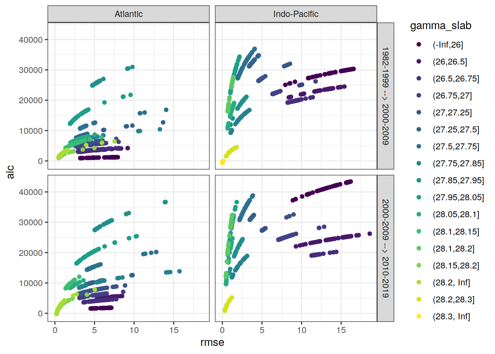

eMLR - model fitting
Jens Daniel Müller and Donghe Zhu
27 July, 2021
Last updated: 2021-07-27
Checks: 7 0
Knit directory: emlr_mod_v_XXX/
This reproducible R Markdown analysis was created with workflowr (version 1.6.2). The Checks tab describes the reproducibility checks that were applied when the results were created. The Past versions tab lists the development history.
Great! Since the R Markdown file has been committed to the Git repository, you know the exact version of the code that produced these results.
Great job! The global environment was empty. Objects defined in the global environment can affect the analysis in your R Markdown file in unknown ways. For reproduciblity it’s best to always run the code in an empty environment.
The command set.seed(20200707) was run prior to running the code in the R Markdown file. Setting a seed ensures that any results that rely on randomness, e.g. subsampling or permutations, are reproducible.
Great job! Recording the operating system, R version, and package versions is critical for reproducibility.
Nice! There were no cached chunks for this analysis, so you can be confident that you successfully produced the results during this run.
Great job! Using relative paths to the files within your workflowr project makes it easier to run your code on other machines.
Great! You are using Git for version control. Tracking code development and connecting the code version to the results is critical for reproducibility.
The results in this page were generated with repository version 20ba609. See the Past versions tab to see a history of the changes made to the R Markdown and HTML files.
Note that you need to be careful to ensure that all relevant files for the analysis have been committed to Git prior to generating the results (you can use wflow_publish or wflow_git_commit). workflowr only checks the R Markdown file, but you know if there are other scripts or data files that it depends on. Below is the status of the Git repository when the results were generated:
Ignored files:
Ignored: .Rhistory
Ignored: .Rproj.user/
Untracked files:
Untracked: docs_GV_2021_2R_ann_nafilled_NorESM/
Untracked: docs_GV_2021_2R_ann_nafilled_atl_a27.97_a28_NorESM/
Untracked: docs_GV_2021_2R_ann_standard_all_sfc_CESM/
Untracked: docs_GV_2021_2R_ann_standard_atl_a27.97_a28_NorESM/
Untracked: docs_GV_2021_2R_ann_standard_atl_a27.98_a28.02_NorESM/
Untracked: docs_GV_2021_2R_ann_standard_no_sfc_CESM/
Untracked: docs_GV_2021_2R_ann_standard_rN_CESM/
Untracked: docs_GV_2021_2R_ann_standard_rP_rP*_CESM/
Untracked: docs_GV_2021_2R_ann_standard_rS_CESM/
Untracked: docs_GV_2021_2R_ann_standard_rT_CESM/
Untracked: docs_GV_2021_2R_mon_nafilled_ORCA/
Untracked: docs_GV_2021_2R_mon_nafilled_atl_a27.91_ORCA/
Untracked: docs_GV_2021_2R_mon_nafilled_atl_r27.95_ORCA/
Untracked: docs_GV_2021_2R_mon_standard_ORCA/
Untracked: docs_GV_2021_2R_mon_standard_all_sfc_ORCA/
Untracked: docs_GV_2021_2R_mon_standard_atl_a27.91_ORCA/
Untracked: docs_GV_2021_2R_mon_standard_atl_r27.95_ORCA/
Untracked: docs_GV_2021_2R_mon_standard_no_sfc_ORCA/
Untracked: docs_GV_2021_2R_mon_standard_rN_ORCA/
Untracked: docs_GV_2021_2R_mon_standard_rP_rP*_ORCA/
Untracked: docs_GV_2021_2R_mon_standard_rS_ORCA/
Untracked: docs_GV_2021_2R_mon_standard_rT_ORCA/
Untracked: docs_GV_2021_S5_ann_nafilled_atl_a27.97_a28_NorESM/
Untracked: docs_GV_2021_S5_ann_standard_NorESM/
Untracked: docs_GV_2021_S5_ann_standard_atl_a27.97_a28_NorESM/
Untracked: docs_GV_2021_S5_mon_nafilled_ORCA/
Untracked: docs_GV_2021_S5_mon_standard_ORCA/
Untracked: docs_GV_2021_S5_mon_standard_atl_a27.91_ORCA/
Unstaged changes:
Modified: data/auxillary/params_local.rds
Deleted: docs_GV_2021_2R_mon_standard/.nojekyll
Deleted: docs_GV_2021_2R_mon_standard/analysis_cant_budgets.html
Deleted: docs_GV_2021_2R_mon_standard/analysis_global_section.html
Deleted: docs_GV_2021_2R_mon_standard/analysis_inventory_maps.html
Deleted: docs_GV_2021_2R_mon_standard/analysis_isoneutral_slab_distribution.html
Deleted: docs_GV_2021_2R_mon_standard/analysis_others.html
Deleted: docs_GV_2021_2R_mon_standard/analysis_zonal_mean_sections.html
Deleted: docs_GV_2021_2R_mon_standard/config_dependencies.html
Deleted: docs_GV_2021_2R_mon_standard/config_parameterization_local.html
Deleted: docs_GV_2021_2R_mon_standard/eMLR_GLODAPv2_2020_subsetting.html
Deleted: docs_GV_2021_2R_mon_standard/eMLR_assumption_testing.html
Deleted: docs_GV_2021_2R_mon_standard/eMLR_data_preparation.html
Deleted: docs_GV_2021_2R_mon_standard/eMLR_model_fitting.html
Deleted: docs_GV_2021_2R_mon_standard/figure/analysis_global_section.Rmd/cant_all_global_section-1.png
Deleted: docs_GV_2021_2R_mon_standard/figure/analysis_global_section.Rmd/cant_all_global_section-2.png
Deleted: docs_GV_2021_2R_mon_standard/figure/analysis_global_section.Rmd/cant_all_global_section-3.png
Deleted: docs_GV_2021_2R_mon_standard/figure/analysis_global_section.Rmd/cant_all_global_section-4.png
Deleted: docs_GV_2021_2R_mon_standard/figure/analysis_global_section.Rmd/cant_all_global_section-5.png
Deleted: docs_GV_2021_2R_mon_standard/figure/analysis_global_section.Rmd/cant_all_global_section-6.png
Deleted: docs_GV_2021_2R_mon_standard/figure/analysis_global_section.Rmd/cant_model_quality_check-1.png
Deleted: docs_GV_2021_2R_mon_standard/figure/analysis_global_section.Rmd/cant_pos_global_section-1.png
Deleted: docs_GV_2021_2R_mon_standard/figure/analysis_global_section.Rmd/cant_pos_global_section-2.png
Deleted: docs_GV_2021_2R_mon_standard/figure/analysis_global_section.Rmd/cant_pos_global_section-3.png
Deleted: docs_GV_2021_2R_mon_standard/figure/analysis_global_section.Rmd/cant_pos_global_section-4.png
Deleted: docs_GV_2021_2R_mon_standard/figure/analysis_global_section.Rmd/cant_pos_global_section-5.png
Deleted: docs_GV_2021_2R_mon_standard/figure/analysis_global_section.Rmd/cant_pos_global_section-6.png
Deleted: docs_GV_2021_2R_mon_standard/figure/analysis_global_section.Rmd/cant_pos_model_quality_check-1.png
Deleted: docs_GV_2021_2R_mon_standard/figure/analysis_inventory_maps.Rmd/cant_inventory_map-1.png
Deleted: docs_GV_2021_2R_mon_standard/figure/analysis_inventory_maps.Rmd/cant_inventory_map-2.png
Deleted: docs_GV_2021_2R_mon_standard/figure/analysis_inventory_maps.Rmd/cant_inventory_map-3.png
Deleted: docs_GV_2021_2R_mon_standard/figure/analysis_inventory_maps.Rmd/cant_inventory_map-4.png
Deleted: docs_GV_2021_2R_mon_standard/figure/analysis_inventory_maps.Rmd/cant_inventory_map-5.png
Deleted: docs_GV_2021_2R_mon_standard/figure/analysis_inventory_maps.Rmd/cant_inventory_map-6.png
Deleted: docs_GV_2021_2R_mon_standard/figure/analysis_inventory_maps.Rmd/cant_pos_inventory_map-1.png
Deleted: docs_GV_2021_2R_mon_standard/figure/analysis_inventory_maps.Rmd/cant_pos_inventory_map-2.png
Deleted: docs_GV_2021_2R_mon_standard/figure/analysis_inventory_maps.Rmd/cant_pos_inventory_map-3.png
Deleted: docs_GV_2021_2R_mon_standard/figure/analysis_inventory_maps.Rmd/cant_pos_inventory_map-4.png
Deleted: docs_GV_2021_2R_mon_standard/figure/analysis_inventory_maps.Rmd/cant_pos_inventory_map-5.png
Deleted: docs_GV_2021_2R_mon_standard/figure/analysis_inventory_maps.Rmd/cant_pos_inventory_map-6.png
Deleted: docs_GV_2021_2R_mon_standard/figure/analysis_isoneutral_slab_distribution.Rmd/cant_all_gamma_slab_maps-1.png
Deleted: docs_GV_2021_2R_mon_standard/figure/analysis_isoneutral_slab_distribution.Rmd/cant_all_gamma_slab_maps-10.png
Deleted: docs_GV_2021_2R_mon_standard/figure/analysis_isoneutral_slab_distribution.Rmd/cant_all_gamma_slab_maps-100.png
Deleted: docs_GV_2021_2R_mon_standard/figure/analysis_isoneutral_slab_distribution.Rmd/cant_all_gamma_slab_maps-101.png
Deleted: docs_GV_2021_2R_mon_standard/figure/analysis_isoneutral_slab_distribution.Rmd/cant_all_gamma_slab_maps-102.png
Deleted: docs_GV_2021_2R_mon_standard/figure/analysis_isoneutral_slab_distribution.Rmd/cant_all_gamma_slab_maps-11.png
Deleted: docs_GV_2021_2R_mon_standard/figure/analysis_isoneutral_slab_distribution.Rmd/cant_all_gamma_slab_maps-12.png
Deleted: docs_GV_2021_2R_mon_standard/figure/analysis_isoneutral_slab_distribution.Rmd/cant_all_gamma_slab_maps-13.png
Deleted: docs_GV_2021_2R_mon_standard/figure/analysis_isoneutral_slab_distribution.Rmd/cant_all_gamma_slab_maps-14.png
Deleted: docs_GV_2021_2R_mon_standard/figure/analysis_isoneutral_slab_distribution.Rmd/cant_all_gamma_slab_maps-15.png
Deleted: docs_GV_2021_2R_mon_standard/figure/analysis_isoneutral_slab_distribution.Rmd/cant_all_gamma_slab_maps-16.png
Deleted: docs_GV_2021_2R_mon_standard/figure/analysis_isoneutral_slab_distribution.Rmd/cant_all_gamma_slab_maps-17.png
Deleted: docs_GV_2021_2R_mon_standard/figure/analysis_isoneutral_slab_distribution.Rmd/cant_all_gamma_slab_maps-18.png
Deleted: docs_GV_2021_2R_mon_standard/figure/analysis_isoneutral_slab_distribution.Rmd/cant_all_gamma_slab_maps-19.png
Deleted: docs_GV_2021_2R_mon_standard/figure/analysis_isoneutral_slab_distribution.Rmd/cant_all_gamma_slab_maps-2.png
Deleted: docs_GV_2021_2R_mon_standard/figure/analysis_isoneutral_slab_distribution.Rmd/cant_all_gamma_slab_maps-20.png
Deleted: docs_GV_2021_2R_mon_standard/figure/analysis_isoneutral_slab_distribution.Rmd/cant_all_gamma_slab_maps-21.png
Deleted: docs_GV_2021_2R_mon_standard/figure/analysis_isoneutral_slab_distribution.Rmd/cant_all_gamma_slab_maps-22.png
Deleted: docs_GV_2021_2R_mon_standard/figure/analysis_isoneutral_slab_distribution.Rmd/cant_all_gamma_slab_maps-23.png
Deleted: docs_GV_2021_2R_mon_standard/figure/analysis_isoneutral_slab_distribution.Rmd/cant_all_gamma_slab_maps-24.png
Deleted: docs_GV_2021_2R_mon_standard/figure/analysis_isoneutral_slab_distribution.Rmd/cant_all_gamma_slab_maps-25.png
Deleted: docs_GV_2021_2R_mon_standard/figure/analysis_isoneutral_slab_distribution.Rmd/cant_all_gamma_slab_maps-26.png
Deleted: docs_GV_2021_2R_mon_standard/figure/analysis_isoneutral_slab_distribution.Rmd/cant_all_gamma_slab_maps-27.png
Deleted: docs_GV_2021_2R_mon_standard/figure/analysis_isoneutral_slab_distribution.Rmd/cant_all_gamma_slab_maps-28.png
Deleted: docs_GV_2021_2R_mon_standard/figure/analysis_isoneutral_slab_distribution.Rmd/cant_all_gamma_slab_maps-29.png
Deleted: docs_GV_2021_2R_mon_standard/figure/analysis_isoneutral_slab_distribution.Rmd/cant_all_gamma_slab_maps-3.png
Deleted: docs_GV_2021_2R_mon_standard/figure/analysis_isoneutral_slab_distribution.Rmd/cant_all_gamma_slab_maps-30.png
Deleted: docs_GV_2021_2R_mon_standard/figure/analysis_isoneutral_slab_distribution.Rmd/cant_all_gamma_slab_maps-31.png
Deleted: docs_GV_2021_2R_mon_standard/figure/analysis_isoneutral_slab_distribution.Rmd/cant_all_gamma_slab_maps-32.png
Deleted: docs_GV_2021_2R_mon_standard/figure/analysis_isoneutral_slab_distribution.Rmd/cant_all_gamma_slab_maps-33.png
Deleted: docs_GV_2021_2R_mon_standard/figure/analysis_isoneutral_slab_distribution.Rmd/cant_all_gamma_slab_maps-34.png
Deleted: docs_GV_2021_2R_mon_standard/figure/analysis_isoneutral_slab_distribution.Rmd/cant_all_gamma_slab_maps-35.png
Deleted: docs_GV_2021_2R_mon_standard/figure/analysis_isoneutral_slab_distribution.Rmd/cant_all_gamma_slab_maps-36.png
Deleted: docs_GV_2021_2R_mon_standard/figure/analysis_isoneutral_slab_distribution.Rmd/cant_all_gamma_slab_maps-37.png
Deleted: docs_GV_2021_2R_mon_standard/figure/analysis_isoneutral_slab_distribution.Rmd/cant_all_gamma_slab_maps-38.png
Deleted: docs_GV_2021_2R_mon_standard/figure/analysis_isoneutral_slab_distribution.Rmd/cant_all_gamma_slab_maps-39.png
Deleted: docs_GV_2021_2R_mon_standard/figure/analysis_isoneutral_slab_distribution.Rmd/cant_all_gamma_slab_maps-4.png
Deleted: docs_GV_2021_2R_mon_standard/figure/analysis_isoneutral_slab_distribution.Rmd/cant_all_gamma_slab_maps-40.png
Deleted: docs_GV_2021_2R_mon_standard/figure/analysis_isoneutral_slab_distribution.Rmd/cant_all_gamma_slab_maps-41.png
Deleted: docs_GV_2021_2R_mon_standard/figure/analysis_isoneutral_slab_distribution.Rmd/cant_all_gamma_slab_maps-42.png
Deleted: docs_GV_2021_2R_mon_standard/figure/analysis_isoneutral_slab_distribution.Rmd/cant_all_gamma_slab_maps-43.png
Deleted: docs_GV_2021_2R_mon_standard/figure/analysis_isoneutral_slab_distribution.Rmd/cant_all_gamma_slab_maps-44.png
Deleted: docs_GV_2021_2R_mon_standard/figure/analysis_isoneutral_slab_distribution.Rmd/cant_all_gamma_slab_maps-45.png
Deleted: docs_GV_2021_2R_mon_standard/figure/analysis_isoneutral_slab_distribution.Rmd/cant_all_gamma_slab_maps-46.png
Deleted: docs_GV_2021_2R_mon_standard/figure/analysis_isoneutral_slab_distribution.Rmd/cant_all_gamma_slab_maps-47.png
Deleted: docs_GV_2021_2R_mon_standard/figure/analysis_isoneutral_slab_distribution.Rmd/cant_all_gamma_slab_maps-48.png
Deleted: docs_GV_2021_2R_mon_standard/figure/analysis_isoneutral_slab_distribution.Rmd/cant_all_gamma_slab_maps-49.png
Deleted: docs_GV_2021_2R_mon_standard/figure/analysis_isoneutral_slab_distribution.Rmd/cant_all_gamma_slab_maps-5.png
Deleted: docs_GV_2021_2R_mon_standard/figure/analysis_isoneutral_slab_distribution.Rmd/cant_all_gamma_slab_maps-50.png
Deleted: docs_GV_2021_2R_mon_standard/figure/analysis_isoneutral_slab_distribution.Rmd/cant_all_gamma_slab_maps-51.png
Deleted: docs_GV_2021_2R_mon_standard/figure/analysis_isoneutral_slab_distribution.Rmd/cant_all_gamma_slab_maps-52.png
Deleted: docs_GV_2021_2R_mon_standard/figure/analysis_isoneutral_slab_distribution.Rmd/cant_all_gamma_slab_maps-53.png
Deleted: docs_GV_2021_2R_mon_standard/figure/analysis_isoneutral_slab_distribution.Rmd/cant_all_gamma_slab_maps-54.png
Deleted: docs_GV_2021_2R_mon_standard/figure/analysis_isoneutral_slab_distribution.Rmd/cant_all_gamma_slab_maps-55.png
Deleted: docs_GV_2021_2R_mon_standard/figure/analysis_isoneutral_slab_distribution.Rmd/cant_all_gamma_slab_maps-56.png
Deleted: docs_GV_2021_2R_mon_standard/figure/analysis_isoneutral_slab_distribution.Rmd/cant_all_gamma_slab_maps-57.png
Deleted: docs_GV_2021_2R_mon_standard/figure/analysis_isoneutral_slab_distribution.Rmd/cant_all_gamma_slab_maps-58.png
Deleted: docs_GV_2021_2R_mon_standard/figure/analysis_isoneutral_slab_distribution.Rmd/cant_all_gamma_slab_maps-59.png
Deleted: docs_GV_2021_2R_mon_standard/figure/analysis_isoneutral_slab_distribution.Rmd/cant_all_gamma_slab_maps-6.png
Deleted: docs_GV_2021_2R_mon_standard/figure/analysis_isoneutral_slab_distribution.Rmd/cant_all_gamma_slab_maps-60.png
Deleted: docs_GV_2021_2R_mon_standard/figure/analysis_isoneutral_slab_distribution.Rmd/cant_all_gamma_slab_maps-61.png
Deleted: docs_GV_2021_2R_mon_standard/figure/analysis_isoneutral_slab_distribution.Rmd/cant_all_gamma_slab_maps-62.png
Deleted: docs_GV_2021_2R_mon_standard/figure/analysis_isoneutral_slab_distribution.Rmd/cant_all_gamma_slab_maps-63.png
Deleted: docs_GV_2021_2R_mon_standard/figure/analysis_isoneutral_slab_distribution.Rmd/cant_all_gamma_slab_maps-64.png
Deleted: docs_GV_2021_2R_mon_standard/figure/analysis_isoneutral_slab_distribution.Rmd/cant_all_gamma_slab_maps-65.png
Deleted: docs_GV_2021_2R_mon_standard/figure/analysis_isoneutral_slab_distribution.Rmd/cant_all_gamma_slab_maps-66.png
Deleted: docs_GV_2021_2R_mon_standard/figure/analysis_isoneutral_slab_distribution.Rmd/cant_all_gamma_slab_maps-67.png
Deleted: docs_GV_2021_2R_mon_standard/figure/analysis_isoneutral_slab_distribution.Rmd/cant_all_gamma_slab_maps-68.png
Deleted: docs_GV_2021_2R_mon_standard/figure/analysis_isoneutral_slab_distribution.Rmd/cant_all_gamma_slab_maps-69.png
Deleted: docs_GV_2021_2R_mon_standard/figure/analysis_isoneutral_slab_distribution.Rmd/cant_all_gamma_slab_maps-7.png
Deleted: docs_GV_2021_2R_mon_standard/figure/analysis_isoneutral_slab_distribution.Rmd/cant_all_gamma_slab_maps-70.png
Deleted: docs_GV_2021_2R_mon_standard/figure/analysis_isoneutral_slab_distribution.Rmd/cant_all_gamma_slab_maps-71.png
Deleted: docs_GV_2021_2R_mon_standard/figure/analysis_isoneutral_slab_distribution.Rmd/cant_all_gamma_slab_maps-72.png
Deleted: docs_GV_2021_2R_mon_standard/figure/analysis_isoneutral_slab_distribution.Rmd/cant_all_gamma_slab_maps-73.png
Deleted: docs_GV_2021_2R_mon_standard/figure/analysis_isoneutral_slab_distribution.Rmd/cant_all_gamma_slab_maps-74.png
Deleted: docs_GV_2021_2R_mon_standard/figure/analysis_isoneutral_slab_distribution.Rmd/cant_all_gamma_slab_maps-75.png
Deleted: docs_GV_2021_2R_mon_standard/figure/analysis_isoneutral_slab_distribution.Rmd/cant_all_gamma_slab_maps-76.png
Deleted: docs_GV_2021_2R_mon_standard/figure/analysis_isoneutral_slab_distribution.Rmd/cant_all_gamma_slab_maps-77.png
Deleted: docs_GV_2021_2R_mon_standard/figure/analysis_isoneutral_slab_distribution.Rmd/cant_all_gamma_slab_maps-78.png
Deleted: docs_GV_2021_2R_mon_standard/figure/analysis_isoneutral_slab_distribution.Rmd/cant_all_gamma_slab_maps-79.png
Deleted: docs_GV_2021_2R_mon_standard/figure/analysis_isoneutral_slab_distribution.Rmd/cant_all_gamma_slab_maps-8.png
Deleted: docs_GV_2021_2R_mon_standard/figure/analysis_isoneutral_slab_distribution.Rmd/cant_all_gamma_slab_maps-80.png
Deleted: docs_GV_2021_2R_mon_standard/figure/analysis_isoneutral_slab_distribution.Rmd/cant_all_gamma_slab_maps-81.png
Deleted: docs_GV_2021_2R_mon_standard/figure/analysis_isoneutral_slab_distribution.Rmd/cant_all_gamma_slab_maps-82.png
Deleted: docs_GV_2021_2R_mon_standard/figure/analysis_isoneutral_slab_distribution.Rmd/cant_all_gamma_slab_maps-83.png
Deleted: docs_GV_2021_2R_mon_standard/figure/analysis_isoneutral_slab_distribution.Rmd/cant_all_gamma_slab_maps-84.png
Deleted: docs_GV_2021_2R_mon_standard/figure/analysis_isoneutral_slab_distribution.Rmd/cant_all_gamma_slab_maps-85.png
Deleted: docs_GV_2021_2R_mon_standard/figure/analysis_isoneutral_slab_distribution.Rmd/cant_all_gamma_slab_maps-86.png
Deleted: docs_GV_2021_2R_mon_standard/figure/analysis_isoneutral_slab_distribution.Rmd/cant_all_gamma_slab_maps-87.png
Deleted: docs_GV_2021_2R_mon_standard/figure/analysis_isoneutral_slab_distribution.Rmd/cant_all_gamma_slab_maps-88.png
Deleted: docs_GV_2021_2R_mon_standard/figure/analysis_isoneutral_slab_distribution.Rmd/cant_all_gamma_slab_maps-89.png
Deleted: docs_GV_2021_2R_mon_standard/figure/analysis_isoneutral_slab_distribution.Rmd/cant_all_gamma_slab_maps-9.png
Deleted: docs_GV_2021_2R_mon_standard/figure/analysis_isoneutral_slab_distribution.Rmd/cant_all_gamma_slab_maps-90.png
Deleted: docs_GV_2021_2R_mon_standard/figure/analysis_isoneutral_slab_distribution.Rmd/cant_all_gamma_slab_maps-91.png
Deleted: docs_GV_2021_2R_mon_standard/figure/analysis_isoneutral_slab_distribution.Rmd/cant_all_gamma_slab_maps-92.png
Deleted: docs_GV_2021_2R_mon_standard/figure/analysis_isoneutral_slab_distribution.Rmd/cant_all_gamma_slab_maps-93.png
Deleted: docs_GV_2021_2R_mon_standard/figure/analysis_isoneutral_slab_distribution.Rmd/cant_all_gamma_slab_maps-94.png
Deleted: docs_GV_2021_2R_mon_standard/figure/analysis_isoneutral_slab_distribution.Rmd/cant_all_gamma_slab_maps-95.png
Deleted: docs_GV_2021_2R_mon_standard/figure/analysis_isoneutral_slab_distribution.Rmd/cant_all_gamma_slab_maps-96.png
Deleted: docs_GV_2021_2R_mon_standard/figure/analysis_isoneutral_slab_distribution.Rmd/cant_all_gamma_slab_maps-97.png
Deleted: docs_GV_2021_2R_mon_standard/figure/analysis_isoneutral_slab_distribution.Rmd/cant_all_gamma_slab_maps-98.png
Deleted: docs_GV_2021_2R_mon_standard/figure/analysis_isoneutral_slab_distribution.Rmd/cant_all_gamma_slab_maps-99.png
Deleted: docs_GV_2021_2R_mon_standard/figure/analysis_isoneutral_slab_distribution.Rmd/cant_pos_gamma_slab_maps-1.png
Deleted: docs_GV_2021_2R_mon_standard/figure/analysis_isoneutral_slab_distribution.Rmd/cant_pos_gamma_slab_maps-10.png
Deleted: docs_GV_2021_2R_mon_standard/figure/analysis_isoneutral_slab_distribution.Rmd/cant_pos_gamma_slab_maps-100.png
Deleted: docs_GV_2021_2R_mon_standard/figure/analysis_isoneutral_slab_distribution.Rmd/cant_pos_gamma_slab_maps-101.png
Deleted: docs_GV_2021_2R_mon_standard/figure/analysis_isoneutral_slab_distribution.Rmd/cant_pos_gamma_slab_maps-102.png
Deleted: docs_GV_2021_2R_mon_standard/figure/analysis_isoneutral_slab_distribution.Rmd/cant_pos_gamma_slab_maps-11.png
Deleted: docs_GV_2021_2R_mon_standard/figure/analysis_isoneutral_slab_distribution.Rmd/cant_pos_gamma_slab_maps-12.png
Deleted: docs_GV_2021_2R_mon_standard/figure/analysis_isoneutral_slab_distribution.Rmd/cant_pos_gamma_slab_maps-13.png
Deleted: docs_GV_2021_2R_mon_standard/figure/analysis_isoneutral_slab_distribution.Rmd/cant_pos_gamma_slab_maps-14.png
Deleted: docs_GV_2021_2R_mon_standard/figure/analysis_isoneutral_slab_distribution.Rmd/cant_pos_gamma_slab_maps-15.png
Deleted: docs_GV_2021_2R_mon_standard/figure/analysis_isoneutral_slab_distribution.Rmd/cant_pos_gamma_slab_maps-16.png
Deleted: docs_GV_2021_2R_mon_standard/figure/analysis_isoneutral_slab_distribution.Rmd/cant_pos_gamma_slab_maps-17.png
Deleted: docs_GV_2021_2R_mon_standard/figure/analysis_isoneutral_slab_distribution.Rmd/cant_pos_gamma_slab_maps-18.png
Deleted: docs_GV_2021_2R_mon_standard/figure/analysis_isoneutral_slab_distribution.Rmd/cant_pos_gamma_slab_maps-19.png
Deleted: docs_GV_2021_2R_mon_standard/figure/analysis_isoneutral_slab_distribution.Rmd/cant_pos_gamma_slab_maps-2.png
Deleted: docs_GV_2021_2R_mon_standard/figure/analysis_isoneutral_slab_distribution.Rmd/cant_pos_gamma_slab_maps-20.png
Deleted: docs_GV_2021_2R_mon_standard/figure/analysis_isoneutral_slab_distribution.Rmd/cant_pos_gamma_slab_maps-21.png
Deleted: docs_GV_2021_2R_mon_standard/figure/analysis_isoneutral_slab_distribution.Rmd/cant_pos_gamma_slab_maps-22.png
Deleted: docs_GV_2021_2R_mon_standard/figure/analysis_isoneutral_slab_distribution.Rmd/cant_pos_gamma_slab_maps-23.png
Deleted: docs_GV_2021_2R_mon_standard/figure/analysis_isoneutral_slab_distribution.Rmd/cant_pos_gamma_slab_maps-24.png
Deleted: docs_GV_2021_2R_mon_standard/figure/analysis_isoneutral_slab_distribution.Rmd/cant_pos_gamma_slab_maps-25.png
Deleted: docs_GV_2021_2R_mon_standard/figure/analysis_isoneutral_slab_distribution.Rmd/cant_pos_gamma_slab_maps-26.png
Deleted: docs_GV_2021_2R_mon_standard/figure/analysis_isoneutral_slab_distribution.Rmd/cant_pos_gamma_slab_maps-27.png
Deleted: docs_GV_2021_2R_mon_standard/figure/analysis_isoneutral_slab_distribution.Rmd/cant_pos_gamma_slab_maps-28.png
Deleted: docs_GV_2021_2R_mon_standard/figure/analysis_isoneutral_slab_distribution.Rmd/cant_pos_gamma_slab_maps-29.png
Deleted: docs_GV_2021_2R_mon_standard/figure/analysis_isoneutral_slab_distribution.Rmd/cant_pos_gamma_slab_maps-3.png
Deleted: docs_GV_2021_2R_mon_standard/figure/analysis_isoneutral_slab_distribution.Rmd/cant_pos_gamma_slab_maps-30.png
Deleted: docs_GV_2021_2R_mon_standard/figure/analysis_isoneutral_slab_distribution.Rmd/cant_pos_gamma_slab_maps-31.png
Deleted: docs_GV_2021_2R_mon_standard/figure/analysis_isoneutral_slab_distribution.Rmd/cant_pos_gamma_slab_maps-32.png
Deleted: docs_GV_2021_2R_mon_standard/figure/analysis_isoneutral_slab_distribution.Rmd/cant_pos_gamma_slab_maps-33.png
Deleted: docs_GV_2021_2R_mon_standard/figure/analysis_isoneutral_slab_distribution.Rmd/cant_pos_gamma_slab_maps-34.png
Deleted: docs_GV_2021_2R_mon_standard/figure/analysis_isoneutral_slab_distribution.Rmd/cant_pos_gamma_slab_maps-35.png
Deleted: docs_GV_2021_2R_mon_standard/figure/analysis_isoneutral_slab_distribution.Rmd/cant_pos_gamma_slab_maps-36.png
Deleted: docs_GV_2021_2R_mon_standard/figure/analysis_isoneutral_slab_distribution.Rmd/cant_pos_gamma_slab_maps-37.png
Deleted: docs_GV_2021_2R_mon_standard/figure/analysis_isoneutral_slab_distribution.Rmd/cant_pos_gamma_slab_maps-38.png
Deleted: docs_GV_2021_2R_mon_standard/figure/analysis_isoneutral_slab_distribution.Rmd/cant_pos_gamma_slab_maps-39.png
Deleted: docs_GV_2021_2R_mon_standard/figure/analysis_isoneutral_slab_distribution.Rmd/cant_pos_gamma_slab_maps-4.png
Deleted: docs_GV_2021_2R_mon_standard/figure/analysis_isoneutral_slab_distribution.Rmd/cant_pos_gamma_slab_maps-40.png
Deleted: docs_GV_2021_2R_mon_standard/figure/analysis_isoneutral_slab_distribution.Rmd/cant_pos_gamma_slab_maps-41.png
Deleted: docs_GV_2021_2R_mon_standard/figure/analysis_isoneutral_slab_distribution.Rmd/cant_pos_gamma_slab_maps-42.png
Deleted: docs_GV_2021_2R_mon_standard/figure/analysis_isoneutral_slab_distribution.Rmd/cant_pos_gamma_slab_maps-43.png
Deleted: docs_GV_2021_2R_mon_standard/figure/analysis_isoneutral_slab_distribution.Rmd/cant_pos_gamma_slab_maps-44.png
Deleted: docs_GV_2021_2R_mon_standard/figure/analysis_isoneutral_slab_distribution.Rmd/cant_pos_gamma_slab_maps-45.png
Deleted: docs_GV_2021_2R_mon_standard/figure/analysis_isoneutral_slab_distribution.Rmd/cant_pos_gamma_slab_maps-46.png
Deleted: docs_GV_2021_2R_mon_standard/figure/analysis_isoneutral_slab_distribution.Rmd/cant_pos_gamma_slab_maps-47.png
Deleted: docs_GV_2021_2R_mon_standard/figure/analysis_isoneutral_slab_distribution.Rmd/cant_pos_gamma_slab_maps-48.png
Deleted: docs_GV_2021_2R_mon_standard/figure/analysis_isoneutral_slab_distribution.Rmd/cant_pos_gamma_slab_maps-49.png
Deleted: docs_GV_2021_2R_mon_standard/figure/analysis_isoneutral_slab_distribution.Rmd/cant_pos_gamma_slab_maps-5.png
Deleted: docs_GV_2021_2R_mon_standard/figure/analysis_isoneutral_slab_distribution.Rmd/cant_pos_gamma_slab_maps-50.png
Deleted: docs_GV_2021_2R_mon_standard/figure/analysis_isoneutral_slab_distribution.Rmd/cant_pos_gamma_slab_maps-51.png
Deleted: docs_GV_2021_2R_mon_standard/figure/analysis_isoneutral_slab_distribution.Rmd/cant_pos_gamma_slab_maps-52.png
Deleted: docs_GV_2021_2R_mon_standard/figure/analysis_isoneutral_slab_distribution.Rmd/cant_pos_gamma_slab_maps-53.png
Deleted: docs_GV_2021_2R_mon_standard/figure/analysis_isoneutral_slab_distribution.Rmd/cant_pos_gamma_slab_maps-54.png
Deleted: docs_GV_2021_2R_mon_standard/figure/analysis_isoneutral_slab_distribution.Rmd/cant_pos_gamma_slab_maps-55.png
Deleted: docs_GV_2021_2R_mon_standard/figure/analysis_isoneutral_slab_distribution.Rmd/cant_pos_gamma_slab_maps-56.png
Deleted: docs_GV_2021_2R_mon_standard/figure/analysis_isoneutral_slab_distribution.Rmd/cant_pos_gamma_slab_maps-57.png
Deleted: docs_GV_2021_2R_mon_standard/figure/analysis_isoneutral_slab_distribution.Rmd/cant_pos_gamma_slab_maps-58.png
Deleted: docs_GV_2021_2R_mon_standard/figure/analysis_isoneutral_slab_distribution.Rmd/cant_pos_gamma_slab_maps-59.png
Deleted: docs_GV_2021_2R_mon_standard/figure/analysis_isoneutral_slab_distribution.Rmd/cant_pos_gamma_slab_maps-6.png
Deleted: docs_GV_2021_2R_mon_standard/figure/analysis_isoneutral_slab_distribution.Rmd/cant_pos_gamma_slab_maps-60.png
Deleted: docs_GV_2021_2R_mon_standard/figure/analysis_isoneutral_slab_distribution.Rmd/cant_pos_gamma_slab_maps-61.png
Deleted: docs_GV_2021_2R_mon_standard/figure/analysis_isoneutral_slab_distribution.Rmd/cant_pos_gamma_slab_maps-62.png
Deleted: docs_GV_2021_2R_mon_standard/figure/analysis_isoneutral_slab_distribution.Rmd/cant_pos_gamma_slab_maps-63.png
Deleted: docs_GV_2021_2R_mon_standard/figure/analysis_isoneutral_slab_distribution.Rmd/cant_pos_gamma_slab_maps-64.png
Deleted: docs_GV_2021_2R_mon_standard/figure/analysis_isoneutral_slab_distribution.Rmd/cant_pos_gamma_slab_maps-65.png
Deleted: docs_GV_2021_2R_mon_standard/figure/analysis_isoneutral_slab_distribution.Rmd/cant_pos_gamma_slab_maps-66.png
Deleted: docs_GV_2021_2R_mon_standard/figure/analysis_isoneutral_slab_distribution.Rmd/cant_pos_gamma_slab_maps-67.png
Deleted: docs_GV_2021_2R_mon_standard/figure/analysis_isoneutral_slab_distribution.Rmd/cant_pos_gamma_slab_maps-68.png
Deleted: docs_GV_2021_2R_mon_standard/figure/analysis_isoneutral_slab_distribution.Rmd/cant_pos_gamma_slab_maps-69.png
Deleted: docs_GV_2021_2R_mon_standard/figure/analysis_isoneutral_slab_distribution.Rmd/cant_pos_gamma_slab_maps-7.png
Deleted: docs_GV_2021_2R_mon_standard/figure/analysis_isoneutral_slab_distribution.Rmd/cant_pos_gamma_slab_maps-70.png
Deleted: docs_GV_2021_2R_mon_standard/figure/analysis_isoneutral_slab_distribution.Rmd/cant_pos_gamma_slab_maps-71.png
Deleted: docs_GV_2021_2R_mon_standard/figure/analysis_isoneutral_slab_distribution.Rmd/cant_pos_gamma_slab_maps-72.png
Deleted: docs_GV_2021_2R_mon_standard/figure/analysis_isoneutral_slab_distribution.Rmd/cant_pos_gamma_slab_maps-73.png
Deleted: docs_GV_2021_2R_mon_standard/figure/analysis_isoneutral_slab_distribution.Rmd/cant_pos_gamma_slab_maps-74.png
Deleted: docs_GV_2021_2R_mon_standard/figure/analysis_isoneutral_slab_distribution.Rmd/cant_pos_gamma_slab_maps-75.png
Deleted: docs_GV_2021_2R_mon_standard/figure/analysis_isoneutral_slab_distribution.Rmd/cant_pos_gamma_slab_maps-76.png
Deleted: docs_GV_2021_2R_mon_standard/figure/analysis_isoneutral_slab_distribution.Rmd/cant_pos_gamma_slab_maps-77.png
Deleted: docs_GV_2021_2R_mon_standard/figure/analysis_isoneutral_slab_distribution.Rmd/cant_pos_gamma_slab_maps-78.png
Deleted: docs_GV_2021_2R_mon_standard/figure/analysis_isoneutral_slab_distribution.Rmd/cant_pos_gamma_slab_maps-79.png
Deleted: docs_GV_2021_2R_mon_standard/figure/analysis_isoneutral_slab_distribution.Rmd/cant_pos_gamma_slab_maps-8.png
Deleted: docs_GV_2021_2R_mon_standard/figure/analysis_isoneutral_slab_distribution.Rmd/cant_pos_gamma_slab_maps-80.png
Deleted: docs_GV_2021_2R_mon_standard/figure/analysis_isoneutral_slab_distribution.Rmd/cant_pos_gamma_slab_maps-81.png
Deleted: docs_GV_2021_2R_mon_standard/figure/analysis_isoneutral_slab_distribution.Rmd/cant_pos_gamma_slab_maps-82.png
Deleted: docs_GV_2021_2R_mon_standard/figure/analysis_isoneutral_slab_distribution.Rmd/cant_pos_gamma_slab_maps-83.png
Deleted: docs_GV_2021_2R_mon_standard/figure/analysis_isoneutral_slab_distribution.Rmd/cant_pos_gamma_slab_maps-84.png
Deleted: docs_GV_2021_2R_mon_standard/figure/analysis_isoneutral_slab_distribution.Rmd/cant_pos_gamma_slab_maps-85.png
Deleted: docs_GV_2021_2R_mon_standard/figure/analysis_isoneutral_slab_distribution.Rmd/cant_pos_gamma_slab_maps-86.png
Deleted: docs_GV_2021_2R_mon_standard/figure/analysis_isoneutral_slab_distribution.Rmd/cant_pos_gamma_slab_maps-87.png
Deleted: docs_GV_2021_2R_mon_standard/figure/analysis_isoneutral_slab_distribution.Rmd/cant_pos_gamma_slab_maps-88.png
Deleted: docs_GV_2021_2R_mon_standard/figure/analysis_isoneutral_slab_distribution.Rmd/cant_pos_gamma_slab_maps-89.png
Deleted: docs_GV_2021_2R_mon_standard/figure/analysis_isoneutral_slab_distribution.Rmd/cant_pos_gamma_slab_maps-9.png
Deleted: docs_GV_2021_2R_mon_standard/figure/analysis_isoneutral_slab_distribution.Rmd/cant_pos_gamma_slab_maps-90.png
Deleted: docs_GV_2021_2R_mon_standard/figure/analysis_isoneutral_slab_distribution.Rmd/cant_pos_gamma_slab_maps-91.png
Deleted: docs_GV_2021_2R_mon_standard/figure/analysis_isoneutral_slab_distribution.Rmd/cant_pos_gamma_slab_maps-92.png
Deleted: docs_GV_2021_2R_mon_standard/figure/analysis_isoneutral_slab_distribution.Rmd/cant_pos_gamma_slab_maps-93.png
Deleted: docs_GV_2021_2R_mon_standard/figure/analysis_isoneutral_slab_distribution.Rmd/cant_pos_gamma_slab_maps-94.png
Deleted: docs_GV_2021_2R_mon_standard/figure/analysis_isoneutral_slab_distribution.Rmd/cant_pos_gamma_slab_maps-95.png
Deleted: docs_GV_2021_2R_mon_standard/figure/analysis_isoneutral_slab_distribution.Rmd/cant_pos_gamma_slab_maps-96.png
Deleted: docs_GV_2021_2R_mon_standard/figure/analysis_isoneutral_slab_distribution.Rmd/cant_pos_gamma_slab_maps-97.png
Deleted: docs_GV_2021_2R_mon_standard/figure/analysis_isoneutral_slab_distribution.Rmd/cant_pos_gamma_slab_maps-98.png
Deleted: docs_GV_2021_2R_mon_standard/figure/analysis_isoneutral_slab_distribution.Rmd/cant_pos_gamma_slab_maps-99.png
Deleted: docs_GV_2021_2R_mon_standard/figure/analysis_others.Rmd/cant_section_predictor_contribution-1.png
Deleted: docs_GV_2021_2R_mon_standard/figure/analysis_others.Rmd/cant_section_predictor_contribution-2.png
Deleted: docs_GV_2021_2R_mon_standard/figure/analysis_others.Rmd/cant_section_predictor_contribution-3.png
Deleted: docs_GV_2021_2R_mon_standard/figure/analysis_others.Rmd/cant_section_predictor_contribution-4.png
Deleted: docs_GV_2021_2R_mon_standard/figure/analysis_others.Rmd/cant_section_predictor_contribution-5.png
Deleted: docs_GV_2021_2R_mon_standard/figure/analysis_others.Rmd/cant_section_predictor_contribution-6.png
Deleted: docs_GV_2021_2R_mon_standard/figure/analysis_others.Rmd/cant_section_predictor_contribution-7.png
Deleted: docs_GV_2021_2R_mon_standard/figure/analysis_others.Rmd/cant_section_predictor_contribution-8.png
Deleted: docs_GV_2021_2R_mon_standard/figure/analysis_others.Rmd/cant_sections_sd_cant-1.png
Deleted: docs_GV_2021_2R_mon_standard/figure/analysis_others.Rmd/cant_sections_sd_cant-2.png
Deleted: docs_GV_2021_2R_mon_standard/figure/analysis_others.Rmd/cant_sections_sd_cant-3.png
Deleted: docs_GV_2021_2R_mon_standard/figure/analysis_others.Rmd/cant_sections_sd_cant-4.png
Deleted: docs_GV_2021_2R_mon_standard/figure/analysis_others.Rmd/cant_sections_sd_cant-5.png
Deleted: docs_GV_2021_2R_mon_standard/figure/analysis_others.Rmd/cant_sections_sd_cant-6.png
Deleted: docs_GV_2021_2R_mon_standard/figure/analysis_others.Rmd/cant_sections_sd_models-1.png
Deleted: docs_GV_2021_2R_mon_standard/figure/analysis_others.Rmd/cant_sections_sd_models-2.png
Deleted: docs_GV_2021_2R_mon_standard/figure/analysis_others.Rmd/cant_sections_sd_models-3.png
Deleted: docs_GV_2021_2R_mon_standard/figure/analysis_others.Rmd/cant_sections_sd_models-4.png
Deleted: docs_GV_2021_2R_mon_standard/figure/analysis_others.Rmd/cant_sections_sd_models-5.png
Deleted: docs_GV_2021_2R_mon_standard/figure/analysis_others.Rmd/cant_sections_sd_models-6.png
Deleted: docs_GV_2021_2R_mon_standard/figure/analysis_others.Rmd/cant_vs_sd_by_basin_era-1.png
Deleted: docs_GV_2021_2R_mon_standard/figure/analysis_others.Rmd/cant_vs_sd_by_basin_era_zonal-1.png
Deleted: docs_GV_2021_2R_mon_standard/figure/analysis_others.Rmd/cant_vs_sd_by_basin_gamma-1.png
Deleted: docs_GV_2021_2R_mon_standard/figure/analysis_others.Rmd/cant_vs_sd_by_basin_gamma_zonal-1.png
Deleted: docs_GV_2021_2R_mon_standard/figure/analysis_others.Rmd/gamma_maps-1.png
Deleted: docs_GV_2021_2R_mon_standard/figure/analysis_others.Rmd/target_zonal_mean_era-1.png
Deleted: docs_GV_2021_2R_mon_standard/figure/analysis_others.Rmd/target_zonal_mean_era-2.png
Deleted: docs_GV_2021_2R_mon_standard/figure/analysis_others.Rmd/target_zonal_mean_era-3.png
Deleted: docs_GV_2021_2R_mon_standard/figure/analysis_zonal_mean_sections.Rmd/cant_pos_zonal_mean_section-1.png
Deleted: docs_GV_2021_2R_mon_standard/figure/analysis_zonal_mean_sections.Rmd/cant_pos_zonal_mean_section-10.png
Deleted: docs_GV_2021_2R_mon_standard/figure/analysis_zonal_mean_sections.Rmd/cant_pos_zonal_mean_section-11.png
Deleted: docs_GV_2021_2R_mon_standard/figure/analysis_zonal_mean_sections.Rmd/cant_pos_zonal_mean_section-12.png
Deleted: docs_GV_2021_2R_mon_standard/figure/analysis_zonal_mean_sections.Rmd/cant_pos_zonal_mean_section-13.png
Deleted: docs_GV_2021_2R_mon_standard/figure/analysis_zonal_mean_sections.Rmd/cant_pos_zonal_mean_section-14.png
Deleted: docs_GV_2021_2R_mon_standard/figure/analysis_zonal_mean_sections.Rmd/cant_pos_zonal_mean_section-15.png
Deleted: docs_GV_2021_2R_mon_standard/figure/analysis_zonal_mean_sections.Rmd/cant_pos_zonal_mean_section-16.png
Deleted: docs_GV_2021_2R_mon_standard/figure/analysis_zonal_mean_sections.Rmd/cant_pos_zonal_mean_section-17.png
Deleted: docs_GV_2021_2R_mon_standard/figure/analysis_zonal_mean_sections.Rmd/cant_pos_zonal_mean_section-18.png
Deleted: docs_GV_2021_2R_mon_standard/figure/analysis_zonal_mean_sections.Rmd/cant_pos_zonal_mean_section-2.png
Deleted: docs_GV_2021_2R_mon_standard/figure/analysis_zonal_mean_sections.Rmd/cant_pos_zonal_mean_section-3.png
Deleted: docs_GV_2021_2R_mon_standard/figure/analysis_zonal_mean_sections.Rmd/cant_pos_zonal_mean_section-4.png
Deleted: docs_GV_2021_2R_mon_standard/figure/analysis_zonal_mean_sections.Rmd/cant_pos_zonal_mean_section-5.png
Deleted: docs_GV_2021_2R_mon_standard/figure/analysis_zonal_mean_sections.Rmd/cant_pos_zonal_mean_section-6.png
Deleted: docs_GV_2021_2R_mon_standard/figure/analysis_zonal_mean_sections.Rmd/cant_pos_zonal_mean_section-7.png
Deleted: docs_GV_2021_2R_mon_standard/figure/analysis_zonal_mean_sections.Rmd/cant_pos_zonal_mean_section-8.png
Deleted: docs_GV_2021_2R_mon_standard/figure/analysis_zonal_mean_sections.Rmd/cant_pos_zonal_mean_section-9.png
Deleted: docs_GV_2021_2R_mon_standard/figure/analysis_zonal_mean_sections.Rmd/cant_zonal_mean_section-1.png
Deleted: docs_GV_2021_2R_mon_standard/figure/analysis_zonal_mean_sections.Rmd/cant_zonal_mean_section-10.png
Deleted: docs_GV_2021_2R_mon_standard/figure/analysis_zonal_mean_sections.Rmd/cant_zonal_mean_section-11.png
Deleted: docs_GV_2021_2R_mon_standard/figure/analysis_zonal_mean_sections.Rmd/cant_zonal_mean_section-12.png
Deleted: docs_GV_2021_2R_mon_standard/figure/analysis_zonal_mean_sections.Rmd/cant_zonal_mean_section-13.png
Deleted: docs_GV_2021_2R_mon_standard/figure/analysis_zonal_mean_sections.Rmd/cant_zonal_mean_section-14.png
Deleted: docs_GV_2021_2R_mon_standard/figure/analysis_zonal_mean_sections.Rmd/cant_zonal_mean_section-15.png
Deleted: docs_GV_2021_2R_mon_standard/figure/analysis_zonal_mean_sections.Rmd/cant_zonal_mean_section-16.png
Deleted: docs_GV_2021_2R_mon_standard/figure/analysis_zonal_mean_sections.Rmd/cant_zonal_mean_section-17.png
Deleted: docs_GV_2021_2R_mon_standard/figure/analysis_zonal_mean_sections.Rmd/cant_zonal_mean_section-18.png
Deleted: docs_GV_2021_2R_mon_standard/figure/analysis_zonal_mean_sections.Rmd/cant_zonal_mean_section-2.png
Deleted: docs_GV_2021_2R_mon_standard/figure/analysis_zonal_mean_sections.Rmd/cant_zonal_mean_section-3.png
Deleted: docs_GV_2021_2R_mon_standard/figure/analysis_zonal_mean_sections.Rmd/cant_zonal_mean_section-4.png
Deleted: docs_GV_2021_2R_mon_standard/figure/analysis_zonal_mean_sections.Rmd/cant_zonal_mean_section-5.png
Deleted: docs_GV_2021_2R_mon_standard/figure/analysis_zonal_mean_sections.Rmd/cant_zonal_mean_section-6.png
Deleted: docs_GV_2021_2R_mon_standard/figure/analysis_zonal_mean_sections.Rmd/cant_zonal_mean_section-7.png
Deleted: docs_GV_2021_2R_mon_standard/figure/analysis_zonal_mean_sections.Rmd/cant_zonal_mean_section-8.png
Deleted: docs_GV_2021_2R_mon_standard/figure/analysis_zonal_mean_sections.Rmd/cant_zonal_mean_section-9.png
Deleted: docs_GV_2021_2R_mon_standard/figure/eMLR_GLODAPv2_2020_subsetting.Rmd/GLODAP-based_subsetting_data_cleaning_stats-1.png
Deleted: docs_GV_2021_2R_mon_standard/figure/eMLR_GLODAPv2_2020_subsetting.Rmd/GLODAP_Atl_cruises_2013_2014_map-1.png
Deleted: docs_GV_2021_2R_mon_standard/figure/eMLR_GLODAPv2_2020_subsetting.Rmd/WOA18_basin_mask_GLODAP-based_subsetting_model_data_map-1.png
Deleted: docs_GV_2021_2R_mon_standard/figure/eMLR_GLODAPv2_2020_subsetting.Rmd/coverage_histogram_temporal-1.png
Deleted: docs_GV_2021_2R_mon_standard/figure/eMLR_GLODAPv2_2020_subsetting.Rmd/coverage_histogram_temporal-2.png
Deleted: docs_GV_2021_2R_mon_standard/figure/eMLR_GLODAPv2_2020_subsetting.Rmd/coverage_histogram_zonal-1.png
Deleted: docs_GV_2021_2R_mon_standard/figure/eMLR_GLODAPv2_2020_subsetting.Rmd/coverage_histogram_zonal-2.png
Deleted: docs_GV_2021_2R_mon_standard/figure/eMLR_GLODAPv2_2020_subsetting.Rmd/coverage_hovmoeller-1.png
Deleted: docs_GV_2021_2R_mon_standard/figure/eMLR_GLODAPv2_2020_subsetting.Rmd/coverage_hovmoeller-2.png
Deleted: docs_GV_2021_2R_mon_standard/figure/eMLR_GLODAPv2_2020_subsetting.Rmd/coverage_maps_era_clean-1.png
Deleted: docs_GV_2021_2R_mon_standard/figure/eMLR_GLODAPv2_2020_subsetting.Rmd/coverage_maps_era_subsetting_era_cleaning_level-1.png
Deleted: docs_GV_2021_2R_mon_standard/figure/eMLR_GLODAPv2_2020_subsetting.Rmd/talk_f_subset-1.png
Deleted: docs_GV_2021_2R_mon_standard/figure/eMLR_GLODAPv2_2020_subsetting.Rmd/talk_na_subset-1.png
Deleted: docs_GV_2021_2R_mon_standard/figure/eMLR_GLODAPv2_2020_subsetting.Rmd/talk_qc_subset-1.png
Deleted: docs_GV_2021_2R_mon_standard/figure/eMLR_GLODAPv2_2020_subsetting.Rmd/tco2_f_subset-1.png
Deleted: docs_GV_2021_2R_mon_standard/figure/eMLR_GLODAPv2_2020_subsetting.Rmd/tco2_qc_subset-1.png
Deleted: docs_GV_2021_2R_mon_standard/figure/eMLR_assumption_testing.Rmd/correlation_predictor_pairs-1.png
Deleted: docs_GV_2021_2R_mon_standard/figure/eMLR_assumption_testing.Rmd/correlation_predictors-1.png
Deleted: docs_GV_2021_2R_mon_standard/figure/eMLR_assumption_testing.Rmd/predictor_correlation_per_basin-1.png
Deleted: docs_GV_2021_2R_mon_standard/figure/eMLR_assumption_testing.Rmd/predictor_correlation_per_basin-2.png
Deleted: docs_GV_2021_2R_mon_standard/figure/eMLR_data_preparation.Rmd/cant_interpolation_to_observations-1.png
Deleted: docs_GV_2021_2R_mon_standard/figure/eMLR_data_preparation.Rmd/cant_surface_maps-1.png
Deleted: docs_GV_2021_2R_mon_standard/figure/eMLR_data_preparation.Rmd/cstar_reference_year_adjustment_histogram-1.png
Deleted: docs_GV_2021_2R_mon_standard/figure/eMLR_data_preparation.Rmd/cstar_reference_year_adjustment_vs_time_cant-1.png
Deleted: docs_GV_2021_2R_mon_standard/figure/eMLR_data_preparation.Rmd/cstar_reference_year_adjustment_vs_time_counts-1.png
Deleted: docs_GV_2021_2R_mon_standard/figure/eMLR_data_preparation.Rmd/histogram_predictor-1.png
Deleted: docs_GV_2021_2R_mon_standard/figure/eMLR_data_preparation.Rmd/merge_cstar_cant-1.png
Deleted: docs_GV_2021_2R_mon_standard/figure/eMLR_data_preparation.Rmd/meridional_sections-1.png
Deleted: docs_GV_2021_2R_mon_standard/figure/eMLR_data_preparation.Rmd/meridional_sections-2.png
Deleted: docs_GV_2021_2R_mon_standard/figure/eMLR_data_preparation.Rmd/meridional_sections-3.png
Deleted: docs_GV_2021_2R_mon_standard/figure/eMLR_data_preparation.Rmd/meridional_sections-4.png
Deleted: docs_GV_2021_2R_mon_standard/figure/eMLR_data_preparation.Rmd/meridional_sections-5.png
Deleted: docs_GV_2021_2R_mon_standard/figure/eMLR_data_preparation.Rmd/meridional_sections-6.png
Deleted: docs_GV_2021_2R_mon_standard/figure/eMLR_data_preparation.Rmd/meridional_sections-7.png
Deleted: docs_GV_2021_2R_mon_standard/figure/eMLR_data_preparation.Rmd/meridional_sections_isoneutral_slabs-1.png
Deleted: docs_GV_2021_2R_mon_standard/figure/eMLR_data_preparation.Rmd/obs_gamma_slab-1.png
Deleted: docs_GV_2021_2R_mon_standard/figure/eMLR_data_preparation.Rmd/obs_gamma_slab-2.png
Deleted: docs_GV_2021_2R_mon_standard/figure/eMLR_model_fitting.Rmd/aic_vs_rmse_all_models-1.png
Deleted: docs_GV_2021_2R_mon_standard/figure/eMLR_model_fitting.Rmd/aic_vs_rmse_selected_models-1.png
Deleted: docs_GV_2021_2R_mon_standard/figure/eMLR_model_fitting.Rmd/rmse_correlation_across_eras_all_models-1.png
Deleted: docs_GV_2021_2R_mon_standard/figure/eMLR_model_fitting.Rmd/rmse_correlation_across_eras_best_models-1.png
Deleted: docs_GV_2021_2R_mon_standard/figure/mapping_cant.Rmd/cant_deep_climatology_map-1.png
Deleted: docs_GV_2021_2R_mon_standard/figure/mapping_cant.Rmd/cant_deep_climatology_map-2.png
Deleted: docs_GV_2021_2R_mon_standard/figure/mapping_cant.Rmd/cant_deep_climatology_sections-1.png
Deleted: docs_GV_2021_2R_mon_standard/figure/mapping_cant.Rmd/cant_deep_climatology_sections-2.png
Deleted: docs_GV_2021_2R_mon_standard/figure/mapping_cant.Rmd/cant_inventories-1.png
Deleted: docs_GV_2021_2R_mon_standard/figure/mapping_cant.Rmd/cant_surface_climatology_map-1.png
Deleted: docs_GV_2021_2R_mon_standard/figure/mapping_cant.Rmd/cant_surface_climatology_map-2.png
Deleted: docs_GV_2021_2R_mon_standard/figure/mapping_cant.Rmd/cant_surface_climatology_sections-1.png
Deleted: docs_GV_2021_2R_mon_standard/figure/mapping_cant.Rmd/cant_surface_climatology_sections-2.png
Deleted: docs_GV_2021_2R_mon_standard/figure/mapping_cant.Rmd/pCO2_climatology_map-1.png
Deleted: docs_GV_2021_2R_mon_standard/figure/mapping_cant.Rmd/pCO2_climatology_sections-1.png
Deleted: docs_GV_2021_2R_mon_standard/figure/mapping_cant.Rmd/revelle_factor_climatology_map-1.png
Deleted: docs_GV_2021_2R_mon_standard/figure/mapping_cant.Rmd/revelle_factor_climatology_sections-1.png
Deleted: docs_GV_2021_2R_mon_standard/figure/mapping_predictor_preparation.Rmd/PO4_star_climatology_maps-1.png
Deleted: docs_GV_2021_2R_mon_standard/figure/mapping_predictor_preparation.Rmd/PO4_star_climatology_section-1.png
Deleted: docs_GV_2021_2R_mon_standard/figure/mapping_predictor_preparation.Rmd/all_predictor_sections-1.png
Deleted: docs_GV_2021_2R_mon_standard/figure/mapping_predictor_preparation.Rmd/all_predictor_sections-2.png
Deleted: docs_GV_2021_2R_mon_standard/figure/mapping_predictor_preparation.Rmd/all_predictor_sections-3.png
Deleted: docs_GV_2021_2R_mon_standard/figure/mapping_predictor_preparation.Rmd/all_predictor_sections-4.png
Deleted: docs_GV_2021_2R_mon_standard/figure/mapping_predictor_preparation.Rmd/all_predictor_sections-5.png
Deleted: docs_GV_2021_2R_mon_standard/figure/mapping_predictor_preparation.Rmd/all_predictor_sections-6.png
Deleted: docs_GV_2021_2R_mon_standard/figure/mapping_predictor_preparation.Rmd/all_predictor_sections-7.png
Deleted: docs_GV_2021_2R_mon_standard/figure/mapping_predictor_preparation.Rmd/all_predictor_sections-8.png
Deleted: docs_GV_2021_2R_mon_standard/figure/mapping_predictor_preparation.Rmd/all_predictor_sections_surface-1.png
Deleted: docs_GV_2021_2R_mon_standard/figure/mapping_predictor_preparation.Rmd/all_predictor_sections_surface-2.png
Deleted: docs_GV_2021_2R_mon_standard/figure/mapping_predictor_preparation.Rmd/all_predictor_sections_surface-3.png
Deleted: docs_GV_2021_2R_mon_standard/figure/mapping_predictor_preparation.Rmd/all_predictor_sections_surface-4.png
Deleted: docs_GV_2021_2R_mon_standard/figure/mapping_predictor_preparation.Rmd/all_predictor_sections_surface-5.png
Deleted: docs_GV_2021_2R_mon_standard/figure/mapping_predictor_preparation.Rmd/aou_climatology_maps-1.png
Deleted: docs_GV_2021_2R_mon_standard/figure/mapping_predictor_preparation.Rmd/aou_climatology_section-1.png
Deleted: docs_GV_2021_2R_mon_standard/figure/mapping_predictor_preparation.Rmd/joined_climatology_control_PO4-1.png
Deleted: docs_GV_2021_2R_mon_standard/figure/mapping_predictor_preparation.Rmd/joined_climatology_control_TAlk_surface-1.png
Deleted: docs_GV_2021_2R_mon_standard/figure/mapping_predictor_preparation.Rmd/joined_climatology_control_TCO2_surface-1.png
Deleted: docs_GV_2021_2R_mon_standard/figure/mapping_predictor_preparation.Rmd/joined_climatology_control_sal_surface-1.png
Deleted: docs_GV_2021_2R_mon_standard/figure/mapping_predictor_preparation.Rmd/joined_climatology_control_temp-1.png
Deleted: docs_GV_2021_2R_mon_standard/figure/mapping_predictor_preparation.Rmd/joined_climatology_control_temp_surface-1.png
Deleted: docs_GV_2021_2R_mon_standard/figure/mapping_predictor_preparation.Rmd/predictor_profiles_N_Atl-1.png
Deleted: docs_GV_2021_2R_mon_standard/figure/mapping_predictor_preparation.Rmd/predictors_observations_sections_map-1.png
Deleted: docs_GV_2021_2R_mon_standard/figure/mapping_predictor_preparation.Rmd/predictors_observations_sections_map_surface-1.png
Deleted: docs_GV_2021_2R_mon_standard/index.html
Deleted: docs_GV_2021_2R_mon_standard/mapping_cant.html
Deleted: docs_GV_2021_2R_mon_standard/mapping_model_cant.html
Deleted: docs_GV_2021_2R_mon_standard/mapping_predictor_preparation.html
Deleted: docs_GV_2021_2R_mon_standard/mapping_target_variable.html
Deleted: docs_GV_2021_2R_mon_standard/site_libs/anchor-sections-1.0/anchor-sections.css
Deleted: docs_GV_2021_2R_mon_standard/site_libs/anchor-sections-1.0/anchor-sections.js
Deleted: docs_GV_2021_2R_mon_standard/site_libs/bootstrap-3.3.5/css/bootstrap-theme.css
Deleted: docs_GV_2021_2R_mon_standard/site_libs/bootstrap-3.3.5/css/bootstrap-theme.css.map
Deleted: docs_GV_2021_2R_mon_standard/site_libs/bootstrap-3.3.5/css/bootstrap-theme.min.css
Deleted: docs_GV_2021_2R_mon_standard/site_libs/bootstrap-3.3.5/css/bootstrap.css
Deleted: docs_GV_2021_2R_mon_standard/site_libs/bootstrap-3.3.5/css/bootstrap.css.map
Deleted: docs_GV_2021_2R_mon_standard/site_libs/bootstrap-3.3.5/css/bootstrap.min.css
Deleted: docs_GV_2021_2R_mon_standard/site_libs/bootstrap-3.3.5/css/cerulean.min.css
Deleted: docs_GV_2021_2R_mon_standard/site_libs/bootstrap-3.3.5/css/cosmo.min.css
Deleted: docs_GV_2021_2R_mon_standard/site_libs/bootstrap-3.3.5/css/darkly.min.css
Deleted: docs_GV_2021_2R_mon_standard/site_libs/bootstrap-3.3.5/css/flatly.min.css
Deleted: docs_GV_2021_2R_mon_standard/site_libs/bootstrap-3.3.5/css/fonts/Lato.ttf
Deleted: docs_GV_2021_2R_mon_standard/site_libs/bootstrap-3.3.5/css/fonts/LatoBold.ttf
Deleted: docs_GV_2021_2R_mon_standard/site_libs/bootstrap-3.3.5/css/fonts/LatoItalic.ttf
Deleted: docs_GV_2021_2R_mon_standard/site_libs/bootstrap-3.3.5/css/fonts/NewsCycle.ttf
Deleted: docs_GV_2021_2R_mon_standard/site_libs/bootstrap-3.3.5/css/fonts/NewsCycleBold.ttf
Deleted: docs_GV_2021_2R_mon_standard/site_libs/bootstrap-3.3.5/css/fonts/OpenSans.ttf
Deleted: docs_GV_2021_2R_mon_standard/site_libs/bootstrap-3.3.5/css/fonts/OpenSansBold.ttf
Deleted: docs_GV_2021_2R_mon_standard/site_libs/bootstrap-3.3.5/css/fonts/OpenSansBoldItalic.ttf
Deleted: docs_GV_2021_2R_mon_standard/site_libs/bootstrap-3.3.5/css/fonts/OpenSansItalic.ttf
Deleted: docs_GV_2021_2R_mon_standard/site_libs/bootstrap-3.3.5/css/fonts/OpenSansLight.ttf
Deleted: docs_GV_2021_2R_mon_standard/site_libs/bootstrap-3.3.5/css/fonts/OpenSansLightItalic.ttf
Deleted: docs_GV_2021_2R_mon_standard/site_libs/bootstrap-3.3.5/css/fonts/Raleway.ttf
Deleted: docs_GV_2021_2R_mon_standard/site_libs/bootstrap-3.3.5/css/fonts/RalewayBold.ttf
Deleted: docs_GV_2021_2R_mon_standard/site_libs/bootstrap-3.3.5/css/fonts/Roboto.ttf
Deleted: docs_GV_2021_2R_mon_standard/site_libs/bootstrap-3.3.5/css/fonts/RobotoBold.ttf
Deleted: docs_GV_2021_2R_mon_standard/site_libs/bootstrap-3.3.5/css/fonts/RobotoLight.ttf
Deleted: docs_GV_2021_2R_mon_standard/site_libs/bootstrap-3.3.5/css/fonts/RobotoMedium.ttf
Deleted: docs_GV_2021_2R_mon_standard/site_libs/bootstrap-3.3.5/css/fonts/SourceSansPro.ttf
Deleted: docs_GV_2021_2R_mon_standard/site_libs/bootstrap-3.3.5/css/fonts/SourceSansProBold.ttf
Deleted: docs_GV_2021_2R_mon_standard/site_libs/bootstrap-3.3.5/css/fonts/SourceSansProItalic.ttf
Deleted: docs_GV_2021_2R_mon_standard/site_libs/bootstrap-3.3.5/css/fonts/SourceSansProLight.ttf
Deleted: docs_GV_2021_2R_mon_standard/site_libs/bootstrap-3.3.5/css/fonts/Ubuntu.ttf
Deleted: docs_GV_2021_2R_mon_standard/site_libs/bootstrap-3.3.5/css/journal.min.css
Deleted: docs_GV_2021_2R_mon_standard/site_libs/bootstrap-3.3.5/css/lumen.min.css
Deleted: docs_GV_2021_2R_mon_standard/site_libs/bootstrap-3.3.5/css/paper.min.css
Deleted: docs_GV_2021_2R_mon_standard/site_libs/bootstrap-3.3.5/css/readable.min.css
Deleted: docs_GV_2021_2R_mon_standard/site_libs/bootstrap-3.3.5/css/sandstone.min.css
Deleted: docs_GV_2021_2R_mon_standard/site_libs/bootstrap-3.3.5/css/simplex.min.css
Deleted: docs_GV_2021_2R_mon_standard/site_libs/bootstrap-3.3.5/css/spacelab.min.css
Deleted: docs_GV_2021_2R_mon_standard/site_libs/bootstrap-3.3.5/css/united.min.css
Deleted: docs_GV_2021_2R_mon_standard/site_libs/bootstrap-3.3.5/css/yeti.min.css
Deleted: docs_GV_2021_2R_mon_standard/site_libs/bootstrap-3.3.5/fonts/glyphicons-halflings-regular.eot
Deleted: docs_GV_2021_2R_mon_standard/site_libs/bootstrap-3.3.5/fonts/glyphicons-halflings-regular.svg
Deleted: docs_GV_2021_2R_mon_standard/site_libs/bootstrap-3.3.5/fonts/glyphicons-halflings-regular.ttf
Deleted: docs_GV_2021_2R_mon_standard/site_libs/bootstrap-3.3.5/fonts/glyphicons-halflings-regular.woff
Deleted: docs_GV_2021_2R_mon_standard/site_libs/bootstrap-3.3.5/fonts/glyphicons-halflings-regular.woff2
Deleted: docs_GV_2021_2R_mon_standard/site_libs/bootstrap-3.3.5/js/bootstrap.js
Deleted: docs_GV_2021_2R_mon_standard/site_libs/bootstrap-3.3.5/js/bootstrap.min.js
Deleted: docs_GV_2021_2R_mon_standard/site_libs/bootstrap-3.3.5/js/npm.js
Deleted: docs_GV_2021_2R_mon_standard/site_libs/bootstrap-3.3.5/shim/html5shiv.min.js
Deleted: docs_GV_2021_2R_mon_standard/site_libs/bootstrap-3.3.5/shim/respond.min.js
Deleted: docs_GV_2021_2R_mon_standard/site_libs/font-awesome-5.1.0/css/all.css
Deleted: docs_GV_2021_2R_mon_standard/site_libs/font-awesome-5.1.0/css/v4-shims.css
Deleted: docs_GV_2021_2R_mon_standard/site_libs/font-awesome-5.1.0/webfonts/fa-brands-400.eot
Deleted: docs_GV_2021_2R_mon_standard/site_libs/font-awesome-5.1.0/webfonts/fa-brands-400.svg
Deleted: docs_GV_2021_2R_mon_standard/site_libs/font-awesome-5.1.0/webfonts/fa-brands-400.ttf
Deleted: docs_GV_2021_2R_mon_standard/site_libs/font-awesome-5.1.0/webfonts/fa-brands-400.woff
Deleted: docs_GV_2021_2R_mon_standard/site_libs/font-awesome-5.1.0/webfonts/fa-brands-400.woff2
Deleted: docs_GV_2021_2R_mon_standard/site_libs/font-awesome-5.1.0/webfonts/fa-regular-400.eot
Deleted: docs_GV_2021_2R_mon_standard/site_libs/font-awesome-5.1.0/webfonts/fa-regular-400.svg
Deleted: docs_GV_2021_2R_mon_standard/site_libs/font-awesome-5.1.0/webfonts/fa-regular-400.ttf
Deleted: docs_GV_2021_2R_mon_standard/site_libs/font-awesome-5.1.0/webfonts/fa-regular-400.woff
Deleted: docs_GV_2021_2R_mon_standard/site_libs/font-awesome-5.1.0/webfonts/fa-regular-400.woff2
Deleted: docs_GV_2021_2R_mon_standard/site_libs/font-awesome-5.1.0/webfonts/fa-solid-900.eot
Deleted: docs_GV_2021_2R_mon_standard/site_libs/font-awesome-5.1.0/webfonts/fa-solid-900.svg
Deleted: docs_GV_2021_2R_mon_standard/site_libs/font-awesome-5.1.0/webfonts/fa-solid-900.ttf
Deleted: docs_GV_2021_2R_mon_standard/site_libs/font-awesome-5.1.0/webfonts/fa-solid-900.woff
Deleted: docs_GV_2021_2R_mon_standard/site_libs/font-awesome-5.1.0/webfonts/fa-solid-900.woff2
Deleted: docs_GV_2021_2R_mon_standard/site_libs/header-attrs-2.5/header-attrs.js
Deleted: docs_GV_2021_2R_mon_standard/site_libs/highlightjs-9.12.0/default.css
Deleted: docs_GV_2021_2R_mon_standard/site_libs/highlightjs-9.12.0/highlight.js
Deleted: docs_GV_2021_2R_mon_standard/site_libs/highlightjs-9.12.0/textmate.css
Deleted: docs_GV_2021_2R_mon_standard/site_libs/jquery-1.11.3/jquery.min.js
Deleted: docs_GV_2021_2R_mon_standard/site_libs/jqueryui-1.11.4/README
Deleted: docs_GV_2021_2R_mon_standard/site_libs/jqueryui-1.11.4/images/ui-icons_444444_256x240.png
Deleted: docs_GV_2021_2R_mon_standard/site_libs/jqueryui-1.11.4/images/ui-icons_555555_256x240.png
Deleted: docs_GV_2021_2R_mon_standard/site_libs/jqueryui-1.11.4/images/ui-icons_777620_256x240.png
Deleted: docs_GV_2021_2R_mon_standard/site_libs/jqueryui-1.11.4/images/ui-icons_777777_256x240.png
Deleted: docs_GV_2021_2R_mon_standard/site_libs/jqueryui-1.11.4/images/ui-icons_cc0000_256x240.png
Deleted: docs_GV_2021_2R_mon_standard/site_libs/jqueryui-1.11.4/images/ui-icons_ffffff_256x240.png
Deleted: docs_GV_2021_2R_mon_standard/site_libs/jqueryui-1.11.4/index.html
Deleted: docs_GV_2021_2R_mon_standard/site_libs/jqueryui-1.11.4/jquery-ui.css
Deleted: docs_GV_2021_2R_mon_standard/site_libs/jqueryui-1.11.4/jquery-ui.js
Deleted: docs_GV_2021_2R_mon_standard/site_libs/jqueryui-1.11.4/jquery-ui.min.css
Deleted: docs_GV_2021_2R_mon_standard/site_libs/jqueryui-1.11.4/jquery-ui.min.js
Deleted: docs_GV_2021_2R_mon_standard/site_libs/jqueryui-1.11.4/jquery-ui.structure.css
Deleted: docs_GV_2021_2R_mon_standard/site_libs/jqueryui-1.11.4/jquery-ui.structure.min.css
Deleted: docs_GV_2021_2R_mon_standard/site_libs/jqueryui-1.11.4/jquery-ui.theme.css
Deleted: docs_GV_2021_2R_mon_standard/site_libs/jqueryui-1.11.4/jquery-ui.theme.min.css
Deleted: docs_GV_2021_2R_mon_standard/site_libs/kePrint-0.0.1/kePrint.js
Deleted: docs_GV_2021_2R_mon_standard/site_libs/lightable-0.0.1/lightable.css
Deleted: docs_GV_2021_2R_mon_standard/site_libs/navigation-1.1/codefolding.js
Deleted: docs_GV_2021_2R_mon_standard/site_libs/navigation-1.1/sourceembed.js
Deleted: docs_GV_2021_2R_mon_standard/site_libs/navigation-1.1/tabsets.js
Deleted: docs_GV_2021_2R_mon_standard/site_libs/tocify-1.9.1/jquery.tocify.css
Deleted: docs_GV_2021_2R_mon_standard/site_libs/tocify-1.9.1/jquery.tocify.js
Deleted: docs_RV_2021_2R_mon_standard/.nojekyll
Deleted: docs_RV_2021_2R_mon_standard/analysis_cant_budgets.html
Deleted: docs_RV_2021_2R_mon_standard/analysis_global_section.html
Deleted: docs_RV_2021_2R_mon_standard/analysis_inventory_maps.html
Deleted: docs_RV_2021_2R_mon_standard/analysis_isoneutral_slab_distribution.html
Deleted: docs_RV_2021_2R_mon_standard/analysis_others.html
Deleted: docs_RV_2021_2R_mon_standard/analysis_zonal_mean_sections.html
Deleted: docs_RV_2021_2R_mon_standard/config_dependencies.html
Deleted: docs_RV_2021_2R_mon_standard/config_parameterization_local.html
Deleted: docs_RV_2021_2R_mon_standard/eMLR_GLODAPv2_2020_subsetting.html
Deleted: docs_RV_2021_2R_mon_standard/eMLR_assumption_testing.html
Deleted: docs_RV_2021_2R_mon_standard/eMLR_data_preparation.html
Deleted: docs_RV_2021_2R_mon_standard/eMLR_model_fitting.html
Deleted: docs_RV_2021_2R_mon_standard/figure/analysis_global_section.Rmd/cant_all_global_section-1.png
Deleted: docs_RV_2021_2R_mon_standard/figure/analysis_global_section.Rmd/cant_all_global_section-2.png
Deleted: docs_RV_2021_2R_mon_standard/figure/analysis_global_section.Rmd/cant_all_global_section-3.png
Deleted: docs_RV_2021_2R_mon_standard/figure/analysis_global_section.Rmd/cant_all_global_section-4.png
Deleted: docs_RV_2021_2R_mon_standard/figure/analysis_global_section.Rmd/cant_all_global_section-5.png
Deleted: docs_RV_2021_2R_mon_standard/figure/analysis_global_section.Rmd/cant_all_global_section-6.png
Deleted: docs_RV_2021_2R_mon_standard/figure/analysis_global_section.Rmd/cant_model_quality_check-1.png
Deleted: docs_RV_2021_2R_mon_standard/figure/analysis_global_section.Rmd/cant_pos_global_section-1.png
Deleted: docs_RV_2021_2R_mon_standard/figure/analysis_global_section.Rmd/cant_pos_global_section-2.png
Deleted: docs_RV_2021_2R_mon_standard/figure/analysis_global_section.Rmd/cant_pos_global_section-3.png
Deleted: docs_RV_2021_2R_mon_standard/figure/analysis_global_section.Rmd/cant_pos_global_section-4.png
Deleted: docs_RV_2021_2R_mon_standard/figure/analysis_global_section.Rmd/cant_pos_global_section-5.png
Deleted: docs_RV_2021_2R_mon_standard/figure/analysis_global_section.Rmd/cant_pos_global_section-6.png
Deleted: docs_RV_2021_2R_mon_standard/figure/analysis_global_section.Rmd/cant_pos_model_quality_check-1.png
Deleted: docs_RV_2021_2R_mon_standard/figure/analysis_inventory_maps.Rmd/cant_inventory_map-1.png
Deleted: docs_RV_2021_2R_mon_standard/figure/analysis_inventory_maps.Rmd/cant_inventory_map-2.png
Deleted: docs_RV_2021_2R_mon_standard/figure/analysis_inventory_maps.Rmd/cant_inventory_map-3.png
Deleted: docs_RV_2021_2R_mon_standard/figure/analysis_inventory_maps.Rmd/cant_inventory_map-4.png
Deleted: docs_RV_2021_2R_mon_standard/figure/analysis_inventory_maps.Rmd/cant_inventory_map-5.png
Deleted: docs_RV_2021_2R_mon_standard/figure/analysis_inventory_maps.Rmd/cant_inventory_map-6.png
Deleted: docs_RV_2021_2R_mon_standard/figure/analysis_inventory_maps.Rmd/cant_pos_inventory_map-1.png
Deleted: docs_RV_2021_2R_mon_standard/figure/analysis_inventory_maps.Rmd/cant_pos_inventory_map-2.png
Deleted: docs_RV_2021_2R_mon_standard/figure/analysis_inventory_maps.Rmd/cant_pos_inventory_map-3.png
Deleted: docs_RV_2021_2R_mon_standard/figure/analysis_inventory_maps.Rmd/cant_pos_inventory_map-4.png
Deleted: docs_RV_2021_2R_mon_standard/figure/analysis_inventory_maps.Rmd/cant_pos_inventory_map-5.png
Deleted: docs_RV_2021_2R_mon_standard/figure/analysis_inventory_maps.Rmd/cant_pos_inventory_map-6.png
Deleted: docs_RV_2021_2R_mon_standard/figure/analysis_isoneutral_slab_distribution.Rmd/cant_all_gamma_slab_maps-1.png
Deleted: docs_RV_2021_2R_mon_standard/figure/analysis_isoneutral_slab_distribution.Rmd/cant_all_gamma_slab_maps-10.png
Deleted: docs_RV_2021_2R_mon_standard/figure/analysis_isoneutral_slab_distribution.Rmd/cant_all_gamma_slab_maps-100.png
Deleted: docs_RV_2021_2R_mon_standard/figure/analysis_isoneutral_slab_distribution.Rmd/cant_all_gamma_slab_maps-101.png
Deleted: docs_RV_2021_2R_mon_standard/figure/analysis_isoneutral_slab_distribution.Rmd/cant_all_gamma_slab_maps-102.png
Deleted: docs_RV_2021_2R_mon_standard/figure/analysis_isoneutral_slab_distribution.Rmd/cant_all_gamma_slab_maps-11.png
Deleted: docs_RV_2021_2R_mon_standard/figure/analysis_isoneutral_slab_distribution.Rmd/cant_all_gamma_slab_maps-12.png
Deleted: docs_RV_2021_2R_mon_standard/figure/analysis_isoneutral_slab_distribution.Rmd/cant_all_gamma_slab_maps-13.png
Deleted: docs_RV_2021_2R_mon_standard/figure/analysis_isoneutral_slab_distribution.Rmd/cant_all_gamma_slab_maps-14.png
Deleted: docs_RV_2021_2R_mon_standard/figure/analysis_isoneutral_slab_distribution.Rmd/cant_all_gamma_slab_maps-15.png
Deleted: docs_RV_2021_2R_mon_standard/figure/analysis_isoneutral_slab_distribution.Rmd/cant_all_gamma_slab_maps-16.png
Deleted: docs_RV_2021_2R_mon_standard/figure/analysis_isoneutral_slab_distribution.Rmd/cant_all_gamma_slab_maps-17.png
Deleted: docs_RV_2021_2R_mon_standard/figure/analysis_isoneutral_slab_distribution.Rmd/cant_all_gamma_slab_maps-18.png
Deleted: docs_RV_2021_2R_mon_standard/figure/analysis_isoneutral_slab_distribution.Rmd/cant_all_gamma_slab_maps-19.png
Deleted: docs_RV_2021_2R_mon_standard/figure/analysis_isoneutral_slab_distribution.Rmd/cant_all_gamma_slab_maps-2.png
Deleted: docs_RV_2021_2R_mon_standard/figure/analysis_isoneutral_slab_distribution.Rmd/cant_all_gamma_slab_maps-20.png
Deleted: docs_RV_2021_2R_mon_standard/figure/analysis_isoneutral_slab_distribution.Rmd/cant_all_gamma_slab_maps-21.png
Deleted: docs_RV_2021_2R_mon_standard/figure/analysis_isoneutral_slab_distribution.Rmd/cant_all_gamma_slab_maps-22.png
Deleted: docs_RV_2021_2R_mon_standard/figure/analysis_isoneutral_slab_distribution.Rmd/cant_all_gamma_slab_maps-23.png
Deleted: docs_RV_2021_2R_mon_standard/figure/analysis_isoneutral_slab_distribution.Rmd/cant_all_gamma_slab_maps-24.png
Deleted: docs_RV_2021_2R_mon_standard/figure/analysis_isoneutral_slab_distribution.Rmd/cant_all_gamma_slab_maps-25.png
Deleted: docs_RV_2021_2R_mon_standard/figure/analysis_isoneutral_slab_distribution.Rmd/cant_all_gamma_slab_maps-26.png
Deleted: docs_RV_2021_2R_mon_standard/figure/analysis_isoneutral_slab_distribution.Rmd/cant_all_gamma_slab_maps-27.png
Deleted: docs_RV_2021_2R_mon_standard/figure/analysis_isoneutral_slab_distribution.Rmd/cant_all_gamma_slab_maps-28.png
Deleted: docs_RV_2021_2R_mon_standard/figure/analysis_isoneutral_slab_distribution.Rmd/cant_all_gamma_slab_maps-29.png
Deleted: docs_RV_2021_2R_mon_standard/figure/analysis_isoneutral_slab_distribution.Rmd/cant_all_gamma_slab_maps-3.png
Deleted: docs_RV_2021_2R_mon_standard/figure/analysis_isoneutral_slab_distribution.Rmd/cant_all_gamma_slab_maps-30.png
Deleted: docs_RV_2021_2R_mon_standard/figure/analysis_isoneutral_slab_distribution.Rmd/cant_all_gamma_slab_maps-31.png
Deleted: docs_RV_2021_2R_mon_standard/figure/analysis_isoneutral_slab_distribution.Rmd/cant_all_gamma_slab_maps-32.png
Deleted: docs_RV_2021_2R_mon_standard/figure/analysis_isoneutral_slab_distribution.Rmd/cant_all_gamma_slab_maps-33.png
Deleted: docs_RV_2021_2R_mon_standard/figure/analysis_isoneutral_slab_distribution.Rmd/cant_all_gamma_slab_maps-34.png
Deleted: docs_RV_2021_2R_mon_standard/figure/analysis_isoneutral_slab_distribution.Rmd/cant_all_gamma_slab_maps-35.png
Deleted: docs_RV_2021_2R_mon_standard/figure/analysis_isoneutral_slab_distribution.Rmd/cant_all_gamma_slab_maps-36.png
Deleted: docs_RV_2021_2R_mon_standard/figure/analysis_isoneutral_slab_distribution.Rmd/cant_all_gamma_slab_maps-37.png
Deleted: docs_RV_2021_2R_mon_standard/figure/analysis_isoneutral_slab_distribution.Rmd/cant_all_gamma_slab_maps-38.png
Deleted: docs_RV_2021_2R_mon_standard/figure/analysis_isoneutral_slab_distribution.Rmd/cant_all_gamma_slab_maps-39.png
Deleted: docs_RV_2021_2R_mon_standard/figure/analysis_isoneutral_slab_distribution.Rmd/cant_all_gamma_slab_maps-4.png
Deleted: docs_RV_2021_2R_mon_standard/figure/analysis_isoneutral_slab_distribution.Rmd/cant_all_gamma_slab_maps-40.png
Deleted: docs_RV_2021_2R_mon_standard/figure/analysis_isoneutral_slab_distribution.Rmd/cant_all_gamma_slab_maps-41.png
Deleted: docs_RV_2021_2R_mon_standard/figure/analysis_isoneutral_slab_distribution.Rmd/cant_all_gamma_slab_maps-42.png
Deleted: docs_RV_2021_2R_mon_standard/figure/analysis_isoneutral_slab_distribution.Rmd/cant_all_gamma_slab_maps-43.png
Deleted: docs_RV_2021_2R_mon_standard/figure/analysis_isoneutral_slab_distribution.Rmd/cant_all_gamma_slab_maps-44.png
Deleted: docs_RV_2021_2R_mon_standard/figure/analysis_isoneutral_slab_distribution.Rmd/cant_all_gamma_slab_maps-45.png
Deleted: docs_RV_2021_2R_mon_standard/figure/analysis_isoneutral_slab_distribution.Rmd/cant_all_gamma_slab_maps-46.png
Deleted: docs_RV_2021_2R_mon_standard/figure/analysis_isoneutral_slab_distribution.Rmd/cant_all_gamma_slab_maps-47.png
Deleted: docs_RV_2021_2R_mon_standard/figure/analysis_isoneutral_slab_distribution.Rmd/cant_all_gamma_slab_maps-48.png
Deleted: docs_RV_2021_2R_mon_standard/figure/analysis_isoneutral_slab_distribution.Rmd/cant_all_gamma_slab_maps-49.png
Deleted: docs_RV_2021_2R_mon_standard/figure/analysis_isoneutral_slab_distribution.Rmd/cant_all_gamma_slab_maps-5.png
Deleted: docs_RV_2021_2R_mon_standard/figure/analysis_isoneutral_slab_distribution.Rmd/cant_all_gamma_slab_maps-50.png
Deleted: docs_RV_2021_2R_mon_standard/figure/analysis_isoneutral_slab_distribution.Rmd/cant_all_gamma_slab_maps-51.png
Deleted: docs_RV_2021_2R_mon_standard/figure/analysis_isoneutral_slab_distribution.Rmd/cant_all_gamma_slab_maps-52.png
Deleted: docs_RV_2021_2R_mon_standard/figure/analysis_isoneutral_slab_distribution.Rmd/cant_all_gamma_slab_maps-53.png
Deleted: docs_RV_2021_2R_mon_standard/figure/analysis_isoneutral_slab_distribution.Rmd/cant_all_gamma_slab_maps-54.png
Deleted: docs_RV_2021_2R_mon_standard/figure/analysis_isoneutral_slab_distribution.Rmd/cant_all_gamma_slab_maps-55.png
Deleted: docs_RV_2021_2R_mon_standard/figure/analysis_isoneutral_slab_distribution.Rmd/cant_all_gamma_slab_maps-56.png
Deleted: docs_RV_2021_2R_mon_standard/figure/analysis_isoneutral_slab_distribution.Rmd/cant_all_gamma_slab_maps-57.png
Deleted: docs_RV_2021_2R_mon_standard/figure/analysis_isoneutral_slab_distribution.Rmd/cant_all_gamma_slab_maps-58.png
Deleted: docs_RV_2021_2R_mon_standard/figure/analysis_isoneutral_slab_distribution.Rmd/cant_all_gamma_slab_maps-59.png
Deleted: docs_RV_2021_2R_mon_standard/figure/analysis_isoneutral_slab_distribution.Rmd/cant_all_gamma_slab_maps-6.png
Deleted: docs_RV_2021_2R_mon_standard/figure/analysis_isoneutral_slab_distribution.Rmd/cant_all_gamma_slab_maps-60.png
Deleted: docs_RV_2021_2R_mon_standard/figure/analysis_isoneutral_slab_distribution.Rmd/cant_all_gamma_slab_maps-61.png
Deleted: docs_RV_2021_2R_mon_standard/figure/analysis_isoneutral_slab_distribution.Rmd/cant_all_gamma_slab_maps-62.png
Deleted: docs_RV_2021_2R_mon_standard/figure/analysis_isoneutral_slab_distribution.Rmd/cant_all_gamma_slab_maps-63.png
Deleted: docs_RV_2021_2R_mon_standard/figure/analysis_isoneutral_slab_distribution.Rmd/cant_all_gamma_slab_maps-64.png
Deleted: docs_RV_2021_2R_mon_standard/figure/analysis_isoneutral_slab_distribution.Rmd/cant_all_gamma_slab_maps-65.png
Deleted: docs_RV_2021_2R_mon_standard/figure/analysis_isoneutral_slab_distribution.Rmd/cant_all_gamma_slab_maps-66.png
Deleted: docs_RV_2021_2R_mon_standard/figure/analysis_isoneutral_slab_distribution.Rmd/cant_all_gamma_slab_maps-67.png
Deleted: docs_RV_2021_2R_mon_standard/figure/analysis_isoneutral_slab_distribution.Rmd/cant_all_gamma_slab_maps-68.png
Deleted: docs_RV_2021_2R_mon_standard/figure/analysis_isoneutral_slab_distribution.Rmd/cant_all_gamma_slab_maps-69.png
Deleted: docs_RV_2021_2R_mon_standard/figure/analysis_isoneutral_slab_distribution.Rmd/cant_all_gamma_slab_maps-7.png
Deleted: docs_RV_2021_2R_mon_standard/figure/analysis_isoneutral_slab_distribution.Rmd/cant_all_gamma_slab_maps-70.png
Deleted: docs_RV_2021_2R_mon_standard/figure/analysis_isoneutral_slab_distribution.Rmd/cant_all_gamma_slab_maps-71.png
Deleted: docs_RV_2021_2R_mon_standard/figure/analysis_isoneutral_slab_distribution.Rmd/cant_all_gamma_slab_maps-72.png
Deleted: docs_RV_2021_2R_mon_standard/figure/analysis_isoneutral_slab_distribution.Rmd/cant_all_gamma_slab_maps-73.png
Deleted: docs_RV_2021_2R_mon_standard/figure/analysis_isoneutral_slab_distribution.Rmd/cant_all_gamma_slab_maps-74.png
Deleted: docs_RV_2021_2R_mon_standard/figure/analysis_isoneutral_slab_distribution.Rmd/cant_all_gamma_slab_maps-75.png
Deleted: docs_RV_2021_2R_mon_standard/figure/analysis_isoneutral_slab_distribution.Rmd/cant_all_gamma_slab_maps-76.png
Deleted: docs_RV_2021_2R_mon_standard/figure/analysis_isoneutral_slab_distribution.Rmd/cant_all_gamma_slab_maps-77.png
Deleted: docs_RV_2021_2R_mon_standard/figure/analysis_isoneutral_slab_distribution.Rmd/cant_all_gamma_slab_maps-78.png
Deleted: docs_RV_2021_2R_mon_standard/figure/analysis_isoneutral_slab_distribution.Rmd/cant_all_gamma_slab_maps-79.png
Deleted: docs_RV_2021_2R_mon_standard/figure/analysis_isoneutral_slab_distribution.Rmd/cant_all_gamma_slab_maps-8.png
Deleted: docs_RV_2021_2R_mon_standard/figure/analysis_isoneutral_slab_distribution.Rmd/cant_all_gamma_slab_maps-80.png
Deleted: docs_RV_2021_2R_mon_standard/figure/analysis_isoneutral_slab_distribution.Rmd/cant_all_gamma_slab_maps-81.png
Deleted: docs_RV_2021_2R_mon_standard/figure/analysis_isoneutral_slab_distribution.Rmd/cant_all_gamma_slab_maps-82.png
Deleted: docs_RV_2021_2R_mon_standard/figure/analysis_isoneutral_slab_distribution.Rmd/cant_all_gamma_slab_maps-83.png
Deleted: docs_RV_2021_2R_mon_standard/figure/analysis_isoneutral_slab_distribution.Rmd/cant_all_gamma_slab_maps-84.png
Deleted: docs_RV_2021_2R_mon_standard/figure/analysis_isoneutral_slab_distribution.Rmd/cant_all_gamma_slab_maps-85.png
Deleted: docs_RV_2021_2R_mon_standard/figure/analysis_isoneutral_slab_distribution.Rmd/cant_all_gamma_slab_maps-86.png
Deleted: docs_RV_2021_2R_mon_standard/figure/analysis_isoneutral_slab_distribution.Rmd/cant_all_gamma_slab_maps-87.png
Deleted: docs_RV_2021_2R_mon_standard/figure/analysis_isoneutral_slab_distribution.Rmd/cant_all_gamma_slab_maps-88.png
Deleted: docs_RV_2021_2R_mon_standard/figure/analysis_isoneutral_slab_distribution.Rmd/cant_all_gamma_slab_maps-89.png
Deleted: docs_RV_2021_2R_mon_standard/figure/analysis_isoneutral_slab_distribution.Rmd/cant_all_gamma_slab_maps-9.png
Deleted: docs_RV_2021_2R_mon_standard/figure/analysis_isoneutral_slab_distribution.Rmd/cant_all_gamma_slab_maps-90.png
Deleted: docs_RV_2021_2R_mon_standard/figure/analysis_isoneutral_slab_distribution.Rmd/cant_all_gamma_slab_maps-91.png
Deleted: docs_RV_2021_2R_mon_standard/figure/analysis_isoneutral_slab_distribution.Rmd/cant_all_gamma_slab_maps-92.png
Deleted: docs_RV_2021_2R_mon_standard/figure/analysis_isoneutral_slab_distribution.Rmd/cant_all_gamma_slab_maps-93.png
Deleted: docs_RV_2021_2R_mon_standard/figure/analysis_isoneutral_slab_distribution.Rmd/cant_all_gamma_slab_maps-94.png
Deleted: docs_RV_2021_2R_mon_standard/figure/analysis_isoneutral_slab_distribution.Rmd/cant_all_gamma_slab_maps-95.png
Deleted: docs_RV_2021_2R_mon_standard/figure/analysis_isoneutral_slab_distribution.Rmd/cant_all_gamma_slab_maps-96.png
Deleted: docs_RV_2021_2R_mon_standard/figure/analysis_isoneutral_slab_distribution.Rmd/cant_all_gamma_slab_maps-97.png
Deleted: docs_RV_2021_2R_mon_standard/figure/analysis_isoneutral_slab_distribution.Rmd/cant_all_gamma_slab_maps-98.png
Deleted: docs_RV_2021_2R_mon_standard/figure/analysis_isoneutral_slab_distribution.Rmd/cant_all_gamma_slab_maps-99.png
Deleted: docs_RV_2021_2R_mon_standard/figure/analysis_isoneutral_slab_distribution.Rmd/cant_pos_gamma_slab_maps-1.png
Deleted: docs_RV_2021_2R_mon_standard/figure/analysis_isoneutral_slab_distribution.Rmd/cant_pos_gamma_slab_maps-10.png
Deleted: docs_RV_2021_2R_mon_standard/figure/analysis_isoneutral_slab_distribution.Rmd/cant_pos_gamma_slab_maps-100.png
Deleted: docs_RV_2021_2R_mon_standard/figure/analysis_isoneutral_slab_distribution.Rmd/cant_pos_gamma_slab_maps-101.png
Deleted: docs_RV_2021_2R_mon_standard/figure/analysis_isoneutral_slab_distribution.Rmd/cant_pos_gamma_slab_maps-102.png
Deleted: docs_RV_2021_2R_mon_standard/figure/analysis_isoneutral_slab_distribution.Rmd/cant_pos_gamma_slab_maps-11.png
Deleted: docs_RV_2021_2R_mon_standard/figure/analysis_isoneutral_slab_distribution.Rmd/cant_pos_gamma_slab_maps-12.png
Deleted: docs_RV_2021_2R_mon_standard/figure/analysis_isoneutral_slab_distribution.Rmd/cant_pos_gamma_slab_maps-13.png
Deleted: docs_RV_2021_2R_mon_standard/figure/analysis_isoneutral_slab_distribution.Rmd/cant_pos_gamma_slab_maps-14.png
Deleted: docs_RV_2021_2R_mon_standard/figure/analysis_isoneutral_slab_distribution.Rmd/cant_pos_gamma_slab_maps-15.png
Deleted: docs_RV_2021_2R_mon_standard/figure/analysis_isoneutral_slab_distribution.Rmd/cant_pos_gamma_slab_maps-16.png
Deleted: docs_RV_2021_2R_mon_standard/figure/analysis_isoneutral_slab_distribution.Rmd/cant_pos_gamma_slab_maps-17.png
Deleted: docs_RV_2021_2R_mon_standard/figure/analysis_isoneutral_slab_distribution.Rmd/cant_pos_gamma_slab_maps-18.png
Deleted: docs_RV_2021_2R_mon_standard/figure/analysis_isoneutral_slab_distribution.Rmd/cant_pos_gamma_slab_maps-19.png
Deleted: docs_RV_2021_2R_mon_standard/figure/analysis_isoneutral_slab_distribution.Rmd/cant_pos_gamma_slab_maps-2.png
Deleted: docs_RV_2021_2R_mon_standard/figure/analysis_isoneutral_slab_distribution.Rmd/cant_pos_gamma_slab_maps-20.png
Deleted: docs_RV_2021_2R_mon_standard/figure/analysis_isoneutral_slab_distribution.Rmd/cant_pos_gamma_slab_maps-21.png
Deleted: docs_RV_2021_2R_mon_standard/figure/analysis_isoneutral_slab_distribution.Rmd/cant_pos_gamma_slab_maps-22.png
Deleted: docs_RV_2021_2R_mon_standard/figure/analysis_isoneutral_slab_distribution.Rmd/cant_pos_gamma_slab_maps-23.png
Deleted: docs_RV_2021_2R_mon_standard/figure/analysis_isoneutral_slab_distribution.Rmd/cant_pos_gamma_slab_maps-24.png
Deleted: docs_RV_2021_2R_mon_standard/figure/analysis_isoneutral_slab_distribution.Rmd/cant_pos_gamma_slab_maps-25.png
Deleted: docs_RV_2021_2R_mon_standard/figure/analysis_isoneutral_slab_distribution.Rmd/cant_pos_gamma_slab_maps-26.png
Deleted: docs_RV_2021_2R_mon_standard/figure/analysis_isoneutral_slab_distribution.Rmd/cant_pos_gamma_slab_maps-27.png
Deleted: docs_RV_2021_2R_mon_standard/figure/analysis_isoneutral_slab_distribution.Rmd/cant_pos_gamma_slab_maps-28.png
Deleted: docs_RV_2021_2R_mon_standard/figure/analysis_isoneutral_slab_distribution.Rmd/cant_pos_gamma_slab_maps-29.png
Deleted: docs_RV_2021_2R_mon_standard/figure/analysis_isoneutral_slab_distribution.Rmd/cant_pos_gamma_slab_maps-3.png
Deleted: docs_RV_2021_2R_mon_standard/figure/analysis_isoneutral_slab_distribution.Rmd/cant_pos_gamma_slab_maps-30.png
Deleted: docs_RV_2021_2R_mon_standard/figure/analysis_isoneutral_slab_distribution.Rmd/cant_pos_gamma_slab_maps-31.png
Deleted: docs_RV_2021_2R_mon_standard/figure/analysis_isoneutral_slab_distribution.Rmd/cant_pos_gamma_slab_maps-32.png
Deleted: docs_RV_2021_2R_mon_standard/figure/analysis_isoneutral_slab_distribution.Rmd/cant_pos_gamma_slab_maps-33.png
Deleted: docs_RV_2021_2R_mon_standard/figure/analysis_isoneutral_slab_distribution.Rmd/cant_pos_gamma_slab_maps-34.png
Deleted: docs_RV_2021_2R_mon_standard/figure/analysis_isoneutral_slab_distribution.Rmd/cant_pos_gamma_slab_maps-35.png
Deleted: docs_RV_2021_2R_mon_standard/figure/analysis_isoneutral_slab_distribution.Rmd/cant_pos_gamma_slab_maps-36.png
Deleted: docs_RV_2021_2R_mon_standard/figure/analysis_isoneutral_slab_distribution.Rmd/cant_pos_gamma_slab_maps-37.png
Deleted: docs_RV_2021_2R_mon_standard/figure/analysis_isoneutral_slab_distribution.Rmd/cant_pos_gamma_slab_maps-38.png
Deleted: docs_RV_2021_2R_mon_standard/figure/analysis_isoneutral_slab_distribution.Rmd/cant_pos_gamma_slab_maps-39.png
Deleted: docs_RV_2021_2R_mon_standard/figure/analysis_isoneutral_slab_distribution.Rmd/cant_pos_gamma_slab_maps-4.png
Deleted: docs_RV_2021_2R_mon_standard/figure/analysis_isoneutral_slab_distribution.Rmd/cant_pos_gamma_slab_maps-40.png
Deleted: docs_RV_2021_2R_mon_standard/figure/analysis_isoneutral_slab_distribution.Rmd/cant_pos_gamma_slab_maps-41.png
Deleted: docs_RV_2021_2R_mon_standard/figure/analysis_isoneutral_slab_distribution.Rmd/cant_pos_gamma_slab_maps-42.png
Deleted: docs_RV_2021_2R_mon_standard/figure/analysis_isoneutral_slab_distribution.Rmd/cant_pos_gamma_slab_maps-43.png
Deleted: docs_RV_2021_2R_mon_standard/figure/analysis_isoneutral_slab_distribution.Rmd/cant_pos_gamma_slab_maps-44.png
Deleted: docs_RV_2021_2R_mon_standard/figure/analysis_isoneutral_slab_distribution.Rmd/cant_pos_gamma_slab_maps-45.png
Deleted: docs_RV_2021_2R_mon_standard/figure/analysis_isoneutral_slab_distribution.Rmd/cant_pos_gamma_slab_maps-46.png
Deleted: docs_RV_2021_2R_mon_standard/figure/analysis_isoneutral_slab_distribution.Rmd/cant_pos_gamma_slab_maps-47.png
Deleted: docs_RV_2021_2R_mon_standard/figure/analysis_isoneutral_slab_distribution.Rmd/cant_pos_gamma_slab_maps-48.png
Deleted: docs_RV_2021_2R_mon_standard/figure/analysis_isoneutral_slab_distribution.Rmd/cant_pos_gamma_slab_maps-49.png
Deleted: docs_RV_2021_2R_mon_standard/figure/analysis_isoneutral_slab_distribution.Rmd/cant_pos_gamma_slab_maps-5.png
Deleted: docs_RV_2021_2R_mon_standard/figure/analysis_isoneutral_slab_distribution.Rmd/cant_pos_gamma_slab_maps-50.png
Deleted: docs_RV_2021_2R_mon_standard/figure/analysis_isoneutral_slab_distribution.Rmd/cant_pos_gamma_slab_maps-51.png
Deleted: docs_RV_2021_2R_mon_standard/figure/analysis_isoneutral_slab_distribution.Rmd/cant_pos_gamma_slab_maps-52.png
Deleted: docs_RV_2021_2R_mon_standard/figure/analysis_isoneutral_slab_distribution.Rmd/cant_pos_gamma_slab_maps-53.png
Deleted: docs_RV_2021_2R_mon_standard/figure/analysis_isoneutral_slab_distribution.Rmd/cant_pos_gamma_slab_maps-54.png
Deleted: docs_RV_2021_2R_mon_standard/figure/analysis_isoneutral_slab_distribution.Rmd/cant_pos_gamma_slab_maps-55.png
Deleted: docs_RV_2021_2R_mon_standard/figure/analysis_isoneutral_slab_distribution.Rmd/cant_pos_gamma_slab_maps-56.png
Deleted: docs_RV_2021_2R_mon_standard/figure/analysis_isoneutral_slab_distribution.Rmd/cant_pos_gamma_slab_maps-57.png
Deleted: docs_RV_2021_2R_mon_standard/figure/analysis_isoneutral_slab_distribution.Rmd/cant_pos_gamma_slab_maps-58.png
Deleted: docs_RV_2021_2R_mon_standard/figure/analysis_isoneutral_slab_distribution.Rmd/cant_pos_gamma_slab_maps-59.png
Deleted: docs_RV_2021_2R_mon_standard/figure/analysis_isoneutral_slab_distribution.Rmd/cant_pos_gamma_slab_maps-6.png
Deleted: docs_RV_2021_2R_mon_standard/figure/analysis_isoneutral_slab_distribution.Rmd/cant_pos_gamma_slab_maps-60.png
Deleted: docs_RV_2021_2R_mon_standard/figure/analysis_isoneutral_slab_distribution.Rmd/cant_pos_gamma_slab_maps-61.png
Deleted: docs_RV_2021_2R_mon_standard/figure/analysis_isoneutral_slab_distribution.Rmd/cant_pos_gamma_slab_maps-62.png
Deleted: docs_RV_2021_2R_mon_standard/figure/analysis_isoneutral_slab_distribution.Rmd/cant_pos_gamma_slab_maps-63.png
Deleted: docs_RV_2021_2R_mon_standard/figure/analysis_isoneutral_slab_distribution.Rmd/cant_pos_gamma_slab_maps-64.png
Deleted: docs_RV_2021_2R_mon_standard/figure/analysis_isoneutral_slab_distribution.Rmd/cant_pos_gamma_slab_maps-65.png
Deleted: docs_RV_2021_2R_mon_standard/figure/analysis_isoneutral_slab_distribution.Rmd/cant_pos_gamma_slab_maps-66.png
Deleted: docs_RV_2021_2R_mon_standard/figure/analysis_isoneutral_slab_distribution.Rmd/cant_pos_gamma_slab_maps-67.png
Deleted: docs_RV_2021_2R_mon_standard/figure/analysis_isoneutral_slab_distribution.Rmd/cant_pos_gamma_slab_maps-68.png
Deleted: docs_RV_2021_2R_mon_standard/figure/analysis_isoneutral_slab_distribution.Rmd/cant_pos_gamma_slab_maps-69.png
Deleted: docs_RV_2021_2R_mon_standard/figure/analysis_isoneutral_slab_distribution.Rmd/cant_pos_gamma_slab_maps-7.png
Deleted: docs_RV_2021_2R_mon_standard/figure/analysis_isoneutral_slab_distribution.Rmd/cant_pos_gamma_slab_maps-70.png
Deleted: docs_RV_2021_2R_mon_standard/figure/analysis_isoneutral_slab_distribution.Rmd/cant_pos_gamma_slab_maps-71.png
Deleted: docs_RV_2021_2R_mon_standard/figure/analysis_isoneutral_slab_distribution.Rmd/cant_pos_gamma_slab_maps-72.png
Deleted: docs_RV_2021_2R_mon_standard/figure/analysis_isoneutral_slab_distribution.Rmd/cant_pos_gamma_slab_maps-73.png
Deleted: docs_RV_2021_2R_mon_standard/figure/analysis_isoneutral_slab_distribution.Rmd/cant_pos_gamma_slab_maps-74.png
Deleted: docs_RV_2021_2R_mon_standard/figure/analysis_isoneutral_slab_distribution.Rmd/cant_pos_gamma_slab_maps-75.png
Deleted: docs_RV_2021_2R_mon_standard/figure/analysis_isoneutral_slab_distribution.Rmd/cant_pos_gamma_slab_maps-76.png
Deleted: docs_RV_2021_2R_mon_standard/figure/analysis_isoneutral_slab_distribution.Rmd/cant_pos_gamma_slab_maps-77.png
Deleted: docs_RV_2021_2R_mon_standard/figure/analysis_isoneutral_slab_distribution.Rmd/cant_pos_gamma_slab_maps-78.png
Deleted: docs_RV_2021_2R_mon_standard/figure/analysis_isoneutral_slab_distribution.Rmd/cant_pos_gamma_slab_maps-79.png
Deleted: docs_RV_2021_2R_mon_standard/figure/analysis_isoneutral_slab_distribution.Rmd/cant_pos_gamma_slab_maps-8.png
Deleted: docs_RV_2021_2R_mon_standard/figure/analysis_isoneutral_slab_distribution.Rmd/cant_pos_gamma_slab_maps-80.png
Deleted: docs_RV_2021_2R_mon_standard/figure/analysis_isoneutral_slab_distribution.Rmd/cant_pos_gamma_slab_maps-81.png
Deleted: docs_RV_2021_2R_mon_standard/figure/analysis_isoneutral_slab_distribution.Rmd/cant_pos_gamma_slab_maps-82.png
Deleted: docs_RV_2021_2R_mon_standard/figure/analysis_isoneutral_slab_distribution.Rmd/cant_pos_gamma_slab_maps-83.png
Deleted: docs_RV_2021_2R_mon_standard/figure/analysis_isoneutral_slab_distribution.Rmd/cant_pos_gamma_slab_maps-84.png
Deleted: docs_RV_2021_2R_mon_standard/figure/analysis_isoneutral_slab_distribution.Rmd/cant_pos_gamma_slab_maps-85.png
Deleted: docs_RV_2021_2R_mon_standard/figure/analysis_isoneutral_slab_distribution.Rmd/cant_pos_gamma_slab_maps-86.png
Deleted: docs_RV_2021_2R_mon_standard/figure/analysis_isoneutral_slab_distribution.Rmd/cant_pos_gamma_slab_maps-87.png
Deleted: docs_RV_2021_2R_mon_standard/figure/analysis_isoneutral_slab_distribution.Rmd/cant_pos_gamma_slab_maps-88.png
Deleted: docs_RV_2021_2R_mon_standard/figure/analysis_isoneutral_slab_distribution.Rmd/cant_pos_gamma_slab_maps-89.png
Deleted: docs_RV_2021_2R_mon_standard/figure/analysis_isoneutral_slab_distribution.Rmd/cant_pos_gamma_slab_maps-9.png
Deleted: docs_RV_2021_2R_mon_standard/figure/analysis_isoneutral_slab_distribution.Rmd/cant_pos_gamma_slab_maps-90.png
Deleted: docs_RV_2021_2R_mon_standard/figure/analysis_isoneutral_slab_distribution.Rmd/cant_pos_gamma_slab_maps-91.png
Deleted: docs_RV_2021_2R_mon_standard/figure/analysis_isoneutral_slab_distribution.Rmd/cant_pos_gamma_slab_maps-92.png
Deleted: docs_RV_2021_2R_mon_standard/figure/analysis_isoneutral_slab_distribution.Rmd/cant_pos_gamma_slab_maps-93.png
Deleted: docs_RV_2021_2R_mon_standard/figure/analysis_isoneutral_slab_distribution.Rmd/cant_pos_gamma_slab_maps-94.png
Deleted: docs_RV_2021_2R_mon_standard/figure/analysis_isoneutral_slab_distribution.Rmd/cant_pos_gamma_slab_maps-95.png
Deleted: docs_RV_2021_2R_mon_standard/figure/analysis_isoneutral_slab_distribution.Rmd/cant_pos_gamma_slab_maps-96.png
Deleted: docs_RV_2021_2R_mon_standard/figure/analysis_isoneutral_slab_distribution.Rmd/cant_pos_gamma_slab_maps-97.png
Deleted: docs_RV_2021_2R_mon_standard/figure/analysis_isoneutral_slab_distribution.Rmd/cant_pos_gamma_slab_maps-98.png
Deleted: docs_RV_2021_2R_mon_standard/figure/analysis_isoneutral_slab_distribution.Rmd/cant_pos_gamma_slab_maps-99.png
Deleted: docs_RV_2021_2R_mon_standard/figure/analysis_others.Rmd/cant_section_predictor_contribution-1.png
Deleted: docs_RV_2021_2R_mon_standard/figure/analysis_others.Rmd/cant_section_predictor_contribution-2.png
Deleted: docs_RV_2021_2R_mon_standard/figure/analysis_others.Rmd/cant_section_predictor_contribution-3.png
Deleted: docs_RV_2021_2R_mon_standard/figure/analysis_others.Rmd/cant_section_predictor_contribution-4.png
Deleted: docs_RV_2021_2R_mon_standard/figure/analysis_others.Rmd/cant_section_predictor_contribution-5.png
Deleted: docs_RV_2021_2R_mon_standard/figure/analysis_others.Rmd/cant_section_predictor_contribution-6.png
Deleted: docs_RV_2021_2R_mon_standard/figure/analysis_others.Rmd/cant_section_predictor_contribution-7.png
Deleted: docs_RV_2021_2R_mon_standard/figure/analysis_others.Rmd/cant_section_predictor_contribution-8.png
Deleted: docs_RV_2021_2R_mon_standard/figure/analysis_others.Rmd/cant_sections_sd_cant-1.png
Deleted: docs_RV_2021_2R_mon_standard/figure/analysis_others.Rmd/cant_sections_sd_cant-2.png
Deleted: docs_RV_2021_2R_mon_standard/figure/analysis_others.Rmd/cant_sections_sd_cant-3.png
Deleted: docs_RV_2021_2R_mon_standard/figure/analysis_others.Rmd/cant_sections_sd_cant-4.png
Deleted: docs_RV_2021_2R_mon_standard/figure/analysis_others.Rmd/cant_sections_sd_cant-5.png
Deleted: docs_RV_2021_2R_mon_standard/figure/analysis_others.Rmd/cant_sections_sd_cant-6.png
Deleted: docs_RV_2021_2R_mon_standard/figure/analysis_others.Rmd/cant_sections_sd_models-1.png
Deleted: docs_RV_2021_2R_mon_standard/figure/analysis_others.Rmd/cant_sections_sd_models-2.png
Deleted: docs_RV_2021_2R_mon_standard/figure/analysis_others.Rmd/cant_sections_sd_models-3.png
Deleted: docs_RV_2021_2R_mon_standard/figure/analysis_others.Rmd/cant_sections_sd_models-4.png
Deleted: docs_RV_2021_2R_mon_standard/figure/analysis_others.Rmd/cant_sections_sd_models-5.png
Deleted: docs_RV_2021_2R_mon_standard/figure/analysis_others.Rmd/cant_sections_sd_models-6.png
Deleted: docs_RV_2021_2R_mon_standard/figure/analysis_others.Rmd/cant_vs_sd_by_basin_era-1.png
Deleted: docs_RV_2021_2R_mon_standard/figure/analysis_others.Rmd/cant_vs_sd_by_basin_era_zonal-1.png
Deleted: docs_RV_2021_2R_mon_standard/figure/analysis_others.Rmd/cant_vs_sd_by_basin_gamma-1.png
Deleted: docs_RV_2021_2R_mon_standard/figure/analysis_others.Rmd/cant_vs_sd_by_basin_gamma_zonal-1.png
Deleted: docs_RV_2021_2R_mon_standard/figure/analysis_others.Rmd/gamma_maps-1.png
Deleted: docs_RV_2021_2R_mon_standard/figure/analysis_others.Rmd/target_zonal_mean_era-1.png
Deleted: docs_RV_2021_2R_mon_standard/figure/analysis_others.Rmd/target_zonal_mean_era-2.png
Deleted: docs_RV_2021_2R_mon_standard/figure/analysis_others.Rmd/target_zonal_mean_era-3.png
Deleted: docs_RV_2021_2R_mon_standard/figure/analysis_zonal_mean_sections.Rmd/cant_pos_zonal_mean_section-1.png
Deleted: docs_RV_2021_2R_mon_standard/figure/analysis_zonal_mean_sections.Rmd/cant_pos_zonal_mean_section-10.png
Deleted: docs_RV_2021_2R_mon_standard/figure/analysis_zonal_mean_sections.Rmd/cant_pos_zonal_mean_section-11.png
Deleted: docs_RV_2021_2R_mon_standard/figure/analysis_zonal_mean_sections.Rmd/cant_pos_zonal_mean_section-12.png
Deleted: docs_RV_2021_2R_mon_standard/figure/analysis_zonal_mean_sections.Rmd/cant_pos_zonal_mean_section-13.png
Deleted: docs_RV_2021_2R_mon_standard/figure/analysis_zonal_mean_sections.Rmd/cant_pos_zonal_mean_section-14.png
Deleted: docs_RV_2021_2R_mon_standard/figure/analysis_zonal_mean_sections.Rmd/cant_pos_zonal_mean_section-15.png
Deleted: docs_RV_2021_2R_mon_standard/figure/analysis_zonal_mean_sections.Rmd/cant_pos_zonal_mean_section-16.png
Deleted: docs_RV_2021_2R_mon_standard/figure/analysis_zonal_mean_sections.Rmd/cant_pos_zonal_mean_section-17.png
Deleted: docs_RV_2021_2R_mon_standard/figure/analysis_zonal_mean_sections.Rmd/cant_pos_zonal_mean_section-18.png
Deleted: docs_RV_2021_2R_mon_standard/figure/analysis_zonal_mean_sections.Rmd/cant_pos_zonal_mean_section-2.png
Deleted: docs_RV_2021_2R_mon_standard/figure/analysis_zonal_mean_sections.Rmd/cant_pos_zonal_mean_section-3.png
Deleted: docs_RV_2021_2R_mon_standard/figure/analysis_zonal_mean_sections.Rmd/cant_pos_zonal_mean_section-4.png
Deleted: docs_RV_2021_2R_mon_standard/figure/analysis_zonal_mean_sections.Rmd/cant_pos_zonal_mean_section-5.png
Deleted: docs_RV_2021_2R_mon_standard/figure/analysis_zonal_mean_sections.Rmd/cant_pos_zonal_mean_section-6.png
Deleted: docs_RV_2021_2R_mon_standard/figure/analysis_zonal_mean_sections.Rmd/cant_pos_zonal_mean_section-7.png
Deleted: docs_RV_2021_2R_mon_standard/figure/analysis_zonal_mean_sections.Rmd/cant_pos_zonal_mean_section-8.png
Deleted: docs_RV_2021_2R_mon_standard/figure/analysis_zonal_mean_sections.Rmd/cant_pos_zonal_mean_section-9.png
Deleted: docs_RV_2021_2R_mon_standard/figure/analysis_zonal_mean_sections.Rmd/cant_zonal_mean_section-1.png
Deleted: docs_RV_2021_2R_mon_standard/figure/analysis_zonal_mean_sections.Rmd/cant_zonal_mean_section-10.png
Deleted: docs_RV_2021_2R_mon_standard/figure/analysis_zonal_mean_sections.Rmd/cant_zonal_mean_section-11.png
Deleted: docs_RV_2021_2R_mon_standard/figure/analysis_zonal_mean_sections.Rmd/cant_zonal_mean_section-12.png
Deleted: docs_RV_2021_2R_mon_standard/figure/analysis_zonal_mean_sections.Rmd/cant_zonal_mean_section-13.png
Deleted: docs_RV_2021_2R_mon_standard/figure/analysis_zonal_mean_sections.Rmd/cant_zonal_mean_section-14.png
Deleted: docs_RV_2021_2R_mon_standard/figure/analysis_zonal_mean_sections.Rmd/cant_zonal_mean_section-15.png
Deleted: docs_RV_2021_2R_mon_standard/figure/analysis_zonal_mean_sections.Rmd/cant_zonal_mean_section-16.png
Deleted: docs_RV_2021_2R_mon_standard/figure/analysis_zonal_mean_sections.Rmd/cant_zonal_mean_section-17.png
Deleted: docs_RV_2021_2R_mon_standard/figure/analysis_zonal_mean_sections.Rmd/cant_zonal_mean_section-18.png
Deleted: docs_RV_2021_2R_mon_standard/figure/analysis_zonal_mean_sections.Rmd/cant_zonal_mean_section-2.png
Deleted: docs_RV_2021_2R_mon_standard/figure/analysis_zonal_mean_sections.Rmd/cant_zonal_mean_section-3.png
Deleted: docs_RV_2021_2R_mon_standard/figure/analysis_zonal_mean_sections.Rmd/cant_zonal_mean_section-4.png
Deleted: docs_RV_2021_2R_mon_standard/figure/analysis_zonal_mean_sections.Rmd/cant_zonal_mean_section-5.png
Deleted: docs_RV_2021_2R_mon_standard/figure/analysis_zonal_mean_sections.Rmd/cant_zonal_mean_section-6.png
Deleted: docs_RV_2021_2R_mon_standard/figure/analysis_zonal_mean_sections.Rmd/cant_zonal_mean_section-7.png
Deleted: docs_RV_2021_2R_mon_standard/figure/analysis_zonal_mean_sections.Rmd/cant_zonal_mean_section-8.png
Deleted: docs_RV_2021_2R_mon_standard/figure/analysis_zonal_mean_sections.Rmd/cant_zonal_mean_section-9.png
Deleted: docs_RV_2021_2R_mon_standard/figure/eMLR_GLODAPv2_2020_subsetting.Rmd/GLODAP-based_subsetting_data_cleaning_stats-1.png
Deleted: docs_RV_2021_2R_mon_standard/figure/eMLR_GLODAPv2_2020_subsetting.Rmd/GLODAP_Atl_cruises_2013_2014_map-1.png
Deleted: docs_RV_2021_2R_mon_standard/figure/eMLR_GLODAPv2_2020_subsetting.Rmd/WOA18_basin_mask_GLODAP-based_subsetting_model_data_map-1.png
Deleted: docs_RV_2021_2R_mon_standard/figure/eMLR_GLODAPv2_2020_subsetting.Rmd/coverage_histogram_temporal-1.png
Deleted: docs_RV_2021_2R_mon_standard/figure/eMLR_GLODAPv2_2020_subsetting.Rmd/coverage_histogram_temporal-2.png
Deleted: docs_RV_2021_2R_mon_standard/figure/eMLR_GLODAPv2_2020_subsetting.Rmd/coverage_histogram_zonal-1.png
Deleted: docs_RV_2021_2R_mon_standard/figure/eMLR_GLODAPv2_2020_subsetting.Rmd/coverage_histogram_zonal-2.png
Deleted: docs_RV_2021_2R_mon_standard/figure/eMLR_GLODAPv2_2020_subsetting.Rmd/coverage_hovmoeller-1.png
Deleted: docs_RV_2021_2R_mon_standard/figure/eMLR_GLODAPv2_2020_subsetting.Rmd/coverage_hovmoeller-2.png
Deleted: docs_RV_2021_2R_mon_standard/figure/eMLR_GLODAPv2_2020_subsetting.Rmd/coverage_maps_era_clean-1.png
Deleted: docs_RV_2021_2R_mon_standard/figure/eMLR_GLODAPv2_2020_subsetting.Rmd/coverage_maps_era_subsetting_era_cleaning_level-1.png
Deleted: docs_RV_2021_2R_mon_standard/figure/eMLR_GLODAPv2_2020_subsetting.Rmd/talk_f_subset-1.png
Deleted: docs_RV_2021_2R_mon_standard/figure/eMLR_GLODAPv2_2020_subsetting.Rmd/talk_na_subset-1.png
Deleted: docs_RV_2021_2R_mon_standard/figure/eMLR_GLODAPv2_2020_subsetting.Rmd/talk_qc_subset-1.png
Deleted: docs_RV_2021_2R_mon_standard/figure/eMLR_GLODAPv2_2020_subsetting.Rmd/tco2_f_subset-1.png
Deleted: docs_RV_2021_2R_mon_standard/figure/eMLR_GLODAPv2_2020_subsetting.Rmd/tco2_qc_subset-1.png
Deleted: docs_RV_2021_2R_mon_standard/figure/eMLR_assumption_testing.Rmd/correlation_predictor_pairs-1.png
Deleted: docs_RV_2021_2R_mon_standard/figure/eMLR_assumption_testing.Rmd/correlation_predictors-1.png
Deleted: docs_RV_2021_2R_mon_standard/figure/eMLR_assumption_testing.Rmd/predictor_correlation_per_basin-1.png
Deleted: docs_RV_2021_2R_mon_standard/figure/eMLR_assumption_testing.Rmd/predictor_correlation_per_basin-2.png
Deleted: docs_RV_2021_2R_mon_standard/figure/eMLR_data_preparation.Rmd/cant_interpolation_to_observations-1.png
Deleted: docs_RV_2021_2R_mon_standard/figure/eMLR_data_preparation.Rmd/cant_surface_maps-1.png
Deleted: docs_RV_2021_2R_mon_standard/figure/eMLR_data_preparation.Rmd/cstar_reference_year_adjustment_histogram-1.png
Deleted: docs_RV_2021_2R_mon_standard/figure/eMLR_data_preparation.Rmd/cstar_reference_year_adjustment_vs_time_cant-1.png
Deleted: docs_RV_2021_2R_mon_standard/figure/eMLR_data_preparation.Rmd/cstar_reference_year_adjustment_vs_time_counts-1.png
Deleted: docs_RV_2021_2R_mon_standard/figure/eMLR_data_preparation.Rmd/histogram_predictor-1.png
Deleted: docs_RV_2021_2R_mon_standard/figure/eMLR_data_preparation.Rmd/merge_cstar_cant-1.png
Deleted: docs_RV_2021_2R_mon_standard/figure/eMLR_data_preparation.Rmd/meridional_sections-1.png
Deleted: docs_RV_2021_2R_mon_standard/figure/eMLR_data_preparation.Rmd/meridional_sections-2.png
Deleted: docs_RV_2021_2R_mon_standard/figure/eMLR_data_preparation.Rmd/meridional_sections-3.png
Deleted: docs_RV_2021_2R_mon_standard/figure/eMLR_data_preparation.Rmd/meridional_sections-4.png
Deleted: docs_RV_2021_2R_mon_standard/figure/eMLR_data_preparation.Rmd/meridional_sections-5.png
Deleted: docs_RV_2021_2R_mon_standard/figure/eMLR_data_preparation.Rmd/meridional_sections-6.png
Deleted: docs_RV_2021_2R_mon_standard/figure/eMLR_data_preparation.Rmd/meridional_sections-7.png
Deleted: docs_RV_2021_2R_mon_standard/figure/eMLR_data_preparation.Rmd/meridional_sections_isoneutral_slabs-1.png
Deleted: docs_RV_2021_2R_mon_standard/figure/eMLR_data_preparation.Rmd/obs_gamma_slab-1.png
Deleted: docs_RV_2021_2R_mon_standard/figure/eMLR_data_preparation.Rmd/obs_gamma_slab-2.png
Deleted: docs_RV_2021_2R_mon_standard/figure/eMLR_model_fitting.Rmd/aic_vs_rmse_all_models-1.png
Deleted: docs_RV_2021_2R_mon_standard/figure/eMLR_model_fitting.Rmd/aic_vs_rmse_selected_models-1.png
Deleted: docs_RV_2021_2R_mon_standard/figure/eMLR_model_fitting.Rmd/rmse_correlation_across_eras_all_models-1.png
Deleted: docs_RV_2021_2R_mon_standard/figure/eMLR_model_fitting.Rmd/rmse_correlation_across_eras_best_models-1.png
Deleted: docs_RV_2021_2R_mon_standard/figure/mapping_cant.Rmd/cant_deep_climatology_map-1.png
Deleted: docs_RV_2021_2R_mon_standard/figure/mapping_cant.Rmd/cant_deep_climatology_map-2.png
Deleted: docs_RV_2021_2R_mon_standard/figure/mapping_cant.Rmd/cant_deep_climatology_sections-1.png
Deleted: docs_RV_2021_2R_mon_standard/figure/mapping_cant.Rmd/cant_deep_climatology_sections-2.png
Deleted: docs_RV_2021_2R_mon_standard/figure/mapping_cant.Rmd/cant_inventories-1.png
Deleted: docs_RV_2021_2R_mon_standard/figure/mapping_cant.Rmd/cant_surface_climatology_map-1.png
Deleted: docs_RV_2021_2R_mon_standard/figure/mapping_cant.Rmd/cant_surface_climatology_map-2.png
Deleted: docs_RV_2021_2R_mon_standard/figure/mapping_cant.Rmd/cant_surface_climatology_sections-1.png
Deleted: docs_RV_2021_2R_mon_standard/figure/mapping_cant.Rmd/cant_surface_climatology_sections-2.png
Deleted: docs_RV_2021_2R_mon_standard/figure/mapping_cant.Rmd/pCO2_climatology_map-1.png
Deleted: docs_RV_2021_2R_mon_standard/figure/mapping_cant.Rmd/pCO2_climatology_sections-1.png
Deleted: docs_RV_2021_2R_mon_standard/figure/mapping_cant.Rmd/revelle_factor_climatology_map-1.png
Deleted: docs_RV_2021_2R_mon_standard/figure/mapping_cant.Rmd/revelle_factor_climatology_sections-1.png
Deleted: docs_RV_2021_2R_mon_standard/figure/mapping_predictor_preparation.Rmd/PO4_star_climatology_maps-1.png
Deleted: docs_RV_2021_2R_mon_standard/figure/mapping_predictor_preparation.Rmd/PO4_star_climatology_section-1.png
Deleted: docs_RV_2021_2R_mon_standard/figure/mapping_predictor_preparation.Rmd/all_predictor_sections-1.png
Deleted: docs_RV_2021_2R_mon_standard/figure/mapping_predictor_preparation.Rmd/all_predictor_sections-2.png
Deleted: docs_RV_2021_2R_mon_standard/figure/mapping_predictor_preparation.Rmd/all_predictor_sections-3.png
Deleted: docs_RV_2021_2R_mon_standard/figure/mapping_predictor_preparation.Rmd/all_predictor_sections-4.png
Deleted: docs_RV_2021_2R_mon_standard/figure/mapping_predictor_preparation.Rmd/all_predictor_sections-5.png
Deleted: docs_RV_2021_2R_mon_standard/figure/mapping_predictor_preparation.Rmd/all_predictor_sections-6.png
Deleted: docs_RV_2021_2R_mon_standard/figure/mapping_predictor_preparation.Rmd/all_predictor_sections-7.png
Deleted: docs_RV_2021_2R_mon_standard/figure/mapping_predictor_preparation.Rmd/all_predictor_sections-8.png
Deleted: docs_RV_2021_2R_mon_standard/figure/mapping_predictor_preparation.Rmd/all_predictor_sections_surface-1.png
Deleted: docs_RV_2021_2R_mon_standard/figure/mapping_predictor_preparation.Rmd/all_predictor_sections_surface-2.png
Deleted: docs_RV_2021_2R_mon_standard/figure/mapping_predictor_preparation.Rmd/all_predictor_sections_surface-3.png
Deleted: docs_RV_2021_2R_mon_standard/figure/mapping_predictor_preparation.Rmd/all_predictor_sections_surface-4.png
Deleted: docs_RV_2021_2R_mon_standard/figure/mapping_predictor_preparation.Rmd/all_predictor_sections_surface-5.png
Deleted: docs_RV_2021_2R_mon_standard/figure/mapping_predictor_preparation.Rmd/aou_climatology_maps-1.png
Deleted: docs_RV_2021_2R_mon_standard/figure/mapping_predictor_preparation.Rmd/aou_climatology_section-1.png
Deleted: docs_RV_2021_2R_mon_standard/figure/mapping_predictor_preparation.Rmd/joined_climatology_control_PO4-1.png
Deleted: docs_RV_2021_2R_mon_standard/figure/mapping_predictor_preparation.Rmd/joined_climatology_control_TAlk_surface-1.png
Deleted: docs_RV_2021_2R_mon_standard/figure/mapping_predictor_preparation.Rmd/joined_climatology_control_TCO2_surface-1.png
Deleted: docs_RV_2021_2R_mon_standard/figure/mapping_predictor_preparation.Rmd/joined_climatology_control_sal_surface-1.png
Deleted: docs_RV_2021_2R_mon_standard/figure/mapping_predictor_preparation.Rmd/joined_climatology_control_temp-1.png
Deleted: docs_RV_2021_2R_mon_standard/figure/mapping_predictor_preparation.Rmd/joined_climatology_control_temp_surface-1.png
Deleted: docs_RV_2021_2R_mon_standard/figure/mapping_predictor_preparation.Rmd/predictor_profiles_N_Atl-1.png
Deleted: docs_RV_2021_2R_mon_standard/figure/mapping_predictor_preparation.Rmd/predictors_observations_sections_map-1.png
Deleted: docs_RV_2021_2R_mon_standard/figure/mapping_predictor_preparation.Rmd/predictors_observations_sections_map_surface-1.png
Deleted: docs_RV_2021_2R_mon_standard/index.html
Deleted: docs_RV_2021_2R_mon_standard/mapping_cant.html
Deleted: docs_RV_2021_2R_mon_standard/mapping_model_cant.html
Deleted: docs_RV_2021_2R_mon_standard/mapping_predictor_preparation.html
Deleted: docs_RV_2021_2R_mon_standard/mapping_target_variable.html
Deleted: docs_RV_2021_2R_mon_standard/site_libs/anchor-sections-1.0/anchor-sections.css
Deleted: docs_RV_2021_2R_mon_standard/site_libs/anchor-sections-1.0/anchor-sections.js
Deleted: docs_RV_2021_2R_mon_standard/site_libs/bootstrap-3.3.5/css/bootstrap-theme.css
Deleted: docs_RV_2021_2R_mon_standard/site_libs/bootstrap-3.3.5/css/bootstrap-theme.css.map
Deleted: docs_RV_2021_2R_mon_standard/site_libs/bootstrap-3.3.5/css/bootstrap-theme.min.css
Deleted: docs_RV_2021_2R_mon_standard/site_libs/bootstrap-3.3.5/css/bootstrap.css
Deleted: docs_RV_2021_2R_mon_standard/site_libs/bootstrap-3.3.5/css/bootstrap.css.map
Deleted: docs_RV_2021_2R_mon_standard/site_libs/bootstrap-3.3.5/css/bootstrap.min.css
Deleted: docs_RV_2021_2R_mon_standard/site_libs/bootstrap-3.3.5/css/cerulean.min.css
Deleted: docs_RV_2021_2R_mon_standard/site_libs/bootstrap-3.3.5/css/cosmo.min.css
Deleted: docs_RV_2021_2R_mon_standard/site_libs/bootstrap-3.3.5/css/darkly.min.css
Deleted: docs_RV_2021_2R_mon_standard/site_libs/bootstrap-3.3.5/css/flatly.min.css
Deleted: docs_RV_2021_2R_mon_standard/site_libs/bootstrap-3.3.5/css/fonts/Lato.ttf
Deleted: docs_RV_2021_2R_mon_standard/site_libs/bootstrap-3.3.5/css/fonts/LatoBold.ttf
Deleted: docs_RV_2021_2R_mon_standard/site_libs/bootstrap-3.3.5/css/fonts/LatoItalic.ttf
Deleted: docs_RV_2021_2R_mon_standard/site_libs/bootstrap-3.3.5/css/fonts/NewsCycle.ttf
Deleted: docs_RV_2021_2R_mon_standard/site_libs/bootstrap-3.3.5/css/fonts/NewsCycleBold.ttf
Deleted: docs_RV_2021_2R_mon_standard/site_libs/bootstrap-3.3.5/css/fonts/OpenSans.ttf
Deleted: docs_RV_2021_2R_mon_standard/site_libs/bootstrap-3.3.5/css/fonts/OpenSansBold.ttf
Deleted: docs_RV_2021_2R_mon_standard/site_libs/bootstrap-3.3.5/css/fonts/OpenSansBoldItalic.ttf
Deleted: docs_RV_2021_2R_mon_standard/site_libs/bootstrap-3.3.5/css/fonts/OpenSansItalic.ttf
Deleted: docs_RV_2021_2R_mon_standard/site_libs/bootstrap-3.3.5/css/fonts/OpenSansLight.ttf
Deleted: docs_RV_2021_2R_mon_standard/site_libs/bootstrap-3.3.5/css/fonts/OpenSansLightItalic.ttf
Deleted: docs_RV_2021_2R_mon_standard/site_libs/bootstrap-3.3.5/css/fonts/Raleway.ttf
Deleted: docs_RV_2021_2R_mon_standard/site_libs/bootstrap-3.3.5/css/fonts/RalewayBold.ttf
Deleted: docs_RV_2021_2R_mon_standard/site_libs/bootstrap-3.3.5/css/fonts/Roboto.ttf
Deleted: docs_RV_2021_2R_mon_standard/site_libs/bootstrap-3.3.5/css/fonts/RobotoBold.ttf
Deleted: docs_RV_2021_2R_mon_standard/site_libs/bootstrap-3.3.5/css/fonts/RobotoLight.ttf
Deleted: docs_RV_2021_2R_mon_standard/site_libs/bootstrap-3.3.5/css/fonts/RobotoMedium.ttf
Deleted: docs_RV_2021_2R_mon_standard/site_libs/bootstrap-3.3.5/css/fonts/SourceSansPro.ttf
Deleted: docs_RV_2021_2R_mon_standard/site_libs/bootstrap-3.3.5/css/fonts/SourceSansProBold.ttf
Deleted: docs_RV_2021_2R_mon_standard/site_libs/bootstrap-3.3.5/css/fonts/SourceSansProItalic.ttf
Deleted: docs_RV_2021_2R_mon_standard/site_libs/bootstrap-3.3.5/css/fonts/SourceSansProLight.ttf
Deleted: docs_RV_2021_2R_mon_standard/site_libs/bootstrap-3.3.5/css/fonts/Ubuntu.ttf
Deleted: docs_RV_2021_2R_mon_standard/site_libs/bootstrap-3.3.5/css/journal.min.css
Deleted: docs_RV_2021_2R_mon_standard/site_libs/bootstrap-3.3.5/css/lumen.min.css
Deleted: docs_RV_2021_2R_mon_standard/site_libs/bootstrap-3.3.5/css/paper.min.css
Deleted: docs_RV_2021_2R_mon_standard/site_libs/bootstrap-3.3.5/css/readable.min.css
Deleted: docs_RV_2021_2R_mon_standard/site_libs/bootstrap-3.3.5/css/sandstone.min.css
Deleted: docs_RV_2021_2R_mon_standard/site_libs/bootstrap-3.3.5/css/simplex.min.css
Deleted: docs_RV_2021_2R_mon_standard/site_libs/bootstrap-3.3.5/css/spacelab.min.css
Deleted: docs_RV_2021_2R_mon_standard/site_libs/bootstrap-3.3.5/css/united.min.css
Deleted: docs_RV_2021_2R_mon_standard/site_libs/bootstrap-3.3.5/css/yeti.min.css
Deleted: docs_RV_2021_2R_mon_standard/site_libs/bootstrap-3.3.5/fonts/glyphicons-halflings-regular.eot
Deleted: docs_RV_2021_2R_mon_standard/site_libs/bootstrap-3.3.5/fonts/glyphicons-halflings-regular.svg
Deleted: docs_RV_2021_2R_mon_standard/site_libs/bootstrap-3.3.5/fonts/glyphicons-halflings-regular.ttf
Deleted: docs_RV_2021_2R_mon_standard/site_libs/bootstrap-3.3.5/fonts/glyphicons-halflings-regular.woff
Deleted: docs_RV_2021_2R_mon_standard/site_libs/bootstrap-3.3.5/fonts/glyphicons-halflings-regular.woff2
Deleted: docs_RV_2021_2R_mon_standard/site_libs/bootstrap-3.3.5/js/bootstrap.js
Deleted: docs_RV_2021_2R_mon_standard/site_libs/bootstrap-3.3.5/js/bootstrap.min.js
Deleted: docs_RV_2021_2R_mon_standard/site_libs/bootstrap-3.3.5/js/npm.js
Deleted: docs_RV_2021_2R_mon_standard/site_libs/bootstrap-3.3.5/shim/html5shiv.min.js
Deleted: docs_RV_2021_2R_mon_standard/site_libs/bootstrap-3.3.5/shim/respond.min.js
Deleted: docs_RV_2021_2R_mon_standard/site_libs/font-awesome-5.1.0/css/all.css
Deleted: docs_RV_2021_2R_mon_standard/site_libs/font-awesome-5.1.0/css/v4-shims.css
Deleted: docs_RV_2021_2R_mon_standard/site_libs/font-awesome-5.1.0/webfonts/fa-brands-400.eot
Deleted: docs_RV_2021_2R_mon_standard/site_libs/font-awesome-5.1.0/webfonts/fa-brands-400.svg
Deleted: docs_RV_2021_2R_mon_standard/site_libs/font-awesome-5.1.0/webfonts/fa-brands-400.ttf
Deleted: docs_RV_2021_2R_mon_standard/site_libs/font-awesome-5.1.0/webfonts/fa-brands-400.woff
Deleted: docs_RV_2021_2R_mon_standard/site_libs/font-awesome-5.1.0/webfonts/fa-brands-400.woff2
Deleted: docs_RV_2021_2R_mon_standard/site_libs/font-awesome-5.1.0/webfonts/fa-regular-400.eot
Deleted: docs_RV_2021_2R_mon_standard/site_libs/font-awesome-5.1.0/webfonts/fa-regular-400.svg
Deleted: docs_RV_2021_2R_mon_standard/site_libs/font-awesome-5.1.0/webfonts/fa-regular-400.ttf
Deleted: docs_RV_2021_2R_mon_standard/site_libs/font-awesome-5.1.0/webfonts/fa-regular-400.woff
Deleted: docs_RV_2021_2R_mon_standard/site_libs/font-awesome-5.1.0/webfonts/fa-regular-400.woff2
Deleted: docs_RV_2021_2R_mon_standard/site_libs/font-awesome-5.1.0/webfonts/fa-solid-900.eot
Deleted: docs_RV_2021_2R_mon_standard/site_libs/font-awesome-5.1.0/webfonts/fa-solid-900.svg
Deleted: docs_RV_2021_2R_mon_standard/site_libs/font-awesome-5.1.0/webfonts/fa-solid-900.ttf
Deleted: docs_RV_2021_2R_mon_standard/site_libs/font-awesome-5.1.0/webfonts/fa-solid-900.woff
Deleted: docs_RV_2021_2R_mon_standard/site_libs/font-awesome-5.1.0/webfonts/fa-solid-900.woff2
Deleted: docs_RV_2021_2R_mon_standard/site_libs/header-attrs-2.5/header-attrs.js
Deleted: docs_RV_2021_2R_mon_standard/site_libs/highlightjs-9.12.0/default.css
Deleted: docs_RV_2021_2R_mon_standard/site_libs/highlightjs-9.12.0/highlight.js
Deleted: docs_RV_2021_2R_mon_standard/site_libs/highlightjs-9.12.0/textmate.css
Deleted: docs_RV_2021_2R_mon_standard/site_libs/jquery-1.11.3/jquery.min.js
Deleted: docs_RV_2021_2R_mon_standard/site_libs/jqueryui-1.11.4/README
Deleted: docs_RV_2021_2R_mon_standard/site_libs/jqueryui-1.11.4/images/ui-icons_444444_256x240.png
Deleted: docs_RV_2021_2R_mon_standard/site_libs/jqueryui-1.11.4/images/ui-icons_555555_256x240.png
Deleted: docs_RV_2021_2R_mon_standard/site_libs/jqueryui-1.11.4/images/ui-icons_777620_256x240.png
Deleted: docs_RV_2021_2R_mon_standard/site_libs/jqueryui-1.11.4/images/ui-icons_777777_256x240.png
Deleted: docs_RV_2021_2R_mon_standard/site_libs/jqueryui-1.11.4/images/ui-icons_cc0000_256x240.png
Deleted: docs_RV_2021_2R_mon_standard/site_libs/jqueryui-1.11.4/images/ui-icons_ffffff_256x240.png
Deleted: docs_RV_2021_2R_mon_standard/site_libs/jqueryui-1.11.4/index.html
Deleted: docs_RV_2021_2R_mon_standard/site_libs/jqueryui-1.11.4/jquery-ui.css
Deleted: docs_RV_2021_2R_mon_standard/site_libs/jqueryui-1.11.4/jquery-ui.js
Deleted: docs_RV_2021_2R_mon_standard/site_libs/jqueryui-1.11.4/jquery-ui.min.css
Deleted: docs_RV_2021_2R_mon_standard/site_libs/jqueryui-1.11.4/jquery-ui.min.js
Deleted: docs_RV_2021_2R_mon_standard/site_libs/jqueryui-1.11.4/jquery-ui.structure.css
Deleted: docs_RV_2021_2R_mon_standard/site_libs/jqueryui-1.11.4/jquery-ui.structure.min.css
Deleted: docs_RV_2021_2R_mon_standard/site_libs/jqueryui-1.11.4/jquery-ui.theme.css
Deleted: docs_RV_2021_2R_mon_standard/site_libs/jqueryui-1.11.4/jquery-ui.theme.min.css
Deleted: docs_RV_2021_2R_mon_standard/site_libs/kePrint-0.0.1/kePrint.js
Deleted: docs_RV_2021_2R_mon_standard/site_libs/lightable-0.0.1/lightable.css
Deleted: docs_RV_2021_2R_mon_standard/site_libs/navigation-1.1/codefolding.js
Deleted: docs_RV_2021_2R_mon_standard/site_libs/navigation-1.1/sourceembed.js
Deleted: docs_RV_2021_2R_mon_standard/site_libs/navigation-1.1/tabsets.js
Deleted: docs_RV_2021_2R_mon_standard/site_libs/tocify-1.9.1/jquery.tocify.css
Deleted: docs_RV_2021_2R_mon_standard/site_libs/tocify-1.9.1/jquery.tocify.js
Note that any generated files, e.g. HTML, png, CSS, etc., are not included in this status report because it is ok for generated content to have uncommitted changes.
These are the previous versions of the repository in which changes were made to the R Markdown (analysis/eMLR_model_fitting.Rmd) and HTML (docs/eMLR_model_fitting.html) files. If you’ve configured a remote Git repository (see ?wflow_git_remote), click on the hyperlinks in the table below to view the files as they were in that past version.
| File | Version | Author | Date | Message |
|---|---|---|---|---|
| html | 7ef49ab | Donghe-Zhu | 2021-07-27 | Build site. |
| html | da818c0 | Donghe-Zhu | 2021-07-27 | Build site. |
| html | 8623898 | Donghe-Zhu | 2021-07-27 | Build site. |
| html | f84b77c | Donghe-Zhu | 2021-07-27 | Build site. |
| html | 70ad9a5 | Donghe-Zhu | 2021-07-27 | Build site. |
| html | 0d0b48d | Donghe-Zhu | 2021-07-27 | Build site. |
| Rmd | 376ec48 | Donghe-Zhu | 2021-07-27 | local rebuild |
| html | d0d97c6 | Donghe-Zhu | 2021-07-27 | Build site. |
| html | 829510d | Donghe-Zhu | 2021-07-27 | Build site. |
| html | 780627d | Donghe-Zhu | 2021-07-27 | Build site. |
| html | e9838c9 | Donghe-Zhu | 2021-07-27 | Build site. |
| html | 2777f33 | Donghe-Zhu | 2021-07-27 | Build site. |
| html | d19760f | Donghe-Zhu | 2021-07-27 | Build site. |
| html | cac5680 | Donghe-Zhu | 2021-07-23 | Build site. |
| html | 7bb279a | Donghe-Zhu | 2021-07-23 | Build site. |
| html | d52eac4 | Donghe-Zhu | 2021-07-23 | Build site. |
| html | dcf34b1 | Donghe-Zhu | 2021-07-23 | Build site. |
| html | 419cb72 | Donghe-Zhu | 2021-07-22 | Build site. |
| html | 9447d10 | Donghe-Zhu | 2021-07-22 | Build site. |
| html | 639c9a0 | Donghe-Zhu | 2021-07-22 | Build site. |
| html | 25bb96f | Donghe-Zhu | 2021-07-22 | Build site. |
| html | cdc98a3 | Donghe-Zhu | 2021-07-22 | Build site. |
| html | e4805a1 | Donghe-Zhu | 2021-07-22 | Build site. |
| Rmd | 573cc5d | Donghe-Zhu | 2021-07-22 | local rebuild |
| html | 7957fd1 | Donghe-Zhu | 2021-07-21 | Build site. |
| html | b94be4e | Donghe-Zhu | 2021-07-21 | Build site. |
| html | 9950e70 | Donghe-Zhu | 2021-07-21 | Build site. |
| html | 698b6f0 | Donghe-Zhu | 2021-07-20 | Build site. |
| html | d84a1cb | Donghe-Zhu | 2021-07-20 | Build site. |
| Rmd | ec15bf2 | Donghe-Zhu | 2021-07-20 | local rebuild |
| html | 4dce223 | Donghe-Zhu | 2021-07-20 | Build site. |
| html | 6f28c0c | Donghe-Zhu | 2021-07-20 | Build site. |
| html | db1e7b7 | Donghe-Zhu | 2021-07-19 | Build site. |
| Rmd | 38a8d51 | Donghe-Zhu | 2021-07-19 | local rebuild |
| html | ff0575d | Donghe-Zhu | 2021-07-19 | Build site. |
| html | 5d60eac | Donghe-Zhu | 2021-07-19 | Build site. |
| html | 57d0420 | Donghe-Zhu | 2021-07-16 | Build site. |
| html | c1be8f6 | Donghe-Zhu | 2021-07-16 | 1 |
| html | 26a7c15 | Donghe-Zhu | 2021-07-16 | Build site. |
| html | 046902b | Donghe-Zhu | 2021-07-16 | Build site. |
| html | 3d4ac14 | Donghe-Zhu | 2021-07-15 | Build site. |
| html | be6fff9 | Donghe-Zhu | 2021-07-15 | Build site. |
| Rmd | b8bd687 | Donghe-Zhu | 2021-07-15 | local rebuild |
| html | b473472 | Donghe-Zhu | 2021-07-15 | Build site. |
| html | 363270a | Donghe-Zhu | 2021-07-15 | Build site. |
| Rmd | bb00951 | Donghe-Zhu | 2021-07-15 | local rebuild |
| html | 8b75a03 | Donghe-Zhu | 2021-07-15 | Build site. |
| Rmd | 4f7d192 | Donghe-Zhu | 2021-07-15 | local rebuild |
| html | 294f8ca | Donghe-Zhu | 2021-07-15 | Build site. |
| html | a01e135 | Donghe-Zhu | 2021-07-07 | Build site. |
| html | bc83ef2 | Donghe-Zhu | 2021-07-07 | Build site. |
| Rmd | 0a4ac57 | Donghe-Zhu | 2021-07-07 | local rebuild |
| html | 75e7b07 | Donghe-Zhu | 2021-07-06 | Build site. |
| html | 697aa6d | Donghe-Zhu | 2021-07-06 | Build site. |
| html | d52e2de | Donghe-Zhu | 2021-07-06 | Build site. |
| html | f2bde6b | Donghe-Zhu | 2021-07-06 | Build site. |
| html | 1133f28 | Donghe-Zhu | 2021-07-06 | Build site. |
| html | fe3a1cd | Donghe-Zhu | 2021-07-06 | Build site. |
| html | d9cdf15 | Donghe-Zhu | 2021-07-06 | Build site. |
| html | ee4cd2d | Donghe-Zhu | 2021-07-06 | Build site. |
| html | 93821c1 | Donghe-Zhu | 2021-07-05 | Build site. |
| html | d44db8e | Donghe-Zhu | 2021-07-05 | Build site. |
| html | 20b3436 | Donghe-Zhu | 2021-07-05 | Build site. |
| html | d982ea5 | Donghe-Zhu | 2021-07-05 | Build site. |
| html | 7397e53 | Donghe-Zhu | 2021-07-05 | Build site. |
| html | f2e4805 | Donghe-Zhu | 2021-07-05 | Build site. |
| html | e2d011a | Donghe-Zhu | 2021-07-05 | Build site. |
| html | 85e0349 | Donghe-Zhu | 2021-07-05 | Build site. |
| html | 6ee0146 | Donghe-Zhu | 2021-07-05 | Build site. |
| html | a482a6b | Donghe-Zhu | 2021-07-05 | Build site. |
| html | f59f1b3 | Donghe-Zhu | 2021-07-05 | Build site. |
| html | 116bcab | Donghe-Zhu | 2021-07-04 | Build site. |
| html | cb1c8dc | Donghe-Zhu | 2021-07-04 | Build site. |
| html | c9bdd83 | Donghe-Zhu | 2021-07-04 | Build site. |
| html | 1920ad9 | Donghe-Zhu | 2021-07-04 | Build site. |
| html | 0b02791 | Donghe-Zhu | 2021-06-25 | change random subset files |
| html | caf62d8 | Donghe-Zhu | 2021-06-25 | Build site. |
| html | 90a9da5 | Donghe-Zhu | 2021-06-25 | Build site. |
| html | bb413c8 | Donghe-Zhu | 2021-06-25 | Build site. |
| html | e7a5266 | Donghe-Zhu | 2021-06-24 | Build site. |
| html | 7c57720 | Donghe-Zhu | 2021-06-24 | Build site. |
| html | b5b95a9 | Donghe-Zhu | 2021-06-24 | Build site. |
| html | 472aad4 | Donghe-Zhu | 2021-06-24 | Build site. |
| Rmd | 76ce72b | Donghe-Zhu | 2021-06-24 | local rebuild |
| html | d517836 | Donghe-Zhu | 2021-06-24 | 0 |
| html | 9221bfe | Donghe-Zhu | 2021-06-24 | Build site. |
| html | bff5fbf | Donghe-Zhu | 2021-06-23 | Build site. |
| html | 256a616 | Donghe-Zhu | 2021-06-23 | Build site. |
| html | 00072e2 | Donghe-Zhu | 2021-06-23 | Build site. |
| Rmd | 71d2509 | Donghe-Zhu | 2021-06-23 | local rebuild |
| html | 61cae2b | Donghe-Zhu | 2021-06-20 | 1 |
| html | d20c383 | Donghe-Zhu | 2021-06-18 | Build site. |
| html | b0874a2 | Donghe-Zhu | 2021-06-17 | Build site. |
| html | 72c2f2e | Donghe-Zhu | 2021-06-15 | Build site. |
| html | d97dcb6 | Donghe-Zhu | 2021-06-08 | 1 |
| html | 25dda1d | Donghe-Zhu | 2021-06-08 | Build site. |
| html | bd2bcc3 | Donghe-Zhu | 2021-06-08 | Build site. |
| html | e9b27d7 | Donghe-Zhu | 2021-06-07 | Build site. |
| html | 7ae0d4b | Donghe-Zhu | 2021-06-07 | Build site. |
| html | 325391f | Donghe-Zhu | 2021-06-07 | Build site. |
| html | ed89970 | Donghe-Zhu | 2021-06-07 | Build site. |
| html | df37958 | Donghe-Zhu | 2021-06-07 | 1 |
| html | 812bf63 | Donghe-Zhu | 2021-06-06 | Build site. |
| html | 65c89c8 | Donghe-Zhu | 2021-06-06 | Build site. |
| html | 9baa3b2 | Donghe-Zhu | 2021-06-06 | debug |
| html | b7d99cf | Donghe-Zhu | 2021-06-06 | Build site. |
| html | 5d8fa90 | Donghe-Zhu | 2021-06-06 | Build site. |
| html | dbe2a95 | Donghe-Zhu | 2021-05-28 | Build site. |
| html | d50b039 | Donghe-Zhu | 2021-05-28 | Build site. |
| html | 441ebe5 | Donghe-Zhu | 2021-05-28 | Build site. |
| html | 6262ad3 | Donghe-Zhu | 2021-05-28 | Build site. |
| html | a61aa77 | Donghe-Zhu | 2021-05-28 | Build site. |
| html | b8dbce4 | Donghe-Zhu | 2021-05-28 | Build site. |
| html | 94a833e | Donghe-Zhu | 2021-05-27 | Build site. |
| html | 5e0bd64 | Donghe-Zhu | 2021-05-27 | Build site. |
| html | af1eadd | Donghe-Zhu | 2021-05-27 | Build site. |
| html | 9179bfe | Donghe-Zhu | 2021-05-27 | Build site. |
| html | 28cbe5e | Donghe-Zhu | 2021-05-27 | Build site. |
| html | a618f02 | Donghe-Zhu | 2021-05-27 | Build site. |
| html | 4623e38 | Donghe-Zhu | 2021-05-27 | Build site. |
| html | b81bb49 | Donghe-Zhu | 2021-05-27 | Build site. |
| html | 951e188 | Donghe-Zhu | 2021-05-27 | Build site. |
| html | e377833 | Donghe-Zhu | 2021-05-26 | Build site. |
| Rmd | 896faa0 | Donghe-Zhu | 2021-05-18 | final |
| html | 2705a04 | Donghe-Zhu | 2021-03-28 | Build site. |
| html | cd5f759 | Donghe-Zhu | 2021-03-28 | Build site. |
| Rmd | 347fb44 | Donghe-Zhu | 2021-03-28 | local rebuild |
| html | 75dda4d | Donghe-Zhu | 2021-03-27 | Build site. |
| html | 0b19f6e | Donghe-Zhu | 2021-03-27 | Build site. |
| html | e2704ca | Donghe-Zhu | 2021-03-27 | Build site. |
| Rmd | b1706de | Donghe-Zhu | 2021-03-27 | local rebuild |
| html | 3061a0b | Donghe-Zhu | 2021-03-27 | Build site. |
| html | b883157 | Donghe-Zhu | 2021-03-27 | Build site. |
| html | 0c20513 | Donghe-Zhu | 2021-03-26 | Build site. |
| html | d19654d | Donghe-Zhu | 2021-03-26 | Build site. |
| Rmd | 921c9db | Donghe-Zhu | 2021-03-26 | local rebuild |
| html | 6c53dbf | Donghe-Zhu | 2021-03-25 | Build site. |
| Rmd | 195db95 | Donghe-Zhu | 2021-03-24 | local rebuild |
| html | 1914a11 | Donghe-Zhu | 2021-03-24 | Build site. |
| Rmd | e32af14 | Donghe-Zhu | 2021-03-24 | local rebuild |
| html | 8be810e | Donghe-Zhu | 2021-03-23 | Build site. |
| Rmd | 85274db | Donghe-Zhu | 2021-03-23 | local rebuild |
| html | bf19764 | Donghe-Zhu | 2021-03-22 | Build site. |
| html | 3ec9d3d | Donghe-Zhu | 2021-03-22 | Build site. |
| Rmd | 073fa6a | Donghe-Zhu | 2021-03-22 | local rebuild |
| html | 134ace1 | Donghe-Zhu | 2021-03-22 | Build site. |
| html | f6d70a4 | Donghe-Zhu | 2021-03-22 | Build site. |
| html | 183443b | Donghe-Zhu | 2021-03-21 | Build site. |
| Rmd | adca794 | Donghe-Zhu | 2021-03-21 | local rebuild |
| html | 2e6976b | Donghe-Zhu | 2021-03-21 | Build site. |
| Rmd | 4e7de35 | Donghe-Zhu | 2021-03-21 | local rebuild |
| html | 51a42bd | Donghe-Zhu | 2021-03-16 | Build site. |
| html | f745381 | Donghe-Zhu | 2021-03-16 | Build site. |
| html | aecbf75 | Donghe-Zhu | 2021-03-14 | Build site. |
| html | 1b2a0c2 | Donghe-Zhu | 2021-03-14 | Build site. |
| html | 6733e48 | Donghe-Zhu | 2021-03-12 | Build site. |
| html | ba71e6a | Donghe-Zhu | 2021-03-12 | Build site. |
| html | 9dbf5bd | Donghe-Zhu | 2021-03-11 | Build site. |
| html | a49df30 | Donghe-Zhu | 2021-03-11 | Build site. |
| html | b3348a5 | Donghe-Zhu | 2021-03-11 | Build site. |
| Rmd | 026c061 | Donghe-Zhu | 2021-03-11 | local rebuild |
| html | 1c24ff7 | Donghe-Zhu | 2021-03-10 | Build site. |
| Rmd | dbd8ff8 | Donghe-Zhu | 2021-03-10 | local rebuild |
| html | 94ce5a8 | Donghe-Zhu | 2021-03-10 | Build site. |
| html | db33928 | Donghe-Zhu | 2021-03-10 | Build site. |
| html | 3d1f470 | Donghe-Zhu | 2021-03-10 | Build site. |
| html | 9b7bc66 | Donghe-Zhu | 2021-03-10 | Build site. |
| Rmd | 498be1d | Donghe-Zhu | 2021-03-10 | local rebuild |
| html | 4168b43 | Donghe-Zhu | 2021-03-10 | Build site. |
| html | 5365f80 | Donghe-Zhu | 2021-03-10 | Build site. |
| html | 2b6c392 | Donghe-Zhu | 2021-03-10 | Build site. |
| html | 9f58753 | Donghe-Zhu | 2021-03-10 | Build site. |
| Rmd | e255177 | Donghe-Zhu | 2021-03-10 | local rebuild |
| html | f2a7146 | Donghe-Zhu | 2021-03-10 | Build site. |
| html | fd528ed | Donghe-Zhu | 2021-03-10 | Build site. |
| html | 9d5a62c | Donghe-Zhu | 2021-03-10 | Build site. |
| Rmd | 09b27ef | Donghe-Zhu | 2021-03-10 | local rebuild |
| html | 5d1e70b | Donghe-Zhu | 2021-03-10 | Build site. |
| Rmd | 6125b2d | Donghe-Zhu | 2021-03-10 | local rebuild |
| html | 2093979 | Donghe-Zhu | 2021-03-10 | Build site. |
| Rmd | 558d285 | Donghe-Zhu | 2021-03-10 | local rebuild |
| html | b865899 | Donghe-Zhu | 2021-03-10 | Build site. |
| html | cc2a956 | Donghe-Zhu | 2021-03-10 | Build site. |
| Rmd | 2a633bd | Donghe-Zhu | 2021-03-10 | local rebuild |
| html | 60689fb | Donghe-Zhu | 2021-03-10 | Build site. |
| html | 9230b52 | Donghe-Zhu | 2021-03-10 | Build site. |
| html | dba33c8 | Donghe-Zhu | 2021-03-09 | Build site. |
| Rmd | 6a60e02 | Donghe-Zhu | 2021-03-09 | local rebuild |
| html | 17f1c4a | Donghe-Zhu | 2021-03-09 | Build site. |
| Rmd | 4a4a400 | Donghe-Zhu | 2021-03-09 | local rebuild |
| html | c024d1a | Donghe-Zhu | 2021-03-09 | Build site. |
| Rmd | 34744ec | Donghe-Zhu | 2021-03-09 | local rebuild |
| html | 02f7242 | Donghe-Zhu | 2021-03-09 | Build site. |
| html | 6f50bc6 | Donghe-Zhu | 2021-03-09 | Build site. |
| Rmd | 88f0729 | Donghe-Zhu | 2021-03-09 | local rebuild |
| html | 1691156 | Donghe-Zhu | 2021-03-08 | Build site. |
| html | c0ceaf8 | Donghe-Zhu | 2021-03-08 | Build site. |
| html | 058e0a1 | Donghe-Zhu | 2021-03-08 | Build site. |
| html | 112dea0 | Donghe-Zhu | 2021-03-08 | Build site. |
| html | 1843412 | Donghe-Zhu | 2021-03-08 | Build site. |
| Rmd | d709f6c | Donghe-Zhu | 2021-03-08 | local rebuild |
| html | 65b0cef | Donghe-Zhu | 2021-03-07 | Build site. |
| html | 4083a6c | Donghe-Zhu | 2021-03-07 | Build site. |
| html | 3fbbfa4 | Donghe-Zhu | 2021-03-07 | Build site. |
| html | 627c8fb | Donghe-Zhu | 2021-03-07 | Build site. |
| html | 3607f4d | Donghe-Zhu | 2021-03-07 | Build site. |
| html | 9ef3222 | Donghe-Zhu | 2021-03-05 | Build site. |
| Rmd | 2be54f9 | Donghe-Zhu | 2021-03-05 | local rebuild |
| html | 8c1e978 | Donghe-Zhu | 2021-03-05 | Build site. |
| html | 865f68c | Donghe-Zhu | 2021-03-05 | Build site. |
| html | ee69bc1 | Donghe-Zhu | 2021-03-05 | Build site. |
| html | a79291f | Donghe-Zhu | 2021-03-05 | Build site. |
| html | e8c6f30 | Donghe-Zhu | 2021-03-04 | Build site. |
| html | 59288fe | Donghe-Zhu | 2021-03-04 | Build site. |
| html | 731abc8 | Donghe-Zhu | 2021-03-04 | Build site. |
| html | e2a5a33 | Donghe-Zhu | 2021-03-04 | Build site. |
| html | c7892c1 | Donghe-Zhu | 2021-03-04 | Build site. |
| html | 924430b | Donghe-Zhu | 2021-03-03 | Build site. |
| html | 0d0bca1 | Donghe-Zhu | 2021-03-03 | Build site. |
| html | cb63c16 | Donghe-Zhu | 2021-03-03 | Build site. |
| html | ffda45a | Donghe-Zhu | 2021-03-03 | Build site. |
| html | 691ba81 | Donghe-Zhu | 2021-03-03 | Build site. |
| html | c5e45a2 | Donghe-Zhu | 2021-03-03 | Build site. |
| html | 89c3e58 | Donghe-Zhu | 2021-03-03 | Build site. |
| html | c407a50 | Donghe-Zhu | 2021-03-03 | Build site. |
| html | c911669 | Donghe-Zhu | 2021-03-03 | Build site. |
| Rmd | e1f9d21 | Donghe-Zhu | 2021-03-03 | local rebuild |
| html | b71c719 | Donghe-Zhu | 2021-03-01 | Build site. |
| html | 13666ca | Donghe-Zhu | 2021-03-01 | Build site. |
| Rmd | c3195f4 | Donghe-Zhu | 2021-03-01 | local rebuild |
| html | c6e60fe | Donghe-Zhu | 2021-03-01 | Build site. |
| Rmd | 8ef147d | Donghe-Zhu | 2021-03-01 | local rebuild |
| html | 7a388f7 | Donghe-Zhu | 2021-03-01 | Build site. |
| html | 799e913 | Donghe-Zhu | 2021-03-01 | Build site. |
| Rmd | aa780a7 | Donghe-Zhu | 2021-03-01 | local rebuild |
| html | 66ff99f | Donghe-Zhu | 2021-03-01 | Build site. |
| html | ac9bb7a | Donghe-Zhu | 2021-02-28 | Build site. |
| html | efdc047 | Donghe-Zhu | 2021-02-28 | Build site. |
| html | e9a7418 | Donghe-Zhu | 2021-02-28 | Build site. |
| Rmd | eac1b0e | Donghe-Zhu | 2021-02-28 | local rebuild |
| html | e152917 | Donghe-Zhu | 2021-02-28 | Build site. |
| html | feb991c | Donghe-Zhu | 2021-02-27 | Build site. |
| Rmd | 4563314 | Donghe-Zhu | 2021-02-27 | local rebuild |
| html | 287123c | Donghe-Zhu | 2021-02-27 | Build site. |
| Rmd | 764a9c2 | Donghe-Zhu | 2021-02-27 | local rebuild |
| html | 54d5b5b | Donghe-Zhu | 2021-02-27 | Build site. |
| Rmd | 2e836bf | Donghe-Zhu | 2021-02-27 | local rebuild |
| html | 330f064 | Donghe-Zhu | 2021-02-27 | Build site. |
| Rmd | f360282 | Donghe-Zhu | 2021-02-27 | local rebuild |
| html | adbc9bc | Donghe-Zhu | 2021-02-27 | Build site. |
| Rmd | a8a8f9c | Donghe-Zhu | 2021-02-27 | local rebuild |
| html | 5937141 | Donghe-Zhu | 2021-02-27 | Build site. |
| Rmd | 5f0bfca | Donghe-Zhu | 2021-02-27 | local rebuild |
| html | 4414bbf | Donghe-Zhu | 2021-02-27 | Build site. |
| html | a265efb | Donghe-Zhu | 2021-02-27 | Build site. |
| html | 19edd1e | Donghe-Zhu | 2021-02-27 | Build site. |
| Rmd | 1ae5bb4 | Donghe-Zhu | 2021-02-27 | local rebuild |
| html | f20483f | Donghe-Zhu | 2021-02-26 | Build site. |
| html | 6a2c7b3 | Donghe-Zhu | 2021-02-25 | Build site. |
| html | 02b976d | Donghe-Zhu | 2021-02-24 | Build site. |
| html | 354c224 | Donghe-Zhu | 2021-02-24 | Build site. |
| Rmd | d910d39 | Donghe-Zhu | 2021-02-24 | local rebuild |
| html | 1a0a88a | Donghe-Zhu | 2021-02-24 | Build site. |
| Rmd | 663e891 | Donghe-Zhu | 2021-02-24 | local rebuild |
| html | 57f701e | Donghe-Zhu | 2021-02-24 | Build site. |
| html | 06f3149 | Donghe-Zhu | 2021-02-16 | Build site. |
| html | 401eab3 | Donghe-Zhu | 2021-02-15 | Build site. |
| html | e3bba84 | Donghe-Zhu | 2021-02-15 | Build site. |
| html | 5dce4b1 | Donghe-Zhu | 2021-02-15 | Build site. |
| Rmd | 35b0f2e | Donghe-Zhu | 2021-02-15 | local rebuild |
| html | 4469a0c | Donghe-Zhu | 2021-02-13 | Build site. |
| Rmd | 8186d57 | Donghe-Zhu | 2021-02-10 | apply nr_obs |
| html | 5ae6a69 | Donghe-Zhu | 2021-02-10 | Build site. |
| Rmd | eeb6557 | Donghe-Zhu | 2021-02-10 | local rebuild |
| html | 05385dc | Donghe-Zhu | 2021-02-10 | Build site. |
| html | f791ae4 | Donghe-Zhu | 2021-02-09 | Build site. |
| html | f71ae34 | Donghe-Zhu | 2021-02-09 | Build site. |
| html | c011832 | Donghe-Zhu | 2021-02-09 | Build site. |
| html | a145fa7 | Donghe-Zhu | 2021-02-09 | Build site. |
| Rmd | 37a41c8 | Donghe-Zhu | 2021-02-09 | local rebuild |
| html | c344e42 | Donghe-Zhu | 2021-02-08 | Build site. |
| Rmd | 8f5fa79 | Donghe-Zhu | 2021-02-08 | local rebuild |
| html | 2f095d7 | Donghe-Zhu | 2021-02-07 | Build site. |
| html | 2305044 | Donghe-Zhu | 2021-02-07 | Build site. |
| Rmd | c3638c1 | Donghe-Zhu | 2021-02-07 | local rebuild |
| html | 1fad5f1 | Donghe-Zhu | 2021-02-07 | Build site. |
| html | ca03c39 | Donghe-Zhu | 2021-02-07 | Build site. |
| html | e2ffc14 | Donghe-Zhu | 2021-02-05 | Build site. |
| html | cd7c52c | Donghe-Zhu | 2021-02-04 | Build site. |
| Rmd | bcf91a8 | jens-daniel-mueller | 2021-02-04 | separate MLR tables, added plot residuals vs location |
| html | bcf84f4 | Donghe-Zhu | 2021-02-02 | Build site. |
| html | a518739 | Donghe-Zhu | 2021-02-01 | Build site. |
| html | 61666de | Donghe-Zhu | 2021-01-31 | Build site. |
| html | 865b582 | Donghe-Zhu | 2021-01-31 | Build site. |
| html | 3e68089 | Donghe-Zhu | 2021-01-31 | Build site. |
| html | ecf335c | Donghe-Zhu | 2021-01-31 | Build site. |
| html | a618965 | Donghe-Zhu | 2021-01-31 | Build site. |
| html | 59e006e | Donghe-Zhu | 2021-01-31 | Build site. |
| html | a1c8f87 | Donghe-Zhu | 2021-01-31 | Build site. |
| html | ae5c18f | Donghe-Zhu | 2021-01-31 | Build site. |
| html | b50fe52 | Donghe-Zhu | 2021-01-31 | Build site. |
| Rmd | ac99ae5 | jens-daniel-mueller | 2021-01-29 | code review |
| html | ac99ae5 | jens-daniel-mueller | 2021-01-29 | code review |
| html | b5bdcaf | Donghe-Zhu | 2021-01-29 | Build site. |
| Rmd | b234505 | Donghe-Zhu | 2021-01-29 | MLR approach across all depth |
| html | 442010d | Donghe-Zhu | 2021-01-29 | Build site. |
| Rmd | e67e7dd | Donghe-Zhu | 2021-01-29 | surface equilibrium approach across all latitudes irrespective of gamma |
| html | 372adf5 | Donghe-Zhu | 2021-01-29 | Build site. |
| html | af8788e | Donghe-Zhu | 2021-01-29 | Build site. |
| html | 21c91c9 | Donghe-Zhu | 2021-01-29 | Build site. |
| html | eded038 | Donghe-Zhu | 2021-01-29 | Build site. |
| html | 541d4dd | Donghe-Zhu | 2021-01-29 | Build site. |
| html | 6a75576 | Donghe-Zhu | 2021-01-28 | Build site. |
| html | 16fba40 | Donghe-Zhu | 2021-01-28 | Build site. |
| Rmd | aecf0c6 | Donghe-Zhu | 2021-01-28 | diagnostic ploting |
| Rmd | a02684e | Donghe-Zhu | 2021-01-28 | error |
| Rmd | 4584be9 | Donghe-Zhu | 2021-01-28 | latest |
| html | 12bc567 | Donghe-Zhu | 2021-01-27 | Build site. |
| html | ceed31b | Donghe-Zhu | 2021-01-27 | Build site. |
| html | 342402d | Donghe-Zhu | 2021-01-27 | Build site. |
| html | 5bad5c2 | Donghe-Zhu | 2021-01-27 | Build site. |
| Rmd | c2c9529 | Donghe-Zhu | 2021-01-27 | random subsetting based on lat |
| html | 61efb56 | Donghe-Zhu | 2021-01-25 | Build site. |
| html | 48f638e | Donghe-Zhu | 2021-01-25 | Build site. |
| html | c1cec47 | Donghe-Zhu | 2021-01-25 | Build site. |
| html | 05ffb0c | Donghe-Zhu | 2021-01-25 | Build site. |
| html | 8b97165 | Donghe-Zhu | 2021-01-25 | Build site. |
| html | c569946 | Donghe-Zhu | 2021-01-24 | Build site. |
| html | a2f0d56 | Donghe-Zhu | 2021-01-23 | Build site. |
| html | 28509fc | Donghe-Zhu | 2021-01-23 | Build site. |
| html | 4c28e4a | Donghe-Zhu | 2021-01-22 | Build site. |
| html | 24cc264 | jens-daniel-mueller | 2021-01-22 | cleaned /docs before creating copies |
| html | 88eb28f | Donghe-Zhu | 2021-01-21 | Build site. |
| html | 2679490 | Donghe-Zhu | 2021-01-21 | Build site. |
| html | 7891955 | Donghe-Zhu | 2021-01-21 | Build site. |
| html | d4cf1cb | Donghe-Zhu | 2021-01-21 | Build site. |
| Rmd | 167eeec | Donghe-Zhu | 2021-01-21 | surface DIC calculation with atmospheric equilibrium option |
| html | 1f3e5b6 | jens-daniel-mueller | 2021-01-20 | Build site. |
| html | 0e7bdf1 | jens-daniel-mueller | 2021-01-15 | cleaning template repository |
| html | 73cbef3 | jens-daniel-mueller | 2021-01-15 | Build site. |
| html | 4571843 | jens-daniel-mueller | 2021-01-14 | revision and html deleted for template copying |
| html | 23151cd | jens-daniel-mueller | 2021-01-14 | Build site. |
| html | b3564aa | jens-daniel-mueller | 2021-01-14 | Build site. |
| html | 8d032c3 | jens-daniel-mueller | 2021-01-14 | Build site. |
| html | 022871c | Donghe-Zhu | 2021-01-13 | Build site. |
| Rmd | d44f36f | Donghe-Zhu | 2021-01-13 | reorder analysis final |
| html | 17dee1d | jens-daniel-mueller | 2021-01-13 | Build site. |
| Rmd | 9e04fd7 | jens-daniel-mueller | 2021-01-13 | local rebuild after revision |
| html | a076226 | Donghe-Zhu | 2021-01-11 | Build site. |
| Rmd | 52eff18 | Donghe-Zhu | 2021-01-09 | Implemet model_run and subsetting |
| html | 7cdea0c | jens-daniel-mueller | 2021-01-06 | Build site. |
| Rmd | b5934dd | jens-daniel-mueller | 2021-01-06 | local rebuild after revision |
| html | fa85b93 | jens-daniel-mueller | 2021-01-06 | Build site. |
| html | e5cb81a | Donghe-Zhu | 2021-01-05 | Build site. |
| Rmd | 608cc45 | Donghe-Zhu | 2021-01-05 | modification of analysis |
| html | a499f10 | Donghe-Zhu | 2021-01-05 | Build site. |
| Rmd | 715bdb4 | Donghe-Zhu | 2021-01-02 | model modification |
| html | fb8a752 | Donghe-Zhu | 2020-12-23 | Build site. |
| Rmd | 82e3c9c | Donghe-Zhu | 2020-12-23 | first build after creating model template |
| html | 8fae0b2 | Donghe-Zhu | 2020-12-21 | Build site. |
| Rmd | 00a1322 | Donghe-Zhu | 2020-12-21 | first build after creating model template |
| Rmd | d73ae35 | Donghe-Zhu | 2020-12-21 | first version with lm error |
| html | c8b76b3 | jens-daniel-mueller | 2020-12-19 | Build site. |
| Rmd | b5fedce | jens-daniel-mueller | 2020-12-19 | first build after creating model template |
| Rmd | 8e8abf5 | Jens Müller | 2020-12-18 | Initial commit |
1 Required data
Required are:
- cleaned and prepared GLODAP-based synthetic model subsetting file
GLODAP <-
read_csv(paste(path_version_data,
"GLODAPv2.2020_MLR_fitting_ready.csv",
sep = ""))2 Predictor combinations
Find all possible combinations of following considered predictor variables:
- sal, temp, aou, nitrate, silicate, phosphate, phosphate_star
# the following code is a workaround to find all predictor combinations
# using the olsrr package and fit all models for one era, slab, and basin
i_basin <- unique(GLODAP$basin)[1]
i_era <- unique(GLODAP$era)[1]
# subset one basin and era for fitting
GLODAP_basin_era <- GLODAP %>%
filter(basin == i_basin, era == i_era)
i_gamma_slab <- unique(GLODAP_basin_era$gamma_slab)[1]
print(i_gamma_slab)
# subset one gamma slab
GLODAP_basin_era_slab <- GLODAP_basin_era %>%
filter(gamma_slab == i_gamma_slab)
# fit the full linear model, i.e. all predictor combinations
lm_full <- lm(paste(
params_local$MLR_target,
paste(params_local$MLR_predictors, collapse = " + "),
sep = " ~ "
),
data = GLODAP_basin_era_slab)
# fit linear models for all possible predictor combinations
# unfortunately, this functions does not provide model coefficients (yet)
lm_all <- ols_step_all_possible(lm_full)
# convert to tibble
lm_all <- as_tibble(lm_all)
# extract relevant columns and format model formula
lm_all <- lm_all %>%
select(n, predictors) %>%
mutate(lm_coeff = str_replace_all(predictors, " ", " + "),
lm_coeff = paste(params_local$MLR_target, "~", lm_coeff))
# remove certain predictor combinations
# lm_rm_si <- lm_all %>%
# filter(str_detect(lm_coeff, "silicate_star")) %>%
# mutate(lm_coeff_filter = str_remove(lm_coeff, "silicate_star")) %>%
# filter(str_detect(lm_coeff_filter, "silicate") &
# str_detect(lm_coeff_filter, "nitrate")) %>%
# select(-lm_coeff_filter)
#
# lm_rm_ph <- lm_all %>%
# filter(str_detect(lm_coeff, "phosphate_star")) %>%
# mutate(lm_coeff_filter = str_remove(lm_coeff, "phosphate_star")) %>%
# filter(str_detect(lm_coeff_filter, "phosphate") &
# str_detect(lm_coeff_filter, "oxygen")) %>%
# select(-lm_coeff_filter)
#
# lm_rm <- bind_rows(lm_rm_ph, lm_rm_si) %>%
# unique()
#
# lm_all <- anti_join(lm_all, lm_rm)
# remove temp sal predictor combination
# lm_all <- lm_all %>%
# # filter(!(
# # str_detect(lm_coeff, "temp") &
# # str_detect(lm_coeff, "phosphate_star")
# # )) %>%
# mutate(lm_coeff_filter = str_remove(lm_coeff, "phosphate_star")) %>%
# filter(!(str_detect(lm_coeff_filter, "nitrate") &
# str_detect(lm_coeff_filter, "phosphate")
# )) %>%
# filter(!(
# str_detect(lm_coeff_filter, "temp") &
# str_detect(lm_coeff_filter, "sal")
# )) %>%
# # filter(!(
# # str_detect(lm_coeff_filter, "oxygen") &
# # str_detect(lm_coeff_filter, "aou")
# # )) %>%
# select(-lm_coeff_filter)
# remove helper objects
rm(
i_gamma_slab,
i_era,
i_basin,
GLODAP_basin_era,
GLODAP_basin_era_slab,
lm_full,
lm_rm_ph,
lm_rm_si,
lm_rm_o2,
lm_rm
)
# lm_full <- lm(paste(
# params_local$MLR_target,
# paste(params_local$MLR_predictors, collapse = " + "),
# sep = " ~ "
# ),
# data = GLODAP_basin_era_slab)
#
# lm_full <-
# loess(
# cstar_tref ~ sal + temp + aou + phosphate,
# span = 0.1,
# degree = 1,
# data = GLODAP_basin_era_slab
# )3 Apply predictor threshold
Select combinations with a total number of predictors in the range:
- Minimum: 2
- Maximum: 5
lm_all <- lm_all %>%
filter(n >= params_local$MLR_predictors_min,
n <= params_local$MLR_predictors_max)This results in a total number of MLR models of:
- 112
4 Fit all models
Individual linear regression models were fitted for the chosen target variable:
- cstar_tref
as a function of each predictor combination. Fitting was performed separately within each basin, era, and slab. Model diagnostics, such as the root mean squared error (RMSE), were calculated for each fitted model.
# loop across all basins, era, gamma slabs, and MLRs
# fit all MLR models
for (i_basin in unique(GLODAP$basin)) {
for (i_era in unique(GLODAP$era)) {
#i_basin <- unique(GLODAP$basin)[1]
#i_era <- unique(GLODAP$era)[1]
print(i_basin)
print(i_era)
GLODAP_basin_era <- GLODAP %>%
filter(basin == i_basin, era == i_era)
for (i_gamma_slab in unique(GLODAP_basin_era$gamma_slab)) {
#i_gamma_slab <- unique(GLODAP_basin_era$gamma_slab)[1]
print(i_gamma_slab)
GLODAP_basin_era_slab <- GLODAP_basin_era %>%
filter(gamma_slab == i_gamma_slab)
# number of observations used for each fitting model
i_nr_obs = nrow(GLODAP_basin_era_slab)
for (i_predictors in unique(lm_all$predictors)) {
#i_predictors <- unique(lm_all$predictors)[100]
# extract one model definition
i_lm <- lm_all %>%
filter(predictors == i_predictors) %>%
select(lm_coeff) %>%
pull()
# extract number of predictors
i_n_predictors <- lm_all %>%
filter(predictors == i_predictors) %>%
select(n) %>%
pull()
if (i_nr_obs > i_n_predictors) {
# fit model
if (params_local$MLR_type == "rlm") {
i_lm_fit <- MASS::rlm(as.formula(i_lm),
data = GLODAP_basin_era_slab)
}
if (params_local$MLR_type == "lm") {
i_lm_fit <- lm(as.formula(i_lm),
data = GLODAP_basin_era_slab)
}
# find max predictor correlation
i_cor_max <- GLODAP_basin_era_slab %>%
select(!!!syms(str_split(i_predictors, " ",
simplify = TRUE))) %>%
correlate(quiet = TRUE) %>%
select(-term) %>%
abs() %>%
max(na.rm = TRUE)
# calculate root mean squared error
i_rmse <- sqrt(c(crossprod(i_lm_fit$residuals)) /
length(i_lm_fit$residuals))
# calculate maximum residual
i_resid_max <- max(abs(i_lm_fit$residuals))
# calculate Akaike information criterion aic
i_aic <- AIC(i_lm_fit)
# calculate max VIF
if (is.na(max(i_lm_fit$coefficients))){
i_vif_max <- as.double("NA")
} else{
i_vif_max <- max(vif(i_lm_fit))
}
# collect model coefficients and diagnostics
coefficients <- tidy(i_lm_fit)
coefficients <- coefficients %>%
mutate(
basin = i_basin,
era = i_era,
gamma_slab = i_gamma_slab,
model = i_lm,
nr_obs = i_nr_obs,
rmse = i_rmse,
aic = i_aic,
vif_max = i_vif_max,
resid_max = i_resid_max,
n_predictors = i_n_predictors,
na_predictor = anyNA(coefficients$estimate),
cor_max = i_cor_max
)
if (exists("lm_all_fitted")) {
lm_all_fitted <- bind_rows(lm_all_fitted, coefficients)
}
if (!exists("lm_all_fitted")) {
lm_all_fitted <- coefficients
}
}
}
}
}
}
rm(
i_lm_fit,
coefficients,
i_rmse,
GLODAP_basin_era,
GLODAP_basin_era_slab,
i_lm,
i_basin,
i_era,
i_gamma_slab,
i_nr_obs,
i_predictors,
i_aic,
i_vif_max,
i_n_predictors,
i_resid_max
)5 Prepare coeffcients
Coefficients are prepared for the mapping of Cant and the chosen target variable.
5.1 Formatting
# lm_all_fitted <- lm_all_fitted_1
# lm_all_fitted <-
# read_csv(paste(path_version_data,
# "lm_all_fitted.csv",
# sep = ""))
# select relevant columns
lm_all_fitted <- lm_all_fitted %>%
select(
basin,
gamma_slab,
era,
model,
nr_obs,
n_predictors,
term,
estimate,
rmse,
aic,
vif_max,
resid_max,
na_predictor,
cor_max
)
# set coefficient to zero if not fitted (=NA)
lm_all_fitted <- lm_all_fitted %>%
mutate(estimate = if_else(is.na(estimate), 0, estimate))
# Prepare model coefficients for mapping of target variable
lm_all_fitted_wide <- lm_all_fitted %>%
pivot_wider(
values_from = estimate,
names_from = term,
names_prefix = "coeff_",
values_fill = 0
)5.2 Predictor selection
Within each basin and slab, the following number of best linear regression models was selected:
- 10
The criterion used to select the best models was:
- rmse
The criterion was summed up for two adjacent eras, and the models with lowest summed values were selected.
Please note, that currently the lm() function produces NAs for some predictors. It is not yet entirely clear when this happens, but presumably it is caused by some form of collinearity between predictors, such that including another predictor does not help to explain the target variable any better. The issues also expresses as exactly identical rmse values of different models. As an interim solution, models with fitted NA predictors were not included.
# remove models with predictors fitted as NA
lm_all_fitted_wide <- lm_all_fitted_wide %>%
filter(na_predictor == FALSE)5.3 VIF threshold
To avoid multicollinearity among predictors, models were excluded with a VIF above:
- 1000
After removing models affected by multicollinearity, the targeted number of MLRs (10) was undercut in following fitting units:
# remove models with predictors fitted as NA
lm_all_fitted_wide <- lm_all_fitted_wide %>%
filter(vif_max <= params_local$vif_max)
# lm_all_fitted_wide_check <- lm_all_fitted_wide %>%
# group_by(era, basin, gamma_slab) %>%
# count()
# filter(n < params_local$MLR_number)# calculate RMSE sum for adjacent eras
lm_all_fitted_wide_eras <- lm_all_fitted_wide %>%
select(basin, gamma_slab, n_predictors, model, era, nr_obs, rmse, aic, vif_max, resid_max) %>%
arrange(era) %>%
group_by(basin, gamma_slab, model) %>%
mutate(
eras = paste(lag(era), era, sep = " --> "),
rmse_sum = rmse + lag(rmse),
rmse_lag = lag(rmse),
aic_sum = aic + lag(aic),
vif_max_sum = vif_max + lag(vif_max)
) %>%
ungroup() %>%
select(-c(era)) %>%
drop_na() %>%
filter(eras != "1982-1999 --> 2010-2019",
eras != "1982-1999 --> 2008-2019")
#filter tripairs
lm_all_fitted_wide_eras <- lm_all_fitted_wide_eras %>%
mutate(rmse = round(rmse, digits = 7), rmse_lag = round(rmse_lag, digits = 7)) %>%
group_by(basin, gamma_slab, eras, rmse) %>%
sample_n(1) %>%
ungroup()
# calculate rank for each era
lm_all_fitted_wide_eras <- lm_all_fitted_wide_eras %>%
group_by(eras, basin, gamma_slab) %>%
mutate(rank = rank(rmse, ties.method="first"),
rank_sum = rank + rank(rmse_lag, ties.method="first")) %>%
ungroup()
# subset models with lowest summed criterion
# chose which criterion is applied
if (params_local$MLR_criterion == "aic") {
lm_best <- lm_all_fitted_wide_eras %>%
group_by(basin, gamma_slab, eras) %>%
slice_min(order_by = aic_sum,
with_ties = FALSE,
n = params_local$MLR_number) %>%
ungroup() %>%
arrange(basin, gamma_slab, eras, aic_sum)
} else if (params_local$MLR_criterion == "rmse") {
lm_best <- lm_all_fitted_wide_eras %>%
group_by(basin, gamma_slab, eras) %>%
slice_min(order_by = rmse_sum,
with_ties = FALSE,
n = params_local$MLR_number) %>%
ungroup() %>%
arrange(basin, gamma_slab, eras, rmse_sum)
} else {
lm_best <- lm_all_fitted_wide_eras %>%
group_by(basin, gamma_slab, eras) %>%
slice_min(order_by = rank_sum,
with_ties = FALSE,
n = params_local$MLR_number) %>%
ungroup() %>%
arrange(basin, gamma_slab, eras, rank_sum)
}5.4 RMSE tables
5.4.1 per model
lm_best %>%
kable() %>%
add_header_above() %>%
kable_styling() %>%
scroll_box(width = "100%", height = "400px")| basin | gamma_slab | n_predictors | model | nr_obs | rmse | aic | vif_max | resid_max | eras | rmse_sum | rmse_lag | aic_sum | vif_max_sum | rank | rank_sum |
|---|---|---|---|---|---|---|---|---|---|---|---|---|---|---|---|
| Atlantic | (-Inf,26] | 5 | cstar_tref ~ sal + temp + nitrate + phosphate + phosphate_star | 67 | 1.2019301 | 228.784204 | 48.988102 | 5.0114634 | 1982-1999 –> 2000-2009 | 2.2489516 | 1.0470216 | 421.500549 | 76.746886 | 2 | 3 |
| Atlantic | (-Inf,26] | 5 | cstar_tref ~ sal + temp + aou + nitrate + phosphate | 67 | 1.2036507 | 228.975891 | 124.681421 | 5.0095776 | 1982-1999 –> 2000-2009 | 2.2642785 | 1.0606278 | 423.267433 | 153.785872 | 3 | 5 |
| Atlantic | (-Inf,26] | 5 | cstar_tref ~ sal + temp + aou + nitrate + phosphate_star | 67 | 1.2066123 | 229.305193 | 27.391040 | 4.9884210 | 1982-1999 –> 2000-2009 | 2.2797803 | 1.0731680 | 425.030728 | 53.183732 | 5 | 8 |
| Atlantic | (-Inf,26] | 5 | cstar_tref ~ sal + aou + nitrate + phosphate + phosphate_star | 67 | 1.2064623 | 229.288535 | 78.752213 | 4.9916485 | 1982-1999 –> 2000-2009 | 2.3358707 | 1.1294085 | 431.245708 | 160.108060 | 4 | 8 |
| Atlantic | (-Inf,26] | 5 | cstar_tref ~ sal + temp + nitrate + silicate + phosphate | 67 | 1.2214996 | 230.948383 | 166.823726 | 5.5153017 | 1982-1999 –> 2000-2009 | 2.3930971 | 1.1715975 | 437.379804 | 290.057233 | 7 | 12 |
| Atlantic | (-Inf,26] | 5 | cstar_tref ~ sal + temp + aou + nitrate + silicate | 67 | 1.4572107 | 254.592000 | 189.429107 | 5.7837606 | 1982-1999 –> 2000-2009 | 2.6683676 | 1.2111568 | 465.074768 | 448.721603 | 16 | 22 |
| Atlantic | (-Inf,26] | 5 | cstar_tref ~ sal + temp + nitrate + silicate + phosphate_star | 67 | 1.3914783 | 248.406902 | 29.934117 | 5.7646535 | 1982-1999 –> 2000-2009 | 2.7072488 | 1.3157705 | 468.996942 | 48.533836 | 14 | 21 |
| Atlantic | (-Inf,26] | 4 | cstar_tref ~ sal + temp + nitrate + phosphate | 67 | 1.2835956 | 235.592901 | 3.940518 | 5.8031098 | 1982-1999 –> 2000-2009 | 2.7220358 | 1.4384402 | 465.057637 | 15.645252 | 13 | 22 |
| Atlantic | (-Inf,26] | 4 | cstar_tref ~ sal + temp + nitrate + silicate | 67 | 1.5062411 | 257.026468 | 4.006414 | 6.0068473 | 1982-1999 –> 2000-2009 | 2.8298627 | 1.3236216 | 476.342306 | 14.346783 | 17 | 25 |
| Atlantic | (-Inf,26] | 4 | cstar_tref ~ sal + temp + aou + nitrate | 67 | 1.8036378 | 281.171714 | 4.727476 | 6.3973267 | 1982-1999 –> 2000-2009 | 3.3074297 | 1.5037919 | 516.056980 | 20.626376 | 24 | 34 |
| Atlantic | (-Inf,26] | 5 | cstar_tref ~ sal + aou + nitrate + silicate + phosphate_star | 58 | 0.5766809 | 114.742783 | 166.923123 | 2.9298214 | 2000-2009 –> 2010-2019 | 1.7756230 | 1.1989422 | 343.193460 | 287.546351 | 1 | 2 |
| Atlantic | (-Inf,26] | 5 | cstar_tref ~ sal + temp + nitrate + phosphate + phosphate_star | 58 | 0.5958894 | 118.543650 | 63.285958 | 2.7174380 | 2000-2009 –> 2010-2019 | 1.7978195 | 1.2019301 | 347.327855 | 112.274060 | 2 | 4 |
| Atlantic | (-Inf,26] | 5 | cstar_tref ~ sal + temp + aou + nitrate + phosphate | 58 | 0.5985588 | 119.062135 | 90.715707 | 2.7296520 | 2000-2009 –> 2010-2019 | 1.8022095 | 1.2036507 | 348.038027 | 215.397128 | 3 | 6 |
| Atlantic | (-Inf,26] | 5 | cstar_tref ~ sal + aou + nitrate + phosphate + phosphate_star | 58 | 0.6026448 | 119.851299 | 274.765784 | 2.7458868 | 2000-2009 –> 2010-2019 | 1.8091071 | 1.2064623 | 349.139835 | 353.517998 | 5 | 9 |
| Atlantic | (-Inf,26] | 5 | cstar_tref ~ sal + temp + aou + nitrate + phosphate_star | 58 | 0.6029084 | 119.902030 | 63.510037 | 2.7365965 | 2000-2009 –> 2010-2019 | 1.8095207 | 1.2066123 | 349.207223 | 90.901077 | 6 | 11 |
| Atlantic | (-Inf,26] | 4 | cstar_tref ~ sal + aou + nitrate + phosphate_star | 58 | 0.6030015 | 117.919932 | 13.343395 | 2.7259554 | 2000-2009 –> 2010-2019 | 1.8117342 | 1.2087328 | 345.460411 | 37.823596 | 7 | 13 |
| Atlantic | (-Inf,26] | 5 | cstar_tref ~ sal + temp + nitrate + silicate + phosphate | 58 | 0.5997167 | 119.286309 | 103.044884 | 3.1752478 | 2000-2009 –> 2010-2019 | 1.8212162 | 1.2214996 | 350.234691 | 269.868610 | 4 | 11 |
| Atlantic | (-Inf,26] | 4 | cstar_tref ~ sal + temp + nitrate + phosphate | 58 | 0.6562552 | 127.737027 | 5.135435 | 2.9559746 | 2000-2009 –> 2010-2019 | 1.9398508 | 1.2835956 | 363.329928 | 9.075953 | 9 | 22 |
| Atlantic | (-Inf,26] | 5 | cstar_tref ~ sal + temp + aou + nitrate + silicate | 58 | 0.7375296 | 143.280786 | 218.226307 | 2.7077131 | 2000-2009 –> 2010-2019 | 2.1947404 | 1.4572107 | 397.872786 | 407.655414 | 13 | 29 |
| Atlantic | (-Inf,26] | 5 | cstar_tref ~ sal + nitrate + silicate + phosphate + phosphate_star | 58 | 0.6383206 | 126.522771 | 101.539104 | 3.3504275 | 2000-2009 –> 2010-2019 | 2.2448093 | 1.6064887 | 394.183351 | 268.727019 | 8 | 27 |
| Atlantic | (26,26.5] | 5 | cstar_tref ~ sal + aou + nitrate + phosphate + phosphate_star | 219 | 3.6480073 | 1202.346387 | 173.255040 | 10.9843357 | 1982-1999 –> 2000-2009 | 6.7652751 | 3.1172678 | 3271.286338 | 466.128898 | 1 | 2 |
| Atlantic | (26,26.5] | 5 | cstar_tref ~ sal + temp + aou + nitrate + phosphate_star | 219 | 3.7051241 | 1209.151021 | 9.966786 | 11.3639044 | 1982-1999 –> 2000-2009 | 6.8958581 | 3.1907340 | 3296.819390 | 20.622811 | 2 | 4 |
| Atlantic | (26,26.5] | 5 | cstar_tref ~ sal + temp + aou + nitrate + phosphate | 219 | 3.7270873 | 1211.739723 | 12.850618 | 11.3178206 | 1982-1999 –> 2000-2009 | 6.9401513 | 3.2130640 | 3305.015205 | 30.097909 | 3 | 6 |
| Atlantic | (26,26.5] | 5 | cstar_tref ~ sal + temp + nitrate + phosphate + phosphate_star | 219 | 3.7561135 | 1215.137615 | 8.940993 | 11.4096969 | 1982-1999 –> 2000-2009 | 7.0001614 | 3.2440478 | 3316.128983 | 21.649920 | 4 | 8 |
| Atlantic | (26,26.5] | 5 | cstar_tref ~ sal + temp + aou + nitrate + silicate | 219 | 3.9480349 | 1236.964546 | 73.901458 | 11.8511322 | 1982-1999 –> 2000-2009 | 7.4218898 | 3.4738549 | 3392.984105 | 130.880347 | 5 | 10 |
| Atlantic | (26,26.5] | 5 | cstar_tref ~ sal + temp + nitrate + silicate + phosphate | 219 | 4.0820522 | 1251.585813 | 70.793102 | 15.4186616 | 1982-1999 –> 2000-2009 | 7.6166247 | 3.5345725 | 3421.536639 | 127.306973 | 8 | 14 |
| Atlantic | (26,26.5] | 5 | cstar_tref ~ sal + aou + nitrate + silicate + phosphate_star | 219 | 4.0430937 | 1247.385528 | 190.725855 | 15.7877585 | 1982-1999 –> 2000-2009 | 7.8694623 | 3.8263686 | 3481.112744 | 310.700731 | 6 | 19 |
| Atlantic | (26,26.5] | 5 | cstar_tref ~ sal + temp + nitrate + silicate + phosphate_star | 219 | 4.1690708 | 1260.824692 | 10.062377 | 14.6041319 | 1982-1999 –> 2000-2009 | 7.9100009 | 3.7409301 | 3476.396015 | 20.658144 | 9 | 16 |
| Atlantic | (26,26.5] | 4 | cstar_tref ~ sal + temp + nitrate + silicate | 219 | 4.1757423 | 1259.525036 | 7.748617 | 15.0065178 | 1982-1999 –> 2000-2009 | 7.9199037 | 3.7441614 | 3473.790547 | 18.013524 | 10 | 18 |
| Atlantic | (26,26.5] | 5 | cstar_tref ~ temp + nitrate + silicate + phosphate + phosphate_star | 219 | 4.2766387 | 1271.982375 | 184.637582 | 13.9238726 | 1982-1999 –> 2000-2009 | 8.0265790 | 3.7499403 | 3489.487858 | 311.480646 | 11 | 20 |
| Atlantic | (26,26.5] | 5 | cstar_tref ~ sal + aou + nitrate + phosphate + phosphate_star | 366 | 3.2141354 | 1907.315747 | 259.492559 | 11.2676013 | 2000-2009 –> 2010-2019 | 6.8621427 | 3.6480073 | 3109.662134 | 432.747599 | 1 | 2 |
| Atlantic | (26,26.5] | 5 | cstar_tref ~ sal + temp + aou + nitrate + phosphate_star | 366 | 3.2352978 | 1912.119572 | 9.203294 | 11.3849267 | 2000-2009 –> 2010-2019 | 6.9404220 | 3.7051241 | 3121.270593 | 19.170080 | 2 | 4 |
| Atlantic | (26,26.5] | 5 | cstar_tref ~ sal + temp + aou + nitrate + phosphate | 366 | 3.2499410 | 1915.425171 | 11.446713 | 11.3819679 | 2000-2009 –> 2010-2019 | 6.9770283 | 3.7270873 | 3127.164894 | 24.297331 | 3 | 6 |
| Atlantic | (26,26.5] | 5 | cstar_tref ~ sal + temp + nitrate + phosphate + phosphate_star | 366 | 3.2568627 | 1916.982534 | 9.821808 | 11.3878189 | 2000-2009 –> 2010-2019 | 7.0129763 | 3.7561135 | 3132.120150 | 18.762801 | 4 | 8 |
| Atlantic | (26,26.5] | 5 | cstar_tref ~ sal + temp + nitrate + silicate + phosphate | 366 | 3.4195441 | 1952.662297 | 73.101497 | 13.4561977 | 2000-2009 –> 2010-2019 | 7.5015963 | 4.0820522 | 3204.248110 | 143.894599 | 5 | 13 |
| Atlantic | (26,26.5] | 5 | cstar_tref ~ sal + aou + nitrate + silicate + phosphate_star | 366 | 3.5984481 | 1989.990950 | 243.403270 | 15.5938631 | 2000-2009 –> 2010-2019 | 7.6415417 | 4.0430937 | 3237.376478 | 434.129125 | 6 | 12 |
| Atlantic | (26,26.5] | 4 | cstar_tref ~ sal + aou + nitrate + phosphate_star | 366 | 3.5989888 | 1988.100937 | 4.711422 | 15.4415724 | 2000-2009 –> 2010-2019 | 7.6505831 | 4.0515944 | 3234.406401 | 9.151493 | 7 | 14 |
| Atlantic | (26,26.5] | 5 | cstar_tref ~ sal + temp + nitrate + silicate + phosphate_star | 366 | 3.8169831 | 2033.147984 | 9.339926 | 15.9164404 | 2000-2009 –> 2010-2019 | 7.9860539 | 4.1690708 | 3293.972676 | 19.402303 | 9 | 18 |
| Atlantic | (26,26.5] | 5 | cstar_tref ~ sal + temp + aou + nitrate + silicate | 366 | 4.0386109 | 2074.462396 | 67.475839 | 15.5065069 | 2000-2009 –> 2010-2019 | 7.9866459 | 3.9480349 | 3311.426942 | 141.377297 | 11 | 16 |
| Atlantic | (26,26.5] | 4 | cstar_tref ~ sal + temp + nitrate + phosphate | 366 | 3.6038870 | 1989.096521 | 8.022234 | 11.5758858 | 2000-2009 –> 2010-2019 | 8.1709256 | 4.5670386 | 3287.854462 | 15.295188 | 8 | 43 |
| Atlantic | (26.5,26.75] | 5 | cstar_tref ~ aou + nitrate + silicate + phosphate + phosphate_star | 235 | 2.6970707 | 1147.219253 | 381.897152 | 9.3412883 | 1982-1999 –> 2000-2009 | 5.4957100 | 2.7986393 | 3340.003204 | 739.148947 | 3 | 4 |
| Atlantic | (26.5,26.75] | 5 | cstar_tref ~ temp + aou + nitrate + silicate + phosphate_star | 235 | 2.7398411 | 1154.614084 | 175.874079 | 9.5488256 | 1982-1999 –> 2000-2009 | 5.5779105 | 2.8380694 | 3359.849754 | 242.787187 | 5 | 7 |
| Atlantic | (26.5,26.75] | 5 | cstar_tref ~ sal + aou + nitrate + silicate + phosphate_star | 235 | 2.6200039 | 1133.593733 | 176.779167 | 7.6788299 | 1982-1999 –> 2000-2009 | 5.5860882 | 2.9660844 | 3378.095017 | 245.378857 | 1 | 9 |
| Atlantic | (26.5,26.75] | 5 | cstar_tref ~ temp + aou + nitrate + silicate + phosphate | 235 | 2.7620922 | 1158.415680 | 176.928931 | 9.6072005 | 1982-1999 –> 2000-2009 | 5.6135705 | 2.8514783 | 3367.846403 | 243.885757 | 9 | 12 |
| Atlantic | (26.5,26.75] | 5 | cstar_tref ~ sal + temp + aou + nitrate + phosphate_star | 235 | 2.7328652 | 1153.415887 | 22.475578 | 7.5933890 | 1982-1999 –> 2000-2009 | 5.6938862 | 2.9610210 | 3396.396565 | 50.623367 | 4 | 10 |
| Atlantic | (26.5,26.75] | 5 | cstar_tref ~ temp + nitrate + silicate + phosphate + phosphate_star | 235 | 2.8005034 | 1164.906732 | 178.602381 | 9.7854696 | 1982-1999 –> 2000-2009 | 5.6963295 | 2.8958261 | 3388.072695 | 245.614095 | 11 | 15 |
| Atlantic | (26.5,26.75] | 5 | cstar_tref ~ sal + temp + aou + nitrate + phosphate | 235 | 2.7405070 | 1154.728294 | 31.098622 | 7.6472129 | 1982-1999 –> 2000-2009 | 5.7163139 | 2.9758069 | 3402.142138 | 67.012862 | 6 | 15 |
| Atlantic | (26.5,26.75] | 5 | cstar_tref ~ sal + aou + nitrate + silicate + phosphate | 235 | 2.6691950 | 1142.336262 | 165.834193 | 7.5192237 | 1982-1999 –> 2000-2009 | 5.7241007 | 3.0549057 | 3413.097917 | 231.609539 | 2 | 15 |
| Atlantic | (26.5,26.75] | 4 | cstar_tref ~ aou + nitrate + phosphate + phosphate_star | 235 | 2.7994382 | 1162.727923 | 340.872148 | 8.0472948 | 1982-1999 –> 2000-2009 | 5.7248832 | 2.9254450 | 3392.950701 | 698.075019 | 10 | 15 |
| Atlantic | (26.5,26.75] | 5 | cstar_tref ~ sal + temp + nitrate + phosphate + phosphate_star | 235 | 2.7575942 | 1157.649672 | 22.406124 | 7.7685310 | 1982-1999 –> 2000-2009 | 5.7775303 | 3.0199361 | 3418.164714 | 54.439331 | 8 | 19 |
| Atlantic | (26.5,26.75] | 5 | cstar_tref ~ sal + temp + aou + nitrate + phosphate_star | 436 | 4.1087163 | 2483.546886 | 52.769849 | 10.2155921 | 2000-2009 –> 2010-2019 | 6.8415815 | 2.7328652 | 3636.962773 | 75.245426 | 1 | 5 |
| Atlantic | (26.5,26.75] | 5 | cstar_tref ~ sal + temp + aou + nitrate + phosphate | 436 | 4.1346312 | 2489.029581 | 53.669275 | 10.4340822 | 2000-2009 –> 2010-2019 | 6.8751382 | 2.7405070 | 3643.757875 | 84.767897 | 2 | 8 |
| Atlantic | (26.5,26.75] | 5 | cstar_tref ~ sal + temp + nitrate + phosphate + phosphate_star | 436 | 4.1618062 | 2494.742080 | 52.606699 | 10.6338946 | 2000-2009 –> 2010-2019 | 6.9194005 | 2.7575942 | 3652.391752 | 75.012823 | 3 | 11 |
| Atlantic | (26.5,26.75] | 5 | cstar_tref ~ aou + nitrate + silicate + phosphate + phosphate_star | 436 | 4.2912043 | 2521.441198 | 429.609010 | 10.2698364 | 2000-2009 –> 2010-2019 | 6.9882751 | 2.6970707 | 3668.660451 | 811.506162 | 4 | 7 |
| Atlantic | (26.5,26.75] | 5 | cstar_tref ~ sal + aou + nitrate + silicate + phosphate_star | 436 | 4.3928981 | 2541.864961 | 113.379362 | 9.3982379 | 2000-2009 –> 2010-2019 | 7.0129020 | 2.6200039 | 3675.458695 | 290.158529 | 12 | 13 |
| Atlantic | (26.5,26.75] | 5 | cstar_tref ~ temp + aou + nitrate + silicate + phosphate_star | 436 | 4.3048131 | 2524.202199 | 106.815824 | 10.1998228 | 2000-2009 –> 2010-2019 | 7.0446542 | 2.7398411 | 3678.816283 | 282.689904 | 5 | 10 |
| Atlantic | (26.5,26.75] | 5 | cstar_tref ~ temp + aou + nitrate + silicate + phosphate | 436 | 4.3179927 | 2526.867843 | 107.310963 | 10.3035998 | 2000-2009 –> 2010-2019 | 7.0800849 | 2.7620922 | 3685.283522 | 284.239894 | 6 | 15 |
| Atlantic | (26.5,26.75] | 4 | cstar_tref ~ aou + nitrate + phosphate + phosphate_star | 436 | 4.3241006 | 2526.100433 | 413.690913 | 10.5953948 | 2000-2009 –> 2010-2019 | 7.1235388 | 2.7994382 | 3688.828357 | 754.563062 | 7 | 17 |
| Atlantic | (26.5,26.75] | 5 | cstar_tref ~ temp + nitrate + silicate + phosphate + phosphate_star | 436 | 4.3406357 | 2531.428545 | 107.982741 | 10.3997955 | 2000-2009 –> 2010-2019 | 7.1411391 | 2.8005034 | 3696.335277 | 286.585122 | 9 | 20 |
| Atlantic | (26.5,26.75] | 4 | cstar_tref ~ sal + aou + nitrate + phosphate_star | 436 | 4.4086974 | 2542.995531 | 21.687698 | 9.5256835 | 2000-2009 –> 2010-2019 | 7.1604141 | 2.7517167 | 3697.642379 | 41.363598 | 14 | 21 |
| Atlantic | (26.75,27] | 5 | cstar_tref ~ sal + aou + nitrate + silicate + phosphate_star | 369 | 1.7399342 | 1469.915947 | 154.786066 | 4.7689849 | 1982-1999 –> 2000-2009 | 3.3257272 | 1.5857930 | 4224.989645 | 196.961788 | 1 | 2 |
| Atlantic | (26.75,27] | 5 | cstar_tref ~ temp + aou + nitrate + silicate + phosphate_star | 369 | 1.7752935 | 1484.763385 | 145.714596 | 4.5750274 | 1982-1999 –> 2000-2009 | 3.3728902 | 1.5975966 | 4250.649334 | 186.720678 | 2 | 4 |
| Atlantic | (26.75,27] | 5 | cstar_tref ~ temp + aou + nitrate + silicate + phosphate | 369 | 1.8194901 | 1502.911168 | 145.906862 | 4.7504930 | 1982-1999 –> 2000-2009 | 3.4486214 | 1.6291314 | 4297.296031 | 200.741962 | 3 | 6 |
| Atlantic | (26.75,27] | 5 | cstar_tref ~ sal + aou + nitrate + silicate + phosphate | 369 | 1.8215440 | 1503.743807 | 143.520836 | 4.8625540 | 1982-1999 –> 2000-2009 | 3.5193873 | 1.6978433 | 4358.361274 | 200.855832 | 4 | 9 |
| Atlantic | (26.75,27] | 5 | cstar_tref ~ temp + nitrate + silicate + phosphate + phosphate_star | 369 | 1.8637787 | 1520.659870 | 146.754707 | 4.8623917 | 1982-1999 –> 2000-2009 | 3.5469484 | 1.6831697 | 4362.621855 | 187.832429 | 6 | 10 |
| Atlantic | (26.75,27] | 4 | cstar_tref ~ aou + nitrate + silicate + phosphate_star | 369 | 1.8474206 | 1512.153935 | 145.088006 | 6.0801287 | 1982-1999 –> 2000-2009 | 3.9654777 | 2.1180571 | 4687.194172 | 186.000540 | 5 | 12 |
| Atlantic | (26.75,27] | 5 | cstar_tref ~ sal + nitrate + silicate + phosphate + phosphate_star | 369 | 1.9732461 | 1562.780434 | 123.161861 | 6.3040383 | 1982-1999 –> 2000-2009 | 3.9673994 | 1.9941533 | 4651.932950 | 162.894115 | 7 | 13 |
| Atlantic | (26.75,27] | 5 | cstar_tref ~ sal + temp + aou + nitrate + phosphate_star | 369 | 2.8689992 | 1839.001527 | 159.010651 | 10.6485851 | 1982-1999 –> 2000-2009 | 5.4050104 | 2.5360112 | 5278.617713 | 198.930725 | 10 | 18 |
| Atlantic | (26.75,27] | 5 | cstar_tref ~ sal + temp + aou + nitrate + phosphate | 369 | 2.8720755 | 1839.792435 | 157.358651 | 10.3967328 | 1982-1999 –> 2000-2009 | 5.4157331 | 2.5436576 | 5283.798037 | 209.348475 | 11 | 20 |
| Atlantic | (26.75,27] | 4 | cstar_tref ~ sal + aou + nitrate + phosphate | 369 | 2.8759423 | 1838.785347 | 97.957643 | 9.9960500 | 1982-1999 –> 2000-2009 | 5.4274636 | 2.5515213 | 5285.291436 | 147.449313 | 12 | 22 |
| Atlantic | (26.75,27] | 5 | cstar_tref ~ sal + aou + nitrate + silicate + phosphate_star | 736 | 2.3188321 | 3340.723224 | 104.880483 | 7.7384788 | 2000-2009 –> 2010-2019 | 4.0587663 | 1.7399342 | 4810.639171 | 259.666549 | 2 | 3 |
| Atlantic | (26.75,27] | 5 | cstar_tref ~ temp + aou + nitrate + silicate + phosphate_star | 736 | 2.3093644 | 3334.700769 | 87.662978 | 7.8389371 | 2000-2009 –> 2010-2019 | 4.0846579 | 1.7752935 | 4819.464154 | 233.377574 | 1 | 3 |
| Atlantic | (26.75,27] | 5 | cstar_tref ~ temp + aou + nitrate + silicate + phosphate | 736 | 2.3371885 | 3352.330047 | 91.816435 | 7.9125495 | 2000-2009 –> 2010-2019 | 4.1566786 | 1.8194901 | 4855.241215 | 237.723297 | 3 | 6 |
| Atlantic | (26.75,27] | 4 | cstar_tref ~ aou + nitrate + silicate + phosphate_star | 736 | 2.3506594 | 3358.789869 | 86.880452 | 8.3506190 | 2000-2009 –> 2010-2019 | 4.1980800 | 1.8474206 | 4870.943805 | 231.968458 | 4 | 9 |
| Atlantic | (26.75,27] | 5 | cstar_tref ~ temp + nitrate + silicate + phosphate + phosphate_star | 736 | 2.3666205 | 3370.751015 | 96.714935 | 8.0543885 | 2000-2009 –> 2010-2019 | 4.2303992 | 1.8637787 | 4891.410885 | 243.469641 | 5 | 11 |
| Atlantic | (26.75,27] | 5 | cstar_tref ~ sal + aou + nitrate + silicate + phosphate | 736 | 2.4443083 | 3418.295472 | 98.052002 | 7.4606587 | 2000-2009 –> 2010-2019 | 4.2658524 | 1.8215440 | 4922.039279 | 241.572838 | 6 | 10 |
| Atlantic | (26.75,27] | 5 | cstar_tref ~ sal + nitrate + silicate + phosphate + phosphate_star | 736 | 2.6411653 | 3532.313704 | 90.874200 | 7.8290269 | 2000-2009 –> 2010-2019 | 4.6144114 | 1.9732461 | 5095.094137 | 214.036061 | 7 | 14 |
| Atlantic | (26.75,27] | 4 | cstar_tref ~ aou + nitrate + silicate + phosphate | 736 | 3.0147685 | 3725.063443 | 87.806330 | 12.3236955 | 2000-2009 –> 2010-2019 | 5.6359514 | 2.6211829 | 5495.395849 | 230.017249 | 8 | 16 |
| Atlantic | (26.75,27] | 4 | cstar_tref ~ nitrate + silicate + phosphate + phosphate_star | 736 | 3.3990070 | 3901.644979 | 90.063981 | 15.4339677 | 2000-2009 –> 2010-2019 | 6.2657304 | 2.8667235 | 5738.060873 | 212.981246 | 9 | 18 |
| Atlantic | (26.75,27] | 5 | cstar_tref ~ sal + temp + aou + nitrate + phosphate | 736 | 3.4055748 | 3906.486556 | 119.150807 | 11.1649435 | 2000-2009 –> 2010-2019 | 6.2776504 | 2.8720755 | 5746.278991 | 276.509457 | 11 | 22 |
| Atlantic | (27,27.25] | 5 | cstar_tref ~ sal + aou + nitrate + silicate + phosphate | 401 | 1.0378389 | 1181.775438 | 183.245272 | 2.5599959 | 1982-1999 –> 2000-2009 | 2.1847485 | 1.1469096 | 4261.114238 | 335.928596 | 1 | 3 |
| Atlantic | (27,27.25] | 5 | cstar_tref ~ sal + aou + nitrate + silicate + phosphate_star | 401 | 1.1780746 | 1283.421595 | 139.176677 | 3.2050694 | 1982-1999 –> 2000-2009 | 2.2904812 | 1.1124066 | 4302.586316 | 218.781845 | 3 | 4 |
| Atlantic | (27,27.25] | 5 | cstar_tref ~ sal + temp + aou + nitrate + phosphate_star | 401 | 1.1751621 | 1281.436367 | 151.742854 | 2.9297512 | 1982-1999 –> 2000-2009 | 2.3849014 | 1.2097394 | 4465.843031 | 240.725053 | 2 | 5 |
| Atlantic | (27,27.25] | 5 | cstar_tref ~ sal + temp + aou + nitrate + phosphate | 401 | 1.1791904 | 1284.180852 | 167.277806 | 2.9686508 | 1982-1999 –> 2000-2009 | 2.4007568 | 1.2215664 | 4487.753737 | 291.009739 | 4 | 8 |
| Atlantic | (27,27.25] | 5 | cstar_tref ~ sal + temp + nitrate + phosphate + phosphate_star | 401 | 1.1954381 | 1295.155924 | 167.706102 | 3.0483447 | 1982-1999 –> 2000-2009 | 2.4512832 | 1.2558451 | 4553.247983 | 264.424621 | 6 | 12 |
| Atlantic | (27,27.25] | 4 | cstar_tref ~ sal + aou + nitrate + phosphate | 401 | 1.2708863 | 1342.239783 | 132.646351 | 3.5091464 | 1982-1999 –> 2000-2009 | 2.4931028 | 1.2222165 | 4544.860678 | 241.718440 | 8 | 13 |
| Atlantic | (27,27.25] | 5 | cstar_tref ~ temp + aou + nitrate + silicate + phosphate_star | 401 | 1.3394024 | 1386.351968 | 100.955950 | 5.9450026 | 1982-1999 –> 2000-2009 | 2.6154203 | 1.2760179 | 4675.837050 | 179.949533 | 9 | 17 |
| Atlantic | (27,27.25] | 5 | cstar_tref ~ sal + nitrate + silicate + phosphate + phosphate_star | 401 | 1.1799664 | 1284.708450 | 88.980133 | 3.2740678 | 1982-1999 –> 2000-2009 | 2.6380212 | 1.4580548 | 4836.910639 | 155.400641 | 5 | 17 |
| Atlantic | (27,27.25] | 4 | cstar_tref ~ aou + nitrate + silicate + phosphate_star | 401 | 1.3460714 | 1388.335320 | 94.955419 | 5.5921733 | 1982-1999 –> 2000-2009 | 2.6493372 | 1.3032658 | 4717.444570 | 171.558302 | 10 | 19 |
| Atlantic | (27,27.25] | 4 | cstar_tref ~ sal + nitrate + phosphate + phosphate_star | 401 | 1.2356322 | 1319.678038 | 87.578560 | 3.1390743 | 1982-1999 –> 2000-2009 | 2.7026266 | 1.4669944 | 4881.921836 | 149.122777 | 7 | 20 |
| Atlantic | (27,27.25] | 5 | cstar_tref ~ sal + aou + nitrate + silicate + phosphate | 946 | 1.4907016 | 3454.006783 | 178.776519 | 7.6044900 | 2000-2009 –> 2010-2019 | 2.5285405 | 1.0378389 | 4635.782220 | 362.021790 | 1 | 2 |
| Atlantic | (27,27.25] | 5 | cstar_tref ~ sal + nitrate + silicate + phosphate + phosphate_star | 946 | 1.5618215 | 3542.185181 | 123.262748 | 7.1397920 | 2000-2009 –> 2010-2019 | 2.7417879 | 1.1799664 | 4826.893631 | 212.242881 | 2 | 7 |
| Atlantic | (27,27.25] | 5 | cstar_tref ~ sal + temp + aou + nitrate + phosphate_star | 946 | 1.6240490 | 3616.104881 | 244.019797 | 7.3073184 | 2000-2009 –> 2010-2019 | 2.7992110 | 1.1751621 | 4897.541248 | 395.762651 | 3 | 5 |
| Atlantic | (27,27.25] | 5 | cstar_tref ~ sal + temp + aou + nitrate + phosphate | 946 | 1.6326541 | 3626.103265 | 241.580333 | 7.4020454 | 2000-2009 –> 2010-2019 | 2.8118445 | 1.1791904 | 4910.284117 | 408.858140 | 4 | 8 |
| Atlantic | (27,27.25] | 5 | cstar_tref ~ sal + aou + nitrate + silicate + phosphate_star | 946 | 1.6645624 | 3662.723489 | 176.542721 | 8.3719159 | 2000-2009 –> 2010-2019 | 2.8426370 | 1.1780746 | 4946.145084 | 315.719398 | 8 | 11 |
| Atlantic | (27,27.25] | 5 | cstar_tref ~ sal + temp + nitrate + phosphate + phosphate_star | 946 | 1.6497132 | 3645.769648 | 265.873652 | 7.4512623 | 2000-2009 –> 2010-2019 | 2.8451513 | 1.1954381 | 4940.925572 | 433.579754 | 5 | 11 |
| Atlantic | (27,27.25] | 4 | cstar_tref ~ sal + nitrate + phosphate + phosphate_star | 946 | 1.6553003 | 3650.166435 | 123.260634 | 7.2930449 | 2000-2009 –> 2010-2019 | 2.8909324 | 1.2356322 | 4969.844473 | 210.839194 | 6 | 13 |
| Atlantic | (27,27.25] | 5 | cstar_tref ~ temp + aou + nitrate + silicate + phosphate_star | 946 | 1.6568113 | 3653.892723 | 151.730045 | 7.6176489 | 2000-2009 –> 2010-2019 | 2.9962136 | 1.3394024 | 5040.244691 | 252.685994 | 7 | 16 |
| Atlantic | (27,27.25] | 4 | cstar_tref ~ sal + aou + nitrate + phosphate | 946 | 1.7317389 | 3735.578140 | 140.732415 | 7.3723681 | 2000-2009 –> 2010-2019 | 3.0026252 | 1.2708863 | 5077.817924 | 273.378766 | 11 | 19 |
| Atlantic | (27,27.25] | 4 | cstar_tref ~ aou + nitrate + silicate + phosphate_star | 946 | 1.6949412 | 3694.941795 | 146.286034 | 7.7207323 | 2000-2009 –> 2010-2019 | 3.0410126 | 1.3460714 | 5083.277116 | 241.241453 | 9 | 19 |
| Atlantic | (27.25,27.5] | 5 | cstar_tref ~ sal + temp + aou + nitrate + phosphate_star | 465 | 1.2836287 | 1565.825462 | 381.956206 | 7.6084000 | 1982-1999 –> 2000-2009 | 2.1205106 | 0.8368819 | 4235.279148 | 1306.557929 | 1 | 2 |
| Atlantic | (27.25,27.5] | 5 | cstar_tref ~ temp + aou + nitrate + silicate + phosphate_star | 465 | 1.3104335 | 1585.045779 | 333.752596 | 5.1657724 | 1982-1999 –> 2000-2009 | 2.1559915 | 0.8455580 | 4276.570927 | 957.183178 | 2 | 4 |
| Atlantic | (27.25,27.5] | 4 | cstar_tref ~ temp + aou + nitrate + phosphate_star | 465 | 1.3154032 | 1586.566013 | 323.806353 | 4.7916950 | 1982-1999 –> 2000-2009 | 2.1697406 | 0.8543374 | 4298.196238 | 945.202461 | 3 | 7 |
| Atlantic | (27.25,27.5] | 4 | cstar_tref ~ aou + nitrate + phosphate + phosphate_star | 465 | 1.3234713 | 1592.252864 | 457.469637 | 4.9698850 | 1982-1999 –> 2000-2009 | 2.1730146 | 0.8495433 | 4291.840624 | 1450.102564 | 4 | 7 |
| Atlantic | (27.25,27.5] | 5 | cstar_tref ~ temp + aou + nitrate + silicate + phosphate | 465 | 1.3643861 | 1622.568123 | 315.031318 | 5.5196171 | 1982-1999 –> 2000-2009 | 2.2309038 | 0.8665176 | 4366.492708 | 913.334664 | 8 | 13 |
| Atlantic | (27.25,27.5] | 4 | cstar_tref ~ temp + aou + nitrate + phosphate | 465 | 1.3644225 | 1620.592881 | 310.633236 | 5.5548361 | 1982-1999 –> 2000-2009 | 2.2332401 | 0.8688176 | 4368.190206 | 908.873028 | 9 | 15 |
| Atlantic | (27.25,27.5] | 4 | cstar_tref ~ aou + nitrate + silicate + phosphate_star | 465 | 1.3522081 | 1612.230020 | 320.268938 | 5.3434708 | 1982-1999 –> 2000-2009 | 2.2859263 | 0.9337182 | 4513.995937 | 942.889531 | 6 | 15 |
| Atlantic | (27.25,27.5] | 4 | cstar_tref ~ sal + aou + nitrate + phosphate_star | 465 | 1.3298183 | 1596.702159 | 378.964338 | 7.8041566 | 1982-1999 –> 2000-2009 | 2.2877764 | 0.9579581 | 4553.314976 | 1293.146518 | 5 | 15 |
| Atlantic | (27.25,27.5] | 5 | cstar_tref ~ temp + nitrate + silicate + phosphate + phosphate_star | 465 | 1.4148026 | 1656.313565 | 422.372121 | 5.9343504 | 1982-1999 –> 2000-2009 | 2.3123141 | 0.8975114 | 4475.445105 | 1126.894620 | 10 | 17 |
| Atlantic | (27.25,27.5] | 4 | cstar_tref ~ temp + nitrate + phosphate + phosphate_star | 465 | 1.4174661 | 1656.062707 | 409.850358 | 6.2134253 | 1982-1999 –> 2000-2009 | 2.3150004 | 0.8975343 | 4473.248662 | 1111.927322 | 11 | 19 |
| Atlantic | (27.25,27.5] | 5 | cstar_tref ~ sal + temp + aou + nitrate + phosphate_star | 1081 | 1.1949000 | 3466.716219 | 790.603395 | 5.0226297 | 2000-2009 –> 2010-2019 | 2.4785287 | 1.2836287 | 5032.541681 | 1172.559601 | 3 | 4 |
| Atlantic | (27.25,27.5] | 5 | cstar_tref ~ sal + aou + nitrate + phosphate + phosphate_star | 1081 | 1.2193460 | 3510.501316 | 913.161612 | 5.1236982 | 2000-2009 –> 2010-2019 | 2.5150855 | 1.2957396 | 5085.060055 | 1510.698977 | 5 | 7 |
| Atlantic | (27.25,27.5] | 5 | cstar_tref ~ sal + temp + aou + nitrate + phosphate | 1081 | 1.2152764 | 3503.273582 | 997.517426 | 5.0965394 | 2000-2009 –> 2010-2019 | 2.5548897 | 1.3396133 | 5108.800757 | 1405.570721 | 4 | 13 |
| Atlantic | (27.25,27.5] | 5 | cstar_tref ~ sal + aou + nitrate + silicate + phosphate_star | 1081 | 1.2725500 | 3602.836292 | 960.241117 | 6.2802674 | 2000-2009 –> 2010-2019 | 2.5894144 | 1.3168644 | 5192.434842 | 1669.667960 | 8 | 13 |
| Atlantic | (27.25,27.5] | 5 | cstar_tref ~ sal + aou + nitrate + silicate + phosphate | 1081 | 1.1696890 | 3420.612544 | 610.788152 | 4.4480128 | 2000-2009 –> 2010-2019 | 2.6516798 | 1.4819907 | 5120.074610 | 1047.040836 | 2 | 19 |
| Atlantic | (27.25,27.5] | 5 | cstar_tref ~ sal + temp + nitrate + phosphate + phosphate_star | 1081 | 1.2690891 | 3596.948399 | 885.479340 | 5.3768634 | 2000-2009 –> 2010-2019 | 2.6745273 | 1.4054382 | 5247.085941 | 1365.794481 | 7 | 21 |
| Atlantic | (27.25,27.5] | 5 | cstar_tref ~ sal + temp + aou + nitrate + silicate | 1081 | 1.1359710 | 3357.373716 | 196.375728 | 4.8121280 | 2000-2009 –> 2010-2019 | 2.7230166 | 1.5870456 | 5120.529528 | 331.087497 | 1 | 20 |
| Atlantic | (27.25,27.5] | 5 | cstar_tref ~ temp + aou + nitrate + silicate + phosphate_star | 1081 | 1.4380154 | 3867.121734 | 483.104630 | 6.2338652 | 2000-2009 –> 2010-2019 | 2.7484489 | 1.3104335 | 5452.167513 | 816.857226 | 13 | 16 |
| Atlantic | (27.25,27.5] | 4 | cstar_tref ~ temp + aou + nitrate + phosphate_star | 1081 | 1.4402360 | 3868.457805 | 473.619328 | 6.0863078 | 2000-2009 –> 2010-2019 | 2.7556391 | 1.3154032 | 5455.023818 | 797.425682 | 14 | 18 |
| Atlantic | (27.25,27.5] | 4 | cstar_tref ~ sal + aou + nitrate + phosphate_star | 1081 | 1.4298262 | 3852.774486 | 790.602306 | 5.0609909 | 2000-2009 –> 2010-2019 | 2.7596445 | 1.3298183 | 5449.476645 | 1169.566644 | 11 | 19 |
| Atlantic | (27.5,27.75] | 5 | cstar_tref ~ sal + aou + nitrate + silicate + phosphate_star | 740 | 1.4040361 | 2616.268563 | 555.636786 | 11.6007376 | 1982-1999 –> 2000-2009 | 2.2613447 | 0.8573086 | 6728.807495 | 1352.733512 | 1 | 2 |
| Atlantic | (27.5,27.75] | 5 | cstar_tref ~ sal + temp + aou + nitrate + silicate | 740 | 1.4285039 | 2641.837953 | 135.957527 | 13.5113976 | 1982-1999 –> 2000-2009 | 2.2986480 | 0.8701441 | 6802.526314 | 445.755938 | 2 | 7 |
| Atlantic | (27.5,27.75] | 4 | cstar_tref ~ sal + aou + nitrate + phosphate_star | 740 | 1.5028397 | 2714.916589 | 445.195308 | 11.7419213 | 1982-1999 –> 2000-2009 | 2.3601656 | 0.8573259 | 6825.521205 | 1181.080897 | 4 | 6 |
| Atlantic | (27.5,27.75] | 4 | cstar_tref ~ aou + nitrate + silicate + phosphate_star | 740 | 1.6054098 | 2812.630043 | 314.279152 | 11.2641465 | 1982-1999 –> 2000-2009 | 2.4698457 | 0.8644359 | 6949.993752 | 1004.817213 | 5 | 8 |
| Atlantic | (27.5,27.75] | 3 | cstar_tref ~ aou + nitrate + phosphate_star | 740 | 1.6182464 | 2822.416822 | 285.737382 | 11.6446016 | 1982-1999 –> 2000-2009 | 2.4844678 | 0.8662214 | 6964.465916 | 802.165439 | 6 | 10 |
| Atlantic | (27.5,27.75] | 4 | cstar_tref ~ sal + temp + aou + nitrate | 740 | 1.6937181 | 2891.879771 | 64.528764 | 17.3683400 | 1982-1999 –> 2000-2009 | 2.7407248 | 1.0470067 | 7650.071072 | 217.284055 | 7 | 14 |
| Atlantic | (27.5,27.75] | 4 | cstar_tref ~ sal + aou + nitrate + silicate | 740 | 1.4909145 | 2703.125792 | 128.143999 | 15.0191353 | 1982-1999 –> 2000-2009 | 2.8894290 | 1.3985145 | 8399.216956 | 430.955689 | 3 | 13 |
| Atlantic | (27.5,27.75] | 4 | cstar_tref ~ temp + aou + nitrate + silicate | 740 | 1.8914069 | 3055.264005 | 83.078383 | 10.8341633 | 1982-1999 –> 2000-2009 | 2.9127547 | 1.0213478 | 7733.063854 | 242.381249 | 9 | 15 |
| Atlantic | (27.5,27.75] | 3 | cstar_tref ~ sal + aou + nitrate | 740 | 1.7252263 | 2917.159186 | 50.442873 | 18.3800015 | 1982-1999 –> 2000-2009 | 3.1518017 | 1.4265754 | 8675.616779 | 161.085395 | 8 | 19 |
| Atlantic | (27.5,27.75] | 5 | cstar_tref ~ sal + temp + nitrate + silicate + phosphate_star | 740 | 1.9284076 | 3085.936993 | 190.448130 | 19.0363499 | 1982-1999 –> 2000-2009 | 3.2488874 | 1.3204798 | 8598.002146 | 422.942769 | 10 | 19 |
| Atlantic | (27.5,27.75] | 5 | cstar_tref ~ sal + aou + nitrate + silicate + phosphate_star | 1697 | 1.0101308 | 4864.088325 | 816.142889 | 5.1277887 | 2000-2009 –> 2010-2019 | 2.4141669 | 1.4040361 | 7480.356888 | 1371.779675 | 1 | 2 |
| Atlantic | (27.5,27.75] | 5 | cstar_tref ~ sal + temp + aou + nitrate + silicate | 1697 | 1.0182108 | 4891.128875 | 219.336446 | 5.1326252 | 2000-2009 –> 2010-2019 | 2.4467147 | 1.4285039 | 7532.966828 | 355.293974 | 2 | 4 |
| Atlantic | (27.5,27.75] | 4 | cstar_tref ~ sal + aou + nitrate + silicate | 1697 | 1.0302006 | 4928.860885 | 212.843317 | 5.2209886 | 2000-2009 –> 2010-2019 | 2.5211151 | 1.4909145 | 7631.986676 | 340.987316 | 3 | 6 |
| Atlantic | (27.5,27.75] | 4 | cstar_tref ~ sal + aou + nitrate + phosphate_star | 1697 | 1.1880446 | 5412.693384 | 814.664306 | 6.5680892 | 2000-2009 –> 2010-2019 | 2.6908843 | 1.5028397 | 8127.609974 | 1259.859614 | 4 | 8 |
| Atlantic | (27.5,27.75] | 4 | cstar_tref ~ aou + nitrate + silicate + phosphate_star | 1697 | 1.1914596 | 5422.435159 | 501.620049 | 5.5663289 | 2000-2009 –> 2010-2019 | 2.7968694 | 1.6054098 | 8235.065202 | 815.899201 | 5 | 10 |
| Atlantic | (27.5,27.75] | 3 | cstar_tref ~ aou + nitrate + phosphate_star | 1697 | 1.2582749 | 5605.620503 | 417.661438 | 5.8423412 | 2000-2009 –> 2010-2019 | 2.8765213 | 1.6182464 | 8428.037326 | 703.398820 | 6 | 12 |
| Atlantic | (27.5,27.75] | 4 | cstar_tref ~ sal + temp + aou + nitrate | 1697 | 1.2774090 | 5658.843386 | 116.774196 | 7.2348627 | 2000-2009 –> 2010-2019 | 2.9711271 | 1.6937181 | 8550.723157 | 181.302960 | 7 | 14 |
| Atlantic | (27.5,27.75] | 3 | cstar_tref ~ sal + aou + nitrate | 1697 | 1.2796295 | 5662.737921 | 82.997879 | 7.2541214 | 2000-2009 –> 2010-2019 | 3.0048558 | 1.7252263 | 8579.897107 | 133.440751 | 8 | 16 |
| Atlantic | (27.5,27.75] | 4 | cstar_tref ~ temp + aou + nitrate + silicate | 1697 | 1.4756266 | 6148.424015 | 146.046001 | 7.2165221 | 2000-2009 –> 2010-2019 | 3.3670334 | 1.8914069 | 9203.688019 | 229.124385 | 10 | 19 |
| Atlantic | (27.5,27.75] | 5 | cstar_tref ~ sal + temp + nitrate + silicate + phosphate_star | 1697 | 1.4550939 | 6102.866361 | 252.676261 | 8.2577790 | 2000-2009 –> 2010-2019 | 3.3835014 | 1.9284076 | 9188.803354 | 443.124391 | 9 | 19 |
| Atlantic | (27.75,27.85] | 5 | cstar_tref ~ sal + temp + nitrate + silicate + phosphate_star | 246 | 1.2775418 | 832.627123 | 221.068604 | 8.6329184 | 1982-1999 –> 2000-2009 | 1.8932597 | 0.6157179 | 1760.051901 | 384.872192 | 1 | 3 |
| Atlantic | (27.75,27.85] | 5 | cstar_tref ~ sal + temp + aou + nitrate + silicate | 246 | 1.2967935 | 839.985934 | 179.559259 | 9.3744424 | 1982-1999 –> 2000-2009 | 1.8940207 | 0.5972272 | 1737.590210 | 366.571346 | 2 | 3 |
| Atlantic | (27.75,27.85] | 4 | cstar_tref ~ sal + temp + aou + nitrate | 246 | 1.3476454 | 856.910352 | 106.637431 | 9.5856632 | 1982-1999 –> 2000-2009 | 2.0802992 | 0.7326538 | 1952.393996 | 210.965146 | 4 | 9 |
| Atlantic | (27.75,27.85] | 4 | cstar_tref ~ sal + aou + nitrate + silicate | 246 | 1.3025536 | 840.166467 | 178.927264 | 9.2129461 | 1982-1999 –> 2000-2009 | 2.0826102 | 0.7800566 | 1996.964095 | 361.800583 | 3 | 9 |
| Atlantic | (27.75,27.85] | 3 | cstar_tref ~ sal + aou + nitrate | 246 | 1.3477794 | 854.959253 | 99.534736 | 9.6173130 | 1982-1999 –> 2000-2009 | 2.1638535 | 0.8160742 | 2053.902596 | 200.418559 | 5 | 12 |
| Atlantic | (27.75,27.85] | 4 | cstar_tref ~ sal + temp + nitrate + phosphate_star | 246 | 1.4228456 | 883.625888 | 145.807527 | 9.3090108 | 1982-1999 –> 2000-2009 | 2.3051071 | 0.8822615 | 2160.836855 | 224.826016 | 6 | 14 |
| Atlantic | (27.75,27.85] | 4 | cstar_tref ~ temp + aou + nitrate + silicate | 246 | 1.6734088 | 963.430231 | 160.678958 | 12.7877541 | 1982-1999 –> 2000-2009 | 2.3408541 | 0.6674453 | 1967.748793 | 331.398263 | 7 | 10 |
| Atlantic | (27.75,27.85] | 4 | cstar_tref ~ temp + nitrate + silicate + phosphate_star | 246 | 1.6761176 | 964.226007 | 179.021883 | 12.2909534 | 1982-1999 –> 2000-2009 | 2.3710697 | 0.6949521 | 2008.041628 | 328.376952 | 8 | 12 |
| Atlantic | (27.75,27.85] | 3 | cstar_tref ~ temp + aou + nitrate | 246 | 1.9088057 | 1026.184813 | 26.505343 | 14.8070403 | 1982-1999 –> 2000-2009 | 2.8009976 | 0.8921919 | 2312.342280 | 61.132671 | 11 | 20 |
| Atlantic | (27.75,27.85] | 4 | cstar_tref ~ sal + nitrate + silicate + phosphate_star | 246 | 1.7047636 | 972.563559 | 183.962096 | 8.9586290 | 1982-1999 –> 2000-2009 | 2.9308200 | 1.2260564 | 2571.604645 | 309.256818 | 9 | 20 |
| Atlantic | (27.75,27.85] | 5 | cstar_tref ~ sal + temp + aou + nitrate + silicate | 640 | 0.7090608 | 1390.159433 | 208.521208 | 2.9195234 | 2000-2009 –> 2010-2019 | 2.0058543 | 1.2967935 | 2230.145367 | 388.080468 | 1 | 3 |
| Atlantic | (27.75,27.85] | 5 | cstar_tref ~ sal + temp + nitrate + silicate + phosphate_star | 640 | 0.7438518 | 1451.472015 | 214.969204 | 2.7688743 | 2000-2009 –> 2010-2019 | 2.0213935 | 1.2775418 | 2284.099137 | 436.037808 | 2 | 3 |
| Atlantic | (27.75,27.85] | 4 | cstar_tref ~ sal + aou + nitrate + silicate | 640 | 0.7554822 | 1469.330536 | 208.480917 | 2.5633626 | 2000-2009 –> 2010-2019 | 2.0580358 | 1.3025536 | 2309.497003 | 387.408181 | 3 | 6 |
| Atlantic | (27.75,27.85] | 4 | cstar_tref ~ sal + temp + aou + nitrate | 640 | 0.8025764 | 1546.733215 | 130.072017 | 3.1109232 | 2000-2009 –> 2010-2019 | 2.1502218 | 1.3476454 | 2403.643566 | 236.709448 | 4 | 8 |
| Atlantic | (27.75,27.85] | 3 | cstar_tref ~ sal + aou + nitrate | 640 | 0.8256482 | 1581.010618 | 126.495167 | 3.2503528 | 2000-2009 –> 2010-2019 | 2.1734276 | 1.3477794 | 2435.969871 | 226.029903 | 5 | 10 |
| Atlantic | (27.75,27.85] | 4 | cstar_tref ~ sal + temp + nitrate + phosphate_star | 640 | 0.9437894 | 1754.190504 | 130.565032 | 3.8657665 | 2000-2009 –> 2010-2019 | 2.3666350 | 1.4228456 | 2637.816392 | 276.372559 | 7 | 13 |
| Atlantic | (27.75,27.85] | 4 | cstar_tref ~ temp + aou + nitrate + silicate | 640 | 0.9154769 | 1715.204325 | 173.135281 | 4.1250518 | 2000-2009 –> 2010-2019 | 2.5888857 | 1.6734088 | 2678.634556 | 333.814240 | 6 | 13 |
| Atlantic | (27.75,27.85] | 4 | cstar_tref ~ temp + nitrate + silicate + phosphate_star | 640 | 0.9654758 | 1783.269512 | 166.323944 | 3.8297496 | 2000-2009 –> 2010-2019 | 2.6415934 | 1.6761176 | 2747.495519 | 345.345827 | 8 | 16 |
| Atlantic | (27.75,27.85] | 4 | cstar_tref ~ sal + nitrate + silicate + phosphate_star | 640 | 1.2319039 | 2095.199216 | 179.640950 | 3.6487335 | 2000-2009 –> 2010-2019 | 2.9366675 | 1.7047636 | 3067.762775 | 363.603045 | 11 | 20 |
| Atlantic | (27.75,27.85] | 3 | cstar_tref ~ sal + nitrate + phosphate_star | 640 | 1.2470610 | 2108.852011 | 124.937718 | 3.9719233 | 2000-2009 –> 2010-2019 | 2.9518495 | 1.7047885 | 3079.422754 | 268.575720 | 13 | 23 |
| Atlantic | (27.85,27.95] | 5 | cstar_tref ~ sal + temp + nitrate + silicate + phosphate_star | 302 | 3.0770160 | 1549.910885 | 161.448302 | 9.4790302 | 1982-1999 –> 2000-2009 | 3.6658449 | 0.5888290 | 2803.621584 | 313.103815 | 1 | 2 |
| Atlantic | (27.85,27.95] | 5 | cstar_tref ~ sal + temp + aou + nitrate + silicate | 302 | 3.1970740 | 1573.029426 | 141.122795 | 9.5543741 | 1982-1999 –> 2000-2009 | 3.8411885 | 0.6441145 | 2951.838737 | 297.964935 | 3 | 5 |
| Atlantic | (27.85,27.95] | 4 | cstar_tref ~ sal + temp + nitrate + phosphate_star | 302 | 3.1588739 | 1563.769107 | 128.270781 | 8.4916175 | 1982-1999 –> 2000-2009 | 3.8615030 | 0.7026290 | 3061.790299 | 218.709829 | 2 | 8 |
| Atlantic | (27.85,27.95] | 4 | cstar_tref ~ sal + temp + aou + nitrate | 302 | 3.2102631 | 1573.516031 | 74.721875 | 9.0921191 | 1982-1999 –> 2000-2009 | 3.8864873 | 0.6762242 | 3018.140814 | 167.616804 | 4 | 8 |
| Atlantic | (27.85,27.95] | 4 | cstar_tref ~ sal + aou + nitrate + silicate | 302 | 3.2345766 | 1578.073286 | 125.704400 | 8.7777579 | 1982-1999 –> 2000-2009 | 4.1438513 | 0.9092747 | 3435.493034 | 249.652229 | 5 | 13 |
| Atlantic | (27.85,27.95] | 3 | cstar_tref ~ sal + aou + nitrate | 302 | 3.2376222 | 1576.641735 | 72.810119 | 8.6173103 | 1982-1999 –> 2000-2009 | 4.1498443 | 0.9122221 | 3436.572826 | 159.010257 | 6 | 15 |
| Atlantic | (27.85,27.95] | 4 | cstar_tref ~ temp + nitrate + silicate + phosphate_star | 302 | 3.9008314 | 1691.197454 | 161.443068 | 17.4120661 | 1982-1999 –> 2000-2009 | 4.5706703 | 0.6698390 | 3122.596967 | 312.940739 | 10 | 13 |
| Atlantic | (27.85,27.95] | 4 | cstar_tref ~ temp + aou + nitrate + silicate | 302 | 4.1265554 | 1725.174460 | 135.637361 | 18.3968548 | 1982-1999 –> 2000-2009 | 4.8232650 | 0.6967095 | 3211.401710 | 292.219829 | 17 | 22 |
| Atlantic | (27.85,27.95] | 4 | cstar_tref ~ sal + nitrate + silicate + phosphate_star | 302 | 3.7571736 | 1668.533728 | 98.455551 | 10.1427229 | 1982-1999 –> 2000-2009 | 4.9830173 | 1.2258437 | 3942.393301 | 165.263415 | 7 | 19 |
| Atlantic | (27.85,27.95] | 3 | cstar_tref ~ sal + nitrate + phosphate_star | 302 | 3.7674560 | 1668.184465 | 92.332262 | 9.9684799 | 1982-1999 –> 2000-2009 | 5.0279531 | 1.2604971 | 3978.904353 | 149.814498 | 8 | 21 |
| Atlantic | (27.85,27.95] | 5 | cstar_tref ~ sal + temp + nitrate + silicate + phosphate_star | 585 | 0.7642961 | 1359.662155 | 212.052180 | 4.5675051 | 2000-2009 –> 2010-2019 | 3.8413121 | 3.0770160 | 2909.573041 | 373.500482 | 1 | 2 |
| Atlantic | (27.85,27.95] | 5 | cstar_tref ~ sal + temp + aou + nitrate + silicate | 585 | 0.8259562 | 1450.438201 | 205.316517 | 5.8900541 | 2000-2009 –> 2010-2019 | 4.0230302 | 3.1970740 | 3023.467627 | 346.439312 | 2 | 5 |
| Atlantic | (27.85,27.95] | 4 | cstar_tref ~ sal + temp + nitrate + phosphate_star | 585 | 0.8654481 | 1503.083870 | 141.077714 | 5.1623956 | 2000-2009 –> 2010-2019 | 4.0243220 | 3.1588739 | 3066.852977 | 269.348494 | 4 | 6 |
| Atlantic | (27.85,27.95] | 4 | cstar_tref ~ sal + temp + aou + nitrate | 585 | 0.8501185 | 1482.174019 | 124.137622 | 6.0531224 | 2000-2009 –> 2010-2019 | 4.0603816 | 3.2102631 | 3055.690050 | 198.859497 | 3 | 7 |
| Atlantic | (27.85,27.95] | 4 | cstar_tref ~ sal + aou + nitrate + silicate | 585 | 0.9818919 | 1650.777401 | 197.692717 | 5.4299636 | 2000-2009 –> 2010-2019 | 4.2164685 | 3.2345766 | 3228.850688 | 323.397117 | 5 | 10 |
| Atlantic | (27.85,27.95] | 3 | cstar_tref ~ sal + aou + nitrate | 585 | 0.9911486 | 1659.755870 | 121.467006 | 5.5552984 | 2000-2009 –> 2010-2019 | 4.2287708 | 3.2376222 | 3236.397605 | 194.277125 | 6 | 12 |
| Atlantic | (27.85,27.95] | 4 | cstar_tref ~ temp + nitrate + silicate + phosphate_star | 585 | 0.9992197 | 1671.244801 | 201.204363 | 5.9186790 | 2000-2009 –> 2010-2019 | 4.9000511 | 3.9008314 | 3362.442255 | 362.647431 | 7 | 17 |
| Atlantic | (27.85,27.95] | 4 | cstar_tref ~ temp + aou + nitrate + silicate | 585 | 1.0293166 | 1705.965391 | 201.863490 | 7.0640488 | 2000-2009 –> 2010-2019 | 5.1558721 | 4.1265554 | 3431.139850 | 337.500851 | 8 | 25 |
| Atlantic | (27.85,27.95] | 4 | cstar_tref ~ sal + nitrate + silicate + phosphate_star | 585 | 1.4193122 | 2081.859809 | 131.260505 | 5.5954388 | 2000-2009 –> 2010-2019 | 5.1764859 | 3.7571736 | 3750.393537 | 229.716057 | 12 | 19 |
| Atlantic | (27.85,27.95] | 3 | cstar_tref ~ sal + nitrate + phosphate_star | 585 | 1.4195784 | 2080.079157 | 100.403639 | 5.5613996 | 2000-2009 –> 2010-2019 | 5.1870344 | 3.7674560 | 3748.263622 | 192.735901 | 13 | 21 |
| Atlantic | (27.95,28.05] | 5 | cstar_tref ~ sal + temp + nitrate + silicate + phosphate_star | 371 | 2.1505195 | 1635.008783 | 138.478323 | 10.4551893 | 1982-1999 –> 2000-2009 | 3.9057578 | 1.7552383 | 5164.266361 | 224.761004 | 1 | 7 |
| Atlantic | (27.95,28.05] | 4 | cstar_tref ~ sal + temp + nitrate + phosphate | 371 | 2.5144985 | 1749.030851 | 611.837525 | 14.7651309 | 1982-1999 –> 2000-2009 | 3.9339111 | 1.4194126 | 4899.559090 | 878.883449 | 3 | 5 |
| Atlantic | (27.95,28.05] | 4 | cstar_tref ~ temp + nitrate + silicate + phosphate | 371 | 2.5690301 | 1764.950477 | 804.259459 | 16.8364522 | 1982-1999 –> 2000-2009 | 3.9560736 | 1.3870435 | 4874.555059 | 1590.291095 | 4 | 5 |
| Atlantic | (27.95,28.05] | 4 | cstar_tref ~ sal + temp + nitrate + phosphate_star | 371 | 2.1710241 | 1640.050055 | 71.927728 | 10.3045583 | 1982-1999 –> 2000-2009 | 3.9899995 | 1.8189754 | 5230.583995 | 102.693400 | 2 | 9 |
| Atlantic | (27.95,28.05] | 4 | cstar_tref ~ nitrate + silicate + phosphate + phosphate_star | 371 | 2.9287634 | 1862.190974 | 657.752297 | 18.7911461 | 1982-1999 –> 2000-2009 | 4.5493059 | 1.6205425 | 5247.805874 | 1325.939595 | 9 | 12 |
| Atlantic | (27.95,28.05] | 3 | cstar_tref ~ temp + nitrate + phosphate | 371 | 2.7865408 | 1823.254704 | 360.617083 | 17.1499558 | 1982-1999 –> 2000-2009 | 4.7417169 | 1.9551761 | 5539.883640 | 626.886470 | 6 | 15 |
| Atlantic | (27.95,28.05] | 4 | cstar_tref ~ aou + nitrate + silicate + phosphate | 371 | 3.0729462 | 1897.848890 | 883.775368 | 19.3996400 | 1982-1999 –> 2000-2009 | 4.7695207 | 1.6965745 | 5364.802114 | 1539.785283 | 10 | 14 |
| Atlantic | (27.95,28.05] | 3 | cstar_tref ~ nitrate + silicate + phosphate | 371 | 3.1075830 | 1904.165561 | 496.747774 | 19.1653240 | 1982-1999 –> 2000-2009 | 4.8158153 | 1.7082323 | 5381.266993 | 1110.554756 | 12 | 17 |
| Atlantic | (27.95,28.05] | 3 | cstar_tref ~ sal + nitrate + phosphate | 371 | 3.0837183 | 1898.445379 | 410.202033 | 14.6678196 | 1982-1999 –> 2000-2009 | 4.9621660 | 1.8784478 | 5544.053155 | 636.464117 | 11 | 19 |
| Atlantic | (27.95,28.05] | 5 | cstar_tref ~ sal + temp + aou + nitrate + silicate | 371 | 2.5793528 | 1769.925977 | 230.667788 | 7.8816472 | 1982-1999 –> 2000-2009 | 4.9944778 | 2.4151250 | 5865.349281 | 358.589945 | 5 | 15 |
| Atlantic | (27.95,28.05] | 5 | cstar_tref ~ sal + temp + nitrate + silicate + phosphate_star | 773 | 1.6282209 | 2961.335309 | 135.879174 | 7.0436648 | 2000-2009 –> 2010-2019 | 3.7787403 | 2.1505195 | 4596.344092 | 274.357497 | 1 | 2 |
| Atlantic | (27.95,28.05] | 4 | cstar_tref ~ sal + temp + nitrate + phosphate_star | 773 | 1.6316908 | 2962.626548 | 59.846198 | 7.3787492 | 2000-2009 –> 2010-2019 | 3.8027150 | 2.1710241 | 4602.676603 | 131.773926 | 2 | 4 |
| Atlantic | (27.95,28.05] | 4 | cstar_tref ~ sal + temp + nitrate + phosphate | 773 | 1.7456395 | 3066.987976 | 558.336180 | 7.8860689 | 2000-2009 –> 2010-2019 | 4.2601380 | 2.5144985 | 4816.018827 | 1170.173705 | 3 | 6 |
| Atlantic | (27.95,28.05] | 5 | cstar_tref ~ sal + temp + aou + nitrate + silicate | 773 | 2.3263418 | 3512.962143 | 214.702335 | 9.9587336 | 2000-2009 –> 2010-2019 | 4.9056947 | 2.5793528 | 5282.888120 | 445.370123 | 6 | 10 |
| Atlantic | (27.95,28.05] | 3 | cstar_tref ~ temp + nitrate + phosphate | 773 | 2.1251443 | 3369.115192 | 546.386670 | 8.8581643 | 2000-2009 –> 2010-2019 | 4.9116851 | 2.7865408 | 5192.369896 | 907.003754 | 4 | 9 |
| Atlantic | (27.95,28.05] | 4 | cstar_tref ~ temp + nitrate + silicate + phosphate_star | 773 | 2.1710008 | 3404.120046 | 112.080474 | 10.2335308 | 2000-2009 –> 2010-2019 | 5.0195845 | 2.8485837 | 5245.714294 | 221.339206 | 5 | 11 |
| Atlantic | (27.95,28.05] | 3 | cstar_tref ~ temp + nitrate + phosphate_star | 773 | 2.4025807 | 3558.815135 | 59.769195 | 9.6683800 | 2000-2009 –> 2010-2019 | 5.2619497 | 2.8593690 | 5401.213456 | 113.726557 | 8 | 15 |
| Atlantic | (27.95,28.05] | 3 | cstar_tref ~ sal + nitrate + phosphate | 773 | 2.3312946 | 3512.250090 | 434.397712 | 8.2130332 | 2000-2009 –> 2010-2019 | 5.4150129 | 3.0837183 | 5410.695468 | 844.599745 | 7 | 15 |
| Atlantic | (27.95,28.05] | 4 | cstar_tref ~ sal + temp + aou + nitrate | 773 | 2.5938135 | 3679.216666 | 87.025288 | 9.5545539 | 2000-2009 –> 2010-2019 | 5.7255130 | 3.1316996 | 5591.118335 | 169.919250 | 9 | 18 |
| Atlantic | (27.95,28.05] | 4 | cstar_tref ~ sal + aou + nitrate + silicate | 773 | 3.4483436 | 4119.463091 | 198.848877 | 10.6165569 | 2000-2009 –> 2010-2019 | 7.3380501 | 3.8897065 | 6192.199086 | 427.101483 | 12 | 22 |
| Atlantic | (28.05,28.1] | 5 | cstar_tref ~ sal + temp + aou + nitrate + silicate | 203 | 0.1538839 | -169.763160 | 488.249291 | 0.4657678 | 1982-1999 –> 2000-2009 | 0.3206377 | 0.1667539 | -477.428558 | 648.878683 | 1 | 2 |
| Atlantic | (28.05,28.1] | 4 | cstar_tref ~ sal + aou + nitrate + silicate | 203 | 0.1836930 | -99.873672 | 414.147635 | 0.7116202 | 1982-1999 –> 2000-2009 | 0.3505093 | 0.1668163 | -409.215721 | 574.691040 | 2 | 4 |
| Atlantic | (28.05,28.1] | 5 | cstar_tref ~ sal + temp + nitrate + silicate + phosphate_star | 203 | 0.2101455 | -43.252787 | 320.160487 | 0.5839565 | 1982-1999 –> 2000-2009 | 0.4455922 | 0.2354467 | -52.867848 | 559.855813 | 4 | 7 |
| Atlantic | (28.05,28.1] | 4 | cstar_tref ~ temp + aou + nitrate + silicate | 203 | 0.2064469 | -52.462056 | 387.667462 | 0.7118714 | 1982-1999 –> 2000-2009 | 0.4587182 | 0.2522713 | -4.443332 | 547.231352 | 3 | 7 |
| Atlantic | (28.05,28.1] | 3 | cstar_tref ~ aou + nitrate + silicate | 203 | 0.2120561 | -43.578100 | 363.144304 | 0.6693301 | 1982-1999 –> 2000-2009 | 0.4791341 | 0.2670780 | 51.719442 | 522.691028 | 5 | 10 |
| Atlantic | (28.05,28.1] | 4 | cstar_tref ~ sal + nitrate + silicate + phosphate_star | 203 | 0.2379265 | 5.156978 | 273.707213 | 0.6294242 | 1982-1999 –> 2000-2009 | 0.5178665 | 0.2799400 | 143.092310 | 379.696879 | 7 | 13 |
| Atlantic | (28.05,28.1] | 4 | cstar_tref ~ temp + nitrate + silicate + phosphate_star | 203 | 0.2340529 | -1.507482 | 293.124266 | 0.8629256 | 1982-1999 –> 2000-2009 | 0.5504138 | 0.3163609 | 242.102361 | 519.729659 | 6 | 14 |
| Atlantic | (28.05,28.1] | 3 | cstar_tref ~ nitrate + silicate + phosphate_star | 203 | 0.2757949 | 63.121383 | 219.242151 | 0.9618308 | 1982-1999 –> 2000-2009 | 0.6794813 | 0.4036864 | 515.335192 | 324.512859 | 8 | 18 |
| Atlantic | (28.05,28.1] | 4 | cstar_tref ~ sal + temp + aou + nitrate | 203 | 0.4026471 | 218.752933 | 281.403788 | 1.7105018 | 1982-1999 –> 2000-2009 | 0.7056732 | 0.3030262 | 425.155054 | 422.782861 | 9 | 16 |
| Atlantic | (28.05,28.1] | 3 | cstar_tref ~ temp + aou + nitrate | 203 | 0.4163349 | 230.325303 | 203.617419 | 1.5270031 | 1982-1999 –> 2000-2009 | 0.7735154 | 0.3571805 | 576.788063 | 343.923317 | 10 | 19 |
| Atlantic | (28.05,28.1] | 5 | cstar_tref ~ sal + temp + aou + nitrate + silicate | 428 | 0.1571596 | -355.411245 | 249.120297 | 0.5964085 | 2000-2009 –> 2010-2019 | 0.3110434 | 0.1538839 | -525.174405 | 737.369587 | 1 | 2 |
| Atlantic | (28.05,28.1] | 4 | cstar_tref ~ sal + aou + nitrate + silicate | 428 | 0.1627851 | -327.306343 | 248.953353 | 0.8445185 | 2000-2009 –> 2010-2019 | 0.3464781 | 0.1836930 | -427.180015 | 663.100988 | 2 | 4 |
| Atlantic | (28.05,28.1] | 5 | cstar_tref ~ sal + temp + nitrate + silicate + phosphate_star | 428 | 0.2539388 | 55.324574 | 324.074822 | 0.6525164 | 2000-2009 –> 2010-2019 | 0.4640842 | 0.2101455 | 12.071787 | 644.235309 | 3 | 7 |
| Atlantic | (28.05,28.1] | 4 | cstar_tref ~ temp + aou + nitrate + silicate | 428 | 0.2584956 | 68.548879 | 234.145288 | 1.0355195 | 2000-2009 –> 2010-2019 | 0.4649425 | 0.2064469 | 16.086824 | 621.812750 | 4 | 7 |
| Atlantic | (28.05,28.1] | 3 | cstar_tref ~ aou + nitrate + silicate | 428 | 0.2604335 | 72.942412 | 230.577805 | 0.8628926 | 2000-2009 –> 2010-2019 | 0.4724896 | 0.2120561 | 29.364312 | 593.722109 | 5 | 10 |
| Atlantic | (28.05,28.1] | 4 | cstar_tref ~ sal + nitrate + silicate + phosphate_star | 428 | 0.2789525 | 133.744400 | 155.972568 | 0.7488509 | 2000-2009 –> 2010-2019 | 0.5168790 | 0.2379265 | 138.901378 | 429.679781 | 6 | 13 |
| Atlantic | (28.05,28.1] | 4 | cstar_tref ~ temp + nitrate + silicate + phosphate_star | 428 | 0.3249951 | 264.514239 | 323.364376 | 1.0648006 | 2000-2009 –> 2010-2019 | 0.5590480 | 0.2340529 | 263.006757 | 616.488643 | 7 | 13 |
| Atlantic | (28.05,28.1] | 3 | cstar_tref ~ nitrate + silicate + phosphate_star | 428 | 0.3699733 | 373.469583 | 135.613040 | 1.2744310 | 2000-2009 –> 2010-2019 | 0.6457682 | 0.2757949 | 436.590966 | 354.855191 | 8 | 16 |
| Atlantic | (28.05,28.1] | 4 | cstar_tref ~ sal + temp + aou + nitrate | 428 | 0.3878512 | 415.864983 | 224.317685 | 1.9891265 | 2000-2009 –> 2010-2019 | 0.7904982 | 0.4026471 | 634.617916 | 505.721473 | 9 | 18 |
| Atlantic | (28.05,28.1] | 3 | cstar_tref ~ temp + aou + nitrate | 428 | 0.4344630 | 511.011666 | 210.350086 | 2.3874970 | 2000-2009 –> 2010-2019 | 0.8507979 | 0.4163349 | 741.336969 | 413.967505 | 10 | 20 |
| Atlantic | (28.1,28.15] | 5 | cstar_tref ~ sal + temp + aou + nitrate + silicate | 309 | 0.1605368 | -239.561500 | 694.415241 | 0.5932819 | 1982-1999 –> 2000-2009 | 0.3364750 | 0.1759382 | -560.816719 | 822.462007 | 1 | 2 |
| Atlantic | (28.1,28.15] | 4 | cstar_tref ~ sal + aou + nitrate + silicate | 309 | 0.1615110 | -237.822389 | 689.540927 | 0.5012650 | 1982-1999 –> 2000-2009 | 0.3376888 | 0.1761778 | -559.646434 | 790.174992 | 2 | 4 |
| Atlantic | (28.1,28.15] | 4 | cstar_tref ~ temp + aou + nitrate + silicate | 309 | 0.1982228 | -111.244754 | 570.767701 | 1.0099854 | 1982-1999 –> 2000-2009 | 0.4158831 | 0.2176603 | -210.631822 | 663.102885 | 3 | 6 |
| Atlantic | (28.1,28.15] | 3 | cstar_tref ~ aou + nitrate + silicate | 309 | 0.2664609 | 69.581944 | 456.693318 | 0.6941683 | 1982-1999 –> 2000-2009 | 0.5725235 | 0.3060625 | 326.773182 | 545.009699 | 4 | 8 |
| Atlantic | (28.1,28.15] | 5 | cstar_tref ~ sal + temp + nitrate + silicate + phosphate_star | 309 | 0.3467641 | 236.373676 | 841.760638 | 1.3270235 | 1982-1999 –> 2000-2009 | 0.6876801 | 0.3409160 | 611.019649 | 1170.537736 | 6 | 11 |
| Atlantic | (28.1,28.15] | 4 | cstar_tref ~ sal + temp + aou + nitrate | 309 | 0.3466601 | 234.188314 | 556.446309 | 1.9529092 | 1982-1999 –> 2000-2009 | 0.6991120 | 0.3524519 | 641.842663 | 648.840373 | 5 | 11 |
| Atlantic | (28.1,28.15] | 4 | cstar_tref ~ sal + nitrate + silicate + phosphate_star | 309 | 0.3636912 | 263.827820 | 292.455666 | 1.4489609 | 1982-1999 –> 2000-2009 | 0.7198626 | 0.3561715 | 682.526282 | 353.205740 | 8 | 15 |
| Atlantic | (28.1,28.15] | 4 | cstar_tref ~ temp + nitrate + silicate + phosphate_star | 309 | 0.3557039 | 250.104282 | 756.523589 | 1.2521922 | 1982-1999 –> 2000-2009 | 0.7200447 | 0.3643407 | 692.659170 | 891.160461 | 7 | 15 |
| Atlantic | (28.1,28.15] | 3 | cstar_tref ~ temp + aou + nitrate | 309 | 0.3985952 | 318.462137 | 546.620868 | 1.9107588 | 1982-1999 –> 2000-2009 | 0.7911203 | 0.3925250 | 837.402488 | 637.563799 | 9 | 18 |
| Atlantic | (28.1,28.15] | 3 | cstar_tref ~ nitrate + silicate + phosphate_star | 309 | 0.4293943 | 364.459353 | 170.502411 | 1.5046781 | 1982-1999 –> 2000-2009 | 0.9576214 | 0.5282271 | 1195.765761 | 223.271674 | 10 | 20 |
| Atlantic | (28.1,28.15] | 5 | cstar_tref ~ sal + temp + aou + nitrate + silicate | 588 | 0.1936235 | -248.131646 | 300.898014 | 1.1778606 | 2000-2009 –> 2010-2019 | 0.3541603 | 0.1605368 | -487.693146 | 995.313255 | 1 | 2 |
| Atlantic | (28.1,28.15] | 4 | cstar_tref ~ sal + aou + nitrate + silicate | 588 | 0.1992743 | -216.302134 | 294.767437 | 0.8112157 | 2000-2009 –> 2010-2019 | 0.3607853 | 0.1615110 | -454.124523 | 984.308364 | 2 | 4 |
| Atlantic | (28.1,28.15] | 4 | cstar_tref ~ temp + aou + nitrate + silicate | 588 | 0.2293890 | -50.795389 | 244.030907 | 1.9137738 | 2000-2009 –> 2010-2019 | 0.4276118 | 0.1982228 | -162.040143 | 814.798608 | 3 | 6 |
| Atlantic | (28.1,28.15] | 3 | cstar_tref ~ aou + nitrate + silicate | 588 | 0.3445702 | 425.693934 | 202.696274 | 1.1629464 | 2000-2009 –> 2010-2019 | 0.6110312 | 0.2664609 | 495.275878 | 659.389592 | 4 | 8 |
| Atlantic | (28.1,28.15] | 4 | cstar_tref ~ sal + temp + aou + nitrate | 588 | 0.3526033 | 454.795747 | 258.918922 | 3.3132200 | 2000-2009 –> 2010-2019 | 0.6992634 | 0.3466601 | 688.984061 | 815.365230 | 5 | 10 |
| Atlantic | (28.1,28.15] | 5 | cstar_tref ~ sal + temp + nitrate + silicate + phosphate_star | 588 | 0.4238902 | 673.333562 | 627.932556 | 1.4367494 | 2000-2009 –> 2010-2019 | 0.7706543 | 0.3467641 | 909.707239 | 1469.693194 | 7 | 13 |
| Atlantic | (28.1,28.15] | 3 | cstar_tref ~ temp + aou + nitrate | 588 | 0.3917518 | 576.610512 | 243.119279 | 3.2228494 | 2000-2009 –> 2010-2019 | 0.7903470 | 0.3985952 | 895.072650 | 789.740147 | 6 | 15 |
| Atlantic | (28.1,28.15] | 4 | cstar_tref ~ temp + nitrate + silicate + phosphate_star | 588 | 0.4384511 | 711.051394 | 446.219672 | 1.7949559 | 2000-2009 –> 2010-2019 | 0.7941550 | 0.3557039 | 961.155677 | 1202.743261 | 8 | 15 |
| Atlantic | (28.1,28.15] | 4 | cstar_tref ~ sal + nitrate + silicate + phosphate_star | 588 | 0.4489078 | 738.768893 | 167.715314 | 1.6216431 | 2000-2009 –> 2010-2019 | 0.8125990 | 0.3636912 | 1002.596712 | 460.170980 | 9 | 17 |
| Atlantic | (28.1,28.15] | 3 | cstar_tref ~ nitrate + silicate + phosphate_star | 588 | 0.5682248 | 1013.951733 | 104.400410 | 1.9633386 | 2000-2009 –> 2010-2019 | 0.9976191 | 0.4293943 | 1378.411086 | 274.902821 | 10 | 20 |
| Atlantic | (28.15,28.2] | 5 | cstar_tref ~ temp + aou + nitrate + silicate + phosphate_star | 626 | 0.1763408 | -382.130424 | 744.453233 | 0.9499246 | 1982-1999 –> 2000-2009 | 0.3750122 | 0.1986713 | -807.413672 | 1067.544459 | 1 | 2 |
| Atlantic | (28.15,28.2] | 4 | cstar_tref ~ temp + aou + nitrate + phosphate_star | 626 | 0.2454454 | 29.850735 | 129.921170 | 0.7506061 | 1982-1999 –> 2000-2009 | 0.4738722 | 0.2284268 | -86.484074 | 210.012664 | 3 | 5 |
| Atlantic | (28.15,28.2] | 4 | cstar_tref ~ temp + aou + nitrate + phosphate | 626 | 0.2530823 | 68.212255 | 187.110532 | 0.7635487 | 1982-1999 –> 2000-2009 | 0.4881243 | 0.2350420 | 15.483290 | 331.113902 | 4 | 7 |
| Atlantic | (28.15,28.2] | 4 | cstar_tref ~ temp + nitrate + phosphate + phosphate_star | 626 | 0.2571363 | 88.108400 | 503.885338 | 0.7695883 | 1982-1999 –> 2000-2009 | 0.4961853 | 0.2390491 | 73.042705 | 795.159452 | 8 | 13 |
| Atlantic | (28.15,28.2] | 3 | cstar_tref ~ nitrate + phosphate + phosphate_star | 626 | 0.2571507 | 86.178493 | 237.945855 | 0.7768717 | 1982-1999 –> 2000-2009 | 0.5186102 | 0.2614596 | 268.765720 | 444.467297 | 9 | 15 |
| Atlantic | (28.15,28.2] | 4 | cstar_tref ~ aou + nitrate + silicate + phosphate_star | 626 | 0.2404519 | 4.116547 | 583.294146 | 1.2799491 | 1982-1999 –> 2000-2009 | 0.5238012 | 0.2833493 | 367.837027 | 784.195195 | 2 | 9 |
| Atlantic | (28.15,28.2] | 3 | cstar_tref ~ aou + nitrate + phosphate | 626 | 0.2852763 | 216.131224 | 105.398070 | 1.2017625 | 1982-1999 –> 2000-2009 | 0.5239054 | 0.2386291 | 195.148062 | 183.910684 | 11 | 15 |
| Atlantic | (28.15,28.2] | 5 | cstar_tref ~ sal + temp + aou + nitrate + silicate | 626 | 0.2541967 | 75.713354 | 498.073610 | 1.0674701 | 1982-1999 –> 2000-2009 | 0.6637745 | 0.4095778 | 1262.332138 | 819.178260 | 5 | 14 |
| Atlantic | (28.15,28.2] | 4 | cstar_tref ~ temp + aou + nitrate + silicate | 626 | 0.2561878 | 83.481497 | 161.097632 | 1.1420792 | 1982-1999 –> 2000-2009 | 0.6751456 | 0.4189578 | 1318.549983 | 242.380481 | 6 | 16 |
| Atlantic | (28.15,28.2] | 4 | cstar_tref ~ sal + aou + nitrate + silicate | 626 | 0.2564450 | 84.738222 | 418.029010 | 1.0715327 | 1982-1999 –> 2000-2009 | 0.6905484 | 0.4341034 | 1398.928348 | 738.410393 | 7 | 19 |
| Atlantic | (28.15,28.2] | 5 | cstar_tref ~ temp + aou + nitrate + silicate + phosphate_star | 1346 | 0.2081774 | -390.946789 | 483.697137 | 1.0033339 | 2000-2009 –> 2010-2019 | 0.3845183 | 0.1763408 | -773.077213 | 1228.150370 | 1 | 2 |
| Atlantic | (28.15,28.2] | 4 | cstar_tref ~ temp + aou + nitrate + phosphate_star | 1346 | 0.2440933 | 35.511533 | 96.845180 | 0.9825592 | 2000-2009 –> 2010-2019 | 0.4895387 | 0.2454454 | 65.362268 | 226.766350 | 2 | 5 |
| Atlantic | (28.15,28.2] | 4 | cstar_tref ~ temp + aou + nitrate + phosphate | 1346 | 0.2526436 | 128.194532 | 123.212066 | 1.0421191 | 2000-2009 –> 2010-2019 | 0.5057259 | 0.2530823 | 196.406787 | 310.322598 | 3 | 7 |
| Atlantic | (28.15,28.2] | 4 | cstar_tref ~ temp + nitrate + phosphate + phosphate_star | 1346 | 0.2576214 | 180.719650 | 372.204254 | 1.0621314 | 2000-2009 –> 2010-2019 | 0.5147577 | 0.2571363 | 268.828050 | 876.089592 | 4 | 12 |
| Atlantic | (28.15,28.2] | 3 | cstar_tref ~ nitrate + phosphate + phosphate_star | 1346 | 0.2686253 | 291.316056 | 204.726169 | 1.1494195 | 2000-2009 –> 2010-2019 | 0.5257760 | 0.2571507 | 377.494549 | 442.672023 | 6 | 15 |
| Atlantic | (28.15,28.2] | 4 | cstar_tref ~ aou + nitrate + silicate + phosphate_star | 1346 | 0.3091605 | 671.657988 | 406.242073 | 1.7222294 | 2000-2009 –> 2010-2019 | 0.5496124 | 0.2404519 | 675.774535 | 989.536219 | 7 | 9 |
| Atlantic | (28.15,28.2] | 3 | cstar_tref ~ aou + nitrate + phosphate | 1346 | 0.2646614 | 251.296169 | 85.386008 | 1.3335379 | 2000-2009 –> 2010-2019 | 0.5499377 | 0.2852763 | 467.427392 | 190.784078 | 5 | 16 |
| Atlantic | (28.15,28.2] | 5 | cstar_tref ~ sal + temp + aou + nitrate + silicate | 1346 | 0.3835076 | 1253.780608 | 328.676440 | 1.6455046 | 2000-2009 –> 2010-2019 | 0.6377043 | 0.2541967 | 1329.493962 | 826.750050 | 8 | 13 |
| Atlantic | (28.15,28.2] | 4 | cstar_tref ~ temp + aou + nitrate + silicate | 1346 | 0.3835125 | 1251.815445 | 107.707962 | 1.6486787 | 2000-2009 –> 2010-2019 | 0.6397003 | 0.2561878 | 1335.296943 | 268.805594 | 9 | 15 |
| Atlantic | (28.15,28.2] | 4 | cstar_tref ~ sal + aou + nitrate + silicate | 1346 | 0.3835706 | 1252.223445 | 321.383455 | 1.6498000 | 2000-2009 –> 2010-2019 | 0.6400157 | 0.2564450 | 1336.961667 | 739.412464 | 10 | 17 |
| Atlantic | (28.2, Inf] | 4 | cstar_tref ~ nitrate + silicate + phosphate + phosphate_star | 816 | 0.1441590 | -833.212242 | 940.686105 | 0.4425778 | 1982-1999 –> 2000-2009 | 0.3439947 | 0.1998357 | -1533.692786 | 1730.235885 | 1 | 5 |
| Atlantic | (28.2, Inf] | 4 | cstar_tref ~ temp + aou + nitrate + phosphate_star | 816 | 0.1714118 | -550.628730 | 308.047537 | 0.5849538 | 1982-1999 –> 2000-2009 | 0.3573481 | 0.1859363 | -1519.577475 | 648.256414 | 4 | 5 |
| Atlantic | (28.2, Inf] | 3 | cstar_tref ~ nitrate + silicate + phosphate | 816 | 0.1444299 | -832.148953 | 936.125582 | 0.4848926 | 1982-1999 –> 2000-2009 | 0.3643345 | 0.2199047 | -1178.247869 | 1653.310108 | 2 | 8 |
| Atlantic | (28.2, Inf] | 4 | cstar_tref ~ temp + aou + nitrate + phosphate | 816 | 0.1710057 | -554.499205 | 307.512467 | 0.5965271 | 1982-1999 –> 2000-2009 | 0.3666449 | 0.1956392 | -1334.015335 | 645.324868 | 3 | 5 |
| Atlantic | (28.2, Inf] | 3 | cstar_tref ~ aou + nitrate + phosphate | 816 | 0.1759510 | -509.973559 | 275.302370 | 0.6383679 | 1982-1999 –> 2000-2009 | 0.3718891 | 0.1959381 | -1285.804461 | 521.040268 | 6 | 9 |
| Atlantic | (28.2, Inf] | 3 | cstar_tref ~ nitrate + phosphate + phosphate_star | 816 | 0.1733273 | -534.492197 | 638.951687 | 0.5638781 | 1982-1999 –> 2000-2009 | 0.3863036 | 0.2129763 | -999.808837 | 973.179716 | 5 | 10 |
| Atlantic | (28.2, Inf] | 3 | cstar_tref ~ temp + nitrate + phosphate | 816 | 0.1969518 | -325.960059 | 138.780584 | 0.8475077 | 1982-1999 –> 2000-2009 | 0.4636123 | 0.2666605 | 45.862255 | 389.285465 | 7 | 14 |
| Atlantic | (28.2, Inf] | 2 | cstar_tref ~ nitrate + phosphate | 816 | 0.2112864 | -213.303100 | 127.292887 | 0.9243634 | 1982-1999 –> 2000-2009 | 0.5155009 | 0.3042145 | 647.181794 | 344.855395 | 8 | 16 |
| Atlantic | (28.2, Inf] | 5 | cstar_tref ~ sal + temp + aou + nitrate + silicate | 816 | 0.3744628 | 726.654843 | 852.136630 | 1.8907692 | 1982-1999 –> 2000-2009 | 0.8740550 | 0.4995922 | 3440.463510 | 1493.438159 | 9 | 20 |
| Atlantic | (28.2, Inf] | 4 | cstar_tref ~ sal + aou + nitrate + silicate | 816 | 0.3791451 | 744.934857 | 703.898015 | 1.7783989 | 1982-1999 –> 2000-2009 | 0.8789770 | 0.4998319 | 3458.529447 | 1298.800356 | 10 | 22 |
| Atlantic | (28.2, Inf] | 4 | cstar_tref ~ nitrate + silicate + phosphate + phosphate_star | 1844 | 0.1699787 | -1290.392632 | 632.090272 | 0.6100532 | 2000-2009 –> 2010-2019 | 0.3141378 | 0.1441590 | -2123.604874 | 1572.776377 | 1 | 2 |
| Atlantic | (28.2, Inf] | 3 | cstar_tref ~ nitrate + silicate + phosphate | 1844 | 0.1850506 | -979.074743 | 623.224447 | 0.7080767 | 2000-2009 –> 2010-2019 | 0.3294805 | 0.1444299 | -1811.223696 | 1559.350029 | 3 | 5 |
| Atlantic | (28.2, Inf] | 4 | cstar_tref ~ temp + aou + nitrate + phosphate_star | 1844 | 0.1845722 | -986.621894 | 272.911864 | 0.7188209 | 2000-2009 –> 2010-2019 | 0.3559840 | 0.1714118 | -1537.250623 | 580.959401 | 2 | 6 |
| Atlantic | (28.2, Inf] | 4 | cstar_tref ~ temp + aou + nitrate + phosphate | 1844 | 0.1909683 | -860.983942 | 270.867794 | 0.7345403 | 2000-2009 –> 2010-2019 | 0.3619740 | 0.1710057 | -1415.483147 | 578.380261 | 4 | 7 |
| Atlantic | (28.2, Inf] | 3 | cstar_tref ~ nitrate + phosphate + phosphate_star | 1844 | 0.1960934 | -765.313040 | 289.868608 | 0.7503890 | 2000-2009 –> 2010-2019 | 0.3694207 | 0.1733273 | -1299.805237 | 928.820295 | 5 | 10 |
| Atlantic | (28.2, Inf] | 3 | cstar_tref ~ aou + nitrate + phosphate | 1844 | 0.1962025 | -763.260408 | 175.209985 | 0.7094201 | 2000-2009 –> 2010-2019 | 0.3721535 | 0.1759510 | -1273.233967 | 450.512355 | 6 | 12 |
| Atlantic | (28.2, Inf] | 3 | cstar_tref ~ temp + nitrate + phosphate | 1844 | 0.2382992 | -46.388739 | 168.989663 | 0.8979322 | 2000-2009 –> 2010-2019 | 0.4352510 | 0.1969518 | -372.348798 | 307.770247 | 7 | 14 |
| Atlantic | (28.2, Inf] | 2 | cstar_tref ~ nitrate + phosphate | 1844 | 0.2691624 | 400.765434 | 135.750122 | 1.0086754 | 2000-2009 –> 2010-2019 | 0.4804488 | 0.2112864 | 187.462333 | 263.043008 | 8 | 16 |
| Atlantic | (28.2, Inf] | 5 | cstar_tref ~ sal + temp + aou + nitrate + silicate | 1844 | 0.5151382 | 2800.720593 | 687.989876 | 1.4957248 | 2000-2009 –> 2010-2019 | 0.8896010 | 0.3744628 | 3527.375436 | 1540.126506 | 9 | 18 |
| Atlantic | (28.2, Inf] | 4 | cstar_tref ~ sal + aou + nitrate + silicate | 1844 | 0.5155320 | 2801.539279 | 620.652308 | 1.5039887 | 2000-2009 –> 2010-2019 | 0.8946771 | 0.3791451 | 3546.474137 | 1324.550322 | 10 | 20 |
| Indian | (-Inf,26] | 5 | cstar_tref ~ sal + temp + nitrate + phosphate + phosphate_star | 242 | 1.4762146 | 889.275097 | 53.452514 | 7.3735028 | 1982-1999 –> 2000-2009 | 3.4549986 | 1.9787840 | 2849.191004 | 72.513758 | 6 | 7 |
| Indian | (-Inf,26] | 5 | cstar_tref ~ sal + temp + aou + nitrate + phosphate | 242 | 1.4863924 | 892.600615 | 366.971871 | 7.3366402 | 1982-1999 –> 2000-2009 | 3.4846468 | 1.9982544 | 2861.583405 | 437.092033 | 7 | 9 |
| Indian | (-Inf,26] | 5 | cstar_tref ~ sal + temp + aou + nitrate + phosphate_star | 242 | 1.4893728 | 893.570126 | 36.766441 | 7.3199327 | 1982-1999 –> 2000-2009 | 3.4907345 | 2.0013617 | 2863.991750 | 48.126106 | 8 | 11 |
| Indian | (-Inf,26] | 5 | cstar_tref ~ sal + temp + aou + nitrate + silicate | 242 | 1.3232607 | 836.334142 | 18.497833 | 5.6366963 | 1982-1999 –> 2000-2009 | 3.5279296 | 2.2046688 | 2896.345818 | 31.341932 | 1 | 5 |
| Indian | (-Inf,26] | 4 | cstar_tref ~ sal + temp + aou + nitrate | 242 | 1.5921462 | 923.866380 | 11.881532 | 6.9372509 | 1982-1999 –> 2000-2009 | 3.8114734 | 2.2193272 | 2988.014431 | 23.016673 | 9 | 14 |
| Indian | (-Inf,26] | 5 | cstar_tref ~ sal + temp + nitrate + silicate + phosphate | 242 | 2.2803475 | 1099.740936 | 20.352893 | 8.3468268 | 1982-1999 –> 2000-2009 | 5.0866332 | 2.8062857 | 3383.182028 | 33.871313 | 14 | 20 |
| Indian | (-Inf,26] | 5 | cstar_tref ~ temp + nitrate + silicate + phosphate + phosphate_star | 242 | 1.3430172 | 843.506905 | 27.894131 | 5.3821694 | 1982-1999 –> 2000-2009 | 5.8584361 | 4.5154189 | 3567.387099 | 71.980456 | 2 | 9 |
| Indian | (-Inf,26] | 5 | cstar_tref ~ temp + aou + nitrate + silicate + phosphate | 242 | 1.3794798 | 856.472182 | 146.900589 | 5.2410809 | 1982-1999 –> 2000-2009 | 6.2235863 | 4.8441065 | 3645.417621 | 422.407785 | 4 | 12 |
| Indian | (-Inf,26] | 5 | cstar_tref ~ temp + aou + nitrate + silicate + phosphate_star | 242 | 1.3790397 | 856.317763 | 16.278167 | 5.2450221 | 1982-1999 –> 2000-2009 | 6.6122429 | 5.2332032 | 3716.806657 | 50.428815 | 3 | 13 |
| Indian | (-Inf,26] | 4 | cstar_tref ~ temp + aou + nitrate + silicate | 242 | 1.3803355 | 854.772305 | 15.795082 | 5.2315933 | 1982-1999 –> 2000-2009 | 6.9722998 | 5.5919643 | 3774.661543 | 28.335421 | 5 | 16 |
| Indian | (-Inf,26] | 5 | cstar_tref ~ sal + temp + aou + nitrate + silicate | 171 | 1.4278528 | 621.087735 | 8.905198 | 3.4897868 | 2000-2009 –> 2010-2019 | 2.7511136 | 1.3232607 | 1457.421877 | 27.403031 | 1 | 2 |
| Indian | (-Inf,26] | 5 | cstar_tref ~ sal + temp + nitrate + phosphate + phosphate_star | 171 | 1.6747915 | 675.642510 | 19.057906 | 3.8619820 | 2000-2009 –> 2010-2019 | 3.1510061 | 1.4762146 | 1564.917606 | 72.510421 | 2 | 8 |
| Indian | (-Inf,26] | 5 | cstar_tref ~ sal + temp + aou + nitrate + phosphate | 171 | 1.7064752 | 682.052019 | 74.451558 | 3.9266150 | 2000-2009 –> 2010-2019 | 3.1928676 | 1.4863924 | 1574.652634 | 441.423429 | 4 | 11 |
| Indian | (-Inf,26] | 5 | cstar_tref ~ sal + temp + aou + nitrate + phosphate_star | 171 | 1.7042303 | 681.601821 | 10.395968 | 3.9047580 | 2000-2009 –> 2010-2019 | 3.1936031 | 1.4893728 | 1575.171947 | 47.162410 | 3 | 11 |
| Indian | (-Inf,26] | 4 | cstar_tref ~ sal + temp + aou + nitrate | 171 | 1.7697484 | 692.503359 | 7.210325 | 5.0342113 | 2000-2009 –> 2010-2019 | 3.3618946 | 1.5921462 | 1616.369739 | 19.091857 | 5 | 14 |
| Indian | (-Inf,26] | 5 | cstar_tref ~ temp + nitrate + silicate + phosphate + phosphate_star | 171 | 2.1400311 | 759.477547 | 32.256343 | 5.0777558 | 2000-2009 –> 2010-2019 | 3.4830483 | 1.3430172 | 1602.984452 | 60.150475 | 6 | 8 |
| Indian | (-Inf,26] | 5 | cstar_tref ~ temp + aou + nitrate + silicate + phosphate | 171 | 2.3113087 | 785.809328 | 192.456040 | 5.2246677 | 2000-2009 –> 2010-2019 | 3.6907885 | 1.3794798 | 1642.281510 | 339.356629 | 7 | 11 |
| Indian | (-Inf,26] | 5 | cstar_tref ~ temp + aou + nitrate + silicate + phosphate_star | 171 | 2.3763483 | 795.300198 | 23.488309 | 5.4188108 | 2000-2009 –> 2010-2019 | 3.7553880 | 1.3790397 | 1651.617961 | 39.766476 | 8 | 11 |
| Indian | (-Inf,26] | 4 | cstar_tref ~ temp + aou + nitrate + silicate | 171 | 2.6479466 | 830.311270 | 8.079221 | 6.4100654 | 2000-2009 –> 2010-2019 | 4.0282821 | 1.3803355 | 1685.083574 | 23.874303 | 9 | 14 |
| Indian | (-Inf,26] | 4 | cstar_tref ~ temp + nitrate + phosphate + phosphate_star | 171 | 3.2232072 | 897.545878 | 17.622221 | 7.5713053 | 2000-2009 –> 2010-2019 | 5.1875314 | 1.9643242 | 1923.083879 | 42.198196 | 10 | 20 |
| Indian | (26,26.5] | 5 | cstar_tref ~ temp + nitrate + silicate + phosphate + phosphate_star | 420 | 1.5929742 | 1597.014734 | 23.477609 | 4.8639481 | 1982-1999 –> 2000-2009 | 3.3916973 | 1.7987232 | 5013.217180 | 37.260896 | 1 | 2 |
| Indian | (26,26.5] | 5 | cstar_tref ~ temp + aou + nitrate + silicate + phosphate | 420 | 1.6011323 | 1601.305654 | 129.561707 | 4.9167026 | 1982-1999 –> 2000-2009 | 3.4478324 | 1.8467002 | 5062.152399 | 260.339304 | 2 | 4 |
| Indian | (26,26.5] | 5 | cstar_tref ~ temp + aou + nitrate + silicate + phosphate_star | 420 | 1.6042305 | 1602.929520 | 15.315235 | 4.9286242 | 1982-1999 –> 2000-2009 | 3.4875220 | 1.8832915 | 5097.052922 | 28.141299 | 3 | 6 |
| Indian | (26,26.5] | 5 | cstar_tref ~ sal + temp + aou + nitrate + silicate | 420 | 1.8320774 | 1714.486805 | 15.263841 | 6.3063671 | 1982-1999 –> 2000-2009 | 4.5427841 | 2.7107067 | 5826.273668 | 23.379699 | 4 | 13 |
| Indian | (26,26.5] | 5 | cstar_tref ~ sal + temp + nitrate + phosphate + phosphate_star | 420 | 2.9703278 | 2120.393120 | 31.375517 | 8.7419003 | 1982-1999 –> 2000-2009 | 5.0885848 | 2.1182570 | 5813.919596 | 43.509936 | 8 | 12 |
| Indian | (26,26.5] | 5 | cstar_tref ~ sal + temp + aou + nitrate + phosphate | 420 | 3.0039726 | 2129.854293 | 264.621209 | 8.9950875 | 1982-1999 –> 2000-2009 | 5.1766957 | 2.1727230 | 5866.438231 | 340.679692 | 10 | 15 |
| Indian | (26,26.5] | 5 | cstar_tref ~ sal + temp + aou + nitrate + phosphate_star | 420 | 3.0122583 | 2132.168017 | 22.520010 | 8.9562938 | 1982-1999 –> 2000-2009 | 5.1982656 | 2.1860073 | 5879.089880 | 30.352066 | 11 | 17 |
| Indian | (26,26.5] | 4 | cstar_tref ~ temp + aou + nitrate + silicate | 420 | 2.1111715 | 1831.592510 | 14.720412 | 5.5436544 | 1982-1999 –> 2000-2009 | 5.2877919 | 3.1766204 | 6210.379352 | 22.760838 | 5 | 19 |
| Indian | (26,26.5] | 5 | cstar_tref ~ sal + aou + nitrate + silicate + phosphate_star | 420 | 2.6749446 | 2032.408465 | 14.187552 | 10.0417949 | 1982-1999 –> 2000-2009 | 5.4676154 | 2.7926708 | 6194.717498 | 26.104108 | 6 | 18 |
| Indian | (26,26.5] | 4 | cstar_tref ~ temp + nitrate + phosphate + phosphate_star | 420 | 2.9865112 | 2122.957308 | 14.593015 | 8.2946605 | 1982-1999 –> 2000-2009 | 5.5817387 | 2.5952275 | 6158.908469 | 26.659412 | 9 | 16 |
| Indian | (26,26.5] | 5 | cstar_tref ~ temp + nitrate + silicate + phosphate + phosphate_star | 301 | 1.1838613 | 969.807365 | 16.048382 | 3.7097104 | 2000-2009 –> 2010-2019 | 2.7768354 | 1.5929742 | 2566.822099 | 39.525991 | 1 | 2 |
| Indian | (26,26.5] | 5 | cstar_tref ~ temp + aou + nitrate + silicate + phosphate | 301 | 1.2062818 | 981.101712 | 147.143782 | 3.8263382 | 2000-2009 –> 2010-2019 | 2.8074141 | 1.6011323 | 2582.407366 | 276.705489 | 2 | 4 |
| Indian | (26,26.5] | 5 | cstar_tref ~ temp + aou + nitrate + silicate + phosphate_star | 301 | 1.2159418 | 985.903394 | 13.116132 | 3.8874540 | 2000-2009 –> 2010-2019 | 2.8201724 | 1.6042305 | 2588.832915 | 28.431367 | 3 | 6 |
| Indian | (26,26.5] | 5 | cstar_tref ~ sal + temp + aou + nitrate + silicate | 301 | 1.7169834 | 1193.623493 | 7.186333 | 6.1526197 | 2000-2009 –> 2010-2019 | 3.5490608 | 1.8320774 | 2908.110297 | 22.450174 | 4 | 8 |
| Indian | (26,26.5] | 4 | cstar_tref ~ temp + aou + nitrate + silicate | 301 | 1.7812207 | 1213.734940 | 7.161935 | 6.3347668 | 2000-2009 –> 2010-2019 | 3.8923922 | 2.1111715 | 3045.327450 | 21.882347 | 5 | 10 |
| Indian | (26,26.5] | 5 | cstar_tref ~ sal + temp + nitrate + phosphate + phosphate_star | 301 | 2.1757720 | 1336.185903 | 11.612212 | 7.4488815 | 2000-2009 –> 2010-2019 | 5.1460999 | 2.9703278 | 3456.579024 | 42.987729 | 6 | 14 |
| Indian | (26,26.5] | 5 | cstar_tref ~ sal + temp + aou + nitrate + phosphate | 301 | 2.2140646 | 1346.688657 | 68.069733 | 7.6888668 | 2000-2009 –> 2010-2019 | 5.2180372 | 3.0039726 | 3476.542951 | 332.690942 | 8 | 18 |
| Indian | (26,26.5] | 5 | cstar_tref ~ sal + temp + aou + nitrate + phosphate_star | 301 | 2.2127238 | 1346.323996 | 7.506161 | 7.6854870 | 2000-2009 –> 2010-2019 | 5.2249821 | 3.0122583 | 3478.492013 | 30.026171 | 7 | 18 |
| Indian | (26,26.5] | 4 | cstar_tref ~ sal + temp + aou + nitrate | 301 | 2.2298651 | 1348.969538 | 5.205608 | 7.5651025 | 2000-2009 –> 2010-2019 | 5.3125462 | 3.0826811 | 3498.549655 | 14.335707 | 9 | 24 |
| Indian | (26,26.5] | 4 | cstar_tref ~ temp + nitrate + phosphate + phosphate_star | 301 | 2.3694072 | 1385.510159 | 11.607377 | 8.3692051 | 2000-2009 –> 2010-2019 | 5.3559184 | 2.9865112 | 3508.467467 | 26.200392 | 10 | 19 |
| Indian | (26.5,26.75] | 5 | cstar_tref ~ temp + nitrate + silicate + phosphate + phosphate_star | 479 | 1.1840327 | 1535.174404 | 58.956539 | 4.4575718 | 1982-1999 –> 2000-2009 | 2.3414429 | 1.1574102 | 3953.203969 | 79.945379 | 1 | 2 |
| Indian | (26.5,26.75] | 5 | cstar_tref ~ temp + aou + nitrate + silicate + phosphate | 479 | 1.1979362 | 1546.358116 | 209.080481 | 4.5565755 | 1982-1999 –> 2000-2009 | 2.3724617 | 1.1745255 | 3986.935208 | 440.645038 | 2 | 4 |
| Indian | (26.5,26.75] | 5 | cstar_tref ~ temp + aou + nitrate + silicate + phosphate_star | 479 | 1.2092137 | 1555.334636 | 45.184302 | 4.6375761 | 1982-1999 –> 2000-2009 | 2.3998231 | 1.1906095 | 4016.802977 | 62.262972 | 3 | 6 |
| Indian | (26.5,26.75] | 5 | cstar_tref ~ sal + aou + nitrate + silicate + phosphate_star | 479 | 1.3694155 | 1674.523000 | 38.464180 | 5.0459658 | 1982-1999 –> 2000-2009 | 2.8267292 | 1.4573137 | 4446.462181 | 54.104637 | 4 | 8 |
| Indian | (26.5,26.75] | 4 | cstar_tref ~ aou + nitrate + silicate + phosphate_star | 479 | 1.4394541 | 1720.307963 | 35.722833 | 5.1674084 | 1982-1999 –> 2000-2009 | 2.9218041 | 1.4823500 | 4516.411162 | 51.249113 | 5 | 10 |
| Indian | (26.5,26.75] | 5 | cstar_tref ~ sal + temp + nitrate + phosphate + phosphate_star | 479 | 1.8053096 | 1939.264484 | 30.999356 | 6.5555148 | 1982-1999 –> 2000-2009 | 3.4498199 | 1.6445103 | 4896.825950 | 49.082678 | 10 | 16 |
| Indian | (26.5,26.75] | 5 | cstar_tref ~ sal + temp + aou + nitrate + phosphate | 479 | 1.8176507 | 1945.791095 | 338.773096 | 6.6352472 | 1982-1999 –> 2000-2009 | 3.5010312 | 1.6833804 | 4939.235522 | 493.178561 | 12 | 19 |
| Indian | (26.5,26.75] | 5 | cstar_tref ~ sal + temp + aou + nitrate + phosphate_star | 479 | 1.8304806 | 1952.529381 | 29.802927 | 6.7292250 | 1982-1999 –> 2000-2009 | 3.5268424 | 1.6963618 | 4957.773190 | 42.443656 | 14 | 22 |
| Indian | (26.5,26.75] | 4 | cstar_tref ~ temp + nitrate + phosphate + phosphate_star | 479 | 1.8164649 | 1943.165876 | 23.141087 | 6.5668236 | 1982-1999 –> 2000-2009 | 3.5578856 | 1.7414207 | 4986.676643 | 41.187520 | 11 | 20 |
| Indian | (26.5,26.75] | 5 | cstar_tref ~ sal + aou + nitrate + silicate + phosphate | 479 | 1.7205752 | 1893.210080 | 210.747717 | 5.5683013 | 1982-1999 –> 2000-2009 | 3.5768877 | 1.8563125 | 5036.856990 | 380.028050 | 7 | 19 |
| Indian | (26.5,26.75] | 5 | cstar_tref ~ temp + nitrate + silicate + phosphate + phosphate_star | 273 | 0.7653481 | 642.726633 | 19.085165 | 2.3513134 | 2000-2009 –> 2010-2019 | 1.9493808 | 1.1840327 | 2177.901037 | 78.041704 | 3 | 4 |
| Indian | (26.5,26.75] | 5 | cstar_tref ~ temp + aou + nitrate + silicate + phosphate | 273 | 0.7602326 | 639.065008 | 185.423059 | 2.3502653 | 2000-2009 –> 2010-2019 | 1.9581688 | 1.1979362 | 2185.423124 | 394.503539 | 2 | 4 |
| Indian | (26.5,26.75] | 5 | cstar_tref ~ temp + aou + nitrate + silicate + phosphate_star | 273 | 0.7597403 | 638.711343 | 16.101788 | 2.3516046 | 2000-2009 –> 2010-2019 | 1.9689540 | 1.2092137 | 2194.045980 | 61.286090 | 1 | 4 |
| Indian | (26.5,26.75] | 5 | cstar_tref ~ sal + aou + nitrate + silicate + phosphate_star | 273 | 1.3949367 | 970.476019 | 15.280143 | 3.9139084 | 2000-2009 –> 2010-2019 | 2.7643522 | 1.3694155 | 2644.999018 | 53.744323 | 4 | 8 |
| Indian | (26.5,26.75] | 4 | cstar_tref ~ aou + nitrate + silicate + phosphate_star | 273 | 1.7014756 | 1076.937173 | 15.247699 | 6.4375938 | 2000-2009 –> 2010-2019 | 3.1409296 | 1.4394541 | 2797.245136 | 50.970532 | 15 | 20 |
| Indian | (26.5,26.75] | 5 | cstar_tref ~ sal + temp + nitrate + phosphate + phosphate_star | 273 | 1.4757129 | 1001.211529 | 15.774726 | 6.0899641 | 2000-2009 –> 2010-2019 | 3.2810225 | 1.8053096 | 2940.476013 | 46.774082 | 5 | 15 |
| Indian | (26.5,26.75] | 5 | cstar_tref ~ sal + temp + aou + nitrate + phosphate | 273 | 1.4917855 | 1007.126108 | 124.233249 | 6.1164141 | 2000-2009 –> 2010-2019 | 3.3094363 | 1.8176507 | 2952.917203 | 463.006345 | 6 | 18 |
| Indian | (26.5,26.75] | 4 | cstar_tref ~ temp + nitrate + phosphate + phosphate_star | 273 | 1.5052743 | 1010.040878 | 15.706266 | 6.4696462 | 2000-2009 –> 2010-2019 | 3.3217392 | 1.8164649 | 2953.206754 | 38.847353 | 8 | 19 |
| Indian | (26.5,26.75] | 5 | cstar_tref ~ sal + temp + aou + nitrate + phosphate_star | 273 | 1.4941505 | 1007.991012 | 11.093145 | 6.1249230 | 2000-2009 –> 2010-2019 | 3.3246311 | 1.8304806 | 2960.520393 | 40.896072 | 7 | 21 |
| Indian | (26.5,26.75] | 4 | cstar_tref ~ temp + aou + nitrate + phosphate | 273 | 1.5394194 | 1022.287738 | 122.930916 | 6.5981862 | 2000-2009 –> 2010-2019 | 3.3718983 | 1.8324789 | 2973.862378 | 320.304660 | 11 | 26 |
| Indian | (26.75,27] | 5 | cstar_tref ~ sal + aou + nitrate + silicate + phosphate_star | 839 | 1.0847254 | 2531.445399 | 59.633816 | 3.9245367 | 1982-1999 –> 2000-2009 | 2.2846937 | 1.1999682 | 5658.243577 | 81.916749 | 1 | 5 |
| Indian | (26.75,27] | 5 | cstar_tref ~ temp + nitrate + silicate + phosphate + phosphate_star | 839 | 1.1760114 | 2667.030551 | 86.580526 | 4.1688747 | 1982-1999 –> 2000-2009 | 2.2962734 | 1.1202620 | 5660.212764 | 123.234516 | 2 | 3 |
| Indian | (26.75,27] | 5 | cstar_tref ~ temp + aou + nitrate + silicate + phosphate | 839 | 1.1847889 | 2679.508282 | 233.584517 | 4.2165513 | 1982-1999 –> 2000-2009 | 2.3079862 | 1.1231973 | 5677.777391 | 477.515639 | 3 | 5 |
| Indian | (26.75,27] | 5 | cstar_tref ~ temp + aou + nitrate + silicate + phosphate_star | 839 | 1.1956495 | 2694.819972 | 69.561887 | 4.2605343 | 1982-1999 –> 2000-2009 | 2.3245574 | 1.1289079 | 5702.947798 | 97.312771 | 4 | 7 |
| Indian | (26.75,27] | 4 | cstar_tref ~ aou + nitrate + silicate + phosphate_star | 839 | 1.2204871 | 2727.320469 | 51.469356 | 4.2797430 | 1982-1999 –> 2000-2009 | 2.4216214 | 1.2011343 | 5854.006792 | 68.609501 | 5 | 10 |
| Indian | (26.75,27] | 5 | cstar_tref ~ sal + aou + nitrate + silicate + phosphate | 839 | 1.3330131 | 2877.306275 | 266.818903 | 4.8390693 | 1982-1999 –> 2000-2009 | 2.8182434 | 1.4852304 | 6418.710632 | 411.616024 | 7 | 13 |
| Indian | (26.75,27] | 5 | cstar_tref ~ sal + temp + nitrate + phosphate + phosphate_star | 839 | 1.3580110 | 2908.482256 | 41.085281 | 4.6204414 | 1982-1999 –> 2000-2009 | 2.9546239 | 1.5966129 | 6590.466155 | 65.961559 | 10 | 18 |
| Indian | (26.75,27] | 5 | cstar_tref ~ sal + nitrate + silicate + phosphate + phosphate_star | 839 | 1.3439377 | 2891.002232 | 63.255685 | 5.2749958 | 1982-1999 –> 2000-2009 | 2.9820032 | 1.6380655 | 6622.813762 | 90.626168 | 8 | 19 |
| Indian | (26.75,27] | 5 | cstar_tref ~ sal + temp + aou + nitrate + phosphate | 839 | 1.3605606 | 2911.629672 | 370.137805 | 4.6229581 | 1982-1999 –> 2000-2009 | 2.9870464 | 1.6264859 | 6629.650135 | 617.069269 | 11 | 21 |
| Indian | (26.75,27] | 4 | cstar_tref ~ aou + nitrate + silicate + phosphate | 839 | 1.4127433 | 2972.783966 | 50.712029 | 4.7109867 | 1982-1999 –> 2000-2009 | 2.9987091 | 1.5859657 | 6639.760667 | 124.953350 | 15 | 22 |
| Indian | (26.75,27] | 5 | cstar_tref ~ sal + aou + nitrate + silicate + phosphate_star | 374 | 1.0469969 | 1109.718650 | 26.727430 | 4.2678387 | 2000-2009 –> 2010-2019 | 2.1317223 | 1.0847254 | 3641.164049 | 86.361246 | 4 | 5 |
| Indian | (26.75,27] | 5 | cstar_tref ~ temp + nitrate + silicate + phosphate + phosphate_star | 374 | 1.0048678 | 1078.998305 | 48.235426 | 4.4680626 | 2000-2009 –> 2010-2019 | 2.1808792 | 1.1760114 | 3746.028856 | 134.815952 | 3 | 5 |
| Indian | (26.75,27] | 5 | cstar_tref ~ temp + aou + nitrate + silicate + phosphate | 374 | 0.9973373 | 1073.371695 | 284.732099 | 4.4799404 | 2000-2009 –> 2010-2019 | 2.1821262 | 1.1847889 | 3752.879976 | 518.316616 | 2 | 5 |
| Indian | (26.75,27] | 5 | cstar_tref ~ temp + aou + nitrate + silicate + phosphate_star | 374 | 0.9919117 | 1069.291398 | 36.911048 | 4.4924074 | 2000-2009 –> 2010-2019 | 2.1875613 | 1.1956495 | 3764.111369 | 106.472936 | 1 | 5 |
| Indian | (26.75,27] | 4 | cstar_tref ~ aou + nitrate + silicate + phosphate_star | 374 | 1.0894916 | 1137.477997 | 22.512908 | 4.2442451 | 2000-2009 –> 2010-2019 | 2.3099788 | 1.2204871 | 3864.798465 | 73.982264 | 5 | 10 |
| Indian | (26.75,27] | 5 | cstar_tref ~ sal + aou + nitrate + silicate + phosphate | 374 | 1.2396658 | 1236.067705 | 165.212180 | 4.2665794 | 2000-2009 –> 2010-2019 | 2.5726789 | 1.3330131 | 4113.373980 | 432.031084 | 6 | 13 |
| Indian | (26.75,27] | 5 | cstar_tref ~ sal + temp + nitrate + phosphate + phosphate_star | 374 | 1.3535031 | 1301.782713 | 27.997870 | 3.6033599 | 2000-2009 –> 2010-2019 | 2.7115140 | 1.3580110 | 4210.264969 | 69.083151 | 7 | 17 |
| Indian | (26.75,27] | 5 | cstar_tref ~ sal + temp + aou + nitrate + phosphate | 374 | 1.3605831 | 1305.685212 | 286.551727 | 3.6298027 | 2000-2009 –> 2010-2019 | 2.7211437 | 1.3605606 | 4217.314884 | 656.689532 | 9 | 20 |
| Indian | (26.75,27] | 5 | cstar_tref ~ sal + nitrate + silicate + phosphate + phosphate_star | 374 | 1.3813620 | 1317.022367 | 31.919400 | 4.8017140 | 2000-2009 –> 2010-2019 | 2.7252998 | 1.3439377 | 4208.024599 | 95.175085 | 12 | 20 |
| Indian | (26.75,27] | 4 | cstar_tref ~ sal + aou + nitrate + phosphate_star | 374 | 1.3984209 | 1324.203088 | 12.366110 | 3.7722057 | 2000-2009 –> 2010-2019 | 2.7711267 | 1.3727058 | 4248.745157 | 40.128405 | 13 | 25 |
| Indian | (27,27.25] | 5 | cstar_tref ~ sal + aou + nitrate + silicate + phosphate_star | 682 | 1.3749424 | 2383.745939 | 67.488954 | 5.8119993 | 1982-1999 –> 2000-2009 | 2.7387835 | 1.3638411 | 5679.850213 | 108.553231 | 4 | 8 |
| Indian | (27,27.25] | 5 | cstar_tref ~ sal + aou + nitrate + silicate + phosphate | 682 | 1.2681375 | 2273.449430 | 911.399924 | 5.0430042 | 1982-1999 –> 2000-2009 | 2.7513858 | 1.4832483 | 5728.851811 | 1136.059734 | 1 | 14 |
| Indian | (27,27.25] | 5 | cstar_tref ~ sal + temp + nitrate + phosphate + phosphate_star | 682 | 1.4159040 | 2423.787961 | 123.659400 | 3.8326613 | 1982-1999 –> 2000-2009 | 2.7852952 | 1.3693912 | 5727.600455 | 196.337219 | 6 | 11 |
| Indian | (27,27.25] | 5 | cstar_tref ~ sal + temp + aou + nitrate + phosphate_star | 682 | 1.4224561 | 2430.085301 | 99.508262 | 4.0155837 | 1982-1999 –> 2000-2009 | 2.8096773 | 1.3872212 | 5758.451025 | 154.837790 | 7 | 15 |
| Indian | (27,27.25] | 5 | cstar_tref ~ sal + nitrate + silicate + phosphate + phosphate_star | 682 | 1.2742082 | 2279.963462 | 63.875581 | 5.2567732 | 1982-1999 –> 2000-2009 | 2.8234058 | 1.5491976 | 5817.933826 | 110.170453 | 2 | 19 |
| Indian | (27,27.25] | 5 | cstar_tref ~ temp + nitrate + silicate + phosphate + phosphate_star | 682 | 1.6582262 | 2639.273048 | 258.412439 | 5.8386509 | 1982-1999 –> 2000-2009 | 2.9939520 | 1.3357259 | 5895.841684 | 337.497276 | 12 | 13 |
| Indian | (27,27.25] | 5 | cstar_tref ~ temp + aou + nitrate + silicate + phosphate | 682 | 1.6646111 | 2644.515024 | 837.563453 | 5.8538388 | 1982-1999 –> 2000-2009 | 3.0057036 | 1.3410925 | 5908.694095 | 1473.665194 | 13 | 15 |
| Indian | (27,27.25] | 4 | cstar_tref ~ sal + aou + nitrate + phosphate | 682 | 1.5081065 | 2507.838274 | 688.436458 | 3.7673254 | 1982-1999 –> 2000-2009 | 3.0106447 | 1.5025381 | 5985.765216 | 911.638831 | 8 | 23 |
| Indian | (27,27.25] | 5 | cstar_tref ~ temp + aou + nitrate + silicate + phosphate_star | 682 | 1.6738017 | 2652.025133 | 208.303683 | 5.8767912 | 1982-1999 –> 2000-2009 | 3.0200439 | 1.3462422 | 5923.478495 | 269.881452 | 15 | 18 |
| Indian | (27,27.25] | 5 | cstar_tref ~ sal + temp + nitrate + silicate + phosphate | 682 | 1.3151799 | 2323.131922 | 109.492483 | 5.1256663 | 1982-1999 –> 2000-2009 | 3.0231315 | 1.7079517 | 6046.266778 | 149.958802 | 3 | 24 |
| Indian | (27,27.25] | 5 | cstar_tref ~ sal + aou + nitrate + silicate + phosphate | 380 | 1.3664608 | 1329.683567 | 257.445297 | 3.9780634 | 2000-2009 –> 2010-2019 | 2.6345984 | 1.2681375 | 3603.132997 | 1168.845221 | 13 | 14 |
| Indian | (27,27.25] | 5 | cstar_tref ~ sal + nitrate + silicate + phosphate + phosphate_star | 380 | 1.3921603 | 1343.844392 | 35.766199 | 4.0100616 | 2000-2009 –> 2010-2019 | 2.6663686 | 1.2742082 | 3623.807855 | 99.641781 | 17 | 19 |
| Indian | (27,27.25] | 5 | cstar_tref ~ sal + aou + nitrate + silicate + phosphate_star | 380 | 1.3358035 | 1312.438357 | 37.312097 | 4.1587347 | 2000-2009 –> 2010-2019 | 2.7107459 | 1.3749424 | 3696.184296 | 104.801051 | 2 | 6 |
| Indian | (27,27.25] | 5 | cstar_tref ~ sal + temp + nitrate + phosphate + phosphate_star | 380 | 1.3352421 | 1312.118901 | 56.492303 | 3.9955666 | 2000-2009 –> 2010-2019 | 2.7511461 | 1.4159040 | 3735.906862 | 180.151703 | 1 | 7 |
| Indian | (27,27.25] | 5 | cstar_tref ~ sal + temp + aou + nitrate + phosphate_star | 380 | 1.3368899 | 1313.056211 | 42.538497 | 4.0489719 | 2000-2009 –> 2010-2019 | 2.7593460 | 1.4224561 | 3743.141512 | 142.046760 | 3 | 10 |
| Indian | (27,27.25] | 5 | cstar_tref ~ sal + temp + nitrate + silicate + phosphate | 380 | 1.4778079 | 1389.218781 | 41.842943 | 4.5759685 | 2000-2009 –> 2010-2019 | 2.7929878 | 1.3151799 | 3712.350703 | 151.335426 | 21 | 24 |
| Indian | (27,27.25] | 4 | cstar_tref ~ sal + aou + nitrate + phosphate | 380 | 1.3704532 | 1329.900822 | 219.266129 | 4.1799403 | 2000-2009 –> 2010-2019 | 2.8785598 | 1.5081065 | 3837.739096 | 907.702586 | 14 | 22 |
| Indian | (27,27.25] | 4 | cstar_tref ~ sal + nitrate + silicate + phosphate | 380 | 1.5376979 | 1417.410971 | 32.824558 | 5.0631969 | 2000-2009 –> 2010-2019 | 2.9191845 | 1.3814866 | 3805.633564 | 84.629282 | 23 | 28 |
| Indian | (27,27.25] | 4 | cstar_tref ~ sal + nitrate + phosphate + phosphate_star | 380 | 1.3997984 | 1346.002745 | 14.027745 | 4.3080564 | 2000-2009 –> 2010-2019 | 2.9205123 | 1.5207139 | 3865.196290 | 42.841692 | 18 | 28 |
| Indian | (27,27.25] | 4 | cstar_tref ~ sal + temp + nitrate + phosphate | 380 | 1.4848918 | 1390.853112 | 8.990455 | 4.7270765 | 2000-2009 –> 2010-2019 | 2.9960018 | 1.5111100 | 3901.405148 | 28.943404 | 22 | 31 |
| Indian | (27.25,27.5] | 5 | cstar_tref ~ sal + temp + nitrate + phosphate + phosphate_star | 686 | 1.5607206 | 2571.526243 | 809.915915 | 4.2346997 | 1982-1999 –> 2000-2009 | 2.7517928 | 1.1910721 | 6541.318965 | 988.329500 | 1 | 3 |
| Indian | (27.25,27.5] | 5 | cstar_tref ~ sal + nitrate + silicate + phosphate + phosphate_star | 686 | 1.5765960 | 2585.411484 | 151.315813 | 4.6326617 | 1982-1999 –> 2000-2009 | 2.7577922 | 1.1811962 | 6534.538636 | 205.167296 | 3 | 4 |
| Indian | (27.25,27.5] | 5 | cstar_tref ~ sal + temp + aou + nitrate + phosphate_star | 686 | 1.5636499 | 2574.098912 | 537.010178 | 4.2105626 | 1982-1999 –> 2000-2009 | 2.7758546 | 1.2122047 | 6587.542359 | 688.526848 | 2 | 8 |
| Indian | (27.25,27.5] | 5 | cstar_tref ~ sal + temp + nitrate + silicate + phosphate | 686 | 1.6013166 | 2606.757133 | 178.463052 | 5.0311778 | 1982-1999 –> 2000-2009 | 2.8019763 | 1.2006597 | 6596.448846 | 241.581624 | 4 | 7 |
| Indian | (27.25,27.5] | 4 | cstar_tref ~ sal + aou + nitrate + phosphate | 686 | 1.6290838 | 2628.344072 | 822.015195 | 5.4593364 | 1982-1999 –> 2000-2009 | 2.8402164 | 1.2111325 | 6637.591285 | 1131.198011 | 7 | 12 |
| Indian | (27.25,27.5] | 5 | cstar_tref ~ sal + aou + nitrate + silicate + phosphate_star | 686 | 1.6424274 | 2641.536109 | 152.284897 | 4.9326171 | 1982-1999 –> 2000-2009 | 2.8453350 | 1.2029077 | 6635.870399 | 207.784333 | 10 | 14 |
| Indian | (27.25,27.5] | 4 | cstar_tref ~ sal + nitrate + phosphate + phosphate_star | 686 | 1.6296406 | 2628.812906 | 51.079783 | 5.4620379 | 1982-1999 –> 2000-2009 | 2.8465894 | 1.2169488 | 6649.950887 | 80.124983 | 8 | 17 |
| Indian | (27.25,27.5] | 4 | cstar_tref ~ sal + temp + nitrate + phosphate | 686 | 1.6264484 | 2626.122727 | 50.099361 | 5.3955083 | 1982-1999 –> 2000-2009 | 2.8650928 | 1.2386444 | 6691.119769 | 61.559338 | 6 | 19 |
| Indian | (27.25,27.5] | 4 | cstar_tref ~ sal + nitrate + silicate + phosphate | 686 | 1.6135697 | 2615.215572 | 60.511942 | 5.1875722 | 1982-1999 –> 2000-2009 | 2.8893803 | 1.2758107 | 6753.590993 | 110.293293 | 5 | 24 |
| Indian | (27.25,27.5] | 3 | cstar_tref ~ sal + nitrate + phosphate | 686 | 1.6297381 | 2626.894995 | 44.180304 | 5.4656199 | 1982-1999 –> 2000-2009 | 2.9065692 | 1.2768311 | 6765.254890 | 54.508410 | 9 | 29 |
| Indian | (27.25,27.5] | 5 | cstar_tref ~ sal + nitrate + silicate + phosphate + phosphate_star | 440 | 1.3140582 | 1503.011695 | 53.328514 | 3.8298580 | 2000-2009 –> 2010-2019 | 2.8906542 | 1.5765960 | 4088.423179 | 204.644327 | 2 | 5 |
| Indian | (27.25,27.5] | 5 | cstar_tref ~ sal + temp + nitrate + silicate + phosphate | 440 | 1.3090437 | 1499.647146 | 70.330014 | 3.5355649 | 2000-2009 –> 2010-2019 | 2.9103602 | 1.6013166 | 4106.404279 | 248.793066 | 1 | 5 |
| Indian | (27.25,27.5] | 5 | cstar_tref ~ sal + temp + nitrate + phosphate + phosphate_star | 440 | 1.3710746 | 1540.389372 | 204.492023 | 4.3362883 | 2000-2009 –> 2010-2019 | 2.9317953 | 1.5607206 | 4111.915615 | 1014.407938 | 5 | 6 |
| Indian | (27.25,27.5] | 5 | cstar_tref ~ sal + temp + aou + nitrate + phosphate_star | 440 | 1.3859638 | 1549.894191 | 169.292473 | 4.3680508 | 2000-2009 –> 2010-2019 | 2.9496137 | 1.5636499 | 4123.993103 | 706.302651 | 9 | 11 |
| Indian | (27.25,27.5] | 4 | cstar_tref ~ sal + nitrate + silicate + phosphate | 440 | 1.3691462 | 1537.150795 | 52.796353 | 3.9434545 | 2000-2009 –> 2010-2019 | 2.9827159 | 1.6135697 | 4152.366367 | 113.308295 | 4 | 9 |
| Indian | (27.25,27.5] | 5 | cstar_tref ~ sal + aou + nitrate + silicate + phosphate_star | 440 | 1.3583177 | 1532.163242 | 55.034570 | 4.4642453 | 2000-2009 –> 2010-2019 | 3.0007451 | 1.6424274 | 4173.699350 | 207.319466 | 3 | 13 |
| Indian | (27.25,27.5] | 4 | cstar_tref ~ sal + aou + nitrate + phosphate | 440 | 1.3836325 | 1546.412729 | 279.629910 | 4.1715629 | 2000-2009 –> 2010-2019 | 3.0127163 | 1.6290838 | 4174.756801 | 1101.645105 | 6 | 13 |
| Indian | (27.25,27.5] | 4 | cstar_tref ~ sal + nitrate + phosphate + phosphate_star | 440 | 1.3853765 | 1547.521191 | 37.539089 | 4.1670550 | 2000-2009 –> 2010-2019 | 3.0150171 | 1.6296406 | 4176.334096 | 88.618872 | 8 | 16 |
| Indian | (27.25,27.5] | 4 | cstar_tref ~ sal + temp + nitrate + phosphate | 440 | 1.3916902 | 1551.522638 | 27.445138 | 4.1244732 | 2000-2009 –> 2010-2019 | 3.0181386 | 1.6264484 | 4177.645365 | 77.544499 | 13 | 19 |
| Indian | (27.25,27.5] | 3 | cstar_tref ~ sal + nitrate + phosphate | 440 | 1.3981085 | 1553.571759 | 27.437478 | 4.0314273 | 2000-2009 –> 2010-2019 | 3.0278467 | 1.6297381 | 4180.466754 | 71.617783 | 14 | 23 |
| Indian | (27.5,27.75] | 5 | cstar_tref ~ sal + temp + nitrate + silicate + phosphate | 964 | 1.1259031 | 2978.346215 | 385.034590 | 6.4297400 | 1982-1999 –> 2000-2009 | 2.0645662 | 0.9386632 | 6679.686842 | 482.337397 | 1 | 5 |
| Indian | (27.5,27.75] | 5 | cstar_tref ~ temp + nitrate + silicate + phosphate + phosphate_star | 964 | 1.1620345 | 3039.245821 | 578.013960 | 6.0489357 | 1982-1999 –> 2000-2009 | 2.0922127 | 0.9301781 | 6715.887286 | 1003.626633 | 3 | 6 |
| Indian | (27.5,27.75] | 5 | cstar_tref ~ sal + nitrate + silicate + phosphate + phosphate_star | 964 | 1.1560426 | 3029.278600 | 404.369015 | 6.7847229 | 1982-1999 –> 2000-2009 | 2.1121661 | 0.9561234 | 6780.749786 | 535.720156 | 2 | 12 |
| Indian | (27.5,27.75] | 5 | cstar_tref ~ sal + temp + nitrate + phosphate + phosphate_star | 964 | 1.2207341 | 3134.257784 | 971.919412 | 5.5001572 | 1982-1999 –> 2000-2009 | 2.1187837 | 0.8980496 | 6715.289026 | 1459.487316 | 7 | 8 |
| Indian | (27.5,27.75] | 5 | cstar_tref ~ temp + aou + nitrate + silicate + phosphate_star | 964 | 1.1682700 | 3049.563833 | 544.089942 | 6.0960573 | 1982-1999 –> 2000-2009 | 2.1234693 | 0.9551993 | 6798.404630 | 910.794065 | 4 | 13 |
| Indian | (27.5,27.75] | 4 | cstar_tref ~ temp + nitrate + silicate + phosphate | 964 | 1.2110509 | 3116.903352 | 384.901958 | 6.1277381 | 1982-1999 –> 2000-2009 | 2.1566384 | 0.9455875 | 6836.235209 | 434.414551 | 5 | 12 |
| Indian | (27.5,27.75] | 5 | cstar_tref ~ sal + temp + aou + nitrate + phosphate_star | 964 | 1.2406961 | 3165.530219 | 664.427095 | 5.3854613 | 1982-1999 –> 2000-2009 | 2.1604845 | 0.9197884 | 6811.619333 | 1126.288085 | 11 | 13 |
| Indian | (27.5,27.75] | 4 | cstar_tref ~ temp + nitrate + phosphate + phosphate_star | 964 | 1.2334971 | 3152.310687 | 523.791471 | 5.4277395 | 1982-1999 –> 2000-2009 | 2.1764927 | 0.9429956 | 6864.176749 | 842.166280 | 8 | 14 |
| Indian | (27.5,27.75] | 4 | cstar_tref ~ sal + temp + nitrate + phosphate | 964 | 1.2401936 | 3162.749228 | 356.728128 | 5.5846741 | 1982-1999 –> 2000-2009 | 2.1788974 | 0.9387038 | 6862.207520 | 411.907147 | 9 | 14 |
| Indian | (27.5,27.75] | 3 | cstar_tref ~ temp + nitrate + phosphate | 964 | 1.2402315 | 3160.808186 | 302.362020 | 5.5974978 | 1982-1999 –> 2000-2009 | 2.1899241 | 0.9496926 | 6889.923008 | 318.684680 | 10 | 18 |
| Indian | (27.5,27.75] | 5 | cstar_tref ~ sal + temp + nitrate + silicate + phosphate | 562 | 1.2223051 | 1834.516947 | 170.001888 | 4.3438915 | 2000-2009 –> 2010-2019 | 2.3482081 | 1.1259031 | 4812.863162 | 555.036478 | 1 | 2 |
| Indian | (27.5,27.75] | 5 | cstar_tref ~ sal + nitrate + silicate + phosphate + phosphate_star | 562 | 1.2443303 | 1854.590476 | 239.950104 | 4.6503754 | 2000-2009 –> 2010-2019 | 2.4003729 | 1.1560426 | 4883.869076 | 644.319119 | 3 | 5 |
| Indian | (27.5,27.75] | 4 | cstar_tref ~ temp + nitrate + silicate + phosphate | 562 | 1.2248593 | 1834.863270 | 149.631333 | 4.3927987 | 2000-2009 –> 2010-2019 | 2.4359102 | 1.2110509 | 4951.766622 | 534.533291 | 2 | 5 |
| Indian | (27.5,27.75] | 4 | cstar_tref ~ nitrate + silicate + phosphate + phosphate_star | 562 | 1.2443405 | 1852.599695 | 154.579688 | 4.6496321 | 2000-2009 –> 2010-2019 | 2.4958708 | 1.2515303 | 5032.892802 | 531.530454 | 4 | 12 |
| Indian | (27.5,27.75] | 4 | cstar_tref ~ sal + temp + nitrate + phosphate | 562 | 1.2719500 | 1877.266387 | 105.864428 | 5.1489579 | 2000-2009 –> 2010-2019 | 2.5121436 | 1.2401936 | 5040.015616 | 462.592556 | 7 | 13 |
| Indian | (27.5,27.75] | 4 | cstar_tref ~ sal + nitrate + phosphate + phosphate_star | 562 | 1.2734795 | 1878.617209 | 118.470142 | 5.0997910 | 2000-2009 –> 2010-2019 | 2.5356689 | 1.2621894 | 5075.261277 | 436.112343 | 8 | 17 |
| Indian | (27.5,27.75] | 4 | cstar_tref ~ temp + nitrate + phosphate + phosphate_star | 562 | 1.3058638 | 1906.842870 | 959.352019 | 5.6724335 | 2000-2009 –> 2010-2019 | 2.5393609 | 1.2334971 | 5059.153557 | 1483.143491 | 10 | 15 |
| Indian | (27.5,27.75] | 3 | cstar_tref ~ temp + nitrate + phosphate | 562 | 1.3059964 | 1904.957024 | 102.040999 | 5.6713996 | 2000-2009 –> 2010-2019 | 2.5462280 | 1.2402315 | 5065.765210 | 404.403019 | 11 | 18 |
| Indian | (27.5,27.75] | 4 | cstar_tref ~ aou + nitrate + silicate + phosphate | 562 | 1.2649496 | 1871.063210 | 209.859148 | 4.8044929 | 2000-2009 –> 2010-2019 | 2.5495394 | 1.2845898 | 5101.623908 | 647.326641 | 5 | 19 |
| Indian | (27.5,27.75] | 3 | cstar_tref ~ nitrate + phosphate + phosphate_star | 562 | 1.3082701 | 1906.912139 | 92.275410 | 5.7306298 | 2000-2009 –> 2010-2019 | 2.5721960 | 1.2639259 | 5104.206959 | 367.964310 | 12 | 24 |
| Indian | (27.75,27.85] | 5 | cstar_tref ~ sal + temp + nitrate + silicate + phosphate_star | 377 | 0.9920457 | 1077.858135 | 787.324980 | 2.4236432 | 1982-1999 –> 2000-2009 | 2.1164918 | 1.1244460 | 2846.231707 | 1051.264589 | 1 | 2 |
| Indian | (27.75,27.85] | 4 | cstar_tref ~ sal + temp + nitrate + phosphate_star | 377 | 1.3286037 | 1296.112594 | 775.969309 | 4.9016402 | 1982-1999 –> 2000-2009 | 2.7110971 | 1.3824934 | 3298.421261 | 848.781861 | 9 | 11 |
| Indian | (27.75,27.85] | 4 | cstar_tref ~ temp + nitrate + silicate + phosphate_star | 377 | 1.2944939 | 1276.501992 | 437.190998 | 3.4672935 | 1982-1999 –> 2000-2009 | 2.9739674 | 1.6794735 | 3501.034348 | 483.235451 | 7 | 10 |
| Indian | (27.75,27.85] | 3 | cstar_tref ~ temp + nitrate + phosphate_star | 377 | 1.3718994 | 1318.291586 | 307.210381 | 4.2032236 | 1982-1999 –> 2000-2009 | 3.2132005 | 1.8413011 | 3645.878896 | 334.316536 | 13 | 17 |
| Indian | (27.75,27.85] | 3 | cstar_tref ~ aou + nitrate + silicate | 377 | 1.1066540 | 1156.290794 | 264.932944 | 2.8718133 | 1982-1999 –> 2000-2009 | 3.2300814 | 2.1234274 | 3646.680533 | 289.171845 | 4 | 9 |
| Indian | (27.75,27.85] | 2 | cstar_tref ~ aou + nitrate | 377 | 1.1557336 | 1187.010051 | 108.663718 | 3.2576499 | 1982-1999 –> 2000-2009 | 3.5164157 | 2.3606821 | 3796.359459 | 125.387903 | 5 | 11 |
| Indian | (27.75,27.85] | 4 | cstar_tref ~ sal + nitrate + silicate + phosphate_star | 377 | 1.0522265 | 1120.264593 | 225.104095 | 2.5183722 | 1982-1999 –> 2000-2009 | 4.5074876 | 3.4552611 | 4168.655952 | 360.618068 | 2 | 9 |
| Indian | (27.75,27.85] | 3 | cstar_tref ~ sal + nitrate + phosphate_star | 377 | 1.3512585 | 1306.861109 | 76.748003 | 4.5998710 | 1982-1999 –> 2000-2009 | 5.5957637 | 4.2445052 | 4588.192939 | 94.752949 | 12 | 20 |
| Indian | (27.75,27.85] | 4 | cstar_tref ~ sal + temp + nitrate + silicate | 377 | 1.0891987 | 1146.303121 | 209.573768 | 2.7148879 | 1982-1999 –> 2000-2009 | 6.3303523 | 5.2411536 | 4670.501459 | 451.313875 | 3 | 12 |
| Indian | (27.75,27.85] | 3 | cstar_tref ~ sal + nitrate + silicate | 377 | 1.1621454 | 1193.181532 | 95.189418 | 3.1411199 | 1982-1999 –> 2000-2009 | 6.5016546 | 5.3395092 | 4736.612071 | 110.432943 | 6 | 17 |
| Indian | (27.75,27.85] | 5 | cstar_tref ~ sal + temp + nitrate + silicate + phosphate_star | 265 | 0.9433014 | 735.101652 | 420.609220 | 2.4082531 | 2000-2009 –> 2010-2019 | 1.9353472 | 0.9920457 | 1812.959787 | 1207.934201 | 1 | 2 |
| Indian | (27.75,27.85] | 4 | cstar_tref ~ sal + nitrate + silicate + phosphate_star | 265 | 1.4016788 | 943.002862 | 300.549626 | 5.6287899 | 2000-2009 –> 2010-2019 | 2.4539053 | 1.0522265 | 2063.267455 | 525.653721 | 2 | 4 |
| Indian | (27.75,27.85] | 4 | cstar_tref ~ sal + temp + nitrate + phosphate_star | 265 | 1.4142097 | 947.719964 | 182.650613 | 3.2502389 | 2000-2009 –> 2010-2019 | 2.7428134 | 1.3286037 | 2243.832558 | 958.619921 | 3 | 12 |
| Indian | (27.75,27.85] | 4 | cstar_tref ~ temp + nitrate + silicate + phosphate_star | 265 | 1.4614659 | 965.140623 | 197.789962 | 3.6582997 | 2000-2009 –> 2010-2019 | 2.7559598 | 1.2944939 | 2241.642615 | 634.980960 | 4 | 11 |
| Indian | (27.75,27.85] | 3 | cstar_tref ~ aou + nitrate + silicate | 265 | 1.7216243 | 1049.969567 | 161.247813 | 4.5181447 | 2000-2009 –> 2010-2019 | 2.8282783 | 1.1066540 | 2206.260362 | 426.180758 | 6 | 10 |
| Indian | (27.75,27.85] | 3 | cstar_tref ~ temp + nitrate + phosphate_star | 265 | 1.4615821 | 963.182764 | 182.266694 | 3.6412073 | 2000-2009 –> 2010-2019 | 2.8334815 | 1.3718994 | 2281.474351 | 489.477075 | 5 | 18 |
| Indian | (27.75,27.85] | 2 | cstar_tref ~ aou + nitrate | 265 | 1.7221204 | 1048.122265 | 64.686313 | 4.4676798 | 2000-2009 –> 2010-2019 | 2.8778539 | 1.1557336 | 2235.132315 | 173.350031 | 7 | 12 |
| Indian | (27.75,27.85] | 4 | cstar_tref ~ sal + temp + nitrate + silicate | 265 | 2.2566520 | 1195.395039 | 400.754942 | 6.4921485 | 2000-2009 –> 2010-2019 | 3.3458507 | 1.0891987 | 2341.698160 | 610.328711 | 8 | 11 |
| Indian | (27.75,27.85] | 3 | cstar_tref ~ sal + nitrate + silicate | 265 | 2.3261820 | 1209.478409 | 37.637657 | 6.5632885 | 2000-2009 –> 2010-2019 | 3.4883273 | 1.1621454 | 2402.659941 | 132.827076 | 9 | 15 |
| Indian | (27.75,27.85] | 3 | cstar_tref ~ temp + nitrate + silicate | 265 | 2.3589927 | 1216.901820 | 45.824332 | 6.6673316 | 2000-2009 –> 2010-2019 | 3.7075351 | 1.3485424 | 2522.245814 | 154.921993 | 10 | 21 |
| Indian | (27.85,27.95] | 3 | cstar_tref ~ temp + aou + nitrate | 459 | 0.7982977 | 1105.784311 | 842.001167 | 2.0625049 | 1982-1999 –> 2000-2009 | 1.4458683 | 0.6475706 | 2306.921641 | 918.208124 | 1 | 2 |
| Indian | (27.85,27.95] | 3 | cstar_tref ~ sal + aou + nitrate | 459 | 0.9700038 | 1284.627635 | 939.671114 | 2.6698253 | 1982-1999 –> 2000-2009 | 2.4064482 | 1.4364444 | 3449.770049 | 1032.451295 | 7 | 9 |
| Indian | (27.85,27.95] | 5 | cstar_tref ~ sal + temp + nitrate + silicate + phosphate_star | 459 | 0.8280903 | 1143.420402 | 522.664019 | 2.3261848 | 1982-1999 –> 2000-2009 | 2.4136804 | 1.5855901 | 3432.093535 | 767.486477 | 2 | 5 |
| Indian | (27.85,27.95] | 3 | cstar_tref ~ aou + nitrate + silicate | 459 | 0.9888503 | 1302.292699 | 172.810993 | 2.6181997 | 1982-1999 –> 2000-2009 | 2.7425643 | 1.7537140 | 3708.908665 | 226.932984 | 8 | 12 |
| Indian | (27.85,27.95] | 2 | cstar_tref ~ aou + nitrate | 459 | 1.0117134 | 1321.276017 | 118.228517 | 2.4523199 | 1982-1999 –> 2000-2009 | 2.9233018 | 1.9115884 | 3830.192415 | 160.734886 | 12 | 17 |
| Indian | (27.85,27.95] | 4 | cstar_tref ~ sal + temp + nitrate + phosphate_star | 459 | 0.9696473 | 1286.290130 | 240.121185 | 2.5068581 | 1982-1999 –> 2000-2009 | 3.3233928 | 2.3537455 | 4050.975323 | 317.570875 | 6 | 12 |
| Indian | (27.85,27.95] | 4 | cstar_tref ~ temp + nitrate + silicate + phosphate_star | 459 | 1.0238313 | 1336.206063 | 149.101350 | 2.7232743 | 1982-1999 –> 2000-2009 | 3.8329501 | 2.8091188 | 4314.895399 | 227.035601 | 13 | 20 |
| Indian | (27.85,27.95] | 3 | cstar_tref ~ temp + nitrate + phosphate_star | 459 | 1.0313087 | 1340.886226 | 116.930610 | 2.7513974 | 1982-1999 –> 2000-2009 | 4.0704517 | 3.0391430 | 4412.808288 | 191.318488 | 14 | 22 |
| Indian | (27.85,27.95] | 4 | cstar_tref ~ sal + nitrate + silicate + phosphate_star | 459 | 0.8347170 | 1148.737332 | 307.685134 | 2.1954231 | 1982-1999 –> 2000-2009 | 4.1553403 | 3.3206234 | 4329.837516 | 552.507023 | 3 | 12 |
| Indian | (27.85,27.95] | 3 | cstar_tref ~ sal + nitrate + phosphate_star | 459 | 0.9997112 | 1312.320457 | 39.547798 | 3.1632232 | 1982-1999 –> 2000-2009 | 4.6492628 | 3.6495516 | 4605.707291 | 70.541260 | 10 | 20 |
| Indian | (27.85,27.95] | 3 | cstar_tref ~ temp + aou + nitrate | 270 | 0.7692938 | 634.594383 | 308.764062 | 2.9875249 | 2000-2009 –> 2010-2019 | 1.5675915 | 0.7982977 | 1740.378694 | 1150.765229 | 1 | 2 |
| Indian | (27.85,27.95] | 3 | cstar_tref ~ sal + aou + nitrate | 270 | 1.1396513 | 846.816857 | 223.902151 | 2.4861707 | 2000-2009 –> 2010-2019 | 2.1096551 | 0.9700038 | 2131.444492 | 1163.573265 | 2 | 9 |
| Indian | (27.85,27.95] | 5 | cstar_tref ~ sal + temp + nitrate + silicate + phosphate_star | 270 | 1.2906491 | 918.005250 | 513.707822 | 3.9883965 | 2000-2009 –> 2010-2019 | 2.1187394 | 0.8280903 | 2061.425652 | 1036.371841 | 3 | 5 |
| Indian | (27.85,27.95] | 4 | cstar_tref ~ sal + nitrate + silicate + phosphate_star | 270 | 1.4531769 | 980.052966 | 506.856170 | 4.4329941 | 2000-2009 –> 2010-2019 | 2.2878939 | 0.8347170 | 2128.790298 | 814.541304 | 6 | 9 |
| Indian | (27.85,27.95] | 3 | cstar_tref ~ aou + nitrate + silicate | 270 | 1.3320722 | 931.064136 | 155.660525 | 3.5642537 | 2000-2009 –> 2010-2019 | 2.3209226 | 0.9888503 | 2233.356835 | 328.471518 | 4 | 12 |
| Indian | (27.85,27.95] | 2 | cstar_tref ~ aou + nitrate | 270 | 1.3549321 | 938.252518 | 95.813468 | 3.7390861 | 2000-2009 –> 2010-2019 | 2.3666455 | 1.0117134 | 2259.528535 | 214.041986 | 5 | 17 |
| Indian | (27.85,27.95] | 4 | cstar_tref ~ sal + temp + nitrate + silicate | 270 | 1.7664696 | 1085.477623 | 244.005050 | 5.6683595 | 2000-2009 –> 2010-2019 | 2.6255215 | 0.8590519 | 2260.595191 | 443.421555 | 8 | 12 |
| Indian | (27.85,27.95] | 4 | cstar_tref ~ sal + temp + nitrate + phosphate_star | 270 | 1.7541302 | 1081.692300 | 138.474288 | 4.8993181 | 2000-2009 –> 2010-2019 | 2.7237775 | 0.9696473 | 2367.982430 | 378.595473 | 7 | 13 |
| Indian | (27.85,27.95] | 3 | cstar_tref ~ sal + nitrate + silicate | 270 | 1.8069069 | 1095.699709 | 28.589277 | 5.7579705 | 2000-2009 –> 2010-2019 | 2.7722016 | 0.9652947 | 2375.859831 | 91.554506 | 11 | 16 |
| Indian | (27.85,27.95] | 4 | cstar_tref ~ temp + nitrate + silicate + phosphate_star | 270 | 1.7795826 | 1089.471383 | 139.144110 | 4.7758288 | 2000-2009 –> 2010-2019 | 2.8034139 | 1.0238313 | 2425.677446 | 288.245460 | 9 | 22 |
| Indian | (27.95,28.05] | 3 | cstar_tref ~ temp + aou + nitrate | 489 | 0.5863745 | 875.668800 | 619.843997 | 1.7228428 | 1982-1999 –> 2000-2009 | 1.2722064 | 0.6858319 | 2437.974286 | 679.866811 | 1 | 2 |
| Indian | (27.95,28.05] | 2 | cstar_tref ~ nitrate + phosphate | 489 | 0.8922162 | 1284.184138 | 983.762992 | 3.0282406 | 1982-1999 –> 2000-2009 | 1.6446376 | 0.7524214 | 2982.558941 | 1027.687711 | 13 | 15 |
| Indian | (27.95,28.05] | 3 | cstar_tref ~ aou + nitrate + silicate | 489 | 0.7765930 | 1150.445462 | 185.221736 | 2.2231837 | 1982-1999 –> 2000-2009 | 2.0806611 | 1.3040681 | 3670.242004 | 230.512435 | 5 | 8 |
| Indian | (27.95,28.05] | 3 | cstar_tref ~ sal + aou + nitrate | 489 | 0.7993941 | 1178.746485 | 426.864371 | 2.8774423 | 1982-1999 –> 2000-2009 | 2.3145575 | 1.5151634 | 3922.094562 | 489.494472 | 6 | 10 |
| Indian | (27.95,28.05] | 2 | cstar_tref ~ aou + nitrate | 489 | 0.9657600 | 1361.648442 | 147.881701 | 2.6362378 | 1982-1999 –> 2000-2009 | 2.5477285 | 1.5819685 | 4167.285139 | 185.991412 | 15 | 20 |
| Indian | (27.95,28.05] | 5 | cstar_tref ~ sal + temp + nitrate + silicate + phosphate_star | 489 | 0.7257130 | 1088.174444 | 717.608313 | 2.3200094 | 1982-1999 –> 2000-2009 | 3.3196220 | 2.5939090 | 4636.610190 | 1133.586412 | 2 | 8 |
| Indian | (27.95,28.05] | 4 | cstar_tref ~ sal + temp + nitrate + phosphate_star | 489 | 0.7520220 | 1121.001965 | 76.272103 | 2.9259762 | 1982-1999 –> 2000-2009 | 3.4699099 | 2.7178879 | 4737.004438 | 125.320126 | 4 | 11 |
| Indian | (27.95,28.05] | 4 | cstar_tref ~ temp + nitrate + silicate + phosphate_star | 489 | 0.7263522 | 1087.035424 | 64.251291 | 2.4115942 | 1982-1999 –> 2000-2009 | 3.5630285 | 2.8366764 | 4766.777110 | 116.221130 | 3 | 11 |
| Indian | (27.95,28.05] | 4 | cstar_tref ~ sal + temp + nitrate + silicate | 489 | 0.8079032 | 1191.101753 | 148.240564 | 3.3243539 | 1982-1999 –> 2000-2009 | 3.9365123 | 3.1286091 | 5016.797074 | 247.688784 | 7 | 16 |
| Indian | (27.95,28.05] | 3 | cstar_tref ~ temp + nitrate + phosphate_star | 489 | 1.0473599 | 1442.976481 | 61.899178 | 2.9139870 | 1982-1999 –> 2000-2009 | 4.2008488 | 3.1534889 | 5278.473955 | 109.635561 | 16 | 26 |
| Indian | (27.95,28.05] | 3 | cstar_tref ~ temp + aou + nitrate | 297 | 0.4660488 | 399.351314 | 288.995757 | 2.6056037 | 2000-2009 –> 2010-2019 | 1.0524233 | 0.5863745 | 1275.020114 | 908.839754 | 1 | 2 |
| Indian | (27.95,28.05] | 2 | cstar_tref ~ nitrate + phosphate | 297 | 0.6584986 | 602.680511 | 216.919394 | 2.5536483 | 2000-2009 –> 2010-2019 | 1.5507148 | 0.8922162 | 1886.864649 | 1200.682386 | 2 | 15 |
| Indian | (27.95,28.05] | 3 | cstar_tref ~ aou + nitrate + silicate | 297 | 1.0234070 | 866.593011 | 158.740054 | 2.5566607 | 2000-2009 –> 2010-2019 | 1.8000000 | 0.7765930 | 2017.038473 | 343.961791 | 3 | 8 |
| Indian | (27.95,28.05] | 3 | cstar_tref ~ sal + aou + nitrate | 297 | 1.1430811 | 932.283534 | 138.061721 | 3.1818944 | 2000-2009 –> 2010-2019 | 1.9424752 | 0.7993941 | 2111.030019 | 564.926092 | 4 | 10 |
| Indian | (27.95,28.05] | 2 | cstar_tref ~ aou + nitrate | 297 | 1.1616835 | 939.872424 | 102.625341 | 3.3526537 | 2000-2009 –> 2010-2019 | 2.1274435 | 0.9657600 | 2301.520866 | 250.507042 | 5 | 20 |
| Indian | (27.95,28.05] | 5 | cstar_tref ~ sal + temp + nitrate + silicate + phosphate_star | 297 | 1.5499100 | 1117.138416 | 358.792717 | 4.1189468 | 2000-2009 –> 2010-2019 | 2.2756230 | 0.7257130 | 2205.312860 | 1076.401030 | 6 | 8 |
| Indian | (27.95,28.05] | 4 | cstar_tref ~ temp + nitrate + silicate + phosphate_star | 297 | 1.5709320 | 1123.140917 | 163.203510 | 4.6591808 | 2000-2009 –> 2010-2019 | 2.2972842 | 0.7263522 | 2210.176341 | 227.454801 | 8 | 11 |
| Indian | (27.95,28.05] | 4 | cstar_tref ~ sal + temp + nitrate + phosphate_star | 297 | 1.5610629 | 1119.397434 | 158.583733 | 4.4717873 | 2000-2009 –> 2010-2019 | 2.3130849 | 0.7520220 | 2240.399399 | 234.855836 | 7 | 11 |
| Indian | (27.95,28.05] | 4 | cstar_tref ~ sal + temp + nitrate + silicate | 297 | 1.6011703 | 1134.465966 | 186.288490 | 4.4923915 | 2000-2009 –> 2010-2019 | 2.4090735 | 0.8079032 | 2325.567720 | 334.529054 | 10 | 17 |
| Indian | (27.95,28.05] | 4 | cstar_tref ~ sal + nitrate + silicate + phosphate_star | 297 | 1.6130910 | 1138.871891 | 329.180835 | 4.3306631 | 2000-2009 –> 2010-2019 | 2.4404428 | 0.8273518 | 2353.238094 | 648.792688 | 13 | 21 |
| Indian | (28.05,28.1] | 4 | cstar_tref ~ sal + aou + nitrate + silicate | 227 | 0.3406741 | 167.317701 | 830.583968 | 1.3697004 | 1982-1999 –> 2000-2009 | 0.7933721 | 0.4526980 | 706.753740 | 944.452807 | 2 | 3 |
| Indian | (28.05,28.1] | 3 | cstar_tref ~ temp + aou + nitrate | 227 | 0.3189028 | 135.335620 | 907.511624 | 1.2082265 | 1982-1999 –> 2000-2009 | 0.8091698 | 0.4902670 | 739.899999 | 1025.792624 | 1 | 3 |
| Indian | (28.05,28.1] | 3 | cstar_tref ~ aou + nitrate + silicate | 227 | 0.3646688 | 196.218493 | 390.300747 | 1.1524475 | 1982-1999 –> 2000-2009 | 0.9129574 | 0.5482886 | 894.961869 | 478.530838 | 3 | 6 |
| Indian | (28.05,28.1] | 3 | cstar_tref ~ sal + aou + nitrate | 227 | 0.3818637 | 217.136084 | 665.573440 | 1.0939539 | 1982-1999 –> 2000-2009 | 0.9809067 | 0.5990431 | 990.423210 | 764.742265 | 4 | 8 |
| Indian | (28.05,28.1] | 2 | cstar_tref ~ aou + nitrate | 227 | 0.3829577 | 216.434908 | 308.020556 | 1.1112603 | 1982-1999 –> 2000-2009 | 0.9821731 | 0.5992154 | 987.964271 | 387.455478 | 5 | 10 |
| Indian | (28.05,28.1] | 2 | cstar_tref ~ nitrate + phosphate | 227 | 0.5829099 | 407.164003 | 962.908550 | 1.6835036 | 1982-1999 –> 2000-2009 | 1.2521732 | 0.6692633 | 1271.781769 | 1075.488914 | 10 | 16 |
| Indian | (28.05,28.1] | 5 | cstar_tref ~ sal + temp + nitrate + silicate + phosphate_star | 227 | 0.4130228 | 256.747517 | 591.065148 | 1.4322046 | 1982-1999 –> 2000-2009 | 2.3025311 | 1.8895082 | 2001.272335 | 867.561422 | 6 | 13 |
| Indian | (28.05,28.1] | 4 | cstar_tref ~ sal + nitrate + silicate + phosphate_star | 227 | 0.5301233 | 368.068941 | 481.088790 | 1.9357321 | 1982-1999 –> 2000-2009 | 2.4196427 | 1.8895194 | 2110.598748 | 715.225771 | 8 | 16 |
| Indian | (28.05,28.1] | 4 | cstar_tref ~ temp + nitrate + silicate + phosphate_star | 227 | 0.5246024 | 363.316089 | 100.487396 | 1.9500627 | 1982-1999 –> 2000-2009 | 2.4476501 | 1.9230477 | 2120.655607 | 135.682052 | 7 | 16 |
| Indian | (28.05,28.1] | 3 | cstar_tref ~ nitrate + silicate + phosphate_star | 227 | 0.5679736 | 397.379217 | 57.430227 | 2.0476752 | 1982-1999 –> 2000-2009 | 2.4950182 | 1.9270446 | 2154.466966 | 83.914674 | 9 | 19 |
| Indian | (28.05,28.1] | 3 | cstar_tref ~ temp + aou + nitrate | 147 | 0.5148821 | 232.005628 | 263.619533 | 2.5412287 | 2000-2009 –> 2010-2019 | 0.8337849 | 0.3189028 | 367.341248 | 1171.131157 | 2 | 3 |
| Indian | (28.05,28.1] | 4 | cstar_tref ~ sal + aou + nitrate + silicate | 147 | 0.4945580 | 222.165235 | 244.378442 | 1.6250268 | 2000-2009 –> 2010-2019 | 0.8352321 | 0.3406741 | 389.482936 | 1074.962410 | 1 | 3 |
| Indian | (28.05,28.1] | 3 | cstar_tref ~ aou + nitrate + silicate | 147 | 0.6916177 | 318.763685 | 223.259478 | 1.6661731 | 2000-2009 –> 2010-2019 | 1.0562865 | 0.3646688 | 514.982178 | 613.560225 | 4 | 7 |
| Indian | (28.05,28.1] | 2 | cstar_tref ~ nitrate + phosphate | 147 | 0.5233989 | 234.828979 | 237.979926 | 2.0623040 | 2000-2009 –> 2010-2019 | 1.1063088 | 0.5829099 | 641.992982 | 1200.888476 | 3 | 13 |
| Indian | (28.05,28.1] | 3 | cstar_tref ~ sal + aou + nitrate | 147 | 0.7367583 | 337.352304 | 239.926031 | 1.5817427 | 2000-2009 –> 2010-2019 | 1.1186220 | 0.3818637 | 554.488388 | 905.499471 | 5 | 9 |
| Indian | (28.05,28.1] | 2 | cstar_tref ~ aou + nitrate | 147 | 0.7504946 | 340.783219 | 216.249214 | 1.6440452 | 2000-2009 –> 2010-2019 | 1.1334523 | 0.3829577 | 557.218126 | 524.269770 | 6 | 11 |
| Indian | (28.05,28.1] | 5 | cstar_tref ~ sal + temp + nitrate + silicate + phosphate_star | 147 | 1.1695468 | 477.213124 | 170.896910 | 4.1812310 | 2000-2009 –> 2010-2019 | 1.5825696 | 0.4130228 | 733.960641 | 761.962058 | 7 | 13 |
| Indian | (28.05,28.1] | 4 | cstar_tref ~ sal + nitrate + silicate + phosphate_star | 147 | 1.1705416 | 475.463102 | 158.468603 | 4.1467565 | 2000-2009 –> 2010-2019 | 1.7006649 | 0.5301233 | 843.532044 | 639.557393 | 8 | 16 |
| Indian | (28.05,28.1] | 4 | cstar_tref ~ temp + nitrate + silicate + phosphate_star | 147 | 1.2086453 | 484.880978 | 41.532961 | 3.9583602 | 2000-2009 –> 2010-2019 | 1.7332478 | 0.5246024 | 848.197068 | 142.020357 | 11 | 18 |
| Indian | (28.05,28.1] | 3 | cstar_tref ~ nitrate + silicate + phosphate_star | 147 | 1.2086963 | 482.893375 | 27.228173 | 3.9513677 | 2000-2009 –> 2010-2019 | 1.7766699 | 0.5679736 | 880.272592 | 84.658399 | 12 | 21 |
| Indian | (28.1,28.2] | 5 | cstar_tref ~ sal + temp + aou + nitrate + silicate | 607 | 0.2980760 | 267.157503 | 427.671876 | 1.3447457 | 1982-1999 –> 2000-2009 | 0.5973127 | 0.2992367 | 691.549375 | 547.827088 | 1 | 6 |
| Indian | (28.1,28.2] | 5 | cstar_tref ~ sal + temp + aou + nitrate + phosphate_star | 607 | 0.3294763 | 388.746978 | 628.731040 | 1.3769777 | 1982-1999 –> 2000-2009 | 0.5981881 | 0.2687118 | 605.264072 | 764.426248 | 6 | 7 |
| Indian | (28.1,28.2] | 5 | cstar_tref ~ sal + temp + aou + nitrate + phosphate | 607 | 0.3302960 | 391.763230 | 637.606010 | 1.3838194 | 1982-1999 –> 2000-2009 | 0.5990443 | 0.2687484 | 608.543428 | 1310.114128 | 7 | 9 |
| Indian | (28.1,28.2] | 5 | cstar_tref ~ sal + temp + nitrate + phosphate + phosphate_star | 607 | 0.3309890 | 394.308015 | 867.940728 | 1.3861196 | 1982-1999 –> 2000-2009 | 0.5998182 | 0.2688292 | 611.669036 | 1037.511971 | 8 | 11 |
| Indian | (28.1,28.2] | 4 | cstar_tref ~ temp + aou + nitrate + silicate | 607 | 0.3055984 | 295.414326 | 294.347345 | 1.1903816 | 1982-1999 –> 2000-2009 | 0.6172803 | 0.3116819 | 796.531678 | 410.988442 | 4 | 10 |
| Indian | (28.1,28.2] | 4 | cstar_tref ~ sal + aou + nitrate + phosphate_star | 607 | 0.3534403 | 471.981838 | 604.725404 | 2.1027357 | 1982-1999 –> 2000-2009 | 0.6231690 | 0.2697288 | 693.797191 | 728.028002 | 9 | 13 |
| Indian | (28.1,28.2] | 4 | cstar_tref ~ sal + aou + nitrate + silicate | 607 | 0.2997878 | 272.109256 | 241.653135 | 1.1470650 | 1982-1999 –> 2000-2009 | 0.7062892 | 0.4065014 | 1286.374314 | 322.873943 | 3 | 15 |
| Indian | (28.1,28.2] | 4 | cstar_tref ~ temp + nitrate + phosphate + phosphate_star | 607 | 0.3832662 | 570.334405 | 260.477182 | 2.1315445 | 1982-1999 –> 2000-2009 | 0.7412308 | 0.3579646 | 1338.938943 | 380.932338 | 11 | 18 |
| Indian | (28.1,28.2] | 3 | cstar_tref ~ aou + nitrate + silicate | 607 | 0.3058298 | 294.333547 | 181.799519 | 1.1219266 | 1982-1999 –> 2000-2009 | 0.7422325 | 0.4364026 | 1443.727674 | 244.390324 | 5 | 18 |
| Indian | (28.1,28.2] | 4 | cstar_tref ~ temp + aou + nitrate + phosphate | 607 | 0.3900294 | 591.570245 | 497.927598 | 2.1654474 | 1982-1999 –> 2000-2009 | 0.7617487 | 0.3717193 | 1433.020691 | 1156.166866 | 12 | 20 |
| Indian | (28.1,28.2] | 5 | cstar_tref ~ sal + temp + aou + nitrate + phosphate_star | 409 | 0.2324618 | -18.794366 | 129.353748 | 1.2625352 | 2000-2009 –> 2010-2019 | 0.5619381 | 0.3294763 | 369.952612 | 758.084788 | 1 | 7 |
| Indian | (28.1,28.2] | 5 | cstar_tref ~ sal + temp + aou + nitrate + phosphate | 409 | 0.2332388 | -16.064754 | 398.427231 | 1.2629313 | 2000-2009 –> 2010-2019 | 0.5635347 | 0.3302960 | 375.698476 | 1036.033241 | 3 | 10 |
| Indian | (28.1,28.2] | 5 | cstar_tref ~ sal + temp + nitrate + phosphate + phosphate_star | 409 | 0.2341284 | -12.950660 | 149.586595 | 1.2649342 | 2000-2009 –> 2010-2019 | 0.5651175 | 0.3309890 | 381.357355 | 1017.527323 | 4 | 12 |
| Indian | (28.1,28.2] | 5 | cstar_tref ~ sal + temp + aou + nitrate + silicate | 409 | 0.2801066 | 133.717066 | 124.345575 | 1.8145705 | 2000-2009 –> 2010-2019 | 0.5781826 | 0.2980760 | 400.874569 | 552.017451 | 5 | 6 |
| Indian | (28.1,28.2] | 4 | cstar_tref ~ sal + aou + nitrate + phosphate_star | 409 | 0.2331541 | -18.361888 | 122.616772 | 1.2377619 | 2000-2009 –> 2010-2019 | 0.5865943 | 0.3534403 | 453.619950 | 727.342176 | 2 | 11 |
| Indian | (28.1,28.2] | 4 | cstar_tref ~ temp + aou + nitrate + silicate | 409 | 0.2930087 | 168.553325 | 124.333338 | 1.9507199 | 2000-2009 –> 2010-2019 | 0.5986070 | 0.3055984 | 463.967652 | 418.680683 | 6 | 10 |
| Indian | (28.1,28.2] | 4 | cstar_tref ~ temp + nitrate + phosphate + phosphate_star | 409 | 0.2973426 | 180.563798 | 131.115893 | 1.4581091 | 2000-2009 –> 2010-2019 | 0.6806088 | 0.3832662 | 750.898204 | 391.593076 | 7 | 18 |
| Indian | (28.1,28.2] | 4 | cstar_tref ~ temp + aou + nitrate + phosphate | 409 | 0.3065737 | 205.572795 | 376.245030 | 1.4291742 | 2000-2009 –> 2010-2019 | 0.6966032 | 0.3900294 | 797.143040 | 874.172627 | 8 | 20 |
| Indian | (28.1,28.2] | 4 | cstar_tref ~ sal + aou + nitrate + silicate | 409 | 0.3989118 | 420.937589 | 104.167641 | 1.0052800 | 2000-2009 –> 2010-2019 | 0.6986996 | 0.2997878 | 693.046846 | 345.820776 | 13 | 16 |
| Indian | (28.1,28.2] | 4 | cstar_tref ~ temp + aou + nitrate + phosphate_star | 409 | 0.3165954 | 231.884902 | 126.095694 | 1.4752954 | 2000-2009 –> 2010-2019 | 0.7151399 | 0.3985444 | 849.673630 | 372.947652 | 9 | 22 |
| Indian | (28.2,28.3] | 5 | cstar_tref ~ sal + temp + aou + nitrate + phosphate_star | 1258 | 0.2499524 | 95.653845 | 202.750805 | 1.1629554 | 1982-1999 –> 2000-2009 | 0.4606932 | 0.2107407 | -575.482796 | 275.337251 | 2 | 3 |
| Indian | (28.2,28.3] | 5 | cstar_tref ~ sal + temp + aou + nitrate + phosphate | 1258 | 0.2499549 | 95.679133 | 202.947749 | 1.1657148 | 1982-1999 –> 2000-2009 | 0.4608627 | 0.2109078 | -571.529776 | 427.929851 | 3 | 5 |
| Indian | (28.2,28.3] | 5 | cstar_tref ~ sal + temp + nitrate + phosphate + phosphate_star | 1258 | 0.2499608 | 95.737966 | 256.630310 | 1.1669745 | 1982-1999 –> 2000-2009 | 0.4609501 | 0.2109893 | -569.553483 | 343.925721 | 4 | 7 |
| Indian | (28.2,28.3] | 5 | cstar_tref ~ sal + aou + nitrate + silicate + phosphate | 1258 | 0.2492728 | 88.803531 | 884.242432 | 0.9823826 | 1982-1999 –> 2000-2009 | 0.4627478 | 0.2134750 | -518.418697 | 1717.273166 | 1 | 5 |
| Indian | (28.2,28.3] | 4 | cstar_tref ~ sal + aou + nitrate + phosphate | 1258 | 0.2535774 | 129.880958 | 188.902704 | 0.9579405 | 1982-1999 –> 2000-2009 | 0.4700962 | 0.2165188 | -409.148170 | 412.316212 | 5 | 10 |
| Indian | (28.2,28.3] | 5 | cstar_tref ~ temp + nitrate + silicate + phosphate + phosphate_star | 1258 | 0.2542334 | 138.380691 | 340.672374 | 0.9671893 | 1982-1999 –> 2000-2009 | 0.4722209 | 0.2179875 | -365.130161 | 457.511619 | 6 | 12 |
| Indian | (28.2,28.3] | 5 | cstar_tref ~ temp + aou + nitrate + silicate + phosphate | 1258 | 0.2549670 | 145.630854 | 443.320247 | 0.9542318 | 1982-1999 –> 2000-2009 | 0.4737395 | 0.2187724 | -340.059597 | 1091.285595 | 7 | 14 |
| Indian | (28.2,28.3] | 4 | cstar_tref ~ aou + nitrate + silicate + phosphate | 1258 | 0.2549814 | 143.773001 | 441.725455 | 0.9667599 | 1982-1999 –> 2000-2009 | 0.4741317 | 0.2191502 | -335.362966 | 1054.107651 | 8 | 16 |
| Indian | (28.2,28.3] | 5 | cstar_tref ~ temp + aou + nitrate + silicate + phosphate_star | 1258 | 0.2559681 | 155.489650 | 251.051947 | 0.9407757 | 1982-1999 –> 2000-2009 | 0.4759983 | 0.2200303 | -301.776276 | 338.312464 | 9 | 18 |
| Indian | (28.2,28.3] | 5 | cstar_tref ~ sal + nitrate + silicate + phosphate + phosphate_star | 1258 | 0.2923995 | 490.289611 | 541.479354 | 1.1007089 | 1982-1999 –> 2000-2009 | 0.5566504 | 0.2642509 | 941.001791 | 691.205518 | 10 | 22 |
| Indian | (28.2,28.3] | 5 | cstar_tref ~ sal + temp + aou + nitrate + phosphate_star | 1107 | 0.1864161 | -563.489723 | 73.107590 | 1.1072488 | 2000-2009 –> 2010-2019 | 0.4363685 | 0.2499524 | -467.835878 | 275.858395 | 1 | 3 |
| Indian | (28.2,28.3] | 5 | cstar_tref ~ sal + temp + aou + nitrate + phosphate | 1107 | 0.1867583 | -559.428818 | 211.295333 | 1.1053277 | 2000-2009 –> 2010-2019 | 0.4367133 | 0.2499549 | -463.749685 | 414.243082 | 2 | 5 |
| Indian | (28.2,28.3] | 5 | cstar_tref ~ sal + temp + nitrate + phosphate + phosphate_star | 1107 | 0.1868496 | -558.347001 | 85.284785 | 1.1050069 | 2000-2009 –> 2010-2019 | 0.4368104 | 0.2499608 | -462.609035 | 341.915095 | 3 | 7 |
| Indian | (28.2,28.3] | 5 | cstar_tref ~ sal + aou + nitrate + silicate + phosphate | 1107 | 0.1909526 | -510.256843 | 788.233219 | 1.0520932 | 2000-2009 –> 2010-2019 | 0.4402254 | 0.2492728 | -421.453312 | 1672.475651 | 6 | 7 |
| Indian | (28.2,28.3] | 5 | cstar_tref ~ temp + nitrate + silicate + phosphate + phosphate_star | 1107 | 0.1903848 | -516.850035 | 114.902066 | 1.0284300 | 2000-2009 –> 2010-2019 | 0.4446181 | 0.2542334 | -378.469344 | 455.574440 | 4 | 10 |
| Indian | (28.2,28.3] | 5 | cstar_tref ~ temp + aou + nitrate + silicate + phosphate | 1107 | 0.1906134 | -514.192475 | 674.104977 | 1.0259019 | 2000-2009 –> 2010-2019 | 0.4455805 | 0.2549670 | -368.561621 | 1117.425223 | 5 | 12 |
| Indian | (28.2,28.3] | 4 | cstar_tref ~ sal + aou + nitrate + phosphate | 1107 | 0.1928781 | -490.042999 | 209.079435 | 1.0801973 | 2000-2009 –> 2010-2019 | 0.4464555 | 0.2535774 | -360.162040 | 397.982140 | 9 | 14 |
| Indian | (28.2,28.3] | 4 | cstar_tref ~ aou + nitrate + silicate + phosphate | 1107 | 0.1923089 | -496.586470 | 625.965701 | 1.0147142 | 2000-2009 –> 2010-2019 | 0.4472903 | 0.2549814 | -352.813468 | 1067.691156 | 8 | 16 |
| Indian | (28.2,28.3] | 5 | cstar_tref ~ temp + aou + nitrate + silicate + phosphate_star | 1107 | 0.1913445 | -505.717655 | 81.670838 | 1.0174022 | 2000-2009 –> 2010-2019 | 0.4473125 | 0.2559681 | -350.228006 | 332.722785 | 7 | 16 |
| Indian | (28.2,28.3] | 5 | cstar_tref ~ sal + nitrate + silicate + phosphate + phosphate_star | 1107 | 0.2172663 | -224.432583 | 130.502502 | 1.1623696 | 2000-2009 –> 2010-2019 | 0.5096658 | 0.2923995 | 265.857028 | 671.981857 | 15 | 25 |
| Indian | (28.3, Inf] | 5 | cstar_tref ~ sal + nitrate + silicate + phosphate + phosphate_star | 667 | 0.0634797 | -1771.020878 | 102.819233 | 0.7186450 | 1982-1999 –> 2000-2009 | 0.1166317 | 0.0531520 | -4412.459769 | 459.847404 | 1 | 2 |
| Indian | (28.3, Inf] | 5 | cstar_tref ~ sal + temp + aou + nitrate + phosphate_star | 667 | 0.1060729 | -1086.136868 | 109.860451 | 0.7721593 | 1982-1999 –> 2000-2009 | 0.1845435 | 0.0784706 | -3045.051882 | 317.626753 | 2 | 4 |
| Indian | (28.3, Inf] | 5 | cstar_tref ~ sal + temp + aou + nitrate + phosphate | 667 | 0.1062747 | -1083.601320 | 75.492201 | 0.7667983 | 1982-1999 –> 2000-2009 | 0.1855313 | 0.0792566 | -3025.054831 | 268.445891 | 3 | 6 |
| Indian | (28.3, Inf] | 5 | cstar_tref ~ sal + aou + nitrate + phosphate + phosphate_star | 667 | 0.1063778 | -1082.307991 | 153.163918 | 0.7645335 | 1982-1999 –> 2000-2009 | 0.1858871 | 0.0795093 | -3018.183642 | 380.590424 | 4 | 8 |
| Indian | (28.3, Inf] | 5 | cstar_tref ~ sal + temp + nitrate + phosphate + phosphate_star | 667 | 0.1063902 | -1082.152459 | 109.633971 | 0.7641371 | 1982-1999 –> 2000-2009 | 0.1860652 | 0.0796750 | -3014.380898 | 366.864762 | 5 | 10 |
| Indian | (28.3, Inf] | 4 | cstar_tref ~ sal + nitrate + phosphate + phosphate_star | 667 | 0.1069648 | -1076.967281 | 80.495480 | 0.7515326 | 1982-1999 –> 2000-2009 | 0.1991733 | 0.0922086 | -2755.233335 | 256.891542 | 6 | 12 |
| Indian | (28.3, Inf] | 5 | cstar_tref ~ temp + aou + nitrate + silicate + phosphate_star | 667 | 0.1345113 | -769.282414 | 134.419364 | 0.6396827 | 1982-1999 –> 2000-2009 | 0.2275142 | 0.0930029 | -2430.520695 | 521.102931 | 7 | 14 |
| Indian | (28.3, Inf] | 4 | cstar_tref ~ temp + aou + nitrate + phosphate_star | 667 | 0.1370854 | -745.996029 | 84.677174 | 0.5848560 | 1982-1999 –> 2000-2009 | 0.2310078 | 0.0939224 | -2391.996617 | 256.932963 | 8 | 16 |
| Indian | (28.3, Inf] | 5 | cstar_tref ~ temp + aou + nitrate + silicate + phosphate | 667 | 0.1374976 | -739.990358 | 105.182419 | 0.6283841 | 1982-1999 –> 2000-2009 | 0.2339583 | 0.0964607 | -2337.272371 | 415.602479 | 9 | 18 |
| Indian | (28.3, Inf] | 5 | cstar_tref ~ aou + nitrate + silicate + phosphate + phosphate_star | 667 | 0.1382421 | -732.786549 | 144.664757 | 0.6278970 | 1982-1999 –> 2000-2009 | 0.2353321 | 0.0970900 | -2318.674752 | 490.060447 | 10 | 20 |
| Indian | (28.3, Inf] | 5 | cstar_tref ~ sal + nitrate + silicate + phosphate + phosphate_star | 302 | 0.0317107 | -1213.425402 | 544.908351 | 0.1206998 | 2000-2009 –> 2010-2019 | 0.0951904 | 0.0634797 | -2984.446280 | 647.727584 | 1 | 2 |
| Indian | (28.3, Inf] | 5 | cstar_tref ~ sal + temp + aou + nitrate + phosphate_star | 302 | 0.0701110 | -734.196952 | 279.691786 | 0.2699750 | 2000-2009 –> 2010-2019 | 0.1761839 | 0.1060729 | -1820.333820 | 389.552238 | 3 | 5 |
| Indian | (28.3, Inf] | 5 | cstar_tref ~ sal + temp + aou + nitrate + phosphate | 302 | 0.0705515 | -730.414020 | 270.958898 | 0.2764987 | 2000-2009 –> 2010-2019 | 0.1768262 | 0.1062747 | -1814.015340 | 346.451099 | 4 | 7 |
| Indian | (28.3, Inf] | 5 | cstar_tref ~ sal + aou + nitrate + phosphate + phosphate_star | 302 | 0.0706732 | -729.373335 | 509.703601 | 0.2774457 | 2000-2009 –> 2010-2019 | 0.1770510 | 0.1063778 | -1811.681326 | 662.867519 | 5 | 9 |
| Indian | (28.3, Inf] | 5 | cstar_tref ~ sal + temp + nitrate + phosphate + phosphate_star | 302 | 0.0707636 | -728.601228 | 388.226769 | 0.2791211 | 2000-2009 –> 2010-2019 | 0.1771538 | 0.1063902 | -1810.753688 | 497.860740 | 6 | 11 |
| Indian | (28.3, Inf] | 4 | cstar_tref ~ sal + nitrate + phosphate + phosphate_star | 302 | 0.0828377 | -635.448182 | 385.685938 | 0.3812696 | 2000-2009 –> 2010-2019 | 0.1898024 | 0.1069648 | -1712.415463 | 466.181417 | 19 | 25 |
| Indian | (28.3, Inf] | 5 | cstar_tref ~ temp + aou + nitrate + silicate + phosphate_star | 302 | 0.0724412 | -714.448861 | 445.082013 | 0.2442384 | 2000-2009 –> 2010-2019 | 0.2069526 | 0.1345113 | -1483.731274 | 579.501376 | 7 | 14 |
| Indian | (28.3, Inf] | 4 | cstar_tref ~ temp + aou + nitrate + phosphate_star | 302 | 0.0735080 | -707.619138 | 86.352118 | 0.2313021 | 2000-2009 –> 2010-2019 | 0.2105934 | 0.1370854 | -1453.615167 | 171.029292 | 8 | 16 |
| Indian | (28.3, Inf] | 5 | cstar_tref ~ temp + aou + nitrate + silicate + phosphate | 302 | 0.0744038 | -698.303199 | 398.039945 | 0.2561650 | 2000-2009 –> 2010-2019 | 0.2119014 | 0.1374976 | -1438.293557 | 503.222363 | 9 | 18 |
| Indian | (28.3, Inf] | 5 | cstar_tref ~ aou + nitrate + silicate + phosphate + phosphate_star | 302 | 0.0745666 | -696.983324 | 555.137956 | 0.2579500 | 2000-2009 –> 2010-2019 | 0.2128087 | 0.1382421 | -1429.769874 | 699.802712 | 10 | 20 |
| N_Atlantic | (26.5,26.75] | 5 | cstar_tref ~ sal + aou + nitrate + silicate + phosphate_star | 137 | 1.1794326 | 448.008337 | 124.707949 | 4.7379745 | 1982-1999 –> 2000-2009 | 2.1183545 | 0.9389218 | 624.718196 | 224.200783 | 6 | 7 |
| N_Atlantic | (26.5,26.75] | 5 | cstar_tref ~ temp + aou + nitrate + silicate + phosphate_star | 137 | 1.0897291 | 426.333749 | 434.697476 | 2.6789843 | 1982-1999 –> 2000-2009 | 2.1944057 | 1.1046765 | 622.552681 | 688.578091 | 1 | 8 |
| N_Atlantic | (26.5,26.75] | 5 | cstar_tref ~ temp + aou + nitrate + silicate + phosphate | 137 | 1.0953131 | 427.734199 | 206.879194 | 2.7196679 | 1982-1999 –> 2000-2009 | 2.2104227 | 1.1151096 | 625.081147 | 542.448667 | 2 | 14 |
| N_Atlantic | (26.5,26.75] | 5 | cstar_tref ~ sal + temp + aou + nitrate + silicate | 137 | 1.1161214 | 432.890687 | 223.030839 | 3.1440553 | 1982-1999 –> 2000-2009 | 2.2681053 | 1.1519840 | 634.141589 | 298.857161 | 3 | 19 |
| N_Atlantic | (26.5,26.75] | 5 | cstar_tref ~ temp + nitrate + silicate + phosphate + phosphate_star | 137 | 1.1625607 | 444.060422 | 210.379436 | 2.8751550 | 1982-1999 –> 2000-2009 | 2.3014488 | 1.1388881 | 643.939344 | 427.278111 | 5 | 19 |
| N_Atlantic | (26.5,26.75] | 4 | cstar_tref ~ aou + nitrate + silicate + phosphate_star | 137 | 1.2116509 | 453.392732 | 69.250841 | 5.9679939 | 1982-1999 –> 2000-2009 | 2.3226122 | 1.1109612 | 648.292428 | 89.835870 | 7 | 17 |
| N_Atlantic | (26.5,26.75] | 4 | cstar_tref ~ temp + aou + nitrate + silicate | 137 | 1.1427008 | 437.339277 | 76.678008 | 2.7437322 | 1982-1999 –> 2000-2009 | 2.3244356 | 1.1817348 | 639.649920 | 97.231856 | 4 | 22 |
| N_Atlantic | (26.5,26.75] | 5 | cstar_tref ~ sal + temp + nitrate + phosphate + phosphate_star | 137 | 1.9141946 | 580.696526 | 474.429168 | 7.7536164 | 1982-1999 –> 2000-2009 | 2.8832378 | 0.9690432 | 761.195621 | 643.502881 | 15 | 20 |
| N_Atlantic | (26.5,26.75] | 5 | cstar_tref ~ sal + aou + nitrate + silicate + phosphate | 137 | 1.6666558 | 542.753590 | 206.351153 | 4.1692904 | 1982-1999 –> 2000-2009 | 2.9996134 | 1.3329576 | 761.514240 | 683.895523 | 11 | 31 |
| N_Atlantic | (26.5,26.75] | 5 | cstar_tref ~ sal + temp + nitrate + silicate + phosphate | 137 | 1.6420760 | 538.682559 | 204.086871 | 8.2014723 | 1982-1999 –> 2000-2009 | 3.0712736 | 1.4291976 | 765.808763 | 469.103462 | 8 | 31 |
| N_Atlantic | (26.5,26.75] | 5 | cstar_tref ~ sal + temp + aou + nitrate + silicate | 26 | 0.3158972 | 27.863204 | 316.460562 | 0.5715532 | 2000-2009 –> 2010-2019 | 1.4320185 | 1.1161214 | 460.753892 | 539.491401 | 1 | 4 |
| N_Atlantic | (26.5,26.75] | 5 | cstar_tref ~ temp + aou + nitrate + silicate + phosphate_star | 26 | 0.7214543 | 70.807516 | 364.642898 | 1.5060928 | 2000-2009 –> 2010-2019 | 1.8111834 | 1.0897291 | 497.141265 | 799.340374 | 4 | 5 |
| N_Atlantic | (26.5,26.75] | 5 | cstar_tref ~ temp + aou + nitrate + silicate + phosphate | 26 | 0.7206677 | 70.750794 | 365.307008 | 1.4744828 | 2000-2009 –> 2010-2019 | 1.8159809 | 1.0953131 | 498.484992 | 572.186202 | 3 | 5 |
| N_Atlantic | (26.5,26.75] | 5 | cstar_tref ~ aou + nitrate + silicate + phosphate + phosphate_star | 26 | 0.7665534 | 73.960560 | 497.704597 | 2.0402270 | 2000-2009 –> 2010-2019 | 1.8896107 | 1.1230573 | 508.548695 | 757.074264 | 6 | 10 |
| N_Atlantic | (26.5,26.75] | 5 | cstar_tref ~ temp + nitrate + silicate + phosphate + phosphate_star | 26 | 0.7567410 | 73.290624 | 355.908865 | 1.6735369 | 2000-2009 –> 2010-2019 | 1.9193017 | 1.1625607 | 517.351046 | 566.288300 | 5 | 11 |
| N_Atlantic | (26.5,26.75] | 4 | cstar_tref ~ temp + aou + nitrate + silicate | 26 | 0.8105646 | 74.863542 | 314.508433 | 1.7350661 | 2000-2009 –> 2010-2019 | 1.9532654 | 1.1427008 | 512.202819 | 391.186441 | 8 | 13 |
| N_Atlantic | (26.5,26.75] | 5 | cstar_tref ~ sal + temp + nitrate + silicate + phosphate | 26 | 0.7060622 | 69.686105 | 330.723863 | 2.2455940 | 2000-2009 –> 2010-2019 | 2.3481383 | 1.6420760 | 608.368664 | 534.810734 | 2 | 11 |
| N_Atlantic | (26.5,26.75] | 5 | cstar_tref ~ sal + aou + nitrate + silicate + phosphate_star | 26 | 1.2310766 | 98.595035 | 452.848258 | 2.7762330 | 2000-2009 –> 2010-2019 | 2.4105092 | 1.1794326 | 546.603373 | 577.556207 | 17 | 24 |
| N_Atlantic | (26.5,26.75] | 4 | cstar_tref ~ aou + nitrate + silicate + phosphate_star | 26 | 1.2833228 | 98.756340 | 295.120236 | 2.4354287 | 2000-2009 –> 2010-2019 | 2.4949737 | 1.2116509 | 552.149072 | 364.371077 | 18 | 26 |
| N_Atlantic | (26.5,26.75] | 5 | cstar_tref ~ sal + temp + nitrate + silicate + phosphate_star | 26 | 1.0373303 | 89.690624 | 465.177398 | 2.0368278 | 2000-2009 –> 2010-2019 | 2.6966375 | 1.6593072 | 631.233432 | 1046.962186 | 12 | 23 |
| N_Atlantic | (26.75,27] | 5 | cstar_tref ~ temp + aou + nitrate + silicate + phosphate_star | 215 | 1.4559582 | 785.679204 | 176.639463 | 4.9804397 | 1982-1999 –> 2000-2009 | 2.5531908 | 1.0972326 | 1839.749236 | 284.190187 | 2 | 7 |
| N_Atlantic | (26.75,27] | 5 | cstar_tref ~ temp + aou + nitrate + silicate + phosphate | 215 | 1.5125486 | 802.075872 | 136.875500 | 5.4480814 | 1982-1999 –> 2000-2009 | 2.5546108 | 1.0420622 | 1820.652305 | 284.074382 | 5 | 7 |
| N_Atlantic | (26.75,27] | 5 | cstar_tref ~ aou + nitrate + silicate + phosphate + phosphate_star | 215 | 1.4397722 | 780.872075 | 249.773969 | 4.9064025 | 1982-1999 –> 2000-2009 | 2.5653736 | 1.1256014 | 1852.504188 | 670.714800 | 1 | 10 |
| N_Atlantic | (26.75,27] | 5 | cstar_tref ~ temp + nitrate + silicate + phosphate + phosphate_star | 215 | 1.5677959 | 817.501979 | 135.905547 | 5.7139514 | 1982-1999 –> 2000-2009 | 2.5718668 | 1.0040709 | 1810.526780 | 225.481899 | 6 | 7 |
| N_Atlantic | (26.75,27] | 5 | cstar_tref ~ sal + aou + nitrate + silicate + phosphate_star | 215 | 1.4777579 | 792.069744 | 85.925038 | 4.4601207 | 1982-1999 –> 2000-2009 | 2.6033190 | 1.1255611 | 1863.677234 | 190.872219 | 3 | 11 |
| N_Atlantic | (26.75,27] | 4 | cstar_tref ~ aou + nitrate + silicate + phosphate_star | 215 | 1.4804521 | 790.853010 | 13.186462 | 4.5720370 | 1982-1999 –> 2000-2009 | 2.6074971 | 1.1270450 | 1861.366944 | 51.733879 | 4 | 14 |
| N_Atlantic | (26.75,27] | 5 | cstar_tref ~ sal + temp + aou + nitrate + silicate | 215 | 1.5779313 | 820.272889 | 185.176145 | 6.1873370 | 1982-1999 –> 2000-2009 | 2.7832749 | 1.2053436 | 1938.996667 | 288.448985 | 7 | 20 |
| N_Atlantic | (26.75,27] | 4 | cstar_tref ~ temp + aou + nitrate + silicate | 215 | 1.8024062 | 875.466258 | 19.522776 | 7.2244571 | 1982-1999 –> 2000-2009 | 3.0236786 | 1.2212724 | 2001.222548 | 43.393402 | 8 | 25 |
| N_Atlantic | (26.75,27] | 5 | cstar_tref ~ sal + aou + nitrate + silicate + phosphate | 215 | 1.9892365 | 919.876444 | 121.352549 | 5.8001491 | 1982-1999 –> 2000-2009 | 3.3240499 | 1.3348134 | 2108.794723 | 245.598022 | 9 | 29 |
| N_Atlantic | (26.75,27] | 5 | cstar_tref ~ sal + nitrate + silicate + phosphate + phosphate_star | 215 | 2.1091894 | 945.054169 | 132.276067 | 6.0452015 | 1982-1999 –> 2000-2009 | 3.5288439 | 1.4196545 | 2176.368368 | 244.771256 | 10 | 32 |
| N_Atlantic | (26.75,27] | 5 | cstar_tref ~ temp + aou + nitrate + silicate + phosphate_star | 101 | 1.5740042 | 392.257389 | 215.554462 | 5.4039587 | 2000-2009 –> 2010-2019 | 3.0299624 | 1.4559582 | 1177.936593 | 392.193925 | 3 | 5 |
| N_Atlantic | (26.75,27] | 5 | cstar_tref ~ temp + aou + nitrate + silicate + phosphate | 101 | 1.5413629 | 388.024320 | 146.859245 | 4.8631794 | 2000-2009 –> 2010-2019 | 3.0539115 | 1.5125486 | 1190.100192 | 283.734745 | 2 | 7 |
| N_Atlantic | (26.75,27] | 5 | cstar_tref ~ aou + nitrate + silicate + phosphate + phosphate_star | 101 | 1.6191968 | 397.975488 | 722.654900 | 4.5301242 | 2000-2009 –> 2010-2019 | 3.0589690 | 1.4397722 | 1178.847564 | 972.428869 | 6 | 7 |
| N_Atlantic | (26.75,27] | 5 | cstar_tref ~ temp + nitrate + silicate + phosphate + phosphate_star | 101 | 1.5127418 | 384.238191 | 113.960921 | 4.9575347 | 2000-2009 –> 2010-2019 | 3.0805377 | 1.5677959 | 1201.740170 | 249.866467 | 1 | 7 |
| N_Atlantic | (26.75,27] | 5 | cstar_tref ~ sal + aou + nitrate + silicate + phosphate_star | 101 | 1.6117346 | 397.042410 | 164.654829 | 4.7985193 | 2000-2009 –> 2010-2019 | 3.0894925 | 1.4777579 | 1189.112154 | 250.579868 | 5 | 8 |
| N_Atlantic | (26.75,27] | 4 | cstar_tref ~ aou + nitrate + silicate + phosphate_star | 101 | 1.6225809 | 396.397228 | 26.645706 | 4.5288015 | 2000-2009 –> 2010-2019 | 3.1030331 | 1.4804521 | 1187.250238 | 39.832167 | 7 | 11 |
| N_Atlantic | (26.75,27] | 5 | cstar_tref ~ sal + temp + aou + nitrate + silicate | 101 | 1.5950755 | 394.943642 | 196.362485 | 7.3634325 | 2000-2009 –> 2010-2019 | 3.1730068 | 1.5779313 | 1215.216530 | 381.538630 | 4 | 11 |
| N_Atlantic | (26.75,27] | 4 | cstar_tref ~ temp + aou + nitrate + silicate | 101 | 1.6245825 | 396.646251 | 21.527565 | 7.2521348 | 2000-2009 –> 2010-2019 | 3.4269886 | 1.8024062 | 1272.112509 | 41.050341 | 8 | 16 |
| N_Atlantic | (26.75,27] | 5 | cstar_tref ~ sal + aou + nitrate + silicate + phosphate | 101 | 1.7483125 | 413.473097 | 126.592073 | 4.3667851 | 2000-2009 –> 2010-2019 | 3.7375490 | 1.9892365 | 1333.349541 | 247.944622 | 9 | 18 |
| N_Atlantic | (26.75,27] | 5 | cstar_tref ~ sal + nitrate + silicate + phosphate + phosphate_star | 101 | 1.8078019 | 420.232140 | 152.920231 | 4.3968796 | 2000-2009 –> 2010-2019 | 3.9169913 | 2.1091894 | 1365.286309 | 285.196298 | 11 | 21 |
| N_Atlantic | (27,27.25] | 5 | cstar_tref ~ temp + nitrate + silicate + phosphate + phosphate_star | 532 | 1.3525107 | 1845.038842 | 114.205451 | 6.3029597 | 1982-1999 –> 2000-2009 | 2.1087552 | 0.7562445 | 2561.000430 | 242.155539 | 1 | 2 |
| N_Atlantic | (27,27.25] | 5 | cstar_tref ~ temp + aou + nitrate + silicate + phosphate | 532 | 1.6752900 | 2072.760010 | 117.285908 | 7.1684002 | 1982-1999 –> 2000-2009 | 2.6181054 | 0.9428154 | 2924.553119 | 242.801503 | 4 | 6 |
| N_Atlantic | (27,27.25] | 5 | cstar_tref ~ sal + aou + nitrate + silicate + phosphate | 532 | 1.5660212 | 2000.995179 | 109.108249 | 5.7184988 | 1982-1999 –> 2000-2009 | 2.8310568 | 1.2650356 | 3033.883058 | 256.385202 | 2 | 11 |
| N_Atlantic | (27,27.25] | 5 | cstar_tref ~ temp + aou + nitrate + phosphate + phosphate_star | 532 | 1.8685234 | 2188.908592 | 437.334907 | 6.3029143 | 1982-1999 –> 2000-2009 | 2.9534741 | 1.0849507 | 3127.200039 | 716.799740 | 6 | 9 |
| N_Atlantic | (27,27.25] | 5 | cstar_tref ~ aou + nitrate + silicate + phosphate + phosphate_star | 532 | 1.8516737 | 2179.270260 | 170.697322 | 8.1143130 | 1982-1999 –> 2000-2009 | 3.0400333 | 1.1883596 | 3173.641918 | 317.383570 | 5 | 10 |
| N_Atlantic | (27,27.25] | 5 | cstar_tref ~ sal + temp + nitrate + phosphate + phosphate_star | 532 | 2.0178860 | 2270.732273 | 232.161211 | 6.7265924 | 1982-1999 –> 2000-2009 | 3.1650834 | 1.1471974 | 3243.388708 | 374.778655 | 8 | 12 |
| N_Atlantic | (27,27.25] | 4 | cstar_tref ~ temp + nitrate + phosphate + phosphate_star | 532 | 2.1349243 | 2328.721398 | 75.834033 | 6.2748104 | 1982-1999 –> 2000-2009 | 3.3805240 | 1.2455997 | 3350.071649 | 203.521126 | 9 | 16 |
| N_Atlantic | (27,27.25] | 5 | cstar_tref ~ sal + nitrate + silicate + phosphate + phosphate_star | 532 | 1.6482496 | 2055.446132 | 105.372011 | 7.0166594 | 1982-1999 –> 2000-2009 | 3.4953758 | 1.8471263 | 3321.508999 | 252.648148 | 3 | 29 |
| N_Atlantic | (27,27.25] | 5 | cstar_tref ~ sal + aou + nitrate + silicate + phosphate_star | 532 | 2.4483768 | 2476.483086 | 103.899607 | 6.0356620 | 1982-1999 –> 2000-2009 | 3.6398957 | 1.1915189 | 3472.490204 | 168.523104 | 16 | 22 |
| N_Atlantic | (27,27.25] | 5 | cstar_tref ~ sal + temp + aou + nitrate + phosphate | 532 | 2.3636459 | 2439.009022 | 131.892030 | 6.6867346 | 1982-1999 –> 2000-2009 | 3.7736902 | 1.4100443 | 3538.745772 | 274.434966 | 13 | 25 |
| N_Atlantic | (27,27.25] | 5 | cstar_tref ~ temp + nitrate + silicate + phosphate + phosphate_star | 290 | 1.0719178 | 877.264970 | 600.513130 | 4.8177774 | 2000-2009 –> 2010-2019 | 2.4244285 | 1.3525107 | 2722.303812 | 714.718581 | 2 | 3 |
| N_Atlantic | (27,27.25] | 5 | cstar_tref ~ temp + aou + nitrate + silicate + phosphate | 290 | 1.1384833 | 912.208564 | 596.086161 | 5.2846704 | 2000-2009 –> 2010-2019 | 2.8137733 | 1.6752900 | 2984.968574 | 713.372069 | 6 | 10 |
| N_Atlantic | (27,27.25] | 5 | cstar_tref ~ aou + nitrate + silicate + phosphate + phosphate_star | 290 | 1.4124324 | 1037.266076 | 604.375231 | 5.8660491 | 2000-2009 –> 2010-2019 | 3.2641060 | 1.8516737 | 3216.536336 | 775.072553 | 9 | 14 |
| N_Atlantic | (27,27.25] | 5 | cstar_tref ~ sal + aou + nitrate + silicate + phosphate | 290 | 1.8560151 | 1195.674776 | 628.650301 | 5.7930937 | 2000-2009 –> 2010-2019 | 3.4220363 | 1.5660212 | 3196.669955 | 737.758550 | 18 | 20 |
| N_Atlantic | (27,27.25] | 5 | cstar_tref ~ sal + temp + nitrate + silicate + phosphate | 290 | 1.4779745 | 1063.574421 | 678.597797 | 5.1756943 | 2000-2009 –> 2010-2019 | 3.6254873 | 2.1475128 | 3400.551224 | 813.188067 | 11 | 21 |
| N_Atlantic | (27,27.25] | 5 | cstar_tref ~ sal + temp + aou + nitrate + silicate | 290 | 1.0794793 | 881.342047 | 218.705795 | 5.0808414 | 2000-2009 –> 2010-2019 | 3.6594970 | 2.5800177 | 3413.547873 | 365.152959 | 3 | 22 |
| N_Atlantic | (27,27.25] | 5 | cstar_tref ~ sal + temp + nitrate + phosphate + phosphate_star | 290 | 1.7387553 | 1157.822655 | 651.924309 | 6.1343938 | 2000-2009 –> 2010-2019 | 3.7566413 | 2.0178860 | 3428.554929 | 884.085520 | 16 | 24 |
| N_Atlantic | (27,27.25] | 5 | cstar_tref ~ sal + nitrate + silicate + phosphate + phosphate_star | 290 | 2.1122756 | 1270.688534 | 675.006554 | 7.7036771 | 2000-2009 –> 2010-2019 | 3.7605251 | 1.6482496 | 3326.134666 | 780.378565 | 23 | 26 |
| N_Atlantic | (27,27.25] | 5 | cstar_tref ~ temp + aou + nitrate + silicate + phosphate_star | 290 | 1.1109798 | 898.024884 | 774.250429 | 5.3143909 | 2000-2009 –> 2010-2019 | 3.7799220 | 2.6689422 | 3466.285373 | 1149.988483 | 4 | 28 |
| N_Atlantic | (27,27.25] | 5 | cstar_tref ~ sal + aou + nitrate + silicate + phosphate_star | 290 | 1.3352772 | 1004.684907 | 219.161928 | 4.6622185 | 2000-2009 –> 2010-2019 | 3.7836540 | 2.4483768 | 3481.167992 | 323.061535 | 8 | 24 |
| N_Atlantic | (27.25,27.5] | 5 | cstar_tref ~ temp + nitrate + silicate + phosphate + phosphate_star | 1220 | 1.9836979 | 5147.519035 | 111.694859 | 6.3429752 | 1982-1999 –> 2000-2009 | 3.3220154 | 1.3383175 | 7644.949784 | 504.142384 | 1 | 2 |
| N_Atlantic | (27.25,27.5] | 5 | cstar_tref ~ temp + aou + nitrate + silicate + phosphate | 1220 | 2.3438733 | 5554.613801 | 114.822649 | 9.2906759 | 1982-1999 –> 2000-2009 | 3.7638006 | 1.4199273 | 8137.991991 | 516.316300 | 2 | 5 |
| N_Atlantic | (27.25,27.5] | 5 | cstar_tref ~ aou + nitrate + silicate + phosphate + phosphate_star | 1220 | 2.6561522 | 5859.793679 | 115.780613 | 12.1147638 | 1982-1999 –> 2000-2009 | 4.2422743 | 1.5861220 | 8603.888493 | 701.441615 | 5 | 13 |
| N_Atlantic | (27.25,27.5] | 5 | cstar_tref ~ temp + aou + nitrate + phosphate + phosphate_star | 1220 | 2.4544314 | 5667.074174 | 393.484635 | 17.4333509 | 1982-1999 –> 2000-2009 | 4.3740386 | 1.9196072 | 8688.252009 | 1223.615073 | 3 | 14 |
| N_Atlantic | (27.25,27.5] | 5 | cstar_tref ~ sal + aou + nitrate + silicate + phosphate | 1220 | 2.6305591 | 5836.169295 | 115.806813 | 8.8533996 | 1982-1999 –> 2000-2009 | 4.6159569 | 1.9853977 | 8906.277600 | 317.699745 | 4 | 17 |
| N_Atlantic | (27.25,27.5] | 5 | cstar_tref ~ sal + aou + nitrate + silicate + phosphate_star | 1220 | 3.1973657 | 6312.288512 | 67.410377 | 12.5332538 | 1982-1999 –> 2000-2009 | 4.6892327 | 1.4918670 | 8967.428465 | 142.060611 | 10 | 14 |
| N_Atlantic | (27.25,27.5] | 5 | cstar_tref ~ sal + temp + aou + nitrate + silicate | 1220 | 3.3667503 | 6438.243100 | 71.146992 | 15.1241500 | 1982-1999 –> 2000-2009 | 4.7227754 | 1.3560251 | 8954.759586 | 149.181433 | 14 | 16 |
| N_Atlantic | (27.25,27.5] | 5 | cstar_tref ~ temp + aou + nitrate + silicate + phosphate_star | 1220 | 3.2099318 | 6321.859233 | 140.101744 | 13.6591922 | 1982-1999 –> 2000-2009 | 4.7543412 | 1.5444094 | 9027.257577 | 665.029263 | 11 | 16 |
| N_Atlantic | (27.25,27.5] | 4 | cstar_tref ~ aou + nitrate + silicate + phosphate_star | 1220 | 3.2101528 | 6320.027219 | 48.200580 | 13.5539408 | 1982-1999 –> 2000-2009 | 4.8334779 | 1.6233252 | 9095.786032 | 85.094478 | 12 | 21 |
| N_Atlantic | (27.25,27.5] | 5 | cstar_tref ~ sal + temp + nitrate + silicate + phosphate | 1220 | 3.0028086 | 6159.107275 | 101.074270 | 20.3674710 | 1982-1999 –> 2000-2009 | 4.9378962 | 1.9350876 | 9191.947569 | 531.060894 | 6 | 18 |
| N_Atlantic | (27.25,27.5] | 5 | cstar_tref ~ temp + nitrate + silicate + phosphate + phosphate_star | 806 | 1.6066115 | 3065.622103 | 569.167960 | 9.0418022 | 2000-2009 –> 2010-2019 | 3.5903093 | 1.9836979 | 8213.141139 | 680.862819 | 1 | 2 |
| N_Atlantic | (27.25,27.5] | 5 | cstar_tref ~ temp + aou + nitrate + silicate + phosphate | 806 | 1.6850153 | 3142.429600 | 568.735773 | 8.7230249 | 2000-2009 –> 2010-2019 | 4.0288886 | 2.3438733 | 8697.043401 | 683.558423 | 2 | 4 |
| N_Atlantic | (27.25,27.5] | 5 | cstar_tref ~ aou + nitrate + silicate + phosphate + phosphate_star | 806 | 1.8384433 | 3282.906649 | 692.854326 | 8.1976904 | 2000-2009 –> 2010-2019 | 4.4945956 | 2.6561522 | 9142.700328 | 808.634938 | 3 | 7 |
| N_Atlantic | (27.25,27.5] | 5 | cstar_tref ~ sal + aou + nitrate + silicate + phosphate | 806 | 1.9553325 | 3382.272025 | 400.082579 | 8.7316435 | 2000-2009 –> 2010-2019 | 4.5858916 | 2.6305591 | 9218.441321 | 515.889393 | 12 | 15 |
| N_Atlantic | (27.25,27.5] | 5 | cstar_tref ~ sal + temp + nitrate + silicate + phosphate | 806 | 1.9043422 | 3339.677148 | 569.247399 | 10.9731422 | 2000-2009 –> 2010-2019 | 4.9071508 | 3.0028086 | 9498.784423 | 670.321669 | 7 | 12 |
| N_Atlantic | (27.25,27.5] | 5 | cstar_tref ~ temp + aou + nitrate + silicate + phosphate_star | 806 | 1.8968281 | 3333.303985 | 717.094061 | 8.6948077 | 2000-2009 –> 2010-2019 | 5.1067598 | 3.2099318 | 9655.163217 | 857.195805 | 5 | 15 |
| N_Atlantic | (27.25,27.5] | 5 | cstar_tref ~ sal + aou + nitrate + silicate + phosphate_star | 806 | 1.9493749 | 3377.353031 | 138.812236 | 7.9026661 | 2000-2009 –> 2010-2019 | 5.1467406 | 3.1973657 | 9689.641543 | 206.222613 | 10 | 19 |
| N_Atlantic | (27.25,27.5] | 4 | cstar_tref ~ aou + nitrate + silicate + phosphate_star | 806 | 1.9506662 | 3376.420497 | 54.304454 | 7.8898705 | 2000-2009 –> 2010-2019 | 5.1608190 | 3.2101528 | 9696.447716 | 102.505033 | 11 | 22 |
| N_Atlantic | (27.25,27.5] | 4 | cstar_tref ~ temp + nitrate + silicate + phosphate | 806 | 2.0217678 | 3434.132221 | 568.249026 | 10.9964853 | 2000-2009 –> 2010-2019 | 5.1761301 | 3.1543623 | 9711.380938 | 661.245010 | 13 | 21 |
| N_Atlantic | (27.25,27.5] | 5 | cstar_tref ~ sal + nitrate + silicate + phosphate + phosphate_star | 806 | 2.1416488 | 3528.989429 | 419.678483 | 10.0696535 | 2000-2009 –> 2010-2019 | 5.1766903 | 3.0350415 | 9714.148685 | 531.423843 | 14 | 20 |
| N_Atlantic | (27.5,27.75] | 5 | cstar_tref ~ sal + temp + nitrate + silicate + phosphate_star | 2487 | 1.1251616 | 7658.367469 | 65.296434 | 8.5477527 | 1982-1999 –> 2000-2009 | 2.1781870 | 1.0530254 | 12978.313495 | 124.316625 | 1 | 4 |
| N_Atlantic | (27.5,27.75] | 5 | cstar_tref ~ temp + nitrate + silicate + phosphate + phosphate_star | 2487 | 1.1683467 | 7845.703088 | 435.422639 | 8.3781605 | 1982-1999 –> 2000-2009 | 2.2237364 | 1.0553898 | 13173.741136 | 880.767512 | 3 | 8 |
| N_Atlantic | (27.5,27.75] | 5 | cstar_tref ~ temp + aou + nitrate + silicate + phosphate_star | 2487 | 1.1662552 | 7836.791229 | 160.733456 | 8.2787134 | 1982-1999 –> 2000-2009 | 2.2392332 | 1.0729779 | 13224.461449 | 312.551264 | 2 | 8 |
| N_Atlantic | (27.5,27.75] | 4 | cstar_tref ~ temp + nitrate + silicate + phosphate_star | 2487 | 1.1684960 | 7844.338898 | 28.098821 | 8.3818183 | 1982-1999 –> 2000-2009 | 2.2465250 | 1.0780290 | 13246.953826 | 64.908524 | 4 | 12 |
| N_Atlantic | (27.5,27.75] | 5 | cstar_tref ~ sal + temp + aou + nitrate + phosphate_star | 2487 | 1.2024418 | 7988.778516 | 163.328492 | 8.0249877 | 1982-1999 –> 2000-2009 | 2.2520316 | 1.0495898 | 13296.933961 | 314.352557 | 5 | 7 |
| N_Atlantic | (27.5,27.75] | 5 | cstar_tref ~ sal + temp + nitrate + phosphate + phosphate_star | 2487 | 1.2204324 | 8062.647008 | 390.707325 | 8.4844889 | 1982-1999 –> 2000-2009 | 2.2532296 | 1.0327972 | 13312.610356 | 804.618844 | 6 | 7 |
| N_Atlantic | (27.5,27.75] | 4 | cstar_tref ~ sal + temp + nitrate + phosphate_star | 2487 | 1.2430899 | 8152.143217 | 52.641008 | 8.3944379 | 1982-1999 –> 2000-2009 | 2.2965838 | 1.0534939 | 13471.694135 | 109.099862 | 8 | 12 |
| N_Atlantic | (27.5,27.75] | 5 | cstar_tref ~ temp + aou + nitrate + silicate + phosphate | 2487 | 1.2230545 | 8073.322098 | 347.798131 | 9.2674853 | 1982-1999 –> 2000-2009 | 2.3688716 | 1.1458171 | 13697.966087 | 687.187124 | 7 | 19 |
| N_Atlantic | (27.5,27.75] | 5 | cstar_tref ~ sal + temp + aou + nitrate + phosphate | 2487 | 1.2923332 | 8347.378797 | 327.421739 | 9.5183448 | 1982-1999 –> 2000-2009 | 2.4245409 | 1.1322077 | 13928.912357 | 653.448349 | 9 | 20 |
| N_Atlantic | (27.5,27.75] | 4 | cstar_tref ~ temp + nitrate + phosphate + phosphate_star | 2487 | 1.4325040 | 8857.575192 | 390.552228 | 7.8636178 | 1982-1999 –> 2000-2009 | 2.5100275 | 1.0775235 | 14258.498035 | 799.510425 | 12 | 19 |
| N_Atlantic | (27.5,27.75] | 5 | cstar_tref ~ sal + temp + nitrate + silicate + phosphate_star | 1958 | 1.0750895 | 5854.097128 | 155.007931 | 5.2360705 | 2000-2009 –> 2010-2019 | 2.2002511 | 1.1251616 | 13512.464597 | 220.304365 | 1 | 2 |
| N_Atlantic | (27.5,27.75] | 5 | cstar_tref ~ temp + aou + nitrate + silicate + phosphate_star | 1958 | 1.1578407 | 6144.479732 | 129.821986 | 6.3403112 | 2000-2009 –> 2010-2019 | 2.3240959 | 1.1662552 | 13981.270962 | 290.555442 | 4 | 6 |
| N_Atlantic | (27.5,27.75] | 5 | cstar_tref ~ temp + nitrate + silicate + phosphate + phosphate_star | 1958 | 1.1614664 | 6156.723216 | 476.747767 | 6.2195731 | 2000-2009 –> 2010-2019 | 2.3298130 | 1.1683467 | 14002.426304 | 912.170406 | 6 | 9 |
| N_Atlantic | (27.5,27.75] | 4 | cstar_tref ~ temp + nitrate + silicate + phosphate_star | 1958 | 1.1687489 | 6179.200165 | 30.830935 | 5.8547532 | 2000-2009 –> 2010-2019 | 2.3372449 | 1.1684960 | 14023.539064 | 58.929756 | 7 | 11 |
| N_Atlantic | (27.5,27.75] | 5 | cstar_tref ~ sal + temp + aou + nitrate + phosphate_star | 1958 | 1.1500128 | 6117.914718 | 124.264429 | 5.4547823 | 2000-2009 –> 2010-2019 | 2.3524546 | 1.2024418 | 14106.693234 | 287.592921 | 2 | 7 |
| N_Atlantic | (27.5,27.75] | 5 | cstar_tref ~ sal + temp + nitrate + phosphate + phosphate_star | 1958 | 1.1509409 | 6121.073784 | 365.817687 | 5.7660654 | 2000-2009 –> 2010-2019 | 2.3713733 | 1.2204324 | 14183.720792 | 756.525012 | 3 | 9 |
| N_Atlantic | (27.5,27.75] | 5 | cstar_tref ~ temp + aou + nitrate + silicate + phosphate | 1958 | 1.1582322 | 6145.803759 | 309.244362 | 6.4429602 | 2000-2009 –> 2010-2019 | 2.3812867 | 1.2230545 | 14219.125857 | 657.042493 | 5 | 12 |
| N_Atlantic | (27.5,27.75] | 4 | cstar_tref ~ sal + temp + nitrate + phosphate_star | 1958 | 1.1734239 | 6194.833112 | 81.592562 | 6.5985142 | 2000-2009 –> 2010-2019 | 2.4165138 | 1.2430899 | 14346.976329 | 134.233570 | 8 | 16 |
| N_Atlantic | (27.5,27.75] | 5 | cstar_tref ~ sal + temp + aou + nitrate + phosphate | 1958 | 1.1761409 | 6205.889959 | 242.932847 | 6.6701683 | 2000-2009 –> 2010-2019 | 2.4684741 | 1.2923332 | 14553.268756 | 570.354587 | 9 | 18 |
| N_Atlantic | (27.5,27.75] | 5 | cstar_tref ~ sal + temp + aou + nitrate + silicate | 1958 | 1.2434216 | 6423.730131 | 137.474843 | 7.8523229 | 2000-2009 –> 2010-2019 | 2.5675337 | 1.3241121 | 14891.941767 | 199.794854 | 11 | 21 |
| N_Atlantic | (27.75,27.85] | 5 | cstar_tref ~ sal + aou + nitrate + silicate + phosphate_star | 996 | 0.3684203 | 851.451869 | 269.866999 | 1.6108821 | 1982-1999 –> 2000-2009 | 0.6731547 | 0.3047344 | 1175.871520 | 708.075150 | 2 | 3 |
| N_Atlantic | (27.75,27.85] | 5 | cstar_tref ~ sal + temp + aou + nitrate + silicate | 996 | 0.3604828 | 808.066130 | 50.867440 | 1.6669631 | 1982-1999 –> 2000-2009 | 0.6764286 | 0.3159457 | 1181.116644 | 153.352004 | 1 | 3 |
| N_Atlantic | (27.75,27.85] | 4 | cstar_tref ~ sal + temp + aou + nitrate | 996 | 0.3699163 | 857.524328 | 34.680288 | 1.7580654 | 1982-1999 –> 2000-2009 | 0.6959502 | 0.3260340 | 1270.881047 | 85.750780 | 3 | 8 |
| N_Atlantic | (27.75,27.85] | 4 | cstar_tref ~ sal + aou + nitrate + silicate | 996 | 0.3765131 | 892.735030 | 24.944153 | 1.6528492 | 1982-1999 –> 2000-2009 | 0.6989757 | 0.3224626 | 1291.266568 | 55.598332 | 5 | 8 |
| N_Atlantic | (27.75,27.85] | 4 | cstar_tref ~ sal + aou + nitrate + phosphate_star | 996 | 0.3752546 | 886.065471 | 193.398449 | 1.7261781 | 1982-1999 –> 2000-2009 | 0.7006513 | 0.3253968 | 1296.789101 | 436.095359 | 4 | 8 |
| N_Atlantic | (27.75,27.85] | 4 | cstar_tref ~ sal + aou + nitrate + phosphate | 996 | 0.3793556 | 907.717072 | 857.192906 | 1.5267941 | 1982-1999 –> 2000-2009 | 0.7055422 | 0.3261867 | 1321.704149 | 1674.767023 | 6 | 12 |
| N_Atlantic | (27.75,27.85] | 5 | cstar_tref ~ sal + temp + nitrate + silicate + phosphate_star | 996 | 0.3837696 | 932.761687 | 61.897152 | 1.8229430 | 1982-1999 –> 2000-2009 | 0.7286509 | 0.3448813 | 1423.761816 | 204.831432 | 7 | 15 |
| N_Atlantic | (27.75,27.85] | 4 | cstar_tref ~ sal + temp + nitrate + phosphate_star | 996 | 0.3842519 | 933.263231 | 55.322476 | 1.8329874 | 1982-1999 –> 2000-2009 | 0.7299287 | 0.3456768 | 1425.364559 | 165.249588 | 8 | 17 |
| N_Atlantic | (27.75,27.85] | 3 | cstar_tref ~ sal + aou + nitrate | 996 | 0.4135451 | 1077.612125 | 17.511890 | 2.5330047 | 1982-1999 –> 2000-2009 | 0.7397600 | 0.3262149 | 1489.715746 | 33.955407 | 11 | 18 |
| N_Atlantic | (27.75,27.85] | 4 | cstar_tref ~ sal + nitrate + silicate + phosphate_star | 996 | 0.3970653 | 998.605776 | 5.455726 | 2.1721959 | 1982-1999 –> 2000-2009 | 0.7742739 | 0.3772086 | 1608.205115 | 13.102800 | 9 | 19 |
| N_Atlantic | (27.75,27.85] | 5 | cstar_tref ~ sal + temp + aou + nitrate + silicate | 684 | 0.3758558 | 616.452046 | 226.712092 | 1.0139024 | 2000-2009 –> 2010-2019 | 0.7363387 | 0.3604828 | 1424.518176 | 277.579531 | 1 | 2 |
| N_Atlantic | (27.75,27.85] | 4 | cstar_tref ~ sal + temp + aou + nitrate | 684 | 0.3786908 | 624.731750 | 194.016458 | 1.1019485 | 2000-2009 –> 2010-2019 | 0.7486071 | 0.3699163 | 1482.256078 | 228.696746 | 3 | 5 |
| N_Atlantic | (27.75,27.85] | 4 | cstar_tref ~ sal + aou + nitrate + silicate | 684 | 0.3766191 | 617.227131 | 51.218617 | 0.9893096 | 2000-2009 –> 2010-2019 | 0.7531322 | 0.3765131 | 1509.962161 | 76.162769 | 2 | 6 |
| N_Atlantic | (27.75,27.85] | 4 | cstar_tref ~ sal + aou + nitrate + phosphate_star | 684 | 0.3805138 | 631.301364 | 944.091057 | 0.9359328 | 2000-2009 –> 2010-2019 | 0.7557684 | 0.3752546 | 1517.366836 | 1137.489507 | 4 | 7 |
| N_Atlantic | (27.75,27.85] | 5 | cstar_tref ~ sal + temp + nitrate + silicate + phosphate_star | 684 | 0.3993014 | 699.230810 | 398.962817 | 1.3086993 | 2000-2009 –> 2010-2019 | 0.7830710 | 0.3837696 | 1631.992497 | 460.859969 | 6 | 11 |
| N_Atlantic | (27.75,27.85] | 4 | cstar_tref ~ sal + temp + nitrate + phosphate_star | 684 | 0.4009779 | 702.962490 | 398.812515 | 1.3797907 | 2000-2009 –> 2010-2019 | 0.7852298 | 0.3842519 | 1636.225721 | 454.134991 | 8 | 14 |
| N_Atlantic | (27.75,27.85] | 3 | cstar_tref ~ sal + aou + nitrate | 684 | 0.3810638 | 631.277371 | 16.454151 | 0.9889830 | 2000-2009 –> 2010-2019 | 0.7946089 | 0.4135451 | 1708.889496 | 33.966042 | 5 | 14 |
| N_Atlantic | (27.75,27.85] | 4 | cstar_tref ~ sal + nitrate + silicate + phosphate_star | 684 | 0.3993089 | 697.256690 | 19.439854 | 1.3128538 | 2000-2009 –> 2010-2019 | 0.7963742 | 0.3970653 | 1695.862466 | 24.895580 | 7 | 14 |
| N_Atlantic | (27.75,27.85] | 3 | cstar_tref ~ sal + nitrate + phosphate_star | 684 | 0.4009817 | 700.975452 | 7.629342 | 1.3826781 | 2000-2009 –> 2010-2019 | 0.7983216 | 0.3973399 | 1698.958224 | 11.574544 | 9 | 17 |
| N_Atlantic | (27.75,27.85] | 4 | cstar_tref ~ sal + nitrate + silicate + phosphate | 684 | 0.4522248 | 867.496116 | 692.022319 | 2.0280809 | 2000-2009 –> 2010-2019 | 0.9402075 | 0.4879827 | 2276.810766 | 1122.868704 | 13 | 23 |
| N_Atlantic | (27.85,27.95] | 5 | cstar_tref ~ sal + aou + nitrate + silicate + phosphate_star | 932 | 0.2873589 | 334.449796 | 564.738186 | 1.6313891 | 1982-1999 –> 2000-2009 | 0.5917116 | 0.3043528 | 621.859682 | 776.459791 | 1 | 2 |
| N_Atlantic | (27.85,27.95] | 5 | cstar_tref ~ sal + temp + aou + nitrate + silicate | 932 | 0.2936277 | 374.676168 | 72.425504 | 1.5471817 | 1982-1999 –> 2000-2009 | 0.6100918 | 0.3164641 | 708.600879 | 114.882841 | 2 | 5 |
| N_Atlantic | (27.85,27.95] | 4 | cstar_tref ~ sal + aou + nitrate + silicate | 932 | 0.2936385 | 372.744643 | 42.021853 | 1.5417877 | 1982-1999 –> 2000-2009 | 0.6123086 | 0.3186702 | 712.949723 | 80.497110 | 3 | 8 |
| N_Atlantic | (27.85,27.95] | 4 | cstar_tref ~ sal + aou + nitrate + phosphate_star | 932 | 0.3127384 | 490.209816 | 463.325601 | 2.1034200 | 1982-1999 –> 2000-2009 | 0.6206439 | 0.3079055 | 789.453585 | 646.672469 | 5 | 7 |
| N_Atlantic | (27.85,27.95] | 4 | cstar_tref ~ sal + temp + aou + nitrate | 932 | 0.3099915 | 473.765501 | 68.674512 | 1.9678832 | 1982-1999 –> 2000-2009 | 0.6265205 | 0.3165289 | 805.934252 | 107.280162 | 4 | 8 |
| N_Atlantic | (27.85,27.95] | 3 | cstar_tref ~ sal + aou + nitrate | 932 | 0.3130045 | 489.795140 | 27.891084 | 2.2004856 | 1982-1999 –> 2000-2009 | 0.6319595 | 0.3189550 | 829.065052 | 55.114955 | 6 | 12 |
| N_Atlantic | (27.85,27.95] | 5 | cstar_tref ~ sal + temp + nitrate + silicate + phosphate_star | 932 | 0.3285021 | 583.873915 | 182.745479 | 1.7493046 | 1982-1999 –> 2000-2009 | 0.7036007 | 0.3750986 | 1120.413540 | 236.722234 | 7 | 14 |
| N_Atlantic | (27.85,27.95] | 4 | cstar_tref ~ sal + temp + nitrate + phosphate_star | 932 | 0.3351853 | 619.415846 | 182.037068 | 1.8858187 | 1982-1999 –> 2000-2009 | 0.7120536 | 0.3768682 | 1159.565831 | 235.348965 | 9 | 17 |
| N_Atlantic | (27.85,27.95] | 4 | cstar_tref ~ sal + nitrate + silicate + phosphate_star | 932 | 0.3329925 | 607.181150 | 20.982839 | 1.6426585 | 1982-1999 –> 2000-2009 | 0.7478059 | 0.4148134 | 1261.683480 | 38.949901 | 8 | 17 |
| N_Atlantic | (27.85,27.95] | 3 | cstar_tref ~ sal + nitrate + phosphate_star | 932 | 0.3389612 | 638.296260 | 18.615696 | 1.8332799 | 1982-1999 –> 2000-2009 | 0.7576027 | 0.4186415 | 1301.748591 | 35.275169 | 10 | 20 |
| N_Atlantic | (27.85,27.95] | 5 | cstar_tref ~ sal + aou + nitrate + silicate + phosphate_star | 645 | 0.3609700 | 529.971885 | 865.159295 | 2.0140863 | 2000-2009 –> 2010-2019 | 0.6483289 | 0.2873589 | 864.421681 | 1429.897481 | 1 | 2 |
| N_Atlantic | (27.85,27.95] | 5 | cstar_tref ~ sal + temp + aou + nitrate + silicate | 645 | 0.3779532 | 589.280184 | 136.622665 | 2.1245146 | 2000-2009 –> 2010-2019 | 0.6715809 | 0.2936277 | 963.956352 | 209.048169 | 2 | 4 |
| N_Atlantic | (27.85,27.95] | 4 | cstar_tref ~ sal + aou + nitrate + silicate | 645 | 0.3779538 | 587.282265 | 63.270397 | 2.1252575 | 2000-2009 –> 2010-2019 | 0.6715923 | 0.2936385 | 960.026907 | 105.292250 | 3 | 6 |
| N_Atlantic | (27.85,27.95] | 4 | cstar_tref ~ sal + aou + nitrate + phosphate_star | 645 | 0.3884583 | 622.646116 | 865.133718 | 1.3210393 | 2000-2009 –> 2010-2019 | 0.7011967 | 0.3127384 | 1112.855932 | 1328.459319 | 4 | 9 |
| N_Atlantic | (27.85,27.95] | 4 | cstar_tref ~ sal + temp + aou + nitrate | 645 | 0.3986682 | 656.113311 | 108.088887 | 1.4930876 | 2000-2009 –> 2010-2019 | 0.7086597 | 0.3099915 | 1129.878812 | 176.763400 | 5 | 9 |
| N_Atlantic | (27.85,27.95] | 3 | cstar_tref ~ sal + aou + nitrate | 645 | 0.3987343 | 654.327164 | 40.076391 | 1.4828644 | 2000-2009 –> 2010-2019 | 0.7117388 | 0.3130045 | 1144.122304 | 67.967476 | 6 | 12 |
| N_Atlantic | (27.85,27.95] | 5 | cstar_tref ~ sal + temp + nitrate + silicate + phosphate_star | 645 | 0.4112884 | 698.316671 | 286.490502 | 2.3878788 | 2000-2009 –> 2010-2019 | 0.7397905 | 0.3285021 | 1282.190586 | 469.235981 | 7 | 14 |
| N_Atlantic | (27.85,27.95] | 4 | cstar_tref ~ sal + nitrate + silicate + phosphate_star | 645 | 0.4124978 | 700.104268 | 32.023611 | 2.4086733 | 2000-2009 –> 2010-2019 | 0.7454903 | 0.3329925 | 1307.285418 | 53.006449 | 8 | 16 |
| N_Atlantic | (27.85,27.95] | 4 | cstar_tref ~ sal + temp + nitrate + phosphate_star | 645 | 0.4386904 | 779.520691 | 245.318152 | 1.7915402 | 2000-2009 –> 2010-2019 | 0.7738758 | 0.3351853 | 1398.936537 | 427.355220 | 10 | 19 |
| N_Atlantic | (27.85,27.95] | 3 | cstar_tref ~ sal + nitrate + phosphate_star | 645 | 0.4396096 | 780.220612 | 30.549658 | 1.6866613 | 2000-2009 –> 2010-2019 | 0.7785707 | 0.3389612 | 1418.516872 | 49.165354 | 11 | 21 |
| N_Atlantic | (27.95,28.05] | 5 | cstar_tref ~ sal + aou + nitrate + silicate + phosphate_star | 905 | 0.1789639 | -531.955297 | 486.872406 | 1.1404450 | 1982-1999 –> 2000-2009 | 0.4035862 | 0.2246223 | -617.497444 | 1164.579610 | 1 | 2 |
| N_Atlantic | (27.95,28.05] | 4 | cstar_tref ~ sal + aou + nitrate + phosphate_star | 905 | 0.1832076 | -491.536272 | 223.967514 | 1.1738373 | 1982-1999 –> 2000-2009 | 0.4108218 | 0.2276142 | -561.374607 | 711.720403 | 2 | 4 |
| N_Atlantic | (27.95,28.05] | 5 | cstar_tref ~ sal + temp + aou + nitrate + silicate | 905 | 0.1892002 | -431.279572 | 70.727772 | 1.1449978 | 1982-1999 –> 2000-2009 | 0.4497365 | 0.2605362 | -318.367751 | 212.258776 | 3 | 6 |
| N_Atlantic | (27.95,28.05] | 4 | cstar_tref ~ sal + temp + aou + nitrate | 905 | 0.2236531 | -130.484524 | 49.598146 | 1.5426028 | 1982-1999 –> 2000-2009 | 0.4860783 | 0.2624252 | -9.906738 | 160.824720 | 6 | 10 |
| N_Atlantic | (27.95,28.05] | 4 | cstar_tref ~ sal + aou + nitrate + silicate | 905 | 0.2154485 | -198.131522 | 18.994896 | 1.0247897 | 1982-1999 –> 2000-2009 | 0.5222047 | 0.3067562 | 131.290903 | 63.644249 | 4 | 9 |
| N_Atlantic | (27.95,28.05] | 5 | cstar_tref ~ sal + temp + nitrate + silicate + phosphate_star | 905 | 0.2232238 | -131.961466 | 113.921061 | 1.4617995 | 1982-1999 –> 2000-2009 | 0.5522026 | 0.3289788 | 293.040695 | 309.614162 | 5 | 13 |
| N_Atlantic | (27.95,28.05] | 3 | cstar_tref ~ sal + aou + nitrate | 905 | 0.3103221 | 460.317340 | 16.086966 | 1.5733646 | 1982-1999 –> 2000-2009 | 0.6404952 | 0.3301731 | 886.168023 | 53.632423 | 8 | 17 |
| N_Atlantic | (27.95,28.05] | 4 | cstar_tref ~ temp + aou + nitrate + silicate | 905 | 0.3583695 | 722.873823 | 13.319398 | 3.1978950 | 1982-1999 –> 2000-2009 | 0.6790951 | 0.3207255 | 1111.880674 | 47.390615 | 10 | 17 |
| N_Atlantic | (27.95,28.05] | 4 | cstar_tref ~ sal + nitrate + silicate + phosphate_star | 905 | 0.3076538 | 446.686780 | 24.250455 | 2.4264985 | 1982-1999 –> 2000-2009 | 0.6815896 | 0.3739358 | 1041.074480 | 80.444466 | 7 | 19 |
| N_Atlantic | (27.95,28.05] | 4 | cstar_tref ~ sal + temp + nitrate + phosphate_star | 905 | 0.3417024 | 636.673342 | 104.304844 | 2.2436886 | 1982-1999 –> 2000-2009 | 0.6821859 | 0.3404835 | 1105.667066 | 274.006645 | 9 | 20 |
| N_Atlantic | (27.95,28.05] | 4 | cstar_tref ~ sal + aou + nitrate + phosphate | 627 | 0.1616447 | -493.883335 | 442.819070 | 0.7076322 | 2000-2009 –> 2010-2019 | 0.3354166 | 0.1737719 | -1081.126138 | 885.829863 | 1 | 2 |
| N_Atlantic | (27.95,28.05] | 4 | cstar_tref ~ sal + aou + nitrate + phosphate_star | 627 | 0.1674346 | -449.752703 | 259.941674 | 0.7423442 | 2000-2009 –> 2010-2019 | 0.3506422 | 0.1832076 | -941.288975 | 483.909188 | 2 | 4 |
| N_Atlantic | (27.95,28.05] | 5 | cstar_tref ~ sal + temp + aou + nitrate + silicate | 627 | 0.1768972 | -378.813185 | 209.948250 | 0.7814148 | 2000-2009 –> 2010-2019 | 0.3660974 | 0.1892002 | -810.092757 | 280.676022 | 3 | 6 |
| N_Atlantic | (27.95,28.05] | 4 | cstar_tref ~ sal + aou + nitrate + silicate | 627 | 0.1830363 | -338.031967 | 18.620964 | 0.7884996 | 2000-2009 –> 2010-2019 | 0.3984848 | 0.2154485 | -536.163489 | 37.615860 | 4 | 8 |
| N_Atlantic | (27.95,28.05] | 4 | cstar_tref ~ sal + temp + aou + nitrate | 627 | 0.1905411 | -287.641519 | 68.469078 | 0.7816359 | 2000-2009 –> 2010-2019 | 0.4141942 | 0.2236531 | -418.126043 | 118.067224 | 5 | 11 |
| N_Atlantic | (27.95,28.05] | 5 | cstar_tref ~ sal + temp + nitrate + silicate + phosphate_star | 627 | 0.2037247 | -201.747034 | 363.383797 | 0.8467906 | 2000-2009 –> 2010-2019 | 0.4269486 | 0.2232238 | -333.708499 | 477.304858 | 6 | 11 |
| N_Atlantic | (27.95,28.05] | 4 | cstar_tref ~ sal + nitrate + silicate + phosphate_star | 627 | 0.2193726 | -110.948752 | 30.880538 | 1.0084838 | 2000-2009 –> 2010-2019 | 0.5270264 | 0.3076538 | 335.738028 | 55.130993 | 7 | 14 |
| N_Atlantic | (27.95,28.05] | 4 | cstar_tref ~ aou + nitrate + phosphate + phosphate_star | 627 | 0.2322637 | -39.342917 | 766.391361 | 0.9834216 | 2000-2009 –> 2010-2019 | 0.5756748 | 0.3434111 | 606.358909 | 1594.554887 | 8 | 18 |
| N_Atlantic | (27.95,28.05] | 3 | cstar_tref ~ sal + aou + nitrate | 627 | 0.2670233 | 133.543163 | 17.917815 | 0.8173296 | 2000-2009 –> 2010-2019 | 0.5773454 | 0.3103221 | 593.860503 | 34.004781 | 16 | 24 |
| N_Atlantic | (27.95,28.05] | 4 | cstar_tref ~ temp + aou + nitrate + phosphate | 627 | 0.2401182 | 2.362702 | 502.848664 | 1.0103611 | 2000-2009 –> 2010-2019 | 0.5935309 | 0.3534127 | 700.026415 | 1071.012152 | 10 | 21 |
| N_Atlantic | (28.05,28.1] | 5 | cstar_tref ~ sal + temp + aou + nitrate + phosphate_star | 476 | 0.1170755 | -677.149983 | 286.759177 | 0.4010899 | 1982-1999 –> 2000-2009 | 0.2292171 | 0.1121417 | -1233.787892 | 502.302681 | 1 | 2 |
| N_Atlantic | (28.05,28.1] | 5 | cstar_tref ~ sal + temp + aou + nitrate + phosphate | 476 | 0.1179684 | -669.916857 | 376.523133 | 0.4134644 | 1982-1999 –> 2000-2009 | 0.2305266 | 0.1125582 | -1223.803547 | 652.413182 | 2 | 4 |
| N_Atlantic | (28.05,28.1] | 5 | cstar_tref ~ sal + temp + nitrate + phosphate + phosphate_star | 476 | 0.1186119 | -664.737487 | 254.715839 | 0.4194559 | 1982-1999 –> 2000-2009 | 0.2314253 | 0.1128134 | -1216.944178 | 482.784362 | 3 | 6 |
| N_Atlantic | (28.05,28.1] | 4 | cstar_tref ~ sal + nitrate + phosphate + phosphate_star | 476 | 0.1290129 | -586.716657 | 114.184122 | 0.4418648 | 1982-1999 –> 2000-2009 | 0.2496714 | 0.1206585 | -1091.039204 | 270.274949 | 4 | 8 |
| N_Atlantic | (28.05,28.1] | 4 | cstar_tref ~ sal + aou + nitrate + phosphate | 476 | 0.1331932 | -556.358929 | 51.665525 | 0.6261213 | 1982-1999 –> 2000-2009 | 0.2761971 | 0.1430038 | -934.610282 | 110.006780 | 5 | 10 |
| N_Atlantic | (28.05,28.1] | 5 | cstar_tref ~ sal + aou + nitrate + silicate + phosphate_star | 476 | 0.1651107 | -349.855065 | 196.793636 | 0.7537254 | 1982-1999 –> 2000-2009 | 0.3397277 | 0.1746170 | -577.911580 | 416.417271 | 6 | 12 |
| N_Atlantic | (28.05,28.1] | 5 | cstar_tref ~ sal + temp + aou + nitrate + silicate | 476 | 0.1775766 | -280.562617 | 26.459449 | 0.7647900 | 1982-1999 –> 2000-2009 | 0.3557390 | 0.1781624 | -493.704738 | 36.934057 | 7 | 14 |
| N_Atlantic | (28.05,28.1] | 4 | cstar_tref ~ sal + aou + nitrate + silicate | 476 | 0.1868068 | -234.322128 | 4.573980 | 0.6639652 | 1982-1999 –> 2000-2009 | 0.3650026 | 0.1781958 | -449.325135 | 9.044031 | 8 | 16 |
| N_Atlantic | (28.05,28.1] | 4 | cstar_tref ~ sal + aou + nitrate + phosphate_star | 476 | 0.1954414 | -191.305598 | 23.997732 | 1.4420010 | 1982-1999 –> 2000-2009 | 0.4173680 | 0.2219266 | -243.466401 | 50.692327 | 9 | 18 |
| N_Atlantic | (28.05,28.1] | 5 | cstar_tref ~ sal + temp + nitrate + silicate + phosphate_star | 476 | 0.2175519 | -87.272943 | 43.391411 | 0.8680769 | 1982-1999 –> 2000-2009 | 0.4429168 | 0.2253649 | -126.026194 | 78.568040 | 10 | 20 |
| N_Atlantic | (28.05,28.1] | 5 | cstar_tref ~ sal + temp + aou + nitrate + phosphate_star | 358 | 0.0823641 | -757.609862 | 486.827515 | 0.2662780 | 2000-2009 –> 2010-2019 | 0.1994396 | 0.1170755 | -1434.759844 | 773.586692 | 3 | 4 |
| N_Atlantic | (28.05,28.1] | 5 | cstar_tref ~ sal + temp + aou + nitrate + phosphate | 358 | 0.0822559 | -758.550865 | 576.696391 | 0.2616776 | 2000-2009 –> 2010-2019 | 0.2002243 | 0.1179684 | -1428.467722 | 953.219525 | 2 | 4 |
| N_Atlantic | (28.05,28.1] | 5 | cstar_tref ~ sal + temp + nitrate + phosphate + phosphate_star | 358 | 0.0822124 | -758.929246 | 388.589112 | 0.2590910 | 2000-2009 –> 2010-2019 | 0.2008244 | 0.1186119 | -1423.666733 | 643.304951 | 1 | 4 |
| N_Atlantic | (28.05,28.1] | 4 | cstar_tref ~ sal + nitrate + phosphate + phosphate_star | 358 | 0.0851335 | -735.930506 | 81.116930 | 0.2552312 | 2000-2009 –> 2010-2019 | 0.2141465 | 0.1290129 | -1322.647162 | 195.301052 | 4 | 8 |
| N_Atlantic | (28.05,28.1] | 4 | cstar_tref ~ sal + aou + nitrate + phosphate | 358 | 0.0937124 | -667.187587 | 32.554476 | 0.3850941 | 2000-2009 –> 2010-2019 | 0.2269057 | 0.1331932 | -1223.546517 | 84.220001 | 5 | 10 |
| N_Atlantic | (28.05,28.1] | 5 | cstar_tref ~ sal + aou + nitrate + silicate + phosphate_star | 358 | 0.1190663 | -493.741856 | 518.702227 | 0.4704487 | 2000-2009 –> 2010-2019 | 0.2841769 | 0.1651107 | -843.596922 | 715.495863 | 6 | 12 |
| N_Atlantic | (28.05,28.1] | 5 | cstar_tref ~ sal + temp + aou + nitrate + silicate | 358 | 0.1277586 | -443.290806 | 20.851929 | 0.5934197 | 2000-2009 –> 2010-2019 | 0.3053352 | 0.1775766 | -723.853423 | 47.311379 | 7 | 14 |
| N_Atlantic | (28.05,28.1] | 4 | cstar_tref ~ sal + aou + nitrate + silicate | 358 | 0.1284583 | -441.380246 | 3.035499 | 0.6129460 | 2000-2009 –> 2010-2019 | 0.3152651 | 0.1868068 | -675.702373 | 7.609479 | 8 | 16 |
| N_Atlantic | (28.05,28.1] | 4 | cstar_tref ~ sal + aou + nitrate + phosphate_star | 358 | 0.1314303 | -425.003376 | 15.853587 | 0.7209705 | 2000-2009 –> 2010-2019 | 0.3268717 | 0.1954414 | -616.308974 | 39.851319 | 9 | 18 |
| N_Atlantic | (28.05,28.1] | 5 | cstar_tref ~ sal + temp + nitrate + silicate + phosphate_star | 358 | 0.1583669 | -289.513829 | 73.333099 | 0.7914151 | 2000-2009 –> 2010-2019 | 0.3759189 | 0.2175519 | -376.786771 | 116.724510 | 10 | 20 |
| N_Atlantic | (28.1,28.15] | 5 | cstar_tref ~ sal + temp + aou + nitrate + phosphate_star | 788 | 0.1245584 | -1032.530155 | 303.584583 | 0.3333663 | 1982-1999 –> 2000-2009 | 0.2221106 | 0.0975522 | -1888.804983 | 703.384336 | 2 | 3 |
| N_Atlantic | (28.1,28.15] | 5 | cstar_tref ~ sal + temp + aou + nitrate + phosphate | 788 | 0.1245399 | -1032.764596 | 431.580490 | 0.3388638 | 1982-1999 –> 2000-2009 | 0.2236057 | 0.0990658 | -1874.289246 | 998.252836 | 1 | 3 |
| N_Atlantic | (28.1,28.15] | 5 | cstar_tref ~ sal + temp + nitrate + phosphate + phosphate_star | 788 | 0.1245688 | -1032.399181 | 306.371690 | 0.3461186 | 1982-1999 –> 2000-2009 | 0.2245645 | 0.0999958 | -1864.973072 | 788.818657 | 3 | 6 |
| N_Atlantic | (28.1,28.15] | 4 | cstar_tref ~ sal + nitrate + phosphate + phosphate_star | 788 | 0.1484769 | -757.697978 | 85.101552 | 0.3844558 | 1982-1999 –> 2000-2009 | 0.2548941 | 0.1064172 | -1532.646851 | 211.412306 | 4 | 8 |
| N_Atlantic | (28.1,28.15] | 5 | cstar_tref ~ sal + aou + nitrate + silicate + phosphate | 788 | 0.1487700 | -752.590240 | 946.065475 | 0.8925491 | 1982-1999 –> 2000-2009 | 0.2993946 | 0.1506246 | -1192.707322 | 1630.721557 | 5 | 10 |
| N_Atlantic | (28.1,28.15] | 4 | cstar_tref ~ sal + aou + nitrate + phosphate | 788 | 0.1533109 | -707.205734 | 77.814009 | 0.9492774 | 1982-1999 –> 2000-2009 | 0.3080022 | 0.1546913 | -1123.800622 | 149.950033 | 6 | 12 |
| N_Atlantic | (28.1,28.15] | 5 | cstar_tref ~ sal + aou + nitrate + silicate + phosphate_star | 788 | 0.1797592 | -454.384537 | 134.212798 | 0.9838442 | 1982-1999 –> 2000-2009 | 0.3648211 | 0.1850618 | -697.249933 | 248.861064 | 7 | 14 |
| N_Atlantic | (28.1,28.15] | 5 | cstar_tref ~ sal + temp + aou + nitrate + silicate | 788 | 0.1877988 | -385.430265 | 17.882268 | 0.8249151 | 1982-1999 –> 2000-2009 | 0.3858441 | 0.1980454 | -563.337491 | 45.327566 | 8 | 16 |
| N_Atlantic | (28.1,28.15] | 4 | cstar_tref ~ sal + aou + nitrate + silicate | 788 | 0.1888023 | -379.031536 | 5.520670 | 0.7089032 | 1982-1999 –> 2000-2009 | 0.3906096 | 0.2018073 | -540.911864 | 12.131286 | 9 | 18 |
| N_Atlantic | (28.1,28.15] | 4 | cstar_tref ~ sal + aou + nitrate + phosphate_star | 788 | 0.2357885 | -28.789510 | 20.408360 | 1.6545867 | 1982-1999 –> 2000-2009 | 0.4650974 | 0.2293089 | -68.278698 | 43.883967 | 10 | 20 |
| N_Atlantic | (28.1,28.15] | 5 | cstar_tref ~ sal + temp + aou + nitrate + phosphate_star | 615 | 0.0984759 | -1091.776183 | 495.833437 | 0.3026100 | 2000-2009 –> 2010-2019 | 0.2230343 | 0.1245584 | -2124.306338 | 799.418020 | 1 | 3 |
| N_Atlantic | (28.1,28.15] | 5 | cstar_tref ~ sal + temp + aou + nitrate + phosphate | 615 | 0.0986227 | -1089.943849 | 634.763982 | 0.3033079 | 2000-2009 –> 2010-2019 | 0.2231626 | 0.1245399 | -2122.708445 | 1066.344472 | 2 | 3 |
| N_Atlantic | (28.1,28.15] | 5 | cstar_tref ~ sal + temp + nitrate + phosphate + phosphate_star | 615 | 0.0987190 | -1088.742882 | 497.257463 | 0.3037063 | 2000-2009 –> 2010-2019 | 0.2232878 | 0.1245688 | -2121.142063 | 803.629153 | 3 | 6 |
| N_Atlantic | (28.1,28.15] | 4 | cstar_tref ~ sal + nitrate + phosphate + phosphate_star | 615 | 0.1122241 | -933.032677 | 385.613736 | 0.3076545 | 2000-2009 –> 2010-2019 | 0.2607010 | 0.1484769 | -1690.730655 | 470.715288 | 4 | 8 |
| N_Atlantic | (28.1,28.15] | 4 | cstar_tref ~ sal + aou + nitrate + phosphate | 615 | 0.1270316 | -780.588706 | 378.264389 | 0.8009970 | 2000-2009 –> 2010-2019 | 0.2803425 | 0.1533109 | -1487.794440 | 456.078398 | 5 | 10 |
| N_Atlantic | (28.1,28.15] | 5 | cstar_tref ~ sal + aou + nitrate + silicate + phosphate_star | 615 | 0.1542457 | -539.831910 | 346.487306 | 0.7087311 | 2000-2009 –> 2010-2019 | 0.3340050 | 0.1797592 | -994.216447 | 480.700104 | 7 | 13 |
| N_Atlantic | (28.1,28.15] | 5 | cstar_tref ~ sal + temp + aou + nitrate + silicate | 615 | 0.1478789 | -591.680699 | 19.104172 | 0.7998748 | 2000-2009 –> 2010-2019 | 0.3356777 | 0.1877988 | -977.110965 | 36.986440 | 6 | 13 |
| N_Atlantic | (28.1,28.15] | 4 | cstar_tref ~ sal + aou + nitrate + silicate | 615 | 0.1543342 | -541.126279 | 12.924523 | 0.7271916 | 2000-2009 –> 2010-2019 | 0.3431365 | 0.1888023 | -920.157814 | 18.445193 | 8 | 16 |
| N_Atlantic | (28.1,28.15] | 4 | cstar_tref ~ sal + aou + nitrate + phosphate_star | 615 | 0.2007687 | -217.595685 | 138.353847 | 1.2467491 | 2000-2009 –> 2010-2019 | 0.4365572 | 0.2357885 | -246.385196 | 158.762207 | 19 | 28 |
| N_Atlantic | (28.1,28.15] | 5 | cstar_tref ~ sal + temp + nitrate + silicate + phosphate_star | 615 | 0.1954357 | -248.710038 | 49.752735 | 1.1374439 | 2000-2009 –> 2010-2019 | 0.4411128 | 0.2456771 | -210.752845 | 85.039309 | 17 | 27 |
| N_Atlantic | (28.15,28.2] | 5 | cstar_tref ~ sal + temp + aou + nitrate + phosphate_star | 1342 | 0.1398389 | -1457.705537 | 539.092959 | 2.1747454 | 1982-1999 –> 2000-2009 | 0.2630333 | 0.1231944 | -2404.981254 | 1153.941726 | 1 | 2 |
| N_Atlantic | (28.15,28.2] | 5 | cstar_tref ~ sal + temp + aou + nitrate + phosphate | 1342 | 0.1407674 | -1439.943109 | 547.554948 | 2.1902625 | 1982-1999 –> 2000-2009 | 0.2650801 | 0.1243127 | -2374.350725 | 1170.938743 | 2 | 4 |
| N_Atlantic | (28.15,28.2] | 5 | cstar_tref ~ sal + temp + nitrate + phosphate + phosphate_star | 1342 | 0.1416695 | -1422.798193 | 606.149217 | 2.2086568 | 1982-1999 –> 2000-2009 | 0.2670359 | 0.1253664 | -2345.186246 | 1273.556877 | 3 | 6 |
| N_Atlantic | (28.15,28.2] | 4 | cstar_tref ~ sal + aou + nitrate + phosphate | 1342 | 0.1486094 | -1296.437151 | 351.690829 | 1.6560935 | 1982-1999 –> 2000-2009 | 0.2986266 | 0.1500171 | -1965.204794 | 669.024241 | 4 | 8 |
| N_Atlantic | (28.15,28.2] | 4 | cstar_tref ~ sal + nitrate + phosphate + phosphate_star | 1342 | 0.1934205 | -589.082293 | 538.299866 | 4.1572418 | 1982-1999 –> 2000-2009 | 0.3576094 | 0.1641889 | -1129.308416 | 1028.375240 | 5 | 10 |
| N_Atlantic | (28.15,28.2] | 5 | cstar_tref ~ sal + aou + nitrate + silicate + phosphate_star | 1342 | 0.2215911 | -222.146403 | 391.009285 | 1.5372710 | 1982-1999 –> 2000-2009 | 0.4483241 | 0.2267331 | -300.768216 | 744.735518 | 6 | 12 |
| N_Atlantic | (28.15,28.2] | 4 | cstar_tref ~ sal + aou + nitrate + phosphate_star | 1342 | 0.2315441 | -106.221056 | 228.742680 | 0.9856860 | 1982-1999 –> 2000-2009 | 0.4747561 | 0.2432121 | -86.934395 | 410.046715 | 7 | 14 |
| N_Atlantic | (28.15,28.2] | 4 | cstar_tref ~ aou + nitrate + silicate + phosphate_star | 1342 | 0.2577624 | 181.686889 | 376.511718 | 4.9517391 | 1982-1999 –> 2000-2009 | 0.5467569 | 0.2889944 | 446.576050 | 646.719064 | 8 | 18 |
| N_Atlantic | (28.15,28.2] | 4 | cstar_tref ~ temp + aou + nitrate + phosphate_star | 1342 | 0.2638643 | 244.483620 | 275.264786 | 4.6786220 | 1982-1999 –> 2000-2009 | 0.5512048 | 0.2873405 | 501.199678 | 612.279218 | 9 | 18 |
| N_Atlantic | (28.15,28.2] | 3 | cstar_tref ~ aou + nitrate + phosphate_star | 1342 | 0.2648529 | 252.520916 | 209.140715 | 4.0971743 | 1982-1999 –> 2000-2009 | 0.5538815 | 0.2890286 | 515.578296 | 382.564298 | 10 | 21 |
| N_Atlantic | (28.15,28.2] | 5 | cstar_tref ~ sal + temp + aou + nitrate + phosphate_star | 1183 | 0.0663936 | -3045.748053 | 853.059006 | 0.2664796 | 2000-2009 –> 2010-2019 | 0.2062326 | 0.1398389 | -4503.453591 | 1392.151965 | 1 | 2 |
| N_Atlantic | (28.15,28.2] | 5 | cstar_tref ~ sal + temp + aou + nitrate + phosphate | 1183 | 0.0666292 | -3037.366826 | 852.855829 | 0.2676012 | 2000-2009 –> 2010-2019 | 0.2073967 | 0.1407674 | -4477.309935 | 1400.410776 | 2 | 4 |
| N_Atlantic | (28.15,28.2] | 4 | cstar_tref ~ sal + aou + nitrate + phosphate | 1183 | 0.1167661 | -1711.971687 | 803.784918 | 0.5284600 | 2000-2009 –> 2010-2019 | 0.2653755 | 0.1486094 | -3008.408838 | 1155.475747 | 4 | 7 |
| N_Atlantic | (28.15,28.2] | 5 | cstar_tref ~ temp + aou + nitrate + silicate + phosphate_star | 1183 | 0.1072731 | -1910.595741 | 994.705323 | 0.4726169 | 2000-2009 –> 2010-2019 | 0.3649487 | 0.2576756 | -1727.813583 | 1632.409493 | 3 | 8 |
| N_Atlantic | (28.15,28.2] | 4 | cstar_tref ~ temp + aou + nitrate + phosphate_star | 1183 | 0.1482005 | -1147.933831 | 420.195906 | 0.6546946 | 2000-2009 –> 2010-2019 | 0.4120648 | 0.2638643 | -903.450212 | 695.460692 | 5 | 12 |
| N_Atlantic | (28.15,28.2] | 4 | cstar_tref ~ aou + nitrate + silicate + phosphate_star | 1183 | 0.1636693 | -913.032366 | 797.809531 | 0.5764344 | 2000-2009 –> 2010-2019 | 0.4214317 | 0.2577624 | -731.345477 | 1174.321250 | 10 | 16 |
| N_Atlantic | (28.15,28.2] | 4 | cstar_tref ~ temp + aou + nitrate + phosphate | 1183 | 0.1538889 | -1058.818203 | 473.971380 | 0.6814929 | 2000-2009 –> 2010-2019 | 0.4233040 | 0.2694151 | -758.458827 | 741.776909 | 6 | 15 |
| N_Atlantic | (28.15,28.2] | 4 | cstar_tref ~ temp + nitrate + phosphate + phosphate_star | 1183 | 0.1590365 | -980.969610 | 567.843127 | 0.7078521 | 2000-2009 –> 2010-2019 | 0.4370325 | 0.2779960 | -596.457565 | 924.135207 | 8 | 18 |
| N_Atlantic | (28.15,28.2] | 4 | cstar_tref ~ sal + aou + nitrate + phosphate_star | 1183 | 0.2123410 | -297.054313 | 649.593874 | 0.8887479 | 2000-2009 –> 2010-2019 | 0.4438851 | 0.2315441 | -403.275369 | 878.336554 | 15 | 19 |
| N_Atlantic | (28.15,28.2] | 5 | cstar_tref ~ sal + temp + aou + nitrate + silicate | 1183 | 0.1564265 | -1018.120886 | 116.866628 | 0.6429469 | 2000-2009 –> 2010-2019 | 0.4680279 | 0.3116014 | -325.315941 | 156.547316 | 7 | 18 |
| N_Atlantic | (28.2, Inf] | 4 | cstar_tref ~ sal + aou + nitrate + silicate | 62 | 0.2783484 | 29.367030 | 72.551896 | 0.6938942 | 1982-1999 –> 2000-2009 | 0.4250167 | 0.1466683 | 2.316866 | 214.242580 | 1 | 2 |
| N_Atlantic | (28.2, Inf] | 4 | cstar_tref ~ sal + aou + nitrate + phosphate_star | 62 | 0.3266755 | 49.218690 | 531.325629 | 0.8126589 | 1982-1999 –> 2000-2009 | 0.5003838 | 0.1737083 | 35.366415 | 928.593227 | 4 | 6 |
| N_Atlantic | (28.2, Inf] | 4 | cstar_tref ~ sal + temp + nitrate + silicate | 62 | 0.3040568 | 40.321306 | 308.080884 | 0.8512677 | 1982-1999 –> 2000-2009 | 0.5281035 | 0.2240467 | 46.318261 | 1238.051477 | 2 | 5 |
| N_Atlantic | (28.2, Inf] | 3 | cstar_tref ~ sal + nitrate + silicate | 62 | 0.3045662 | 38.528903 | 45.373003 | 0.8528111 | 1982-1999 –> 2000-2009 | 0.5396373 | 0.2350711 | 46.272449 | 82.975943 | 3 | 7 |
| N_Atlantic | (28.2, Inf] | 4 | cstar_tref ~ sal + temp + aou + nitrate | 62 | 0.5237768 | 107.758871 | 382.553591 | 1.0240042 | 1982-1999 –> 2000-2009 | 0.8111572 | 0.2873803 | 133.174075 | 800.971251 | 6 | 11 |
| N_Atlantic | (28.2, Inf] | 3 | cstar_tref ~ sal + temp + nitrate | 62 | 0.5263244 | 106.360532 | 19.190801 | 1.0019776 | 1982-1999 –> 2000-2009 | 0.8218377 | 0.2955133 | 131.952504 | 53.879301 | 7 | 14 |
| N_Atlantic | (28.2, Inf] | 3 | cstar_tref ~ sal + nitrate + phosphate_star | 62 | 0.4672143 | 91.588452 | 460.709261 | 1.3101115 | 1982-1999 –> 2000-2009 | 0.8301271 | 0.3629128 | 133.205428 | 764.459381 | 5 | 13 |
| N_Atlantic | (28.2, Inf] | 3 | cstar_tref ~ temp + nitrate + silicate | 62 | 0.5420695 | 110.015618 | 274.538672 | 1.2144179 | 1982-1999 –> 2000-2009 | 0.8355801 | 0.2935105 | 135.077160 | 466.584949 | 8 | 14 |
| N_Atlantic | (28.2, Inf] | 3 | cstar_tref ~ aou + nitrate + silicate | 62 | 0.6255064 | 127.768366 | 70.637756 | 1.4577087 | 1982-1999 –> 2000-2009 | 0.9960395 | 0.3705330 | 171.006178 | 127.096061 | 10 | 19 |
| N_Atlantic | (28.2, Inf] | 3 | cstar_tref ~ sal + aou + nitrate | 62 | 0.5644378 | 115.029657 | 25.559810 | 1.4386452 | 1982-1999 –> 2000-2009 | 1.0549285 | 0.4904908 | 180.143655 | 110.631026 | 9 | 20 |
| N_Atlantic | (28.2, Inf] | 3 | cstar_tref ~ temp + nitrate + silicate | 41 | 0.0438590 | -130.042544 | 76.977971 | 0.0994794 | 2000-2009 –> 2010-2019 | 0.5859286 | 0.5420695 | -20.026926 | 351.516643 | 4 | 6 |
| N_Atlantic | (28.2, Inf] | 3 | cstar_tref ~ sal + temp + nitrate | 41 | 0.1041531 | -59.122299 | 110.245061 | 0.3074658 | 2000-2009 –> 2010-2019 | 0.6304775 | 0.5263244 | 47.238233 | 129.435861 | 7 | 8 |
| N_Atlantic | (28.2, Inf] | 3 | cstar_tref ~ aou + nitrate + silicate | 41 | 0.0372468 | -143.442621 | 226.764354 | 0.0803905 | 2000-2009 –> 2010-2019 | 0.6627532 | 0.6255064 | -15.674256 | 297.402110 | 3 | 7 |
| N_Atlantic | (28.2, Inf] | 3 | cstar_tref ~ sal + aou + nitrate | 41 | 0.0989187 | -63.350515 | 886.066494 | 0.2815028 | 2000-2009 –> 2010-2019 | 0.6633565 | 0.5644378 | 51.679142 | 911.626304 | 6 | 9 |
| N_Atlantic | (28.2, Inf] | 2 | cstar_tref ~ nitrate + silicate | 41 | 0.0448378 | -130.232715 | 52.306429 | 0.1000981 | 2000-2009 –> 2010-2019 | 0.7000462 | 0.6552083 | 1.288213 | 70.863607 | 5 | 10 |
| N_Atlantic | (28.2, Inf] | 2 | cstar_tref ~ nitrate + phosphate | 41 | 0.0043872 | -320.830479 | 151.570383 | 0.0103538 | 2000-2009 –> 2010-2019 | 0.7599321 | 0.7555449 | -171.641297 | 434.338541 | 1 | 12 |
| N_Atlantic | (28.2, Inf] | 3 | cstar_tref ~ temp + aou + nitrate | 41 | 0.0246710 | -177.221589 | 20.483388 | 0.0877017 | 2000-2009 –> 2010-2019 | 0.7699535 | 0.7452825 | -27.728208 | 393.181307 | 2 | 8 |
| N_Atlantic | (28.2, Inf] | 3 | cstar_tref ~ temp + nitrate + phosphate_star | 41 | 0.1159390 | -50.331743 | 902.362407 | 0.3741676 | 2000-2009 –> 2010-2019 | 0.8634963 | 0.7475573 | 99.539539 | 1810.851404 | 9 | 17 |
| N_Atlantic | (28.2, Inf] | 2 | cstar_tref ~ nitrate + phosphate_star | 41 | 0.1209779 | -48.843122 | 781.203124 | 0.3934761 | 2000-2009 –> 2010-2019 | 0.8757678 | 0.7547899 | 100.222098 | 876.860523 | 10 | 20 |
| N_Atlantic | (28.2, Inf] | 2 | cstar_tref ~ sal + nitrate | 41 | 0.1058878 | -59.767843 | 92.543161 | 0.3176349 | 2000-2009 –> 2010-2019 | 0.9082475 | 0.8023598 | 96.875960 | 93.608590 | 8 | 20 |
| N_Pacific | (-Inf,26] | 5 | cstar_tref ~ sal + temp + nitrate + silicate + phosphate_star | 47 | 1.8788309 | 206.661298 | 227.304327 | 5.8890653 | 1982-1999 –> 2000-2009 | 2.1935528 | 0.3147219 | 235.907906 | 1186.865108 | 1 | 3 |
| N_Pacific | (-Inf,26] | 5 | cstar_tref ~ temp + nitrate + silicate + phosphate + phosphate_star | 47 | 1.9028663 | 207.856189 | 453.431659 | 5.6880022 | 1982-1999 –> 2000-2009 | 2.2144403 | 0.3115739 | 236.519744 | 880.934374 | 2 | 3 |
| N_Pacific | (-Inf,26] | 5 | cstar_tref ~ temp + aou + nitrate + silicate + phosphate_star | 47 | 1.9155444 | 208.480396 | 312.589684 | 5.7546709 | 1982-1999 –> 2000-2009 | 2.2755100 | 0.3599656 | 245.517516 | 1215.986227 | 3 | 7 |
| N_Pacific | (-Inf,26] | 4 | cstar_tref ~ temp + nitrate + phosphate + phosphate_star | 47 | 1.9635409 | 208.806670 | 96.172379 | 5.6934119 | 1982-1999 –> 2000-2009 | 2.3192339 | 0.3556930 | 243.151237 | 275.088867 | 7 | 10 |
| N_Pacific | (-Inf,26] | 4 | cstar_tref ~ temp + aou + nitrate + phosphate_star | 47 | 1.9634491 | 208.802272 | 69.114350 | 5.6762314 | 1982-1999 –> 2000-2009 | 2.3444342 | 0.3809852 | 247.131004 | 231.252701 | 6 | 11 |
| N_Pacific | (-Inf,26] | 4 | cstar_tref ~ sal + temp + nitrate + phosphate_star | 47 | 1.9639792 | 208.827647 | 75.225985 | 5.8422680 | 1982-1999 –> 2000-2009 | 2.4127318 | 0.4487526 | 256.651640 | 950.838073 | 8 | 14 |
| N_Pacific | (-Inf,26] | 5 | cstar_tref ~ temp + aou + nitrate + silicate + phosphate | 47 | 1.9412326 | 209.732596 | 504.652697 | 6.0070907 | 1982-1999 –> 2000-2009 | 2.4300476 | 0.4888150 | 264.516303 | 1165.315139 | 5 | 12 |
| N_Pacific | (-Inf,26] | 4 | cstar_tref ~ temp + aou + nitrate + phosphate | 47 | 1.9732631 | 209.270948 | 85.551487 | 5.9968093 | 1982-1999 –> 2000-2009 | 2.4813064 | 0.5080433 | 264.292449 | 191.223095 | 10 | 18 |
| N_Pacific | (-Inf,26] | 4 | cstar_tref ~ temp + nitrate + silicate + phosphate_star | 47 | 1.9400274 | 207.674219 | 39.146803 | 5.5916801 | 1982-1999 –> 2000-2009 | 2.5200427 | 0.5800153 | 270.380004 | 156.771295 | 4 | 13 |
| N_Pacific | (-Inf,26] | 3 | cstar_tref ~ temp + nitrate + phosphate_star | 47 | 1.9667882 | 206.961997 | 23.729286 | 5.7583693 | 1982-1999 –> 2000-2009 | 2.6251292 | 0.6583410 | 275.014558 | 47.029498 | 9 | 19 |
| N_Pacific | (-Inf,26] | 5 | cstar_tref ~ temp + aou + nitrate + silicate + phosphate_star | 108 | 1.1570284 | 351.995395 | 670.468196 | 3.7306214 | 2000-2009 –> 2010-2019 | 3.0725727 | 1.9155444 | 560.475791 | 983.057879 | 3 | 6 |
| N_Pacific | (-Inf,26] | 5 | cstar_tref ~ temp + aou + nitrate + silicate + phosphate | 108 | 1.1724623 | 354.857638 | 924.461870 | 3.8509649 | 2000-2009 –> 2010-2019 | 3.1136949 | 1.9412326 | 564.590233 | 1429.114568 | 5 | 10 |
| N_Pacific | (-Inf,26] | 4 | cstar_tref ~ temp + aou + nitrate + phosphate_star | 108 | 1.1671866 | 351.883514 | 658.328787 | 3.2049773 | 2000-2009 –> 2010-2019 | 3.1306357 | 1.9634491 | 560.685786 | 727.443137 | 4 | 10 |
| N_Pacific | (-Inf,26] | 5 | cstar_tref ~ sal + temp + aou + nitrate + silicate | 108 | 1.1392625 | 348.653042 | 207.500258 | 5.5961728 | 2000-2009 –> 2010-2019 | 3.1326873 | 1.9934248 | 560.879558 | 452.230405 | 1 | 12 |
| N_Pacific | (-Inf,26] | 5 | cstar_tref ~ temp + nitrate + silicate + phosphate + phosphate_star | 108 | 1.2380834 | 366.620669 | 923.257357 | 2.7906755 | 2000-2009 –> 2010-2019 | 3.1409498 | 1.9028663 | 574.476859 | 1376.689015 | 9 | 11 |
| N_Pacific | (-Inf,26] | 4 | cstar_tref ~ temp + aou + nitrate + phosphate | 108 | 1.1905930 | 356.172241 | 853.206608 | 3.6625815 | 2000-2009 –> 2010-2019 | 3.1638561 | 1.9732631 | 565.443189 | 938.758095 | 7 | 17 |
| N_Pacific | (-Inf,26] | 5 | cstar_tref ~ sal + temp + nitrate + silicate + phosphate_star | 108 | 1.3214635 | 380.698525 | 114.399458 | 6.4123100 | 2000-2009 –> 2010-2019 | 3.2002944 | 1.8788309 | 587.359823 | 341.703786 | 11 | 12 |
| N_Pacific | (-Inf,26] | 4 | cstar_tref ~ temp + aou + nitrate + silicate | 108 | 1.1791353 | 354.083494 | 82.004417 | 4.6182717 | 2000-2009 –> 2010-2019 | 3.2050907 | 2.0259554 | 565.831607 | 112.765763 | 6 | 18 |
| N_Pacific | (-Inf,26] | 4 | cstar_tref ~ temp + nitrate + phosphate + phosphate_star | 108 | 1.2738150 | 370.766259 | 861.579263 | 2.9687624 | 2000-2009 –> 2010-2019 | 3.2373560 | 1.9635409 | 579.572930 | 957.751642 | 10 | 17 |
| N_Pacific | (-Inf,26] | 4 | cstar_tref ~ temp + nitrate + silicate + phosphate_star | 108 | 1.3494564 | 383.226316 | 93.960215 | 5.2691087 | 2000-2009 –> 2010-2019 | 3.2894838 | 1.9400274 | 590.900534 | 133.107018 | 13 | 17 |
| N_Pacific | (26,26.5] | 5 | cstar_tref ~ temp + nitrate + silicate + phosphate + phosphate_star | 230 | 1.1575813 | 734.024782 | 70.463465 | 4.1028956 | 1982-1999 –> 2000-2009 | 2.0433138 | 0.8857325 | 1145.089836 | 212.711399 | 1 | 2 |
| N_Pacific | (26,26.5] | 5 | cstar_tref ~ temp + aou + nitrate + silicate + phosphate | 230 | 1.3179360 | 793.702491 | 142.843046 | 5.1400833 | 1982-1999 –> 2000-2009 | 2.2603271 | 0.9423911 | 1223.741194 | 364.563197 | 2 | 4 |
| N_Pacific | (26,26.5] | 5 | cstar_tref ~ temp + aou + nitrate + silicate + phosphate_star | 230 | 1.4088662 | 824.392945 | 75.338009 | 5.1483477 | 1982-1999 –> 2000-2009 | 2.4034036 | 0.9945374 | 1270.911998 | 164.689030 | 3 | 6 |
| N_Pacific | (26,26.5] | 5 | cstar_tref ~ sal + temp + aou + nitrate + silicate | 230 | 1.5359574 | 864.122515 | 136.437127 | 4.3202657 | 1982-1999 –> 2000-2009 | 2.6535329 | 1.1175755 | 1346.333162 | 227.886237 | 4 | 8 |
| N_Pacific | (26,26.5] | 4 | cstar_tref ~ temp + aou + nitrate + silicate | 230 | 1.5431090 | 864.259356 | 30.449894 | 4.2744344 | 1982-1999 –> 2000-2009 | 2.7195087 | 1.1763997 | 1360.166897 | 64.774771 | 5 | 10 |
| N_Pacific | (26,26.5] | 5 | cstar_tref ~ aou + nitrate + silicate + phosphate + phosphate_star | 230 | 1.7290522 | 918.595490 | 446.547262 | 7.0452118 | 1982-1999 –> 2000-2009 | 2.9356487 | 1.2065964 | 1424.258565 | 1098.810950 | 6 | 12 |
| N_Pacific | (26,26.5] | 5 | cstar_tref ~ sal + aou + nitrate + silicate + phosphate_star | 230 | 1.8715919 | 955.034819 | 132.800210 | 7.1136173 | 1982-1999 –> 2000-2009 | 3.2272738 | 1.3556819 | 1496.347207 | 421.091288 | 7 | 14 |
| N_Pacific | (26,26.5] | 5 | cstar_tref ~ sal + aou + nitrate + silicate + phosphate | 230 | 2.0276553 | 991.876576 | 152.693664 | 6.6807828 | 1982-1999 –> 2000-2009 | 3.5366237 | 1.5089684 | 1565.968187 | 415.531027 | 9 | 18 |
| N_Pacific | (26,26.5] | 5 | cstar_tref ~ sal + temp + nitrate + silicate + phosphate | 230 | 1.9294426 | 969.038063 | 137.761530 | 8.3542254 | 1982-1999 –> 2000-2009 | 3.5677767 | 1.6383340 | 1568.299304 | 400.301747 | 8 | 26 |
| N_Pacific | (26,26.5] | 5 | cstar_tref ~ sal + nitrate + silicate + phosphate + phosphate_star | 230 | 2.0369159 | 993.972682 | 113.448209 | 7.0184628 | 1982-1999 –> 2000-2009 | 3.5861287 | 1.5492128 | 1576.118431 | 362.374156 | 11 | 22 |
| N_Pacific | (26,26.5] | 5 | cstar_tref ~ temp + nitrate + silicate + phosphate + phosphate_star | 429 | 0.7585935 | 994.393108 | 101.256925 | 4.7217120 | 2000-2009 –> 2010-2019 | 1.9161748 | 1.1575813 | 1728.417889 | 171.720391 | 1 | 2 |
| N_Pacific | (26,26.5] | 5 | cstar_tref ~ temp + aou + nitrate + silicate + phosphate | 429 | 0.8189127 | 1060.039873 | 156.708628 | 5.3196573 | 2000-2009 –> 2010-2019 | 2.1368487 | 1.3179360 | 1853.742364 | 299.551674 | 2 | 4 |
| N_Pacific | (26,26.5] | 5 | cstar_tref ~ temp + aou + nitrate + silicate + phosphate_star | 429 | 0.9276531 | 1167.015688 | 55.364570 | 5.6322318 | 2000-2009 –> 2010-2019 | 2.3365193 | 1.4088662 | 1991.408633 | 130.702579 | 3 | 6 |
| N_Pacific | (26,26.5] | 5 | cstar_tref ~ aou + nitrate + silicate + phosphate + phosphate_star | 429 | 1.2057951 | 1392.014681 | 587.738865 | 7.1039538 | 2000-2009 –> 2010-2019 | 2.9348473 | 1.7290522 | 2310.610172 | 1034.286128 | 4 | 10 |
| N_Pacific | (26,26.5] | 5 | cstar_tref ~ sal + temp + aou + nitrate + silicate | 429 | 1.5213780 | 1591.480211 | 134.081014 | 10.1431070 | 2000-2009 –> 2010-2019 | 3.0573354 | 1.5359574 | 2455.602726 | 270.518140 | 12 | 16 |
| N_Pacific | (26,26.5] | 4 | cstar_tref ~ temp + aou + nitrate + silicate | 429 | 1.5983394 | 1631.821394 | 34.555761 | 6.3765359 | 2000-2009 –> 2010-2019 | 3.1414483 | 1.5431090 | 2496.080750 | 65.005656 | 19 | 24 |
| N_Pacific | (26,26.5] | 5 | cstar_tref ~ sal + aou + nitrate + silicate + phosphate_star | 429 | 1.2736525 | 1438.989815 | 148.231581 | 8.9940035 | 2000-2009 –> 2010-2019 | 3.1452444 | 1.8715919 | 2394.024634 | 281.031792 | 5 | 12 |
| N_Pacific | (26,26.5] | 5 | cstar_tref ~ sal + temp + nitrate + silicate + phosphate | 429 | 1.3613322 | 1496.111202 | 202.491857 | 9.5752907 | 2000-2009 –> 2010-2019 | 3.2907749 | 1.9294426 | 2465.149265 | 340.253387 | 6 | 14 |
| N_Pacific | (26,26.5] | 5 | cstar_tref ~ sal + aou + nitrate + silicate + phosphate | 429 | 1.4011981 | 1520.876409 | 188.921982 | 10.6232406 | 2000-2009 –> 2010-2019 | 3.4288534 | 2.0276553 | 2512.752984 | 341.615646 | 7 | 16 |
| N_Pacific | (26,26.5] | 5 | cstar_tref ~ sal + nitrate + silicate + phosphate + phosphate_star | 429 | 1.4108784 | 1526.783568 | 154.348217 | 10.7497803 | 2000-2009 –> 2010-2019 | 3.4477943 | 2.0369159 | 2520.756250 | 267.796425 | 8 | 19 |
| N_Pacific | (26.5,26.75] | 5 | cstar_tref ~ temp + nitrate + silicate + phosphate + phosphate_star | 341 | 0.8329312 | 857.043581 | 38.626937 | 7.9074081 | 1982-1999 –> 2000-2009 | 1.4784798 | 0.6455486 | 1249.819092 | 181.316037 | 1 | 2 |
| N_Pacific | (26.5,26.75] | 5 | cstar_tref ~ temp + aou + nitrate + silicate + phosphate | 341 | 0.9070241 | 915.162248 | 138.955883 | 9.9408346 | 1982-1999 –> 2000-2009 | 1.6294392 | 0.7224151 | 1351.362566 | 300.768893 | 2 | 4 |
| N_Pacific | (26.5,26.75] | 5 | cstar_tref ~ temp + aou + nitrate + silicate + phosphate_star | 341 | 1.0405551 | 1008.828513 | 37.630861 | 11.4319621 | 1982-1999 –> 2000-2009 | 1.8873796 | 0.8468245 | 1506.361724 | 170.589211 | 3 | 6 |
| N_Pacific | (26.5,26.75] | 5 | cstar_tref ~ aou + nitrate + silicate + phosphate + phosphate_star | 341 | 1.1714609 | 1089.643690 | 563.593995 | 13.7708669 | 1982-1999 –> 2000-2009 | 2.0884125 | 0.9169516 | 1617.887527 | 1092.134824 | 5 | 9 |
| N_Pacific | (26.5,26.75] | 5 | cstar_tref ~ sal + aou + nitrate + silicate + phosphate_star | 341 | 1.1104151 | 1053.144579 | 39.364249 | 12.2787321 | 1982-1999 –> 2000-2009 | 2.0885354 | 0.9781203 | 1606.315541 | 169.094947 | 4 | 9 |
| N_Pacific | (26.5,26.75] | 4 | cstar_tref ~ aou + nitrate + silicate + phosphate_star | 341 | 1.3437084 | 1181.201549 | 37.426523 | 15.6887976 | 1982-1999 –> 2000-2009 | 2.3790334 | 1.0353250 | 1754.311966 | 156.263507 | 8 | 14 |
| N_Pacific | (26.5,26.75] | 5 | cstar_tref ~ sal + aou + nitrate + silicate + phosphate | 341 | 1.2217299 | 1118.298724 | 112.493870 | 10.0308445 | 1982-1999 –> 2000-2009 | 2.4728338 | 1.2511039 | 1766.483156 | 265.702253 | 6 | 13 |
| N_Pacific | (26.5,26.75] | 5 | cstar_tref ~ sal + nitrate + silicate + phosphate + phosphate_star | 341 | 1.3217727 | 1171.976208 | 42.296639 | 10.2308609 | 1982-1999 –> 2000-2009 | 2.6907644 | 1.3689917 | 1854.919223 | 183.351691 | 7 | 16 |
| N_Pacific | (26.5,26.75] | 5 | cstar_tref ~ sal + temp + nitrate + phosphate + phosphate_star | 341 | 1.3902662 | 1206.431854 | 36.879228 | 8.5020899 | 1982-1999 –> 2000-2009 | 2.7448962 | 1.3546300 | 1885.304073 | 176.264170 | 9 | 17 |
| N_Pacific | (26.5,26.75] | 5 | cstar_tref ~ sal + temp + aou + nitrate + phosphate | 341 | 1.4573101 | 1238.552056 | 151.304791 | 10.3388509 | 1982-1999 –> 2000-2009 | 2.8807405 | 1.4234303 | 1936.547233 | 314.744449 | 11 | 21 |
| N_Pacific | (26.5,26.75] | 5 | cstar_tref ~ temp + nitrate + silicate + phosphate + phosphate_star | 627 | 1.0374039 | 1839.397457 | 38.517036 | 5.1389217 | 2000-2009 –> 2010-2019 | 1.8703351 | 0.8329312 | 2696.441038 | 77.143973 | 1 | 2 |
| N_Pacific | (26.5,26.75] | 5 | cstar_tref ~ temp + aou + nitrate + silicate + phosphate | 627 | 1.2192114 | 2041.897045 | 77.869546 | 6.3890299 | 2000-2009 –> 2010-2019 | 2.1262355 | 0.9070241 | 2957.059293 | 216.825429 | 2 | 4 |
| N_Pacific | (26.5,26.75] | 5 | cstar_tref ~ temp + aou + nitrate + silicate + phosphate_star | 627 | 1.4225731 | 2235.342871 | 37.803642 | 7.3332037 | 2000-2009 –> 2010-2019 | 2.4631282 | 1.0405551 | 3244.171384 | 75.434503 | 3 | 6 |
| N_Pacific | (26.5,26.75] | 5 | cstar_tref ~ sal + aou + nitrate + silicate + phosphate_star | 627 | 1.6030158 | 2385.094908 | 38.527441 | 7.2594345 | 2000-2009 –> 2010-2019 | 2.7134309 | 1.1104151 | 3438.239488 | 77.891690 | 4 | 8 |
| N_Pacific | (26.5,26.75] | 5 | cstar_tref ~ aou + nitrate + silicate + phosphate + phosphate_star | 627 | 1.6086549 | 2389.498434 | 445.918418 | 8.1676392 | 2000-2009 –> 2010-2019 | 2.7801158 | 1.1714609 | 3479.142124 | 1009.512412 | 5 | 10 |
| N_Pacific | (26.5,26.75] | 5 | cstar_tref ~ sal + aou + nitrate + silicate + phosphate | 627 | 1.7257061 | 2477.576834 | 63.558057 | 5.4802477 | 2000-2009 –> 2010-2019 | 2.9474360 | 1.2217299 | 3595.875558 | 176.051927 | 6 | 12 |
| N_Pacific | (26.5,26.75] | 4 | cstar_tref ~ aou + nitrate + silicate + phosphate_star | 627 | 1.7885118 | 2520.404278 | 36.591608 | 7.4276017 | 2000-2009 –> 2010-2019 | 3.1322201 | 1.3437084 | 3701.605827 | 74.018130 | 7 | 15 |
| N_Pacific | (26.5,26.75] | 5 | cstar_tref ~ sal + nitrate + silicate + phosphate + phosphate_star | 627 | 1.8338204 | 2553.776313 | 39.601298 | 6.0563455 | 2000-2009 –> 2010-2019 | 3.1555931 | 1.3217727 | 3725.752521 | 81.897938 | 8 | 15 |
| N_Pacific | (26.5,26.75] | 5 | cstar_tref ~ sal + temp + nitrate + phosphate + phosphate_star | 627 | 2.3240174 | 2850.843775 | 43.460889 | 7.6144855 | 2000-2009 –> 2010-2019 | 3.7142837 | 1.3902662 | 4057.275629 | 80.340117 | 9 | 18 |
| N_Pacific | (26.5,26.75] | 4 | cstar_tref ~ sal + nitrate + phosphate + phosphate_star | 627 | 2.3803064 | 2878.854386 | 32.550043 | 8.5749260 | 2000-2009 –> 2010-2019 | 3.8085483 | 1.4282418 | 4101.665409 | 66.718913 | 10 | 20 |
| N_Pacific | (26.75,27] | 5 | cstar_tref ~ sal + temp + nitrate + phosphate + phosphate_star | 596 | 0.9479470 | 1641.654307 | 93.968553 | 7.8931888 | 1982-1999 –> 2000-2009 | 1.7162514 | 0.7683044 | 2355.808107 | 189.138587 | 2 | 3 |
| N_Pacific | (26.75,27] | 5 | cstar_tref ~ temp + nitrate + silicate + phosphate + phosphate_star | 596 | 0.9282025 | 1616.564329 | 49.597245 | 9.0805433 | 1982-1999 –> 2000-2009 | 1.7331886 | 0.8049861 | 2358.981359 | 98.401162 | 1 | 4 |
| N_Pacific | (26.75,27] | 5 | cstar_tref ~ temp + aou + nitrate + silicate + phosphate | 596 | 1.0025658 | 1708.429290 | 94.627510 | 7.7521079 | 1982-1999 –> 2000-2009 | 1.8223879 | 0.8198220 | 2461.913244 | 191.511128 | 3 | 7 |
| N_Pacific | (26.75,27] | 5 | cstar_tref ~ sal + temp + aou + nitrate + phosphate | 596 | 1.0188884 | 1727.679698 | 84.796148 | 8.6024362 | 1982-1999 –> 2000-2009 | 1.8234656 | 0.8045772 | 2469.788838 | 168.782706 | 4 | 6 |
| N_Pacific | (26.75,27] | 5 | cstar_tref ~ sal + temp + aou + nitrate + phosphate_star | 596 | 1.0558381 | 1770.141878 | 87.437487 | 8.7408414 | 1982-1999 –> 2000-2009 | 1.8953861 | 0.8395480 | 2538.034295 | 186.505546 | 6 | 11 |
| N_Pacific | (26.75,27] | 5 | cstar_tref ~ temp + aou + nitrate + silicate + phosphate_star | 596 | 1.0489021 | 1762.285623 | 43.274182 | 7.1887224 | 1982-1999 –> 2000-2009 | 1.8985220 | 0.8496199 | 2537.404824 | 98.318892 | 5 | 11 |
| N_Pacific | (26.75,27] | 5 | cstar_tref ~ sal + aou + nitrate + phosphate + phosphate_star | 596 | 1.1475304 | 1869.408402 | 963.459639 | 9.3743631 | 1982-1999 –> 2000-2009 | 2.0437736 | 0.8962432 | 2676.901791 | 1707.472734 | 7 | 14 |
| N_Pacific | (26.75,27] | 5 | cstar_tref ~ sal + aou + nitrate + silicate + phosphate_star | 596 | 1.2014484 | 1924.139914 | 39.654352 | 9.5344046 | 1982-1999 –> 2000-2009 | 2.1367825 | 0.9353341 | 2757.504643 | 75.748752 | 8 | 16 |
| N_Pacific | (26.75,27] | 4 | cstar_tref ~ sal + aou + nitrate + phosphate_star | 596 | 1.2014807 | 1922.171983 | 8.911784 | 9.5545928 | 1982-1999 –> 2000-2009 | 2.1402597 | 0.9387790 | 2755.764576 | 39.678011 | 9 | 18 |
| N_Pacific | (26.75,27] | 5 | cstar_tref ~ aou + nitrate + silicate + phosphate + phosphate_star | 596 | 1.2709561 | 1991.179898 | 516.823035 | 7.3928124 | 1982-1999 –> 2000-2009 | 2.2353789 | 0.9644229 | 2843.104036 | 917.705136 | 10 | 20 |
| N_Pacific | (26.75,27] | 5 | cstar_tref ~ temp + nitrate + silicate + phosphate + phosphate_star | 693 | 0.7836373 | 1642.729487 | 56.116057 | 3.3448478 | 2000-2009 –> 2010-2019 | 1.7118398 | 0.9282025 | 3259.293816 | 105.713303 | 1 | 2 |
| N_Pacific | (26.75,27] | 5 | cstar_tref ~ sal + temp + nitrate + phosphate + phosphate_star | 693 | 0.8846144 | 1810.720379 | 150.010891 | 7.7437509 | 2000-2009 –> 2010-2019 | 1.8325613 | 0.9479470 | 3452.374686 | 243.979444 | 2 | 4 |
| N_Pacific | (26.75,27] | 5 | cstar_tref ~ temp + aou + nitrate + silicate + phosphate | 693 | 0.9173354 | 1861.061755 | 156.202910 | 4.0604330 | 2000-2009 –> 2010-2019 | 1.9199012 | 1.0025658 | 3569.491045 | 250.830420 | 3 | 6 |
| N_Pacific | (26.75,27] | 5 | cstar_tref ~ sal + temp + aou + nitrate + phosphate | 693 | 0.9933721 | 1971.431904 | 186.378625 | 8.2174673 | 2000-2009 –> 2010-2019 | 2.0122605 | 1.0188884 | 3699.111601 | 271.174773 | 5 | 9 |
| N_Pacific | (26.75,27] | 5 | cstar_tref ~ temp + aou + nitrate + silicate + phosphate_star | 693 | 0.9705120 | 1939.163677 | 50.653714 | 3.9809702 | 2000-2009 –> 2010-2019 | 2.0194141 | 1.0489021 | 3701.449300 | 93.927896 | 4 | 9 |
| N_Pacific | (26.75,27] | 5 | cstar_tref ~ sal + temp + aou + nitrate + phosphate_star | 693 | 1.0429494 | 2038.933774 | 141.019568 | 8.0952161 | 2000-2009 –> 2010-2019 | 2.0987875 | 1.0558381 | 3809.075652 | 228.457056 | 6 | 12 |
| N_Pacific | (26.75,27] | 5 | cstar_tref ~ sal + aou + nitrate + silicate + phosphate_star | 693 | 1.0642770 | 2066.990586 | 37.440905 | 7.9480602 | 2000-2009 –> 2010-2019 | 2.2657254 | 1.2014484 | 3991.130500 | 77.095257 | 7 | 14 |
| N_Pacific | (26.75,27] | 4 | cstar_tref ~ sal + aou + nitrate + phosphate_star | 693 | 1.0794516 | 2084.612862 | 7.007922 | 8.9773578 | 2000-2009 –> 2010-2019 | 2.2809323 | 1.2014807 | 4006.784845 | 15.919706 | 8 | 16 |
| N_Pacific | (26.75,27] | 5 | cstar_tref ~ sal + aou + nitrate + silicate + phosphate | 693 | 1.0820006 | 2089.881828 | 94.005458 | 9.1967689 | 2000-2009 –> 2010-2019 | 2.4448131 | 1.3628125 | 4164.240843 | 176.767057 | 9 | 18 |
| N_Pacific | (26.75,27] | 4 | cstar_tref ~ sal + aou + nitrate + phosphate | 693 | 1.0831256 | 2089.322252 | 26.998562 | 9.4870773 | 2000-2009 –> 2010-2019 | 2.4886910 | 1.4055653 | 4198.500972 | 59.631148 | 10 | 22 |
| N_Pacific | (27,27.25] | 5 | cstar_tref ~ sal + temp + aou + nitrate + phosphate | 931 | 0.6629891 | 1890.787630 | 150.667095 | 2.8984639 | 1982-1999 –> 2000-2009 | 1.1933022 | 0.5303131 | 2658.052417 | 367.933770 | 2 | 3 |
| N_Pacific | (27,27.25] | 5 | cstar_tref ~ sal + temp + aou + nitrate + phosphate_star | 931 | 0.6713934 | 1914.242733 | 185.155272 | 2.7269248 | 1982-1999 –> 2000-2009 | 1.2022415 | 0.5308480 | 2682.475431 | 434.472480 | 3 | 5 |
| N_Pacific | (27,27.25] | 5 | cstar_tref ~ sal + temp + nitrate + phosphate + phosphate_star | 931 | 0.6464122 | 1843.639511 | 200.557652 | 3.8799292 | 1982-1999 –> 2000-2009 | 1.2062355 | 0.5598233 | 2662.891778 | 469.435531 | 1 | 10 |
| N_Pacific | (27,27.25] | 5 | cstar_tref ~ sal + temp + aou + nitrate + silicate | 931 | 0.6915340 | 1969.278048 | 104.005818 | 2.4358269 | 1982-1999 –> 2000-2009 | 1.2347402 | 0.5432061 | 2759.603296 | 247.380644 | 4 | 11 |
| N_Pacific | (27,27.25] | 5 | cstar_tref ~ temp + aou + nitrate + silicate + phosphate | 931 | 0.7322551 | 2075.815373 | 133.326351 | 3.3288179 | 1982-1999 –> 2000-2009 | 1.2716340 | 0.5393789 | 2859.352841 | 326.336811 | 7 | 10 |
| N_Pacific | (27,27.25] | 5 | cstar_tref ~ temp + aou + nitrate + silicate + phosphate_star | 931 | 0.7342885 | 2080.978752 | 66.027537 | 3.1958944 | 1982-1999 –> 2000-2009 | 1.2766164 | 0.5423279 | 2869.750669 | 169.940302 | 8 | 13 |
| N_Pacific | (27,27.25] | 4 | cstar_tref ~ temp + aou + nitrate + phosphate | 931 | 0.7393519 | 2091.774430 | 58.448801 | 3.0725449 | 1982-1999 –> 2000-2009 | 1.2788223 | 0.5394704 | 2873.474761 | 178.639812 | 9 | 13 |
| N_Pacific | (27,27.25] | 5 | cstar_tref ~ temp + nitrate + silicate + phosphate + phosphate_star | 931 | 0.7298343 | 2069.649361 | 76.028916 | 4.5860657 | 1982-1999 –> 2000-2009 | 1.2803111 | 0.5504769 | 2872.738794 | 205.260366 | 6 | 14 |
| N_Pacific | (27,27.25] | 4 | cstar_tref ~ temp + aou + nitrate + phosphate_star | 931 | 0.7400809 | 2093.609419 | 22.514765 | 3.0473811 | 1982-1999 –> 2000-2009 | 1.2824350 | 0.5423541 | 2880.427710 | 70.515500 | 10 | 16 |
| N_Pacific | (27,27.25] | 5 | cstar_tref ~ sal + aou + nitrate + silicate + phosphate_star | 931 | 0.7016483 | 1996.314159 | 36.792225 | 4.3674871 | 1982-1999 –> 2000-2009 | 1.2835590 | 0.5819107 | 2852.714349 | 84.993392 | 5 | 17 |
| N_Pacific | (27,27.25] | 5 | cstar_tref ~ sal + temp + nitrate + phosphate + phosphate_star | 923 | 0.5454920 | 1514.560526 | 815.887981 | 2.5150025 | 2000-2009 –> 2010-2019 | 1.1919041 | 0.6464122 | 3358.200036 | 1016.445632 | 1 | 2 |
| N_Pacific | (27,27.25] | 5 | cstar_tref ~ sal + temp + aou + nitrate + phosphate | 923 | 0.5911442 | 1662.926957 | 495.885903 | 2.5876419 | 2000-2009 –> 2010-2019 | 1.2541333 | 0.6629891 | 3553.714587 | 646.552999 | 5 | 7 |
| N_Pacific | (27,27.25] | 5 | cstar_tref ~ sal + temp + aou + nitrate + phosphate_star | 923 | 0.5967111 | 1680.229747 | 773.337248 | 2.8307842 | 2000-2009 –> 2010-2019 | 1.2681045 | 0.6713934 | 3594.472480 | 958.492521 | 6 | 9 |
| N_Pacific | (27,27.25] | 5 | cstar_tref ~ sal + temp + aou + nitrate + silicate | 923 | 0.5774951 | 1619.804419 | 147.828852 | 2.8027349 | 2000-2009 –> 2010-2019 | 1.2690291 | 0.6915340 | 3589.082467 | 251.834670 | 2 | 6 |
| N_Pacific | (27,27.25] | 5 | cstar_tref ~ temp + nitrate + silicate + phosphate + phosphate_star | 923 | 0.5845005 | 1642.062733 | 157.456741 | 3.4206350 | 2000-2009 –> 2010-2019 | 1.3143347 | 0.7298343 | 3711.712094 | 233.485657 | 3 | 9 |
| N_Pacific | (27,27.25] | 4 | cstar_tref ~ temp + nitrate + phosphate + phosphate_star | 923 | 0.5855604 | 1643.407302 | 27.704759 | 3.4809874 | 2000-2009 –> 2010-2019 | 1.3311666 | 0.7456062 | 3750.866437 | 60.539697 | 4 | 15 |
| N_Pacific | (27,27.25] | 5 | cstar_tref ~ sal + aou + nitrate + silicate + phosphate_star | 923 | 0.6338696 | 1791.746930 | 49.668439 | 4.0496609 | 2000-2009 –> 2010-2019 | 1.3355179 | 0.7016483 | 3788.061089 | 86.460664 | 13 | 18 |
| N_Pacific | (27,27.25] | 5 | cstar_tref ~ temp + aou + nitrate + silicate + phosphate_star | 923 | 0.6060356 | 1708.853107 | 145.750364 | 3.4199212 | 2000-2009 –> 2010-2019 | 1.3403241 | 0.7342885 | 3789.831859 | 211.777900 | 8 | 16 |
| N_Pacific | (27,27.25] | 5 | cstar_tref ~ temp + aou + nitrate + silicate + phosphate | 923 | 0.6093778 | 1719.005647 | 222.791067 | 3.3734539 | 2000-2009 –> 2010-2019 | 1.3416329 | 0.7322551 | 3794.821020 | 356.117417 | 10 | 17 |
| N_Pacific | (27,27.25] | 4 | cstar_tref ~ temp + aou + nitrate + phosphate_star | 923 | 0.6073893 | 1710.971923 | 21.102335 | 3.3505295 | 2000-2009 –> 2010-2019 | 1.3474702 | 0.7400809 | 3804.581342 | 43.617100 | 9 | 19 |
| N_Pacific | (27.25,27.5] | 5 | cstar_tref ~ sal + aou + nitrate + silicate + phosphate_star | 1072 | 0.2622715 | 186.728197 | 36.594085 | 1.0284544 | 1982-1999 –> 2000-2009 | 0.4812937 | 0.2190222 | 104.871110 | 68.367992 | 1 | 4 |
| N_Pacific | (27.25,27.5] | 5 | cstar_tref ~ sal + aou + nitrate + silicate + phosphate | 1072 | 0.2782200 | 313.292312 | 117.497271 | 0.9029382 | 1982-1999 –> 2000-2009 | 0.4888559 | 0.2106360 | 193.876978 | 215.099349 | 3 | 4 |
| N_Pacific | (27.25,27.5] | 5 | cstar_tref ~ sal + nitrate + silicate + phosphate + phosphate_star | 1072 | 0.2924972 | 420.584577 | 36.498272 | 0.9681108 | 1982-1999 –> 2000-2009 | 0.5088517 | 0.2163545 | 326.938120 | 68.334827 | 4 | 6 |
| N_Pacific | (27.25,27.5] | 5 | cstar_tref ~ sal + temp + nitrate + silicate + phosphate | 1072 | 0.3295710 | 676.442286 | 36.730182 | 1.2137720 | 1982-1999 –> 2000-2009 | 0.5708845 | 0.2413136 | 687.826120 | 69.696867 | 10 | 14 |
| N_Pacific | (27.25,27.5] | 5 | cstar_tref ~ sal + temp + aou + nitrate + silicate | 1072 | 0.2752553 | 290.323965 | 36.535182 | 2.1579898 | 1982-1999 –> 2000-2009 | 0.5972960 | 0.3220407 | 579.322443 | 69.464513 | 2 | 19 |
| N_Pacific | (27.25,27.5] | 5 | cstar_tref ~ temp + aou + nitrate + silicate + phosphate_star | 1072 | 0.3044849 | 506.701256 | 51.712436 | 2.6504581 | 1982-1999 –> 2000-2009 | 0.6174502 | 0.3129653 | 768.200497 | 98.379302 | 5 | 16 |
| N_Pacific | (27.25,27.5] | 5 | cstar_tref ~ temp + aou + nitrate + silicate + phosphate | 1072 | 0.3047536 | 508.592473 | 161.252966 | 2.6361629 | 1982-1999 –> 2000-2009 | 0.6181329 | 0.3133793 | 771.363377 | 272.265518 | 6 | 18 |
| N_Pacific | (27.25,27.5] | 5 | cstar_tref ~ temp + nitrate + silicate + phosphate + phosphate_star | 1072 | 0.3071692 | 525.519523 | 61.464389 | 2.7739164 | 1982-1999 –> 2000-2009 | 0.6270495 | 0.3198804 | 808.042958 | 122.332056 | 7 | 23 |
| N_Pacific | (27.25,27.5] | 5 | cstar_tref ~ aou + nitrate + silicate + phosphate + phosphate_star | 1072 | 0.3175046 | 596.472203 | 325.377926 | 2.4595245 | 1982-1999 –> 2000-2009 | 0.6272559 | 0.3097513 | 848.041078 | 510.744107 | 8 | 16 |
| N_Pacific | (27.25,27.5] | 4 | cstar_tref ~ temp + aou + nitrate + silicate | 1072 | 0.3256880 | 649.032064 | 2.290501 | 2.5668302 | 1982-1999 –> 2000-2009 | 0.6492573 | 0.3235693 | 940.585974 | 4.778981 | 9 | 27 |
| N_Pacific | (27.25,27.5] | 5 | cstar_tref ~ sal + aou + nitrate + silicate + phosphate_star | 1159 | 0.1904334 | -541.194178 | 33.552011 | 0.7629721 | 2000-2009 –> 2010-2019 | 0.4527049 | 0.2622715 | -354.465981 | 70.146096 | 1 | 2 |
| N_Pacific | (27.25,27.5] | 5 | cstar_tref ~ sal + temp + aou + nitrate + silicate | 1159 | 0.2133299 | -278.014777 | 32.152453 | 3.4344048 | 2000-2009 –> 2010-2019 | 0.4885852 | 0.2752553 | 12.309188 | 68.687635 | 2 | 4 |
| N_Pacific | (27.25,27.5] | 5 | cstar_tref ~ sal + aou + nitrate + silicate + phosphate | 1159 | 0.2143578 | -266.871994 | 125.934389 | 0.7618187 | 2000-2009 –> 2010-2019 | 0.4925778 | 0.2782200 | 46.420318 | 243.431660 | 3 | 6 |
| N_Pacific | (27.25,27.5] | 5 | cstar_tref ~ sal + nitrate + silicate + phosphate + phosphate_star | 1159 | 0.2285022 | -118.754344 | 33.425207 | 0.9350596 | 2000-2009 –> 2010-2019 | 0.5209994 | 0.2924972 | 301.830234 | 69.923479 | 4 | 8 |
| N_Pacific | (27.25,27.5] | 5 | cstar_tref ~ temp + aou + nitrate + silicate + phosphate | 1159 | 0.2746729 | 307.839074 | 190.329650 | 5.2897481 | 2000-2009 –> 2010-2019 | 0.5794264 | 0.3047536 | 816.431548 | 351.582616 | 7 | 13 |
| N_Pacific | (27.25,27.5] | 5 | cstar_tref ~ temp + aou + nitrate + silicate + phosphate_star | 1159 | 0.2757974 | 317.309789 | 60.273362 | 5.3457798 | 2000-2009 –> 2010-2019 | 0.5802823 | 0.3044849 | 824.011045 | 111.985799 | 8 | 13 |
| N_Pacific | (27.25,27.5] | 5 | cstar_tref ~ sal + temp + nitrate + silicate + phosphate | 1159 | 0.2569182 | 152.943674 | 32.589623 | 1.6714675 | 2000-2009 –> 2010-2019 | 0.5864892 | 0.3295710 | 829.385961 | 69.319805 | 5 | 15 |
| N_Pacific | (27.25,27.5] | 5 | cstar_tref ~ temp + nitrate + silicate + phosphate + phosphate_star | 1159 | 0.2832591 | 379.190251 | 65.022815 | 5.5979253 | 2000-2009 –> 2010-2019 | 0.5904283 | 0.3071692 | 904.709775 | 126.487204 | 9 | 16 |
| N_Pacific | (27.25,27.5] | 5 | cstar_tref ~ aou + nitrate + silicate + phosphate + phosphate_star | 1159 | 0.2731018 | 294.542437 | 577.252127 | 4.8713626 | 2000-2009 –> 2010-2019 | 0.5906063 | 0.3175046 | 891.014640 | 902.630053 | 6 | 14 |
| N_Pacific | (27.25,27.5] | 4 | cstar_tref ~ temp + aou + nitrate + silicate | 1159 | 0.3737939 | 1020.069932 | 5.558688 | 5.0628308 | 2000-2009 –> 2010-2019 | 0.6994819 | 0.3256880 | 1669.101995 | 7.849189 | 17 | 26 |
| N_Pacific | (27.5,27.75] | 5 | cstar_tref ~ sal + aou + nitrate + silicate + phosphate | 1105 | 0.1741828 | -712.452876 | 110.748714 | 1.2272232 | 1982-1999 –> 2000-2009 | 0.3886660 | 0.2144833 | -798.056023 | 166.374652 | 2 | 3 |
| N_Pacific | (27.5,27.75] | 5 | cstar_tref ~ sal + nitrate + silicate + phosphate + phosphate_star | 1105 | 0.1639145 | -846.733126 | 28.781538 | 1.2850907 | 1982-1999 –> 2000-2009 | 0.3897774 | 0.2258629 | -889.635104 | 47.726337 | 1 | 4 |
| N_Pacific | (27.5,27.75] | 5 | cstar_tref ~ sal + temp + nitrate + silicate + phosphate | 1105 | 0.1892343 | -529.286288 | 29.552434 | 1.3095804 | 1982-1999 –> 2000-2009 | 0.4369747 | 0.2477404 | -495.821966 | 50.089792 | 3 | 7 |
| N_Pacific | (27.5,27.75] | 5 | cstar_tref ~ sal + aou + nitrate + silicate + phosphate_star | 1105 | 0.2622239 | 191.644297 | 27.119988 | 2.6489733 | 1982-1999 –> 2000-2009 | 0.4864853 | 0.2242614 | 142.864709 | 45.465625 | 5 | 7 |
| N_Pacific | (27.5,27.75] | 4 | cstar_tref ~ sal + nitrate + silicate + phosphate | 1105 | 0.2506967 | 90.293859 | 11.965226 | 1.0396944 | 1982-1999 –> 2000-2009 | 0.5121802 | 0.2614835 | 166.353982 | 15.278108 | 4 | 9 |
| N_Pacific | (27.5,27.75] | 5 | cstar_tref ~ sal + temp + aou + nitrate + phosphate_star | 1105 | 0.4332683 | 1301.414266 | 68.778330 | 1.7921683 | 1982-1999 –> 2000-2009 | 0.7452478 | 0.3119795 | 1525.317947 | 145.058309 | 10 | 16 |
| N_Pacific | (27.5,27.75] | 5 | cstar_tref ~ sal + temp + aou + nitrate + phosphate | 1105 | 0.4374279 | 1322.530076 | 166.413295 | 1.8576072 | 1982-1999 –> 2000-2009 | 0.7517169 | 0.3142891 | 1552.526121 | 293.645182 | 11 | 19 |
| N_Pacific | (27.5,27.75] | 5 | cstar_tref ~ sal + temp + nitrate + phosphate + phosphate_star | 1105 | 0.4380936 | 1325.891137 | 116.588367 | 1.8115191 | 1982-1999 –> 2000-2009 | 0.7533003 | 0.3152067 | 1558.295237 | 237.741605 | 12 | 21 |
| N_Pacific | (27.5,27.75] | 4 | cstar_tref ~ sal + aou + nitrate + phosphate_star | 1105 | 0.4422029 | 1344.524220 | 7.287249 | 2.8536684 | 1982-1999 –> 2000-2009 | 0.7544556 | 0.3122526 | 1567.150790 | 8.920121 | 13 | 20 |
| N_Pacific | (27.5,27.75] | 5 | cstar_tref ~ aou + nitrate + silicate + phosphate + phosphate_star | 1105 | 0.4148792 | 1205.567028 | 489.104922 | 3.8798856 | 1982-1999 –> 2000-2009 | 0.7766892 | 0.3618100 | 1551.868844 | 640.763663 | 6 | 17 |
| N_Pacific | (27.5,27.75] | 5 | cstar_tref ~ sal + nitrate + silicate + phosphate + phosphate_star | 1253 | 0.1595658 | -1029.398593 | 30.598632 | 0.6682340 | 2000-2009 –> 2010-2019 | 0.3234803 | 0.1639145 | -1876.131719 | 59.380170 | 2 | 3 |
| N_Pacific | (27.5,27.75] | 5 | cstar_tref ~ sal + aou + nitrate + silicate + phosphate | 1253 | 0.1583691 | -1048.263510 | 113.008638 | 0.6712033 | 2000-2009 –> 2010-2019 | 0.3325519 | 0.1741828 | -1760.716386 | 223.757352 | 1 | 3 |
| N_Pacific | (27.5,27.75] | 5 | cstar_tref ~ sal + temp + nitrate + silicate + phosphate | 1253 | 0.1664789 | -923.114430 | 37.256579 | 0.7877192 | 2000-2009 –> 2010-2019 | 0.3557132 | 0.1892343 | -1452.400718 | 66.809013 | 4 | 7 |
| N_Pacific | (27.5,27.75] | 5 | cstar_tref ~ sal + aou + nitrate + silicate + phosphate_star | 1253 | 0.1636374 | -966.256537 | 32.047021 | 0.9285538 | 2000-2009 –> 2010-2019 | 0.4258613 | 0.2622239 | -774.612239 | 59.167010 | 3 | 8 |
| N_Pacific | (27.5,27.75] | 4 | cstar_tref ~ sal + nitrate + silicate + phosphate | 1253 | 0.2943209 | 502.810174 | 23.440100 | 0.8333486 | 2000-2009 –> 2010-2019 | 0.5450176 | 0.2506967 | 593.104034 | 35.405326 | 10 | 14 |
| N_Pacific | (27.5,27.75] | 5 | cstar_tref ~ temp + aou + nitrate + silicate + phosphate_star | 1253 | 0.2159149 | -271.514955 | 56.263296 | 1.7853658 | 2000-2009 –> 2010-2019 | 0.6356312 | 0.4197164 | 959.670048 | 86.015457 | 6 | 12 |
| N_Pacific | (27.5,27.75] | 5 | cstar_tref ~ temp + aou + nitrate + silicate + phosphate | 1253 | 0.2159731 | -270.839607 | 91.923115 | 1.7879208 | 2000-2009 –> 2010-2019 | 0.6374875 | 0.4215145 | 969.793015 | 126.265574 | 7 | 14 |
| N_Pacific | (27.5,27.75] | 5 | cstar_tref ~ temp + nitrate + silicate + phosphate + phosphate_star | 1253 | 0.2218818 | -203.199961 | 58.036389 | 1.8478224 | 2000-2009 –> 2010-2019 | 0.6549642 | 0.4330824 | 1097.265752 | 87.734636 | 9 | 17 |
| N_Pacific | (27.5,27.75] | 5 | cstar_tref ~ sal + temp + aou + nitrate + silicate | 1253 | 0.2155913 | -275.273623 | 43.866683 | 1.8177796 | 2000-2009 –> 2010-2019 | 0.6848182 | 0.4692269 | 1202.342467 | 72.152791 | 5 | 21 |
| N_Pacific | (27.5,27.75] | 4 | cstar_tref ~ temp + aou + nitrate + silicate | 1253 | 0.2163712 | -268.224496 | 29.059965 | 1.8143252 | 2000-2009 –> 2010-2019 | 0.6857764 | 0.4694052 | 1208.231296 | 48.835964 | 8 | 25 |
| N_Pacific | (27.75,27.85] | 5 | cstar_tref ~ temp + nitrate + silicate + phosphate + phosphate_star | 332 | 0.0591894 | -920.961137 | 139.195847 | 0.2099401 | 1982-1999 –> 2000-2009 | 0.1136490 | 0.0544596 | -1378.230399 | 302.402317 | 1 | 2 |
| N_Pacific | (27.75,27.85] | 5 | cstar_tref ~ temp + aou + nitrate + silicate + phosphate | 332 | 0.0610396 | -900.522839 | 296.744711 | 0.2077306 | 1982-1999 –> 2000-2009 | 0.1166040 | 0.0555644 | -1351.445358 | 481.417382 | 2 | 4 |
| N_Pacific | (27.75,27.85] | 5 | cstar_tref ~ temp + aou + nitrate + silicate + phosphate_star | 332 | 0.0616339 | -894.089390 | 110.855583 | 0.2064376 | 1982-1999 –> 2000-2009 | 0.1176798 | 0.0560459 | -1342.285511 | 238.566971 | 3 | 6 |
| N_Pacific | (27.75,27.85] | 5 | cstar_tref ~ sal + temp + nitrate + phosphate + phosphate_star | 332 | 0.0621532 | -888.518250 | 75.280463 | 0.2267171 | 1982-1999 –> 2000-2009 | 0.1225372 | 0.0603840 | -1313.155548 | 140.818651 | 4 | 8 |
| N_Pacific | (27.75,27.85] | 5 | cstar_tref ~ sal + temp + aou + nitrate + phosphate | 332 | 0.0631651 | -877.795342 | 401.015111 | 0.2230448 | 1982-1999 –> 2000-2009 | 0.1242380 | 0.0610729 | -1298.847979 | 658.697620 | 6 | 11 |
| N_Pacific | (27.75,27.85] | 5 | cstar_tref ~ sal + temp + aou + nitrate + phosphate_star | 332 | 0.0631875 | -877.559923 | 52.600298 | 0.2230811 | 1982-1999 –> 2000-2009 | 0.1243602 | 0.0611727 | -1298.096470 | 98.990183 | 7 | 13 |
| N_Pacific | (27.75,27.85] | 5 | cstar_tref ~ sal + temp + aou + nitrate + silicate | 332 | 0.0630690 | -878.805592 | 30.039943 | 0.2234776 | 1982-1999 –> 2000-2009 | 0.1343956 | 0.0713266 | -1250.814686 | 74.143495 | 5 | 16 |
| N_Pacific | (27.75,27.85] | 4 | cstar_tref ~ sal + temp + aou + nitrate | 332 | 0.0635720 | -875.531301 | 5.045739 | 0.2269888 | 1982-1999 –> 2000-2009 | 0.1353736 | 0.0718016 | -1247.442954 | 7.853461 | 8 | 20 |
| N_Pacific | (27.75,27.85] | 4 | cstar_tref ~ temp + nitrate + phosphate + phosphate_star | 332 | 0.0748864 | -766.768989 | 18.535078 | 0.2198844 | 1982-1999 –> 2000-2009 | 0.1375325 | 0.0626461 | -1181.784660 | 29.648632 | 9 | 16 |
| N_Pacific | (27.75,27.85] | 4 | cstar_tref ~ temp + aou + nitrate + phosphate | 332 | 0.0785287 | -735.234279 | 74.822446 | 0.2345206 | 1982-1999 –> 2000-2009 | 0.1437322 | 0.0652035 | -1137.606196 | 108.129913 | 10 | 18 |
| N_Pacific | (27.75,27.85] | 5 | cstar_tref ~ temp + nitrate + silicate + phosphate + phosphate_star | 367 | 0.0587343 | -1025.192501 | 205.919945 | 0.2360943 | 2000-2009 –> 2010-2019 | 0.1179237 | 0.0591894 | -1946.153638 | 345.115792 | 1 | 2 |
| N_Pacific | (27.75,27.85] | 5 | cstar_tref ~ temp + aou + nitrate + silicate + phosphate | 367 | 0.0593284 | -1017.805381 | 529.287332 | 0.2285680 | 2000-2009 –> 2010-2019 | 0.1203680 | 0.0610396 | -1918.328220 | 826.032043 | 2 | 4 |
| N_Pacific | (27.75,27.85] | 5 | cstar_tref ~ temp + aou + nitrate + silicate + phosphate_star | 367 | 0.0595561 | -1014.992649 | 165.137004 | 0.2269250 | 2000-2009 –> 2010-2019 | 0.1211901 | 0.0616339 | -1909.082039 | 275.992587 | 3 | 6 |
| N_Pacific | (27.75,27.85] | 5 | cstar_tref ~ sal + temp + aou + nitrate + silicate | 367 | 0.0659413 | -940.238227 | 42.824101 | 0.2941891 | 2000-2009 –> 2010-2019 | 0.1290103 | 0.0630690 | -1819.043818 | 72.864044 | 4 | 9 |
| N_Pacific | (27.75,27.85] | 5 | cstar_tref ~ sal + temp + nitrate + phosphate + phosphate_star | 367 | 0.0736379 | -859.208066 | 99.387277 | 0.3275738 | 2000-2009 –> 2010-2019 | 0.1357911 | 0.0621532 | -1747.726317 | 174.667739 | 6 | 10 |
| N_Pacific | (27.75,27.85] | 5 | cstar_tref ~ sal + temp + aou + nitrate + phosphate | 367 | 0.0737803 | -857.789780 | 520.337973 | 0.3213924 | 2000-2009 –> 2010-2019 | 0.1369454 | 0.0631651 | -1735.585122 | 921.353084 | 8 | 14 |
| N_Pacific | (27.75,27.85] | 5 | cstar_tref ~ sal + temp + aou + nitrate + phosphate_star | 367 | 0.0737672 | -857.920850 | 68.480623 | 0.3217793 | 2000-2009 –> 2010-2019 | 0.1369546 | 0.0631875 | -1735.480773 | 121.080921 | 7 | 14 |
| N_Pacific | (27.75,27.85] | 4 | cstar_tref ~ sal + temp + aou + nitrate | 367 | 0.0776060 | -822.684406 | 5.736818 | 0.3059290 | 2000-2009 –> 2010-2019 | 0.1411780 | 0.0635720 | -1698.215708 | 10.782557 | 10 | 18 |
| N_Pacific | (27.75,27.85] | 5 | cstar_tref ~ sal + aou + nitrate + silicate + phosphate_star | 367 | 0.0665291 | -933.724594 | 16.573171 | 0.2486497 | 2000-2009 –> 2010-2019 | 0.1475779 | 0.0810488 | -1645.984805 | 33.015237 | 5 | 17 |
| N_Pacific | (27.75,27.85] | 4 | cstar_tref ~ temp + nitrate + phosphate + phosphate_star | 367 | 0.0927167 | -692.102461 | 29.422487 | 0.3706135 | 2000-2009 –> 2010-2019 | 0.1676031 | 0.0748864 | -1458.871449 | 47.957564 | 13 | 22 |
| N_Pacific | (27.85,27.95] | 5 | cstar_tref ~ temp + nitrate + silicate + phosphate + phosphate_star | 459 | 0.1400403 | -488.041502 | 9.329794 | 0.6360774 | 1982-1999 –> 2000-2009 | 0.2943979 | 0.1543576 | -641.272202 | 30.798602 | 2 | 3 |
| N_Pacific | (27.85,27.95] | 5 | cstar_tref ~ sal + aou + nitrate + silicate + phosphate | 459 | 0.1398029 | -489.599382 | 182.658461 | 0.6603346 | 1982-1999 –> 2000-2009 | 0.2944101 | 0.1546072 | -642.228914 | 405.208948 | 1 | 4 |
| N_Pacific | (27.85,27.95] | 5 | cstar_tref ~ aou + nitrate + silicate + phosphate + phosphate_star | 459 | 0.1403315 | -486.135136 | 440.940322 | 0.6330486 | 1982-1999 –> 2000-2009 | 0.2949008 | 0.1545693 | -638.855826 | 1176.266888 | 4 | 6 |
| N_Pacific | (27.85,27.95] | 5 | cstar_tref ~ temp + aou + nitrate + silicate + phosphate | 459 | 0.1403049 | -486.308865 | 61.698585 | 0.6333558 | 1982-1999 –> 2000-2009 | 0.2949532 | 0.1546483 | -638.839528 | 110.671028 | 3 | 7 |
| N_Pacific | (27.85,27.95] | 5 | cstar_tref ~ temp + aou + nitrate + silicate + phosphate_star | 459 | 0.1408624 | -482.668735 | 8.478331 | 0.6290574 | 1982-1999 –> 2000-2009 | 0.2961758 | 0.1553135 | -633.602836 | 24.481712 | 6 | 12 |
| N_Pacific | (27.85,27.95] | 4 | cstar_tref ~ aou + nitrate + silicate + phosphate | 459 | 0.1408000 | -485.075123 | 31.519612 | 0.6307051 | 1982-1999 –> 2000-2009 | 0.2963723 | 0.1555723 | -637.389871 | 43.871134 | 5 | 12 |
| N_Pacific | (27.85,27.95] | 5 | cstar_tref ~ sal + nitrate + silicate + phosphate + phosphate_star | 459 | 0.1677611 | -322.240941 | 19.011959 | 0.6253367 | 1982-1999 –> 2000-2009 | 0.3227544 | 0.1549933 | -473.942763 | 51.606697 | 7 | 12 |
| N_Pacific | (27.85,27.95] | 4 | cstar_tref ~ nitrate + silicate + phosphate + phosphate_star | 459 | 0.1692298 | -316.239114 | 5.571971 | 0.5740962 | 1982-1999 –> 2000-2009 | 0.3279457 | 0.1587159 | -461.111868 | 7.339029 | 8 | 16 |
| N_Pacific | (27.85,27.95] | 5 | cstar_tref ~ sal + temp + nitrate + silicate + phosphate | 459 | 0.1963958 | -177.572727 | 11.909316 | 0.6165806 | 1982-1999 –> 2000-2009 | 0.3882726 | 0.1918769 | -249.862955 | 30.387990 | 9 | 18 |
| N_Pacific | (27.85,27.95] | 4 | cstar_tref ~ sal + nitrate + silicate + phosphate | 459 | 0.2014096 | -156.431129 | 4.701765 | 0.5524493 | 1982-1999 –> 2000-2009 | 0.3935713 | 0.1921617 | -230.169482 | 6.472662 | 10 | 20 |
| N_Pacific | (27.85,27.95] | 5 | cstar_tref ~ temp + nitrate + silicate + phosphate + phosphate_star | 488 | 0.0705130 | -1189.426532 | 252.906140 | 0.4802281 | 2000-2009 –> 2010-2019 | 0.2105534 | 0.1400403 | -1677.468034 | 262.235933 | 1 | 3 |
| N_Pacific | (27.85,27.95] | 5 | cstar_tref ~ temp + aou + nitrate + silicate + phosphate | 488 | 0.0712933 | -1178.686492 | 706.533353 | 0.4461043 | 2000-2009 –> 2010-2019 | 0.2115982 | 0.1403049 | -1664.995358 | 768.231938 | 2 | 5 |
| N_Pacific | (27.85,27.95] | 5 | cstar_tref ~ temp + aou + nitrate + silicate + phosphate_star | 488 | 0.0719920 | -1169.167036 | 194.361127 | 0.4259350 | 2000-2009 –> 2010-2019 | 0.2128544 | 0.1408624 | -1651.835771 | 202.839458 | 4 | 9 |
| N_Pacific | (27.85,27.95] | 5 | cstar_tref ~ sal + aou + nitrate + silicate + phosphate | 488 | 0.0849553 | -1007.571324 | 258.524234 | 0.3436950 | 2000-2009 –> 2010-2019 | 0.2247582 | 0.1398029 | -1497.170706 | 441.182695 | 6 | 7 |
| N_Pacific | (27.85,27.95] | 4 | cstar_tref ~ aou + nitrate + silicate + phosphate | 488 | 0.0852930 | -1005.699425 | 40.907610 | 0.3480944 | 2000-2009 –> 2010-2019 | 0.2260930 | 0.1408000 | -1490.774549 | 72.427222 | 7 | 11 |
| N_Pacific | (27.85,27.95] | 5 | cstar_tref ~ sal + nitrate + silicate + phosphate + phosphate_star | 488 | 0.0963024 | -885.211720 | 19.279056 | 0.3980064 | 2000-2009 –> 2010-2019 | 0.2640635 | 0.1677611 | -1207.452661 | 38.291015 | 8 | 14 |
| N_Pacific | (27.85,27.95] | 4 | cstar_tref ~ nitrate + silicate + phosphate + phosphate_star | 488 | 0.1006217 | -844.390264 | 10.588513 | 0.4285865 | 2000-2009 –> 2010-2019 | 0.2698515 | 0.1692298 | -1160.629378 | 16.160484 | 11 | 18 |
| N_Pacific | (27.85,27.95] | 5 | cstar_tref ~ sal + aou + nitrate + silicate + phosphate_star | 488 | 0.0714737 | -1176.220112 | 22.387573 | 0.3878021 | 2000-2009 –> 2010-2019 | 0.2909695 | 0.2194959 | -1251.709876 | 44.464277 | 3 | 13 |
| N_Pacific | (27.85,27.95] | 4 | cstar_tref ~ aou + nitrate + silicate + phosphate_star | 488 | 0.0723599 | -1166.192884 | 11.184487 | 0.3702916 | 2000-2009 –> 2010-2019 | 0.2919104 | 0.2195505 | -1243.453958 | 16.854556 | 5 | 16 |
| N_Pacific | (27.85,27.95] | 5 | cstar_tref ~ sal + temp + nitrate + silicate + phosphate | 488 | 0.1201335 | -669.408126 | 26.121666 | 0.4786801 | 2000-2009 –> 2010-2019 | 0.3165293 | 0.1963958 | -846.980853 | 38.030981 | 17 | 25 |
| N_Pacific | (27.95,28.05] | 5 | cstar_tref ~ sal + aou + nitrate + silicate + phosphate | 457 | 0.1249030 | -590.409451 | 317.147574 | 0.6389227 | 1982-1999 –> 2000-2009 | 0.2335634 | 0.1086604 | -827.794569 | 582.403230 | 2 | 3 |
| N_Pacific | (27.95,28.05] | 5 | cstar_tref ~ sal + aou + nitrate + silicate + phosphate_star | 457 | 0.1177622 | -644.216216 | 21.244552 | 0.8254458 | 1982-1999 –> 2000-2009 | 0.2493704 | 0.1316081 | -821.438468 | 43.372128 | 1 | 5 |
| N_Pacific | (27.95,28.05] | 5 | cstar_tref ~ sal + nitrate + silicate + phosphate + phosphate_star | 457 | 0.1444745 | -457.362599 | 16.899456 | 0.5393916 | 1982-1999 –> 2000-2009 | 0.2553818 | 0.1109074 | -688.320745 | 32.490979 | 7 | 9 |
| N_Pacific | (27.95,28.05] | 5 | cstar_tref ~ sal + temp + aou + nitrate + silicate | 457 | 0.1593783 | -367.627907 | 183.324320 | 1.4473003 | 1982-1999 –> 2000-2009 | 0.2869212 | 0.1275428 | -554.702326 | 242.207007 | 8 | 11 |
| N_Pacific | (27.95,28.05] | 4 | cstar_tref ~ sal + aou + nitrate + silicate | 457 | 0.1755331 | -281.383949 | 10.657435 | 1.0534388 | 1982-1999 –> 2000-2009 | 0.3219425 | 0.1464094 | -427.140759 | 22.237998 | 14 | 19 |
| N_Pacific | (27.95,28.05] | 5 | cstar_tref ~ temp + nitrate + silicate + phosphate + phosphate_star | 457 | 0.1660812 | -329.974612 | 169.326188 | 0.8374021 | 1982-1999 –> 2000-2009 | 0.3475589 | 0.1814777 | -406.307382 | 218.084813 | 10 | 16 |
| N_Pacific | (27.95,28.05] | 5 | cstar_tref ~ temp + aou + nitrate + silicate + phosphate | 457 | 0.1686794 | -315.786394 | 468.409450 | 0.8094809 | 1982-1999 –> 2000-2009 | 0.3522117 | 0.1835322 | -388.584298 | 604.730598 | 11 | 18 |
| N_Pacific | (27.95,28.05] | 5 | cstar_tref ~ temp + aou + nitrate + silicate + phosphate_star | 457 | 0.1721380 | -297.235476 | 199.300661 | 0.8159219 | 1982-1999 –> 2000-2009 | 0.3595044 | 0.1873664 | -363.541176 | 256.420556 | 12 | 21 |
| N_Pacific | (27.95,28.05] | 4 | cstar_tref ~ aou + nitrate + silicate + phosphate | 457 | 0.1811683 | -252.502562 | 41.967306 | 0.6466810 | 1982-1999 –> 2000-2009 | 0.3676914 | 0.1865230 | -322.224849 | 100.851490 | 15 | 23 |
| N_Pacific | (27.95,28.05] | 4 | cstar_tref ~ aou + nitrate + silicate + phosphate_star | 457 | 0.1723669 | -298.020772 | 13.787537 | 0.7539017 | 1982-1999 –> 2000-2009 | 0.3739114 | 0.2015444 | -343.422110 | 33.070553 | 13 | 24 |
| N_Pacific | (27.95,28.05] | 5 | cstar_tref ~ sal + aou + nitrate + silicate + phosphate_star | 562 | 0.0664767 | -1438.168520 | 41.841419 | 0.3405331 | 2000-2009 –> 2010-2019 | 0.1842390 | 0.1177622 | -2082.384736 | 63.085971 | 1 | 2 |
| N_Pacific | (27.95,28.05] | 5 | cstar_tref ~ sal + aou + nitrate + silicate + phosphate | 562 | 0.0786345 | -1249.383436 | 289.659024 | 0.4045394 | 2000-2009 –> 2010-2019 | 0.2035374 | 0.1249030 | -1839.792887 | 606.806598 | 2 | 4 |
| N_Pacific | (27.95,28.05] | 5 | cstar_tref ~ sal + temp + nitrate + phosphate + phosphate_star | 562 | 0.0858632 | -1150.533099 | 57.179844 | 0.6948471 | 2000-2009 –> 2010-2019 | 0.2238595 | 0.1379963 | -1649.826428 | 80.358345 | 4 | 7 |
| N_Pacific | (27.95,28.05] | 5 | cstar_tref ~ sal + temp + aou + nitrate + phosphate | 562 | 0.0859700 | -1149.135706 | 225.262422 | 0.6957692 | 2000-2009 –> 2010-2019 | 0.2245234 | 0.1385534 | -1644.746148 | 459.995581 | 5 | 9 |
| N_Pacific | (27.95,28.05] | 5 | cstar_tref ~ sal + temp + aou + nitrate + phosphate_star | 562 | 0.0859987 | -1148.760424 | 68.842900 | 0.6960698 | 2000-2009 –> 2010-2019 | 0.2246847 | 0.1386860 | -1643.496872 | 96.074427 | 6 | 11 |
| N_Pacific | (27.95,28.05] | 5 | cstar_tref ~ sal + nitrate + silicate + phosphate + phosphate_star | 562 | 0.0912496 | -1082.144807 | 28.146108 | 0.4437451 | 2000-2009 –> 2010-2019 | 0.2357241 | 0.1444745 | -1539.507406 | 45.045564 | 10 | 16 |
| N_Pacific | (27.95,28.05] | 5 | cstar_tref ~ temp + nitrate + silicate + phosphate + phosphate_star | 562 | 0.0855818 | -1154.223094 | 232.213393 | 0.3713069 | 2000-2009 –> 2010-2019 | 0.2516630 | 0.1660812 | -1484.197706 | 401.539581 | 3 | 12 |
| N_Pacific | (27.95,28.05] | 5 | cstar_tref ~ temp + aou + nitrate + silicate + phosphate | 562 | 0.0871393 | -1133.950730 | 782.018011 | 0.3685306 | 2000-2009 –> 2010-2019 | 0.2558188 | 0.1686794 | -1449.737124 | 1250.427461 | 7 | 17 |
| N_Pacific | (27.95,28.05] | 5 | cstar_tref ~ temp + aou + nitrate + silicate + phosphate_star | 562 | 0.0895944 | -1102.721210 | 265.948616 | 0.3733295 | 2000-2009 –> 2010-2019 | 0.2617324 | 0.1721380 | -1399.956686 | 465.249277 | 8 | 19 |
| N_Pacific | (27.95,28.05] | 4 | cstar_tref ~ aou + nitrate + silicate + phosphate_star | 562 | 0.0923072 | -1071.192291 | 30.648699 | 0.4540970 | 2000-2009 –> 2010-2019 | 0.2646742 | 0.1723669 | -1369.213063 | 44.436236 | 11 | 23 |
| N_Pacific | (28.05,28.1] | 5 | cstar_tref ~ sal + nitrate + silicate + phosphate + phosphate_star | 315 | 0.0864679 | -634.297110 | 43.470995 | 0.5211363 | 1982-1999 –> 2000-2009 | 0.1531893 | 0.0667214 | -919.180797 | 100.113493 | 1 | 8 |
| N_Pacific | (28.05,28.1] | 5 | cstar_tref ~ sal + aou + nitrate + silicate + phosphate | 315 | 0.1636722 | -232.299046 | 123.975360 | 0.9604718 | 1982-1999 –> 2000-2009 | 0.2119703 | 0.0482981 | -592.149572 | 291.814760 | 2 | 8 |
| N_Pacific | (28.05,28.1] | 5 | cstar_tref ~ sal + temp + aou + nitrate + silicate | 315 | 0.1774761 | -181.287927 | 53.655190 | 0.4492084 | 1982-1999 –> 2000-2009 | 0.2860293 | 0.1085532 | -353.253606 | 754.031535 | 3 | 11 |
| N_Pacific | (28.05,28.1] | 5 | cstar_tref ~ temp + nitrate + silicate + phosphate + phosphate_star | 315 | 0.1820357 | -165.306614 | 58.340716 | 0.5621992 | 1982-1999 –> 2000-2009 | 0.3087663 | 0.1267305 | -301.353447 | 368.023317 | 4 | 16 |
| N_Pacific | (28.05,28.1] | 5 | cstar_tref ~ temp + aou + nitrate + silicate + phosphate | 315 | 0.1843931 | -157.200558 | 139.727002 | 0.5686861 | 1982-1999 –> 2000-2009 | 0.3127192 | 0.1283262 | -290.344618 | 568.778705 | 6 | 19 |
| N_Pacific | (28.05,28.1] | 4 | cstar_tref ~ nitrate + silicate + phosphate + phosphate_star | 315 | 0.1834596 | -162.397928 | 40.456536 | 0.5604261 | 1982-1999 –> 2000-2009 | 0.3142598 | 0.1308002 | -293.111801 | 82.864917 | 5 | 20 |
| N_Pacific | (28.05,28.1] | 5 | cstar_tref ~ temp + aou + nitrate + silicate + phosphate_star | 315 | 0.1888423 | -142.179724 | 64.154752 | 0.5765424 | 1982-1999 –> 2000-2009 | 0.3188793 | 0.1300370 | -272.251178 | 371.467606 | 7 | 21 |
| N_Pacific | (28.05,28.1] | 5 | cstar_tref ~ sal + temp + nitrate + phosphate + phosphate_star | 315 | 0.2829315 | 112.524428 | 22.008120 | 1.1990756 | 1982-1999 –> 2000-2009 | 0.3298866 | 0.0469551 | -253.868454 | 42.519603 | 16 | 18 |
| N_Pacific | (28.05,28.1] | 5 | cstar_tref ~ sal + temp + aou + nitrate + phosphate_star | 315 | 0.2828755 | 112.399865 | 24.450736 | 1.1902370 | 1982-1999 –> 2000-2009 | 0.3299257 | 0.0470502 | -253.523665 | 45.944122 | 13 | 17 |
| N_Pacific | (28.05,28.1] | 5 | cstar_tref ~ sal + temp + aou + nitrate + phosphate | 315 | 0.2829000 | 112.454302 | 145.955942 | 1.1942348 | 1982-1999 –> 2000-2009 | 0.3299268 | 0.0470268 | -253.584593 | 314.372871 | 14 | 17 |
| N_Pacific | (28.05,28.1] | 5 | cstar_tref ~ sal + nitrate + silicate + phosphate + phosphate_star | 386 | 0.0593798 | -1070.553764 | 144.443132 | 0.4712957 | 2000-2009 –> 2010-2019 | 0.1458478 | 0.0864679 | -1704.850874 | 187.914127 | 6 | 7 |
| N_Pacific | (28.05,28.1] | 5 | cstar_tref ~ sal + aou + nitrate + silicate + phosphate | 386 | 0.0513039 | -1183.411081 | 591.886717 | 0.4057083 | 2000-2009 –> 2010-2019 | 0.2149761 | 0.1636722 | -1415.710127 | 715.862077 | 5 | 7 |
| N_Pacific | (28.05,28.1] | 5 | cstar_tref ~ sal + temp + aou + nitrate + silicate | 386 | 0.0679130 | -966.895452 | 704.003513 | 0.3379486 | 2000-2009 –> 2010-2019 | 0.2453890 | 0.1774761 | -1148.183379 | 757.658703 | 7 | 10 |
| N_Pacific | (28.05,28.1] | 5 | cstar_tref ~ temp + nitrate + silicate + phosphate + phosphate_star | 386 | 0.1116165 | -583.333077 | 603.954278 | 0.4689833 | 2000-2009 –> 2010-2019 | 0.2936523 | 0.1820357 | -748.639691 | 662.294994 | 11 | 15 |
| N_Pacific | (28.05,28.1] | 4 | cstar_tref ~ nitrate + silicate + phosphate + phosphate_star | 386 | 0.1169405 | -549.361057 | 120.870508 | 0.3892386 | 2000-2009 –> 2010-2019 | 0.3004001 | 0.1834596 | -711.758985 | 161.327044 | 14 | 19 |
| N_Pacific | (28.05,28.1] | 5 | cstar_tref ~ temp + aou + nitrate + silicate + phosphate_star | 386 | 0.1157812 | -555.052361 | 660.958840 | 0.4870243 | 2000-2009 –> 2010-2019 | 0.3046235 | 0.1888423 | -697.232085 | 725.113592 | 13 | 19 |
| N_Pacific | (28.05,28.1] | 5 | cstar_tref ~ sal + temp + nitrate + silicate + phosphate | 386 | 0.0852221 | -791.625317 | 267.315891 | 0.6066623 | 2000-2009 –> 2010-2019 | 0.3197437 | 0.2345217 | -797.324667 | 330.546827 | 9 | 17 |
| N_Pacific | (28.05,28.1] | 5 | cstar_tref ~ sal + temp + aou + nitrate + phosphate_star | 386 | 0.0511561 | -1185.637486 | 255.104312 | 0.3322402 | 2000-2009 –> 2010-2019 | 0.3340317 | 0.2828755 | -1073.237621 | 279.555048 | 4 | 16 |
| N_Pacific | (28.05,28.1] | 5 | cstar_tref ~ sal + temp + aou + nitrate + phosphate | 386 | 0.0511539 | -1185.670989 | 396.655649 | 0.3323882 | 2000-2009 –> 2010-2019 | 0.3340539 | 0.2829000 | -1073.216687 | 542.611592 | 3 | 16 |
| N_Pacific | (28.05,28.1] | 5 | cstar_tref ~ sal + temp + nitrate + phosphate + phosphate_star | 386 | 0.0511475 | -1185.768027 | 226.538200 | 0.3330163 | 2000-2009 –> 2010-2019 | 0.3340789 | 0.2829315 | -1073.243599 | 248.546320 | 2 | 16 |
| N_Pacific | (28.1,28.2] | 5 | cstar_tref ~ sal + nitrate + silicate + phosphate + phosphate_star | 727 | 0.0686089 | -1818.612644 | 411.512312 | 0.3784136 | 1982-1999 –> 2000-2009 | 0.1349827 | 0.0663738 | -2430.673800 | 991.950383 | 1 | 2 |
| N_Pacific | (28.1,28.2] | 5 | cstar_tref ~ sal + aou + nitrate + silicate + phosphate | 727 | 0.0861121 | -1488.225259 | 479.094623 | 0.6656711 | 1982-1999 –> 2000-2009 | 0.1614949 | 0.0753828 | -2038.683943 | 1288.787503 | 2 | 4 |
| N_Pacific | (28.1,28.2] | 5 | cstar_tref ~ temp + nitrate + silicate + phosphate + phosphate_star | 727 | 0.0912449 | -1404.042376 | 115.581660 | 0.4156565 | 1982-1999 –> 2000-2009 | 0.1740635 | 0.0828186 | -1908.969686 | 383.379420 | 3 | 6 |
| N_Pacific | (28.1,28.2] | 4 | cstar_tref ~ nitrate + silicate + phosphate + phosphate_star | 727 | 0.0912838 | -1405.422860 | 66.963629 | 0.4178716 | 1982-1999 –> 2000-2009 | 0.1745305 | 0.0832467 | -1909.854830 | 175.649202 | 4 | 8 |
| N_Pacific | (28.1,28.2] | 5 | cstar_tref ~ temp + aou + nitrate + silicate + phosphate | 727 | 0.0921719 | -1389.344569 | 440.686460 | 0.4206657 | 1982-1999 –> 2000-2009 | 0.1757124 | 0.0835405 | -1890.071265 | 1198.491665 | 5 | 10 |
| N_Pacific | (28.1,28.2] | 5 | cstar_tref ~ temp + aou + nitrate + silicate + phosphate_star | 727 | 0.0932526 | -1372.395843 | 120.574058 | 0.4279003 | 1982-1999 –> 2000-2009 | 0.1777600 | 0.0845074 | -1867.553183 | 393.726112 | 6 | 12 |
| N_Pacific | (28.1,28.2] | 4 | cstar_tref ~ aou + nitrate + silicate + phosphate | 727 | 0.1085833 | -1153.088748 | 388.649020 | 0.5413973 | 1982-1999 –> 2000-2009 | 0.2060349 | 0.0974516 | -1581.268019 | 978.192010 | 7 | 14 |
| N_Pacific | (28.1,28.2] | 5 | cstar_tref ~ sal + aou + nitrate + silicate + phosphate_star | 727 | 0.1293272 | -896.888678 | 576.921846 | 1.1813246 | 1982-1999 –> 2000-2009 | 0.2364450 | 0.1071178 | -1277.294313 | 1497.704034 | 8 | 16 |
| N_Pacific | (28.1,28.2] | 5 | cstar_tref ~ sal + temp + nitrate + phosphate + phosphate_star | 727 | 0.1360571 | -823.129213 | 29.044565 | 0.8194311 | 1982-1999 –> 2000-2009 | 0.2573086 | 0.1212515 | -1143.548754 | 84.964370 | 9 | 20 |
| N_Pacific | (28.1,28.2] | 5 | cstar_tref ~ sal + temp + aou + nitrate + phosphate | 727 | 0.1363405 | -820.103724 | 419.705780 | 0.8228497 | 1982-1999 –> 2000-2009 | 0.2575699 | 0.1212294 | -1140.611739 | 1145.618124 | 10 | 20 |
| N_Pacific | (28.1,28.2] | 5 | cstar_tref ~ sal + nitrate + silicate + phosphate + phosphate_star | 818 | 0.0617925 | -2219.196119 | 855.733939 | 0.3280866 | 2000-2009 –> 2010-2019 | 0.1304015 | 0.0686089 | -4037.808763 | 1267.246251 | 1 | 2 |
| N_Pacific | (28.1,28.2] | 5 | cstar_tref ~ temp + nitrate + silicate + phosphate + phosphate_star | 818 | 0.0894960 | -1613.203652 | 552.349322 | 0.4393157 | 2000-2009 –> 2010-2019 | 0.1807408 | 0.0912449 | -3017.246028 | 667.930983 | 6 | 8 |
| N_Pacific | (28.1,28.2] | 4 | cstar_tref ~ nitrate + silicate + phosphate + phosphate_star | 818 | 0.0926647 | -1558.280259 | 491.034449 | 0.5307444 | 2000-2009 –> 2010-2019 | 0.1839485 | 0.0912838 | -2963.703119 | 557.998078 | 9 | 12 |
| N_Pacific | (28.1,28.2] | 5 | cstar_tref ~ temp + aou + nitrate + silicate + phosphate_star | 818 | 0.0913277 | -1580.058084 | 577.581935 | 0.4499668 | 2000-2009 –> 2010-2019 | 0.1845803 | 0.0932526 | -2952.453927 | 698.155993 | 7 | 11 |
| N_Pacific | (28.1,28.2] | 5 | cstar_tref ~ sal + temp + nitrate + phosphate + phosphate_star | 818 | 0.0695460 | -2025.810836 | 747.575297 | 0.5641014 | 2000-2009 –> 2010-2019 | 0.2056031 | 0.1360571 | -2848.940049 | 776.619862 | 3 | 8 |
| N_Pacific | (28.1,28.2] | 5 | cstar_tref ~ sal + temp + aou + nitrate + phosphate_star | 818 | 0.0694762 | -2027.453534 | 804.706391 | 0.5619298 | 2000-2009 –> 2010-2019 | 0.2060930 | 0.1366168 | -2844.613689 | 834.258304 | 2 | 8 |
| N_Pacific | (28.1,28.2] | 4 | cstar_tref ~ temp + nitrate + silicate + phosphate | 818 | 0.0921555 | -1567.294648 | 547.834405 | 0.3753092 | 2000-2009 –> 2010-2019 | 0.2442316 | 0.1520761 | -2230.584193 | 651.597764 | 8 | 16 |
| N_Pacific | (28.1,28.2] | 4 | cstar_tref ~ sal + aou + nitrate + phosphate_star | 818 | 0.0767921 | -1865.662529 | 730.863782 | 0.4892264 | 2000-2009 –> 2010-2019 | 0.2452325 | 0.1684405 | -2380.351345 | 759.649769 | 4 | 14 |
| N_Pacific | (28.1,28.2] | 4 | cstar_tref ~ aou + nitrate + silicate + phosphate_star | 818 | 0.1088685 | -1294.634375 | 556.807625 | 0.7141694 | 2000-2009 –> 2010-2019 | 0.2484003 | 0.1395319 | -2083.095774 | 644.291719 | 11 | 18 |
| N_Pacific | (28.1,28.2] | 4 | cstar_tref ~ sal + aou + nitrate + silicate | 818 | 0.0948550 | -1520.060618 | 331.142020 | 0.4621236 | 2000-2009 –> 2010-2019 | 0.2697671 | 0.1749121 | -1979.931728 | 701.497812 | 10 | 22 |
| N_Pacific | (28.2,28.3] | 5 | cstar_tref ~ sal + temp + nitrate + phosphate + phosphate_star | 2761 | 0.0999872 | -4866.205320 | 187.291955 | 0.4800247 | 1982-1999 –> 2000-2009 | 0.1932853 | 0.0932982 | -6298.883832 | 366.265931 | 1 | 2 |
| N_Pacific | (28.2,28.3] | 5 | cstar_tref ~ sal + temp + aou + nitrate + phosphate_star | 2761 | 0.1003078 | -4848.526060 | 183.082371 | 0.4816378 | 1982-1999 –> 2000-2009 | 0.1939608 | 0.0936530 | -6275.442331 | 358.139945 | 2 | 4 |
| N_Pacific | (28.2,28.3] | 4 | cstar_tref ~ sal + nitrate + phosphate + phosphate_star | 2761 | 0.1021214 | -4751.577027 | 146.750300 | 0.4461266 | 1982-1999 –> 2000-2009 | 0.1962338 | 0.0941124 | -6173.065936 | 283.116265 | 3 | 6 |
| N_Pacific | (28.2,28.3] | 5 | cstar_tref ~ temp + nitrate + silicate + phosphate + phosphate_star | 2761 | 0.1563375 | -2398.008551 | 933.515856 | 0.5163640 | 1982-1999 –> 2000-2009 | 0.2955647 | 0.1392272 | -3223.021384 | 1803.532377 | 6 | 10 |
| N_Pacific | (28.2,28.3] | 4 | cstar_tref ~ sal + temp + nitrate + phosphate | 2761 | 0.1385634 | -3066.452859 | 121.630036 | 0.7363432 | 1982-1999 –> 2000-2009 | 0.2964606 | 0.1578972 | -3702.445539 | 242.491347 | 4 | 11 |
| N_Pacific | (28.2,28.3] | 5 | cstar_tref ~ temp + aou + nitrate + silicate + phosphate_star | 2761 | 0.1578628 | -2344.392939 | 891.781890 | 0.5231867 | 1982-1999 –> 2000-2009 | 0.2987071 | 0.1408443 | -3151.876186 | 1724.170042 | 7 | 13 |
| N_Pacific | (28.2,28.3] | 4 | cstar_tref ~ nitrate + silicate + phosphate + phosphate_star | 2761 | 0.1582399 | -2333.218993 | 502.596445 | 0.5244746 | 1982-1999 –> 2000-2009 | 0.2987840 | 0.1405441 | -3145.941075 | 1060.388392 | 8 | 13 |
| N_Pacific | (28.2,28.3] | 4 | cstar_tref ~ temp + nitrate + silicate + phosphate | 2761 | 0.1618410 | -2208.962956 | 324.264353 | 0.6137290 | 1982-1999 –> 2000-2009 | 0.3226782 | 0.1608373 | -2816.950145 | 634.764337 | 9 | 17 |
| N_Pacific | (28.2,28.3] | 3 | cstar_tref ~ sal + nitrate + phosphate | 2761 | 0.1526594 | -2533.473948 | 104.064136 | 0.6963918 | 1982-1999 –> 2000-2009 | 0.3242779 | 0.1716185 | -3044.971832 | 205.640665 | 5 | 14 |
| N_Pacific | (28.2,28.3] | 3 | cstar_tref ~ nitrate + silicate + phosphate | 2761 | 0.1697254 | -1948.295395 | 223.012720 | 0.6731578 | 1982-1999 –> 2000-2009 | 0.3420023 | 0.1722770 | -2453.980250 | 470.674486 | 10 | 20 |
| N_Pacific | (28.2,28.3] | 5 | cstar_tref ~ sal + temp + nitrate + phosphate + phosphate_star | 3806 | 0.0801988 | -8391.991018 | 764.159129 | 0.3616280 | 2000-2009 –> 2010-2019 | 0.1801860 | 0.0999872 | -13258.196338 | 951.451084 | 1 | 2 |
| N_Pacific | (28.2,28.3] | 5 | cstar_tref ~ sal + temp + aou + nitrate + phosphate_star | 3806 | 0.0805331 | -8360.328632 | 758.211880 | 0.3639530 | 2000-2009 –> 2010-2019 | 0.1808409 | 0.1003078 | -13208.854692 | 941.294250 | 2 | 4 |
| N_Pacific | (28.2,28.3] | 4 | cstar_tref ~ sal + nitrate + phosphate + phosphate_star | 3806 | 0.0839169 | -8049.030473 | 661.494344 | 0.3360182 | 2000-2009 –> 2010-2019 | 0.1860383 | 0.1021214 | -12800.607500 | 808.244645 | 3 | 6 |
| N_Pacific | (28.2,28.3] | 4 | cstar_tref ~ sal + temp + nitrate + phosphate | 3806 | 0.1249651 | -5017.874275 | 764.022074 | 0.7321536 | 2000-2009 –> 2010-2019 | 0.2635285 | 0.1385634 | -8084.327134 | 885.652110 | 5 | 9 |
| N_Pacific | (28.2,28.3] | 4 | cstar_tref ~ nitrate + silicate + phosphate + phosphate_star | 3806 | 0.1249599 | -5018.191335 | 587.034717 | 0.6350430 | 2000-2009 –> 2010-2019 | 0.2831998 | 0.1582399 | -7351.410329 | 1089.631162 | 4 | 10 |
| N_Pacific | (28.2,28.3] | 4 | cstar_tref ~ temp + nitrate + silicate + phosphate | 3806 | 0.1273813 | -4872.101575 | 728.562766 | 0.7781645 | 2000-2009 –> 2010-2019 | 0.2892223 | 0.1618410 | -7081.064532 | 1052.827120 | 6 | 13 |
| N_Pacific | (28.2,28.3] | 3 | cstar_tref ~ sal + nitrate + phosphate | 3806 | 0.1375284 | -4290.676708 | 647.711150 | 0.6578934 | 2000-2009 –> 2010-2019 | 0.2901878 | 0.1526594 | -6824.150656 | 751.775286 | 7 | 12 |
| N_Pacific | (28.2,28.3] | 3 | cstar_tref ~ nitrate + silicate + phosphate | 3806 | 0.1462570 | -3822.273767 | 466.647976 | 0.7940433 | 2000-2009 –> 2010-2019 | 0.3159823 | 0.1697254 | -5770.569163 | 689.660696 | 8 | 16 |
| N_Pacific | (28.2,28.3] | 5 | cstar_tref ~ sal + temp + nitrate + silicate + phosphate_star | 3806 | 0.1868197 | -1955.016949 | 12.399508 | 1.8187313 | 2000-2009 –> 2010-2019 | 0.4521358 | 0.2653161 | -1432.412245 | 19.951640 | 10 | 19 |
| N_Pacific | (28.2,28.3] | 4 | cstar_tref ~ sal + temp + aou + nitrate | 3806 | 0.1731805 | -2534.077554 | 550.350856 | 0.6459330 | 2000-2009 –> 2010-2019 | 0.4639575 | 0.2907770 | -1507.465865 | 710.264342 | 9 | 22 |
| N_Pacific | (28.3, Inf] | 3 | cstar_tref ~ aou + nitrate + silicate | 15 | 0.0170529 | -69.574894 | 74.748270 | 0.0374332 | 1982-1999 –> 2000-2009 | 0.0198910 | 0.0028381 | -112.923238 | 117.195068 | 1 | 18 |
| N_Pacific | (28.3, Inf] | 3 | cstar_tref ~ temp + nitrate + silicate | 15 | 0.0187389 | -66.746378 | 29.997166 | 0.0472663 | 1982-1999 –> 2000-2009 | 0.0215766 | 0.0028376 | -110.096574 | 50.788480 | 2 | 18 |
| N_Pacific | (28.3, Inf] | 2 | cstar_tref ~ nitrate + silicate | 15 | 0.0189566 | -68.399951 | 10.741923 | 0.0508296 | 1982-1999 –> 2000-2009 | 0.0217979 | 0.0028413 | -113.734653 | 19.870862 | 3 | 21 |
| N_Pacific | (28.3, Inf] | 3 | cstar_tref ~ temp + aou + nitrate | 15 | 0.0311376 | -51.511999 | 19.267340 | 0.0827386 | 1982-1999 –> 2000-2009 | 0.0335161 | 0.0023785 | -96.980399 | 107.209133 | 4 | 15 |
| N_Pacific | (28.3, Inf] | 3 | cstar_tref ~ aou + nitrate + phosphate | 15 | 0.0362688 | -46.935739 | 93.606192 | 0.0620792 | 1982-1999 –> 2000-2009 | 0.0386539 | 0.0023851 | -92.370781 | 166.664758 | 5 | 17 |
| N_Pacific | (28.3, Inf] | 3 | cstar_tref ~ temp + nitrate + phosphate | 15 | 0.0582685 | -32.712647 | 79.560636 | 0.1050074 | 1982-1999 –> 2000-2009 | 0.0606536 | 0.0023851 | -78.147721 | 113.517979 | 6 | 19 |
| N_Pacific | (28.3, Inf] | 2 | cstar_tref ~ nitrate + phosphate | 15 | 0.0588801 | -34.399387 | 29.434474 | 0.1107890 | 1982-1999 –> 2000-2009 | 0.0612686 | 0.0023884 | -81.817562 | 45.477562 | 7 | 21 |
| N_Pacific | (28.3, Inf] | 3 | cstar_tref ~ temp + nitrate + phosphate_star | 15 | 0.0712223 | -26.690320 | 5.270340 | 0.1879478 | 1982-1999 –> 2000-2009 | 0.0734918 | 0.0022695 | -72.721415 | 56.586893 | 8 | 17 |
| N_Pacific | (28.3, Inf] | 3 | cstar_tref ~ aou + nitrate + phosphate_star | 15 | 0.0828725 | -22.145408 | 125.670767 | 0.2182876 | 1982-1999 –> 2000-2009 | 0.0851419 | 0.0022694 | -68.176980 | 430.860017 | 9 | 17 |
| N_Pacific | (28.3, Inf] | 2 | cstar_tref ~ nitrate + phosphate_star | 15 | 0.0847803 | -23.462601 | 2.666692 | 0.2375143 | 1982-1999 –> 2000-2009 | 0.0870531 | 0.0022728 | -71.476429 | 34.066590 | 10 | 20 |
| N_Pacific | (28.3, Inf] | 4 | cstar_tref ~ sal + temp + nitrate + phosphate | 18 | 0.0025078 | -152.499489 | 414.921595 | 0.0058047 | 2000-2009 –> 2010-2019 | 0.0072399 | 0.0047322 | -258.532590 | 568.368534 | 2 | 3 |
| N_Pacific | (28.3, Inf] | 4 | cstar_tref ~ sal + aou + nitrate + phosphate | 18 | 0.0025008 | -152.599478 | 436.353166 | 0.0057386 | 2000-2009 –> 2010-2019 | 0.0072966 | 0.0047958 | -258.231749 | 571.167499 | 1 | 3 |
| N_Pacific | (28.3, Inf] | 3 | cstar_tref ~ sal + nitrate + phosphate | 18 | 0.0025536 | -153.847135 | 372.521620 | 0.0059565 | 2000-2009 –> 2010-2019 | 0.0076774 | 0.0051238 | -259.494897 | 488.979095 | 3 | 6 |
| N_Pacific | (28.3, Inf] | 4 | cstar_tref ~ sal + temp + aou + nitrate | 18 | 0.0070927 | -115.071271 | 706.597412 | 0.0131018 | 2000-2009 –> 2010-2019 | 0.0148970 | 0.0078043 | -206.095464 | 1138.377094 | 7 | 11 |
| N_Pacific | (28.3, Inf] | 4 | cstar_tref ~ sal + temp + nitrate + silicate | 18 | 0.0160802 | -85.604305 | 373.552710 | 0.0359561 | 2000-2009 –> 2010-2019 | 0.0336071 | 0.0175269 | -152.356653 | 536.752622 | 9 | 16 |
| N_Pacific | (28.3, Inf] | 4 | cstar_tref ~ sal + aou + nitrate + silicate | 18 | 0.0170302 | -83.537851 | 397.070009 | 0.0383366 | 2000-2009 –> 2010-2019 | 0.0339469 | 0.0169167 | -151.353328 | 531.211247 | 10 | 15 |
| N_Pacific | (28.3, Inf] | 3 | cstar_tref ~ aou + nitrate + silicate | 18 | 0.0184700 | -82.616031 | 171.812816 | 0.0355838 | 2000-2009 –> 2010-2019 | 0.0355229 | 0.0170529 | -152.190925 | 246.561086 | 12 | 18 |
| N_Pacific | (28.3, Inf] | 3 | cstar_tref ~ temp + nitrate + silicate | 18 | 0.0174714 | -84.617058 | 114.852438 | 0.0366804 | 2000-2009 –> 2010-2019 | 0.0362103 | 0.0187389 | -151.363436 | 144.849605 | 11 | 20 |
| N_Pacific | (28.3, Inf] | 3 | cstar_tref ~ sal + nitrate + silicate | 18 | 0.0186600 | -82.247670 | 358.132775 | 0.0388589 | 2000-2009 –> 2010-2019 | 0.0362307 | 0.0175707 | -150.925182 | 472.917334 | 13 | 21 |
| N_Pacific | (28.3, Inf] | 2 | cstar_tref ~ nitrate + silicate | 18 | 0.0193217 | -82.993166 | 97.831749 | 0.0323683 | 2000-2009 –> 2010-2019 | 0.0382783 | 0.0189566 | -151.393117 | 108.573672 | 14 | 24 |
| Pacific | (-Inf,26] | 5 | cstar_tref ~ sal + temp + aou + nitrate + phosphate_star | 2187 | 4.8643986 | 13139.856251 | 39.600753 | 26.9634511 | 1982-1999 –> 2000-2009 | 8.9042732 | 4.0398745 | 17798.857325 | 74.071205 | 2 | 3 |
| Pacific | (-Inf,26] | 5 | cstar_tref ~ sal + aou + nitrate + phosphate + phosphate_star | 2187 | 4.8475233 | 13124.655777 | 118.519938 | 28.5183433 | 1982-1999 –> 2000-2009 | 8.9223455 | 4.0748222 | 17797.869087 | 266.666687 | 1 | 3 |
| Pacific | (-Inf,26] | 5 | cstar_tref ~ sal + temp + aou + nitrate + phosphate | 2187 | 4.9285305 | 13197.145887 | 41.079081 | 26.1265448 | 1982-1999 –> 2000-2009 | 9.0246830 | 4.0961525 | 17878.973855 | 80.546455 | 3 | 6 |
| Pacific | (-Inf,26] | 5 | cstar_tref ~ sal + temp + nitrate + phosphate + phosphate_star | 2187 | 5.0328255 | 13288.740490 | 42.422964 | 25.6539531 | 1982-1999 –> 2000-2009 | 9.2005751 | 4.1677496 | 17999.159836 | 79.993928 | 4 | 8 |
| Pacific | (-Inf,26] | 5 | cstar_tref ~ temp + nitrate + silicate + phosphate + phosphate_star | 2187 | 5.3064123 | 13520.275535 | 42.098812 | 24.5216942 | 1982-1999 –> 2000-2009 | 10.2440975 | 4.9376853 | 18510.403585 | 80.164942 | 5 | 10 |
| Pacific | (-Inf,26] | 5 | cstar_tref ~ temp + aou + nitrate + silicate + phosphate | 2187 | 5.4149583 | 13608.845665 | 41.648342 | 25.6385861 | 1982-1999 –> 2000-2009 | 10.4448259 | 5.0298676 | 18629.493778 | 80.349634 | 6 | 12 |
| Pacific | (-Inf,26] | 5 | cstar_tref ~ temp + aou + nitrate + silicate + phosphate_star | 2187 | 5.6884113 | 13824.334305 | 40.250809 | 26.5934638 | 1982-1999 –> 2000-2009 | 11.0163672 | 5.3279559 | 18939.979532 | 76.334993 | 7 | 14 |
| Pacific | (-Inf,26] | 5 | cstar_tref ~ aou + nitrate + silicate + phosphate + phosphate_star | 2187 | 5.9376081 | 14011.871222 | 75.234641 | 29.1268321 | 1982-1999 –> 2000-2009 | 11.3926180 | 5.4550099 | 19166.401609 | 144.924750 | 8 | 16 |
| Pacific | (-Inf,26] | 5 | cstar_tref ~ sal + temp + nitrate + silicate + phosphate | 2187 | 6.2105616 | 14208.460448 | 37.471876 | 28.4893515 | 1982-1999 –> 2000-2009 | 11.7444589 | 5.5338973 | 19386.681351 | 73.551410 | 9 | 19 |
| Pacific | (-Inf,26] | 5 | cstar_tref ~ sal + aou + nitrate + silicate + phosphate_star | 2187 | 6.4199556 | 14353.501713 | 40.311364 | 37.6032846 | 1982-1999 –> 2000-2009 | 11.8945171 | 5.4745616 | 19513.935419 | 77.529915 | 12 | 21 |
| Pacific | (-Inf,26] | 5 | cstar_tref ~ sal + aou + nitrate + phosphate + phosphate_star | 3385 | 4.2114117 | 19354.105744 | 198.144482 | 54.3779900 | 2000-2009 –> 2010-2019 | 9.0589350 | 4.8475233 | 32478.761521 | 316.664421 | 1 | 2 |
| Pacific | (-Inf,26] | 5 | cstar_tref ~ sal + temp + aou + nitrate + phosphate_star | 3385 | 4.3475739 | 19569.527568 | 54.631169 | 58.7593879 | 2000-2009 –> 2010-2019 | 9.2119726 | 4.8643986 | 32709.383819 | 94.231922 | 2 | 4 |
| Pacific | (-Inf,26] | 5 | cstar_tref ~ sal + temp + aou + nitrate + phosphate | 3385 | 4.4498847 | 19726.999131 | 59.979335 | 58.4854390 | 2000-2009 –> 2010-2019 | 9.3784151 | 4.9285305 | 32924.145017 | 101.058416 | 3 | 6 |
| Pacific | (-Inf,26] | 5 | cstar_tref ~ sal + temp + nitrate + phosphate + phosphate_star | 3385 | 4.5805050 | 19922.862473 | 56.545634 | 59.5877297 | 2000-2009 –> 2010-2019 | 9.6133305 | 5.0328255 | 33211.602963 | 98.968598 | 4 | 8 |
| Pacific | (-Inf,26] | 5 | cstar_tref ~ temp + nitrate + silicate + phosphate + phosphate_star | 3385 | 4.6767173 | 20063.591727 | 56.650822 | 71.9512234 | 2000-2009 –> 2010-2019 | 9.9831296 | 5.3064123 | 33583.867262 | 98.749633 | 8 | 13 |
| Pacific | (-Inf,26] | 5 | cstar_tref ~ temp + aou + nitrate + silicate + phosphate | 3385 | 4.6262841 | 19990.188298 | 56.340741 | 71.9782085 | 2000-2009 –> 2010-2019 | 10.0412424 | 5.4149583 | 33599.033963 | 97.989083 | 6 | 12 |
| Pacific | (-Inf,26] | 5 | cstar_tref ~ temp + aou + nitrate + silicate + phosphate_star | 3385 | 4.6113960 | 19968.366173 | 55.024557 | 71.3898791 | 2000-2009 –> 2010-2019 | 10.2998072 | 5.6884113 | 33792.700478 | 95.275366 | 5 | 12 |
| Pacific | (-Inf,26] | 5 | cstar_tref ~ aou + nitrate + silicate + phosphate + phosphate_star | 3385 | 4.6448977 | 20017.372408 | 117.611317 | 70.7184975 | 2000-2009 –> 2010-2019 | 10.5825058 | 5.9376081 | 34029.243630 | 192.845958 | 7 | 15 |
| Pacific | (-Inf,26] | 5 | cstar_tref ~ sal + aou + nitrate + silicate + phosphate_star | 3385 | 5.2982249 | 20908.321240 | 55.002922 | 78.6411222 | 2000-2009 –> 2010-2019 | 11.7181805 | 6.4199556 | 35261.822953 | 95.314286 | 9 | 21 |
| Pacific | (-Inf,26] | 4 | cstar_tref ~ aou + nitrate + silicate + phosphate_star | 3385 | 5.3023304 | 20911.565127 | 55.002210 | 78.9968815 | 2000-2009 –> 2010-2019 | 11.8227236 | 6.5203933 | 35330.966601 | 94.897109 | 10 | 23 |
| Pacific | (26,26.5] | 5 | cstar_tref ~ temp + aou + nitrate + silicate + phosphate_star | 1825 | 2.9602619 | 9154.389450 | 25.030414 | 11.1635505 | 1982-1999 –> 2000-2009 | 5.8706179 | 2.9103560 | 14535.797103 | 41.604697 | 1 | 3 |
| Pacific | (26,26.5] | 5 | cstar_tref ~ aou + nitrate + silicate + phosphate + phosphate_star | 1825 | 2.9736404 | 9170.847929 | 449.214116 | 10.2015997 | 1982-1999 –> 2000-2009 | 5.8802761 | 2.9066357 | 14549.495283 | 1036.268540 | 3 | 4 |
| Pacific | (26,26.5] | 5 | cstar_tref ~ temp + aou + nitrate + silicate + phosphate | 1825 | 2.9684996 | 9164.532371 | 99.115618 | 11.7212543 | 1982-1999 –> 2000-2009 | 5.8988712 | 2.9303716 | 14560.730659 | 221.840460 | 2 | 5 |
| Pacific | (26,26.5] | 5 | cstar_tref ~ temp + nitrate + silicate + phosphate + phosphate_star | 1825 | 2.9951579 | 9197.164578 | 40.051052 | 12.2940147 | 1982-1999 –> 2000-2009 | 5.9520464 | 2.9568885 | 14612.802711 | 64.596600 | 4 | 8 |
| Pacific | (26,26.5] | 5 | cstar_tref ~ sal + aou + nitrate + silicate + phosphate_star | 1825 | 3.3522636 | 9608.296414 | 15.470171 | 10.0598617 | 1982-1999 –> 2000-2009 | 6.4591801 | 3.1069165 | 15130.740953 | 29.595016 | 6 | 11 |
| Pacific | (26,26.5] | 4 | cstar_tref ~ aou + nitrate + silicate + phosphate_star | 1825 | 3.4098868 | 9668.504341 | 15.081541 | 10.8140813 | 1982-1999 –> 2000-2009 | 6.5193112 | 3.1094244 | 15190.690089 | 29.136508 | 7 | 13 |
| Pacific | (26,26.5] | 5 | cstar_tref ~ sal + temp + aou + nitrate + phosphate_star | 1825 | 3.4816869 | 9746.562344 | 36.118189 | 17.2326217 | 1982-1999 –> 2000-2009 | 6.9103660 | 3.4286791 | 15481.665549 | 53.249662 | 8 | 16 |
| Pacific | (26,26.5] | 5 | cstar_tref ~ sal + temp + aou + nitrate + phosphate | 1825 | 3.4959176 | 9761.450680 | 107.567469 | 17.2110127 | 1982-1999 –> 2000-2009 | 6.9424590 | 3.4465413 | 15507.767109 | 215.461190 | 9 | 19 |
| Pacific | (26,26.5] | 5 | cstar_tref ~ sal + temp + nitrate + phosphate + phosphate_star | 1825 | 3.5566100 | 9824.274229 | 42.474101 | 17.6143852 | 1982-1999 –> 2000-2009 | 7.0430267 | 3.4864167 | 15595.414726 | 64.506423 | 10 | 21 |
| Pacific | (26,26.5] | 5 | cstar_tref ~ sal + temp + nitrate + silicate + phosphate | 1825 | 3.6561549 | 9925.029567 | 15.543380 | 11.6168374 | 1982-1999 –> 2000-2009 | 7.0595260 | 3.4033711 | 15644.144898 | 28.859623 | 11 | 18 |
| Pacific | (26,26.5] | 5 | cstar_tref ~ temp + aou + nitrate + silicate + phosphate | 2141 | 2.7089549 | 10357.177166 | 139.343030 | 13.0269776 | 2000-2009 –> 2010-2019 | 5.6774545 | 2.9684996 | 19521.709537 | 238.458648 | 2 | 4 |
| Pacific | (26,26.5] | 5 | cstar_tref ~ temp + aou + nitrate + silicate + phosphate_star | 2141 | 2.7213188 | 10376.676208 | 24.734703 | 12.5135765 | 2000-2009 –> 2010-2019 | 5.6815808 | 2.9602619 | 19531.065658 | 49.765117 | 4 | 5 |
| Pacific | (26,26.5] | 5 | cstar_tref ~ temp + nitrate + silicate + phosphate + phosphate_star | 2141 | 2.7090581 | 10357.340340 | 40.803437 | 13.7582610 | 2000-2009 –> 2010-2019 | 5.7042161 | 2.9951579 | 19554.504917 | 80.854488 | 3 | 7 |
| Pacific | (26,26.5] | 5 | cstar_tref ~ aou + nitrate + silicate + phosphate + phosphate_star | 2141 | 2.7790482 | 10466.563384 | 610.993686 | 11.2823330 | 2000-2009 –> 2010-2019 | 5.7526886 | 2.9736404 | 19637.411312 | 1060.207803 | 5 | 8 |
| Pacific | (26,26.5] | 5 | cstar_tref ~ sal + temp + aou + nitrate + silicate | 2141 | 2.6745313 | 10302.415660 | 21.404629 | 18.3452315 | 2000-2009 –> 2010-2019 | 5.9846815 | 3.3101502 | 19864.567836 | 37.189713 | 1 | 6 |
| Pacific | (26,26.5] | 5 | cstar_tref ~ sal + aou + nitrate + silicate + phosphate_star | 2141 | 3.2631306 | 11154.160731 | 20.692396 | 13.9220372 | 2000-2009 –> 2010-2019 | 6.6153942 | 3.3522636 | 20762.457145 | 36.162568 | 9 | 15 |
| Pacific | (26,26.5] | 5 | cstar_tref ~ sal + temp + aou + nitrate + phosphate_star | 2141 | 3.2019862 | 11073.163550 | 32.497982 | 18.7793164 | 2000-2009 –> 2010-2019 | 6.6836731 | 3.4816869 | 20819.725894 | 68.616171 | 6 | 14 |
| Pacific | (26,26.5] | 5 | cstar_tref ~ sal + temp + aou + nitrate + phosphate | 2141 | 3.2083979 | 11081.729334 | 174.128486 | 18.6475896 | 2000-2009 –> 2010-2019 | 6.7043156 | 3.4959176 | 20843.180015 | 281.695955 | 7 | 16 |
| Pacific | (26,26.5] | 4 | cstar_tref ~ aou + nitrate + silicate + phosphate_star | 2141 | 3.3269109 | 11235.048096 | 20.524956 | 13.9760086 | 2000-2009 –> 2010-2019 | 6.7367977 | 3.4098868 | 20903.552438 | 35.606497 | 13 | 20 |
| Pacific | (26,26.5] | 5 | cstar_tref ~ sal + temp + nitrate + phosphate + phosphate_star | 2141 | 3.2772409 | 11172.636829 | 48.148159 | 19.3986256 | 2000-2009 –> 2010-2019 | 6.8338508 | 3.5566100 | 20996.911058 | 90.622261 | 10 | 20 |
| Pacific | (26.5,26.75] | 5 | cstar_tref ~ temp + aou + nitrate + silicate + phosphate_star | 1343 | 1.8726470 | 5510.338825 | 49.982627 | 6.5227608 | 1982-1999 –> 2000-2009 | 2.9230360 | 1.0503890 | 8131.682896 | 73.504996 | 2 | 3 |
| Pacific | (26.5,26.75] | 5 | cstar_tref ~ temp + aou + nitrate + silicate + phosphate | 1343 | 1.8753443 | 5514.204957 | 286.654660 | 6.4865733 | 1982-1999 –> 2000-2009 | 2.9349108 | 1.0595665 | 8150.998845 | 517.444328 | 3 | 5 |
| Pacific | (26.5,26.75] | 5 | cstar_tref ~ temp + nitrate + silicate + phosphate + phosphate_star | 1343 | 1.9021069 | 5552.265231 | 72.902104 | 6.2532670 | 1982-1999 –> 2000-2009 | 2.9981536 | 1.0960467 | 8249.176701 | 107.453234 | 4 | 7 |
| Pacific | (26.5,26.75] | 5 | cstar_tref ~ sal + temp + aou + nitrate + silicate | 1343 | 1.7567859 | 5338.792188 | 24.975333 | 5.9177696 | 1982-1999 –> 2000-2009 | 3.0685141 | 1.3117281 | 8354.736550 | 37.661735 | 1 | 5 |
| Pacific | (26.5,26.75] | 4 | cstar_tref ~ temp + aou + nitrate + silicate | 1343 | 1.9369991 | 5599.090679 | 11.415835 | 6.6350919 | 1982-1999 –> 2000-2009 | 3.3242691 | 1.3872700 | 8712.477403 | 20.713438 | 5 | 11 |
| Pacific | (26.5,26.75] | 5 | cstar_tref ~ sal + aou + nitrate + silicate + phosphate_star | 1343 | 2.3844353 | 6159.301715 | 15.905665 | 7.8515959 | 1982-1999 –> 2000-2009 | 3.7153015 | 1.3308662 | 9200.970637 | 27.045851 | 10 | 15 |
| Pacific | (26.5,26.75] | 5 | cstar_tref ~ sal + temp + nitrate + phosphate + phosphate_star | 1343 | 2.2350338 | 5985.501468 | 99.764245 | 8.7794602 | 1982-1999 –> 2000-2009 | 3.9326760 | 1.6976422 | 9459.467195 | 151.100736 | 7 | 16 |
| Pacific | (26.5,26.75] | 5 | cstar_tref ~ sal + temp + aou + nitrate + phosphate_star | 1343 | 2.2327684 | 5982.777597 | 89.912868 | 8.6349521 | 1982-1999 –> 2000-2009 | 3.9409796 | 1.7082112 | 9467.765820 | 136.718928 | 6 | 17 |
| Pacific | (26.5,26.75] | 5 | cstar_tref ~ sal + temp + aou + nitrate + phosphate | 1343 | 2.2355128 | 5986.077021 | 289.707564 | 8.5898532 | 1982-1999 –> 2000-2009 | 3.9421212 | 1.7066084 | 9469.398088 | 551.697532 | 8 | 18 |
| Pacific | (26.5,26.75] | 4 | cstar_tref ~ sal + temp + aou + nitrate | 1343 | 2.3530245 | 6121.683156 | 24.246757 | 7.5949926 | 1982-1999 –> 2000-2009 | 4.0851952 | 1.7321708 | 9629.408693 | 36.211085 | 9 | 21 |
| Pacific | (26.5,26.75] | 5 | cstar_tref ~ sal + temp + aou + nitrate + silicate | 1725 | 1.5955693 | 6521.283498 | 17.615084 | 6.1068448 | 2000-2009 –> 2010-2019 | 3.3523552 | 1.7567859 | 11860.075687 | 42.590417 | 1 | 2 |
| Pacific | (26.5,26.75] | 5 | cstar_tref ~ temp + aou + nitrate + silicate + phosphate_star | 1725 | 1.8937123 | 7112.297725 | 46.075013 | 5.9362767 | 2000-2009 –> 2010-2019 | 3.7663592 | 1.8726470 | 12622.636549 | 96.057640 | 2 | 4 |
| Pacific | (26.5,26.75] | 5 | cstar_tref ~ temp + aou + nitrate + silicate + phosphate | 1725 | 1.8954787 | 7115.514355 | 295.120237 | 5.8891183 | 2000-2009 –> 2010-2019 | 3.7708230 | 1.8753443 | 12629.719312 | 581.774897 | 3 | 6 |
| Pacific | (26.5,26.75] | 5 | cstar_tref ~ temp + nitrate + silicate + phosphate + phosphate_star | 1725 | 1.9108564 | 7143.390640 | 68.668999 | 5.6667564 | 2000-2009 –> 2010-2019 | 3.8129632 | 1.9021069 | 12695.655871 | 141.571103 | 4 | 8 |
| Pacific | (26.5,26.75] | 4 | cstar_tref ~ temp + aou + nitrate + silicate | 1725 | 1.9806754 | 7265.198701 | 14.482825 | 6.1602690 | 2000-2009 –> 2010-2019 | 3.9176745 | 1.9369991 | 12864.289380 | 25.898661 | 5 | 10 |
| Pacific | (26.5,26.75] | 5 | cstar_tref ~ sal + temp + nitrate + phosphate + phosphate_star | 1725 | 2.2089110 | 7643.461689 | 89.611922 | 10.9471066 | 2000-2009 –> 2010-2019 | 4.4439448 | 2.2350338 | 13628.963157 | 189.376167 | 6 | 13 |
| Pacific | (26.5,26.75] | 5 | cstar_tref ~ sal + temp + aou + nitrate + phosphate_star | 1725 | 2.2132706 | 7650.264029 | 80.176303 | 11.1440562 | 2000-2009 –> 2010-2019 | 4.4460390 | 2.2327684 | 13633.041626 | 170.089171 | 7 | 13 |
| Pacific | (26.5,26.75] | 5 | cstar_tref ~ sal + temp + aou + nitrate + phosphate | 1725 | 2.2160904 | 7654.656750 | 359.916514 | 11.1697383 | 2000-2009 –> 2010-2019 | 4.4516032 | 2.2355128 | 13640.733770 | 649.624077 | 8 | 16 |
| Pacific | (26.5,26.75] | 4 | cstar_tref ~ sal + temp + aou + nitrate | 1725 | 2.2788631 | 7749.022426 | 16.902211 | 12.1830189 | 2000-2009 –> 2010-2019 | 4.6318875 | 2.3530245 | 13870.705581 | 41.148967 | 9 | 18 |
| Pacific | (26.5,26.75] | 5 | cstar_tref ~ sal + aou + nitrate + silicate + phosphate_star | 1725 | 2.4370776 | 7982.596638 | 15.879034 | 8.2881141 | 2000-2009 –> 2010-2019 | 4.8215129 | 2.3844353 | 14141.898353 | 31.784699 | 10 | 20 |
| Pacific | (26.75,27] | 5 | cstar_tref ~ sal + temp + aou + nitrate + silicate | 1685 | 1.8923897 | 6945.345111 | 16.610060 | 7.7143336 | 1982-1999 –> 2000-2009 | 2.8127022 | 0.9203125 | 9526.938255 | 31.647252 | 1 | 2 |
| Pacific | (26.75,27] | 5 | cstar_tref ~ temp + aou + nitrate + silicate + phosphate | 1685 | 1.9982279 | 7128.741543 | 272.844908 | 7.1947747 | 1982-1999 –> 2000-2009 | 3.1464271 | 1.1481992 | 10135.551739 | 515.531020 | 3 | 6 |
| Pacific | (26.75,27] | 5 | cstar_tref ~ temp + aou + nitrate + silicate + phosphate_star | 1685 | 1.9962089 | 7125.334823 | 41.665003 | 7.2209232 | 1982-1999 –> 2000-2009 | 3.1468981 | 1.1506891 | 10136.308539 | 71.059197 | 2 | 6 |
| Pacific | (26.75,27] | 5 | cstar_tref ~ temp + nitrate + silicate + phosphate + phosphate_star | 1685 | 2.0275554 | 7177.842720 | 68.349628 | 7.2859725 | 1982-1999 –> 2000-2009 | 3.1641072 | 1.1365518 | 10165.056568 | 108.254709 | 5 | 7 |
| Pacific | (26.75,27] | 4 | cstar_tref ~ temp + aou + nitrate + silicate | 1685 | 2.0129001 | 7151.395722 | 14.017738 | 6.7601120 | 1982-1999 –> 2000-2009 | 3.2610788 | 1.2481787 | 10316.674969 | 27.399929 | 4 | 13 |
| Pacific | (26.75,27] | 5 | cstar_tref ~ sal + temp + nitrate + phosphate + phosphate_star | 1685 | 2.1036584 | 7302.017528 | 170.954019 | 11.4529128 | 1982-1999 –> 2000-2009 | 3.3194690 | 1.2158105 | 10418.797261 | 247.972673 | 6 | 11 |
| Pacific | (26.75,27] | 5 | cstar_tref ~ sal + temp + aou + nitrate + phosphate_star | 1685 | 2.1042906 | 7303.030010 | 149.406617 | 11.7290591 | 1982-1999 –> 2000-2009 | 3.3217892 | 1.2174986 | 10422.476505 | 218.187346 | 7 | 14 |
| Pacific | (26.75,27] | 5 | cstar_tref ~ sal + temp + aou + nitrate + phosphate | 1685 | 2.1053956 | 7304.799235 | 564.670090 | 11.7797224 | 1982-1999 –> 2000-2009 | 3.3228091 | 1.2174135 | 10424.111355 | 955.303638 | 8 | 14 |
| Pacific | (26.75,27] | 4 | cstar_tref ~ sal + temp + aou + nitrate | 1685 | 2.1366574 | 7352.470622 | 15.677724 | 12.2030817 | 1982-1999 –> 2000-2009 | 3.3547520 | 1.2180946 | 10470.857726 | 22.291362 | 9 | 17 |
| Pacific | (26.75,27] | 4 | cstar_tref ~ temp + nitrate + phosphate + phosphate_star | 1685 | 2.2869480 | 7581.548133 | 64.984085 | 12.0674613 | 1982-1999 –> 2000-2009 | 3.7117764 | 1.4248284 | 11001.234723 | 95.221305 | 10 | 20 |
| Pacific | (26.75,27] | 5 | cstar_tref ~ sal + temp + aou + nitrate + silicate | 2121 | 1.9944003 | 8961.574002 | 13.041053 | 7.2527507 | 2000-2009 –> 2010-2019 | 3.8867900 | 1.8923897 | 15906.919113 | 29.651113 | 1 | 2 |
| Pacific | (26.75,27] | 5 | cstar_tref ~ temp + aou + nitrate + silicate + phosphate_star | 2121 | 2.0492800 | 9072.450586 | 36.042294 | 6.1121971 | 2000-2009 –> 2010-2019 | 4.0454889 | 1.9962089 | 16197.785408 | 77.707297 | 2 | 4 |
| Pacific | (26.75,27] | 5 | cstar_tref ~ temp + aou + nitrate + silicate + phosphate | 2121 | 2.0495763 | 9077.336848 | 277.072102 | 6.1161079 | 2000-2009 –> 2010-2019 | 4.0478042 | 1.9982279 | 16206.078391 | 549.917011 | 3 | 6 |
| Pacific | (26.75,27] | 4 | cstar_tref ~ temp + aou + nitrate + silicate | 2121 | 2.0501970 | 9076.621191 | 10.964994 | 6.1535796 | 2000-2009 –> 2010-2019 | 4.0630971 | 2.0129001 | 16228.016912 | 24.982732 | 4 | 8 |
| Pacific | (26.75,27] | 5 | cstar_tref ~ temp + nitrate + silicate + phosphate + phosphate_star | 2121 | 2.0722049 | 9119.619447 | 55.915289 | 6.0899632 | 2000-2009 –> 2010-2019 | 4.0997603 | 2.0275554 | 16297.462166 | 124.264917 | 5 | 10 |
| Pacific | (26.75,27] | 5 | cstar_tref ~ sal + temp + nitrate + phosphate + phosphate_star | 2121 | 2.6991484 | 10240.349422 | 101.118074 | 13.3935321 | 2000-2009 –> 2010-2019 | 4.8028069 | 2.1036584 | 17542.366950 | 272.072093 | 7 | 13 |
| Pacific | (26.75,27] | 5 | cstar_tref ~ sal + temp + aou + nitrate + phosphate_star | 2121 | 2.7079466 | 10254.147613 | 89.632615 | 13.5345541 | 2000-2009 –> 2010-2019 | 4.8122371 | 2.1042906 | 17557.177622 | 239.039232 | 9 | 16 |
| Pacific | (26.75,27] | 5 | cstar_tref ~ sal + temp + aou + nitrate + phosphate | 2121 | 2.7076290 | 10258.480360 | 413.430917 | 13.5437240 | 2000-2009 –> 2010-2019 | 4.8130246 | 2.1053956 | 17563.279595 | 978.101006 | 8 | 16 |
| Pacific | (26.75,27] | 4 | cstar_tref ~ sal + temp + aou + nitrate | 2121 | 2.7084525 | 10257.770306 | 12.287211 | 13.5725247 | 2000-2009 –> 2010-2019 | 4.8451099 | 2.1366574 | 17610.240928 | 27.964935 | 10 | 19 |
| Pacific | (26.75,27] | 5 | cstar_tref ~ sal + aou + nitrate + silicate + phosphate_star | 2121 | 2.6214910 | 10116.570688 | 11.455937 | 7.9418923 | 2000-2009 –> 2010-2019 | 5.0213856 | 2.3998946 | 17862.575257 | 26.188124 | 6 | 20 |
| Pacific | (27,27.25] | 5 | cstar_tref ~ sal + temp + aou + nitrate + silicate | 1975 | 1.5461423 | 7340.071033 | 26.155731 | 7.4853934 | 1982-1999 –> 2000-2009 | 2.6096914 | 1.0635491 | 9980.566891 | 49.471366 | 1 | 2 |
| Pacific | (27,27.25] | 5 | cstar_tref ~ sal + temp + aou + nitrate + phosphate_star | 1975 | 1.5548194 | 7362.176772 | 70.843445 | 7.1184893 | 1982-1999 –> 2000-2009 | 2.6821088 | 1.1272894 | 10105.927373 | 117.089910 | 3 | 5 |
| Pacific | (27,27.25] | 5 | cstar_tref ~ sal + temp + aou + nitrate + phosphate | 1975 | 1.5541713 | 7360.529894 | 391.501159 | 7.0931453 | 1982-1999 –> 2000-2009 | 2.6823472 | 1.1281760 | 10105.675042 | 717.315867 | 2 | 5 |
| Pacific | (27,27.25] | 4 | cstar_tref ~ sal + temp + aou + nitrate | 1975 | 1.5551691 | 7361.065116 | 10.709387 | 7.1435514 | 1982-1999 –> 2000-2009 | 2.6883930 | 1.1332239 | 10112.130246 | 16.848368 | 4 | 8 |
| Pacific | (27,27.25] | 5 | cstar_tref ~ sal + temp + nitrate + phosphate + phosphate_star | 1975 | 1.6016047 | 7479.281080 | 80.184806 | 7.5529410 | 1982-1999 –> 2000-2009 | 2.7561736 | 1.1545689 | 10265.449845 | 131.539426 | 9 | 14 |
| Pacific | (27,27.25] | 5 | cstar_tref ~ temp + aou + nitrate + silicate + phosphate_star | 1975 | 1.5922437 | 7456.126646 | 48.150210 | 7.4287494 | 1982-1999 –> 2000-2009 | 2.8136818 | 1.2214381 | 10342.174951 | 97.696071 | 5 | 11 |
| Pacific | (27,27.25] | 5 | cstar_tref ~ temp + aou + nitrate + silicate + phosphate | 1975 | 1.5941919 | 7460.956709 | 355.249445 | 7.4509707 | 1982-1999 –> 2000-2009 | 2.8166045 | 1.2224126 | 10348.419744 | 805.958963 | 6 | 13 |
| Pacific | (27,27.25] | 4 | cstar_tref ~ temp + aou + nitrate + phosphate_star | 1975 | 1.5993735 | 7471.774645 | 21.276297 | 7.1401145 | 1982-1999 –> 2000-2009 | 2.8528197 | 1.2534462 | 10401.712347 | 33.316705 | 7 | 16 |
| Pacific | (27,27.25] | 4 | cstar_tref ~ temp + aou + nitrate + silicate | 1975 | 1.6012937 | 7476.513989 | 24.088647 | 7.4711623 | 1982-1999 –> 2000-2009 | 2.8566075 | 1.2553139 | 10409.093071 | 43.499603 | 8 | 19 |
| Pacific | (27,27.25] | 4 | cstar_tref ~ temp + aou + nitrate + phosphate | 1975 | 1.6022188 | 7478.795425 | 200.555732 | 7.1557075 | 1982-1999 –> 2000-2009 | 2.8573387 | 1.2551199 | 10411.100333 | 354.366436 | 10 | 20 |
| Pacific | (27,27.25] | 5 | cstar_tref ~ sal + temp + aou + nitrate + silicate | 2729 | 1.7462819 | 10801.340909 | 25.546602 | 6.8802149 | 2000-2009 –> 2010-2019 | 3.2924242 | 1.5461423 | 18141.411941 | 51.702333 | 1 | 2 |
| Pacific | (27,27.25] | 5 | cstar_tref ~ sal + temp + aou + nitrate + phosphate_star | 2729 | 1.7540754 | 10825.645321 | 58.917364 | 7.4673115 | 2000-2009 –> 2010-2019 | 3.3088948 | 1.5548194 | 18187.822093 | 129.760809 | 5 | 8 |
| Pacific | (27,27.25] | 5 | cstar_tref ~ sal + temp + aou + nitrate + phosphate | 2729 | 1.7562752 | 10832.485907 | 393.413022 | 7.5078216 | 2000-2009 –> 2010-2019 | 3.3104465 | 1.5541713 | 18193.015801 | 784.914181 | 7 | 9 |
| Pacific | (27,27.25] | 4 | cstar_tref ~ sal + temp + aou + nitrate | 2729 | 1.7592330 | 10839.670094 | 8.111415 | 7.6174586 | 2000-2009 –> 2010-2019 | 3.3144021 | 1.5551691 | 18200.735210 | 18.820802 | 9 | 13 |
| Pacific | (27,27.25] | 5 | cstar_tref ~ temp + aou + nitrate + silicate + phosphate_star | 2729 | 1.7464700 | 10801.928685 | 52.484038 | 6.8560767 | 2000-2009 –> 2010-2019 | 3.3387137 | 1.5922437 | 18258.055331 | 100.634248 | 2 | 7 |
| Pacific | (27,27.25] | 5 | cstar_tref ~ temp + aou + nitrate + silicate + phosphate | 2729 | 1.7469600 | 10803.459872 | 453.940188 | 6.7837836 | 2000-2009 –> 2010-2019 | 3.3411519 | 1.5941919 | 18264.416582 | 809.189633 | 3 | 9 |
| Pacific | (27,27.25] | 4 | cstar_tref ~ temp + aou + nitrate + silicate | 2729 | 1.7469904 | 10801.555034 | 22.006364 | 6.7598406 | 2000-2009 –> 2010-2019 | 3.3482841 | 1.6012937 | 18278.069022 | 46.095011 | 4 | 12 |
| Pacific | (27,27.25] | 4 | cstar_tref ~ temp + aou + nitrate + phosphate_star | 2729 | 1.7541513 | 10823.881414 | 19.265432 | 7.4403597 | 2000-2009 –> 2010-2019 | 3.3535248 | 1.5993735 | 18295.656059 | 40.541729 | 6 | 13 |
| Pacific | (27,27.25] | 4 | cstar_tref ~ temp + aou + nitrate + phosphate | 2729 | 1.7566584 | 10831.676778 | 215.501690 | 7.4481791 | 2000-2009 –> 2010-2019 | 3.3588772 | 1.6022188 | 18310.472204 | 416.057422 | 8 | 18 |
| Pacific | (27,27.25] | 3 | cstar_tref ~ temp + aou + nitrate | 2729 | 1.7647209 | 10854.669760 | 5.869729 | 7.4479232 | 2000-2009 –> 2010-2019 | 3.3932146 | 1.6284937 | 18395.716053 | 10.667030 | 10 | 21 |
| Pacific | (27.25,27.5] | 5 | cstar_tref ~ sal + temp + aou + nitrate + silicate | 2650 | 1.2794483 | 8840.447590 | 45.146469 | 7.0571976 | 1982-1999 –> 2000-2009 | 2.3636023 | 1.0841540 | 13341.665184 | 78.722574 | 1 | 2 |
| Pacific | (27.25,27.5] | 5 | cstar_tref ~ sal + temp + aou + nitrate + phosphate_star | 2650 | 1.2803541 | 8844.198838 | 50.572958 | 7.0156494 | 1982-1999 –> 2000-2009 | 2.3800555 | 1.0997014 | 13388.018670 | 104.125624 | 2 | 4 |
| Pacific | (27.25,27.5] | 5 | cstar_tref ~ sal + temp + aou + nitrate + phosphate | 2650 | 1.2804511 | 8844.599982 | 521.889517 | 7.0428270 | 1982-1999 –> 2000-2009 | 2.3843755 | 1.1039244 | 13399.887549 | 1112.279078 | 3 | 7 |
| Pacific | (27.25,27.5] | 5 | cstar_tref ~ temp + aou + nitrate + silicate + phosphate_star | 2650 | 1.2918880 | 8891.729382 | 99.773648 | 6.6067826 | 1982-1999 –> 2000-2009 | 2.3930144 | 1.1011264 | 13439.423718 | 205.010637 | 5 | 8 |
| Pacific | (27.25,27.5] | 4 | cstar_tref ~ temp + aou + nitrate + phosphate_star | 2650 | 1.2927917 | 8893.435397 | 16.627828 | 6.6500982 | 1982-1999 –> 2000-2009 | 2.3974637 | 1.1046720 | 13448.748549 | 29.078396 | 6 | 12 |
| Pacific | (27.25,27.5] | 5 | cstar_tref ~ temp + aou + nitrate + silicate + phosphate | 2650 | 1.2948774 | 8903.979239 | 782.765755 | 6.6296160 | 1982-1999 –> 2000-2009 | 2.3993147 | 1.1044373 | 13460.656554 | 1657.982542 | 7 | 12 |
| Pacific | (27.25,27.5] | 4 | cstar_tref ~ temp + aou + nitrate + phosphate | 2650 | 1.2952402 | 8903.463882 | 218.048321 | 6.6550034 | 1982-1999 –> 2000-2009 | 2.4042982 | 1.1090580 | 13470.632793 | 393.368082 | 8 | 15 |
| Pacific | (27.25,27.5] | 5 | cstar_tref ~ sal + temp + nitrate + phosphate + phosphate_star | 2650 | 1.3297625 | 9044.876177 | 56.694492 | 7.1974722 | 1982-1999 –> 2000-2009 | 2.4519258 | 1.1221633 | 13649.193171 | 115.845172 | 11 | 20 |
| Pacific | (27.25,27.5] | 4 | cstar_tref ~ sal + temp + aou + nitrate | 2650 | 1.2804657 | 8842.660454 | 7.030366 | 7.0359277 | 1982-1999 –> 2000-2009 | 2.4556747 | 1.1752090 | 13583.170978 | 10.663875 | 4 | 16 |
| Pacific | (27.25,27.5] | 5 | cstar_tref ~ temp + nitrate + silicate + phosphate + phosphate_star | 2650 | 1.3378309 | 9076.936846 | 135.503908 | 6.8288525 | 1982-1999 –> 2000-2009 | 2.4572421 | 1.1194112 | 13673.907003 | 271.312112 | 12 | 20 |
| Pacific | (27.25,27.5] | 5 | cstar_tref ~ sal + temp + aou + nitrate + silicate | 3532 | 1.5562731 | 13161.746238 | 51.486362 | 6.5278550 | 2000-2009 –> 2010-2019 | 2.8357214 | 1.2794483 | 22002.193828 | 96.632831 | 5 | 6 |
| Pacific | (27.25,27.5] | 5 | cstar_tref ~ sal + temp + aou + nitrate + phosphate_star | 3532 | 1.5561058 | 13160.986686 | 53.213587 | 6.7319731 | 2000-2009 –> 2010-2019 | 2.8364600 | 1.2803541 | 22005.185524 | 103.786545 | 4 | 6 |
| Pacific | (27.25,27.5] | 5 | cstar_tref ~ sal + temp + aou + nitrate + phosphate | 3532 | 1.5575780 | 13167.666610 | 637.299326 | 6.7191617 | 2000-2009 –> 2010-2019 | 2.8380291 | 1.2804511 | 22012.266591 | 1159.188843 | 8 | 11 |
| Pacific | (27.25,27.5] | 5 | cstar_tref ~ temp + aou + nitrate + silicate + phosphate_star | 3532 | 1.5463383 | 13116.506897 | 106.688879 | 6.3594449 | 2000-2009 –> 2010-2019 | 2.8382263 | 1.2918880 | 22008.236279 | 206.462526 | 1 | 6 |
| Pacific | (27.25,27.5] | 4 | cstar_tref ~ sal + temp + aou + nitrate | 3532 | 1.5585613 | 13170.124663 | 6.536722 | 6.6831191 | 2000-2009 –> 2010-2019 | 2.8390270 | 1.2804657 | 22012.785117 | 13.567088 | 10 | 14 |
| Pacific | (27.25,27.5] | 5 | cstar_tref ~ temp + aou + nitrate + silicate + phosphate | 3532 | 1.5496975 | 13131.836103 | 863.851535 | 6.4039115 | 2000-2009 –> 2010-2019 | 2.8445750 | 1.2948774 | 22035.815342 | 1646.617291 | 2 | 9 |
| Pacific | (27.25,27.5] | 4 | cstar_tref ~ temp + aou + nitrate + phosphate_star | 3532 | 1.5574992 | 13165.309045 | 15.732831 | 6.7309862 | 2000-2009 –> 2010-2019 | 2.8502909 | 1.2927917 | 22058.744442 | 32.360658 | 7 | 13 |
| Pacific | (27.25,27.5] | 4 | cstar_tref ~ temp + aou + nitrate + phosphate | 3532 | 1.5581160 | 13168.106065 | 239.508532 | 6.7154380 | 2000-2009 –> 2010-2019 | 2.8533562 | 1.2952402 | 22071.569947 | 457.556853 | 9 | 17 |
| Pacific | (27.25,27.5] | 4 | cstar_tref ~ temp + aou + nitrate + silicate | 3532 | 1.5567328 | 13161.832267 | 43.016122 | 6.5327352 | 2000-2009 –> 2010-2019 | 2.8615833 | 1.3048505 | 22104.475308 | 83.370764 | 6 | 15 |
| Pacific | (27.25,27.5] | 3 | cstar_tref ~ temp + aou + nitrate | 3532 | 1.5585662 | 13168.147025 | 6.299213 | 6.6804722 | 2000-2009 –> 2010-2019 | 2.8711497 | 1.3125834 | 22140.106815 | 13.029046 | 11 | 21 |
| Pacific | (27.5,27.75] | 5 | cstar_tref ~ sal + aou + nitrate + silicate + phosphate_star | 2686 | 0.9481629 | 7350.591816 | 27.977944 | 4.2913694 | 1982-1999 –> 2000-2009 | 1.7332063 | 0.7850434 | 10742.358857 | 45.848416 | 2 | 3 |
| Pacific | (27.5,27.75] | 5 | cstar_tref ~ sal + aou + nitrate + silicate + phosphate | 2686 | 0.9457078 | 7336.664180 | 121.358590 | 3.9879980 | 1982-1999 –> 2000-2009 | 1.7353436 | 0.7896358 | 10745.171181 | 222.332972 | 1 | 3 |
| Pacific | (27.5,27.75] | 5 | cstar_tref ~ sal + nitrate + silicate + phosphate + phosphate_star | 2686 | 0.9523863 | 7374.467164 | 26.555842 | 4.0285283 | 1982-1999 –> 2000-2009 | 1.7515832 | 0.7991969 | 10817.516353 | 43.528547 | 3 | 6 |
| Pacific | (27.5,27.75] | 5 | cstar_tref ~ temp + aou + nitrate + silicate + phosphate_star | 2686 | 0.9720724 | 7484.375750 | 84.509387 | 4.7460455 | 1982-1999 –> 2000-2009 | 1.7731941 | 0.8011218 | 10934.328889 | 167.343176 | 4 | 8 |
| Pacific | (27.5,27.75] | 5 | cstar_tref ~ temp + aou + nitrate + silicate + phosphate | 2686 | 0.9785219 | 7519.900297 | 685.654865 | 4.7768720 | 1982-1999 –> 2000-2009 | 1.7826855 | 0.8041636 | 10980.730118 | 1461.420913 | 6 | 11 |
| Pacific | (27.5,27.75] | 5 | cstar_tref ~ sal + temp + nitrate + silicate + phosphate | 2686 | 0.9765280 | 7508.942697 | 34.922752 | 4.5346737 | 1982-1999 –> 2000-2009 | 1.8076657 | 0.8311378 | 11064.461872 | 56.330737 | 5 | 18 |
| Pacific | (27.5,27.75] | 5 | cstar_tref ~ temp + nitrate + silicate + phosphate + phosphate_star | 2686 | 0.9961998 | 7616.084013 | 100.069010 | 4.8718914 | 1982-1999 –> 2000-2009 | 1.8087824 | 0.8125826 | 11106.804515 | 196.188882 | 8 | 18 |
| Pacific | (27.5,27.75] | 4 | cstar_tref ~ aou + nitrate + silicate + phosphate_star | 2686 | 0.9929021 | 7596.271850 | 24.324945 | 4.8023233 | 1982-1999 –> 2000-2009 | 1.8259765 | 0.8330744 | 11156.470703 | 36.911783 | 7 | 21 |
| Pacific | (27.5,27.75] | 5 | cstar_tref ~ sal + temp + aou + nitrate + phosphate_star | 2686 | 1.0333482 | 7812.762258 | 39.886776 | 5.0098898 | 1982-1999 –> 2000-2009 | 1.8416267 | 0.8082785 | 11288.240319 | 72.351231 | 9 | 15 |
| Pacific | (27.5,27.75] | 5 | cstar_tref ~ sal + temp + aou + nitrate + phosphate | 2686 | 1.0360263 | 7826.666629 | 925.348816 | 5.0410168 | 1982-1999 –> 2000-2009 | 1.8461705 | 0.8101442 | 11308.761634 | 1748.939016 | 10 | 18 |
| Pacific | (27.5,27.75] | 5 | cstar_tref ~ sal + temp + nitrate + silicate + phosphate | 3663 | 1.0966863 | 11085.283760 | 46.262357 | 4.1851309 | 2000-2009 –> 2010-2019 | 2.0732143 | 0.9765280 | 18594.226457 | 81.185109 | 1 | 6 |
| Pacific | (27.5,27.75] | 5 | cstar_tref ~ sal + nitrate + silicate + phosphate + phosphate_star | 3663 | 1.1216438 | 11250.134212 | 36.144025 | 4.6712213 | 2000-2009 –> 2010-2019 | 2.0740301 | 0.9523863 | 18624.601376 | 62.699867 | 2 | 5 |
| Pacific | (27.5,27.75] | 5 | cstar_tref ~ sal + aou + nitrate + silicate + phosphate | 3663 | 1.1316674 | 11315.312183 | 150.406259 | 4.8598544 | 2000-2009 –> 2010-2019 | 2.0773752 | 0.9457078 | 18651.976363 | 271.764849 | 3 | 4 |
| Pacific | (27.5,27.75] | 5 | cstar_tref ~ sal + aou + nitrate + silicate + phosphate_star | 3663 | 1.1549154 | 11464.286330 | 38.170914 | 5.1296001 | 2000-2009 –> 2010-2019 | 2.1030783 | 0.9481629 | 18814.878146 | 66.148858 | 4 | 6 |
| Pacific | (27.5,27.75] | 5 | cstar_tref ~ temp + aou + nitrate + silicate + phosphate_star | 3663 | 1.2114477 | 11814.388215 | 97.910291 | 5.5440620 | 2000-2009 –> 2010-2019 | 2.1835200 | 0.9720724 | 19298.763965 | 182.419678 | 5 | 9 |
| Pacific | (27.5,27.75] | 5 | cstar_tref ~ temp + aou + nitrate + silicate + phosphate | 3663 | 1.2168082 | 11846.733503 | 752.156685 | 5.5759874 | 2000-2009 –> 2010-2019 | 2.1953301 | 0.9785219 | 19366.633800 | 1437.811550 | 6 | 12 |
| Pacific | (27.5,27.75] | 5 | cstar_tref ~ temp + nitrate + silicate + phosphate + phosphate_star | 3663 | 1.2333944 | 11945.919100 | 112.593455 | 5.6646205 | 2000-2009 –> 2010-2019 | 2.2295942 | 0.9961998 | 19562.003113 | 212.662465 | 8 | 16 |
| Pacific | (27.5,27.75] | 4 | cstar_tref ~ aou + nitrate + silicate + phosphate_star | 3663 | 1.2465212 | 12021.476590 | 31.869053 | 5.3170564 | 2000-2009 –> 2010-2019 | 2.2394233 | 0.9929021 | 19617.748440 | 56.193998 | 11 | 18 |
| Pacific | (27.5,27.75] | 5 | cstar_tref ~ sal + temp + aou + nitrate + phosphate_star | 3663 | 1.2323128 | 11939.491762 | 55.490568 | 5.7671956 | 2000-2009 –> 2010-2019 | 2.2656610 | 1.0333482 | 19752.254020 | 95.377343 | 7 | 16 |
| Pacific | (27.5,27.75] | 4 | cstar_tref ~ temp + aou + nitrate + phosphate_star | 3663 | 1.2396994 | 11981.273376 | 20.003180 | 5.8941797 | 2000-2009 –> 2010-2019 | 2.2786551 | 1.0389557 | 19821.108050 | 40.026000 | 9 | 19 |
| Pacific | (27.75,27.85] | 5 | cstar_tref ~ temp + aou + nitrate + silicate + phosphate_star | 1121 | 0.4500036 | 1405.023705 | 117.496929 | 1.9434970 | 1982-1999 –> 2000-2009 | 0.8776104 | 0.4276068 | 2012.325317 | 196.226045 | 2 | 3 |
| Pacific | (27.75,27.85] | 5 | cstar_tref ~ sal + aou + nitrate + silicate + phosphate_star | 1121 | 0.4473588 | 1391.808164 | 31.500964 | 1.8749121 | 1982-1999 –> 2000-2009 | 0.8794950 | 0.4321362 | 2010.089012 | 57.894789 | 1 | 4 |
| Pacific | (27.75,27.85] | 5 | cstar_tref ~ temp + nitrate + silicate + phosphate + phosphate_star | 1121 | 0.4545379 | 1427.501543 | 127.757206 | 1.9696847 | 1982-1999 –> 2000-2009 | 0.8833221 | 0.4287842 | 2037.668316 | 210.626361 | 3 | 5 |
| Pacific | (27.75,27.85] | 4 | cstar_tref ~ aou + nitrate + silicate + phosphate_star | 1121 | 0.4588031 | 1446.441376 | 30.182354 | 2.0748624 | 1982-1999 –> 2000-2009 | 0.9292360 | 0.4704329 | 2151.201072 | 55.924050 | 4 | 14 |
| Pacific | (27.75,27.85] | 5 | cstar_tref ~ sal + aou + nitrate + silicate + phosphate | 1121 | 0.4667193 | 1486.795070 | 392.980665 | 1.8709759 | 1982-1999 –> 2000-2009 | 0.9358268 | 0.4691075 | 2190.614926 | 679.466927 | 5 | 14 |
| Pacific | (27.75,27.85] | 5 | cstar_tref ~ sal + temp + aou + nitrate + phosphate_star | 1121 | 0.5055556 | 1665.998088 | 63.596483 | 3.2367384 | 1982-1999 –> 2000-2009 | 0.9428786 | 0.4373230 | 2296.711379 | 112.798495 | 7 | 12 |
| Pacific | (27.75,27.85] | 5 | cstar_tref ~ sal + temp + nitrate + phosphate + phosphate_star | 1121 | 0.5082091 | 1677.734724 | 68.286711 | 3.2652689 | 1982-1999 –> 2000-2009 | 0.9452813 | 0.4370723 | 2307.850355 | 119.416888 | 8 | 12 |
| Pacific | (27.75,27.85] | 4 | cstar_tref ~ temp + nitrate + phosphate + phosphate_star | 1121 | 0.5267670 | 1756.144963 | 53.885550 | 2.9593952 | 1982-1999 –> 2000-2009 | 0.9654231 | 0.4386561 | 2388.029694 | 92.786661 | 9 | 15 |
| Pacific | (27.75,27.85] | 4 | cstar_tref ~ temp + aou + nitrate + phosphate | 1121 | 0.5305975 | 1772.389351 | 742.778317 | 2.8871042 | 1982-1999 –> 2000-2009 | 0.9713622 | 0.4407646 | 2409.270798 | 1193.654282 | 10 | 17 |
| Pacific | (27.75,27.85] | 4 | cstar_tref ~ temp + aou + nitrate + phosphate_star | 1121 | 0.5321802 | 1779.066926 | 49.932320 | 2.8679012 | 1982-1999 –> 2000-2009 | 0.9738992 | 0.4417190 | 2418.202119 | 87.165605 | 11 | 19 |
| Pacific | (27.75,27.85] | 5 | cstar_tref ~ sal + aou + nitrate + silicate + phosphate_star | 1434 | 0.5359494 | 2294.699410 | 58.274043 | 2.0120210 | 2000-2009 –> 2010-2019 | 0.9833082 | 0.4473588 | 3686.507574 | 89.775007 | 3 | 4 |
| Pacific | (27.75,27.85] | 5 | cstar_tref ~ sal + aou + nitrate + silicate + phosphate | 1434 | 0.5254932 | 2238.193034 | 447.539980 | 1.8785577 | 2000-2009 –> 2010-2019 | 0.9922125 | 0.4667193 | 3724.988104 | 840.520645 | 1 | 6 |
| Pacific | (27.75,27.85] | 5 | cstar_tref ~ temp + aou + nitrate + silicate + phosphate_star | 1434 | 0.5625716 | 2433.736415 | 150.160161 | 2.1966218 | 2000-2009 –> 2010-2019 | 1.0125752 | 0.4500036 | 3838.760120 | 267.657089 | 5 | 7 |
| Pacific | (27.75,27.85] | 5 | cstar_tref ~ sal + nitrate + silicate + phosphate + phosphate_star | 1434 | 0.5283881 | 2253.949188 | 55.953280 | 1.9168533 | 2000-2009 –> 2010-2019 | 1.0182377 | 0.4898496 | 3849.190634 | 86.255389 | 2 | 8 |
| Pacific | (27.75,27.85] | 5 | cstar_tref ~ temp + nitrate + silicate + phosphate + phosphate_star | 1434 | 0.5688001 | 2465.314800 | 160.823262 | 2.2225071 | 2000-2009 –> 2010-2019 | 1.0233380 | 0.4545379 | 3892.816343 | 288.580468 | 6 | 9 |
| Pacific | (27.75,27.85] | 4 | cstar_tref ~ aou + nitrate + silicate + phosphate_star | 1434 | 0.5999310 | 2616.138194 | 56.774860 | 2.3466055 | 2000-2009 –> 2010-2019 | 1.0587341 | 0.4588031 | 4062.579570 | 86.957214 | 12 | 16 |
| Pacific | (27.75,27.85] | 5 | cstar_tref ~ sal + temp + aou + nitrate + phosphate_star | 1434 | 0.5711800 | 2477.289652 | 116.357601 | 2.0478731 | 2000-2009 –> 2010-2019 | 1.0767356 | 0.5055556 | 4143.287739 | 179.954085 | 7 | 14 |
| Pacific | (27.75,27.85] | 5 | cstar_tref ~ sal + temp + nitrate + phosphate + phosphate_star | 1434 | 0.5719571 | 2481.188996 | 122.973962 | 2.0508127 | 2000-2009 –> 2010-2019 | 1.0801661 | 0.5082091 | 4158.923720 | 191.260672 | 8 | 16 |
| Pacific | (27.75,27.85] | 5 | cstar_tref ~ sal + temp + nitrate + silicate + phosphate | 1434 | 0.5426072 | 2330.107863 | 53.172162 | 2.0422373 | 2000-2009 –> 2010-2019 | 1.0925372 | 0.5499300 | 4184.731948 | 87.477531 | 4 | 15 |
| Pacific | (27.75,27.85] | 4 | cstar_tref ~ temp + nitrate + phosphate + phosphate_star | 1434 | 0.5761437 | 2500.105899 | 88.596512 | 2.2044123 | 2000-2009 –> 2010-2019 | 1.1029107 | 0.5267670 | 4256.250862 | 142.482061 | 10 | 19 |
| Pacific | (27.85,27.95] | 5 | cstar_tref ~ sal + temp + nitrate + phosphate + phosphate_star | 1361 | 0.3542162 | 1051.328892 | 114.579399 | 1.7773237 | 1982-1999 –> 2000-2009 | 0.6246821 | 0.2704659 | 1192.912429 | 208.903967 | 5 | 6 |
| Pacific | (27.85,27.95] | 5 | cstar_tref ~ sal + temp + aou + nitrate + phosphate_star | 1361 | 0.3547943 | 1055.767807 | 107.134693 | 1.7831746 | 1982-1999 –> 2000-2009 | 0.6268264 | 0.2720321 | 1203.968040 | 196.654633 | 6 | 8 |
| Pacific | (27.85,27.95] | 5 | cstar_tref ~ temp + nitrate + silicate + phosphate + phosphate_star | 1361 | 0.3355287 | 903.796841 | 154.395181 | 1.7402336 | 1982-1999 –> 2000-2009 | 0.6317162 | 0.2961875 | 1149.490482 | 281.554432 | 1 | 5 |
| Pacific | (27.85,27.95] | 5 | cstar_tref ~ temp + aou + nitrate + silicate + phosphate_star | 1361 | 0.3380098 | 923.850762 | 142.423187 | 1.7358079 | 1982-1999 –> 2000-2009 | 0.6404255 | 0.3024157 | 1193.392413 | 261.648489 | 3 | 8 |
| Pacific | (27.85,27.95] | 5 | cstar_tref ~ sal + aou + nitrate + silicate + phosphate_star | 1361 | 0.3366443 | 912.831753 | 70.541486 | 1.7867966 | 1982-1999 –> 2000-2009 | 0.6476177 | 0.3109734 | 1214.352438 | 139.537550 | 2 | 8 |
| Pacific | (27.85,27.95] | 4 | cstar_tref ~ aou + nitrate + silicate + phosphate_star | 1361 | 0.3380108 | 921.858339 | 68.118589 | 1.7369485 | 1982-1999 –> 2000-2009 | 0.6489842 | 0.3109735 | 1221.379222 | 136.546933 | 4 | 11 |
| Pacific | (27.85,27.95] | 5 | cstar_tref ~ sal + temp + aou + nitrate + silicate | 1361 | 0.3888442 | 1305.213432 | 110.982210 | 1.9766337 | 1982-1999 –> 2000-2009 | 0.6831148 | 0.2942705 | 1543.465960 | 213.960032 | 8 | 11 |
| Pacific | (27.85,27.95] | 4 | cstar_tref ~ sal + temp + aou + nitrate | 1361 | 0.3942849 | 1341.035872 | 81.005140 | 1.8953304 | 1982-1999 –> 2000-2009 | 0.7111630 | 0.3168781 | 1662.112443 | 163.551178 | 9 | 17 |
| Pacific | (27.85,27.95] | 5 | cstar_tref ~ sal + aou + nitrate + silicate + phosphate | 1361 | 0.3785007 | 1231.826270 | 495.673390 | 1.7747037 | 1982-1999 –> 2000-2009 | 0.7762613 | 0.3977606 | 1815.426734 | 902.544886 | 7 | 19 |
| Pacific | (27.85,27.95] | 4 | cstar_tref ~ temp + nitrate + phosphate + phosphate_star | 1361 | 0.4542349 | 1726.309262 | 104.182814 | 2.5666440 | 1982-1999 –> 2000-2009 | 0.8189065 | 0.3646717 | 2208.376282 | 193.101967 | 13 | 22 |
| Pacific | (27.85,27.95] | 5 | cstar_tref ~ sal + aou + nitrate + silicate + phosphate_star | 1761 | 0.3541285 | 1355.329123 | 151.451942 | 1.3800913 | 2000-2009 –> 2010-2019 | 0.6907727 | 0.3366443 | 2268.160877 | 221.993428 | 1 | 3 |
| Pacific | (27.85,27.95] | 5 | cstar_tref ~ temp + nitrate + silicate + phosphate + phosphate_star | 1761 | 0.3572775 | 1386.509811 | 222.769018 | 1.4136514 | 2000-2009 –> 2010-2019 | 0.6928063 | 0.3355287 | 2290.306652 | 377.164199 | 4 | 5 |
| Pacific | (27.85,27.95] | 5 | cstar_tref ~ temp + aou + nitrate + silicate + phosphate_star | 1761 | 0.3558954 | 1372.858826 | 209.371906 | 1.4032407 | 2000-2009 –> 2010-2019 | 0.6939052 | 0.3380098 | 2296.709588 | 351.795093 | 2 | 5 |
| Pacific | (27.85,27.95] | 4 | cstar_tref ~ aou + nitrate + silicate + phosphate_star | 1761 | 0.3564967 | 1376.803885 | 145.805337 | 1.4104531 | 2000-2009 –> 2010-2019 | 0.6945074 | 0.3380108 | 2298.662224 | 213.923926 | 3 | 7 |
| Pacific | (27.85,27.95] | 5 | cstar_tref ~ sal + aou + nitrate + silicate + phosphate | 1761 | 0.3587373 | 1400.870763 | 658.998375 | 1.4760471 | 2000-2009 –> 2010-2019 | 0.7372380 | 0.3785007 | 2632.697032 | 1154.671764 | 5 | 12 |
| Pacific | (27.85,27.95] | 5 | cstar_tref ~ sal + temp + nitrate + phosphate + phosphate_star | 1761 | 0.3966113 | 1754.360578 | 221.584766 | 1.4894154 | 2000-2009 –> 2010-2019 | 0.7508275 | 0.3542162 | 2805.689470 | 336.164165 | 8 | 13 |
| Pacific | (27.85,27.95] | 5 | cstar_tref ~ sal + temp + aou + nitrate + phosphate_star | 1761 | 0.3977675 | 1764.613764 | 210.875605 | 1.4918117 | 2000-2009 –> 2010-2019 | 0.7525619 | 0.3547943 | 2820.381571 | 318.010298 | 9 | 15 |
| Pacific | (27.85,27.95] | 5 | cstar_tref ~ sal + nitrate + silicate + phosphate + phosphate_star | 1761 | 0.3669760 | 1480.841712 | 142.180918 | 1.5449178 | 2000-2009 –> 2010-2019 | 0.7681661 | 0.4011900 | 2871.135192 | 208.497284 | 6 | 16 |
| Pacific | (27.85,27.95] | 5 | cstar_tref ~ sal + temp + nitrate + silicate + phosphate | 1761 | 0.3846025 | 1646.072573 | 136.747572 | 1.6889062 | 2000-2009 –> 2010-2019 | 0.8256442 | 0.4410417 | 3294.150758 | 205.965928 | 7 | 19 |
| Pacific | (27.85,27.95] | 5 | cstar_tref ~ sal + temp + aou + nitrate + silicate | 1761 | 0.4639013 | 2306.311665 | 202.733210 | 1.7760658 | 2000-2009 –> 2010-2019 | 0.8527455 | 0.3888442 | 3611.525096 | 313.715420 | 14 | 22 |
| Pacific | (27.95,28.05] | 5 | cstar_tref ~ sal + nitrate + silicate + phosphate + phosphate_star | 1536 | 0.3533890 | 1177.528627 | 511.235287 | 1.3154996 | 1982-1999 –> 2000-2009 | 0.6980845 | 0.3446954 | 1692.572376 | 1448.382526 | 1 | 4 |
| Pacific | (27.95,28.05] | 4 | cstar_tref ~ nitrate + silicate + phosphate + phosphate_star | 1536 | 0.3594708 | 1227.947241 | 463.633536 | 1.1800516 | 1982-1999 –> 2000-2009 | 0.7041663 | 0.3446955 | 1740.991160 | 1307.150762 | 4 | 8 |
| Pacific | (27.95,28.05] | 5 | cstar_tref ~ sal + temp + aou + nitrate + silicate | 1536 | 0.4216914 | 1720.363818 | 492.460015 | 2.7304537 | 1982-1999 –> 2000-2009 | 0.7174561 | 0.2957648 | 2018.622486 | 969.633402 | 7 | 8 |
| Pacific | (27.95,28.05] | 5 | cstar_tref ~ sal + temp + nitrate + phosphate + phosphate_star | 1536 | 0.3546230 | 1188.236631 | 536.057212 | 1.8862658 | 1982-1999 –> 2000-2009 | 0.7204149 | 0.3657919 | 1787.395514 | 1293.637916 | 2 | 9 |
| Pacific | (27.95,28.05] | 5 | cstar_tref ~ sal + temp + aou + nitrate + phosphate_star | 1536 | 0.3565120 | 1204.556913 | 510.149111 | 1.8860359 | 1982-1999 –> 2000-2009 | 0.7240761 | 0.3675641 | 1810.559697 | 1264.757269 | 3 | 11 |
| Pacific | (27.95,28.05] | 4 | cstar_tref ~ sal + aou + nitrate + silicate | 1536 | 0.4734067 | 2073.736018 | 161.998855 | 2.5789016 | 1982-1999 –> 2000-2009 | 0.7783159 | 0.3049092 | 2413.111448 | 257.254101 | 11 | 13 |
| Pacific | (27.95,28.05] | 4 | cstar_tref ~ sal + aou + nitrate + phosphate_star | 1536 | 0.3752549 | 1359.958788 | 499.634876 | 1.4485451 | 1982-1999 –> 2000-2009 | 0.7893448 | 0.4140900 | 2132.728221 | 950.260724 | 5 | 15 |
| Pacific | (27.95,28.05] | 4 | cstar_tref ~ sal + nitrate + silicate + phosphate | 1536 | 0.4045523 | 1590.898496 | 318.433499 | 1.6540468 | 1982-1999 –> 2000-2009 | 0.8202298 | 0.4156775 | 2369.086125 | 591.267521 | 6 | 17 |
| Pacific | (27.95,28.05] | 4 | cstar_tref ~ sal + temp + aou + nitrate | 1536 | 0.4480677 | 1904.744155 | 296.495749 | 2.9417796 | 1982-1999 –> 2000-2009 | 0.8225554 | 0.3744877 | 2535.171004 | 446.773575 | 9 | 18 |
| Pacific | (27.95,28.05] | 3 | cstar_tref ~ nitrate + silicate + phosphate | 1536 | 0.4374720 | 1829.226140 | 307.789422 | 1.2635886 | 1982-1999 –> 2000-2009 | 0.8700439 | 0.4325719 | 2661.825623 | 574.967294 | 8 | 20 |
| Pacific | (27.95,28.05] | 5 | cstar_tref ~ temp + nitrate + silicate + phosphate + phosphate_star | 2276 | 0.2476415 | 119.449229 | 848.695177 | 1.2487933 | 2000-2009 –> 2010-2019 | 0.5302119 | 0.2825704 | 609.950029 | 1508.827885 | 1 | 2 |
| Pacific | (27.95,28.05] | 5 | cstar_tref ~ temp + aou + nitrate + silicate + phosphate_star | 2276 | 0.2497886 | 158.745644 | 797.089308 | 1.2673452 | 2000-2009 –> 2010-2019 | 0.5367848 | 0.2869961 | 696.988663 | 1414.846430 | 2 | 5 |
| Pacific | (27.95,28.05] | 5 | cstar_tref ~ sal + aou + nitrate + silicate + phosphate_star | 2276 | 0.2563202 | 276.244364 | 775.863100 | 1.4479097 | 2000-2009 –> 2010-2019 | 0.5399997 | 0.2836795 | 778.779158 | 1362.476050 | 3 | 5 |
| Pacific | (27.95,28.05] | 4 | cstar_tref ~ aou + nitrate + silicate + phosphate_star | 2276 | 0.2715216 | 536.503868 | 764.572060 | 1.4484160 | 2000-2009 –> 2010-2019 | 0.5902505 | 0.3187289 | 1394.914046 | 1343.373001 | 4 | 8 |
| Pacific | (27.95,28.05] | 5 | cstar_tref ~ sal + nitrate + silicate + phosphate + phosphate_star | 2276 | 0.3054371 | 1074.283908 | 699.558816 | 1.3872457 | 2000-2009 –> 2010-2019 | 0.6588261 | 0.3533890 | 2251.812535 | 1210.794103 | 5 | 10 |
| Pacific | (27.95,28.05] | 5 | cstar_tref ~ sal + temp + nitrate + phosphate + phosphate_star | 2276 | 0.3124414 | 1177.491389 | 737.235661 | 1.5976944 | 2000-2009 –> 2010-2019 | 0.6670643 | 0.3546230 | 2365.728020 | 1273.292874 | 6 | 12 |
| Pacific | (27.95,28.05] | 5 | cstar_tref ~ sal + temp + aou + nitrate + phosphate_star | 2276 | 0.3151746 | 1217.139011 | 703.436736 | 1.6047940 | 2000-2009 –> 2010-2019 | 0.6716866 | 0.3565120 | 2421.695924 | 1213.585847 | 7 | 14 |
| Pacific | (27.95,28.05] | 4 | cstar_tref ~ nitrate + silicate + phosphate + phosphate_star | 2276 | 0.3526933 | 1727.112103 | 586.043034 | 1.2915956 | 2000-2009 –> 2010-2019 | 0.7121641 | 0.3594708 | 2955.059344 | 1049.676571 | 11 | 19 |
| Pacific | (27.95,28.05] | 4 | cstar_tref ~ sal + aou + nitrate + phosphate_star | 2276 | 0.3455219 | 1633.601850 | 670.719010 | 1.2508157 | 2000-2009 –> 2010-2019 | 0.7207768 | 0.3752549 | 2993.560638 | 1170.353886 | 10 | 19 |
| Pacific | (27.95,28.05] | 5 | cstar_tref ~ sal + temp + nitrate + silicate + phosphate | 2276 | 0.3276571 | 1393.942968 | 837.872034 | 1.4135945 | 2000-2009 –> 2010-2019 | 0.7286430 | 0.4009859 | 2959.639610 | 1489.742477 | 8 | 18 |
| Pacific | (28.05,28.1] | 5 | cstar_tref ~ sal + temp + aou + nitrate + silicate | 926 | 0.1949745 | -385.936069 | 358.089682 | 0.7932872 | 1982-1999 –> 2000-2009 | 0.3844834 | 0.1895090 | -595.788417 | 808.597553 | 1 | 2 |
| Pacific | (28.05,28.1] | 4 | cstar_tref ~ temp + aou + nitrate + silicate | 926 | 0.2152300 | -204.887143 | 314.351831 | 1.1778950 | 1982-1999 –> 2000-2009 | 0.4116709 | 0.1964409 | -383.832095 | 636.044920 | 2 | 4 |
| Pacific | (28.05,28.1] | 4 | cstar_tref ~ sal + aou + nitrate + silicate | 926 | 0.2302633 | -79.846749 | 217.201460 | 1.6682484 | 1982-1999 –> 2000-2009 | 0.4292305 | 0.1989671 | -247.086917 | 417.070088 | 3 | 6 |
| Pacific | (28.05,28.1] | 3 | cstar_tref ~ aou + nitrate + silicate | 926 | 0.2695005 | 209.559547 | 209.274338 | 1.7897239 | 1982-1999 –> 2000-2009 | 0.4901982 | 0.2206977 | 135.266619 | 394.130359 | 4 | 8 |
| Pacific | (28.05,28.1] | 5 | cstar_tref ~ sal + temp + aou + nitrate + phosphate_star | 926 | 0.2809117 | 290.361863 | 575.598191 | 1.5327046 | 1982-1999 –> 2000-2009 | 0.5188391 | 0.2379275 | 288.926538 | 960.810588 | 5 | 10 |
| Pacific | (28.05,28.1] | 5 | cstar_tref ~ sal + temp + nitrate + phosphate + phosphate_star | 926 | 0.2812982 | 292.908655 | 613.873839 | 1.5367320 | 1982-1999 –> 2000-2009 | 0.5192696 | 0.2379714 | 291.642300 | 1017.098300 | 6 | 12 |
| Pacific | (28.05,28.1] | 4 | cstar_tref ~ sal + aou + nitrate + phosphate_star | 926 | 0.3038570 | 433.775297 | 471.020104 | 2.1686709 | 1982-1999 –> 2000-2009 | 0.5427941 | 0.2389371 | 434.218573 | 795.402999 | 7 | 14 |
| Pacific | (28.05,28.1] | 4 | cstar_tref ~ sal + temp + aou + nitrate | 926 | 0.3501098 | 696.184529 | 174.198107 | 1.8490690 | 1982-1999 –> 2000-2009 | 0.6551902 | 0.3050804 | 920.475421 | 307.907745 | 8 | 16 |
| Pacific | (28.05,28.1] | 4 | cstar_tref ~ sal + nitrate + silicate + phosphate | 926 | 0.3629025 | 762.647911 | 545.444392 | 1.7040677 | 1982-1999 –> 2000-2009 | 0.6821894 | 0.3192869 | 1028.630176 | 990.827715 | 10 | 19 |
| Pacific | (28.05,28.1] | 3 | cstar_tref ~ nitrate + silicate + phosphate | 926 | 0.3632048 | 762.190225 | 545.089688 | 1.6399362 | 1982-1999 –> 2000-2009 | 0.6835341 | 0.3203293 | 1029.158280 | 982.789732 | 11 | 21 |
| Pacific | (28.05,28.1] | 5 | cstar_tref ~ sal + temp + aou + nitrate + silicate | 1230 | 0.1591973 | -1015.934136 | 430.249804 | 0.7707188 | 2000-2009 –> 2010-2019 | 0.3541718 | 0.1949745 | -1401.870205 | 788.339487 | 1 | 2 |
| Pacific | (28.05,28.1] | 4 | cstar_tref ~ temp + aou + nitrate + silicate | 1230 | 0.1779723 | -743.684013 | 338.577961 | 1.2693214 | 2000-2009 –> 2010-2019 | 0.3932023 | 0.2152300 | -948.571156 | 652.929792 | 2 | 4 |
| Pacific | (28.05,28.1] | 4 | cstar_tref ~ sal + aou + nitrate + silicate | 1230 | 0.2096692 | -340.482825 | 276.414695 | 1.5676216 | 2000-2009 –> 2010-2019 | 0.4399325 | 0.2302633 | -420.329574 | 493.616155 | 3 | 6 |
| Pacific | (28.05,28.1] | 3 | cstar_tref ~ aou + nitrate + silicate | 1230 | 0.2556835 | 145.604375 | 251.062976 | 1.6433085 | 2000-2009 –> 2010-2019 | 0.5251840 | 0.2695005 | 355.163922 | 460.337314 | 4 | 8 |
| Pacific | (28.05,28.1] | 5 | cstar_tref ~ sal + temp + aou + nitrate + phosphate_star | 1230 | 0.2741534 | 321.182640 | 758.298170 | 1.6298677 | 2000-2009 –> 2010-2019 | 0.5550650 | 0.2809117 | 611.544503 | 1333.896361 | 6 | 11 |
| Pacific | (28.05,28.1] | 5 | cstar_tref ~ sal + temp + nitrate + phosphate + phosphate_star | 1230 | 0.2740659 | 320.397704 | 820.831904 | 1.6393789 | 2000-2009 –> 2010-2019 | 0.5553641 | 0.2812982 | 613.306359 | 1434.705743 | 5 | 11 |
| Pacific | (28.05,28.1] | 4 | cstar_tref ~ sal + aou + nitrate + phosphate_star | 1230 | 0.2849826 | 414.483763 | 547.239279 | 2.0436719 | 2000-2009 –> 2010-2019 | 0.5888396 | 0.3038570 | 848.259060 | 1018.259383 | 7 | 14 |
| Pacific | (28.05,28.1] | 4 | cstar_tref ~ sal + temp + aou + nitrate | 1230 | 0.3124820 | 641.095752 | 173.291409 | 1.8049726 | 2000-2009 –> 2010-2019 | 0.6625918 | 0.3501098 | 1337.280281 | 347.489515 | 8 | 16 |
| Pacific | (28.05,28.1] | 3 | cstar_tref ~ sal + aou + nitrate | 1230 | 0.3146632 | 656.207543 | 162.967624 | 1.5729106 | 2000-2009 –> 2010-2019 | 0.6670446 | 0.3523814 | 1362.369545 | 307.608894 | 9 | 18 |
| Pacific | (28.05,28.1] | 4 | cstar_tref ~ sal + nitrate + silicate + phosphate | 1230 | 0.3168448 | 675.204135 | 651.670490 | 1.7841206 | 2000-2009 –> 2010-2019 | 0.6797473 | 0.3629025 | 1437.852046 | 1197.114882 | 10 | 20 |
| Pacific | (28.1,28.2] | 5 | cstar_tref ~ sal + aou + nitrate + silicate + phosphate | 2253 | 0.2471676 | 109.751405 | 559.901360 | 0.8597670 | 1982-1999 –> 2000-2009 | 0.4946913 | 0.2475237 | 169.493555 | 1231.626826 | 1 | 2 |
| Pacific | (28.1,28.2] | 5 | cstar_tref ~ sal + temp + nitrate + phosphate + phosphate_star | 2253 | 0.2591731 | 323.469139 | 191.948040 | 0.8459265 | 1982-1999 –> 2000-2009 | 0.5121051 | 0.2529321 | 426.786351 | 373.028300 | 3 | 7 |
| Pacific | (28.1,28.2] | 5 | cstar_tref ~ sal + temp + aou + nitrate + phosphate | 2253 | 0.2592479 | 324.769847 | 621.040789 | 0.8472353 | 1982-1999 –> 2000-2009 | 0.5121633 | 0.2529154 | 427.954624 | 1229.136647 | 4 | 7 |
| Pacific | (28.1,28.2] | 5 | cstar_tref ~ sal + temp + aou + nitrate + phosphate_star | 2253 | 0.2594282 | 327.903134 | 174.501071 | 0.8497415 | 1982-1999 –> 2000-2009 | 0.5123178 | 0.2528896 | 430.881544 | 337.271179 | 5 | 7 |
| Pacific | (28.1,28.2] | 4 | cstar_tref ~ sal + aou + nitrate + phosphate | 2253 | 0.2612499 | 357.432347 | 554.370102 | 0.8839024 | 1982-1999 –> 2000-2009 | 0.5239754 | 0.2627255 | 535.335109 | 1159.741119 | 6 | 11 |
| Pacific | (28.1,28.2] | 5 | cstar_tref ~ sal + nitrate + silicate + phosphate + phosphate_star | 2253 | 0.2507654 | 174.869791 | 157.630868 | 0.8999179 | 1982-1999 –> 2000-2009 | 0.5247056 | 0.2739402 | 439.041442 | 295.920398 | 2 | 9 |
| Pacific | (28.1,28.2] | 4 | cstar_tref ~ sal + nitrate + phosphate + phosphate_star | 2253 | 0.2691704 | 492.015273 | 133.326553 | 0.8718787 | 1982-1999 –> 2000-2009 | 0.5566893 | 0.2875189 | 851.718513 | 259.117762 | 7 | 17 |
| Pacific | (28.1,28.2] | 5 | cstar_tref ~ temp + nitrate + silicate + phosphate + phosphate_star | 2253 | 0.3185384 | 1252.818533 | 187.848155 | 1.4976661 | 1982-1999 –> 2000-2009 | 0.6049241 | 0.2863857 | 1606.560340 | 390.364852 | 8 | 17 |
| Pacific | (28.1,28.2] | 5 | cstar_tref ~ temp + aou + nitrate + silicate + phosphate | 2253 | 0.3200910 | 1274.727555 | 635.348989 | 1.5129290 | 1982-1999 –> 2000-2009 | 0.6079068 | 0.2878158 | 1638.511561 | 1279.213734 | 9 | 20 |
| Pacific | (28.1,28.2] | 5 | cstar_tref ~ temp + aou + nitrate + silicate + phosphate_star | 2253 | 0.3231843 | 1318.063840 | 171.148882 | 1.5220504 | 1982-1999 –> 2000-2009 | 0.6126457 | 0.2894614 | 1693.341548 | 352.998841 | 11 | 23 |
| Pacific | (28.1,28.2] | 5 | cstar_tref ~ sal + nitrate + silicate + phosphate + phosphate_star | 2418 | 0.2169728 | -513.340256 | 233.533166 | 1.1409422 | 2000-2009 –> 2010-2019 | 0.4677382 | 0.2507654 | -338.470465 | 391.164035 | 1 | 2 |
| Pacific | (28.1,28.2] | 5 | cstar_tref ~ sal + temp + nitrate + phosphate + phosphate_star | 2418 | 0.2459050 | 91.997309 | 331.707397 | 0.8838483 | 2000-2009 –> 2010-2019 | 0.5050781 | 0.2591731 | 415.466448 | 523.655437 | 2 | 4 |
| Pacific | (28.1,28.2] | 5 | cstar_tref ~ sal + temp + aou + nitrate + phosphate_star | 2418 | 0.2461437 | 96.690559 | 301.887913 | 0.8854240 | 2000-2009 –> 2010-2019 | 0.5055720 | 0.2594282 | 424.593693 | 476.388984 | 3 | 6 |
| Pacific | (28.1,28.2] | 4 | cstar_tref ~ sal + nitrate + phosphate + phosphate_star | 2418 | 0.2496417 | 162.931587 | 219.265658 | 0.9010782 | 2000-2009 –> 2010-2019 | 0.5188122 | 0.2691704 | 654.946860 | 352.592210 | 4 | 8 |
| Pacific | (28.1,28.2] | 5 | cstar_tref ~ temp + nitrate + silicate + phosphate + phosphate_star | 2418 | 0.2565695 | 297.307362 | 318.766979 | 1.5716925 | 2000-2009 –> 2010-2019 | 0.5751080 | 0.3185384 | 1550.125894 | 506.615134 | 5 | 10 |
| Pacific | (28.1,28.2] | 5 | cstar_tref ~ temp + aou + nitrate + silicate + phosphate_star | 2418 | 0.2597313 | 356.537632 | 291.012687 | 1.5957196 | 2000-2009 –> 2010-2019 | 0.5829156 | 0.3231843 | 1674.601472 | 462.161569 | 6 | 12 |
| Pacific | (28.1,28.2] | 4 | cstar_tref ~ nitrate + silicate + phosphate + phosphate_star | 2418 | 0.2674131 | 495.493989 | 219.176827 | 1.9371847 | 2000-2009 –> 2010-2019 | 0.5989303 | 0.3315172 | 1926.265981 | 350.972855 | 7 | 17 |
| Pacific | (28.1,28.2] | 5 | cstar_tref ~ sal + temp + nitrate + silicate + phosphate | 2418 | 0.2783614 | 691.541125 | 333.778466 | 1.6768285 | 2000-2009 –> 2010-2019 | 0.6027581 | 0.3243967 | 2026.476679 | 525.720709 | 8 | 15 |
| Pacific | (28.1,28.2] | 4 | cstar_tref ~ sal + nitrate + silicate + phosphate | 2418 | 0.2952604 | 974.562599 | 151.960848 | 1.5115193 | 2000-2009 –> 2010-2019 | 0.6249455 | 0.3296851 | 2380.363461 | 287.699850 | 10 | 18 |
| Pacific | (28.1,28.2] | 4 | cstar_tref ~ sal + temp + nitrate + phosphate | 2418 | 0.2970117 | 1003.160769 | 330.742848 | 1.1376954 | 2000-2009 –> 2010-2019 | 0.6272206 | 0.3302089 | 2416.115378 | 521.897196 | 11 | 20 |
| Pacific | (28.2,28.3] | 5 | cstar_tref ~ sal + nitrate + silicate + phosphate + phosphate_star | 5337 | 0.2664254 | 1041.665006 | 467.259832 | 1.1097891 | 1982-1999 –> 2000-2009 | 0.5469021 | 0.2804767 | 1910.697190 | 1171.262748 | 1 | 2 |
| Pacific | (28.2,28.3] | 5 | cstar_tref ~ sal + temp + aou + nitrate + phosphate_star | 5337 | 0.2818220 | 1641.348328 | 337.497856 | 1.2635449 | 1982-1999 –> 2000-2009 | 0.5756914 | 0.2938694 | 2780.453317 | 607.347535 | 2 | 6 |
| Pacific | (28.2,28.3] | 5 | cstar_tref ~ sal + temp + aou + nitrate + phosphate | 5337 | 0.2822650 | 1658.112173 | 430.392654 | 1.2608896 | 1982-1999 –> 2000-2009 | 0.5765420 | 0.2942770 | 2805.243425 | 771.775173 | 3 | 8 |
| Pacific | (28.2,28.3] | 5 | cstar_tref ~ sal + temp + nitrate + phosphate + phosphate_star | 5337 | 0.2823035 | 1659.568210 | 373.201956 | 1.2604699 | 1982-1999 –> 2000-2009 | 0.5765968 | 0.2942933 | 2807.018583 | 677.234169 | 5 | 11 |
| Pacific | (28.2,28.3] | 4 | cstar_tref ~ sal + aou + nitrate + phosphate | 5337 | 0.2822986 | 1657.384164 | 401.036039 | 1.2554610 | 1982-1999 –> 2000-2009 | 0.5766385 | 0.2943398 | 2803.750918 | 706.347921 | 4 | 11 |
| Pacific | (28.2,28.3] | 4 | cstar_tref ~ sal + nitrate + phosphate + phosphate_star | 5337 | 0.2835272 | 1703.737981 | 241.253191 | 1.3059635 | 1982-1999 –> 2000-2009 | 0.5781899 | 0.2946627 | 2856.451617 | 404.394317 | 6 | 14 |
| Pacific | (28.2,28.3] | 5 | cstar_tref ~ sal + temp + nitrate + silicate + phosphate | 5337 | 0.2860693 | 1801.012307 | 604.893618 | 1.2889139 | 1982-1999 –> 2000-2009 | 0.5782634 | 0.2921941 | 2907.015510 | 1374.843633 | 7 | 9 |
| Pacific | (28.2,28.3] | 4 | cstar_tref ~ sal + nitrate + silicate + phosphate | 5337 | 0.2875048 | 1852.442920 | 367.977211 | 1.2233324 | 1982-1999 –> 2000-2009 | 0.5813557 | 0.2938509 | 2989.183538 | 700.738832 | 8 | 11 |
| Pacific | (28.2,28.3] | 4 | cstar_tref ~ sal + temp + nitrate + phosphate | 5337 | 0.2887111 | 1897.132679 | 314.705769 | 1.3116772 | 1982-1999 –> 2000-2009 | 0.5840031 | 0.2952920 | 3062.199143 | 526.291275 | 9 | 18 |
| Pacific | (28.2,28.3] | 3 | cstar_tref ~ sal + nitrate + phosphate | 5337 | 0.2889799 | 1905.064831 | 240.695265 | 1.2760920 | 1982-1999 –> 2000-2009 | 0.5843020 | 0.2953222 | 3068.722804 | 402.487754 | 10 | 20 |
| Pacific | (28.2,28.3] | 5 | cstar_tref ~ sal + nitrate + silicate + phosphate + phosphate_star | 7615 | 0.2666459 | 1492.903804 | 535.167350 | 1.4112416 | 2000-2009 –> 2010-2019 | 0.5330712 | 0.2664254 | 2534.568810 | 1002.427182 | 1 | 2 |
| Pacific | (28.2,28.3] | 5 | cstar_tref ~ sal + temp + aou + nitrate + phosphate_star | 7615 | 0.2704285 | 1707.441289 | 486.561828 | 1.5930205 | 2000-2009 –> 2010-2019 | 0.5522506 | 0.2818220 | 3348.789618 | 824.059684 | 2 | 4 |
| Pacific | (28.2,28.3] | 5 | cstar_tref ~ sal + temp + aou + nitrate + phosphate | 7615 | 0.2707622 | 1726.218566 | 626.066366 | 1.6079372 | 2000-2009 –> 2010-2019 | 0.5530272 | 0.2822650 | 3384.330739 | 1056.459020 | 3 | 6 |
| Pacific | (28.2,28.3] | 5 | cstar_tref ~ sal + temp + nitrate + phosphate + phosphate_star | 7615 | 0.2707752 | 1726.951968 | 514.150683 | 1.6087393 | 2000-2009 –> 2010-2019 | 0.5530787 | 0.2823035 | 3386.520179 | 887.352639 | 4 | 9 |
| Pacific | (28.2,28.3] | 4 | cstar_tref ~ sal + nitrate + phosphate + phosphate_star | 7615 | 0.2720447 | 1796.186446 | 399.554649 | 1.5113421 | 2000-2009 –> 2010-2019 | 0.5555719 | 0.2835272 | 3499.924427 | 640.807840 | 6 | 12 |
| Pacific | (28.2,28.3] | 4 | cstar_tref ~ sal + aou + nitrate + phosphate | 7615 | 0.2741407 | 1913.078326 | 573.652524 | 1.4579535 | 2000-2009 –> 2010-2019 | 0.5564393 | 0.2822986 | 3570.462490 | 974.688562 | 8 | 12 |
| Pacific | (28.2,28.3] | 5 | cstar_tref ~ sal + temp + nitrate + silicate + phosphate | 7615 | 0.2713443 | 1758.925634 | 625.872532 | 1.6481651 | 2000-2009 –> 2010-2019 | 0.5574136 | 0.2860693 | 3559.937940 | 1230.766150 | 5 | 12 |
| Pacific | (28.2,28.3] | 4 | cstar_tref ~ sal + temp + nitrate + phosphate | 7615 | 0.2720995 | 1799.258659 | 490.513130 | 1.6536433 | 2000-2009 –> 2010-2019 | 0.5608106 | 0.2887111 | 3696.391338 | 805.218900 | 7 | 16 |
| Pacific | (28.2,28.3] | 4 | cstar_tref ~ sal + nitrate + silicate + phosphate | 7615 | 0.2764887 | 2042.971844 | 443.934499 | 1.6134313 | 2000-2009 –> 2010-2019 | 0.5639936 | 0.2875048 | 3895.414764 | 811.911710 | 9 | 17 |
| Pacific | (28.2,28.3] | 3 | cstar_tref ~ sal + nitrate + phosphate | 7615 | 0.2764897 | 2041.024975 | 397.883355 | 1.6131737 | 2000-2009 –> 2010-2019 | 0.5654696 | 0.2889799 | 3946.089806 | 638.578620 | 10 | 20 |
| Pacific | (28.3, Inf] | 5 | cstar_tref ~ sal + temp + aou + nitrate + silicate | 1498 | 0.1546307 | -1327.539344 | 307.883524 | 0.7529635 | 1982-1999 –> 2000-2009 | 0.2363981 | 0.0817674 | -2780.375807 | 1042.224692 | 1 | 2 |
| Pacific | (28.3, Inf] | 5 | cstar_tref ~ sal + aou + nitrate + silicate + phosphate | 1498 | 0.1862104 | -770.770955 | 327.582144 | 0.5553671 | 1982-1999 –> 2000-2009 | 0.3276450 | 0.1414346 | -1482.766748 | 1271.604941 | 2 | 4 |
| Pacific | (28.3, Inf] | 5 | cstar_tref ~ aou + nitrate + silicate + phosphate + phosphate_star | 1498 | 0.2081995 | -436.359256 | 666.694948 | 0.5427848 | 1982-1999 –> 2000-2009 | 0.3508066 | 0.1426071 | -1137.193347 | 1501.504853 | 3 | 6 |
| Pacific | (28.3, Inf] | 4 | cstar_tref ~ aou + nitrate + silicate + phosphate | 1498 | 0.2092337 | -423.513233 | 297.067623 | 0.5662846 | 1982-1999 –> 2000-2009 | 0.3540248 | 0.1447910 | -1105.799205 | 1119.080189 | 4 | 8 |
| Pacific | (28.3, Inf] | 4 | cstar_tref ~ nitrate + silicate + phosphate + phosphate_star | 1498 | 0.2305467 | -132.896339 | 221.787208 | 0.5585197 | 1982-1999 –> 2000-2009 | 0.3841769 | 0.1536302 | -735.067388 | 1032.767607 | 6 | 11 |
| Pacific | (28.3, Inf] | 4 | cstar_tref ~ temp + aou + nitrate + phosphate_star | 1498 | 0.2282621 | -162.732983 | 277.855499 | 0.5888871 | 1982-1999 –> 2000-2009 | 0.4089953 | 0.1807332 | -545.239606 | 773.103742 | 5 | 18 |
| Pacific | (28.3, Inf] | 5 | cstar_tref ~ sal + temp + aou + nitrate + phosphate | 1498 | 0.2321404 | -110.257147 | 229.887865 | 0.5866306 | 1982-1999 –> 2000-2009 | 0.4164363 | 0.1842959 | -464.372024 | 1176.284129 | 7 | 22 |
| Pacific | (28.3, Inf] | 4 | cstar_tref ~ temp + aou + nitrate + phosphate | 1498 | 0.2321468 | -112.175121 | 195.047038 | 0.5905505 | 1982-1999 –> 2000-2009 | 0.4165495 | 0.1844028 | -467.506049 | 561.560653 | 8 | 24 |
| Pacific | (28.3, Inf] | 4 | cstar_tref ~ aou + nitrate + phosphate + phosphate_star | 1498 | 0.2323306 | -109.803232 | 527.023726 | 0.5885218 | 1982-1999 –> 2000-2009 | 0.4167925 | 0.1844619 | -464.700589 | 1300.032397 | 10 | 27 |
| Pacific | (28.3, Inf] | 4 | cstar_tref ~ sal + aou + nitrate + phosphate | 1498 | 0.2323084 | -110.090165 | 229.883181 | 0.5672169 | 1982-1999 –> 2000-2009 | 0.4168009 | 0.1844925 | -464.763386 | 1064.690176 | 9 | 27 |
| Pacific | (28.3, Inf] | 5 | cstar_tref ~ sal + nitrate + silicate + phosphate + phosphate_star | 1113 | 0.1655200 | -831.266980 | 282.110234 | 0.8694818 | 2000-2009 –> 2010-2019 | 0.3039496 | 0.1384296 | -2490.398011 | 578.189397 | 1 | 2 |
| Pacific | (28.3, Inf] | 5 | cstar_tref ~ sal + temp + aou + nitrate + silicate | 1113 | 0.1956703 | -458.770006 | 312.811689 | 1.1744243 | 2000-2009 –> 2010-2019 | 0.3503011 | 0.1546307 | -1786.309349 | 620.695212 | 3 | 5 |
| Pacific | (28.3, Inf] | 5 | cstar_tref ~ sal + aou + nitrate + silicate + phosphate | 1113 | 0.1917396 | -503.942033 | 396.338842 | 0.5617386 | 2000-2009 –> 2010-2019 | 0.3779500 | 0.1862104 | -1274.712988 | 723.920986 | 2 | 5 |
| Pacific | (28.3, Inf] | 5 | cstar_tref ~ temp + aou + nitrate + silicate + phosphate_star | 1113 | 0.2020826 | -386.991972 | 272.892594 | 0.5180522 | 2000-2009 –> 2010-2019 | 0.4061199 | 0.2040373 | -883.851712 | 589.831721 | 4 | 8 |
| Pacific | (28.3, Inf] | 5 | cstar_tref ~ aou + nitrate + silicate + phosphate + phosphate_star | 1113 | 0.2060513 | -343.699560 | 770.266459 | 0.5233949 | 2000-2009 –> 2010-2019 | 0.4142508 | 0.2081995 | -780.058816 | 1436.961407 | 5 | 10 |
| Pacific | (28.3, Inf] | 5 | cstar_tref ~ temp + aou + nitrate + silicate + phosphate | 1113 | 0.2064332 | -339.577863 | 301.125449 | 0.5263753 | 2000-2009 –> 2010-2019 | 0.4149894 | 0.2085562 | -770.808269 | 620.241698 | 6 | 12 |
| Pacific | (28.3, Inf] | 4 | cstar_tref ~ aou + nitrate + silicate + phosphate | 1113 | 0.2076338 | -328.668743 | 292.983541 | 0.5412385 | 2000-2009 –> 2010-2019 | 0.4168675 | 0.2092337 | -752.181975 | 590.051163 | 8 | 15 |
| Pacific | (28.3, Inf] | 5 | cstar_tref ~ temp + nitrate + silicate + phosphate + phosphate_star | 1113 | 0.2074900 | -328.210651 | 244.444117 | 0.5300345 | 2000-2009 –> 2010-2019 | 0.4180801 | 0.2105900 | -730.365391 | 529.475922 | 7 | 15 |
| Pacific | (28.3, Inf] | 5 | cstar_tref ~ sal + temp + aou + nitrate + phosphate_star | 1113 | 0.2189846 | -208.189140 | 309.061197 | 0.6022984 | 2000-2009 –> 2010-2019 | 0.4471522 | 0.2281676 | -370.162714 | 658.931587 | 10 | 19 |
| Pacific | (28.3, Inf] | 4 | cstar_tref ~ temp + aou + nitrate + phosphate_star | 1113 | 0.2199402 | -200.496685 | 242.265416 | 0.6082624 | 2000-2009 –> 2010-2019 | 0.4482023 | 0.2282621 | -363.229668 | 520.120915 | 11 | 21 |
| SO | (26,26.5] | 5 | cstar_tref ~ sal + temp + nitrate + silicate + phosphate_star | 21 | 0.1969274 | 5.348770 | 83.479008 | 0.5002549 | 1982-1999 –> 2000-2009 | 0.9362656 | 0.7393382 | 57.324685 | 214.562921 | 1 | 2 |
| SO | (26,26.5] | 4 | cstar_tref ~ sal + temp + nitrate + phosphate_star | 21 | 0.2601349 | 15.040108 | 19.463329 | 0.8193844 | 1982-1999 –> 2000-2009 | 1.0127412 | 0.7526063 | 65.620776 | 105.794804 | 2 | 4 |
| SO | (26,26.5] | 5 | cstar_tref ~ sal + temp + aou + nitrate + silicate | 21 | 0.3295672 | 26.976465 | 148.625055 | 0.6127254 | 1982-1999 –> 2000-2009 | 1.1658249 | 0.8362577 | 83.140548 | 239.724352 | 3 | 8 |
| SO | (26,26.5] | 4 | cstar_tref ~ temp + nitrate + silicate + phosphate_star | 21 | 0.6489496 | 53.434612 | 25.302337 | 1.9054344 | 1982-1999 –> 2000-2009 | 1.4699456 | 0.8209959 | 106.972460 | 106.939902 | 6 | 9 |
| SO | (26,26.5] | 4 | cstar_tref ~ sal + temp + aou + nitrate | 21 | 0.4910156 | 41.721682 | 43.226183 | 1.3632017 | 1982-1999 –> 2000-2009 | 1.5339176 | 1.0429020 | 103.393838 | 124.599034 | 4 | 11 |
| SO | (26,26.5] | 4 | cstar_tref ~ sal + temp + nitrate + silicate | 21 | 0.6823299 | 55.541254 | 9.565996 | 1.1307286 | 1982-1999 –> 2000-2009 | 1.9064670 | 1.2241371 | 122.661194 | 56.625847 | 7 | 25 |
| SO | (26,26.5] | 4 | cstar_tref ~ temp + aou + nitrate + silicate | 21 | 0.9017666 | 67.252635 | 42.019760 | 2.7466030 | 1982-1999 –> 2000-2009 | 1.9226233 | 1.0208568 | 128.198382 | 85.907332 | 8 | 14 |
| SO | (26,26.5] | 4 | cstar_tref ~ sal + temp + nitrate + phosphate | 21 | 0.6010383 | 50.213358 | 265.800575 | 1.2288555 | 1982-1999 –> 2000-2009 | 1.9446789 | 1.3436406 | 120.500284 | 358.297254 | 5 | 28 |
| SO | (26,26.5] | 3 | cstar_tref ~ temp + nitrate + phosphate_star | 21 | 1.1508704 | 75.497198 | 16.855828 | 2.3456038 | 1982-1999 –> 2000-2009 | 1.9776394 | 0.8267689 | 127.273286 | 40.544303 | 10 | 14 |
| SO | (26,26.5] | 5 | cstar_tref ~ sal + aou + nitrate + silicate + phosphate_star | 21 | 0.9127325 | 69.760296 | 561.062477 | 1.6347644 | 1982-1999 –> 2000-2009 | 2.0527134 | 1.1399809 | 136.458597 | 1241.818551 | 9 | 17 |
| SO | (26,26.5] | 2 | cstar_tref ~ nitrate + phosphate | 5 | 0.0505938 | -7.649872 | 127.772447 | 0.0937088 | 2000-2009 –> 2010-2019 | 2.5572126 | 2.5066188 | 98.540806 | 194.165674 | 4 | 5 |
| SO | (26,26.5] | 2 | cstar_tref ~ temp + nitrate | 5 | 0.0612034 | -5.746146 | 1.743436 | 0.1162740 | 2000-2009 –> 2010-2019 | 2.5823028 | 2.5210994 | 100.686466 | 2.752729 | 9 | 11 |
| SO | (26,26.5] | 2 | cstar_tref ~ sal + nitrate | 5 | 0.0576802 | -6.339027 | 1.231373 | 0.1105365 | 2000-2009 –> 2010-2019 | 2.5857515 | 2.5280713 | 100.209572 | 2.235187 | 8 | 11 |
| SO | (26,26.5] | 2 | cstar_tref ~ aou + nitrate | 5 | 0.0516331 | -7.446547 | 1.007304 | 0.0984033 | 2000-2009 –> 2010-2019 | 2.5886226 | 2.5369896 | 99.249955 | 4.973095 | 5 | 10 |
| SO | (26,26.5] | 2 | cstar_tref ~ nitrate + silicate | 5 | 0.0622074 | -5.583420 | 46.756134 | 0.0906919 | 2000-2009 –> 2010-2019 | 2.5974763 | 2.5352689 | 101.084586 | 48.578080 | 10 | 14 |
| SO | (26,26.5] | 2 | cstar_tref ~ nitrate + phosphate_star | 5 | 0.0534546 | -7.099837 | 1.674031 | 0.1016810 | 2000-2009 –> 2010-2019 | 2.6073704 | 2.5539157 | 99.875947 | 2.676531 | 6 | 12 |
| SO | (26,26.5] | 2 | cstar_tref ~ aou + phosphate | 5 | 0.0538135 | -7.032928 | 1.030836 | 0.0805678 | 2000-2009 –> 2010-2019 | 7.9391396 | 7.8853262 | 147.292641 | 3.808312 | 7 | 14 |
| SO | (26,26.5] | 2 | cstar_tref ~ phosphate + phosphate_star | 5 | 0.0457944 | -8.646548 | 1.963045 | 0.0731260 | 2000-2009 –> 2010-2019 | 9.0360623 | 8.9902679 | 151.186861 | 2.991153 | 2 | 10 |
| SO | (26,26.5] | 2 | cstar_tref ~ temp + phosphate | 5 | 0.0383333 | -10.424976 | 2.060530 | 0.0532852 | 2000-2009 –> 2010-2019 | 13.3238748 | 13.2855415 | 165.810848 | 3.060636 | 1 | 10 |
| SO | (26,26.5] | 2 | cstar_tref ~ aou + phosphate_star | 5 | 0.2296953 | 7.479369 | 3.116749 | 0.4257299 | 2000-2009 –> 2010-2019 | 15.8051634 | 15.5754681 | 190.394066 | 4.379060 | 11 | 21 |
| SO | (26.5,26.75] | 5 | cstar_tref ~ sal + temp + nitrate + phosphate + phosphate_star | 68 | 1.1327395 | 223.926551 | 78.433229 | 4.0759146 | 1982-1999 –> 2000-2009 | 2.4508824 | 1.3181429 | 421.004089 | 193.441247 | 2 | 3 |
| SO | (26.5,26.75] | 5 | cstar_tref ~ sal + temp + aou + nitrate + phosphate_star | 68 | 1.1785730 | 229.321035 | 72.459340 | 4.0181592 | 1982-1999 –> 2000-2009 | 2.5369834 | 1.3584104 | 429.648441 | 165.231831 | 5 | 7 |
| SO | (26.5,26.75] | 5 | cstar_tref ~ temp + nitrate + silicate + phosphate + phosphate_star | 68 | 1.1244130 | 222.923150 | 96.081361 | 3.9890927 | 1982-1999 –> 2000-2009 | 2.5371138 | 1.4127008 | 427.482872 | 226.080060 | 1 | 5 |
| SO | (26.5,26.75] | 5 | cstar_tref ~ temp + aou + nitrate + silicate + phosphate_star | 68 | 1.1556839 | 226.653796 | 70.510010 | 3.9270842 | 1982-1999 –> 2000-2009 | 2.5981536 | 1.4424697 | 433.465681 | 163.553815 | 4 | 10 |
| SO | (26.5,26.75] | 4 | cstar_tref ~ temp + nitrate + phosphate + phosphate_star | 68 | 1.1391914 | 222.698981 | 61.193661 | 3.9849699 | 1982-1999 –> 2000-2009 | 2.6023311 | 1.4631398 | 429.047484 | 176.199716 | 3 | 10 |
| SO | (26.5,26.75] | 5 | cstar_tref ~ sal + temp + nitrate + silicate + phosphate_star | 68 | 1.1917818 | 230.836769 | 73.261223 | 3.7789642 | 1982-1999 –> 2000-2009 | 2.6110317 | 1.4192499 | 435.896007 | 130.423563 | 7 | 12 |
| SO | (26.5,26.75] | 5 | cstar_tref ~ sal + temp + aou + nitrate + phosphate | 68 | 1.2360145 | 235.792963 | 69.251692 | 4.2236947 | 1982-1999 –> 2000-2009 | 2.6431331 | 1.4071186 | 439.925082 | 157.066891 | 10 | 13 |
| SO | (26.5,26.75] | 4 | cstar_tref ~ temp + nitrate + silicate + phosphate_star | 68 | 1.1958308 | 229.298042 | 32.234788 | 3.7192535 | 1982-1999 –> 2000-2009 | 2.6849028 | 1.4890720 | 437.543936 | 52.701883 | 8 | 17 |
| SO | (26.5,26.75] | 4 | cstar_tref ~ temp + aou + nitrate + phosphate_star | 68 | 1.1816188 | 227.672045 | 67.800960 | 3.9528187 | 1982-1999 –> 2000-2009 | 2.6906498 | 1.5090310 | 437.355923 | 160.561874 | 6 | 17 |
| SO | (26.5,26.75] | 5 | cstar_tref ~ temp + aou + nitrate + silicate + phosphate | 68 | 1.2161713 | 233.591880 | 71.565879 | 4.1466097 | 1982-1999 –> 2000-2009 | 2.7072555 | 1.4910842 | 443.983618 | 161.012023 | 9 | 19 |
| SO | (26.5,26.75] | 5 | cstar_tref ~ sal + temp + nitrate + phosphate + phosphate_star | 14 | 0.5436950 | 36.668006 | 77.813084 | 1.2262386 | 2000-2009 –> 2010-2019 | 1.6764345 | 1.1327395 | 260.594556 | 156.246312 | 3 | 5 |
| SO | (26.5,26.75] | 5 | cstar_tref ~ sal + temp + aou + nitrate + phosphate_star | 14 | 0.5447072 | 36.720088 | 107.091668 | 1.2257391 | 2000-2009 –> 2010-2019 | 1.7232802 | 1.1785730 | 266.041123 | 179.551008 | 4 | 9 |
| SO | (26.5,26.75] | 5 | cstar_tref ~ sal + temp + aou + nitrate + phosphate | 14 | 0.5393184 | 36.441702 | 66.566088 | 1.2105486 | 2000-2009 –> 2010-2019 | 1.7753329 | 1.2360145 | 272.234665 | 135.817780 | 2 | 12 |
| SO | (26.5,26.75] | 5 | cstar_tref ~ sal + temp + nitrate + silicate + phosphate_star | 14 | 0.5994000 | 39.399145 | 101.067760 | 1.4467766 | 2000-2009 –> 2010-2019 | 1.7911817 | 1.1917818 | 270.235914 | 174.328982 | 6 | 13 |
| SO | (26.5,26.75] | 5 | cstar_tref ~ sal + aou + nitrate + phosphate + phosphate_star | 14 | 0.5310831 | 36.010849 | 591.213087 | 1.1499249 | 2000-2009 –> 2010-2019 | 1.9039071 | 1.3728240 | 286.080805 | 1216.964954 | 1 | 15 |
| SO | (26.5,26.75] | 4 | cstar_tref ~ sal + temp + nitrate + phosphate_star | 14 | 0.6008717 | 37.467811 | 66.970997 | 1.4592892 | 2000-2009 –> 2010-2019 | 1.9091600 | 1.3082883 | 278.989326 | 139.382182 | 7 | 19 |
| SO | (26.5,26.75] | 5 | cstar_tref ~ temp + nitrate + silicate + phosphate + phosphate_star | 14 | 0.9330812 | 51.790915 | 117.332623 | 2.0173359 | 2000-2009 –> 2010-2019 | 2.0574942 | 1.1244130 | 274.714064 | 213.413984 | 8 | 9 |
| SO | (26.5,26.75] | 5 | cstar_tref ~ temp + aou + nitrate + silicate + phosphate_star | 14 | 0.9432839 | 52.095415 | 90.222773 | 2.0474798 | 2000-2009 –> 2010-2019 | 2.0989678 | 1.1556839 | 278.749211 | 160.732783 | 9 | 13 |
| SO | (26.5,26.75] | 5 | cstar_tref ~ temp + aou + nitrate + silicate + phosphate | 14 | 0.9591354 | 52.562033 | 73.843711 | 2.0631742 | 2000-2009 –> 2010-2019 | 2.1753067 | 1.2161713 | 286.153913 | 145.409589 | 10 | 19 |
| SO | (26.5,26.75] | 4 | cstar_tref ~ temp + nitrate + phosphate + phosphate_star | 14 | 1.1248177 | 55.023668 | 29.684817 | 2.9998989 | 2000-2009 –> 2010-2019 | 2.2640091 | 1.1391914 | 277.722648 | 90.878479 | 13 | 16 |
| SO | (26.75,27] | 5 | cstar_tref ~ sal + temp + nitrate + phosphate + phosphate_star | 183 | 1.9727175 | 781.996303 | 57.760754 | 6.8158324 | 1982-1999 –> 2000-2009 | 3.9424586 | 1.9697412 | 1710.218837 | 112.140513 | 1 | 2 |
| SO | (26.75,27] | 5 | cstar_tref ~ sal + temp + aou + nitrate + phosphate_star | 183 | 2.0061958 | 788.155451 | 58.172909 | 6.9495259 | 1982-1999 –> 2000-2009 | 3.9942334 | 1.9880376 | 1720.409181 | 108.661808 | 2 | 5 |
| SO | (26.75,27] | 5 | cstar_tref ~ sal + temp + nitrate + silicate + phosphate_star | 183 | 2.0339939 | 793.191984 | 30.099190 | 6.7836840 | 1982-1999 –> 2000-2009 | 4.0278832 | 1.9938892 | 1726.727169 | 55.369925 | 4 | 9 |
| SO | (26.75,27] | 4 | cstar_tref ~ sal + temp + nitrate + phosphate_star | 183 | 2.0361004 | 791.570835 | 26.366051 | 6.9671458 | 1982-1999 –> 2000-2009 | 4.0404443 | 2.0043439 | 1725.386142 | 48.603840 | 5 | 12 |
| SO | (26.75,27] | 5 | cstar_tref ~ sal + temp + aou + nitrate + phosphate | 183 | 2.0410971 | 794.467921 | 53.091001 | 7.1196268 | 1982-1999 –> 2000-2009 | 4.0829224 | 2.0418252 | 1738.361164 | 113.002536 | 6 | 17 |
| SO | (26.75,27] | 5 | cstar_tref ~ sal + temp + aou + nitrate + silicate | 183 | 2.0241631 | 791.418712 | 32.508647 | 6.3863699 | 1982-1999 –> 2000-2009 | 4.1089698 | 2.0848067 | 1744.394720 | 57.393073 | 3 | 17 |
| SO | (26.75,27] | 5 | cstar_tref ~ temp + nitrate + silicate + phosphate + phosphate_star | 183 | 2.2567979 | 831.236090 | 56.190725 | 7.1483257 | 1982-1999 –> 2000-2009 | 4.2388519 | 1.9820540 | 1762.175578 | 116.273226 | 9 | 11 |
| SO | (26.75,27] | 5 | cstar_tref ~ temp + aou + nitrate + silicate + phosphate_star | 183 | 2.2488634 | 829.947029 | 50.446680 | 7.3136490 | 1982-1999 –> 2000-2009 | 4.2505012 | 2.0016378 | 1765.173290 | 99.129327 | 8 | 14 |
| SO | (26.75,27] | 4 | cstar_tref ~ sal + temp + aou + nitrate | 183 | 2.0783581 | 799.089120 | 24.291187 | 7.2262294 | 1982-1999 –> 2000-2009 | 4.2716512 | 2.1932931 | 1772.182517 | 43.864978 | 7 | 22 |
| SO | (26.75,27] | 4 | cstar_tref ~ temp + nitrate + silicate + phosphate_star | 183 | 2.2567985 | 829.236179 | 19.611612 | 7.1501222 | 1982-1999 –> 2000-2009 | 4.2728460 | 2.0160475 | 1765.589945 | 35.995823 | 10 | 19 |
| SO | (26.75,27] | 5 | cstar_tref ~ sal + temp + aou + nitrate + silicate | 134 | 1.4620512 | 496.072752 | 24.891429 | 4.9790692 | 2000-2009 –> 2010-2019 | 3.4862143 | 2.0241631 | 1287.491463 | 57.400077 | 1 | 4 |
| SO | (26.75,27] | 5 | cstar_tref ~ sal + temp + nitrate + phosphate + phosphate_star | 134 | 1.5194724 | 506.396855 | 67.632207 | 4.1747393 | 2000-2009 –> 2010-2019 | 3.4921899 | 1.9727175 | 1288.393158 | 125.392961 | 2 | 3 |
| SO | (26.75,27] | 5 | cstar_tref ~ sal + temp + aou + nitrate + phosphate_star | 134 | 1.5512993 | 511.952413 | 68.375017 | 4.3170765 | 2000-2009 –> 2010-2019 | 3.5574951 | 2.0061958 | 1300.107864 | 126.547926 | 3 | 5 |
| SO | (26.75,27] | 5 | cstar_tref ~ sal + temp + aou + nitrate + phosphate | 134 | 1.5814020 | 517.103093 | 67.851328 | 4.4196971 | 2000-2009 –> 2010-2019 | 3.6224992 | 2.0410971 | 1311.571014 | 120.942329 | 4 | 10 |
| SO | (26.75,27] | 5 | cstar_tref ~ sal + temp + nitrate + silicate + phosphate_star | 134 | 1.7384236 | 542.473818 | 18.654138 | 4.1926015 | 2000-2009 –> 2010-2019 | 3.7724175 | 2.0339939 | 1335.665802 | 48.753327 | 5 | 9 |
| SO | (26.75,27] | 4 | cstar_tref ~ sal + temp + nitrate + phosphate_star | 134 | 1.7391270 | 540.582237 | 18.637416 | 4.2306001 | 2000-2009 –> 2010-2019 | 3.7752274 | 2.0361004 | 1332.153072 | 45.003466 | 6 | 11 |
| SO | (26.75,27] | 4 | cstar_tref ~ sal + temp + aou + nitrate | 134 | 1.7575867 | 543.411900 | 24.095245 | 4.8967502 | 2000-2009 –> 2010-2019 | 3.8359448 | 2.0783581 | 1342.501020 | 48.386432 | 7 | 14 |
| SO | (26.75,27] | 5 | cstar_tref ~ temp + nitrate + silicate + phosphate + phosphate_star | 134 | 1.7958960 | 551.190613 | 54.890420 | 5.9974723 | 2000-2009 –> 2010-2019 | 4.0526939 | 2.2567979 | 1382.426703 | 111.081145 | 8 | 17 |
| SO | (26.75,27] | 5 | cstar_tref ~ temp + aou + nitrate + silicate + phosphate_star | 134 | 1.8113402 | 553.485490 | 47.212264 | 5.9856622 | 2000-2009 –> 2010-2019 | 4.0602036 | 2.2488634 | 1383.432519 | 97.658943 | 10 | 18 |
| SO | (26.75,27] | 5 | cstar_tref ~ sal + aou + nitrate + phosphate + phosphate_star | 134 | 1.8205111 | 554.838962 | 448.656954 | 5.3818732 | 2000-2009 –> 2010-2019 | 4.0881344 | 2.2676233 | 1387.826474 | 784.082887 | 12 | 23 |
| SO | (27,27.25] | 5 | cstar_tref ~ sal + temp + nitrate + phosphate + phosphate_star | 671 | 1.6969251 | 2627.889070 | 286.701372 | 10.7764277 | 1982-1999 –> 2000-2009 | 3.5003493 | 1.8034242 | 4835.308374 | 600.211773 | 1 | 2 |
| SO | (27,27.25] | 5 | cstar_tref ~ sal + temp + aou + nitrate + phosphate | 671 | 1.7279468 | 2652.200795 | 361.878886 | 11.1414241 | 1982-1999 –> 2000-2009 | 3.5695795 | 1.8416327 | 4882.514238 | 777.254142 | 2 | 5 |
| SO | (27,27.25] | 5 | cstar_tref ~ sal + temp + aou + nitrate + silicate | 671 | 1.7709800 | 2685.212857 | 51.288441 | 7.7526439 | 1982-1999 –> 2000-2009 | 3.5778277 | 1.8068477 | 4894.703187 | 96.547920 | 4 | 6 |
| SO | (27,27.25] | 5 | cstar_tref ~ sal + temp + aou + nitrate + phosphate_star | 671 | 1.7699544 | 2684.435517 | 282.410431 | 11.2916755 | 1982-1999 –> 2000-2009 | 3.6498826 | 1.8799282 | 4937.223455 | 591.640913 | 3 | 7 |
| SO | (27,27.25] | 5 | cstar_tref ~ sal + aou + nitrate + phosphate + phosphate_star | 671 | 1.8290853 | 2728.536594 | 777.758566 | 12.0705139 | 1982-1999 –> 2000-2009 | 3.7859852 | 1.9568999 | 5025.144263 | 1768.978804 | 5 | 12 |
| SO | (27,27.25] | 5 | cstar_tref ~ sal + aou + nitrate + silicate + phosphate_star | 671 | 1.8441148 | 2739.518656 | 205.598245 | 12.1344655 | 1982-1999 –> 2000-2009 | 3.7968410 | 1.9527262 | 5033.794838 | 407.726349 | 6 | 12 |
| SO | (27,27.25] | 4 | cstar_tref ~ sal + temp + aou + nitrate | 671 | 1.8985416 | 2776.552961 | 36.002173 | 9.1605563 | 1982-1999 –> 2000-2009 | 3.8409192 | 1.9423776 | 5063.026616 | 64.227777 | 7 | 12 |
| SO | (27,27.25] | 4 | cstar_tref ~ sal + aou + nitrate + phosphate_star | 671 | 1.9203011 | 2791.846375 | 201.858863 | 12.5955323 | 1982-1999 –> 2000-2009 | 3.9584973 | 2.0381962 | 5130.902450 | 403.661223 | 8 | 16 |
| SO | (27,27.25] | 5 | cstar_tref ~ temp + nitrate + silicate + phosphate + phosphate_star | 671 | 2.0288263 | 2867.623390 | 259.133285 | 10.4803365 | 1982-1999 –> 2000-2009 | 4.0970870 | 2.0682607 | 5224.669417 | 544.816948 | 9 | 18 |
| SO | (27,27.25] | 4 | cstar_tref ~ temp + nitrate + phosphate + phosphate_star | 671 | 2.0316376 | 2867.481724 | 236.313556 | 10.6220517 | 1982-1999 –> 2000-2009 | 4.1001195 | 2.0684819 | 5222.644520 | 475.600916 | 10 | 20 |
| SO | (27,27.25] | 5 | cstar_tref ~ sal + temp + nitrate + phosphate + phosphate_star | 385 | 1.2911064 | 1303.317317 | 231.926451 | 6.1205620 | 2000-2009 –> 2010-2019 | 2.9880315 | 1.6969251 | 3931.206387 | 518.627823 | 2 | 3 |
| SO | (27,27.25] | 5 | cstar_tref ~ sal + temp + aou + nitrate + phosphate | 385 | 1.3071351 | 1312.817795 | 311.285780 | 6.1037816 | 2000-2009 –> 2010-2019 | 3.0350820 | 1.7279468 | 3965.018589 | 673.164667 | 6 | 8 |
| SO | (27,27.25] | 5 | cstar_tref ~ sal + temp + aou + nitrate + phosphate_star | 385 | 1.3160786 | 1318.068226 | 226.068863 | 6.1927818 | 2000-2009 –> 2010-2019 | 3.0860330 | 1.7699544 | 4002.503743 | 508.479294 | 7 | 10 |
| SO | (27,27.25] | 5 | cstar_tref ~ sal + temp + aou + nitrate + silicate | 385 | 1.3331665 | 1328.001511 | 63.761380 | 6.6398691 | 2000-2009 –> 2010-2019 | 3.1041465 | 1.7709800 | 4013.214368 | 115.049821 | 10 | 14 |
| SO | (27,27.25] | 5 | cstar_tref ~ sal + aou + nitrate + phosphate + phosphate_star | 385 | 1.3525133 | 1339.095405 | 816.274727 | 6.1636721 | 2000-2009 –> 2010-2019 | 3.1815986 | 1.8290853 | 4067.631999 | 1594.033293 | 12 | 17 |
| SO | (27,27.25] | 4 | cstar_tref ~ sal + temp + aou + nitrate | 385 | 1.3627687 | 1342.911891 | 52.786633 | 7.0888646 | 2000-2009 –> 2010-2019 | 3.2613104 | 1.8985416 | 4119.464852 | 88.788806 | 14 | 21 |
| SO | (27,27.25] | 5 | cstar_tref ~ temp + nitrate + silicate + phosphate + phosphate_star | 385 | 1.2762801 | 1294.423939 | 188.122411 | 6.9279751 | 2000-2009 –> 2010-2019 | 3.3051064 | 2.0288263 | 4162.047329 | 447.255696 | 1 | 10 |
| SO | (27,27.25] | 4 | cstar_tref ~ temp + nitrate + phosphate + phosphate_star | 385 | 1.2962568 | 1304.382825 | 176.059592 | 6.6468680 | 2000-2009 –> 2010-2019 | 3.3278944 | 2.0316376 | 4171.864549 | 412.373148 | 3 | 13 |
| SO | (27,27.25] | 5 | cstar_tref ~ sal + aou + nitrate + silicate + phosphate_star | 385 | 1.5374931 | 1437.800668 | 207.711622 | 4.7958459 | 2000-2009 –> 2010-2019 | 3.3816079 | 1.8441148 | 4177.319323 | 413.309867 | 17 | 23 |
| SO | (27,27.25] | 5 | cstar_tref ~ temp + aou + nitrate + silicate + phosphate | 385 | 1.2998469 | 1308.512443 | 188.028240 | 7.0825729 | 2000-2009 –> 2010-2019 | 3.3955574 | 2.0957106 | 4219.663929 | 460.602088 | 4 | 15 |
| SO | (27.25,27.5] | 5 | cstar_tref ~ sal + temp + nitrate + phosphate + phosphate_star | 1131 | 1.5637621 | 4234.966745 | 683.047204 | 6.9992108 | 1982-1999 –> 2000-2009 | 2.6946405 | 1.1308784 | 7252.652709 | 1564.764137 | 1 | 3 |
| SO | (27.25,27.5] | 5 | cstar_tref ~ sal + temp + aou + nitrate + phosphate | 1131 | 1.5725471 | 4247.638810 | 840.734307 | 6.9581091 | 1982-1999 –> 2000-2009 | 2.7108858 | 1.1383387 | 7278.133324 | 1805.537653 | 2 | 7 |
| SO | (27.25,27.5] | 5 | cstar_tref ~ temp + nitrate + silicate + phosphate + phosphate_star | 1131 | 1.6048361 | 4293.613866 | 466.204244 | 7.6895520 | 1982-1999 –> 2000-2009 | 2.7337044 | 1.1288683 | 7307.834234 | 995.496255 | 4 | 5 |
| SO | (27.25,27.5] | 5 | cstar_tref ~ sal + temp + aou + nitrate + silicate | 1131 | 1.5942429 | 4278.633371 | 104.183500 | 7.0688693 | 1982-1999 –> 2000-2009 | 2.7453647 | 1.1511218 | 7330.881180 | 265.258803 | 3 | 12 |
| SO | (27.25,27.5] | 5 | cstar_tref ~ temp + aou + nitrate + silicate + phosphate | 1131 | 1.6129229 | 4304.983590 | 481.339921 | 7.6572815 | 1982-1999 –> 2000-2009 | 2.7492364 | 1.1363135 | 7332.009273 | 980.176605 | 7 | 11 |
| SO | (27.25,27.5] | 5 | cstar_tref ~ temp + aou + nitrate + silicate + phosphate_star | 1131 | 1.6111166 | 4302.448919 | 645.785484 | 7.5928464 | 1982-1999 –> 2000-2009 | 2.7559671 | 1.1448505 | 7344.055135 | 1382.520340 | 5 | 12 |
| SO | (27.25,27.5] | 4 | cstar_tref ~ temp + nitrate + phosphate + phosphate_star | 1131 | 1.6428012 | 4344.502130 | 389.034351 | 7.9471380 | 1982-1999 –> 2000-2009 | 2.7747446 | 1.1319434 | 7362.021708 | 844.030385 | 10 | 13 |
| SO | (27.25,27.5] | 4 | cstar_tref ~ sal + aou + nitrate + phosphate_star | 1131 | 1.6127747 | 4302.775738 | 528.912015 | 6.7699181 | 1982-1999 –> 2000-2009 | 2.7755531 | 1.1627784 | 7372.650361 | 1412.492249 | 6 | 16 |
| SO | (27.25,27.5] | 4 | cstar_tref ~ temp + aou + nitrate + phosphate | 1131 | 1.6541162 | 4360.028586 | 443.776139 | 7.9191118 | 1982-1999 –> 2000-2009 | 2.7938574 | 1.1397412 | 7390.921621 | 896.505355 | 12 | 18 |
| SO | (27.25,27.5] | 4 | cstar_tref ~ sal + temp + aou + nitrate | 1131 | 1.6151275 | 4306.073223 | 88.128936 | 6.8393346 | 1982-1999 –> 2000-2009 | 2.7973565 | 1.1822290 | 7408.263814 | 245.815944 | 9 | 22 |
| SO | (27.25,27.5] | 5 | cstar_tref ~ temp + nitrate + silicate + phosphate + phosphate_star | 641 | 1.7795666 | 2571.985367 | 804.214974 | 6.2633092 | 2000-2009 –> 2010-2019 | 3.3844027 | 1.6048361 | 6865.599234 | 1270.419218 | 1 | 3 |
| SO | (27.25,27.5] | 5 | cstar_tref ~ sal + temp + aou + nitrate + silicate | 641 | 1.8056663 | 2590.651047 | 220.854952 | 6.2846974 | 2000-2009 –> 2010-2019 | 3.3999092 | 1.5942429 | 6869.284419 | 325.038452 | 8 | 9 |
| SO | (27.25,27.5] | 5 | cstar_tref ~ temp + aou + nitrate + silicate + phosphate | 641 | 1.7887426 | 2578.578792 | 747.721076 | 6.2649938 | 2000-2009 –> 2010-2019 | 3.4016656 | 1.6129229 | 6883.562381 | 1229.060997 | 3 | 7 |
| SO | (27.25,27.5] | 5 | cstar_tref ~ temp + aou + nitrate + silicate + phosphate_star | 641 | 1.7955971 | 2583.482044 | 892.740891 | 6.2834846 | 2000-2009 –> 2010-2019 | 3.4067137 | 1.6111166 | 6885.930963 | 1538.526375 | 5 | 8 |
| SO | (27.25,27.5] | 4 | cstar_tref ~ temp + aou + nitrate + silicate | 641 | 1.8076273 | 2590.042563 | 219.593339 | 6.3265935 | 2000-2009 –> 2010-2019 | 3.4226064 | 1.6149791 | 6895.907972 | 323.361535 | 10 | 15 |
| SO | (27.25,27.5] | 4 | cstar_tref ~ temp + nitrate + phosphate + phosphate_star | 641 | 1.7830102 | 2572.463717 | 718.429694 | 6.1566163 | 2000-2009 –> 2010-2019 | 3.4258114 | 1.6428012 | 6916.965847 | 1107.464045 | 2 | 9 |
| SO | (27.25,27.5] | 4 | cstar_tref ~ sal + temp + aou + nitrate | 641 | 1.8187073 | 2597.876695 | 209.521651 | 5.6490050 | 2000-2009 –> 2010-2019 | 3.4338348 | 1.6151275 | 6903.949918 | 297.650587 | 11 | 17 |
| SO | (27.25,27.5] | 4 | cstar_tref ~ temp + aou + nitrate + phosphate | 641 | 1.7925401 | 2579.297591 | 707.247241 | 6.0403334 | 2000-2009 –> 2010-2019 | 3.4466564 | 1.6541162 | 6939.326176 | 1151.023380 | 4 | 13 |
| SO | (27.25,27.5] | 4 | cstar_tref ~ temp + aou + nitrate + phosphate_star | 641 | 1.8015358 | 2585.715070 | 790.693966 | 5.8831494 | 2000-2009 –> 2010-2019 | 3.4557108 | 1.6541750 | 6945.824113 | 1340.546265 | 6 | 16 |
| SO | (27.25,27.5] | 3 | cstar_tref ~ temp + aou + nitrate | 641 | 1.8249967 | 2600.302437 | 206.195183 | 5.5978804 | 2000-2009 –> 2010-2019 | 3.4792577 | 1.6542610 | 6958.528979 | 293.901115 | 13 | 24 |
| SO | (27.5,27.75] | 4 | cstar_tref ~ sal + aou + nitrate + phosphate | 1859 | 1.4253445 | 6605.322890 | 563.908250 | 4.9384125 | 1982-1999 –> 2000-2009 | 2.5859980 | 1.1606536 | 11217.605466 | 1048.657543 | 1 | 2 |
| SO | (27.5,27.75] | 5 | cstar_tref ~ sal + temp + aou + nitrate + silicate | 1859 | 1.4275727 | 6613.130599 | 323.821721 | 4.8816191 | 1982-1999 –> 2000-2009 | 2.6278373 | 1.2002646 | 11325.874694 | 578.330730 | 2 | 7 |
| SO | (27.5,27.75] | 3 | cstar_tref ~ aou + nitrate + phosphate | 1859 | 1.5096290 | 6816.923657 | 558.706482 | 5.5766351 | 1982-1999 –> 2000-2009 | 2.6712875 | 1.1616584 | 11429.745294 | 966.475468 | 6 | 8 |
| SO | (27.5,27.75] | 4 | cstar_tref ~ sal + aou + nitrate + silicate | 1859 | 1.4659543 | 6709.772472 | 54.389247 | 4.4241610 | 1982-1999 –> 2000-2009 | 2.6796032 | 1.2136488 | 11453.052635 | 118.918264 | 3 | 9 |
| SO | (27.5,27.75] | 4 | cstar_tref ~ sal + nitrate + phosphate + phosphate_star | 1859 | 1.4873488 | 6763.641522 | 560.293637 | 4.9555178 | 1982-1999 –> 2000-2009 | 2.6809652 | 1.1936165 | 11458.089242 | 1020.232360 | 4 | 7 |
| SO | (27.5,27.75] | 3 | cstar_tref ~ nitrate + phosphate + phosphate_star | 1859 | 1.5520364 | 6919.926881 | 556.299567 | 5.7942819 | 1982-1999 –> 2000-2009 | 2.7462057 | 1.1941693 | 11613.733207 | 961.452034 | 9 | 13 |
| SO | (27.5,27.75] | 5 | cstar_tref ~ sal + temp + nitrate + silicate + phosphate_star | 1859 | 1.4924982 | 6778.491520 | 72.560223 | 4.7965910 | 1982-1999 –> 2000-2009 | 2.7468786 | 1.2543805 | 11620.624232 | 185.918999 | 5 | 15 |
| SO | (27.5,27.75] | 4 | cstar_tref ~ temp + aou + nitrate + silicate | 1859 | 1.5340029 | 6878.473540 | 322.988652 | 5.8381357 | 1982-1999 –> 2000-2009 | 2.7604681 | 1.2264652 | 11652.574880 | 506.241799 | 7 | 14 |
| SO | (27.5,27.75] | 4 | cstar_tref ~ sal + nitrate + silicate + phosphate_star | 1859 | 1.5380182 | 6888.192870 | 20.168623 | 4.5128918 | 1982-1999 –> 2000-2009 | 2.8054244 | 1.2674062 | 11758.635640 | 37.367459 | 8 | 19 |
| SO | (27.5,27.75] | 3 | cstar_tref ~ aou + nitrate + silicate | 1859 | 1.6120360 | 7060.950863 | 25.831729 | 6.7108299 | 1982-1999 –> 2000-2009 | 2.8478552 | 1.2358192 | 11855.344335 | 45.126180 | 10 | 18 |
| SO | (27.5,27.75] | 4 | cstar_tref ~ sal + aou + nitrate + phosphate | 1028 | 1.8131026 | 4152.738878 | 679.702988 | 6.8258066 | 2000-2009 –> 2010-2019 | 3.2384471 | 1.4253445 | 10758.061768 | 1243.611239 | 1 | 2 |
| SO | (27.5,27.75] | 4 | cstar_tref ~ sal + nitrate + phosphate + phosphate_star | 1028 | 1.8167744 | 4156.898386 | 667.821351 | 6.9248593 | 2000-2009 –> 2010-2019 | 3.3041232 | 1.4873488 | 10920.539908 | 1228.114988 | 3 | 7 |
| SO | (27.5,27.75] | 3 | cstar_tref ~ aou + nitrate + phosphate | 1028 | 1.8154372 | 4153.384499 | 671.137233 | 7.1172129 | 2000-2009 –> 2010-2019 | 3.3250662 | 1.5096290 | 10970.308156 | 1229.843715 | 2 | 8 |
| SO | (27.5,27.75] | 5 | cstar_tref ~ sal + temp + aou + nitrate + silicate | 1028 | 1.9320530 | 4285.384593 | 754.562175 | 6.7509667 | 2000-2009 –> 2010-2019 | 3.3596256 | 1.4275727 | 10898.515192 | 1078.383896 | 12 | 14 |
| SO | (27.5,27.75] | 3 | cstar_tref ~ nitrate + phosphate + phosphate_star | 1028 | 1.8178820 | 4156.151431 | 666.084008 | 7.1202087 | 2000-2009 –> 2010-2019 | 3.3699184 | 1.5520364 | 11076.078312 | 1222.383576 | 4 | 13 |
| SO | (27.5,27.75] | 4 | cstar_tref ~ sal + aou + nitrate + silicate | 1028 | 1.9406757 | 4292.540075 | 94.671110 | 6.6945069 | 2000-2009 –> 2010-2019 | 3.4066300 | 1.4659543 | 11002.312546 | 149.060357 | 14 | 17 |
| SO | (27.5,27.75] | 5 | cstar_tref ~ sal + temp + nitrate + silicate + phosphate_star | 1028 | 1.9150099 | 4267.167673 | 187.712808 | 7.7114982 | 2000-2009 –> 2010-2019 | 3.4075080 | 1.4924982 | 11045.659193 | 260.273032 | 8 | 13 |
| SO | (27.5,27.75] | 4 | cstar_tref ~ sal + temp + nitrate + phosphate | 1028 | 1.8213207 | 4162.036835 | 819.562784 | 7.1010095 | 2000-2009 –> 2010-2019 | 3.4357558 | 1.6144352 | 11230.517141 | 1529.821445 | 5 | 16 |
| SO | (27.5,27.75] | 3 | cstar_tref ~ temp + nitrate + phosphate | 1028 | 1.8213272 | 4160.044214 | 698.843416 | 7.1144491 | 2000-2009 –> 2010-2019 | 3.4518028 | 1.6304756 | 11263.282914 | 1278.323975 | 6 | 19 |
| SO | (27.5,27.75] | 4 | cstar_tref ~ temp + aou + nitrate + silicate | 1028 | 1.9460485 | 4298.224321 | 491.415775 | 7.8463195 | 2000-2009 –> 2010-2019 | 3.4800514 | 1.5340029 | 11176.697861 | 814.404427 | 15 | 22 |
| SO | (27.75,27.85] | 5 | cstar_tref ~ sal + temp + aou + nitrate + silicate | 695 | 1.1944868 | 2233.350630 | 358.607620 | 5.1165418 | 1982-1999 –> 2000-2009 | 2.1786188 | 0.9841321 | 3928.076786 | 485.998866 | 1 | 2 |
| SO | (27.75,27.85] | 4 | cstar_tref ~ temp + aou + nitrate + silicate | 695 | 1.2587609 | 2304.202243 | 227.815090 | 5.2459615 | 1982-1999 –> 2000-2009 | 2.2465907 | 0.9878298 | 4001.421216 | 324.936813 | 11 | 13 |
| SO | (27.75,27.85] | 5 | cstar_tref ~ sal + temp + nitrate + silicate + phosphate_star | 695 | 1.2403186 | 2285.686446 | 85.991081 | 5.4560190 | 1982-1999 –> 2000-2009 | 2.2497240 | 1.0094054 | 4010.789830 | 120.067169 | 4 | 7 |
| SO | (27.75,27.85] | 4 | cstar_tref ~ sal + aou + nitrate + silicate | 695 | 1.2261497 | 2267.716293 | 222.268371 | 5.9575170 | 1982-1999 –> 2000-2009 | 2.2766237 | 1.0504740 | 4038.595964 | 331.911905 | 3 | 9 |
| SO | (27.75,27.85] | 3 | cstar_tref ~ aou + nitrate + phosphate | 695 | 1.2482981 | 2290.600270 | 609.404893 | 5.5566931 | 1982-1999 –> 2000-2009 | 2.2930526 | 1.0447545 | 4052.939424 | 1113.812320 | 5 | 10 |
| SO | (27.75,27.85] | 4 | cstar_tref ~ temp + nitrate + silicate + phosphate_star | 695 | 1.2830210 | 2330.736803 | 60.067836 | 5.3585648 | 1982-1999 –> 2000-2009 | 2.2949992 | 1.0119782 | 4056.889796 | 89.601093 | 13 | 17 |
| SO | (27.75,27.85] | 4 | cstar_tref ~ sal + nitrate + phosphate + phosphate_star | 695 | 1.2241361 | 2265.431725 | 665.008293 | 6.6410392 | 1982-1999 –> 2000-2009 | 2.3171895 | 1.0930534 | 4083.912187 | 1175.340197 | 2 | 13 |
| SO | (27.75,27.85] | 4 | cstar_tref ~ sal + temp + nitrate + phosphate | 695 | 1.2493421 | 2293.762371 | 503.115346 | 6.3606525 | 1982-1999 –> 2000-2009 | 2.3246934 | 1.0753513 | 4092.682318 | 924.557524 | 6 | 15 |
| SO | (27.75,27.85] | 3 | cstar_tref ~ sal + nitrate + phosphate | 695 | 1.2500686 | 2292.570356 | 484.076676 | 6.4548835 | 1982-1999 –> 2000-2009 | 2.3514976 | 1.1014290 | 4118.195641 | 896.503806 | 8 | 23 |
| SO | (27.75,27.85] | 3 | cstar_tref ~ nitrate + phosphate + phosphate_star | 695 | 1.2521538 | 2294.887032 | 533.419479 | 5.9294603 | 1982-1999 –> 2000-2009 | 2.3516675 | 1.0995137 | 4118.427241 | 988.000085 | 9 | 22 |
| SO | (27.75,27.85] | 4 | cstar_tref ~ sal + nitrate + phosphate + phosphate_star | 507 | 1.8251305 | 2060.878292 | 749.767569 | 6.6276707 | 2000-2009 –> 2010-2019 | 3.0492666 | 1.2241361 | 4326.310017 | 1414.775862 | 2 | 4 |
| SO | (27.75,27.85] | 4 | cstar_tref ~ sal + temp + nitrate + phosphate | 507 | 1.8117407 | 2053.411817 | 741.610411 | 6.0317242 | 2000-2009 –> 2010-2019 | 3.0610829 | 1.2493421 | 4347.174189 | 1244.725758 | 1 | 7 |
| SO | (27.75,27.85] | 3 | cstar_tref ~ temp + nitrate + phosphate | 507 | 1.8279898 | 2060.465588 | 659.362833 | 5.7705161 | 2000-2009 –> 2010-2019 | 3.0773321 | 1.2493423 | 4352.228126 | 1138.260647 | 4 | 11 |
| SO | (27.75,27.85] | 3 | cstar_tref ~ sal + nitrate + phosphate | 507 | 1.8276795 | 2060.293455 | 676.358893 | 6.5299383 | 2000-2009 –> 2010-2019 | 3.0777481 | 1.2500686 | 4352.863810 | 1160.435569 | 3 | 11 |
| SO | (27.75,27.85] | 3 | cstar_tref ~ nitrate + phosphate + phosphate_star | 507 | 1.8793211 | 2088.547014 | 700.241315 | 6.4788084 | 2000-2009 –> 2010-2019 | 3.1314749 | 1.2521538 | 4383.434046 | 1233.660795 | 5 | 14 |
| SO | (27.75,27.85] | 5 | cstar_tref ~ sal + temp + aou + nitrate + silicate | 507 | 1.9587667 | 2134.531130 | 498.745511 | 6.2278408 | 2000-2009 –> 2010-2019 | 3.1532535 | 1.1944868 | 4367.881759 | 857.353131 | 9 | 10 |
| SO | (27.75,27.85] | 3 | cstar_tref ~ aou + nitrate + phosphate | 507 | 1.9236554 | 2112.190105 | 754.680989 | 7.0058718 | 2000-2009 –> 2010-2019 | 3.1719535 | 1.2482981 | 4402.790375 | 1364.085881 | 6 | 11 |
| SO | (27.75,27.85] | 4 | cstar_tref ~ sal + aou + nitrate + silicate | 507 | 1.9684475 | 2137.530257 | 262.480895 | 6.5984633 | 2000-2009 –> 2010-2019 | 3.1945972 | 1.2261497 | 4405.246550 | 484.749265 | 11 | 14 |
| SO | (27.75,27.85] | 5 | cstar_tref ~ sal + temp + nitrate + silicate + phosphate_star | 507 | 1.9549964 | 2132.577487 | 112.622386 | 6.2704031 | 2000-2009 –> 2010-2019 | 3.1953150 | 1.2403186 | 4418.263933 | 198.613467 | 7 | 11 |
| SO | (27.75,27.85] | 4 | cstar_tref ~ temp + nitrate + silicate + phosphate_star | 507 | 1.9553233 | 2130.746993 | 50.720976 | 6.2366004 | 2000-2009 –> 2010-2019 | 3.2383443 | 1.2830210 | 4461.483796 | 110.788812 | 8 | 21 |
| SO | (27.85,27.95] | 5 | cstar_tref ~ sal + aou + nitrate + phosphate + phosphate_star | 753 | 1.2346822 | 2468.406704 | 669.733419 | 6.3062809 | 1982-1999 –> 2000-2009 | 2.3132155 | 1.0785333 | 4619.599721 | 1261.005664 | 3 | 5 |
| SO | (27.85,27.95] | 5 | cstar_tref ~ sal + temp + aou + nitrate + phosphate_star | 753 | 1.2420558 | 2477.373922 | 754.543320 | 6.1770279 | 1982-1999 –> 2000-2009 | 2.3176488 | 1.0755930 | 4624.663155 | 1506.857618 | 4 | 5 |
| SO | (27.85,27.95] | 5 | cstar_tref ~ sal + temp + aou + nitrate + phosphate | 753 | 1.2304456 | 2463.230248 | 659.859616 | 6.3418462 | 1982-1999 –> 2000-2009 | 2.3190795 | 1.0886339 | 4627.753147 | 1252.915018 | 2 | 7 |
| SO | (27.85,27.95] | 5 | cstar_tref ~ sal + temp + nitrate + phosphate + phosphate_star | 753 | 1.2272866 | 2459.358858 | 701.768987 | 6.3904473 | 1982-1999 –> 2000-2009 | 2.3234296 | 1.0961430 | 4633.711566 | 1313.786730 | 1 | 7 |
| SO | (27.85,27.95] | 5 | cstar_tref ~ sal + aou + nitrate + silicate + phosphate_star | 753 | 1.2591118 | 2497.913742 | 188.036063 | 6.1119914 | 1982-1999 –> 2000-2009 | 2.3397063 | 1.0805944 | 4651.836997 | 407.685078 | 9 | 12 |
| SO | (27.85,27.95] | 4 | cstar_tref ~ aou + nitrate + phosphate + phosphate_star | 753 | 1.2425227 | 2475.939883 | 627.390388 | 6.0632975 | 1982-1999 –> 2000-2009 | 2.3728704 | 1.1303477 | 4692.233133 | 1209.336312 | 6 | 17 |
| SO | (27.85,27.95] | 4 | cstar_tref ~ temp + aou + nitrate + phosphate | 753 | 1.2420621 | 2475.381594 | 630.446918 | 6.0922557 | 1982-1999 –> 2000-2009 | 2.3745728 | 1.1325106 | 4694.408546 | 1217.257344 | 5 | 17 |
| SO | (27.85,27.95] | 4 | cstar_tref ~ temp + aou + nitrate + phosphate_star | 753 | 1.2455445 | 2479.598088 | 722.989320 | 6.0308192 | 1982-1999 –> 2000-2009 | 2.3752601 | 1.1297155 | 4695.091390 | 1466.615330 | 8 | 18 |
| SO | (27.85,27.95] | 4 | cstar_tref ~ temp + nitrate + phosphate + phosphate_star | 753 | 1.2427210 | 2476.180280 | 651.023065 | 6.1369259 | 1982-1999 –> 2000-2009 | 2.3792290 | 1.1365080 | 4700.245774 | 1247.480846 | 7 | 20 |
| SO | (27.85,27.95] | 4 | cstar_tref ~ sal + aou + nitrate + phosphate_star | 753 | 1.2990648 | 2542.958255 | 179.624099 | 6.0135738 | 1982-1999 –> 2000-2009 | 2.3824053 | 1.0833405 | 4698.510853 | 369.857381 | 12 | 16 |
| SO | (27.85,27.95] | 5 | cstar_tref ~ sal + temp + nitrate + phosphate + phosphate_star | 692 | 1.8742816 | 2847.274907 | 196.197961 | 6.9434022 | 2000-2009 –> 2010-2019 | 3.1015682 | 1.2272866 | 5306.633765 | 897.966948 | 1 | 2 |
| SO | (27.85,27.95] | 5 | cstar_tref ~ sal + temp + aou + nitrate + phosphate | 692 | 1.8770361 | 2849.307448 | 248.337698 | 6.9705847 | 2000-2009 –> 2010-2019 | 3.1074817 | 1.2304456 | 5312.537695 | 908.197313 | 2 | 4 |
| SO | (27.85,27.95] | 5 | cstar_tref ~ sal + aou + nitrate + phosphate + phosphate_star | 692 | 1.8777925 | 2849.864987 | 386.069351 | 6.9404973 | 2000-2009 –> 2010-2019 | 3.1124746 | 1.2346822 | 5318.271691 | 1055.802771 | 3 | 6 |
| SO | (27.85,27.95] | 5 | cstar_tref ~ sal + temp + aou + nitrate + phosphate_star | 692 | 1.8933288 | 2861.268740 | 305.946711 | 6.9977073 | 2000-2009 –> 2010-2019 | 3.1353846 | 1.2420558 | 5338.642662 | 1060.490032 | 5 | 9 |
| SO | (27.85,27.95] | 4 | cstar_tref ~ temp + aou + nitrate + phosphate | 692 | 1.9494202 | 2899.675199 | 227.372392 | 8.2250117 | 2000-2009 –> 2010-2019 | 3.1914823 | 1.2420621 | 5375.056792 | 857.819310 | 9 | 14 |
| SO | (27.85,27.95] | 4 | cstar_tref ~ temp + nitrate + phosphate + phosphate_star | 692 | 1.9500387 | 2900.114275 | 195.518284 | 8.2314012 | 2000-2009 –> 2010-2019 | 3.1927598 | 1.2427210 | 5376.294555 | 846.541350 | 10 | 17 |
| SO | (27.85,27.95] | 4 | cstar_tref ~ aou + nitrate + phosphate + phosphate_star | 692 | 1.9512211 | 2900.953191 | 385.506149 | 8.2134120 | 2000-2009 –> 2010-2019 | 3.1937438 | 1.2425227 | 5376.893074 | 1012.896537 | 11 | 17 |
| SO | (27.85,27.95] | 4 | cstar_tref ~ temp + aou + nitrate + phosphate_star | 692 | 1.9628149 | 2909.152341 | 298.760061 | 8.2321098 | 2000-2009 –> 2010-2019 | 3.2083595 | 1.2455445 | 5388.750430 | 1021.749381 | 14 | 22 |
| SO | (27.85,27.95] | 5 | cstar_tref ~ sal + aou + nitrate + silicate + phosphate_star | 692 | 1.9888921 | 2929.418513 | 254.464424 | 8.5642458 | 2000-2009 –> 2010-2019 | 3.2480039 | 1.2591118 | 5427.332255 | 442.500487 | 16 | 25 |
| SO | (27.85,27.95] | 4 | cstar_tref ~ sal + aou + nitrate + phosphate_star | 692 | 1.9892554 | 2927.671337 | 140.317812 | 8.4072593 | 2000-2009 –> 2010-2019 | 3.2883202 | 1.2990648 | 5470.629592 | 319.941911 | 17 | 29 |
| SO | (27.95,28.05] | 5 | cstar_tref ~ sal + aou + nitrate + phosphate + phosphate_star | 929 | 1.3103423 | 3152.583578 | 678.870741 | 5.0735830 | 1982-1999 –> 2000-2009 | 2.3552181 | 1.0448758 | 5670.959775 | 1413.074454 | 5 | 6 |
| SO | (27.95,28.05] | 4 | cstar_tref ~ aou + nitrate + phosphate + phosphate_star | 929 | 1.3106703 | 3151.048694 | 675.703763 | 5.1033401 | 1982-1999 –> 2000-2009 | 2.3556410 | 1.0449707 | 5667.580292 | 1255.857109 | 7 | 9 |
| SO | (27.95,28.05] | 5 | cstar_tref ~ sal + temp + aou + nitrate + phosphate_star | 929 | 1.3096299 | 3151.573244 | 583.917553 | 5.0053372 | 1982-1999 –> 2000-2009 | 2.3579266 | 1.0482967 | 5675.545350 | 1366.474206 | 2 | 5 |
| SO | (27.95,28.05] | 4 | cstar_tref ~ temp + aou + nitrate + phosphate_star | 929 | 1.3101241 | 3150.274184 | 579.891021 | 5.0491633 | 1982-1999 –> 2000-2009 | 2.3588126 | 1.0486885 | 5672.886082 | 1154.301391 | 3 | 7 |
| SO | (27.95,28.05] | 5 | cstar_tref ~ sal + aou + nitrate + silicate + phosphate_star | 929 | 1.3095862 | 3151.511200 | 282.026076 | 5.1726447 | 1982-1999 –> 2000-2009 | 2.3592367 | 1.0496505 | 5677.692779 | 570.069758 | 1 | 6 |
| SO | (27.95,28.05] | 4 | cstar_tref ~ sal + aou + nitrate + phosphate_star | 929 | 1.3103914 | 3150.653308 | 181.905146 | 5.0984958 | 1982-1999 –> 2000-2009 | 2.3600612 | 1.0496698 | 5674.866387 | 469.633060 | 6 | 12 |
| SO | (27.95,28.05] | 4 | cstar_tref ~ aou + nitrate + silicate + phosphate_star | 929 | 1.3102807 | 3150.496349 | 277.982836 | 5.1837070 | 1982-1999 –> 2000-2009 | 2.3604113 | 1.0501305 | 5675.460673 | 477.268514 | 4 | 11 |
| SO | (27.95,28.05] | 3 | cstar_tref ~ aou + nitrate + phosphate_star | 929 | 1.3107038 | 3149.096189 | 179.592799 | 5.1233028 | 1982-1999 –> 2000-2009 | 2.3609829 | 1.0502791 | 5672.302757 | 330.499807 | 8 | 16 |
| SO | (27.95,28.05] | 5 | cstar_tref ~ sal + temp + aou + nitrate + phosphate | 929 | 1.3254457 | 3173.876966 | 545.925554 | 5.0344437 | 1982-1999 –> 2000-2009 | 2.3962688 | 1.0708231 | 5734.247871 | 1289.105570 | 9 | 19 |
| SO | (27.95,28.05] | 4 | cstar_tref ~ temp + aou + nitrate + phosphate | 929 | 1.3259861 | 3172.634368 | 518.495711 | 4.9962733 | 1982-1999 –> 2000-2009 | 2.3984567 | 1.0724706 | 5733.637182 | 1086.395598 | 10 | 21 |
| SO | (27.95,28.05] | 5 | cstar_tref ~ sal + aou + nitrate + silicate + phosphate_star | 1581 | 1.2137640 | 5113.246075 | 258.797558 | 6.3615371 | 2000-2009 –> 2010-2019 | 2.5233502 | 1.3095862 | 8264.757275 | 540.823634 | 1 | 2 |
| SO | (27.95,28.05] | 4 | cstar_tref ~ aou + nitrate + silicate + phosphate_star | 1581 | 1.2310539 | 5155.970610 | 244.769566 | 5.9553418 | 2000-2009 –> 2010-2019 | 2.5413346 | 1.3102807 | 8306.466959 | 522.752401 | 2 | 6 |
| SO | (27.95,28.05] | 5 | cstar_tref ~ sal + aou + nitrate + phosphate + phosphate_star | 1581 | 1.2509489 | 5208.662908 | 646.516026 | 6.8426215 | 2000-2009 –> 2010-2019 | 2.5612911 | 1.3103423 | 8361.246486 | 1325.386767 | 3 | 8 |
| SO | (27.95,28.05] | 5 | cstar_tref ~ sal + temp + aou + nitrate + phosphate_star | 1581 | 1.2517540 | 5210.697248 | 859.588028 | 6.8546589 | 2000-2009 –> 2010-2019 | 2.5613839 | 1.3096299 | 8362.270492 | 1443.505580 | 4 | 6 |
| SO | (27.95,28.05] | 4 | cstar_tref ~ sal + aou + nitrate + phosphate_star | 1581 | 1.2517579 | 5208.707185 | 230.748635 | 6.8554176 | 2000-2009 –> 2010-2019 | 2.5621493 | 1.3103914 | 8359.360494 | 412.653781 | 5 | 11 |
| SO | (27.95,28.05] | 4 | cstar_tref ~ temp + aou + nitrate + phosphate_star | 1581 | 1.2536456 | 5213.472112 | 841.403126 | 6.6506305 | 2000-2009 –> 2010-2019 | 2.5637697 | 1.3101241 | 8363.746296 | 1421.294147 | 7 | 10 |
| SO | (27.95,28.05] | 4 | cstar_tref ~ aou + nitrate + phosphate + phosphate_star | 1581 | 1.2534605 | 5213.005111 | 601.753646 | 6.6115261 | 2000-2009 –> 2010-2019 | 2.5641308 | 1.3106703 | 8364.053804 | 1277.457408 | 6 | 13 |
| SO | (27.95,28.05] | 3 | cstar_tref ~ aou + nitrate + phosphate_star | 1581 | 1.2537100 | 5211.634382 | 228.724183 | 6.6387734 | 2000-2009 –> 2010-2019 | 2.5644138 | 1.3107038 | 8360.730572 | 408.316981 | 8 | 16 |
| SO | (27.95,28.05] | 5 | cstar_tref ~ sal + temp + aou + nitrate + phosphate | 1581 | 1.2642765 | 5242.172636 | 607.905323 | 6.8667086 | 2000-2009 –> 2010-2019 | 2.5897221 | 1.3254457 | 8416.049602 | 1153.830876 | 9 | 18 |
| SO | (27.95,28.05] | 4 | cstar_tref ~ temp + aou + nitrate + phosphate | 1581 | 1.2654377 | 5243.075606 | 599.788683 | 6.7063116 | 2000-2009 –> 2010-2019 | 2.5914238 | 1.3259861 | 8415.709974 | 1118.284394 | 10 | 20 |
| SO | (28.05,28.1] | 5 | cstar_tref ~ sal + aou + nitrate + phosphate + phosphate_star | 539 | 0.9062538 | 1437.501845 | 457.331766 | 6.4370234 | 1982-1999 –> 2000-2009 | 1.7449549 | 0.8387011 | 2930.716675 | 1212.465800 | 1 | 3 |
| SO | (28.05,28.1] | 4 | cstar_tref ~ aou + nitrate + phosphate + phosphate_star | 539 | 0.9137564 | 1444.389598 | 453.113584 | 6.6722319 | 1982-1999 –> 2000-2009 | 1.7539574 | 0.8402009 | 2937.730549 | 939.280954 | 4 | 7 |
| SO | (28.05,28.1] | 5 | cstar_tref ~ sal + temp + aou + nitrate + phosphate_star | 539 | 0.9090770 | 1440.854882 | 522.166897 | 6.5587622 | 1982-1999 –> 2000-2009 | 1.7585968 | 0.8495198 | 2949.321722 | 1270.466221 | 2 | 6 |
| SO | (28.05,28.1] | 4 | cstar_tref ~ temp + aou + nitrate + phosphate_star | 539 | 0.9158554 | 1446.863055 | 518.716991 | 6.7664796 | 1982-1999 –> 2000-2009 | 1.7675464 | 0.8516909 | 2956.367348 | 954.790110 | 6 | 11 |
| SO | (28.05,28.1] | 5 | cstar_tref ~ sal + temp + aou + nitrate + silicate | 539 | 0.9519237 | 1490.502209 | 119.763486 | 6.6541128 | 1982-1999 –> 2000-2009 | 1.7788196 | 0.8268959 | 2966.848085 | 398.230145 | 12 | 13 |
| SO | (28.05,28.1] | 5 | cstar_tref ~ sal + temp + aou + nitrate + phosphate | 539 | 0.9278564 | 1462.896904 | 407.741303 | 6.9315732 | 1982-1999 –> 2000-2009 | 1.7934920 | 0.8656357 | 2993.727265 | 1190.757165 | 9 | 16 |
| SO | (28.05,28.1] | 4 | cstar_tref ~ temp + aou + nitrate + phosphate | 539 | 0.9305953 | 1464.074398 | 407.667520 | 7.0545984 | 1982-1999 –> 2000-2009 | 1.7987247 | 0.8681294 | 2996.327938 | 910.830186 | 10 | 18 |
| SO | (28.05,28.1] | 5 | cstar_tref ~ sal + aou + nitrate + silicate + phosphate_star | 539 | 0.9123204 | 1444.694070 | 448.438303 | 6.6801103 | 1982-1999 –> 2000-2009 | 1.8048871 | 0.8925667 | 3011.982617 | 959.899488 | 3 | 13 |
| SO | (28.05,28.1] | 4 | cstar_tref ~ aou + nitrate + silicate + phosphate_star | 539 | 0.9212303 | 1453.170943 | 448.178565 | 6.9869962 | 1982-1999 –> 2000-2009 | 1.8140513 | 0.8928210 | 3018.798548 | 715.473695 | 7 | 18 |
| SO | (28.05,28.1] | 4 | cstar_tref ~ temp + aou + nitrate + silicate | 539 | 0.9551407 | 1492.139201 | 64.015535 | 6.5290610 | 1982-1999 –> 2000-2009 | 1.8172173 | 0.8620766 | 3016.066732 | 95.131922 | 13 | 19 |
| SO | (28.05,28.1] | 5 | cstar_tref ~ sal + temp + aou + nitrate + phosphate_star | 938 | 1.0333479 | 2737.468844 | 565.950220 | 4.9229755 | 2000-2009 –> 2010-2019 | 1.9424249 | 0.9090770 | 4178.323726 | 1088.117117 | 1 | 3 |
| SO | (28.05,28.1] | 5 | cstar_tref ~ sal + aou + nitrate + phosphate + phosphate_star | 938 | 1.0391509 | 2747.974461 | 403.149390 | 4.9514992 | 2000-2009 –> 2010-2019 | 1.9454047 | 0.9062538 | 4185.476306 | 860.481157 | 2 | 3 |
| SO | (28.05,28.1] | 5 | cstar_tref ~ sal + aou + nitrate + silicate + phosphate_star | 938 | 1.0598940 | 2785.053484 | 244.111341 | 4.8357913 | 2000-2009 –> 2010-2019 | 1.9722143 | 0.9123204 | 4229.747554 | 692.549644 | 6 | 9 |
| SO | (28.05,28.1] | 5 | cstar_tref ~ sal + temp + aou + nitrate + phosphate | 938 | 1.0500272 | 2767.507628 | 414.384103 | 5.0609868 | 2000-2009 –> 2010-2019 | 1.9778836 | 0.9278564 | 4230.404533 | 822.125406 | 3 | 12 |
| SO | (28.05,28.1] | 5 | cstar_tref ~ sal + temp + nitrate + phosphate + phosphate_star | 938 | 1.0502394 | 2767.886670 | 452.534022 | 5.0758153 | 2000-2009 –> 2010-2019 | 1.9900619 | 0.9398225 | 4244.597167 | 909.497058 | 4 | 15 |
| SO | (28.05,28.1] | 4 | cstar_tref ~ sal + aou + nitrate + phosphate_star | 938 | 1.0755721 | 2810.600349 | 235.050464 | 4.6902408 | 2000-2009 –> 2010-2019 | 1.9913586 | 0.9157865 | 4257.382223 | 610.224417 | 7 | 12 |
| SO | (28.05,28.1] | 4 | cstar_tref ~ temp + aou + nitrate + phosphate_star | 938 | 1.1239290 | 2893.102889 | 537.543190 | 6.0662019 | 2000-2009 –> 2010-2019 | 2.0397845 | 0.9158554 | 4339.965943 | 1056.260180 | 8 | 14 |
| SO | (28.05,28.1] | 4 | cstar_tref ~ aou + nitrate + phosphate + phosphate_star | 938 | 1.1281104 | 2900.069226 | 393.690701 | 6.0699799 | 2000-2009 –> 2010-2019 | 2.0418668 | 0.9137564 | 4344.458824 | 846.804285 | 9 | 13 |
| SO | (28.05,28.1] | 4 | cstar_tref ~ aou + nitrate + silicate + phosphate_star | 938 | 1.1284571 | 2900.645772 | 237.572666 | 5.7943421 | 2000-2009 –> 2010-2019 | 2.0496874 | 0.9212303 | 4353.816715 | 685.751232 | 10 | 17 |
| SO | (28.05,28.1] | 4 | cstar_tref ~ temp + aou + nitrate + phosphate | 938 | 1.1344182 | 2910.529699 | 406.316078 | 6.1090888 | 2000-2009 –> 2010-2019 | 2.0650136 | 0.9305953 | 4374.604097 | 813.983598 | 14 | 24 |
| SO | (28.1,28.15] | 4 | cstar_tref ~ sal + temp + aou + nitrate | 143 | 0.4661763 | 199.543672 | 237.572470 | 1.6112536 | 1982-1999 –> 2000-2009 | 0.7591898 | 0.2930135 | 277.768718 | 445.552249 | 2 | 3 |
| SO | (28.1,28.15] | 5 | cstar_tref ~ sal + temp + nitrate + silicate + phosphate_star | 143 | 0.4638945 | 200.140362 | 605.269157 | 1.5796758 | 1982-1999 –> 2000-2009 | 0.7690490 | 0.3051545 | 294.412813 | 1295.909219 | 1 | 4 |
| SO | (28.1,28.15] | 4 | cstar_tref ~ sal + temp + nitrate + phosphate_star | 143 | 0.4785877 | 207.058513 | 186.094476 | 1.6201282 | 1982-1999 –> 2000-2009 | 0.7864972 | 0.3079095 | 302.440723 | 329.625322 | 4 | 8 |
| SO | (28.1,28.15] | 4 | cstar_tref ~ temp + aou + nitrate + silicate | 143 | 0.5341705 | 238.482944 | 42.862337 | 1.6377300 | 1982-1999 –> 2000-2009 | 0.8323224 | 0.2981519 | 322.723002 | 134.925457 | 6 | 8 |
| SO | (28.1,28.15] | 4 | cstar_tref ~ sal + temp + nitrate + silicate | 143 | 0.4677480 | 200.506298 | 31.021295 | 1.6590862 | 1982-1999 –> 2000-2009 | 0.8555582 | 0.3878102 | 375.714282 | 74.093168 | 3 | 11 |
| SO | (28.1,28.15] | 3 | cstar_tref ~ temp + aou + nitrate | 143 | 0.5610183 | 250.507944 | 17.175553 | 1.8551865 | 1982-1999 –> 2000-2009 | 0.8856458 | 0.3246274 | 362.183999 | 40.935503 | 8 | 13 |
| SO | (28.1,28.15] | 4 | cstar_tref ~ temp + nitrate + silicate + phosphate_star | 143 | 0.6194965 | 280.865823 | 38.326700 | 2.0440472 | 1982-1999 –> 2000-2009 | 0.9455915 | 0.3260950 | 396.102576 | 85.079122 | 10 | 16 |
| SO | (28.1,28.15] | 4 | cstar_tref ~ aou + nitrate + silicate + phosphate_star | 143 | 0.5742124 | 259.156230 | 320.634668 | 1.3388850 | 1982-1999 –> 2000-2009 | 0.9468842 | 0.3726718 | 420.587178 | 1216.281389 | 9 | 16 |
| SO | (28.1,28.15] | 3 | cstar_tref ~ sal + temp + nitrate | 143 | 0.4834730 | 207.963086 | 11.215595 | 1.4916357 | 1982-1999 –> 2000-2009 | 1.0244043 | 0.5409313 | 496.311653 | 26.991007 | 5 | 18 |
| SO | (28.1,28.15] | 4 | cstar_tref ~ sal + nitrate + silicate + phosphate_star | 143 | 0.5354152 | 239.148563 | 46.884800 | 1.6727984 | 1982-1999 –> 2000-2009 | 1.0548709 | 0.5194557 | 515.480389 | 113.881753 | 7 | 19 |
| SO | (28.1,28.15] | 5 | cstar_tref ~ sal + temp + nitrate + silicate + phosphate_star | 269 | 0.5412466 | 447.121296 | 398.306258 | 2.1905280 | 2000-2009 –> 2010-2019 | 1.0051411 | 0.4638945 | 647.261658 | 1003.575415 | 1 | 3 |
| SO | (28.1,28.15] | 5 | cstar_tref ~ sal + temp + aou + nitrate + silicate | 269 | 0.5567839 | 462.347917 | 253.018401 | 2.1532189 | 2000-2009 –> 2010-2019 | 1.0201771 | 0.4633932 | 662.179030 | 900.232213 | 3 | 4 |
| SO | (28.1,28.15] | 4 | cstar_tref ~ sal + temp + nitrate + silicate | 269 | 0.5568945 | 460.454761 | 13.888272 | 2.1348301 | 2000-2009 –> 2010-2019 | 1.0246425 | 0.4677480 | 660.961058 | 44.909567 | 5 | 9 |
| SO | (28.1,28.15] | 4 | cstar_tref ~ sal + temp + aou + nitrate | 269 | 0.6038422 | 503.998922 | 105.026956 | 2.0117403 | 2000-2009 –> 2010-2019 | 1.0700185 | 0.4661763 | 703.542594 | 342.599426 | 7 | 10 |
| SO | (28.1,28.15] | 4 | cstar_tref ~ sal + temp + nitrate + phosphate_star | 269 | 0.6072440 | 507.021293 | 140.608303 | 2.1793568 | 2000-2009 –> 2010-2019 | 1.0858317 | 0.4785877 | 714.079806 | 326.702779 | 8 | 13 |
| SO | (28.1,28.15] | 4 | cstar_tref ~ aou + nitrate + phosphate + phosphate_star | 269 | 0.6002655 | 500.802759 | 413.463925 | 1.8332824 | 2000-2009 –> 2010-2019 | 1.0919410 | 0.4916755 | 715.577393 | 1113.854512 | 6 | 14 |
| SO | (28.1,28.15] | 4 | cstar_tref ~ sal + nitrate + silicate + phosphate_star | 269 | 0.5567918 | 460.355548 | 22.545280 | 2.1899164 | 2000-2009 –> 2010-2019 | 1.0922070 | 0.5354152 | 699.504112 | 69.430080 | 4 | 17 |
| SO | (28.1,28.15] | 4 | cstar_tref ~ sal + temp + nitrate + phosphate | 269 | 0.6153862 | 514.187111 | 302.528572 | 2.3824542 | 2000-2009 –> 2010-2019 | 1.0988487 | 0.4834625 | 724.144042 | 773.664145 | 10 | 16 |
| SO | (28.1,28.15] | 3 | cstar_tref ~ sal + temp + nitrate | 269 | 0.6259999 | 521.386977 | 6.942995 | 2.2797645 | 2000-2009 –> 2010-2019 | 1.1094728 | 0.4834730 | 729.350063 | 18.158590 | 14 | 21 |
| SO | (28.1,28.15] | 4 | cstar_tref ~ temp + aou + nitrate + phosphate_star | 269 | 0.6158287 | 514.573856 | 744.574632 | 1.8525130 | 2000-2009 –> 2010-2019 | 1.1223647 | 0.5065360 | 737.864534 | 1499.707009 | 11 | 20 |
| SO | (28.1,28.2] | 5 | cstar_tref ~ sal + aou + nitrate + silicate + phosphate_star | 1196 | 0.7812407 | 2817.583072 | 930.212813 | 3.6110434 | 1982-1999 –> 2000-2009 | 1.6819869 | 0.9007463 | 6262.184946 | 1503.680400 | 3 | 4 |
| SO | (28.1,28.2] | 5 | cstar_tref ~ sal + aou + nitrate + phosphate + phosphate_star | 1196 | 0.7803173 | 2814.754167 | 825.765630 | 3.6395546 | 1982-1999 –> 2000-2009 | 1.6828688 | 0.9025515 | 6264.581623 | 1485.044729 | 1 | 10 |
| SO | (28.1,28.2] | 5 | cstar_tref ~ sal + temp + aou + nitrate + phosphate_star | 1196 | 0.7809489 | 2816.689727 | 623.082880 | 3.6371385 | 1982-1999 –> 2000-2009 | 1.6834405 | 0.9024915 | 6266.343789 | 1251.720890 | 2 | 10 |
| SO | (28.1,28.2] | 4 | cstar_tref ~ sal + aou + nitrate + phosphate_star | 1196 | 0.7816086 | 2816.709408 | 566.976512 | 3.6255392 | 1982-1999 –> 2000-2009 | 1.6842082 | 0.9025996 | 6264.676013 | 1075.755388 | 4 | 14 |
| SO | (28.1,28.2] | 5 | cstar_tref ~ sal + temp + aou + nitrate + phosphate | 1196 | 0.7918864 | 2849.958104 | 418.464164 | 3.6887332 | 1982-1999 –> 2000-2009 | 1.6932943 | 0.9014079 | 6296.476425 | 882.095261 | 5 | 9 |
| SO | (28.1,28.2] | 5 | cstar_tref ~ sal + temp + nitrate + phosphate + phosphate_star | 1196 | 0.8006987 | 2876.429750 | 507.694975 | 3.7224391 | 1982-1999 –> 2000-2009 | 1.7019935 | 0.9012948 | 6322.620624 | 1097.752230 | 6 | 9 |
| SO | (28.1,28.2] | 5 | cstar_tref ~ sal + temp + aou + nitrate + silicate | 1196 | 0.8276563 | 2955.636821 | 163.748595 | 4.2687401 | 1982-1999 –> 2000-2009 | 1.7298693 | 0.9022129 | 6404.485104 | 345.097649 | 7 | 14 |
| SO | (28.1,28.2] | 4 | cstar_tref ~ temp + aou + nitrate + phosphate_star | 1196 | 0.8961183 | 3143.739630 | 510.924364 | 4.1560319 | 1982-1999 –> 2000-2009 | 1.8001410 | 0.9040227 | 6595.817999 | 864.046458 | 9 | 20 |
| SO | (28.1,28.2] | 4 | cstar_tref ~ aou + nitrate + phosphate + phosphate_star | 1196 | 0.9001978 | 3154.604235 | 491.661433 | 4.1927267 | 1982-1999 –> 2000-2009 | 1.8043242 | 0.9041264 | 6606.982125 | 1000.859689 | 10 | 22 |
| SO | (28.1,28.2] | 4 | cstar_tref ~ aou + nitrate + silicate + phosphate_star | 1196 | 0.9044941 | 3165.993338 | 748.024295 | 4.2374439 | 1982-1999 –> 2000-2009 | 1.8053551 | 0.9008610 | 6608.927600 | 1217.430682 | 11 | 13 |
| SO | (28.1,28.2] | 5 | cstar_tref ~ sal + aou + nitrate + silicate + phosphate_star | 1770 | 0.8537370 | 4477.254661 | 724.966538 | 5.4035343 | 2000-2009 –> 2010-2019 | 1.6349776 | 0.7812407 | 7294.837734 | 1655.179351 | 1 | 4 |
| SO | (28.1,28.2] | 5 | cstar_tref ~ sal + aou + nitrate + phosphate + phosphate_star | 1770 | 0.8569551 | 4490.573335 | 639.637920 | 5.1463224 | 2000-2009 –> 2010-2019 | 1.6372723 | 0.7803173 | 7305.327503 | 1465.403550 | 5 | 6 |
| SO | (28.1,28.2] | 5 | cstar_tref ~ sal + temp + aou + nitrate + phosphate_star | 1770 | 0.8605270 | 4505.297944 | 483.378084 | 5.1363694 | 2000-2009 –> 2010-2019 | 1.6414759 | 0.7809489 | 7321.987671 | 1106.460964 | 9 | 11 |
| SO | (28.1,28.2] | 5 | cstar_tref ~ sal + temp + aou + nitrate + phosphate | 1770 | 0.8558043 | 4485.816637 | 361.020387 | 5.1735072 | 2000-2009 –> 2010-2019 | 1.6476908 | 0.7918864 | 7335.774741 | 779.484551 | 2 | 7 |
| SO | (28.1,28.2] | 5 | cstar_tref ~ sal + temp + nitrate + phosphate + phosphate_star | 1770 | 0.8559207 | 4486.297841 | 404.299859 | 5.1798477 | 2000-2009 –> 2010-2019 | 1.6566194 | 0.8006987 | 7362.727591 | 911.994834 | 3 | 9 |
| SO | (28.1,28.2] | 5 | cstar_tref ~ sal + temp + aou + nitrate + silicate | 1770 | 0.8599919 | 4503.096190 | 148.351702 | 5.4733629 | 2000-2009 –> 2010-2019 | 1.6876483 | 0.8276563 | 7458.733011 | 312.100297 | 8 | 15 |
| SO | (28.1,28.2] | 4 | cstar_tref ~ sal + aou + nitrate + phosphate_star | 1770 | 0.9293976 | 4775.848333 | 381.175576 | 6.5261633 | 2000-2009 –> 2010-2019 | 1.7110062 | 0.7816086 | 7592.557741 | 948.152087 | 26 | 30 |
| SO | (28.1,28.2] | 5 | cstar_tref ~ sal + temp + nitrate + silicate + phosphate_star | 1770 | 0.8571585 | 4491.413673 | 48.160376 | 5.3561850 | 2000-2009 –> 2010-2019 | 1.7401183 | 0.8829598 | 7601.769060 | 103.321602 | 6 | 14 |
| SO | (28.1,28.2] | 4 | cstar_tref ~ temp + aou + nitrate + phosphate_star | 1770 | 0.8642627 | 4518.632676 | 466.613151 | 4.9924535 | 2000-2009 –> 2010-2019 | 1.7603811 | 0.8961183 | 7662.372306 | 977.537515 | 13 | 22 |
| SO | (28.1,28.2] | 4 | cstar_tref ~ aou + nitrate + phosphate + phosphate_star | 1770 | 0.8635436 | 4515.685966 | 539.125038 | 4.9865333 | 2000-2009 –> 2010-2019 | 1.7637414 | 0.9001978 | 7670.290202 | 1030.786470 | 10 | 20 |
| SO | (28.15,28.2] | 5 | cstar_tref ~ sal + temp + nitrate + silicate + phosphate_star | 190 | 0.3681052 | 173.429816 | 301.112363 | 1.0657878 | 1982-1999 –> 2000-2009 | 0.5671809 | 0.1990757 | 96.498451 | 949.126621 | 1 | 3 |
| SO | (28.15,28.2] | 4 | cstar_tref ~ sal + temp + aou + nitrate | 190 | 0.3856967 | 189.169112 | 54.890956 | 1.1386942 | 1982-1999 –> 2000-2009 | 0.5756842 | 0.1899875 | 88.463008 | 352.139457 | 3 | 4 |
| SO | (28.15,28.2] | 4 | cstar_tref ~ sal + temp + nitrate + phosphate_star | 190 | 0.3936929 | 196.966692 | 60.098711 | 1.0836782 | 1982-1999 –> 2000-2009 | 0.6014246 | 0.2077316 | 137.869216 | 210.348297 | 5 | 9 |
| SO | (28.15,28.2] | 4 | cstar_tref ~ sal + temp + nitrate + silicate | 190 | 0.3708081 | 174.209827 | 8.080847 | 1.0562704 | 1982-1999 –> 2000-2009 | 0.6519419 | 0.2811338 | 256.116291 | 59.736185 | 2 | 9 |
| SO | (28.15,28.2] | 4 | cstar_tref ~ temp + aou + nitrate + silicate | 190 | 0.4648284 | 260.083609 | 20.009512 | 1.6328426 | 1982-1999 –> 2000-2009 | 0.6721130 | 0.2072846 | 199.982230 | 121.442932 | 8 | 11 |
| SO | (28.15,28.2] | 4 | cstar_tref ~ temp + nitrate + silicate + phosphate_star | 190 | 0.5127609 | 297.377321 | 35.411841 | 1.7438234 | 1982-1999 –> 2000-2009 | 0.7398722 | 0.2271113 | 279.843763 | 104.716247 | 10 | 15 |
| SO | (28.15,28.2] | 4 | cstar_tref ~ sal + nitrate + silicate + phosphate_star | 190 | 0.3890105 | 192.420041 | 11.998551 | 1.3991580 | 1982-1999 –> 2000-2009 | 0.7754277 | 0.3864172 | 422.555086 | 82.738384 | 4 | 14 |
| SO | (28.15,28.2] | 4 | cstar_tref ~ sal + nitrate + phosphate + phosphate_star | 190 | 0.4676202 | 262.359073 | 199.947418 | 1.4757285 | 1982-1999 –> 2000-2009 | 0.7794536 | 0.3118334 | 392.561053 | 1197.938931 | 9 | 17 |
| SO | (28.15,28.2] | 3 | cstar_tref ~ sal + temp + nitrate | 190 | 0.4327072 | 230.872888 | 4.437323 | 1.5447172 | 1982-1999 –> 2000-2009 | 0.8011037 | 0.3683965 | 436.752800 | 25.481543 | 6 | 15 |
| SO | (28.15,28.2] | 3 | cstar_tref ~ temp + aou + nitrate | 190 | 0.5555452 | 325.830605 | 18.370629 | 1.7500981 | 1982-1999 –> 2000-2009 | 0.8146942 | 0.2591490 | 367.791973 | 73.778558 | 11 | 17 |
| SO | (28.15,28.2] | 5 | cstar_tref ~ sal + temp + nitrate + silicate + phosphate_star | 336 | 0.3445179 | 251.437331 | 426.166888 | 1.1829671 | 2000-2009 –> 2010-2019 | 0.7126232 | 0.3681052 | 424.867147 | 727.279251 | 1 | 2 |
| SO | (28.15,28.2] | 5 | cstar_tref ~ sal + temp + aou + nitrate + silicate | 336 | 0.3473656 | 256.969110 | 628.897622 | 1.1882798 | 2000-2009 –> 2010-2019 | 0.7175172 | 0.3701516 | 432.505551 | 912.147535 | 2 | 4 |
| SO | (28.15,28.2] | 4 | cstar_tref ~ sal + temp + nitrate + silicate | 336 | 0.3558873 | 271.255862 | 20.789435 | 1.2634866 | 2000-2009 –> 2010-2019 | 0.7266954 | 0.3708081 | 445.465689 | 28.870282 | 3 | 6 |
| SO | (28.15,28.2] | 4 | cstar_tref ~ sal + nitrate + silicate + phosphate_star | 336 | 0.3559640 | 271.400572 | 20.792794 | 1.2557769 | 2000-2009 –> 2010-2019 | 0.7449745 | 0.3890105 | 463.820613 | 32.791345 | 4 | 9 |
| SO | (28.15,28.2] | 4 | cstar_tref ~ sal + temp + aou + nitrate | 336 | 0.3897851 | 332.395418 | 197.971992 | 1.2581417 | 2000-2009 –> 2010-2019 | 0.7754818 | 0.3856967 | 521.564530 | 252.862948 | 8 | 12 |
| SO | (28.15,28.2] | 4 | cstar_tref ~ sal + temp + nitrate + phosphate_star | 336 | 0.3839313 | 322.226678 | 123.503674 | 1.2135267 | 2000-2009 –> 2010-2019 | 0.7776242 | 0.3936929 | 519.193370 | 183.602385 | 7 | 13 |
| SO | (28.15,28.2] | 4 | cstar_tref ~ sal + temp + nitrate + phosphate | 336 | 0.3745006 | 305.513908 | 387.146125 | 1.2128927 | 2000-2009 –> 2010-2019 | 0.7824481 | 0.4079475 | 515.996136 | 555.001398 | 6 | 13 |
| SO | (28.15,28.2] | 4 | cstar_tref ~ aou + nitrate + phosphate + phosphate_star | 336 | 0.4057683 | 359.400936 | 545.136022 | 1.4312096 | 2000-2009 –> 2010-2019 | 0.8225983 | 0.4168300 | 578.068353 | 820.335493 | 11 | 19 |
| SO | (28.15,28.2] | 3 | cstar_tref ~ sal + temp + nitrate | 336 | 0.3966121 | 342.063440 | 6.082342 | 1.4020126 | 2000-2009 –> 2010-2019 | 0.8293193 | 0.4327072 | 572.936327 | 10.519665 | 9 | 20 |
| SO | (28.15,28.2] | 4 | cstar_tref ~ sal + nitrate + phosphate + phosphate_star | 336 | 0.3701466 | 297.655430 | 319.470403 | 1.2469056 | 2000-2009 –> 2010-2019 | 0.8377668 | 0.4676202 | 560.014503 | 519.417821 | 5 | 21 |
| SO | (28.2, Inf] | 5 | cstar_tref ~ sal + temp + aou + nitrate + phosphate_star | 1767 | 0.7639131 | 4076.818388 | 244.440859 | 3.6627619 | 1982-1999 –> 2000-2009 | 1.3212468 | 0.5573337 | 6667.283042 | 292.669955 | 1 | 2 |
| SO | (28.2, Inf] | 5 | cstar_tref ~ sal + aou + nitrate + phosphate + phosphate_star | 1767 | 0.7715766 | 4112.094194 | 214.671981 | 3.6971775 | 1982-1999 –> 2000-2009 | 1.3359614 | 0.5643848 | 6741.381615 | 530.390027 | 3 | 5 |
| SO | (28.2, Inf] | 5 | cstar_tref ~ sal + temp + aou + nitrate + phosphate | 1767 | 0.7712345 | 4110.526815 | 142.063008 | 3.6752156 | 1982-1999 –> 2000-2009 | 1.3403561 | 0.5691216 | 6765.623588 | 191.251637 | 2 | 5 |
| SO | (28.2, Inf] | 5 | cstar_tref ~ sal + temp + nitrate + phosphate + phosphate_star | 1767 | 0.7749245 | 4127.395289 | 329.416980 | 3.6758096 | 1982-1999 –> 2000-2009 | 1.3525229 | 0.5775984 | 6828.147025 | 401.001005 | 5 | 9 |
| SO | (28.2, Inf] | 4 | cstar_tref ~ sal + aou + nitrate + phosphate | 1767 | 0.7715956 | 4110.181479 | 68.779368 | 3.7029976 | 1982-1999 –> 2000-2009 | 1.4011693 | 0.6295736 | 7075.007668 | 114.173130 | 4 | 10 |
| SO | (28.2, Inf] | 5 | cstar_tref ~ sal + aou + nitrate + silicate + phosphate_star | 1767 | 0.7921868 | 4205.254942 | 223.229492 | 3.5997481 | 1982-1999 –> 2000-2009 | 1.4118875 | 0.6197007 | 7123.271539 | 448.951180 | 8 | 13 |
| SO | (28.2, Inf] | 5 | cstar_tref ~ sal + temp + aou + nitrate + silicate | 1767 | 0.7870715 | 4182.361337 | 43.242579 | 3.5886321 | 1982-1999 –> 2000-2009 | 1.4609792 | 0.6739077 | 7359.326717 | 63.377940 | 7 | 15 |
| SO | (28.2, Inf] | 4 | cstar_tref ~ sal + aou + nitrate + silicate | 1767 | 0.7921930 | 4203.282714 | 30.716758 | 3.5936226 | 1982-1999 –> 2000-2009 | 1.4960941 | 0.7039011 | 7512.714224 | 43.296356 | 9 | 18 |
| SO | (28.2, Inf] | 4 | cstar_tref ~ sal + aou + nitrate + phosphate_star | 1767 | 0.8508682 | 4455.794673 | 185.171687 | 3.6802275 | 1982-1999 –> 2000-2009 | 1.5180389 | 0.6671707 | 7599.734573 | 233.341193 | 28 | 35 |
| SO | (28.2, Inf] | 4 | cstar_tref ~ sal + nitrate + phosphate + phosphate_star | 1767 | 0.7775736 | 4137.455541 | 76.134885 | 3.5986217 | 1982-1999 –> 2000-2009 | 1.5656407 | 0.7880671 | 7795.662585 | 125.223637 | 6 | 21 |
| SO | (28.2, Inf] | 5 | cstar_tref ~ sal + temp + aou + nitrate + phosphate_star | 2771 | 0.6881889 | 5806.756661 | 83.044112 | 3.7791957 | 2000-2009 –> 2010-2019 | 1.4521020 | 0.7639131 | 9883.575048 | 327.484971 | 1 | 2 |
| SO | (28.2, Inf] | 5 | cstar_tref ~ sal + aou + nitrate + phosphate + phosphate_star | 2771 | 0.6918838 | 5836.432027 | 151.828325 | 3.8005261 | 2000-2009 –> 2010-2019 | 1.4634603 | 0.7715766 | 9948.526221 | 366.500306 | 2 | 5 |
| SO | (28.2, Inf] | 5 | cstar_tref ~ sal + temp + aou + nitrate + phosphate | 2771 | 0.6941527 | 5854.576546 | 61.720297 | 3.7919566 | 2000-2009 –> 2010-2019 | 1.4653872 | 0.7712345 | 9965.103361 | 203.783305 | 3 | 5 |
| SO | (28.2, Inf] | 5 | cstar_tref ~ sal + temp + nitrate + phosphate + phosphate_star | 2771 | 0.6985598 | 5889.651128 | 133.624957 | 3.8009280 | 2000-2009 –> 2010-2019 | 1.4734843 | 0.7749245 | 10017.046416 | 463.041937 | 4 | 9 |
| SO | (28.2, Inf] | 4 | cstar_tref ~ sal + aou + nitrate + phosphate | 2771 | 0.7189950 | 6047.446534 | 40.771133 | 3.3361930 | 2000-2009 –> 2010-2019 | 1.4905906 | 0.7715956 | 10157.628013 | 109.550501 | 7 | 11 |
| SO | (28.2, Inf] | 5 | cstar_tref ~ sal + aou + nitrate + silicate + phosphate_star | 2771 | 0.6993446 | 5895.873107 | 162.900918 | 3.6460955 | 2000-2009 –> 2010-2019 | 1.4915313 | 0.7921868 | 10101.128049 | 386.130410 | 5 | 19 |
| SO | (28.2, Inf] | 5 | cstar_tref ~ sal + temp + aou + nitrate + silicate | 2771 | 0.7088184 | 5970.445341 | 18.362730 | 3.7548863 | 2000-2009 –> 2010-2019 | 1.4958899 | 0.7870715 | 10152.806678 | 61.605309 | 6 | 18 |
| SO | (28.2, Inf] | 4 | cstar_tref ~ sal + aou + nitrate + silicate | 2771 | 0.7237117 | 6083.684212 | 16.116879 | 3.8981461 | 2000-2009 –> 2010-2019 | 1.5159047 | 0.7921930 | 10286.966926 | 46.833637 | 8 | 23 |
| SO | (28.2, Inf] | 5 | cstar_tref ~ sal + temp + nitrate + silicate + phosphate_star | 2771 | 0.7357731 | 6177.286203 | 59.120622 | 4.3403809 | 2000-2009 –> 2010-2019 | 1.5327555 | 0.7969824 | 10403.870053 | 178.491697 | 9 | 26 |
| SO | (28.2, Inf] | 5 | cstar_tref ~ aou + nitrate + silicate + phosphate + phosphate_star | 2771 | 0.7471412 | 6262.258529 | 569.163242 | 4.3094030 | 2000-2009 –> 2010-2019 | 1.5328752 | 0.7857339 | 10438.608918 | 1027.453967 | 10 | 18 |
| SO | (28.2,28.3] | 5 | cstar_tref ~ sal + temp + aou + nitrate + phosphate_star | 1628 | 0.5532992 | 2706.979649 | 994.490036 | 2.5770055 | 1982-1999 –> 2000-2009 | 1.2751153 | 0.7218161 | 6911.363779 | 1786.273259 | 1 | 2 |
| SO | (28.2,28.3] | 5 | cstar_tref ~ sal + temp + aou + nitrate + phosphate | 1628 | 0.5552023 | 2718.159413 | 461.744177 | 2.7139038 | 1982-1999 –> 2000-2009 | 1.3023367 | 0.7471344 | 7054.719718 | 997.518377 | 2 | 6 |
| SO | (28.2,28.3] | 5 | cstar_tref ~ sal + temp + nitrate + phosphate + phosphate_star | 1628 | 0.5556431 | 2720.743325 | 658.718721 | 2.7282769 | 1982-1999 –> 2000-2009 | 1.3106677 | 0.7550246 | 7097.580696 | 1443.958230 | 3 | 9 |
| SO | (28.2,28.3] | 4 | cstar_tref ~ temp + aou + nitrate + phosphate_star | 1628 | 0.5937530 | 2934.737412 | 388.479744 | 2.5227991 | 1982-1999 –> 2000-2009 | 1.3163114 | 0.7225585 | 7141.062810 | 571.380533 | 14 | 16 |
| SO | (28.2,28.3] | 4 | cstar_tref ~ aou + nitrate + phosphate + phosphate_star | 1628 | 0.6051079 | 2996.417016 | 891.073481 | 2.8683457 | 1982-1999 –> 2000-2009 | 1.3424728 | 0.7373649 | 7280.513329 | 1411.582963 | 17 | 20 |
| SO | (28.2,28.3] | 4 | cstar_tref ~ sal + temp + nitrate + phosphate | 1628 | 0.5660342 | 2779.071632 | 212.348343 | 2.5777234 | 1982-1999 –> 2000-2009 | 1.3443009 | 0.7782667 | 7270.151786 | 557.791425 | 11 | 19 |
| SO | (28.2,28.3] | 4 | cstar_tref ~ sal + nitrate + phosphate + phosphate_star | 1628 | 0.5629017 | 2761.002801 | 215.383469 | 2.5710711 | 1982-1999 –> 2000-2009 | 1.3481222 | 0.7852205 | 7286.187446 | 632.669767 | 9 | 18 |
| SO | (28.2,28.3] | 4 | cstar_tref ~ temp + aou + nitrate + phosphate | 1628 | 0.6034155 | 2987.297659 | 194.644249 | 2.7815437 | 1982-1999 –> 2000-2009 | 1.3506721 | 0.7472566 | 7322.485124 | 385.556578 | 16 | 21 |
| SO | (28.2,28.3] | 4 | cstar_tref ~ sal + aou + nitrate + phosphate | 1628 | 0.5607815 | 2748.715261 | 210.134494 | 2.5728058 | 1982-1999 –> 2000-2009 | 1.3510916 | 0.7903101 | 7298.670982 | 626.618146 | 7 | 18 |
| SO | (28.2,28.3] | 4 | cstar_tref ~ temp + nitrate + phosphate + phosphate_star | 1628 | 0.6021932 | 2980.695791 | 234.473162 | 2.7259015 | 1982-1999 –> 2000-2009 | 1.3576343 | 0.7554410 | 7357.647254 | 385.089173 | 15 | 22 |
| SO | (28.2,28.3] | 5 | cstar_tref ~ sal + temp + aou + nitrate + phosphate_star | 2169 | 0.6473257 | 4282.734661 | 497.198538 | 3.1802265 | 2000-2009 –> 2010-2019 | 1.2006250 | 0.5532992 | 6989.714311 | 1491.688574 | 3 | 4 |
| SO | (28.2,28.3] | 5 | cstar_tref ~ sal + temp + aou + nitrate + phosphate | 2169 | 0.6458499 | 4272.832849 | 297.559826 | 3.4483723 | 2000-2009 –> 2010-2019 | 1.2010521 | 0.5552023 | 6990.992261 | 759.304003 | 1 | 3 |
| SO | (28.2,28.3] | 5 | cstar_tref ~ sal + temp + nitrate + phosphate + phosphate_star | 2169 | 0.6460466 | 4274.153795 | 430.442866 | 3.3783320 | 2000-2009 –> 2010-2019 | 1.2016896 | 0.5556431 | 6994.897120 | 1089.161587 | 2 | 5 |
| SO | (28.2,28.3] | 4 | cstar_tref ~ sal + aou + nitrate + phosphate | 2169 | 0.6569363 | 4344.665404 | 259.640275 | 2.9156865 | 2000-2009 –> 2010-2019 | 1.2177177 | 0.5607815 | 7093.380665 | 469.774769 | 5 | 12 |
| SO | (28.2,28.3] | 5 | cstar_tref ~ sal + temp + nitrate + silicate + phosphate_star | 2169 | 0.6586408 | 4357.906689 | 77.033474 | 3.5700733 | 2000-2009 –> 2010-2019 | 1.2189541 | 0.5603133 | 7105.902715 | 154.178056 | 6 | 10 |
| SO | (28.2,28.3] | 4 | cstar_tref ~ sal + nitrate + phosphate + phosphate_star | 2169 | 0.6691619 | 4424.653822 | 245.545283 | 3.2019693 | 2000-2009 –> 2010-2019 | 1.2320636 | 0.5629017 | 7185.656623 | 460.928752 | 8 | 17 |
| SO | (28.2,28.3] | 5 | cstar_tref ~ sal + temp + aou + nitrate + silicate | 2169 | 0.6748555 | 4463.408172 | 262.252028 | 3.7729331 | 2000-2009 –> 2010-2019 | 1.2352458 | 0.5603902 | 7211.851203 | 499.380275 | 10 | 15 |
| SO | (28.2,28.3] | 4 | cstar_tref ~ temp + aou + nitrate + phosphate_star | 2169 | 0.6560403 | 4338.744712 | 348.971862 | 3.5069650 | 2000-2009 –> 2010-2019 | 1.2497932 | 0.5937530 | 7273.482124 | 737.451606 | 4 | 18 |
| SO | (28.2,28.3] | 4 | cstar_tref ~ sal + aou + nitrate + silicate | 2169 | 0.6892763 | 4553.128618 | 40.806159 | 3.6671359 | 2000-2009 –> 2010-2019 | 1.2505772 | 0.5613009 | 7304.858544 | 67.941359 | 14 | 22 |
| SO | (28.2,28.3] | 4 | cstar_tref ~ sal + temp + nitrate + phosphate | 2169 | 0.6878915 | 4544.404916 | 256.330878 | 3.5547823 | 2000-2009 –> 2010-2019 | 1.2539257 | 0.5660342 | 7323.476548 | 468.679222 | 13 | 24 |
| SO | (28.3, Inf] | 5 | cstar_tref ~ sal + aou + nitrate + phosphate + phosphate_star | 2988 | 1.0312292 | 8677.347809 | 484.460811 | 6.1025604 | 1982-1999 –> 2000-2009 | 2.0369880 | 1.0057587 | 18353.532549 | 1110.015215 | 11 | 12 |
| SO | (28.3, Inf] | 5 | cstar_tref ~ sal + temp + aou + nitrate + phosphate | 2988 | 1.0218876 | 8622.966107 | 175.156766 | 6.0864816 | 1982-1999 –> 2000-2009 | 2.0466654 | 1.0247778 | 18426.202020 | 401.854558 | 3 | 7 |
| SO | (28.3, Inf] | 5 | cstar_tref ~ sal + aou + nitrate + silicate + phosphate_star | 2988 | 1.0345476 | 8696.546639 | 468.248437 | 6.7264074 | 1982-1999 –> 2000-2009 | 2.0475602 | 1.0130126 | 18421.470208 | 1111.688834 | 12 | 14 |
| SO | (28.3, Inf] | 5 | cstar_tref ~ sal + temp + aou + nitrate + silicate | 2988 | 1.0246365 | 8639.019908 | 80.448162 | 5.5996753 | 1982-1999 –> 2000-2009 | 2.0486138 | 1.0239773 | 18436.956367 | 169.517800 | 6 | 9 |
| SO | (28.3, Inf] | 5 | cstar_tref ~ sal + temp + aou + nitrate + phosphate_star | 2988 | 1.0247941 | 8639.938973 | 510.576168 | 5.8894877 | 1982-1999 –> 2000-2009 | 2.0499559 | 1.0251618 | 18445.716142 | 961.668207 | 8 | 13 |
| SO | (28.3, Inf] | 4 | cstar_tref ~ sal + temp + aou + nitrate | 2988 | 1.0276039 | 8654.302020 | 30.424950 | 5.3872410 | 1982-1999 –> 2000-2009 | 2.0528574 | 1.0252535 | 18458.685228 | 73.816144 | 10 | 16 |
| SO | (28.3, Inf] | 5 | cstar_tref ~ sal + temp + nitrate + phosphate + phosphate_star | 2988 | 1.0213747 | 8619.965688 | 321.107128 | 6.1898821 | 1982-1999 –> 2000-2009 | 2.0571485 | 1.0357738 | 18495.586063 | 682.348548 | 1 | 8 |
| SO | (28.3, Inf] | 5 | cstar_tref ~ sal + temp + nitrate + silicate + phosphate_star | 2988 | 1.0245610 | 8638.579675 | 50.579468 | 5.6320731 | 1982-1999 –> 2000-2009 | 2.0638683 | 1.0393073 | 18537.296985 | 114.559204 | 5 | 13 |
| SO | (28.3, Inf] | 4 | cstar_tref ~ sal + temp + nitrate + phosphate_star | 2988 | 1.0257433 | 8643.471996 | 30.022990 | 5.6064566 | 1982-1999 –> 2000-2009 | 2.0663585 | 1.0406151 | 18548.718146 | 58.958609 | 9 | 18 |
| SO | (28.3, Inf] | 5 | cstar_tref ~ sal + temp + nitrate + silicate + phosphate | 2988 | 1.0216115 | 8621.351286 | 430.704026 | 6.1752596 | 1982-1999 –> 2000-2009 | 2.0944519 | 1.0728404 | 18735.432951 | 1094.735287 | 2 | 12 |
| SO | (28.3, Inf] | 5 | cstar_tref ~ sal + temp + nitrate + phosphate + phosphate_star | 4853 | 1.0735287 | 14474.868371 | 268.134940 | 7.3294305 | 2000-2009 –> 2010-2019 | 2.0949034 | 1.0213747 | 23094.834059 | 589.242068 | 4 | 5 |
| SO | (28.3, Inf] | 5 | cstar_tref ~ sal + temp + aou + nitrate + phosphate | 4853 | 1.0762193 | 14499.164554 | 196.135859 | 7.3273780 | 2000-2009 –> 2010-2019 | 2.0981069 | 1.0218876 | 23122.130661 | 371.292625 | 10 | 13 |
| SO | (28.3, Inf] | 5 | cstar_tref ~ sal + temp + nitrate + silicate + phosphate | 4853 | 1.0787732 | 14522.169652 | 610.483988 | 7.1059389 | 2000-2009 –> 2010-2019 | 2.1003847 | 1.0216115 | 23143.520937 | 1041.188014 | 12 | 14 |
| SO | (28.3, Inf] | 5 | cstar_tref ~ sal + aou + nitrate + phosphate + phosphate_star | 4853 | 1.0749053 | 14487.306424 | 436.747033 | 7.3704694 | 2000-2009 –> 2010-2019 | 2.1061345 | 1.0312292 | 23164.654234 | 921.207844 | 7 | 18 |
| SO | (28.3, Inf] | 5 | cstar_tref ~ sal + nitrate + silicate + phosphate + phosphate_star | 4853 | 1.0634561 | 14383.369939 | 651.820863 | 7.5052626 | 2000-2009 –> 2010-2019 | 2.1101989 | 1.0467428 | 23149.949714 | 1095.825732 | 2 | 21 |
| SO | (28.3, Inf] | 5 | cstar_tref ~ temp + nitrate + silicate + phosphate + phosphate_star | 4853 | 1.0727781 | 14468.079924 | 784.918199 | 7.2162053 | 2000-2009 –> 2010-2019 | 2.1118256 | 1.0390474 | 23190.563518 | 1345.327527 | 3 | 17 |
| SO | (28.3, Inf] | 4 | cstar_tref ~ sal + temp + nitrate + phosphate | 4853 | 1.0901439 | 14621.939561 | 65.045530 | 7.0324235 | 2000-2009 –> 2010-2019 | 2.1121432 | 1.0219992 | 23243.558481 | 111.604901 | 19 | 23 |
| SO | (28.3, Inf] | 5 | cstar_tref ~ sal + temp + aou + nitrate + phosphate_star | 4853 | 1.0918260 | 14638.904317 | 429.321277 | 7.3695393 | 2000-2009 –> 2010-2019 | 2.1166201 | 1.0247941 | 23278.843290 | 939.897445 | 22 | 30 |
| SO | (28.3, Inf] | 5 | cstar_tref ~ temp + aou + nitrate + silicate + phosphate | 4853 | 1.0744441 | 14483.141648 | 664.206023 | 7.2157911 | 2000-2009 –> 2010-2019 | 2.1171575 | 1.0427134 | 23226.672591 | 1127.580977 | 5 | 22 |
| SO | (28.3, Inf] | 4 | cstar_tref ~ sal + nitrate + phosphate + phosphate_star | 4853 | 1.0750327 | 14486.457239 | 169.092339 | 7.3794664 | 2000-2009 –> 2010-2019 | 2.1217871 | 1.0467544 | 23251.103259 | 359.626922 | 8 | 28 |
5.4.2 per fitting unit
lm_best %>%
select(-n_predictors) %>%
group_by(basin, gamma_slab, eras) %>%
summarise(rmse_sum_mean = mean(rmse_sum),
ais_sum_mean = mean(aic_sum)) %>%
ungroup() %>%
kable() %>%
add_header_above() %>%
kable_styling() %>%
scroll_box(width = "100%", height = "400px")| basin | gamma_slab | eras | rmse_sum_mean | ais_sum_mean |
|---|---|---|---|---|
| Atlantic | (-Inf,26] | 1982-1999 –> 2000-2009 | 2.5756923 | 452.99529 |
| Atlantic | (-Inf,26] | 2000-2009 –> 2010-2019 | 1.9006631 | 358.79876 |
| Atlantic | (26,26.5] | 1982-1999 –> 2000-2009 | 7.4365906 | 3392.45578 |
| Atlantic | (26,26.5] | 2000-2009 –> 2010-2019 | 7.4729916 | 3205.95028 |
| Atlantic | (26.5,26.75] | 1982-1999 –> 2000-2009 | 5.6606323 | 3385.66191 |
| Atlantic | (26.5,26.75] | 2000-2009 –> 2010-2019 | 7.0187128 | 3672.41374 |
| Atlantic | (26.75,27] | 1982-1999 –> 2000-2009 | 4.1394659 | 4668.07524 |
| Atlantic | (26.75,27] | 2000-2009 –> 2010-2019 | 4.7788178 | 5124.45684 |
| Atlantic | (27,27.25] | 1982-1999 –> 2000-2009 | 2.4810679 | 4572.75201 |
| Atlantic | (27,27.25] | 2000-2009 –> 2010-2019 | 2.8499956 | 4932.87561 |
| Atlantic | (27.25,27.5] | 1982-1999 –> 2000-2009 | 2.2284418 | 4385.25745 |
| Atlantic | (27.25,27.5] | 2000-2009 –> 2010-2019 | 2.6450874 | 5226.31954 |
| Atlantic | (27.5,27.75] | 1982-1999 –> 2000-2009 | 2.6818069 | 7532.72855 |
| Atlantic | (27.5,27.75] | 2000-2009 –> 2010-2019 | 2.8472790 | 8295.91345 |
| Atlantic | (27.75,27.85] | 1982-1999 –> 2000-2009 | 2.2862892 | 2052.14770 |
| Atlantic | (27.75,27.85] | 2000-2009 –> 2010-2019 | 2.3894564 | 2587.44869 |
| Atlantic | (27.85,27.95] | 1982-1999 –> 2000-2009 | 4.2953625 | 3296.27536 |
| Atlantic | (27.85,27.95] | 2000-2009 –> 2010-2019 | 4.4813729 | 3281.30713 |
| Atlantic | (27.95,28.05] | 1982-1999 –> 2000-2009 | 4.4618745 | 5311.21256 |
| Atlantic | (27.95,28.05] | 2000-2009 –> 2010-2019 | 5.0419083 | 5233.12382 |
| Atlantic | (28.05,28.1] | 1982-1999 –> 2000-2009 | 0.5281542 | 101.02370 |
| Atlantic | (28.05,28.1] | 2000-2009 –> 2010-2019 | 0.5422029 | 131.96225 |
| Atlantic | (28.1,28.15] | 1982-1999 –> 2000-2009 | 0.6238011 | 365.68942 |
| Atlantic | (28.1,28.15] | 2000-2009 –> 2010-2019 | 0.6618226 | 522.73455 |
| Atlantic | (28.15,28.2] | 1982-1999 –> 2000-2009 | 0.5428979 | 400.61895 |
| Atlantic | (28.15,28.2] | 2000-2009 –> 2010-2019 | 0.5437287 | 527.99689 |
| Atlantic | (28.2, Inf] | 1982-1999 –> 2000-2009 | 0.4922660 | -25.91098 |
| Atlantic | (28.2, Inf] | 2000-2009 –> 2010-2019 | 0.4803128 | -257.16384 |
| Indian | (-Inf,26] | 1982-1999 –> 2000-2009 | 4.8522981 | 3254.65814 |
| Indian | (-Inf,26] | 2000-2009 –> 2010-2019 | 3.5795523 | 1629.35852 |
| Indian | (26,26.5] | 1982-1999 –> 2000-2009 | 4.6670528 | 5712.21492 |
| Indian | (26,26.5] | 2000-2009 –> 2010-2019 | 4.2103459 | 3111.01312 |
| Indian | (26.5,26.75] | 1982-1999 –> 2000-2009 | 3.0474728 | 4573.71838 |
| Indian | (26.5,26.75] | 2000-2009 –> 2010-2019 | 2.8390513 | 2678.05970 |
| Indian | (26.75,27] | 1982-1999 –> 2000-2009 | 2.6375758 | 6145.45897 |
| Indian | (26.75,27] | 2000-2009 –> 2010-2019 | 2.4494031 | 3976.67063 |
| Indian | (27,27.25] | 1982-1999 –> 2000-2009 | 2.8962023 | 5847.27336 |
| Indian | (27,27.25] | 2000-2009 –> 2010-2019 | 2.8029451 | 3752.44983 |
| Indian | (27.25,27.5] | 1982-1999 –> 2000-2009 | 2.8280599 | 6639.32270 |
| Indian | (27.25,27.5] | 2000-2009 –> 2010-2019 | 2.9739603 | 4146.60049 |
| Indian | (27.5,27.75] | 1982-1999 –> 2000-2009 | 2.1373635 | 6795.41794 |
| Indian | (27.5,27.75] | 2000-2009 –> 2010-2019 | 2.4935499 | 5012.74182 |
| Indian | (27.75,27.85] | 1982-1999 –> 2000-2009 | 4.0696512 | 3889.85686 |
| Indian | (27.75,27.85] | 2000-2009 –> 2010-2019 | 2.8969353 | 2235.11734 |
| Indian | (27.85,27.95] | 1982-1999 –> 2000-2009 | 3.1963261 | 3844.21101 |
| Indian | (27.85,27.95] | 2000-2009 –> 2010-2019 | 2.3696362 | 2198.50394 |
| Indian | (27.95,28.05] | 1982-1999 –> 2000-2009 | 2.8349713 | 4161.58177 |
| Indian | (27.95,28.05] | 2000-2009 –> 2010-2019 | 2.0208565 | 2092.61685 |
| Indian | (28.05,28.1] | 1982-1999 –> 2000-2009 | 1.5395594 | 1397.87785 |
| Indian | (28.05,28.1] | 2000-2009 –> 2010-2019 | 1.2876839 | 633.14682 |
| Indian | (28.1,28.2] | 1982-1999 –> 2000-2009 | 0.6586314 | 950.94164 |
| Indian | (28.1,28.2] | 2000-2009 –> 2010-2019 | 0.6245026 | 553.62323 |
| Indian | (28.2,28.3] | 1982-1999 –> 2000-2009 | 0.4768091 | -304.54601 |
| Indian | (28.2,28.3] | 2000-2009 –> 2010-2019 | 0.4491040 | -336.00254 |
| Indian | (28.3, Inf] | 1982-1999 –> 2000-2009 | 0.1985644 | -2874.88288 |
| Indian | (28.3, Inf] | 2000-2009 –> 2010-2019 | 0.1834464 | -1775.90558 |
| N_Atlantic | (26.5,26.75] | 1982-1999 –> 2000-2009 | 2.4693910 | 672.68939 |
| N_Atlantic | (26.5,26.75] | 2000-2009 –> 2010-2019 | 2.0771619 | 533.28373 |
| N_Atlantic | (26.75,27] | 1982-1999 –> 2000-2009 | 2.8115705 | 1927.38590 |
| N_Atlantic | (26.75,27] | 2000-2009 –> 2010-2019 | 3.2670442 | 1231.09518 |
| N_Atlantic | (27,27.25] | 1982-1999 –> 2000-2009 | 3.1005994 | 3174.64839 |
| N_Atlantic | (27,27.25] | 2000-2009 –> 2010-2019 | 3.4290071 | 3263.67207 |
| N_Atlantic | (27.25,27.5] | 1982-1999 –> 2000-2009 | 4.4255809 | 8721.85391 |
| N_Atlantic | (27.25,27.5] | 2000-2009 –> 2010-2019 | 4.7373976 | 9323.68927 |
| N_Atlantic | (27.5,27.75] | 1982-1999 –> 2000-2009 | 2.2992966 | 13459.00848 |
| N_Atlantic | (27.5,27.75] | 2000-2009 –> 2010-2019 | 2.3749041 | 14182.14277 |
| N_Atlantic | (27.75,27.85] | 1982-1999 –> 2000-2009 | 0.7123316 | 1348.46763 |
| N_Atlantic | (27.75,27.85] | 2000-2009 –> 2010-2019 | 0.7891659 | 1658.28424 |
| N_Atlantic | (27.85,27.95] | 1982-1999 –> 2000-2009 | 0.6614299 | 931.12746 |
| N_Atlantic | (27.85,27.95] | 2000-2009 –> 2010-2019 | 0.7150825 | 1158.21914 |
| N_Atlantic | (27.95,28.05] | 1982-1999 –> 2000-2009 | 0.5507996 | 306.19753 |
| N_Atlantic | (27.95,28.05] | 2000-2009 –> 2010-2019 | 0.4565361 | -188.45220 |
| N_Atlantic | (28.05,28.1] | 1982-1999 –> 2000-2009 | 0.3137792 | -759.06192 |
| N_Atlantic | (28.05,28.1] | 2000-2009 –> 2010-2019 | 0.2649108 | -1006.93364 |
| N_Atlantic | (28.1,28.15] | 1982-1999 –> 2000-2009 | 0.3138944 | -1134.70001 |
| N_Atlantic | (28.1,28.15] | 2000-2009 –> 2010-2019 | 0.3101017 | -1289.53052 |
| N_Atlantic | (28.15,28.2] | 1982-1999 –> 2000-2009 | 0.4026309 | -914.33800 |
| N_Atlantic | (28.15,28.2] | 2000-2009 –> 2010-2019 | 0.3649699 | -1743.52893 |
| N_Atlantic | (28.2, Inf] | 1982-1999 –> 2000-2009 | 0.7342811 | 101.48330 |
| N_Atlantic | (28.2, Inf] | 2000-2009 –> 2010-2019 | 0.7419959 | 16.17725 |
| N_Pacific | (-Inf,26] | 1982-1999 –> 2000-2009 | 2.3816429 | 253.90824 |
| N_Pacific | (-Inf,26] | 2000-2009 –> 2010-2019 | 3.1686621 | 571.02163 |
| N_Pacific | (26,26.5] | 1982-1999 –> 2000-2009 | 2.8933537 | 1397.72348 |
| N_Pacific | (26,26.5] | 2000-2009 –> 2010-2019 | 2.8835841 | 2272.85457 |
| N_Pacific | (26.5,26.75] | 1982-1999 –> 2000-2009 | 2.2340515 | 1652.93121 |
| N_Pacific | (26.5,26.75] | 2000-2009 –> 2010-2019 | 2.8711327 | 3499.72283 |
| N_Pacific | (26.75,27] | 1982-1999 –> 2000-2009 | 1.9445396 | 2575.52057 |
| N_Pacific | (26.75,27] | 2000-2009 –> 2010-2019 | 2.1074926 | 3785.14533 |
| N_Pacific | (27,27.25] | 1982-1999 –> 2000-2009 | 1.2509897 | 2797.14820 |
| N_Pacific | (27,27.25] | 2000-2009 –> 2010-2019 | 1.2993617 | 3673.53434 |
| N_Pacific | (27.25,27.5] | 1982-1999 –> 2000-2009 | 0.5786328 | 602.90687 |
| N_Pacific | (27.25,27.5] | 2000-2009 –> 2010-2019 | 0.5581582 | 594.07487 |
| N_Pacific | (27.5,27.75] | 1982-1999 –> 2000-2009 | 0.5995493 | 588.08645 |
| N_Pacific | (27.5,27.75] | 2000-2009 –> 2010-2019 | 0.5281302 | 16.65455 |
| N_Pacific | (27.75,27.85] | 1982-1999 –> 2000-2009 | 0.1270102 | -1279.97098 |
| N_Pacific | (27.75,27.85] | 2000-2009 –> 2010-2019 | 0.1354542 | -1761.44719 |
| N_Pacific | (27.85,27.95] | 1982-1999 –> 2000-2009 | 0.3203754 | -524.72762 |
| N_Pacific | (27.85,27.95] | 2000-2009 –> 2010-2019 | 0.2519181 | -1369.24711 |
| N_Pacific | (27.95,28.05] | 1982-1999 –> 2000-2009 | 0.3148057 | -514.34767 |
| N_Pacific | (27.95,28.05] | 2000-2009 –> 2010-2019 | 0.2330456 | -1610.28591 |
| N_Pacific | (28.05,28.1] | 1982-1999 –> 2000-2009 | 0.2895553 | -378.26217 |
| N_Pacific | (28.05,28.1] | 2000-2009 –> 2010-2019 | 0.2826797 | -1044.33977 |
| N_Pacific | (28.1,28.2] | 1982-1999 –> 2000-2009 | 0.1955902 | -1718.85295 |
| N_Pacific | (28.1,28.2] | 2000-2009 –> 2010-2019 | 0.2098999 | -2733.87286 |
| N_Pacific | (28.2,28.3] | 1982-1999 –> 2000-2009 | 0.2761955 | -4028.65785 |
| N_Pacific | (28.2,28.3] | 2000-2009 –> 2010-2019 | 0.2905279 | -7731.90585 |
| N_Pacific | (28.3, Inf] | 1982-1999 –> 2000-2009 | 0.0503044 | -89.84458 |
| N_Pacific | (28.3, Inf] | 2000-2009 –> 2010-2019 | 0.0250907 | -189.19373 |
| Pacific | (-Inf,26] | 1982-1999 –> 2000-2009 | 10.2788761 | 18562.17554 |
| Pacific | (-Inf,26] | 2000-2009 –> 2010-2019 | 10.1710242 | 33692.15282 |
| Pacific | (26,26.5] | 1982-1999 –> 2000-2009 | 6.4535681 | 15080.92491 |
| Pacific | (26,26.5] | 2000-2009 –> 2010-2019 | 6.2374653 | 20243.50858 |
| Pacific | (26.5,26.75] | 1982-1999 –> 2000-2009 | 3.4865157 | 8882.60828 |
| Pacific | (26.5,26.75] | 2000-2009 –> 2010-2019 | 4.1415163 | 13158.77193 |
| Pacific | (26.75,27] | 1982-1999 –> 2000-2009 | 3.2561809 | 10301.80076 |
| Pacific | (26.75,27] | 2000-2009 –> 2010-2019 | 4.4437505 | 16897.19023 |
| Pacific | (27,27.25] | 1982-1999 –> 2000-2009 | 2.7615766 | 10248.22498 |
| Pacific | (27,27.25] | 2000-2009 –> 2010-2019 | 3.3359934 | 18252.53703 |
| Pacific | (27.25,27.5] | 1982-1999 –> 2000-2009 | 2.4086967 | 13485.53042 |
| Pacific | (27.25,27.5] | 2000-2009 –> 2010-2019 | 2.8468419 | 22045.13792 |
| Pacific | (27.5,27.75] | 1982-1999 –> 2000-2009 | 1.7906235 | 11014.48444 |
| Pacific | (27.5,27.75] | 2000-2009 –> 2010-2019 | 2.1719882 | 19210.41937 |
| Pacific | (27.75,27.85] | 1982-1999 –> 2000-2009 | 0.9304335 | 2222.19630 |
| Pacific | (27.75,27.85] | 2000-2009 –> 2010-2019 | 1.0440755 | 3979.80366 |
| Pacific | (27.85,27.95] | 1982-1999 –> 2000-2009 | 0.6809698 | 1440.48764 |
| Pacific | (27.85,27.95] | 2000-2009 –> 2010-2019 | 0.7459175 | 2718.94185 |
| Pacific | (27.95,28.05] | 1982-1999 –> 2000-2009 | 0.7644688 | 2116.20637 |
| Pacific | (27.95,28.05] | 2000-2009 –> 2010-2019 | 0.6356408 | 1942.81280 |
| Pacific | (28.05,28.1] | 1982-1999 –> 2000-2009 | 0.5317399 | 290.16105 |
| Pacific | (28.05,28.1] | 2000-2009 –> 2010-2019 | 0.5421143 | 379.50048 |
| Pacific | (28.1,28.2] | 1982-1999 –> 2000-2009 | 0.5462125 | 821.96246 |
| Pacific | (28.1,28.2] | 2000-2009 –> 2010-2019 | 0.5609079 | 1313.04854 |
| Pacific | (28.2,28.3] | 1982-1999 –> 2000-2009 | 0.5758485 | 2799.07360 |
| Pacific | (28.2,28.3] | 2000-2009 –> 2010-2019 | 0.5551126 | 3482.24301 |
| Pacific | (28.3, Inf] | 1982-1999 –> 2000-2009 | 0.3728626 | -964.77842 |
| Pacific | (28.3, Inf] | 2000-2009 –> 2010-2019 | 0.3997863 | -1020.20789 |
| SO | (26,26.5] | 1982-1999 –> 2000-2009 | 1.5922817 | 105.15440 |
| SO | (26,26.5] | 2000-2009 –> 2010-2019 | 6.1622976 | 125.43317 |
| SO | (26.5,26.75] | 1982-1999 –> 2000-2009 | 2.6062437 | 433.53531 |
| SO | (26.5,26.75] | 2000-2009 –> 2010-2019 | 1.9375074 | 275.15162 |
| SO | (26.75,27] | 1982-1999 –> 2000-2009 | 4.1230762 | 1743.06185 |
| SO | (26.75,27] | 2000-2009 –> 2010-2019 | 3.7743020 | 1335.15691 |
| SO | (27,27.25] | 1982-1999 –> 2000-2009 | 3.7877088 | 5024.99314 |
| SO | (27,27.25] | 2000-2009 –> 2010-2019 | 3.2066368 | 4082.99351 |
| SO | (27.25,27.5] | 1982-1999 –> 2000-2009 | 2.7531311 | 7337.94234 |
| SO | (27.25,27.5] | 2000-2009 –> 2010-2019 | 3.4256569 | 6906.48800 |
| SO | (27.5,27.75] | 1982-1999 –> 2000-2009 | 2.7152523 | 11538.52796 |
| SO | (27.5,27.75] | 2000-2009 –> 2010-2019 | 3.3778929 | 11034.19730 |
| SO | (27.75,27.85] | 1982-1999 –> 2000-2009 | 2.2884657 | 4050.19304 |
| SO | (27.75,27.85] | 2000-2009 –> 2010-2019 | 3.1350368 | 4381.76766 |
| SO | (27.85,27.95] | 1982-1999 –> 2000-2009 | 2.3497417 | 4663.80543 |
| SO | (27.85,27.95] | 2000-2009 –> 2010-2019 | 3.1779579 | 5369.10425 |
| SO | (27.95,28.05] | 1982-1999 –> 2000-2009 | 2.3663016 | 5685.51791 |
| SO | (27.95,28.05] | 2000-2009 –> 2010-2019 | 2.5622969 | 8357.43920 |
| SO | (28.05,28.1] | 1982-1999 –> 2000-2009 | 1.7832247 | 2977.78875 |
| SO | (28.05,28.1] | 2000-2009 –> 2010-2019 | 2.0015700 | 4273.87771 |
| SO | (28.1,28.15] | 1982-1999 –> 2000-2009 | 0.8860013 | 376.37253 |
| SO | (28.1,28.15] | 2000-2009 –> 2010-2019 | 1.0720645 | 699.44643 |
| SO | (28.1,28.2] | 1982-1999 –> 2000-2009 | 1.7267482 | 6389.30962 |
| SO | (28.1,28.2] | 2000-2009 –> 2010-2019 | 1.6880931 | 7460.63776 |
| SO | (28.15,28.2] | 1982-1999 –> 2000-2009 | 0.6978896 | 267.84339 |
| SO | (28.15,28.2] | 2000-2009 –> 2010-2019 | 0.7727049 | 503.44322 |
| SO | (28.2, Inf] | 1982-1999 –> 2000-2009 | 1.4203897 | 7146.81526 |
| SO | (28.2, Inf] | 2000-2009 –> 2010-2019 | 1.4913981 | 10135.52597 |
| SO | (28.2,28.3] | 1982-1999 –> 2000-2009 | 1.3298725 | 7202.03829 |
| SO | (28.2,28.3] | 2000-2009 –> 2010-2019 | 1.2261644 | 7147.42121 |
| SO | (28.3, Inf] | 1982-1999 –> 2000-2009 | 2.0564468 | 18485.95967 |
| SO | (28.3, Inf] | 2000-2009 –> 2010-2019 | 2.1089262 | 23186.58307 |
5.5 Target variable coefficients
A data frame to map the target variable is prepared.
# create table with two era belonging to one eras
eras_forward <- lm_all_fitted_wide %>%
arrange(era) %>%
group_by(basin, gamma_slab, model) %>%
mutate(eras = paste(era, lead(era), sep = " --> ")) %>%
ungroup() %>%
select(era, eras) %>%
unique()
eras_backward <- lm_all_fitted_wide %>%
arrange(era) %>%
group_by(basin, gamma_slab, model) %>%
mutate(eras = paste(lag(era), era, sep = " --> ")) %>%
ungroup() %>%
select(era, eras) %>%
unique()
eras_era <- full_join(eras_backward, eras_forward) %>%
filter(str_detect(eras, "NA") == FALSE)
# extend best model selection from eras to era
lm_best_target <- full_join(
lm_best %>% select(basin, gamma_slab, model, eras),
eras_era)
lm_best_target <- left_join(lm_best_target, lm_all_fitted_wide)
rm(eras_era, eras_forward, eras_backward,
lm_all_fitted)5.6 Plot selected model residuals
# plot model diagnostics, if activated
if (params_local$plot_all_figures == "y") {
# mutate predictors column
lm_best_plot <- lm_best_target %>%
select(basin, gamma_slab, model, eras, era) %>%
mutate(
predictors = str_remove(model, paste(params_local$MLR_target, "~ ")),
predictors = str_replace_all(predictors, "\\+ ", "")
)
# loop across all basins, era, gamma slabs, and MLRs
# fit all MLR models
for (i_basin in unique(GLODAP$basin)) {
for (i_era in unique(GLODAP$era)) {
#i_basin <- unique(GLODAP$basin)[1]
#i_era <- unique(GLODAP$era)[2]
print(i_basin)
print(i_era)
GLODAP_basin_era <- GLODAP %>%
filter(basin == i_basin, era == i_era)
for (i_gamma_slab in unique(GLODAP_basin_era$gamma_slab)) {
#i_gamma_slab <- unique(GLODAP_basin_era$gamma_slab)[1]
print(i_gamma_slab)
GLODAP_basin_era_slab <- GLODAP_basin_era %>%
filter(gamma_slab == i_gamma_slab)
lm_best_basin_era_slab <- lm_best_plot %>%
filter(basin == i_basin, era == i_era, gamma_slab == i_gamma_slab)
for (i_eras in unique(lm_best_basin_era_slab$eras)) {
#i_eras <- unique(lm_best_basin_era_slab$eras)[1]
print(i_eras)
lm_best_basin_era_slab_eras <- lm_best_basin_era_slab %>%
filter(eras == i_eras)
for (i_predictors in unique(lm_best_basin_era_slab_eras$predictors)) {
#i_predictors <- unique(lm_best_basin_era_slab$predictors)[1]
print(i_predictors)
# extract one model definition
i_lm <- lm_all %>%
filter(predictors == i_predictors) %>%
select(lm_coeff) %>%
pull()
# fit model
if (params_local$MLR_type == "rlm") {
i_lm_fit <- MASS::rlm(as.formula(i_lm),
data = GLODAP_basin_era_slab)
}
if (params_local$MLR_type == "lm") {
i_lm_fit <- lm(as.formula(i_lm),
data = GLODAP_basin_era_slab)
}
# plot model diagnostics vs predictors
p_model_predictors <- ggnostic(
i_lm_fit,
columnsY = c(params_local$MLR_target, ".fitted", ".resid"),
title = paste(
"era:",
i_era,
"| eras:",
i_eras,
"| basin:",
i_basin,
"| gamma slab:",
i_gamma_slab,
"| predictors:",
i_predictors
)
)
ggsave(
plot = p_model_predictors,
path = paste(path_version_figures, "eMLR_diagnostics/", sep = ""),
filename = paste(
"MLR_residuals",
i_era,
i_eras,
i_basin,
i_gamma_slab,
i_predictors,
"predictors.png",
sep = "_"
),
width = 14,
height = 8
)
rm(p_model_predictors)
# plot model diagnostics vs location
GLODAP_basin_era_slab <- GLODAP_basin_era_slab %>%
mutate(fitted = i_lm_fit$fitted.values,
residuals = i_lm_fit$residuals)
GLODAP_basin_era_slab_long <- GLODAP_basin_era_slab %>%
pivot_longer(cols = c(params_local$MLR_target , fitted, residuals),
names_to = "estimate",
values_to = "value"
) %>%
pivot_longer(cols = c(lat, lon, depth),
names_to = "coordinate_type",
values_to = "coordinate_value"
)
p_model_coordinate <- GLODAP_basin_era_slab_long %>%
ggplot(aes(coordinate_value, value)) +
geom_bin2d() +
scale_fill_viridis_c() +
labs(
title = paste(
"era:",
i_era,
"| eras:",
i_eras,
"| basin:",
i_basin,
"| gamma slab:",
i_gamma_slab,
"| predictors:",
i_predictors
)
) +
facet_grid(estimate~coordinate_type,
scales = "free")
ggsave(
plot = p_model_coordinate,
path = paste(path_version_figures, "eMLR_diagnostics", sep = ""),
filename = paste(
"Location_MLR_residuals",
i_era,
i_eras,
i_basin,
i_gamma_slab,
i_predictors,
"predictors.png",
sep = "_"
),
width = 14,
height = 8
)
rm(p_model_coordinate)
}
}
}
}
}
rm(
lm_best_plot,
lm_best_basin_era_slab,
i_rmse,
GLODAP_basin_era,
GLODAP_basin_era_slab,
i_lm,
lm_all_fitted,
i_basin,
i_era,
i_gamma_slab,
i_predictors,
lm_all,
i_aic,
i_n_predictors,
i_resid_max
)
}Individual residual plots of the MLR models for each basin, era, eras and neutral density (gamma) slab are available at:
/nfs/kryo/work/jenmueller/emlr_cant/model/v_XXX/figures/eMLR_diagnostics/
5.7 Cant coeffcients
A data frame of coefficient offsets is prepared to facilitate the direct mapping of Cant.
# pivot long format
lm_best_long <- lm_best_target %>%
pivot_longer(cols = starts_with("coeff_"),
names_to = "term",
values_to = "estimate",
names_prefix = "coeff_")
# subtract coefficients of adjacent era
lm_best_long <- lm_best_long %>%
arrange(era) %>%
group_by(basin, gamma_slab, eras, model, term) %>%
mutate(delta_coeff = estimate - lag(estimate)) %>%
ungroup() %>%
arrange(basin, gamma_slab, model, term, eras) %>%
drop_na() %>%
select(-c(era,estimate))
# pivot back to wide format
lm_best_cant <- lm_best_long %>%
pivot_wider(values_from = delta_coeff,
names_from = term,
names_prefix = "delta_coeff_",
values_fill = 0)5.8 Write files
lm_best_target %>%
select(
basin,
gamma_slab,
model,
eras,
era,
starts_with("coeff_")
) %>%
write_csv(paste(path_version_data,
"lm_best_target.csv",
sep = ""))
lm_best_cant %>%
select(
basin,
gamma_slab,
model,
eras,
starts_with("delta_coeff_")
) %>%
write_csv(paste(path_version_data,
"lm_best_cant.csv",
sep = ""))
lm_best %>%
write_csv(paste(path_version_data,
"lm_best.csv",
sep = ""))6 Model diagnotics
6.1 Selection criterion vs predictors
The selection criterion (rmse) was plotted against the number of predictors (limited to 2 - 5).
6.1.1 All models
if (params_local$MLR_criterion != "rank") {
lm_all_fitted_wide %>%
ggplot(aes(as.factor(n_predictors),
!!sym(params_local$MLR_criterion),
col = basin)) +
geom_hline(yintercept = 10) +
geom_boxplot() +
facet_grid(gamma_slab~era) +
scale_color_brewer(palette = "Set1") +
labs(x="Number of predictors")
}6.1.2 Best models
if (params_local$MLR_criterion != "rank") {
lm_best_target %>%
ggplot(aes("",
!!sym(params_local$MLR_criterion),
col = basin)) +
geom_hline(yintercept = 10) +
geom_boxplot() +
facet_grid(gamma_slab~era) +
scale_color_brewer(palette = "Set1") +
labs(x="Number of predictors pooled")
}6.2 RMSE correlation between eras
RMSE was plotted to compare the agreement for one model applied to two adjacent eras (ie check whether the same predictor combination performs equal in both eras).
6.2.1 All models
# find max rmse to scale axis
max_rmse <-
max(c(lm_all_fitted_wide_eras$rmse,
lm_all_fitted_wide_eras$rmse_sum - lm_all_fitted_wide_eras$rmse))
lm_all_fitted_wide_eras %>%
ggplot(aes(rmse, rmse_sum - rmse, col = gamma_slab)) +
geom_point() +
scale_color_viridis_d() +
coord_equal(xlim = c(0,max_rmse),
ylim = c(0,max_rmse)) +
facet_grid(eras ~ basin)
| Version | Author | Date |
|---|---|---|
| 7ef49ab | Donghe-Zhu | 2021-07-27 |
| da818c0 | Donghe-Zhu | 2021-07-27 |
| 8623898 | Donghe-Zhu | 2021-07-27 |
| f84b77c | Donghe-Zhu | 2021-07-27 |
| 70ad9a5 | Donghe-Zhu | 2021-07-27 |
| 0d0b48d | Donghe-Zhu | 2021-07-27 |
| d0d97c6 | Donghe-Zhu | 2021-07-27 |
| 829510d | Donghe-Zhu | 2021-07-27 |
| 780627d | Donghe-Zhu | 2021-07-27 |
| e9838c9 | Donghe-Zhu | 2021-07-27 |
| 2777f33 | Donghe-Zhu | 2021-07-27 |
| d19760f | Donghe-Zhu | 2021-07-27 |
| cac5680 | Donghe-Zhu | 2021-07-23 |
| 7bb279a | Donghe-Zhu | 2021-07-23 |
| d52eac4 | Donghe-Zhu | 2021-07-23 |
| dcf34b1 | Donghe-Zhu | 2021-07-23 |
| 419cb72 | Donghe-Zhu | 2021-07-22 |
| 9447d10 | Donghe-Zhu | 2021-07-22 |
| 639c9a0 | Donghe-Zhu | 2021-07-22 |
| 25bb96f | Donghe-Zhu | 2021-07-22 |
| cdc98a3 | Donghe-Zhu | 2021-07-22 |
| e4805a1 | Donghe-Zhu | 2021-07-22 |
| 7957fd1 | Donghe-Zhu | 2021-07-21 |
| b94be4e | Donghe-Zhu | 2021-07-21 |
| 9950e70 | Donghe-Zhu | 2021-07-21 |
| 698b6f0 | Donghe-Zhu | 2021-07-20 |
| d84a1cb | Donghe-Zhu | 2021-07-20 |
| 4dce223 | Donghe-Zhu | 2021-07-20 |
| 6f28c0c | Donghe-Zhu | 2021-07-20 |
| db1e7b7 | Donghe-Zhu | 2021-07-19 |
| ff0575d | Donghe-Zhu | 2021-07-19 |
| 5d60eac | Donghe-Zhu | 2021-07-19 |
| 57d0420 | Donghe-Zhu | 2021-07-16 |
| c1be8f6 | Donghe-Zhu | 2021-07-16 |
| 26a7c15 | Donghe-Zhu | 2021-07-16 |
| 046902b | Donghe-Zhu | 2021-07-16 |
| 3d4ac14 | Donghe-Zhu | 2021-07-15 |
| be6fff9 | Donghe-Zhu | 2021-07-15 |
| b473472 | Donghe-Zhu | 2021-07-15 |
| 363270a | Donghe-Zhu | 2021-07-15 |
| 8b75a03 | Donghe-Zhu | 2021-07-15 |
| a01e135 | Donghe-Zhu | 2021-07-07 |
| bc83ef2 | Donghe-Zhu | 2021-07-07 |
| 75e7b07 | Donghe-Zhu | 2021-07-06 |
| 697aa6d | Donghe-Zhu | 2021-07-06 |
| d52e2de | Donghe-Zhu | 2021-07-06 |
| f2bde6b | Donghe-Zhu | 2021-07-06 |
| 1133f28 | Donghe-Zhu | 2021-07-06 |
| fe3a1cd | Donghe-Zhu | 2021-07-06 |
| d9cdf15 | Donghe-Zhu | 2021-07-06 |
| ee4cd2d | Donghe-Zhu | 2021-07-06 |
| 93821c1 | Donghe-Zhu | 2021-07-05 |
| d44db8e | Donghe-Zhu | 2021-07-05 |
| 20b3436 | Donghe-Zhu | 2021-07-05 |
| d982ea5 | Donghe-Zhu | 2021-07-05 |
| 7397e53 | Donghe-Zhu | 2021-07-05 |
| f2e4805 | Donghe-Zhu | 2021-07-05 |
| e2d011a | Donghe-Zhu | 2021-07-05 |
| 85e0349 | Donghe-Zhu | 2021-07-05 |
| 6ee0146 | Donghe-Zhu | 2021-07-05 |
| a482a6b | Donghe-Zhu | 2021-07-05 |
| f59f1b3 | Donghe-Zhu | 2021-07-05 |
| 116bcab | Donghe-Zhu | 2021-07-04 |
| cb1c8dc | Donghe-Zhu | 2021-07-04 |
| c9bdd83 | Donghe-Zhu | 2021-07-04 |
| 1920ad9 | Donghe-Zhu | 2021-07-04 |
| 0b02791 | Donghe-Zhu | 2021-06-25 |
| caf62d8 | Donghe-Zhu | 2021-06-25 |
| 90a9da5 | Donghe-Zhu | 2021-06-25 |
| bb413c8 | Donghe-Zhu | 2021-06-25 |
| e7a5266 | Donghe-Zhu | 2021-06-24 |
| 7c57720 | Donghe-Zhu | 2021-06-24 |
| b5b95a9 | Donghe-Zhu | 2021-06-24 |
| 472aad4 | Donghe-Zhu | 2021-06-24 |
| d517836 | Donghe-Zhu | 2021-06-24 |
| 9221bfe | Donghe-Zhu | 2021-06-24 |
| bff5fbf | Donghe-Zhu | 2021-06-23 |
| 256a616 | Donghe-Zhu | 2021-06-23 |
| 00072e2 | Donghe-Zhu | 2021-06-23 |
| 7431530 | Donghe-Zhu | 2021-06-20 |
| d20c383 | Donghe-Zhu | 2021-06-18 |
| b0874a2 | Donghe-Zhu | 2021-06-17 |
| 72c2f2e | Donghe-Zhu | 2021-06-15 |
| d97dcb6 | Donghe-Zhu | 2021-06-08 |
| 25dda1d | Donghe-Zhu | 2021-06-08 |
| bd2bcc3 | Donghe-Zhu | 2021-06-08 |
| e9b27d7 | Donghe-Zhu | 2021-06-07 |
| 7ae0d4b | Donghe-Zhu | 2021-06-07 |
| 325391f | Donghe-Zhu | 2021-06-07 |
| ed89970 | Donghe-Zhu | 2021-06-07 |
| df37958 | Donghe-Zhu | 2021-06-07 |
| 812bf63 | Donghe-Zhu | 2021-06-06 |
| 65c89c8 | Donghe-Zhu | 2021-06-06 |
| 9baa3b2 | Donghe-Zhu | 2021-06-06 |
| b7d99cf | Donghe-Zhu | 2021-06-06 |
| 5d8fa90 | Donghe-Zhu | 2021-06-06 |
| dbe2a95 | Donghe-Zhu | 2021-05-28 |
| d50b039 | Donghe-Zhu | 2021-05-28 |
| 441ebe5 | Donghe-Zhu | 2021-05-28 |
| 6262ad3 | Donghe-Zhu | 2021-05-28 |
| a61aa77 | Donghe-Zhu | 2021-05-28 |
| b8dbce4 | Donghe-Zhu | 2021-05-28 |
| 94a833e | Donghe-Zhu | 2021-05-27 |
| 5e0bd64 | Donghe-Zhu | 2021-05-27 |
| af1eadd | Donghe-Zhu | 2021-05-27 |
| 9179bfe | Donghe-Zhu | 2021-05-27 |
| 28cbe5e | Donghe-Zhu | 2021-05-27 |
| a618f02 | Donghe-Zhu | 2021-05-27 |
| 4623e38 | Donghe-Zhu | 2021-05-27 |
| b81bb49 | Donghe-Zhu | 2021-05-27 |
| 951e188 | Donghe-Zhu | 2021-05-27 |
| e377833 | Donghe-Zhu | 2021-05-26 |
| 2705a04 | Donghe-Zhu | 2021-03-28 |
| cd5f759 | Donghe-Zhu | 2021-03-28 |
| 75dda4d | Donghe-Zhu | 2021-03-27 |
| 0b19f6e | Donghe-Zhu | 2021-03-27 |
| e2704ca | Donghe-Zhu | 2021-03-27 |
| 3061a0b | Donghe-Zhu | 2021-03-27 |
| b883157 | Donghe-Zhu | 2021-03-27 |
| d19654d | Donghe-Zhu | 2021-03-26 |
| 6c53dbf | Donghe-Zhu | 2021-03-25 |
| 1914a11 | Donghe-Zhu | 2021-03-24 |
| 8be810e | Donghe-Zhu | 2021-03-23 |
| bf19764 | Donghe-Zhu | 2021-03-22 |
| 3ec9d3d | Donghe-Zhu | 2021-03-22 |
| 134ace1 | Donghe-Zhu | 2021-03-22 |
| f6d70a4 | Donghe-Zhu | 2021-03-22 |
| 183443b | Donghe-Zhu | 2021-03-21 |
| 2e6976b | Donghe-Zhu | 2021-03-21 |
| 51a42bd | Donghe-Zhu | 2021-03-16 |
| f745381 | Donghe-Zhu | 2021-03-16 |
| aecbf75 | Donghe-Zhu | 2021-03-14 |
| 1b2a0c2 | Donghe-Zhu | 2021-03-14 |
| 6733e48 | Donghe-Zhu | 2021-03-12 |
| ba71e6a | Donghe-Zhu | 2021-03-12 |
| 9dbf5bd | Donghe-Zhu | 2021-03-11 |
| a49df30 | Donghe-Zhu | 2021-03-11 |
| b3348a5 | Donghe-Zhu | 2021-03-11 |
| 1c24ff7 | Donghe-Zhu | 2021-03-10 |
| 94ce5a8 | Donghe-Zhu | 2021-03-10 |
| db33928 | Donghe-Zhu | 2021-03-10 |
| 3d1f470 | Donghe-Zhu | 2021-03-10 |
| 9b7bc66 | Donghe-Zhu | 2021-03-10 |
| 5365f80 | Donghe-Zhu | 2021-03-10 |
| 2b6c392 | Donghe-Zhu | 2021-03-10 |
| 9f58753 | Donghe-Zhu | 2021-03-10 |
| 9d5a62c | Donghe-Zhu | 2021-03-10 |
| 5d1e70b | Donghe-Zhu | 2021-03-10 |
| 2093979 | Donghe-Zhu | 2021-03-10 |
| b865899 | Donghe-Zhu | 2021-03-10 |
| cc2a956 | Donghe-Zhu | 2021-03-10 |
| dba33c8 | Donghe-Zhu | 2021-03-09 |
| 17f1c4a | Donghe-Zhu | 2021-03-09 |
| c024d1a | Donghe-Zhu | 2021-03-09 |
| 02f7242 | Donghe-Zhu | 2021-03-09 |
| 1691156 | Donghe-Zhu | 2021-03-08 |
| c0ceaf8 | Donghe-Zhu | 2021-03-08 |
| 058e0a1 | Donghe-Zhu | 2021-03-08 |
| 112dea0 | Donghe-Zhu | 2021-03-08 |
| 1843412 | Donghe-Zhu | 2021-03-08 |
| 3fbbfa4 | Donghe-Zhu | 2021-03-07 |
| 627c8fb | Donghe-Zhu | 2021-03-07 |
| 9ef3222 | Donghe-Zhu | 2021-03-05 |
| 8c1e978 | Donghe-Zhu | 2021-03-05 |
| 865f68c | Donghe-Zhu | 2021-03-05 |
| ee69bc1 | Donghe-Zhu | 2021-03-05 |
| a79291f | Donghe-Zhu | 2021-03-05 |
| e8c6f30 | Donghe-Zhu | 2021-03-04 |
| 59288fe | Donghe-Zhu | 2021-03-04 |
| 731abc8 | Donghe-Zhu | 2021-03-04 |
| e2a5a33 | Donghe-Zhu | 2021-03-04 |
| c7892c1 | Donghe-Zhu | 2021-03-04 |
| 924430b | Donghe-Zhu | 2021-03-03 |
| 0d0bca1 | Donghe-Zhu | 2021-03-03 |
| cb63c16 | Donghe-Zhu | 2021-03-03 |
| ffda45a | Donghe-Zhu | 2021-03-03 |
| 691ba81 | Donghe-Zhu | 2021-03-03 |
| c5e45a2 | Donghe-Zhu | 2021-03-03 |
| 89c3e58 | Donghe-Zhu | 2021-03-03 |
| c911669 | Donghe-Zhu | 2021-03-03 |
| 13666ca | Donghe-Zhu | 2021-03-01 |
| c6e60fe | Donghe-Zhu | 2021-03-01 |
| 7a388f7 | Donghe-Zhu | 2021-03-01 |
| 799e913 | Donghe-Zhu | 2021-03-01 |
| 66ff99f | Donghe-Zhu | 2021-03-01 |
| ac9bb7a | Donghe-Zhu | 2021-02-28 |
| efdc047 | Donghe-Zhu | 2021-02-28 |
| e9a7418 | Donghe-Zhu | 2021-02-28 |
| 287123c | Donghe-Zhu | 2021-02-27 |
| 54d5b5b | Donghe-Zhu | 2021-02-27 |
| 330f064 | Donghe-Zhu | 2021-02-27 |
| adbc9bc | Donghe-Zhu | 2021-02-27 |
| 5937141 | Donghe-Zhu | 2021-02-27 |
| 4414bbf | Donghe-Zhu | 2021-02-27 |
| a265efb | Donghe-Zhu | 2021-02-27 |
| 19edd1e | Donghe-Zhu | 2021-02-27 |
| f20483f | Donghe-Zhu | 2021-02-26 |
| 6a2c7b3 | Donghe-Zhu | 2021-02-25 |
| 02b976d | Donghe-Zhu | 2021-02-24 |
| 354c224 | Donghe-Zhu | 2021-02-24 |
| 1a0a88a | Donghe-Zhu | 2021-02-24 |
| 57f701e | Donghe-Zhu | 2021-02-24 |
| 06f3149 | Donghe-Zhu | 2021-02-16 |
| e3bba84 | Donghe-Zhu | 2021-02-15 |
| 5dce4b1 | Donghe-Zhu | 2021-02-15 |
| 4469a0c | Donghe-Zhu | 2021-02-13 |
| 5ae6a69 | Donghe-Zhu | 2021-02-10 |
| 05385dc | Donghe-Zhu | 2021-02-10 |
| f791ae4 | Donghe-Zhu | 2021-02-09 |
| f71ae34 | Donghe-Zhu | 2021-02-09 |
| c011832 | Donghe-Zhu | 2021-02-09 |
| a145fa7 | Donghe-Zhu | 2021-02-09 |
| c344e42 | Donghe-Zhu | 2021-02-08 |
| 2f095d7 | Donghe-Zhu | 2021-02-07 |
| 1fad5f1 | Donghe-Zhu | 2021-02-07 |
| ca03c39 | Donghe-Zhu | 2021-02-07 |
| cd7c52c | Donghe-Zhu | 2021-02-04 |
| bcf84f4 | Donghe-Zhu | 2021-02-02 |
| 61666de | Donghe-Zhu | 2021-01-31 |
| 865b582 | Donghe-Zhu | 2021-01-31 |
| 3e68089 | Donghe-Zhu | 2021-01-31 |
| ecf335c | Donghe-Zhu | 2021-01-31 |
| a618965 | Donghe-Zhu | 2021-01-31 |
| 59e006e | Donghe-Zhu | 2021-01-31 |
| a1c8f87 | Donghe-Zhu | 2021-01-31 |
| ae5c18f | Donghe-Zhu | 2021-01-31 |
| b50fe52 | Donghe-Zhu | 2021-01-31 |
| ac99ae5 | jens-daniel-mueller | 2021-01-29 |
| b5bdcaf | Donghe-Zhu | 2021-01-29 |
| 442010d | Donghe-Zhu | 2021-01-29 |
| 372adf5 | Donghe-Zhu | 2021-01-29 |
| af8788e | Donghe-Zhu | 2021-01-29 |
| 21c91c9 | Donghe-Zhu | 2021-01-29 |
| eded038 | Donghe-Zhu | 2021-01-29 |
| 541d4dd | Donghe-Zhu | 2021-01-29 |
| 6a75576 | Donghe-Zhu | 2021-01-28 |
| 16fba40 | Donghe-Zhu | 2021-01-28 |
| 12bc567 | Donghe-Zhu | 2021-01-27 |
| ceed31b | Donghe-Zhu | 2021-01-27 |
| 342402d | Donghe-Zhu | 2021-01-27 |
| 5bad5c2 | Donghe-Zhu | 2021-01-27 |
| 61efb56 | Donghe-Zhu | 2021-01-25 |
| 48f638e | Donghe-Zhu | 2021-01-25 |
| c1cec47 | Donghe-Zhu | 2021-01-25 |
| 05ffb0c | Donghe-Zhu | 2021-01-25 |
| 8b97165 | Donghe-Zhu | 2021-01-25 |
| c569946 | Donghe-Zhu | 2021-01-24 |
| a2f0d56 | Donghe-Zhu | 2021-01-23 |
| 28509fc | Donghe-Zhu | 2021-01-23 |
| 4c28e4a | Donghe-Zhu | 2021-01-22 |
| 24cc264 | jens-daniel-mueller | 2021-01-22 |
| 7891955 | Donghe-Zhu | 2021-01-21 |
| d4cf1cb | Donghe-Zhu | 2021-01-21 |
| 1f3e5b6 | jens-daniel-mueller | 2021-01-20 |
| 0e7bdf1 | jens-daniel-mueller | 2021-01-15 |
| 4571843 | jens-daniel-mueller | 2021-01-14 |
| b3564aa | jens-daniel-mueller | 2021-01-14 |
| 8d032c3 | jens-daniel-mueller | 2021-01-14 |
| 17dee1d | jens-daniel-mueller | 2021-01-13 |
| 7cdea0c | jens-daniel-mueller | 2021-01-06 |
| fa85b93 | jens-daniel-mueller | 2021-01-06 |
| e5cb81a | Donghe-Zhu | 2021-01-05 |
| a499f10 | Donghe-Zhu | 2021-01-05 |
| fb8a752 | Donghe-Zhu | 2020-12-23 |
| 8fae0b2 | Donghe-Zhu | 2020-12-21 |
| c8b76b3 | jens-daniel-mueller | 2020-12-19 |
rm(max_rmse)6.2.2 Best models
# find max rmse to scale axis
max_rmse <-
max(c(lm_best$rmse,
lm_best$rmse_sum - lm_best$rmse))
lm_best %>%
ggplot(aes(rmse, rmse_sum - rmse, col = gamma_slab)) +
geom_point() +
scale_color_viridis_d() +
coord_equal(xlim = c(0,max_rmse),
ylim = c(0,max_rmse)) +
facet_grid(eras ~ basin)
| Version | Author | Date |
|---|---|---|
| 7ef49ab | Donghe-Zhu | 2021-07-27 |
| da818c0 | Donghe-Zhu | 2021-07-27 |
| 8623898 | Donghe-Zhu | 2021-07-27 |
| f84b77c | Donghe-Zhu | 2021-07-27 |
| 70ad9a5 | Donghe-Zhu | 2021-07-27 |
| 0d0b48d | Donghe-Zhu | 2021-07-27 |
| d0d97c6 | Donghe-Zhu | 2021-07-27 |
| 829510d | Donghe-Zhu | 2021-07-27 |
| 780627d | Donghe-Zhu | 2021-07-27 |
| e9838c9 | Donghe-Zhu | 2021-07-27 |
| 2777f33 | Donghe-Zhu | 2021-07-27 |
| d19760f | Donghe-Zhu | 2021-07-27 |
| cac5680 | Donghe-Zhu | 2021-07-23 |
| 7bb279a | Donghe-Zhu | 2021-07-23 |
| d52eac4 | Donghe-Zhu | 2021-07-23 |
| dcf34b1 | Donghe-Zhu | 2021-07-23 |
| 419cb72 | Donghe-Zhu | 2021-07-22 |
| 9447d10 | Donghe-Zhu | 2021-07-22 |
| 639c9a0 | Donghe-Zhu | 2021-07-22 |
| 25bb96f | Donghe-Zhu | 2021-07-22 |
| cdc98a3 | Donghe-Zhu | 2021-07-22 |
| e4805a1 | Donghe-Zhu | 2021-07-22 |
| 7957fd1 | Donghe-Zhu | 2021-07-21 |
| b94be4e | Donghe-Zhu | 2021-07-21 |
| 9950e70 | Donghe-Zhu | 2021-07-21 |
| 698b6f0 | Donghe-Zhu | 2021-07-20 |
| d84a1cb | Donghe-Zhu | 2021-07-20 |
| 4dce223 | Donghe-Zhu | 2021-07-20 |
| 6f28c0c | Donghe-Zhu | 2021-07-20 |
| db1e7b7 | Donghe-Zhu | 2021-07-19 |
| ff0575d | Donghe-Zhu | 2021-07-19 |
| 5d60eac | Donghe-Zhu | 2021-07-19 |
| 57d0420 | Donghe-Zhu | 2021-07-16 |
| c1be8f6 | Donghe-Zhu | 2021-07-16 |
| 26a7c15 | Donghe-Zhu | 2021-07-16 |
| 046902b | Donghe-Zhu | 2021-07-16 |
| 3d4ac14 | Donghe-Zhu | 2021-07-15 |
| be6fff9 | Donghe-Zhu | 2021-07-15 |
| b473472 | Donghe-Zhu | 2021-07-15 |
| 363270a | Donghe-Zhu | 2021-07-15 |
| 8b75a03 | Donghe-Zhu | 2021-07-15 |
| a01e135 | Donghe-Zhu | 2021-07-07 |
| bc83ef2 | Donghe-Zhu | 2021-07-07 |
| 75e7b07 | Donghe-Zhu | 2021-07-06 |
| 697aa6d | Donghe-Zhu | 2021-07-06 |
| d52e2de | Donghe-Zhu | 2021-07-06 |
| f2bde6b | Donghe-Zhu | 2021-07-06 |
| 1133f28 | Donghe-Zhu | 2021-07-06 |
| fe3a1cd | Donghe-Zhu | 2021-07-06 |
| d9cdf15 | Donghe-Zhu | 2021-07-06 |
| ee4cd2d | Donghe-Zhu | 2021-07-06 |
| 93821c1 | Donghe-Zhu | 2021-07-05 |
| d44db8e | Donghe-Zhu | 2021-07-05 |
| 20b3436 | Donghe-Zhu | 2021-07-05 |
| d982ea5 | Donghe-Zhu | 2021-07-05 |
| 7397e53 | Donghe-Zhu | 2021-07-05 |
| f2e4805 | Donghe-Zhu | 2021-07-05 |
| e2d011a | Donghe-Zhu | 2021-07-05 |
| 85e0349 | Donghe-Zhu | 2021-07-05 |
| 6ee0146 | Donghe-Zhu | 2021-07-05 |
| a482a6b | Donghe-Zhu | 2021-07-05 |
| f59f1b3 | Donghe-Zhu | 2021-07-05 |
| 116bcab | Donghe-Zhu | 2021-07-04 |
| cb1c8dc | Donghe-Zhu | 2021-07-04 |
| c9bdd83 | Donghe-Zhu | 2021-07-04 |
| 1920ad9 | Donghe-Zhu | 2021-07-04 |
| 0b02791 | Donghe-Zhu | 2021-06-25 |
| caf62d8 | Donghe-Zhu | 2021-06-25 |
| 90a9da5 | Donghe-Zhu | 2021-06-25 |
| bb413c8 | Donghe-Zhu | 2021-06-25 |
| e7a5266 | Donghe-Zhu | 2021-06-24 |
| 7c57720 | Donghe-Zhu | 2021-06-24 |
| b5b95a9 | Donghe-Zhu | 2021-06-24 |
| 472aad4 | Donghe-Zhu | 2021-06-24 |
| d517836 | Donghe-Zhu | 2021-06-24 |
| 9221bfe | Donghe-Zhu | 2021-06-24 |
| bff5fbf | Donghe-Zhu | 2021-06-23 |
| 256a616 | Donghe-Zhu | 2021-06-23 |
| 00072e2 | Donghe-Zhu | 2021-06-23 |
| 7431530 | Donghe-Zhu | 2021-06-20 |
| d20c383 | Donghe-Zhu | 2021-06-18 |
| b0874a2 | Donghe-Zhu | 2021-06-17 |
| 72c2f2e | Donghe-Zhu | 2021-06-15 |
| d97dcb6 | Donghe-Zhu | 2021-06-08 |
| 25dda1d | Donghe-Zhu | 2021-06-08 |
| bd2bcc3 | Donghe-Zhu | 2021-06-08 |
| e9b27d7 | Donghe-Zhu | 2021-06-07 |
| 7ae0d4b | Donghe-Zhu | 2021-06-07 |
| 325391f | Donghe-Zhu | 2021-06-07 |
| ed89970 | Donghe-Zhu | 2021-06-07 |
| df37958 | Donghe-Zhu | 2021-06-07 |
| 812bf63 | Donghe-Zhu | 2021-06-06 |
| 65c89c8 | Donghe-Zhu | 2021-06-06 |
| 9baa3b2 | Donghe-Zhu | 2021-06-06 |
| b7d99cf | Donghe-Zhu | 2021-06-06 |
| 5d8fa90 | Donghe-Zhu | 2021-06-06 |
| dbe2a95 | Donghe-Zhu | 2021-05-28 |
| d50b039 | Donghe-Zhu | 2021-05-28 |
| 441ebe5 | Donghe-Zhu | 2021-05-28 |
| 6262ad3 | Donghe-Zhu | 2021-05-28 |
| a61aa77 | Donghe-Zhu | 2021-05-28 |
| b8dbce4 | Donghe-Zhu | 2021-05-28 |
| 94a833e | Donghe-Zhu | 2021-05-27 |
| 5e0bd64 | Donghe-Zhu | 2021-05-27 |
| af1eadd | Donghe-Zhu | 2021-05-27 |
| 9179bfe | Donghe-Zhu | 2021-05-27 |
| 28cbe5e | Donghe-Zhu | 2021-05-27 |
| a618f02 | Donghe-Zhu | 2021-05-27 |
| 4623e38 | Donghe-Zhu | 2021-05-27 |
| b81bb49 | Donghe-Zhu | 2021-05-27 |
| 951e188 | Donghe-Zhu | 2021-05-27 |
| e377833 | Donghe-Zhu | 2021-05-26 |
| 2705a04 | Donghe-Zhu | 2021-03-28 |
| cd5f759 | Donghe-Zhu | 2021-03-28 |
| 75dda4d | Donghe-Zhu | 2021-03-27 |
| 0b19f6e | Donghe-Zhu | 2021-03-27 |
| e2704ca | Donghe-Zhu | 2021-03-27 |
| 3061a0b | Donghe-Zhu | 2021-03-27 |
| b883157 | Donghe-Zhu | 2021-03-27 |
| d19654d | Donghe-Zhu | 2021-03-26 |
| 6c53dbf | Donghe-Zhu | 2021-03-25 |
| 1914a11 | Donghe-Zhu | 2021-03-24 |
| 8be810e | Donghe-Zhu | 2021-03-23 |
| bf19764 | Donghe-Zhu | 2021-03-22 |
| 3ec9d3d | Donghe-Zhu | 2021-03-22 |
| 134ace1 | Donghe-Zhu | 2021-03-22 |
| f6d70a4 | Donghe-Zhu | 2021-03-22 |
| 183443b | Donghe-Zhu | 2021-03-21 |
| 2e6976b | Donghe-Zhu | 2021-03-21 |
| 51a42bd | Donghe-Zhu | 2021-03-16 |
| f745381 | Donghe-Zhu | 2021-03-16 |
| aecbf75 | Donghe-Zhu | 2021-03-14 |
| 1b2a0c2 | Donghe-Zhu | 2021-03-14 |
| 6733e48 | Donghe-Zhu | 2021-03-12 |
| ba71e6a | Donghe-Zhu | 2021-03-12 |
| 9dbf5bd | Donghe-Zhu | 2021-03-11 |
| a49df30 | Donghe-Zhu | 2021-03-11 |
| b3348a5 | Donghe-Zhu | 2021-03-11 |
| 1c24ff7 | Donghe-Zhu | 2021-03-10 |
| 94ce5a8 | Donghe-Zhu | 2021-03-10 |
| db33928 | Donghe-Zhu | 2021-03-10 |
| 3d1f470 | Donghe-Zhu | 2021-03-10 |
| 9b7bc66 | Donghe-Zhu | 2021-03-10 |
| 4168b43 | Donghe-Zhu | 2021-03-10 |
| 5365f80 | Donghe-Zhu | 2021-03-10 |
| 2b6c392 | Donghe-Zhu | 2021-03-10 |
| 9f58753 | Donghe-Zhu | 2021-03-10 |
| fd528ed | Donghe-Zhu | 2021-03-10 |
| 9d5a62c | Donghe-Zhu | 2021-03-10 |
| 5d1e70b | Donghe-Zhu | 2021-03-10 |
| 2093979 | Donghe-Zhu | 2021-03-10 |
| b865899 | Donghe-Zhu | 2021-03-10 |
| cc2a956 | Donghe-Zhu | 2021-03-10 |
| 60689fb | Donghe-Zhu | 2021-03-10 |
| dba33c8 | Donghe-Zhu | 2021-03-09 |
| 17f1c4a | Donghe-Zhu | 2021-03-09 |
| c024d1a | Donghe-Zhu | 2021-03-09 |
| 02f7242 | Donghe-Zhu | 2021-03-09 |
| 6f50bc6 | Donghe-Zhu | 2021-03-09 |
| 1691156 | Donghe-Zhu | 2021-03-08 |
| c0ceaf8 | Donghe-Zhu | 2021-03-08 |
| 058e0a1 | Donghe-Zhu | 2021-03-08 |
| 112dea0 | Donghe-Zhu | 2021-03-08 |
| 1843412 | Donghe-Zhu | 2021-03-08 |
| 3fbbfa4 | Donghe-Zhu | 2021-03-07 |
| 627c8fb | Donghe-Zhu | 2021-03-07 |
| 9ef3222 | Donghe-Zhu | 2021-03-05 |
| 8c1e978 | Donghe-Zhu | 2021-03-05 |
| 865f68c | Donghe-Zhu | 2021-03-05 |
| ee69bc1 | Donghe-Zhu | 2021-03-05 |
| a79291f | Donghe-Zhu | 2021-03-05 |
| e8c6f30 | Donghe-Zhu | 2021-03-04 |
| 59288fe | Donghe-Zhu | 2021-03-04 |
| 731abc8 | Donghe-Zhu | 2021-03-04 |
| e2a5a33 | Donghe-Zhu | 2021-03-04 |
| c7892c1 | Donghe-Zhu | 2021-03-04 |
| 924430b | Donghe-Zhu | 2021-03-03 |
| 0d0bca1 | Donghe-Zhu | 2021-03-03 |
| cb63c16 | Donghe-Zhu | 2021-03-03 |
| ffda45a | Donghe-Zhu | 2021-03-03 |
| 691ba81 | Donghe-Zhu | 2021-03-03 |
| c5e45a2 | Donghe-Zhu | 2021-03-03 |
| 89c3e58 | Donghe-Zhu | 2021-03-03 |
| c407a50 | Donghe-Zhu | 2021-03-03 |
| c911669 | Donghe-Zhu | 2021-03-03 |
| b71c719 | Donghe-Zhu | 2021-03-01 |
| 13666ca | Donghe-Zhu | 2021-03-01 |
| c6e60fe | Donghe-Zhu | 2021-03-01 |
| 7a388f7 | Donghe-Zhu | 2021-03-01 |
| 799e913 | Donghe-Zhu | 2021-03-01 |
| 66ff99f | Donghe-Zhu | 2021-03-01 |
| ac9bb7a | Donghe-Zhu | 2021-02-28 |
| efdc047 | Donghe-Zhu | 2021-02-28 |
| e9a7418 | Donghe-Zhu | 2021-02-28 |
| e152917 | Donghe-Zhu | 2021-02-28 |
| 287123c | Donghe-Zhu | 2021-02-27 |
| 54d5b5b | Donghe-Zhu | 2021-02-27 |
| 330f064 | Donghe-Zhu | 2021-02-27 |
| adbc9bc | Donghe-Zhu | 2021-02-27 |
| 5937141 | Donghe-Zhu | 2021-02-27 |
| 4414bbf | Donghe-Zhu | 2021-02-27 |
| a265efb | Donghe-Zhu | 2021-02-27 |
| 19edd1e | Donghe-Zhu | 2021-02-27 |
| f20483f | Donghe-Zhu | 2021-02-26 |
| 6a2c7b3 | Donghe-Zhu | 2021-02-25 |
| 354c224 | Donghe-Zhu | 2021-02-24 |
| 1a0a88a | Donghe-Zhu | 2021-02-24 |
| 57f701e | Donghe-Zhu | 2021-02-24 |
| 06f3149 | Donghe-Zhu | 2021-02-16 |
| 401eab3 | Donghe-Zhu | 2021-02-15 |
| e3bba84 | Donghe-Zhu | 2021-02-15 |
| 5dce4b1 | Donghe-Zhu | 2021-02-15 |
| 4469a0c | Donghe-Zhu | 2021-02-13 |
| 5ae6a69 | Donghe-Zhu | 2021-02-10 |
| 05385dc | Donghe-Zhu | 2021-02-10 |
| f791ae4 | Donghe-Zhu | 2021-02-09 |
| f71ae34 | Donghe-Zhu | 2021-02-09 |
| c011832 | Donghe-Zhu | 2021-02-09 |
| a145fa7 | Donghe-Zhu | 2021-02-09 |
| c344e42 | Donghe-Zhu | 2021-02-08 |
| 2f095d7 | Donghe-Zhu | 2021-02-07 |
| 1fad5f1 | Donghe-Zhu | 2021-02-07 |
| ca03c39 | Donghe-Zhu | 2021-02-07 |
| e2ffc14 | Donghe-Zhu | 2021-02-05 |
| cd7c52c | Donghe-Zhu | 2021-02-04 |
| bcf84f4 | Donghe-Zhu | 2021-02-02 |
| a518739 | Donghe-Zhu | 2021-02-01 |
| 61666de | Donghe-Zhu | 2021-01-31 |
| 865b582 | Donghe-Zhu | 2021-01-31 |
| 3e68089 | Donghe-Zhu | 2021-01-31 |
| ecf335c | Donghe-Zhu | 2021-01-31 |
| a618965 | Donghe-Zhu | 2021-01-31 |
| 59e006e | Donghe-Zhu | 2021-01-31 |
| a1c8f87 | Donghe-Zhu | 2021-01-31 |
| ae5c18f | Donghe-Zhu | 2021-01-31 |
| b50fe52 | Donghe-Zhu | 2021-01-31 |
| ac99ae5 | jens-daniel-mueller | 2021-01-29 |
| b5bdcaf | Donghe-Zhu | 2021-01-29 |
| 442010d | Donghe-Zhu | 2021-01-29 |
| 372adf5 | Donghe-Zhu | 2021-01-29 |
| af8788e | Donghe-Zhu | 2021-01-29 |
| 21c91c9 | Donghe-Zhu | 2021-01-29 |
| eded038 | Donghe-Zhu | 2021-01-29 |
| 541d4dd | Donghe-Zhu | 2021-01-29 |
| 6a75576 | Donghe-Zhu | 2021-01-28 |
| 16fba40 | Donghe-Zhu | 2021-01-28 |
| 12bc567 | Donghe-Zhu | 2021-01-27 |
| ceed31b | Donghe-Zhu | 2021-01-27 |
| 342402d | Donghe-Zhu | 2021-01-27 |
| 5bad5c2 | Donghe-Zhu | 2021-01-27 |
| 61efb56 | Donghe-Zhu | 2021-01-25 |
| 48f638e | Donghe-Zhu | 2021-01-25 |
| c1cec47 | Donghe-Zhu | 2021-01-25 |
| 05ffb0c | Donghe-Zhu | 2021-01-25 |
| 8b97165 | Donghe-Zhu | 2021-01-25 |
| c569946 | Donghe-Zhu | 2021-01-24 |
| a2f0d56 | Donghe-Zhu | 2021-01-23 |
| 28509fc | Donghe-Zhu | 2021-01-23 |
| 4c28e4a | Donghe-Zhu | 2021-01-22 |
| 24cc264 | jens-daniel-mueller | 2021-01-22 |
| 7891955 | Donghe-Zhu | 2021-01-21 |
| d4cf1cb | Donghe-Zhu | 2021-01-21 |
| 1f3e5b6 | jens-daniel-mueller | 2021-01-20 |
| 0e7bdf1 | jens-daniel-mueller | 2021-01-15 |
| 4571843 | jens-daniel-mueller | 2021-01-14 |
| b3564aa | jens-daniel-mueller | 2021-01-14 |
| 8d032c3 | jens-daniel-mueller | 2021-01-14 |
| 17dee1d | jens-daniel-mueller | 2021-01-13 |
| 7cdea0c | jens-daniel-mueller | 2021-01-06 |
| fa85b93 | jens-daniel-mueller | 2021-01-06 |
| e5cb81a | Donghe-Zhu | 2021-01-05 |
| a499f10 | Donghe-Zhu | 2021-01-05 |
| fb8a752 | Donghe-Zhu | 2020-12-23 |
| 8fae0b2 | Donghe-Zhu | 2020-12-21 |
| c8b76b3 | jens-daniel-mueller | 2020-12-19 |
rm(max_rmse)6.3 Predictor counts
The number of models where a particular predictor was included were counted for each basin, density slab and compared eras
# calculate cases of predictor used
lm_all_stats <- lm_best_long %>%
filter(term != "(Intercept)",
delta_coeff != 0) %>%
group_by(basin, eras, gamma_slab) %>%
count(term) %>%
ungroup() %>%
pivot_wider(values_from = n,
names_from = term,
values_fill = 0)
# print table
lm_all_stats %>%
gt(rowname_col = "gamma_slab",
groupname_col = c("basin", "eras")) %>%
summary_rows(
groups = TRUE,
fns = list(total = "sum")
)| aou | nitrate | phosphate | phosphate_star | sal | silicate | temp | |
|---|---|---|---|---|---|---|---|
| Atlantic - 1982-1999 --> 2000-2009 | |||||||
| (-Inf,26] | 5 | 10 | 5 | 4 | 10 | 4 | 9 |
| (26,26.5] | 5 | 10 | 5 | 6 | 9 | 6 | 8 |
| (26.5,26.75] | 8 | 10 | 7 | 7 | 5 | 6 | 6 |
| (26.75,27] | 8 | 10 | 6 | 6 | 6 | 7 | 5 |
| (27,27.25] | 7 | 10 | 6 | 7 | 8 | 5 | 4 |
| (27.25,27.5] | 8 | 10 | 5 | 8 | 2 | 4 | 7 |
| (27.5,27.75] | 9 | 10 | 0 | 5 | 7 | 6 | 4 |
| (27.75,27.85] | 6 | 10 | 0 | 4 | 7 | 6 | 7 |
| (27.85,27.95] | 5 | 10 | 0 | 5 | 8 | 6 | 6 |
| (27.95,28.05] | 2 | 10 | 7 | 3 | 5 | 6 | 6 |
| (28.05,28.1] | 6 | 10 | 0 | 4 | 5 | 8 | 6 |
| (28.1,28.15] | 6 | 10 | 0 | 4 | 5 | 8 | 6 |
| (28.15,28.2] | 8 | 10 | 4 | 5 | 2 | 5 | 6 |
| (28.2, Inf] | 5 | 10 | 7 | 3 | 2 | 4 | 4 |
| total | 88.00 | 140.00 | 52.00 | 71.00 | 81.00 | 81.00 | 84.00 |
| Atlantic - 2000-2009 --> 2010-2019 | |||||||
| (-Inf,26] | 6 | 10 | 6 | 6 | 10 | 4 | 6 |
| (26,26.5] | 6 | 10 | 5 | 6 | 10 | 4 | 7 |
| (26.5,26.75] | 8 | 10 | 6 | 8 | 5 | 5 | 6 |
| (26.75,27] | 7 | 10 | 7 | 6 | 4 | 9 | 4 |
| (27,27.25] | 7 | 10 | 6 | 7 | 8 | 5 | 4 |
| (27.25,27.5] | 9 | 10 | 4 | 7 | 8 | 4 | 6 |
| (27.5,27.75] | 9 | 10 | 0 | 5 | 7 | 6 | 4 |
| (27.75,27.85] | 5 | 10 | 0 | 5 | 8 | 6 | 6 |
| (27.85,27.95] | 5 | 10 | 0 | 5 | 8 | 6 | 6 |
| (27.95,28.05] | 3 | 10 | 3 | 4 | 7 | 4 | 8 |
| (28.05,28.1] | 6 | 10 | 0 | 4 | 5 | 8 | 6 |
| (28.1,28.15] | 6 | 10 | 0 | 4 | 5 | 8 | 6 |
| (28.15,28.2] | 8 | 10 | 4 | 5 | 2 | 5 | 6 |
| (28.2, Inf] | 5 | 10 | 7 | 3 | 2 | 4 | 4 |
| total | 90.00 | 140.00 | 48.00 | 75.00 | 89.00 | 78.00 | 79.00 |
| Indian - 1982-1999 --> 2000-2009 | |||||||
| (-Inf,26] | 7 | 10 | 5 | 4 | 6 | 6 | 10 |
| (26,26.5] | 7 | 10 | 5 | 6 | 5 | 6 | 9 |
| (26.5,26.75] | 7 | 10 | 6 | 7 | 5 | 6 | 7 |
| (26.75,27] | 7 | 10 | 7 | 6 | 5 | 8 | 5 |
| (27,27.25] | 6 | 10 | 7 | 6 | 7 | 7 | 6 |
| (27.25,27.5] | 3 | 10 | 8 | 5 | 10 | 4 | 4 |
| (27.5,27.75] | 2 | 10 | 8 | 6 | 5 | 5 | 9 |
| (27.75,27.85] | 2 | 10 | 0 | 6 | 6 | 6 | 5 |
| (27.85,27.95] | 4 | 10 | 0 | 6 | 5 | 4 | 5 |
| (27.95,28.05] | 4 | 10 | 1 | 4 | 4 | 4 | 6 |
| (28.05,28.1] | 5 | 10 | 1 | 4 | 4 | 6 | 3 |
| (28.1,28.2] | 8 | 10 | 4 | 4 | 6 | 4 | 7 |
| (28.2,28.3] | 7 | 10 | 8 | 5 | 6 | 6 | 6 |
| (28.3, Inf] | 7 | 10 | 7 | 8 | 6 | 4 | 6 |
| total | 76.00 | 140.00 | 67.00 | 77.00 | 80.00 | 76.00 | 88.00 |
| Indian - 2000-2009 --> 2010-2019 | |||||||
| (-Inf,26] | 7 | 10 | 5 | 5 | 5 | 5 | 10 |
| (26,26.5] | 7 | 10 | 5 | 5 | 5 | 5 | 10 |
| (26.5,26.75] | 7 | 10 | 6 | 7 | 4 | 5 | 8 |
| (26.75,27] | 7 | 10 | 6 | 7 | 6 | 7 | 5 |
| (27,27.25] | 4 | 10 | 8 | 5 | 10 | 5 | 4 |
| (27.25,27.5] | 3 | 10 | 8 | 5 | 10 | 4 | 4 |
| (27.5,27.75] | 1 | 10 | 10 | 5 | 4 | 5 | 5 |
| (27.75,27.85] | 2 | 10 | 0 | 5 | 5 | 7 | 6 |
| (27.85,27.95] | 4 | 10 | 0 | 4 | 6 | 6 | 5 |
| (27.95,28.05] | 4 | 10 | 1 | 4 | 5 | 5 | 5 |
| (28.05,28.1] | 5 | 10 | 1 | 4 | 4 | 6 | 3 |
| (28.1,28.2] | 8 | 10 | 4 | 5 | 6 | 3 | 8 |
| (28.2,28.3] | 7 | 10 | 8 | 5 | 6 | 6 | 6 |
| (28.3, Inf] | 7 | 10 | 7 | 8 | 6 | 4 | 6 |
| total | 73.00 | 140.00 | 69.00 | 74.00 | 82.00 | 73.00 | 85.00 |
| N_Atlantic - 1982-1999 --> 2000-2009 | |||||||
| (26.5,26.75] | 7 | 10 | 5 | 5 | 5 | 9 | 7 |
| (26.75,27] | 8 | 10 | 5 | 6 | 4 | 10 | 5 |
| (27,27.25] | 6 | 10 | 9 | 7 | 5 | 6 | 6 |
| (27.25,27.5] | 8 | 10 | 6 | 6 | 4 | 9 | 6 |
| (27.5,27.75] | 4 | 10 | 5 | 8 | 5 | 5 | 10 |
| (27.75,27.85] | 7 | 10 | 1 | 5 | 10 | 5 | 4 |
| (27.85,27.95] | 6 | 10 | 0 | 6 | 10 | 5 | 4 |
| (27.95,28.05] | 7 | 10 | 0 | 5 | 9 | 6 | 5 |
| (28.05,28.1] | 7 | 10 | 4 | 6 | 10 | 4 | 5 |
| (28.1,28.15] | 8 | 10 | 5 | 5 | 10 | 4 | 4 |
| (28.15,28.2] | 8 | 10 | 4 | 8 | 7 | 2 | 4 |
| (28.2, Inf] | 5 | 10 | 0 | 2 | 8 | 5 | 4 |
| total | 81.00 | 120.00 | 44.00 | 69.00 | 87.00 | 70.00 | 64.00 |
| N_Atlantic - 2000-2009 --> 2010-2019 | |||||||
| (26.5,26.75] | 7 | 10 | 4 | 6 | 4 | 10 | 7 |
| (26.75,27] | 8 | 10 | 5 | 6 | 4 | 10 | 5 |
| (27,27.25] | 6 | 10 | 7 | 6 | 6 | 9 | 6 |
| (27.25,27.5] | 6 | 10 | 7 | 6 | 4 | 10 | 5 |
| (27.5,27.75] | 5 | 10 | 4 | 7 | 6 | 6 | 10 |
| (27.75,27.85] | 5 | 10 | 1 | 5 | 10 | 5 | 4 |
| (27.85,27.95] | 6 | 10 | 0 | 6 | 10 | 5 | 4 |
| (27.95,28.05] | 8 | 10 | 3 | 4 | 8 | 4 | 4 |
| (28.05,28.1] | 7 | 10 | 4 | 6 | 10 | 4 | 5 |
| (28.1,28.15] | 7 | 10 | 4 | 6 | 10 | 4 | 5 |
| (28.15,28.2] | 9 | 10 | 4 | 6 | 5 | 3 | 7 |
| (28.2, Inf] | 3 | 10 | 1 | 2 | 3 | 3 | 4 |
| total | 77.00 | 120.00 | 44.00 | 66.00 | 80.00 | 73.00 | 66.00 |
| N_Pacific - 1982-1999 --> 2000-2009 | |||||||
| (-Inf,26] | 4 | 10 | 4 | 8 | 2 | 5 | 10 |
| (26,26.5] | 7 | 10 | 6 | 5 | 5 | 10 | 6 |
| (26.5,26.75] | 7 | 10 | 7 | 7 | 5 | 8 | 5 |
| (26.75,27] | 8 | 10 | 6 | 8 | 6 | 5 | 6 |
| (27,27.25] | 8 | 10 | 5 | 6 | 5 | 5 | 9 |
| (27.25,27.5] | 7 | 10 | 6 | 5 | 5 | 10 | 6 |
| (27.5,27.75] | 6 | 10 | 7 | 6 | 9 | 6 | 4 |
| (27.75,27.85] | 7 | 10 | 6 | 5 | 5 | 4 | 10 |
| (27.85,27.95] | 5 | 10 | 9 | 5 | 4 | 10 | 4 |
| (27.95,28.05] | 8 | 10 | 5 | 5 | 5 | 10 | 4 |
| (28.05,28.1] | 6 | 10 | 7 | 6 | 6 | 7 | 7 |
| (28.1,28.2] | 6 | 10 | 8 | 6 | 5 | 8 | 5 |
| (28.2,28.3] | 2 | 10 | 8 | 6 | 5 | 5 | 6 |
| (28.3, Inf] | 4 | 10 | 3 | 3 | 0 | 3 | 4 |
| total | 85.00 | 140.00 | 87.00 | 81.00 | 67.00 | 96.00 | 86.00 |
| N_Pacific - 2000-2009 --> 2010-2019 | |||||||
| (-Inf,26] | 6 | 10 | 4 | 6 | 2 | 7 | 10 |
| (26,26.5] | 7 | 10 | 6 | 5 | 5 | 10 | 6 |
| (26.5,26.75] | 6 | 10 | 7 | 8 | 5 | 8 | 4 |
| (26.75,27] | 8 | 10 | 6 | 6 | 7 | 5 | 6 |
| (27,27.25] | 7 | 10 | 5 | 7 | 5 | 5 | 9 |
| (27.25,27.5] | 7 | 10 | 6 | 5 | 5 | 10 | 6 |
| (27.5,27.75] | 6 | 10 | 6 | 4 | 6 | 10 | 6 |
| (27.75,27.85] | 7 | 10 | 5 | 6 | 6 | 5 | 9 |
| (27.85,27.95] | 6 | 10 | 7 | 6 | 4 | 10 | 4 |
| (27.95,28.05] | 7 | 10 | 6 | 7 | 6 | 7 | 6 |
| (28.05,28.1] | 5 | 10 | 7 | 6 | 7 | 7 | 7 |
| (28.1,28.2] | 5 | 10 | 5 | 8 | 5 | 7 | 5 |
| (28.2,28.3] | 2 | 10 | 7 | 5 | 7 | 4 | 6 |
| (28.3, Inf] | 4 | 10 | 3 | 0 | 7 | 6 | 4 |
| total | 83.00 | 140.00 | 80.00 | 79.00 | 77.00 | 101.00 | 88.00 |
| Pacific - 1982-1999 --> 2000-2009 | |||||||
| (-Inf,26] | 7 | 10 | 7 | 7 | 6 | 6 | 7 |
| (26,26.5] | 7 | 10 | 6 | 7 | 5 | 7 | 7 |
| (26.5,26.75] | 8 | 10 | 4 | 5 | 6 | 6 | 9 |
| (26.75,27] | 7 | 10 | 5 | 5 | 5 | 5 | 10 |
| (27,27.25] | 9 | 10 | 4 | 4 | 5 | 4 | 10 |
| (27.25,27.5] | 8 | 10 | 5 | 5 | 5 | 4 | 10 |
| (27.5,27.75] | 7 | 10 | 6 | 6 | 6 | 8 | 6 |
| (27.75,27.85] | 7 | 10 | 5 | 8 | 4 | 5 | 7 |
| (27.85,27.95] | 7 | 10 | 4 | 7 | 6 | 6 | 7 |
| (27.95,28.05] | 5 | 10 | 5 | 5 | 8 | 6 | 4 |
| (28.05,28.1] | 7 | 10 | 3 | 3 | 7 | 6 | 5 |
| (28.1,28.2] | 6 | 10 | 8 | 6 | 7 | 5 | 6 |
| (28.2,28.3] | 3 | 10 | 9 | 4 | 10 | 3 | 5 |
| (28.3, Inf] | 9 | 10 | 8 | 4 | 4 | 5 | 4 |
| total | 97.00 | 140.00 | 79.00 | 76.00 | 84.00 | 76.00 | 97.00 |
| Pacific - 2000-2009 --> 2010-2019 | |||||||
| (-Inf,26] | 8 | 10 | 6 | 8 | 5 | 6 | 6 |
| (26,26.5] | 8 | 10 | 5 | 7 | 5 | 7 | 7 |
| (26.5,26.75] | 8 | 10 | 4 | 5 | 6 | 6 | 9 |
| (26.75,27] | 8 | 10 | 4 | 5 | 6 | 6 | 9 |
| (27,27.25] | 10 | 10 | 3 | 3 | 4 | 4 | 10 |
| (27.25,27.5] | 10 | 10 | 3 | 3 | 4 | 4 | 10 |
| (27.5,27.75] | 7 | 10 | 5 | 7 | 5 | 8 | 6 |
| (27.75,27.85] | 5 | 10 | 6 | 8 | 6 | 7 | 6 |
| (27.85,27.95] | 6 | 10 | 5 | 7 | 7 | 8 | 6 |
| (27.95,28.05] | 5 | 10 | 5 | 9 | 6 | 7 | 5 |
| (28.05,28.1] | 8 | 10 | 2 | 3 | 8 | 5 | 5 |
| (28.1,28.2] | 2 | 10 | 8 | 7 | 7 | 6 | 6 |
| (28.2,28.3] | 3 | 10 | 9 | 4 | 10 | 3 | 5 |
| (28.3, Inf] | 8 | 10 | 6 | 6 | 4 | 8 | 6 |
| total | 96.00 | 140.00 | 71.00 | 82.00 | 83.00 | 85.00 | 96.00 |
| SO - 1982-1999 --> 2000-2009 | |||||||
| (26,26.5] | 4 | 10 | 1 | 5 | 7 | 6 | 9 |
| (26.5,26.75] | 5 | 10 | 5 | 8 | 4 | 5 | 10 |
| (26.75,27] | 5 | 10 | 3 | 7 | 7 | 5 | 10 |
| (27,27.25] | 7 | 10 | 5 | 7 | 8 | 3 | 7 |
| (27.25,27.5] | 7 | 10 | 6 | 5 | 5 | 4 | 9 |
| (27.5,27.75] | 6 | 10 | 4 | 4 | 6 | 6 | 3 |
| (27.75,27.85] | 4 | 10 | 5 | 4 | 6 | 5 | 5 |
| (27.85,27.95] | 8 | 10 | 6 | 8 | 6 | 1 | 6 |
| (27.95,28.05] | 10 | 10 | 4 | 8 | 5 | 2 | 4 |
| (28.05,28.1] | 10 | 10 | 4 | 6 | 5 | 4 | 6 |
| (28.1,28.15] | 4 | 10 | 0 | 5 | 6 | 6 | 8 |
| (28.1,28.2] | 9 | 10 | 4 | 8 | 7 | 3 | 5 |
| (28.15,28.2] | 3 | 10 | 1 | 5 | 7 | 5 | 8 |
| (28.2, Inf] | 8 | 10 | 5 | 6 | 10 | 3 | 4 |
| (28.2,28.3] | 6 | 10 | 8 | 6 | 6 | 0 | 7 |
| (28.3, Inf] | 6 | 10 | 4 | 6 | 10 | 4 | 8 |
| total | 102.00 | 160.00 | 65.00 | 98.00 | 105.00 | 62.00 | 109.00 |
| SO - 2000-2009 --> 2010-2019 | |||||||
| (26,26.5] | 3 | 6 | 4 | 3 | 1 | 1 | 2 |
| (26.5,26.75] | 5 | 10 | 6 | 8 | 6 | 4 | 9 |
| (26.75,27] | 6 | 10 | 4 | 7 | 8 | 4 | 9 |
| (27,27.25] | 7 | 10 | 6 | 6 | 7 | 4 | 8 |
| (27.25,27.5] | 8 | 10 | 4 | 4 | 2 | 5 | 10 |
| (27.5,27.75] | 5 | 10 | 6 | 3 | 6 | 4 | 5 |
| (27.75,27.85] | 3 | 10 | 6 | 4 | 6 | 4 | 5 |
| (27.85,27.95] | 8 | 10 | 6 | 8 | 6 | 1 | 6 |
| (27.95,28.05] | 10 | 10 | 4 | 8 | 5 | 2 | 4 |
| (28.05,28.1] | 9 | 10 | 5 | 8 | 6 | 2 | 5 |
| (28.1,28.15] | 4 | 10 | 2 | 5 | 8 | 4 | 8 |
| (28.1,28.2] | 8 | 10 | 4 | 8 | 8 | 3 | 6 |
| (28.15,28.2] | 3 | 10 | 3 | 5 | 9 | 4 | 7 |
| (28.2, Inf] | 8 | 10 | 5 | 6 | 9 | 5 | 5 |
| (28.2,28.3] | 6 | 10 | 5 | 5 | 9 | 3 | 7 |
| (28.3, Inf] | 4 | 10 | 9 | 6 | 8 | 4 | 7 |
| total | 97.00 | 156.00 | 79.00 | 94.00 | 104.00 | 54.00 | 103.00 |
6.4 RMSE alternatives
AIC is an alternative criterion to RMSE to judge model quality, but not (yet) taken into account.
lm_all_fitted_wide_eras %>%
ggplot(aes(rmse, aic, col = gamma_slab)) +
geom_point() +
scale_color_viridis_d() +
facet_grid(eras~basin)
| Version | Author | Date |
|---|---|---|
| 7ef49ab | Donghe-Zhu | 2021-07-27 |
| da818c0 | Donghe-Zhu | 2021-07-27 |
| 8623898 | Donghe-Zhu | 2021-07-27 |
| f84b77c | Donghe-Zhu | 2021-07-27 |
| 70ad9a5 | Donghe-Zhu | 2021-07-27 |
| 0d0b48d | Donghe-Zhu | 2021-07-27 |
| d0d97c6 | Donghe-Zhu | 2021-07-27 |
| 829510d | Donghe-Zhu | 2021-07-27 |
| 780627d | Donghe-Zhu | 2021-07-27 |
| e9838c9 | Donghe-Zhu | 2021-07-27 |
| 2777f33 | Donghe-Zhu | 2021-07-27 |
| d19760f | Donghe-Zhu | 2021-07-27 |
| cac5680 | Donghe-Zhu | 2021-07-23 |
| 7bb279a | Donghe-Zhu | 2021-07-23 |
| d52eac4 | Donghe-Zhu | 2021-07-23 |
| dcf34b1 | Donghe-Zhu | 2021-07-23 |
| 419cb72 | Donghe-Zhu | 2021-07-22 |
| 9447d10 | Donghe-Zhu | 2021-07-22 |
| 639c9a0 | Donghe-Zhu | 2021-07-22 |
| 25bb96f | Donghe-Zhu | 2021-07-22 |
| cdc98a3 | Donghe-Zhu | 2021-07-22 |
| e4805a1 | Donghe-Zhu | 2021-07-22 |
| 7957fd1 | Donghe-Zhu | 2021-07-21 |
| b94be4e | Donghe-Zhu | 2021-07-21 |
| 9950e70 | Donghe-Zhu | 2021-07-21 |
| 698b6f0 | Donghe-Zhu | 2021-07-20 |
| d84a1cb | Donghe-Zhu | 2021-07-20 |
| 4dce223 | Donghe-Zhu | 2021-07-20 |
| 6f28c0c | Donghe-Zhu | 2021-07-20 |
| db1e7b7 | Donghe-Zhu | 2021-07-19 |
| ff0575d | Donghe-Zhu | 2021-07-19 |
| 5d60eac | Donghe-Zhu | 2021-07-19 |
| 57d0420 | Donghe-Zhu | 2021-07-16 |
| c1be8f6 | Donghe-Zhu | 2021-07-16 |
| 26a7c15 | Donghe-Zhu | 2021-07-16 |
| 046902b | Donghe-Zhu | 2021-07-16 |
| 3d4ac14 | Donghe-Zhu | 2021-07-15 |
| be6fff9 | Donghe-Zhu | 2021-07-15 |
| b473472 | Donghe-Zhu | 2021-07-15 |
| 363270a | Donghe-Zhu | 2021-07-15 |
| 8b75a03 | Donghe-Zhu | 2021-07-15 |
| a01e135 | Donghe-Zhu | 2021-07-07 |
| bc83ef2 | Donghe-Zhu | 2021-07-07 |
| 75e7b07 | Donghe-Zhu | 2021-07-06 |
| 697aa6d | Donghe-Zhu | 2021-07-06 |
| d52e2de | Donghe-Zhu | 2021-07-06 |
| f2bde6b | Donghe-Zhu | 2021-07-06 |
| 1133f28 | Donghe-Zhu | 2021-07-06 |
| fe3a1cd | Donghe-Zhu | 2021-07-06 |
| d9cdf15 | Donghe-Zhu | 2021-07-06 |
| ee4cd2d | Donghe-Zhu | 2021-07-06 |
| 93821c1 | Donghe-Zhu | 2021-07-05 |
| d44db8e | Donghe-Zhu | 2021-07-05 |
| 20b3436 | Donghe-Zhu | 2021-07-05 |
| d982ea5 | Donghe-Zhu | 2021-07-05 |
| 7397e53 | Donghe-Zhu | 2021-07-05 |
| f2e4805 | Donghe-Zhu | 2021-07-05 |
| e2d011a | Donghe-Zhu | 2021-07-05 |
| 85e0349 | Donghe-Zhu | 2021-07-05 |
| 6ee0146 | Donghe-Zhu | 2021-07-05 |
| a482a6b | Donghe-Zhu | 2021-07-05 |
| f59f1b3 | Donghe-Zhu | 2021-07-05 |
| 116bcab | Donghe-Zhu | 2021-07-04 |
| cb1c8dc | Donghe-Zhu | 2021-07-04 |
| c9bdd83 | Donghe-Zhu | 2021-07-04 |
| 1920ad9 | Donghe-Zhu | 2021-07-04 |
| 0b02791 | Donghe-Zhu | 2021-06-25 |
| caf62d8 | Donghe-Zhu | 2021-06-25 |
| 90a9da5 | Donghe-Zhu | 2021-06-25 |
| bb413c8 | Donghe-Zhu | 2021-06-25 |
| e7a5266 | Donghe-Zhu | 2021-06-24 |
| 7c57720 | Donghe-Zhu | 2021-06-24 |
| b5b95a9 | Donghe-Zhu | 2021-06-24 |
| 472aad4 | Donghe-Zhu | 2021-06-24 |
| d517836 | Donghe-Zhu | 2021-06-24 |
| 9221bfe | Donghe-Zhu | 2021-06-24 |
| bff5fbf | Donghe-Zhu | 2021-06-23 |
| 256a616 | Donghe-Zhu | 2021-06-23 |
| 00072e2 | Donghe-Zhu | 2021-06-23 |
| 7431530 | Donghe-Zhu | 2021-06-20 |
| d20c383 | Donghe-Zhu | 2021-06-18 |
| b0874a2 | Donghe-Zhu | 2021-06-17 |
| 72c2f2e | Donghe-Zhu | 2021-06-15 |
| d97dcb6 | Donghe-Zhu | 2021-06-08 |
| 25dda1d | Donghe-Zhu | 2021-06-08 |
| bd2bcc3 | Donghe-Zhu | 2021-06-08 |
| e9b27d7 | Donghe-Zhu | 2021-06-07 |
| 7ae0d4b | Donghe-Zhu | 2021-06-07 |
| 325391f | Donghe-Zhu | 2021-06-07 |
| ed89970 | Donghe-Zhu | 2021-06-07 |
| df37958 | Donghe-Zhu | 2021-06-07 |
| 812bf63 | Donghe-Zhu | 2021-06-06 |
| 65c89c8 | Donghe-Zhu | 2021-06-06 |
| 9baa3b2 | Donghe-Zhu | 2021-06-06 |
| b7d99cf | Donghe-Zhu | 2021-06-06 |
| 5d8fa90 | Donghe-Zhu | 2021-06-06 |
| dbe2a95 | Donghe-Zhu | 2021-05-28 |
| d50b039 | Donghe-Zhu | 2021-05-28 |
| 441ebe5 | Donghe-Zhu | 2021-05-28 |
| 6262ad3 | Donghe-Zhu | 2021-05-28 |
| a61aa77 | Donghe-Zhu | 2021-05-28 |
| b8dbce4 | Donghe-Zhu | 2021-05-28 |
| 94a833e | Donghe-Zhu | 2021-05-27 |
| 5e0bd64 | Donghe-Zhu | 2021-05-27 |
| af1eadd | Donghe-Zhu | 2021-05-27 |
| 9179bfe | Donghe-Zhu | 2021-05-27 |
| 28cbe5e | Donghe-Zhu | 2021-05-27 |
| a618f02 | Donghe-Zhu | 2021-05-27 |
| 4623e38 | Donghe-Zhu | 2021-05-27 |
| b81bb49 | Donghe-Zhu | 2021-05-27 |
| 951e188 | Donghe-Zhu | 2021-05-27 |
| e377833 | Donghe-Zhu | 2021-05-26 |
| 2705a04 | Donghe-Zhu | 2021-03-28 |
| cd5f759 | Donghe-Zhu | 2021-03-28 |
| 75dda4d | Donghe-Zhu | 2021-03-27 |
| 0b19f6e | Donghe-Zhu | 2021-03-27 |
| e2704ca | Donghe-Zhu | 2021-03-27 |
| 3061a0b | Donghe-Zhu | 2021-03-27 |
| b883157 | Donghe-Zhu | 2021-03-27 |
| d19654d | Donghe-Zhu | 2021-03-26 |
| 6c53dbf | Donghe-Zhu | 2021-03-25 |
| 1914a11 | Donghe-Zhu | 2021-03-24 |
| 8be810e | Donghe-Zhu | 2021-03-23 |
| bf19764 | Donghe-Zhu | 2021-03-22 |
| 3ec9d3d | Donghe-Zhu | 2021-03-22 |
| 134ace1 | Donghe-Zhu | 2021-03-22 |
| f6d70a4 | Donghe-Zhu | 2021-03-22 |
| 183443b | Donghe-Zhu | 2021-03-21 |
| 2e6976b | Donghe-Zhu | 2021-03-21 |
| 51a42bd | Donghe-Zhu | 2021-03-16 |
| f745381 | Donghe-Zhu | 2021-03-16 |
| aecbf75 | Donghe-Zhu | 2021-03-14 |
| 1b2a0c2 | Donghe-Zhu | 2021-03-14 |
| 6733e48 | Donghe-Zhu | 2021-03-12 |
| ba71e6a | Donghe-Zhu | 2021-03-12 |
| 9dbf5bd | Donghe-Zhu | 2021-03-11 |
| a49df30 | Donghe-Zhu | 2021-03-11 |
| b3348a5 | Donghe-Zhu | 2021-03-11 |
| 1c24ff7 | Donghe-Zhu | 2021-03-10 |
| 94ce5a8 | Donghe-Zhu | 2021-03-10 |
| db33928 | Donghe-Zhu | 2021-03-10 |
| 3d1f470 | Donghe-Zhu | 2021-03-10 |
| 9b7bc66 | Donghe-Zhu | 2021-03-10 |
| 5365f80 | Donghe-Zhu | 2021-03-10 |
| 2b6c392 | Donghe-Zhu | 2021-03-10 |
| 9f58753 | Donghe-Zhu | 2021-03-10 |
| 9d5a62c | Donghe-Zhu | 2021-03-10 |
| 5d1e70b | Donghe-Zhu | 2021-03-10 |
| 2093979 | Donghe-Zhu | 2021-03-10 |
| b865899 | Donghe-Zhu | 2021-03-10 |
| cc2a956 | Donghe-Zhu | 2021-03-10 |
| dba33c8 | Donghe-Zhu | 2021-03-09 |
| 17f1c4a | Donghe-Zhu | 2021-03-09 |
| c024d1a | Donghe-Zhu | 2021-03-09 |
| 02f7242 | Donghe-Zhu | 2021-03-09 |
| 1691156 | Donghe-Zhu | 2021-03-08 |
| c0ceaf8 | Donghe-Zhu | 2021-03-08 |
| 058e0a1 | Donghe-Zhu | 2021-03-08 |
| 112dea0 | Donghe-Zhu | 2021-03-08 |
| 1843412 | Donghe-Zhu | 2021-03-08 |
| 3fbbfa4 | Donghe-Zhu | 2021-03-07 |
| 627c8fb | Donghe-Zhu | 2021-03-07 |
| 9ef3222 | Donghe-Zhu | 2021-03-05 |
| 8c1e978 | Donghe-Zhu | 2021-03-05 |
| 865f68c | Donghe-Zhu | 2021-03-05 |
| ee69bc1 | Donghe-Zhu | 2021-03-05 |
| a79291f | Donghe-Zhu | 2021-03-05 |
| e8c6f30 | Donghe-Zhu | 2021-03-04 |
| 59288fe | Donghe-Zhu | 2021-03-04 |
| 731abc8 | Donghe-Zhu | 2021-03-04 |
| e2a5a33 | Donghe-Zhu | 2021-03-04 |
| c7892c1 | Donghe-Zhu | 2021-03-04 |
| 924430b | Donghe-Zhu | 2021-03-03 |
| 0d0bca1 | Donghe-Zhu | 2021-03-03 |
| cb63c16 | Donghe-Zhu | 2021-03-03 |
| ffda45a | Donghe-Zhu | 2021-03-03 |
| 691ba81 | Donghe-Zhu | 2021-03-03 |
| c5e45a2 | Donghe-Zhu | 2021-03-03 |
| 89c3e58 | Donghe-Zhu | 2021-03-03 |
| c911669 | Donghe-Zhu | 2021-03-03 |
| 13666ca | Donghe-Zhu | 2021-03-01 |
| c6e60fe | Donghe-Zhu | 2021-03-01 |
| 7a388f7 | Donghe-Zhu | 2021-03-01 |
| 799e913 | Donghe-Zhu | 2021-03-01 |
| 66ff99f | Donghe-Zhu | 2021-03-01 |
| ac9bb7a | Donghe-Zhu | 2021-02-28 |
| efdc047 | Donghe-Zhu | 2021-02-28 |
| e9a7418 | Donghe-Zhu | 2021-02-28 |
| 287123c | Donghe-Zhu | 2021-02-27 |
| 54d5b5b | Donghe-Zhu | 2021-02-27 |
| 330f064 | Donghe-Zhu | 2021-02-27 |
| adbc9bc | Donghe-Zhu | 2021-02-27 |
| 5937141 | Donghe-Zhu | 2021-02-27 |
| 4414bbf | Donghe-Zhu | 2021-02-27 |
| a265efb | Donghe-Zhu | 2021-02-27 |
| 19edd1e | Donghe-Zhu | 2021-02-27 |
| f20483f | Donghe-Zhu | 2021-02-26 |
| 6a2c7b3 | Donghe-Zhu | 2021-02-25 |
| 02b976d | Donghe-Zhu | 2021-02-24 |
| 354c224 | Donghe-Zhu | 2021-02-24 |
| 1a0a88a | Donghe-Zhu | 2021-02-24 |
| 57f701e | Donghe-Zhu | 2021-02-24 |
| 06f3149 | Donghe-Zhu | 2021-02-16 |
| e3bba84 | Donghe-Zhu | 2021-02-15 |
| 5dce4b1 | Donghe-Zhu | 2021-02-15 |
| 4469a0c | Donghe-Zhu | 2021-02-13 |
| 5ae6a69 | Donghe-Zhu | 2021-02-10 |
| 05385dc | Donghe-Zhu | 2021-02-10 |
| f791ae4 | Donghe-Zhu | 2021-02-09 |
| f71ae34 | Donghe-Zhu | 2021-02-09 |
| c011832 | Donghe-Zhu | 2021-02-09 |
| a145fa7 | Donghe-Zhu | 2021-02-09 |
| c344e42 | Donghe-Zhu | 2021-02-08 |
| 2f095d7 | Donghe-Zhu | 2021-02-07 |
| 1fad5f1 | Donghe-Zhu | 2021-02-07 |
| ca03c39 | Donghe-Zhu | 2021-02-07 |
| cd7c52c | Donghe-Zhu | 2021-02-04 |
| bcf84f4 | Donghe-Zhu | 2021-02-02 |
| 61666de | Donghe-Zhu | 2021-01-31 |
| 865b582 | Donghe-Zhu | 2021-01-31 |
| 3e68089 | Donghe-Zhu | 2021-01-31 |
| ecf335c | Donghe-Zhu | 2021-01-31 |
| a618965 | Donghe-Zhu | 2021-01-31 |
| 59e006e | Donghe-Zhu | 2021-01-31 |
| a1c8f87 | Donghe-Zhu | 2021-01-31 |
| ae5c18f | Donghe-Zhu | 2021-01-31 |
| b50fe52 | Donghe-Zhu | 2021-01-31 |
| ac99ae5 | jens-daniel-mueller | 2021-01-29 |
| b5bdcaf | Donghe-Zhu | 2021-01-29 |
| 442010d | Donghe-Zhu | 2021-01-29 |
| 372adf5 | Donghe-Zhu | 2021-01-29 |
| af8788e | Donghe-Zhu | 2021-01-29 |
| 21c91c9 | Donghe-Zhu | 2021-01-29 |
| eded038 | Donghe-Zhu | 2021-01-29 |
| 541d4dd | Donghe-Zhu | 2021-01-29 |
| 6a75576 | Donghe-Zhu | 2021-01-28 |
| 16fba40 | Donghe-Zhu | 2021-01-28 |
| 12bc567 | Donghe-Zhu | 2021-01-27 |
| ceed31b | Donghe-Zhu | 2021-01-27 |
| 342402d | Donghe-Zhu | 2021-01-27 |
| 5bad5c2 | Donghe-Zhu | 2021-01-27 |
| 61efb56 | Donghe-Zhu | 2021-01-25 |
| 48f638e | Donghe-Zhu | 2021-01-25 |
| c1cec47 | Donghe-Zhu | 2021-01-25 |
| 05ffb0c | Donghe-Zhu | 2021-01-25 |
| 8b97165 | Donghe-Zhu | 2021-01-25 |
| c569946 | Donghe-Zhu | 2021-01-24 |
| a2f0d56 | Donghe-Zhu | 2021-01-23 |
| 28509fc | Donghe-Zhu | 2021-01-23 |
| 4c28e4a | Donghe-Zhu | 2021-01-22 |
| 24cc264 | jens-daniel-mueller | 2021-01-22 |
| 7891955 | Donghe-Zhu | 2021-01-21 |
| d4cf1cb | Donghe-Zhu | 2021-01-21 |
| 1f3e5b6 | jens-daniel-mueller | 2021-01-20 |
| 0e7bdf1 | jens-daniel-mueller | 2021-01-15 |
| 4571843 | jens-daniel-mueller | 2021-01-14 |
| b3564aa | jens-daniel-mueller | 2021-01-14 |
| 8d032c3 | jens-daniel-mueller | 2021-01-14 |
| 17dee1d | jens-daniel-mueller | 2021-01-13 |
| 7cdea0c | jens-daniel-mueller | 2021-01-06 |
| fa85b93 | jens-daniel-mueller | 2021-01-06 |
| e5cb81a | Donghe-Zhu | 2021-01-05 |
| a499f10 | Donghe-Zhu | 2021-01-05 |
| fb8a752 | Donghe-Zhu | 2020-12-23 |
| 8fae0b2 | Donghe-Zhu | 2020-12-21 |
| c8b76b3 | jens-daniel-mueller | 2020-12-19 |
lm_best %>%
ggplot(aes(rmse, aic, col = gamma_slab)) +
geom_point() +
scale_color_viridis_d() +
facet_grid(eras~basin)
| Version | Author | Date |
|---|---|---|
| 7ef49ab | Donghe-Zhu | 2021-07-27 |
| da818c0 | Donghe-Zhu | 2021-07-27 |
| 8623898 | Donghe-Zhu | 2021-07-27 |
| f84b77c | Donghe-Zhu | 2021-07-27 |
| 70ad9a5 | Donghe-Zhu | 2021-07-27 |
| 0d0b48d | Donghe-Zhu | 2021-07-27 |
| d0d97c6 | Donghe-Zhu | 2021-07-27 |
| 829510d | Donghe-Zhu | 2021-07-27 |
| 780627d | Donghe-Zhu | 2021-07-27 |
| e9838c9 | Donghe-Zhu | 2021-07-27 |
| 2777f33 | Donghe-Zhu | 2021-07-27 |
| d19760f | Donghe-Zhu | 2021-07-27 |
| cac5680 | Donghe-Zhu | 2021-07-23 |
| 7bb279a | Donghe-Zhu | 2021-07-23 |
| d52eac4 | Donghe-Zhu | 2021-07-23 |
| dcf34b1 | Donghe-Zhu | 2021-07-23 |
| 419cb72 | Donghe-Zhu | 2021-07-22 |
| 9447d10 | Donghe-Zhu | 2021-07-22 |
| 639c9a0 | Donghe-Zhu | 2021-07-22 |
| 25bb96f | Donghe-Zhu | 2021-07-22 |
| cdc98a3 | Donghe-Zhu | 2021-07-22 |
| e4805a1 | Donghe-Zhu | 2021-07-22 |
| 7957fd1 | Donghe-Zhu | 2021-07-21 |
| b94be4e | Donghe-Zhu | 2021-07-21 |
| 9950e70 | Donghe-Zhu | 2021-07-21 |
| 698b6f0 | Donghe-Zhu | 2021-07-20 |
| d84a1cb | Donghe-Zhu | 2021-07-20 |
| 4dce223 | Donghe-Zhu | 2021-07-20 |
| 6f28c0c | Donghe-Zhu | 2021-07-20 |
| db1e7b7 | Donghe-Zhu | 2021-07-19 |
| ff0575d | Donghe-Zhu | 2021-07-19 |
| 5d60eac | Donghe-Zhu | 2021-07-19 |
| 57d0420 | Donghe-Zhu | 2021-07-16 |
| c1be8f6 | Donghe-Zhu | 2021-07-16 |
| 26a7c15 | Donghe-Zhu | 2021-07-16 |
| 046902b | Donghe-Zhu | 2021-07-16 |
| 3d4ac14 | Donghe-Zhu | 2021-07-15 |
| be6fff9 | Donghe-Zhu | 2021-07-15 |
| b473472 | Donghe-Zhu | 2021-07-15 |
| 363270a | Donghe-Zhu | 2021-07-15 |
| 8b75a03 | Donghe-Zhu | 2021-07-15 |
| a01e135 | Donghe-Zhu | 2021-07-07 |
| bc83ef2 | Donghe-Zhu | 2021-07-07 |
| 75e7b07 | Donghe-Zhu | 2021-07-06 |
| 697aa6d | Donghe-Zhu | 2021-07-06 |
| d52e2de | Donghe-Zhu | 2021-07-06 |
| f2bde6b | Donghe-Zhu | 2021-07-06 |
| 1133f28 | Donghe-Zhu | 2021-07-06 |
| fe3a1cd | Donghe-Zhu | 2021-07-06 |
| d9cdf15 | Donghe-Zhu | 2021-07-06 |
| ee4cd2d | Donghe-Zhu | 2021-07-06 |
| 93821c1 | Donghe-Zhu | 2021-07-05 |
| d44db8e | Donghe-Zhu | 2021-07-05 |
| 20b3436 | Donghe-Zhu | 2021-07-05 |
| d982ea5 | Donghe-Zhu | 2021-07-05 |
| 7397e53 | Donghe-Zhu | 2021-07-05 |
| f2e4805 | Donghe-Zhu | 2021-07-05 |
| e2d011a | Donghe-Zhu | 2021-07-05 |
| 85e0349 | Donghe-Zhu | 2021-07-05 |
| 6ee0146 | Donghe-Zhu | 2021-07-05 |
| a482a6b | Donghe-Zhu | 2021-07-05 |
| f59f1b3 | Donghe-Zhu | 2021-07-05 |
| 116bcab | Donghe-Zhu | 2021-07-04 |
| cb1c8dc | Donghe-Zhu | 2021-07-04 |
| c9bdd83 | Donghe-Zhu | 2021-07-04 |
| 1920ad9 | Donghe-Zhu | 2021-07-04 |
| 0b02791 | Donghe-Zhu | 2021-06-25 |
| caf62d8 | Donghe-Zhu | 2021-06-25 |
| 90a9da5 | Donghe-Zhu | 2021-06-25 |
| bb413c8 | Donghe-Zhu | 2021-06-25 |
| e7a5266 | Donghe-Zhu | 2021-06-24 |
| 7c57720 | Donghe-Zhu | 2021-06-24 |
| b5b95a9 | Donghe-Zhu | 2021-06-24 |
| 472aad4 | Donghe-Zhu | 2021-06-24 |
| d517836 | Donghe-Zhu | 2021-06-24 |
| 9221bfe | Donghe-Zhu | 2021-06-24 |
| bff5fbf | Donghe-Zhu | 2021-06-23 |
| 256a616 | Donghe-Zhu | 2021-06-23 |
| 00072e2 | Donghe-Zhu | 2021-06-23 |
| 7431530 | Donghe-Zhu | 2021-06-20 |
| d20c383 | Donghe-Zhu | 2021-06-18 |
| b0874a2 | Donghe-Zhu | 2021-06-17 |
| 72c2f2e | Donghe-Zhu | 2021-06-15 |
| d97dcb6 | Donghe-Zhu | 2021-06-08 |
| 25dda1d | Donghe-Zhu | 2021-06-08 |
| bd2bcc3 | Donghe-Zhu | 2021-06-08 |
| e9b27d7 | Donghe-Zhu | 2021-06-07 |
| 7ae0d4b | Donghe-Zhu | 2021-06-07 |
| 325391f | Donghe-Zhu | 2021-06-07 |
| ed89970 | Donghe-Zhu | 2021-06-07 |
| df37958 | Donghe-Zhu | 2021-06-07 |
| 812bf63 | Donghe-Zhu | 2021-06-06 |
| 65c89c8 | Donghe-Zhu | 2021-06-06 |
| 9baa3b2 | Donghe-Zhu | 2021-06-06 |
| b7d99cf | Donghe-Zhu | 2021-06-06 |
| 5d8fa90 | Donghe-Zhu | 2021-06-06 |
| dbe2a95 | Donghe-Zhu | 2021-05-28 |
| d50b039 | Donghe-Zhu | 2021-05-28 |
| 441ebe5 | Donghe-Zhu | 2021-05-28 |
| 6262ad3 | Donghe-Zhu | 2021-05-28 |
| a61aa77 | Donghe-Zhu | 2021-05-28 |
| b8dbce4 | Donghe-Zhu | 2021-05-28 |
| 94a833e | Donghe-Zhu | 2021-05-27 |
| 5e0bd64 | Donghe-Zhu | 2021-05-27 |
| af1eadd | Donghe-Zhu | 2021-05-27 |
| 9179bfe | Donghe-Zhu | 2021-05-27 |
| 28cbe5e | Donghe-Zhu | 2021-05-27 |
| a618f02 | Donghe-Zhu | 2021-05-27 |
| 4623e38 | Donghe-Zhu | 2021-05-27 |
| b81bb49 | Donghe-Zhu | 2021-05-27 |
| 951e188 | Donghe-Zhu | 2021-05-27 |
| e377833 | Donghe-Zhu | 2021-05-26 |
| 2705a04 | Donghe-Zhu | 2021-03-28 |
| cd5f759 | Donghe-Zhu | 2021-03-28 |
| 75dda4d | Donghe-Zhu | 2021-03-27 |
| 0b19f6e | Donghe-Zhu | 2021-03-27 |
| e2704ca | Donghe-Zhu | 2021-03-27 |
| 3061a0b | Donghe-Zhu | 2021-03-27 |
| b883157 | Donghe-Zhu | 2021-03-27 |
| d19654d | Donghe-Zhu | 2021-03-26 |
| 6c53dbf | Donghe-Zhu | 2021-03-25 |
| 1914a11 | Donghe-Zhu | 2021-03-24 |
| 8be810e | Donghe-Zhu | 2021-03-23 |
| bf19764 | Donghe-Zhu | 2021-03-22 |
| 3ec9d3d | Donghe-Zhu | 2021-03-22 |
| 134ace1 | Donghe-Zhu | 2021-03-22 |
| f6d70a4 | Donghe-Zhu | 2021-03-22 |
| 183443b | Donghe-Zhu | 2021-03-21 |
| 2e6976b | Donghe-Zhu | 2021-03-21 |
| 51a42bd | Donghe-Zhu | 2021-03-16 |
| f745381 | Donghe-Zhu | 2021-03-16 |
| aecbf75 | Donghe-Zhu | 2021-03-14 |
| 1b2a0c2 | Donghe-Zhu | 2021-03-14 |
| 6733e48 | Donghe-Zhu | 2021-03-12 |
| ba71e6a | Donghe-Zhu | 2021-03-12 |
| 9dbf5bd | Donghe-Zhu | 2021-03-11 |
| a49df30 | Donghe-Zhu | 2021-03-11 |
| b3348a5 | Donghe-Zhu | 2021-03-11 |
| 1c24ff7 | Donghe-Zhu | 2021-03-10 |
| 94ce5a8 | Donghe-Zhu | 2021-03-10 |
| db33928 | Donghe-Zhu | 2021-03-10 |
| 3d1f470 | Donghe-Zhu | 2021-03-10 |
| 9b7bc66 | Donghe-Zhu | 2021-03-10 |
| 4168b43 | Donghe-Zhu | 2021-03-10 |
| 5365f80 | Donghe-Zhu | 2021-03-10 |
| 2b6c392 | Donghe-Zhu | 2021-03-10 |
| 9f58753 | Donghe-Zhu | 2021-03-10 |
| fd528ed | Donghe-Zhu | 2021-03-10 |
| 9d5a62c | Donghe-Zhu | 2021-03-10 |
| 5d1e70b | Donghe-Zhu | 2021-03-10 |
| 2093979 | Donghe-Zhu | 2021-03-10 |
| b865899 | Donghe-Zhu | 2021-03-10 |
| cc2a956 | Donghe-Zhu | 2021-03-10 |
| 60689fb | Donghe-Zhu | 2021-03-10 |
| dba33c8 | Donghe-Zhu | 2021-03-09 |
| 17f1c4a | Donghe-Zhu | 2021-03-09 |
| c024d1a | Donghe-Zhu | 2021-03-09 |
| 02f7242 | Donghe-Zhu | 2021-03-09 |
| 6f50bc6 | Donghe-Zhu | 2021-03-09 |
| 1691156 | Donghe-Zhu | 2021-03-08 |
| c0ceaf8 | Donghe-Zhu | 2021-03-08 |
| 058e0a1 | Donghe-Zhu | 2021-03-08 |
| 112dea0 | Donghe-Zhu | 2021-03-08 |
| 1843412 | Donghe-Zhu | 2021-03-08 |
| 3fbbfa4 | Donghe-Zhu | 2021-03-07 |
| 627c8fb | Donghe-Zhu | 2021-03-07 |
| 9ef3222 | Donghe-Zhu | 2021-03-05 |
| 8c1e978 | Donghe-Zhu | 2021-03-05 |
| 865f68c | Donghe-Zhu | 2021-03-05 |
| ee69bc1 | Donghe-Zhu | 2021-03-05 |
| a79291f | Donghe-Zhu | 2021-03-05 |
| e8c6f30 | Donghe-Zhu | 2021-03-04 |
| 59288fe | Donghe-Zhu | 2021-03-04 |
| 731abc8 | Donghe-Zhu | 2021-03-04 |
| e2a5a33 | Donghe-Zhu | 2021-03-04 |
| c7892c1 | Donghe-Zhu | 2021-03-04 |
| 924430b | Donghe-Zhu | 2021-03-03 |
| 0d0bca1 | Donghe-Zhu | 2021-03-03 |
| cb63c16 | Donghe-Zhu | 2021-03-03 |
| ffda45a | Donghe-Zhu | 2021-03-03 |
| 691ba81 | Donghe-Zhu | 2021-03-03 |
| c5e45a2 | Donghe-Zhu | 2021-03-03 |
| 89c3e58 | Donghe-Zhu | 2021-03-03 |
| c407a50 | Donghe-Zhu | 2021-03-03 |
| c911669 | Donghe-Zhu | 2021-03-03 |
| b71c719 | Donghe-Zhu | 2021-03-01 |
| 13666ca | Donghe-Zhu | 2021-03-01 |
| c6e60fe | Donghe-Zhu | 2021-03-01 |
| 7a388f7 | Donghe-Zhu | 2021-03-01 |
| 799e913 | Donghe-Zhu | 2021-03-01 |
| 66ff99f | Donghe-Zhu | 2021-03-01 |
| ac9bb7a | Donghe-Zhu | 2021-02-28 |
| efdc047 | Donghe-Zhu | 2021-02-28 |
| e9a7418 | Donghe-Zhu | 2021-02-28 |
| e152917 | Donghe-Zhu | 2021-02-28 |
| 287123c | Donghe-Zhu | 2021-02-27 |
| 54d5b5b | Donghe-Zhu | 2021-02-27 |
| 330f064 | Donghe-Zhu | 2021-02-27 |
| adbc9bc | Donghe-Zhu | 2021-02-27 |
| 5937141 | Donghe-Zhu | 2021-02-27 |
| 4414bbf | Donghe-Zhu | 2021-02-27 |
| a265efb | Donghe-Zhu | 2021-02-27 |
| 19edd1e | Donghe-Zhu | 2021-02-27 |
| f20483f | Donghe-Zhu | 2021-02-26 |
| 6a2c7b3 | Donghe-Zhu | 2021-02-25 |
| 354c224 | Donghe-Zhu | 2021-02-24 |
| 1a0a88a | Donghe-Zhu | 2021-02-24 |
| 57f701e | Donghe-Zhu | 2021-02-24 |
| 06f3149 | Donghe-Zhu | 2021-02-16 |
| 401eab3 | Donghe-Zhu | 2021-02-15 |
| e3bba84 | Donghe-Zhu | 2021-02-15 |
| 5dce4b1 | Donghe-Zhu | 2021-02-15 |
| 4469a0c | Donghe-Zhu | 2021-02-13 |
| 5ae6a69 | Donghe-Zhu | 2021-02-10 |
| 05385dc | Donghe-Zhu | 2021-02-10 |
| f791ae4 | Donghe-Zhu | 2021-02-09 |
| f71ae34 | Donghe-Zhu | 2021-02-09 |
| c011832 | Donghe-Zhu | 2021-02-09 |
| a145fa7 | Donghe-Zhu | 2021-02-09 |
| c344e42 | Donghe-Zhu | 2021-02-08 |
| 2f095d7 | Donghe-Zhu | 2021-02-07 |
| 1fad5f1 | Donghe-Zhu | 2021-02-07 |
| ca03c39 | Donghe-Zhu | 2021-02-07 |
| e2ffc14 | Donghe-Zhu | 2021-02-05 |
| cd7c52c | Donghe-Zhu | 2021-02-04 |
| bcf84f4 | Donghe-Zhu | 2021-02-02 |
| a518739 | Donghe-Zhu | 2021-02-01 |
| 61666de | Donghe-Zhu | 2021-01-31 |
| 865b582 | Donghe-Zhu | 2021-01-31 |
| 3e68089 | Donghe-Zhu | 2021-01-31 |
| ecf335c | Donghe-Zhu | 2021-01-31 |
| a618965 | Donghe-Zhu | 2021-01-31 |
| 59e006e | Donghe-Zhu | 2021-01-31 |
| a1c8f87 | Donghe-Zhu | 2021-01-31 |
| ae5c18f | Donghe-Zhu | 2021-01-31 |
| b50fe52 | Donghe-Zhu | 2021-01-31 |
| ac99ae5 | jens-daniel-mueller | 2021-01-29 |
| b5bdcaf | Donghe-Zhu | 2021-01-29 |
| 442010d | Donghe-Zhu | 2021-01-29 |
| 372adf5 | Donghe-Zhu | 2021-01-29 |
| af8788e | Donghe-Zhu | 2021-01-29 |
| 21c91c9 | Donghe-Zhu | 2021-01-29 |
| eded038 | Donghe-Zhu | 2021-01-29 |
| 541d4dd | Donghe-Zhu | 2021-01-29 |
| 6a75576 | Donghe-Zhu | 2021-01-28 |
| 16fba40 | Donghe-Zhu | 2021-01-28 |
| 12bc567 | Donghe-Zhu | 2021-01-27 |
| ceed31b | Donghe-Zhu | 2021-01-27 |
| 342402d | Donghe-Zhu | 2021-01-27 |
| 5bad5c2 | Donghe-Zhu | 2021-01-27 |
| 61efb56 | Donghe-Zhu | 2021-01-25 |
| 48f638e | Donghe-Zhu | 2021-01-25 |
| c1cec47 | Donghe-Zhu | 2021-01-25 |
| 05ffb0c | Donghe-Zhu | 2021-01-25 |
| 8b97165 | Donghe-Zhu | 2021-01-25 |
| c569946 | Donghe-Zhu | 2021-01-24 |
| a2f0d56 | Donghe-Zhu | 2021-01-23 |
| 28509fc | Donghe-Zhu | 2021-01-23 |
| 4c28e4a | Donghe-Zhu | 2021-01-22 |
| 24cc264 | jens-daniel-mueller | 2021-01-22 |
| 7891955 | Donghe-Zhu | 2021-01-21 |
| d4cf1cb | Donghe-Zhu | 2021-01-21 |
| 1f3e5b6 | jens-daniel-mueller | 2021-01-20 |
| 0e7bdf1 | jens-daniel-mueller | 2021-01-15 |
| 4571843 | jens-daniel-mueller | 2021-01-14 |
| b3564aa | jens-daniel-mueller | 2021-01-14 |
| 8d032c3 | jens-daniel-mueller | 2021-01-14 |
| 17dee1d | jens-daniel-mueller | 2021-01-13 |
| 7cdea0c | jens-daniel-mueller | 2021-01-06 |
| fa85b93 | jens-daniel-mueller | 2021-01-06 |
| e5cb81a | Donghe-Zhu | 2021-01-05 |
| a499f10 | Donghe-Zhu | 2021-01-05 |
| fb8a752 | Donghe-Zhu | 2020-12-23 |
| 8fae0b2 | Donghe-Zhu | 2020-12-21 |
| c8b76b3 | jens-daniel-mueller | 2020-12-19 |
sessionInfo()R version 4.0.3 (2020-10-10)
Platform: x86_64-pc-linux-gnu (64-bit)
Running under: openSUSE Leap 15.2
Matrix products: default
BLAS: /usr/local/R-4.0.3/lib64/R/lib/libRblas.so
LAPACK: /usr/local/R-4.0.3/lib64/R/lib/libRlapack.so
locale:
[1] LC_CTYPE=en_US.UTF-8 LC_NUMERIC=C
[3] LC_TIME=en_US.UTF-8 LC_COLLATE=en_US.UTF-8
[5] LC_MONETARY=en_US.UTF-8 LC_MESSAGES=en_US.UTF-8
[7] LC_PAPER=en_US.UTF-8 LC_NAME=C
[9] LC_ADDRESS=C LC_TELEPHONE=C
[11] LC_MEASUREMENT=en_US.UTF-8 LC_IDENTIFICATION=C
attached base packages:
[1] stats graphics grDevices utils datasets methods base
other attached packages:
[1] car_3.0-10 carData_3.0-4 gt_0.2.2 corrr_0.4.3
[5] broom_0.7.5 kableExtra_1.3.1 knitr_1.30 olsrr_0.5.3
[9] GGally_2.0.0 lubridate_1.7.9 ggforce_0.3.3 metR_0.9.0
[13] scico_1.2.0 patchwork_1.1.1 collapse_1.5.0 forcats_0.5.0
[17] stringr_1.4.0 dplyr_1.0.5 purrr_0.3.4 readr_1.4.0
[21] tidyr_1.1.2 tibble_3.0.4 ggplot2_3.3.3 tidyverse_1.3.0
[25] workflowr_1.6.2
loaded via a namespace (and not attached):
[1] fs_1.5.0 webshot_0.5.2 RColorBrewer_1.1-2
[4] httr_1.4.2 rprojroot_2.0.2 tools_4.0.3
[7] backports_1.1.10 R6_2.5.0 nortest_1.0-4
[10] DBI_1.1.0 colorspace_2.0-0 withr_2.3.0
[13] gridExtra_2.3 tidyselect_1.1.0 curl_4.3
[16] compiler_4.0.3 git2r_0.27.1 cli_2.2.0
[19] rvest_0.3.6 xml2_1.3.2 sass_0.2.0
[22] labeling_0.4.2 scales_1.1.1 checkmate_2.0.0
[25] goftest_1.2-2 digest_0.6.27 foreign_0.8-80
[28] rmarkdown_2.5 rio_0.5.16 pkgconfig_2.0.3
[31] htmltools_0.5.0 highr_0.8 dbplyr_1.4.4
[34] rlang_0.4.10 readxl_1.3.1 rstudioapi_0.13
[37] farver_2.0.3 generics_0.1.0 jsonlite_1.7.2
[40] zip_2.1.1 magrittr_2.0.1 Matrix_1.2-18
[43] Rcpp_1.0.5 munsell_0.5.0 fansi_0.4.1
[46] abind_1.4-5 lifecycle_1.0.0 stringi_1.5.3
[49] whisker_0.4 yaml_2.2.1 MASS_7.3-53
[52] plyr_1.8.6 grid_4.0.3 blob_1.2.1
[55] parallel_4.0.3 promises_1.1.1 crayon_1.3.4
[58] lattice_0.20-41 haven_2.3.1 hms_0.5.3
[61] pillar_1.4.7 reprex_0.3.0 glue_1.4.2
[64] evaluate_0.14 RcppArmadillo_0.10.1.2.2 data.table_1.13.6
[67] modelr_0.1.8 vctrs_0.3.6 tweenr_1.0.2
[70] httpuv_1.5.4 cellranger_1.1.0 gtable_0.3.0
[73] polyclip_1.10-0 reshape_0.8.8 assertthat_0.2.1
[76] openxlsx_4.2.3 xfun_0.20 RcppEigen_0.3.3.9.1
[79] later_1.1.0.1 viridisLite_0.3.0 ellipsis_0.3.1
[82] here_1.0.1